Date: 2019-12-26 01:17:32 CET, cola version: 1.3.2
Document is loading...
All available functions which can be applied to this res_list object:
res_list
#> A 'ConsensusPartitionList' object with 24 methods.
#> On a matrix with 16769 rows and 73 columns.
#> Top rows are extracted by 'SD, CV, MAD, ATC' methods.
#> Subgroups are detected by 'hclust, kmeans, skmeans, pam, mclust, NMF' method.
#> Number of partitions are tried for k = 2, 3, 4, 5, 6.
#> Performed in total 30000 partitions by row resampling.
#>
#> Following methods can be applied to this 'ConsensusPartitionList' object:
#> [1] "cola_report" "collect_classes" "collect_plots" "collect_stats"
#> [5] "colnames" "functional_enrichment" "get_anno_col" "get_anno"
#> [9] "get_classes" "get_matrix" "get_membership" "get_stats"
#> [13] "is_best_k" "is_stable_k" "ncol" "nrow"
#> [17] "rownames" "show" "suggest_best_k" "test_to_known_factors"
#> [21] "top_rows_heatmap" "top_rows_overlap"
#>
#> You can get result for a single method by, e.g. object["SD", "hclust"] or object["SD:hclust"]
#> or a subset of methods by object[c("SD", "CV")], c("hclust", "kmeans")]
The call of run_all_consensus_partition_methods() was:
#> run_all_consensus_partition_methods(data = mat, mc.cores = 4)
Dimension of the input matrix:
mat = get_matrix(res_list)
dim(mat)
#> [1] 16769 73
The density distribution for each sample is visualized as in one column in the following heatmap. The clustering is based on the distance which is the Kolmogorov-Smirnov statistic between two distributions.
library(ComplexHeatmap)
densityHeatmap(mat, ylab = "value", cluster_columns = TRUE, show_column_names = FALSE,
mc.cores = 4)
Folowing table shows the best k (number of partitions) for each combination
of top-value methods and partition methods. Clicking on the method name in
the table goes to the section for a single combination of methods.
The cola vignette explains the definition of the metrics used for determining the best number of partitions.
suggest_best_k(res_list)
| The best k | 1-PAC | Mean silhouette | Concordance | Optional k | ||
|---|---|---|---|---|---|---|
| SD:hclust | 6 | 1.000 | 0.971 | 0.991 | ** | 2,4,5 |
| SD:kmeans | 2 | 1.000 | 1.000 | 1.000 | ** | |
| SD:NMF | 3 | 1.000 | 0.973 | 0.989 | ** | 2 |
| CV:kmeans | 2 | 1.000 | 1.000 | 1.000 | ** | |
| CV:pam | 6 | 1.000 | 0.969 | 0.987 | ** | 2,3,4,5 |
| ATC:hclust | 2 | 1.000 | 1.000 | 1.000 | ** | |
| ATC:kmeans | 2 | 1.000 | 1.000 | 1.000 | ** | |
| ATC:pam | 6 | 1.000 | 0.973 | 0.991 | ** | 2,3,4,5 |
| ATC:NMF | 2 | 1.000 | 1.000 | 1.000 | ** | |
| ATC:mclust | 4 | 0.993 | 0.986 | 0.982 | ** | 2,3 |
| ATC:skmeans | 5 | 0.992 | 0.944 | 0.966 | ** | 2,3 |
| MAD:mclust | 5 | 0.964 | 0.925 | 0.958 | ** | 2,3 |
| SD:skmeans | 6 | 0.962 | 0.943 | 0.964 | ** | 2,3,4,5 |
| MAD:pam | 6 | 0.962 | 0.846 | 0.904 | ** | 2,3,4,5 |
| CV:skmeans | 6 | 0.960 | 0.900 | 0.942 | ** | 2,3,4,5 |
| CV:mclust | 6 | 0.958 | 0.947 | 0.969 | ** | 2,3,5 |
| SD:pam | 6 | 0.938 | 0.929 | 0.954 | * | 2,3,4,5 |
| MAD:skmeans | 6 | 0.936 | 0.882 | 0.933 | * | 2,3,4,5 |
| SD:mclust | 4 | 0.923 | 0.779 | 0.896 | * | 2,3 |
| CV:hclust | 3 | 0.921 | 0.952 | 0.978 | * | 2 |
| MAD:NMF | 5 | 0.916 | 0.863 | 0.898 | * | 2,3 |
| MAD:hclust | 6 | 0.910 | 0.905 | 0.919 | * | 2,3,4,5 |
| CV:NMF | 6 | 0.902 | 0.833 | 0.899 | * | 2,3,4 |
| MAD:kmeans | 3 | 0.699 | 0.992 | 0.946 |
**: 1-PAC > 0.95, *: 1-PAC > 0.9
Cumulative distribution function curves of consensus matrix for all methods.
collect_plots(res_list, fun = plot_ecdf)
Consensus heatmaps for all methods. (What is a consensus heatmap?)
collect_plots(res_list, k = 2, fun = consensus_heatmap, mc.cores = 4)
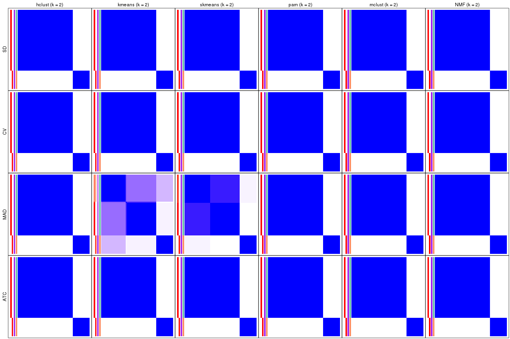
collect_plots(res_list, k = 3, fun = consensus_heatmap, mc.cores = 4)
collect_plots(res_list, k = 4, fun = consensus_heatmap, mc.cores = 4)
collect_plots(res_list, k = 5, fun = consensus_heatmap, mc.cores = 4)
collect_plots(res_list, k = 6, fun = consensus_heatmap, mc.cores = 4)

Membership heatmaps for all methods. (What is a membership heatmap?)
collect_plots(res_list, k = 2, fun = membership_heatmap, mc.cores = 4)
collect_plots(res_list, k = 3, fun = membership_heatmap, mc.cores = 4)
collect_plots(res_list, k = 4, fun = membership_heatmap, mc.cores = 4)
collect_plots(res_list, k = 5, fun = membership_heatmap, mc.cores = 4)
collect_plots(res_list, k = 6, fun = membership_heatmap, mc.cores = 4)
Signature heatmaps for all methods. (What is a signature heatmap?)
Note in following heatmaps, rows are scaled.
collect_plots(res_list, k = 2, fun = get_signatures, mc.cores = 4)
collect_plots(res_list, k = 3, fun = get_signatures, mc.cores = 4)
collect_plots(res_list, k = 4, fun = get_signatures, mc.cores = 4)
collect_plots(res_list, k = 5, fun = get_signatures, mc.cores = 4)
collect_plots(res_list, k = 6, fun = get_signatures, mc.cores = 4)
The statistics used for measuring the stability of consensus partitioning. (How are they defined?)
get_stats(res_list, k = 2)
#> k 1-PAC mean_silhouette concordance area_increased Rand Jaccard
#> SD:NMF 2 1.000 1.000 1.000 0.363 0.638 0.638
#> CV:NMF 2 1.000 1.000 1.000 0.363 0.638 0.638
#> MAD:NMF 2 1.000 1.000 1.000 0.363 0.638 0.638
#> ATC:NMF 2 1.000 1.000 1.000 0.363 0.638 0.638
#> SD:skmeans 2 1.000 1.000 1.000 0.363 0.638 0.638
#> CV:skmeans 2 1.000 1.000 1.000 0.363 0.638 0.638
#> MAD:skmeans 2 1.000 0.979 0.982 0.369 0.638 0.638
#> ATC:skmeans 2 1.000 1.000 1.000 0.363 0.638 0.638
#> SD:mclust 2 1.000 1.000 1.000 0.363 0.638 0.638
#> CV:mclust 2 1.000 1.000 1.000 0.363 0.638 0.638
#> MAD:mclust 2 1.000 1.000 1.000 0.363 0.638 0.638
#> ATC:mclust 2 1.000 1.000 1.000 0.363 0.638 0.638
#> SD:kmeans 2 1.000 1.000 1.000 0.363 0.638 0.638
#> CV:kmeans 2 1.000 1.000 1.000 0.363 0.638 0.638
#> MAD:kmeans 2 0.543 0.815 0.871 0.410 0.638 0.638
#> ATC:kmeans 2 1.000 1.000 1.000 0.363 0.638 0.638
#> SD:pam 2 1.000 1.000 1.000 0.363 0.638 0.638
#> CV:pam 2 1.000 1.000 1.000 0.363 0.638 0.638
#> MAD:pam 2 1.000 1.000 1.000 0.363 0.638 0.638
#> ATC:pam 2 1.000 1.000 1.000 0.363 0.638 0.638
#> SD:hclust 2 1.000 1.000 1.000 0.363 0.638 0.638
#> CV:hclust 2 1.000 1.000 1.000 0.363 0.638 0.638
#> MAD:hclust 2 1.000 1.000 1.000 0.363 0.638 0.638
#> ATC:hclust 2 1.000 1.000 1.000 0.363 0.638 0.638
get_stats(res_list, k = 3)
#> k 1-PAC mean_silhouette concordance area_increased Rand Jaccard
#> SD:NMF 3 1.000 0.973 0.989 0.8199 0.702 0.532
#> CV:NMF 3 1.000 0.983 0.990 0.8114 0.703 0.535
#> MAD:NMF 3 1.000 0.997 0.999 0.8173 0.703 0.535
#> ATC:NMF 3 0.707 0.998 0.865 0.5095 0.703 0.535
#> SD:skmeans 3 1.000 0.995 0.998 0.8175 0.703 0.535
#> CV:skmeans 3 1.000 0.991 0.996 0.8210 0.702 0.532
#> MAD:skmeans 3 1.000 1.000 1.000 0.7847 0.703 0.535
#> ATC:skmeans 3 1.000 1.000 1.000 0.8171 0.703 0.535
#> SD:mclust 3 1.000 1.000 1.000 0.8171 0.703 0.535
#> CV:mclust 3 1.000 0.958 0.983 0.8186 0.702 0.533
#> MAD:mclust 3 1.000 1.000 1.000 0.8171 0.703 0.535
#> ATC:mclust 3 1.000 1.000 1.000 0.8171 0.703 0.535
#> SD:kmeans 3 0.680 0.939 0.918 0.7074 0.702 0.532
#> CV:kmeans 3 0.708 0.980 0.946 0.7298 0.703 0.535
#> MAD:kmeans 3 0.699 0.992 0.946 0.5235 0.703 0.535
#> ATC:kmeans 3 0.678 0.991 0.937 0.7064 0.703 0.535
#> SD:pam 3 1.000 0.954 0.983 0.8197 0.702 0.533
#> CV:pam 3 1.000 0.987 0.994 0.8168 0.703 0.535
#> MAD:pam 3 1.000 0.996 0.998 0.8175 0.703 0.535
#> ATC:pam 3 1.000 0.990 0.996 0.8180 0.703 0.535
#> SD:hclust 3 0.709 0.907 0.916 0.7184 0.703 0.535
#> CV:hclust 3 0.921 0.952 0.978 0.8090 0.702 0.533
#> MAD:hclust 3 1.000 0.987 0.993 0.8169 0.703 0.535
#> ATC:hclust 3 0.975 0.958 0.978 0.0278 0.994 0.990
get_stats(res_list, k = 4)
#> k 1-PAC mean_silhouette concordance area_increased Rand Jaccard
#> SD:NMF 4 0.871 0.894 0.913 0.0882 0.904 0.724
#> CV:NMF 4 0.978 0.962 0.968 0.1271 0.916 0.753
#> MAD:NMF 4 0.876 0.895 0.928 0.0936 0.899 0.713
#> ATC:NMF 4 1.000 0.986 0.987 0.2025 1.000 1.000
#> SD:skmeans 4 1.000 0.962 0.974 0.1062 0.904 0.728
#> CV:skmeans 4 1.000 0.981 0.987 0.1222 0.895 0.700
#> MAD:skmeans 4 0.902 0.982 0.961 0.0943 0.936 0.811
#> ATC:skmeans 4 0.878 0.904 0.942 0.1005 0.939 0.821
#> SD:mclust 4 0.923 0.779 0.896 0.0986 0.924 0.780
#> CV:mclust 4 0.784 0.804 0.910 0.1048 0.932 0.798
#> MAD:mclust 4 0.887 0.877 0.928 0.1092 0.884 0.675
#> ATC:mclust 4 0.993 0.986 0.982 0.0413 0.975 0.926
#> SD:kmeans 4 0.799 0.810 0.867 0.1494 0.959 0.879
#> CV:kmeans 4 0.819 0.768 0.855 0.1345 0.949 0.852
#> MAD:kmeans 4 0.811 0.788 0.856 0.1269 0.960 0.884
#> ATC:kmeans 4 0.825 0.892 0.889 0.1334 0.952 0.860
#> SD:pam 4 1.000 0.972 0.985 0.1257 0.891 0.690
#> CV:pam 4 1.000 0.999 0.999 0.1277 0.916 0.753
#> MAD:pam 4 0.953 0.897 0.960 0.1175 0.878 0.661
#> ATC:pam 4 1.000 0.988 0.996 0.0380 0.975 0.926
#> SD:hclust 4 0.910 0.897 0.959 0.0706 0.915 0.776
#> CV:hclust 4 0.840 0.874 0.898 0.0644 1.000 1.000
#> MAD:hclust 4 0.959 0.974 0.984 0.0580 0.960 0.884
#> ATC:hclust 4 0.975 0.904 0.956 0.0245 0.994 0.991
get_stats(res_list, k = 5)
#> k 1-PAC mean_silhouette concordance area_increased Rand Jaccard
#> SD:NMF 5 0.933 0.889 0.914 0.0547 0.989 0.958
#> CV:NMF 5 0.925 0.855 0.928 0.0456 0.990 0.963
#> MAD:NMF 5 0.916 0.863 0.898 0.0529 0.986 0.948
#> ATC:NMF 5 0.772 0.810 0.889 0.0921 0.906 0.730
#> SD:skmeans 5 1.000 0.997 0.996 0.0568 0.959 0.848
#> CV:skmeans 5 0.983 0.921 0.968 0.0581 0.941 0.774
#> MAD:skmeans 5 1.000 0.995 0.990 0.0662 0.952 0.828
#> ATC:skmeans 5 0.992 0.944 0.966 0.0605 0.952 0.830
#> SD:mclust 5 0.861 0.818 0.860 0.0862 0.886 0.607
#> CV:mclust 5 0.934 0.911 0.955 0.0935 0.901 0.653
#> MAD:mclust 5 0.964 0.925 0.958 0.0541 0.928 0.743
#> ATC:mclust 5 0.832 0.762 0.864 0.0860 0.960 0.873
#> SD:kmeans 5 0.808 0.840 0.781 0.0622 0.925 0.751
#> CV:kmeans 5 0.799 0.842 0.815 0.0690 0.936 0.781
#> MAD:kmeans 5 0.809 0.740 0.752 0.0725 0.920 0.745
#> ATC:kmeans 5 0.756 0.793 0.819 0.0691 1.000 1.000
#> SD:pam 5 1.000 0.972 0.989 0.0349 0.975 0.902
#> CV:pam 5 0.995 0.766 0.910 0.0348 0.975 0.902
#> MAD:pam 5 0.953 0.893 0.961 0.0342 0.975 0.902
#> ATC:pam 5 1.000 0.997 0.999 0.1302 0.873 0.619
#> SD:hclust 5 0.974 0.961 0.981 0.0631 0.960 0.882
#> CV:hclust 5 0.863 0.876 0.861 0.0754 0.868 0.610
#> MAD:hclust 5 0.932 0.917 0.950 0.0365 0.983 0.943
#> ATC:hclust 5 0.671 0.480 0.749 0.3957 0.866 0.792
get_stats(res_list, k = 6)
#> k 1-PAC mean_silhouette concordance area_increased Rand Jaccard
#> SD:NMF 6 0.839 0.756 0.846 0.0402 0.943 0.785
#> CV:NMF 6 0.902 0.833 0.899 0.0324 0.954 0.817
#> MAD:NMF 6 0.854 0.829 0.859 0.0425 0.924 0.713
#> ATC:NMF 6 0.730 0.788 0.869 0.0384 0.974 0.905
#> SD:skmeans 6 0.962 0.943 0.964 0.0333 0.972 0.879
#> CV:skmeans 6 0.960 0.900 0.942 0.0405 0.968 0.846
#> MAD:skmeans 6 0.936 0.882 0.933 0.0354 0.982 0.924
#> ATC:skmeans 6 0.884 0.853 0.903 0.0323 1.000 1.000
#> SD:mclust 6 0.834 0.769 0.825 0.0382 0.935 0.696
#> CV:mclust 6 0.958 0.947 0.969 0.0283 0.980 0.901
#> MAD:mclust 6 0.888 0.861 0.912 0.0357 0.956 0.821
#> ATC:mclust 6 0.804 0.816 0.864 0.0753 0.905 0.668
#> SD:kmeans 6 0.843 0.790 0.827 0.0504 0.982 0.924
#> CV:kmeans 6 0.806 0.810 0.836 0.0428 0.960 0.833
#> MAD:kmeans 6 0.777 0.788 0.802 0.0498 0.889 0.596
#> ATC:kmeans 6 0.763 0.711 0.776 0.0507 0.939 0.792
#> SD:pam 6 0.938 0.929 0.954 0.0287 0.979 0.909
#> CV:pam 6 1.000 0.969 0.987 0.0408 0.941 0.760
#> MAD:pam 6 0.962 0.846 0.904 0.0302 0.931 0.731
#> ATC:pam 6 1.000 0.973 0.991 0.0463 0.955 0.804
#> SD:hclust 6 1.000 0.971 0.991 0.0281 0.977 0.923
#> CV:hclust 6 0.865 0.865 0.865 0.0262 0.971 0.866
#> MAD:hclust 6 0.910 0.905 0.919 0.0548 0.936 0.776
#> ATC:hclust 6 0.655 0.909 0.846 0.1667 0.685 0.450
Following heatmap plots the partition for each combination of methods and the lightness correspond to the silhouette scores for samples in each method. On top the consensus subgroup is inferred from all methods by taking the mean silhouette scores as weight.
collect_stats(res_list, k = 2)
collect_stats(res_list, k = 3)
collect_stats(res_list, k = 4)
collect_stats(res_list, k = 5)
collect_stats(res_list, k = 6)
Collect partitions from all methods:
collect_classes(res_list, k = 2)
collect_classes(res_list, k = 3)
collect_classes(res_list, k = 4)
collect_classes(res_list, k = 5)
collect_classes(res_list, k = 6)
Overlap of top rows from different top-row methods:
top_rows_overlap(res_list, top_n = 1000, method = "euler")
top_rows_overlap(res_list, top_n = 2000, method = "euler")
top_rows_overlap(res_list, top_n = 3000, method = "euler")
top_rows_overlap(res_list, top_n = 4000, method = "euler")
top_rows_overlap(res_list, top_n = 5000, method = "euler")
Also visualize the correspondance of rankings between different top-row methods:
top_rows_overlap(res_list, top_n = 1000, method = "correspondance")
top_rows_overlap(res_list, top_n = 2000, method = "correspondance")
top_rows_overlap(res_list, top_n = 3000, method = "correspondance")
top_rows_overlap(res_list, top_n = 4000, method = "correspondance")
top_rows_overlap(res_list, top_n = 5000, method = "correspondance")
Heatmaps of the top rows:
top_rows_heatmap(res_list, top_n = 1000)
top_rows_heatmap(res_list, top_n = 2000)
top_rows_heatmap(res_list, top_n = 3000)
top_rows_heatmap(res_list, top_n = 4000)
top_rows_heatmap(res_list, top_n = 5000)
The object with results only for a single top-value method and a single partition method can be extracted as:
res = res_list["SD", "hclust"]
# you can also extract it by
# res = res_list["SD:hclust"]
A summary of res and all the functions that can be applied to it:
res
#> A 'ConsensusPartition' object with k = 2, 3, 4, 5, 6.
#> On a matrix with 16769 rows and 73 columns.
#> Top rows (1000, 2000, 3000, 4000, 5000) are extracted by 'SD' method.
#> Subgroups are detected by 'hclust' method.
#> Performed in total 1250 partitions by row resampling.
#> Best k for subgroups seems to be 6.
#>
#> Following methods can be applied to this 'ConsensusPartition' object:
#> [1] "cola_report" "collect_classes" "collect_plots"
#> [4] "collect_stats" "colnames" "compare_signatures"
#> [7] "consensus_heatmap" "dimension_reduction" "functional_enrichment"
#> [10] "get_anno_col" "get_anno" "get_classes"
#> [13] "get_consensus" "get_matrix" "get_membership"
#> [16] "get_param" "get_signatures" "get_stats"
#> [19] "is_best_k" "is_stable_k" "membership_heatmap"
#> [22] "ncol" "nrow" "plot_ecdf"
#> [25] "rownames" "select_partition_number" "show"
#> [28] "suggest_best_k" "test_to_known_factors"
collect_plots() function collects all the plots made from res for all k (number of partitions)
into one single page to provide an easy and fast comparison between different k.
collect_plots(res)
The plots are:
k and the heatmap of
predicted classes for each k.k.k.k.All the plots in panels can be made by individual functions and they are plotted later in this section.
select_partition_number() produces several plots showing different
statistics for choosing “optimized” k. There are following statistics:
k;k, the area increased is defined as \(A_k - A_{k-1}\).The detailed explanations of these statistics can be found in the cola vignette.
Generally speaking, lower PAC score, higher mean silhouette score or higher
concordance corresponds to better partition. Rand index and Jaccard index
measure how similar the current partition is compared to partition with k-1.
If they are too similar, we won't accept k is better than k-1.
select_partition_number(res)
The numeric values for all these statistics can be obtained by get_stats().
get_stats(res)
#> k 1-PAC mean_silhouette concordance area_increased Rand Jaccard
#> 2 2 1.000 1.000 1.000 0.3629 0.638 0.638
#> 3 3 0.709 0.907 0.916 0.7184 0.703 0.535
#> 4 4 0.910 0.897 0.959 0.0706 0.915 0.776
#> 5 5 0.974 0.961 0.981 0.0631 0.960 0.882
#> 6 6 1.000 0.971 0.991 0.0281 0.977 0.923
suggest_best_k() suggests the best \(k\) based on these statistics. The rules are as follows:
suggest_best_k(res)
#> [1] 6
#> attr(,"optional")
#> [1] 2 4 5
There is also optional best \(k\) = 2 4 5 that is worth to check.
Following shows the table of the partitions (You need to click the show/hide
code output link to see it). The membership matrix (columns with name p*)
is inferred by
clue::cl_consensus()
function with the SE method. Basically the value in the membership matrix
represents the probability to belong to a certain group. The finall class
label for an item is determined with the group with highest probability it
belongs to.
In get_classes() function, the entropy is calculated from the membership
matrix and the silhouette score is calculated from the consensus matrix.
cbind(get_classes(res, k = 2), get_membership(res, k = 2))
#> class entropy silhouette p1 p2
#> SRR2453324 1 0 1 1 0
#> SRR2453325 1 0 1 1 0
#> SRR2453323 2 0 1 0 1
#> SRR2453321 1 0 1 1 0
#> SRR2453322 1 0 1 1 0
#> SRR2453320 2 0 1 0 1
#> SRR2453319 2 0 1 0 1
#> SRR2453318 2 0 1 0 1
#> SRR2453317 1 0 1 1 0
#> SRR2453316 1 0 1 1 0
#> SRR2453315 1 0 1 1 0
#> SRR2453312 1 0 1 1 0
#> SRR2453313 1 0 1 1 0
#> SRR2453314 1 0 1 1 0
#> SRR2453311 2 0 1 0 1
#> SRR2453310 1 0 1 1 0
#> SRR2453309 2 0 1 0 1
#> SRR2453308 1 0 1 1 0
#> SRR2453307 2 0 1 0 1
#> SRR2453306 1 0 1 1 0
#> SRR2453305 2 0 1 0 1
#> SRR2453303 1 0 1 1 0
#> SRR2453304 1 0 1 1 0
#> SRR2453302 2 0 1 0 1
#> SRR2453301 1 0 1 1 0
#> SRR2453299 2 0 1 0 1
#> SRR2453300 2 0 1 0 1
#> SRR2453371 1 0 1 1 0
#> SRR2453370 1 0 1 1 0
#> SRR2453369 1 0 1 1 0
#> SRR2453366 1 0 1 1 0
#> SRR2453367 1 0 1 1 0
#> SRR2453368 1 0 1 1 0
#> SRR2453365 1 0 1 1 0
#> SRR2453364 1 0 1 1 0
#> SRR2453363 1 0 1 1 0
#> SRR2453362 1 0 1 1 0
#> SRR2453361 1 0 1 1 0
#> SRR2453359 1 0 1 1 0
#> SRR2453360 1 0 1 1 0
#> SRR2453357 1 0 1 1 0
#> SRR2453356 1 0 1 1 0
#> SRR2453358 1 0 1 1 0
#> SRR2453355 1 0 1 1 0
#> SRR2453354 1 0 1 1 0
#> SRR2453353 1 0 1 1 0
#> SRR2453352 1 0 1 1 0
#> SRR2453351 1 0 1 1 0
#> SRR2453350 1 0 1 1 0
#> SRR2453349 1 0 1 1 0
#> SRR2453348 1 0 1 1 0
#> SRR2453346 1 0 1 1 0
#> SRR2453347 1 0 1 1 0
#> SRR2453345 1 0 1 1 0
#> SRR2453343 1 0 1 1 0
#> SRR2453344 1 0 1 1 0
#> SRR2453341 2 0 1 0 1
#> SRR2453340 1 0 1 1 0
#> SRR2453339 1 0 1 1 0
#> SRR2453337 1 0 1 1 0
#> SRR2453338 1 0 1 1 0
#> SRR2453336 2 0 1 0 1
#> SRR2453335 2 0 1 0 1
#> SRR2453334 2 0 1 0 1
#> SRR2453332 2 0 1 0 1
#> SRR2453333 2 0 1 0 1
#> SRR2453342 1 0 1 1 0
#> SRR2453331 1 0 1 1 0
#> SRR2453329 1 0 1 1 0
#> SRR2453330 1 0 1 1 0
#> SRR2453328 1 0 1 1 0
#> SRR2453326 1 0 1 1 0
#> SRR2453327 1 0 1 1 0
cbind(get_classes(res, k = 3), get_membership(res, k = 3))
#> class entropy silhouette p1 p2 p3
#> SRR2453324 3 0.3412 1.0000 0.124 0.000 0.876
#> SRR2453325 3 0.3412 1.0000 0.124 0.000 0.876
#> SRR2453323 2 0.1163 0.9861 0.000 0.972 0.028
#> SRR2453321 3 0.3412 1.0000 0.124 0.000 0.876
#> SRR2453322 3 0.3412 1.0000 0.124 0.000 0.876
#> SRR2453320 2 0.1163 0.9861 0.000 0.972 0.028
#> SRR2453319 2 0.1163 0.9861 0.000 0.972 0.028
#> SRR2453318 2 0.0000 0.9885 0.000 1.000 0.000
#> SRR2453317 3 0.3412 1.0000 0.124 0.000 0.876
#> SRR2453316 3 0.3412 1.0000 0.124 0.000 0.876
#> SRR2453315 3 0.3412 1.0000 0.124 0.000 0.876
#> SRR2453312 3 0.3412 1.0000 0.124 0.000 0.876
#> SRR2453313 3 0.3412 1.0000 0.124 0.000 0.876
#> SRR2453314 3 0.3412 1.0000 0.124 0.000 0.876
#> SRR2453311 2 0.0000 0.9885 0.000 1.000 0.000
#> SRR2453310 3 0.3412 1.0000 0.124 0.000 0.876
#> SRR2453309 2 0.0000 0.9885 0.000 1.000 0.000
#> SRR2453308 3 0.3412 1.0000 0.124 0.000 0.876
#> SRR2453307 2 0.1163 0.9861 0.000 0.972 0.028
#> SRR2453306 3 0.3412 1.0000 0.124 0.000 0.876
#> SRR2453305 2 0.1163 0.9861 0.000 0.972 0.028
#> SRR2453303 3 0.3412 1.0000 0.124 0.000 0.876
#> SRR2453304 3 0.3412 1.0000 0.124 0.000 0.876
#> SRR2453302 2 0.1163 0.9861 0.000 0.972 0.028
#> SRR2453301 3 0.3412 1.0000 0.124 0.000 0.876
#> SRR2453299 2 0.0000 0.9885 0.000 1.000 0.000
#> SRR2453300 2 0.0000 0.9885 0.000 1.000 0.000
#> SRR2453371 1 0.0000 0.9149 1.000 0.000 0.000
#> SRR2453370 1 0.0000 0.9149 1.000 0.000 0.000
#> SRR2453369 1 0.0000 0.9149 1.000 0.000 0.000
#> SRR2453366 1 0.0000 0.9149 1.000 0.000 0.000
#> SRR2453367 1 0.0000 0.9149 1.000 0.000 0.000
#> SRR2453368 1 0.0000 0.9149 1.000 0.000 0.000
#> SRR2453365 1 0.0000 0.9149 1.000 0.000 0.000
#> SRR2453364 1 0.0000 0.9149 1.000 0.000 0.000
#> SRR2453363 1 0.1860 0.8762 0.948 0.000 0.052
#> SRR2453362 1 0.0747 0.9051 0.984 0.000 0.016
#> SRR2453361 1 0.6299 -0.0363 0.524 0.000 0.476
#> SRR2453359 1 0.0000 0.9149 1.000 0.000 0.000
#> SRR2453360 1 0.0000 0.9149 1.000 0.000 0.000
#> SRR2453357 1 0.6299 -0.0363 0.524 0.000 0.476
#> SRR2453356 1 0.6299 -0.0363 0.524 0.000 0.476
#> SRR2453358 1 0.0000 0.9149 1.000 0.000 0.000
#> SRR2453355 1 0.0000 0.9149 1.000 0.000 0.000
#> SRR2453354 1 0.0000 0.9149 1.000 0.000 0.000
#> SRR2453353 1 0.0237 0.9127 0.996 0.000 0.004
#> SRR2453352 1 0.0747 0.9051 0.984 0.000 0.016
#> SRR2453351 1 0.6299 -0.0363 0.524 0.000 0.476
#> SRR2453350 1 0.0000 0.9149 1.000 0.000 0.000
#> SRR2453349 1 0.0000 0.9149 1.000 0.000 0.000
#> SRR2453348 1 0.0000 0.9149 1.000 0.000 0.000
#> SRR2453346 1 0.0000 0.9149 1.000 0.000 0.000
#> SRR2453347 1 0.0000 0.9149 1.000 0.000 0.000
#> SRR2453345 1 0.1860 0.8756 0.948 0.000 0.052
#> SRR2453343 1 0.1860 0.8756 0.948 0.000 0.052
#> SRR2453344 1 0.0000 0.9149 1.000 0.000 0.000
#> SRR2453341 2 0.2878 0.9366 0.000 0.904 0.096
#> SRR2453340 3 0.3412 1.0000 0.124 0.000 0.876
#> SRR2453339 3 0.3412 1.0000 0.124 0.000 0.876
#> SRR2453337 3 0.3412 1.0000 0.124 0.000 0.876
#> SRR2453338 3 0.3412 1.0000 0.124 0.000 0.876
#> SRR2453336 2 0.0000 0.9885 0.000 1.000 0.000
#> SRR2453335 2 0.1163 0.9861 0.000 0.972 0.028
#> SRR2453334 2 0.0000 0.9885 0.000 1.000 0.000
#> SRR2453332 2 0.0000 0.9885 0.000 1.000 0.000
#> SRR2453333 2 0.0000 0.9885 0.000 1.000 0.000
#> SRR2453342 1 0.0000 0.9149 1.000 0.000 0.000
#> SRR2453331 3 0.3412 1.0000 0.124 0.000 0.876
#> SRR2453329 3 0.3412 1.0000 0.124 0.000 0.876
#> SRR2453330 3 0.3412 1.0000 0.124 0.000 0.876
#> SRR2453328 3 0.3412 1.0000 0.124 0.000 0.876
#> SRR2453326 3 0.3412 1.0000 0.124 0.000 0.876
#> SRR2453327 3 0.3412 1.0000 0.124 0.000 0.876
cbind(get_classes(res, k = 4), get_membership(res, k = 4))
#> class entropy silhouette p1 p2 p3 p4
#> SRR2453324 3 0.0000 0.923 0.000 0.000 1.000 0.000
#> SRR2453325 3 0.0000 0.923 0.000 0.000 1.000 0.000
#> SRR2453323 2 0.2868 0.906 0.000 0.864 0.000 0.136
#> SRR2453321 3 0.0000 0.923 0.000 0.000 1.000 0.000
#> SRR2453322 3 0.0000 0.923 0.000 0.000 1.000 0.000
#> SRR2453320 2 0.2868 0.906 0.000 0.864 0.000 0.136
#> SRR2453319 2 0.2868 0.906 0.000 0.864 0.000 0.136
#> SRR2453318 2 0.0000 0.927 0.000 1.000 0.000 0.000
#> SRR2453317 3 0.0000 0.923 0.000 0.000 1.000 0.000
#> SRR2453316 3 0.0000 0.923 0.000 0.000 1.000 0.000
#> SRR2453315 3 0.0000 0.923 0.000 0.000 1.000 0.000
#> SRR2453312 3 0.0000 0.923 0.000 0.000 1.000 0.000
#> SRR2453313 3 0.0000 0.923 0.000 0.000 1.000 0.000
#> SRR2453314 3 0.0000 0.923 0.000 0.000 1.000 0.000
#> SRR2453311 2 0.0000 0.927 0.000 1.000 0.000 0.000
#> SRR2453310 3 0.0000 0.923 0.000 0.000 1.000 0.000
#> SRR2453309 2 0.0000 0.927 0.000 1.000 0.000 0.000
#> SRR2453308 3 0.0000 0.923 0.000 0.000 1.000 0.000
#> SRR2453307 2 0.2868 0.906 0.000 0.864 0.000 0.136
#> SRR2453306 3 0.0000 0.923 0.000 0.000 1.000 0.000
#> SRR2453305 2 0.2868 0.906 0.000 0.864 0.000 0.136
#> SRR2453303 3 0.0000 0.923 0.000 0.000 1.000 0.000
#> SRR2453304 3 0.0000 0.923 0.000 0.000 1.000 0.000
#> SRR2453302 2 0.2868 0.906 0.000 0.864 0.000 0.136
#> SRR2453301 3 0.0000 0.923 0.000 0.000 1.000 0.000
#> SRR2453299 2 0.0000 0.927 0.000 1.000 0.000 0.000
#> SRR2453300 2 0.0000 0.927 0.000 1.000 0.000 0.000
#> SRR2453371 1 0.0000 0.985 1.000 0.000 0.000 0.000
#> SRR2453370 1 0.0000 0.985 1.000 0.000 0.000 0.000
#> SRR2453369 1 0.0000 0.985 1.000 0.000 0.000 0.000
#> SRR2453366 1 0.0000 0.985 1.000 0.000 0.000 0.000
#> SRR2453367 1 0.0000 0.985 1.000 0.000 0.000 0.000
#> SRR2453368 1 0.0000 0.985 1.000 0.000 0.000 0.000
#> SRR2453365 1 0.0000 0.985 1.000 0.000 0.000 0.000
#> SRR2453364 1 0.0000 0.985 1.000 0.000 0.000 0.000
#> SRR2453363 1 0.1637 0.919 0.940 0.000 0.060 0.000
#> SRR2453362 1 0.0592 0.970 0.984 0.000 0.016 0.000
#> SRR2453361 3 0.4855 0.383 0.400 0.000 0.600 0.000
#> SRR2453359 1 0.0000 0.985 1.000 0.000 0.000 0.000
#> SRR2453360 1 0.0000 0.985 1.000 0.000 0.000 0.000
#> SRR2453357 3 0.4855 0.383 0.400 0.000 0.600 0.000
#> SRR2453356 3 0.4855 0.383 0.400 0.000 0.600 0.000
#> SRR2453358 1 0.0000 0.985 1.000 0.000 0.000 0.000
#> SRR2453355 1 0.0000 0.985 1.000 0.000 0.000 0.000
#> SRR2453354 1 0.0000 0.985 1.000 0.000 0.000 0.000
#> SRR2453353 1 0.0336 0.978 0.992 0.000 0.008 0.000
#> SRR2453352 1 0.0592 0.970 0.984 0.000 0.016 0.000
#> SRR2453351 3 0.4866 0.373 0.404 0.000 0.596 0.000
#> SRR2453350 1 0.0000 0.985 1.000 0.000 0.000 0.000
#> SRR2453349 1 0.0000 0.985 1.000 0.000 0.000 0.000
#> SRR2453348 1 0.0000 0.985 1.000 0.000 0.000 0.000
#> SRR2453346 1 0.0000 0.985 1.000 0.000 0.000 0.000
#> SRR2453347 1 0.0000 0.985 1.000 0.000 0.000 0.000
#> SRR2453345 1 0.2081 0.884 0.916 0.000 0.084 0.000
#> SRR2453343 1 0.2081 0.884 0.916 0.000 0.084 0.000
#> SRR2453344 1 0.0000 0.985 1.000 0.000 0.000 0.000
#> SRR2453341 4 0.2868 0.000 0.000 0.136 0.000 0.864
#> SRR2453340 3 0.0000 0.923 0.000 0.000 1.000 0.000
#> SRR2453339 3 0.0000 0.923 0.000 0.000 1.000 0.000
#> SRR2453337 3 0.0000 0.923 0.000 0.000 1.000 0.000
#> SRR2453338 3 0.0000 0.923 0.000 0.000 1.000 0.000
#> SRR2453336 2 0.0000 0.927 0.000 1.000 0.000 0.000
#> SRR2453335 2 0.2868 0.906 0.000 0.864 0.000 0.136
#> SRR2453334 2 0.0000 0.927 0.000 1.000 0.000 0.000
#> SRR2453332 2 0.0000 0.927 0.000 1.000 0.000 0.000
#> SRR2453333 2 0.0000 0.927 0.000 1.000 0.000 0.000
#> SRR2453342 1 0.0000 0.985 1.000 0.000 0.000 0.000
#> SRR2453331 3 0.0000 0.923 0.000 0.000 1.000 0.000
#> SRR2453329 3 0.0000 0.923 0.000 0.000 1.000 0.000
#> SRR2453330 3 0.0000 0.923 0.000 0.000 1.000 0.000
#> SRR2453328 3 0.0000 0.923 0.000 0.000 1.000 0.000
#> SRR2453326 3 0.0000 0.923 0.000 0.000 1.000 0.000
#> SRR2453327 3 0.0000 0.923 0.000 0.000 1.000 0.000
cbind(get_classes(res, k = 5), get_membership(res, k = 5))
#> class entropy silhouette p1 p2 p3 p4 p5
#> SRR2453324 3 0.0000 1.000 0.000 0.000 1 0.000 0.000
#> SRR2453325 3 0.0000 1.000 0.000 0.000 1 0.000 0.000
#> SRR2453323 2 0.0000 0.906 0.000 1.000 0 0.000 0.000
#> SRR2453321 3 0.0000 1.000 0.000 0.000 1 0.000 0.000
#> SRR2453322 3 0.0000 1.000 0.000 0.000 1 0.000 0.000
#> SRR2453320 2 0.0000 0.906 0.000 1.000 0 0.000 0.000
#> SRR2453319 2 0.0000 0.906 0.000 1.000 0 0.000 0.000
#> SRR2453318 2 0.2471 0.927 0.000 0.864 0 0.136 0.000
#> SRR2453317 3 0.0000 1.000 0.000 0.000 1 0.000 0.000
#> SRR2453316 3 0.0000 1.000 0.000 0.000 1 0.000 0.000
#> SRR2453315 3 0.0000 1.000 0.000 0.000 1 0.000 0.000
#> SRR2453312 3 0.0000 1.000 0.000 0.000 1 0.000 0.000
#> SRR2453313 3 0.0000 1.000 0.000 0.000 1 0.000 0.000
#> SRR2453314 3 0.0000 1.000 0.000 0.000 1 0.000 0.000
#> SRR2453311 2 0.2471 0.927 0.000 0.864 0 0.136 0.000
#> SRR2453310 3 0.0000 1.000 0.000 0.000 1 0.000 0.000
#> SRR2453309 2 0.2471 0.927 0.000 0.864 0 0.136 0.000
#> SRR2453308 3 0.0000 1.000 0.000 0.000 1 0.000 0.000
#> SRR2453307 2 0.0000 0.906 0.000 1.000 0 0.000 0.000
#> SRR2453306 3 0.0000 1.000 0.000 0.000 1 0.000 0.000
#> SRR2453305 2 0.0000 0.906 0.000 1.000 0 0.000 0.000
#> SRR2453303 3 0.0000 1.000 0.000 0.000 1 0.000 0.000
#> SRR2453304 3 0.0000 1.000 0.000 0.000 1 0.000 0.000
#> SRR2453302 2 0.0000 0.906 0.000 1.000 0 0.000 0.000
#> SRR2453301 3 0.0000 1.000 0.000 0.000 1 0.000 0.000
#> SRR2453299 2 0.2471 0.927 0.000 0.864 0 0.136 0.000
#> SRR2453300 2 0.2471 0.927 0.000 0.864 0 0.136 0.000
#> SRR2453371 1 0.0000 0.989 1.000 0.000 0 0.000 0.000
#> SRR2453370 1 0.0000 0.989 1.000 0.000 0 0.000 0.000
#> SRR2453369 1 0.0000 0.989 1.000 0.000 0 0.000 0.000
#> SRR2453366 1 0.0000 0.989 1.000 0.000 0 0.000 0.000
#> SRR2453367 1 0.0000 0.989 1.000 0.000 0 0.000 0.000
#> SRR2453368 1 0.0000 0.989 1.000 0.000 0 0.000 0.000
#> SRR2453365 1 0.0000 0.989 1.000 0.000 0 0.000 0.000
#> SRR2453364 1 0.0000 0.989 1.000 0.000 0 0.000 0.000
#> SRR2453363 1 0.1410 0.940 0.940 0.000 0 0.000 0.060
#> SRR2453362 1 0.0510 0.978 0.984 0.000 0 0.000 0.016
#> SRR2453361 5 0.0000 0.997 0.000 0.000 0 0.000 1.000
#> SRR2453359 1 0.0000 0.989 1.000 0.000 0 0.000 0.000
#> SRR2453360 1 0.0000 0.989 1.000 0.000 0 0.000 0.000
#> SRR2453357 5 0.0000 0.997 0.000 0.000 0 0.000 1.000
#> SRR2453356 5 0.0000 0.997 0.000 0.000 0 0.000 1.000
#> SRR2453358 1 0.0000 0.989 1.000 0.000 0 0.000 0.000
#> SRR2453355 1 0.0000 0.989 1.000 0.000 0 0.000 0.000
#> SRR2453354 1 0.0000 0.989 1.000 0.000 0 0.000 0.000
#> SRR2453353 1 0.0290 0.984 0.992 0.000 0 0.000 0.008
#> SRR2453352 1 0.0510 0.978 0.984 0.000 0 0.000 0.016
#> SRR2453351 5 0.0162 0.990 0.004 0.000 0 0.000 0.996
#> SRR2453350 1 0.0000 0.989 1.000 0.000 0 0.000 0.000
#> SRR2453349 1 0.0000 0.989 1.000 0.000 0 0.000 0.000
#> SRR2453348 1 0.0000 0.989 1.000 0.000 0 0.000 0.000
#> SRR2453346 1 0.0000 0.989 1.000 0.000 0 0.000 0.000
#> SRR2453347 1 0.0000 0.989 1.000 0.000 0 0.000 0.000
#> SRR2453345 1 0.1792 0.914 0.916 0.000 0 0.000 0.084
#> SRR2453343 1 0.1792 0.914 0.916 0.000 0 0.000 0.084
#> SRR2453344 1 0.0000 0.989 1.000 0.000 0 0.000 0.000
#> SRR2453341 4 0.0000 0.000 0.000 0.000 0 1.000 0.000
#> SRR2453340 3 0.0000 1.000 0.000 0.000 1 0.000 0.000
#> SRR2453339 3 0.0000 1.000 0.000 0.000 1 0.000 0.000
#> SRR2453337 3 0.0000 1.000 0.000 0.000 1 0.000 0.000
#> SRR2453338 3 0.0000 1.000 0.000 0.000 1 0.000 0.000
#> SRR2453336 2 0.2471 0.927 0.000 0.864 0 0.136 0.000
#> SRR2453335 2 0.0000 0.906 0.000 1.000 0 0.000 0.000
#> SRR2453334 2 0.2471 0.927 0.000 0.864 0 0.136 0.000
#> SRR2453332 2 0.2471 0.927 0.000 0.864 0 0.136 0.000
#> SRR2453333 2 0.2471 0.927 0.000 0.864 0 0.136 0.000
#> SRR2453342 1 0.0000 0.989 1.000 0.000 0 0.000 0.000
#> SRR2453331 3 0.0000 1.000 0.000 0.000 1 0.000 0.000
#> SRR2453329 3 0.0000 1.000 0.000 0.000 1 0.000 0.000
#> SRR2453330 3 0.0000 1.000 0.000 0.000 1 0.000 0.000
#> SRR2453328 3 0.0000 1.000 0.000 0.000 1 0.000 0.000
#> SRR2453326 3 0.0000 1.000 0.000 0.000 1 0.000 0.000
#> SRR2453327 3 0.0000 1.000 0.000 0.000 1 0.000 0.000
cbind(get_classes(res, k = 6), get_membership(res, k = 6))
#> class entropy silhouette p1 p2 p3 p4 p5 p6
#> SRR2453324 3 0.0000 1.000 0.000 0.000 1 0.000 0.000 0
#> SRR2453325 3 0.0000 1.000 0.000 0.000 1 0.000 0.000 0
#> SRR2453323 4 0.0632 1.000 0.000 0.024 0 0.976 0.000 0
#> SRR2453321 3 0.0000 1.000 0.000 0.000 1 0.000 0.000 0
#> SRR2453322 3 0.0000 1.000 0.000 0.000 1 0.000 0.000 0
#> SRR2453320 4 0.0632 1.000 0.000 0.024 0 0.976 0.000 0
#> SRR2453319 4 0.0632 1.000 0.000 0.024 0 0.976 0.000 0
#> SRR2453318 2 0.0000 0.973 0.000 1.000 0 0.000 0.000 0
#> SRR2453317 3 0.0000 1.000 0.000 0.000 1 0.000 0.000 0
#> SRR2453316 3 0.0000 1.000 0.000 0.000 1 0.000 0.000 0
#> SRR2453315 3 0.0000 1.000 0.000 0.000 1 0.000 0.000 0
#> SRR2453312 3 0.0000 1.000 0.000 0.000 1 0.000 0.000 0
#> SRR2453313 3 0.0000 1.000 0.000 0.000 1 0.000 0.000 0
#> SRR2453314 3 0.0000 1.000 0.000 0.000 1 0.000 0.000 0
#> SRR2453311 2 0.0000 0.973 0.000 1.000 0 0.000 0.000 0
#> SRR2453310 3 0.0000 1.000 0.000 0.000 1 0.000 0.000 0
#> SRR2453309 2 0.0000 0.973 0.000 1.000 0 0.000 0.000 0
#> SRR2453308 3 0.0000 1.000 0.000 0.000 1 0.000 0.000 0
#> SRR2453307 4 0.0632 1.000 0.000 0.024 0 0.976 0.000 0
#> SRR2453306 3 0.0000 1.000 0.000 0.000 1 0.000 0.000 0
#> SRR2453305 4 0.0632 1.000 0.000 0.024 0 0.976 0.000 0
#> SRR2453303 3 0.0000 1.000 0.000 0.000 1 0.000 0.000 0
#> SRR2453304 3 0.0000 1.000 0.000 0.000 1 0.000 0.000 0
#> SRR2453302 4 0.0632 1.000 0.000 0.024 0 0.976 0.000 0
#> SRR2453301 3 0.0000 1.000 0.000 0.000 1 0.000 0.000 0
#> SRR2453299 2 0.0000 0.973 0.000 1.000 0 0.000 0.000 0
#> SRR2453300 2 0.0000 0.973 0.000 1.000 0 0.000 0.000 0
#> SRR2453371 1 0.0146 0.986 0.996 0.000 0 0.004 0.000 0
#> SRR2453370 1 0.0000 0.988 1.000 0.000 0 0.000 0.000 0
#> SRR2453369 1 0.0000 0.988 1.000 0.000 0 0.000 0.000 0
#> SRR2453366 1 0.0000 0.988 1.000 0.000 0 0.000 0.000 0
#> SRR2453367 1 0.0000 0.988 1.000 0.000 0 0.000 0.000 0
#> SRR2453368 1 0.0000 0.988 1.000 0.000 0 0.000 0.000 0
#> SRR2453365 1 0.0000 0.988 1.000 0.000 0 0.000 0.000 0
#> SRR2453364 1 0.0000 0.988 1.000 0.000 0 0.000 0.000 0
#> SRR2453363 1 0.1411 0.938 0.936 0.000 0 0.004 0.060 0
#> SRR2453362 1 0.0603 0.975 0.980 0.000 0 0.004 0.016 0
#> SRR2453361 5 0.0000 0.992 0.000 0.000 0 0.000 1.000 0
#> SRR2453359 1 0.0000 0.988 1.000 0.000 0 0.000 0.000 0
#> SRR2453360 1 0.0000 0.988 1.000 0.000 0 0.000 0.000 0
#> SRR2453357 5 0.0000 0.992 0.000 0.000 0 0.000 1.000 0
#> SRR2453356 5 0.0000 0.992 0.000 0.000 0 0.000 1.000 0
#> SRR2453358 1 0.0000 0.988 1.000 0.000 0 0.000 0.000 0
#> SRR2453355 1 0.0000 0.988 1.000 0.000 0 0.000 0.000 0
#> SRR2453354 1 0.0000 0.988 1.000 0.000 0 0.000 0.000 0
#> SRR2453353 1 0.0260 0.983 0.992 0.000 0 0.000 0.008 0
#> SRR2453352 1 0.0603 0.975 0.980 0.000 0 0.004 0.016 0
#> SRR2453351 5 0.0603 0.976 0.004 0.000 0 0.016 0.980 0
#> SRR2453350 1 0.0000 0.988 1.000 0.000 0 0.000 0.000 0
#> SRR2453349 1 0.0000 0.988 1.000 0.000 0 0.000 0.000 0
#> SRR2453348 1 0.0000 0.988 1.000 0.000 0 0.000 0.000 0
#> SRR2453346 1 0.0000 0.988 1.000 0.000 0 0.000 0.000 0
#> SRR2453347 1 0.0000 0.988 1.000 0.000 0 0.000 0.000 0
#> SRR2453345 1 0.1838 0.915 0.916 0.000 0 0.016 0.068 0
#> SRR2453343 1 0.1838 0.915 0.916 0.000 0 0.016 0.068 0
#> SRR2453344 1 0.0000 0.988 1.000 0.000 0 0.000 0.000 0
#> SRR2453341 6 0.0000 0.000 0.000 0.000 0 0.000 0.000 1
#> SRR2453340 3 0.0000 1.000 0.000 0.000 1 0.000 0.000 0
#> SRR2453339 3 0.0000 1.000 0.000 0.000 1 0.000 0.000 0
#> SRR2453337 3 0.0000 1.000 0.000 0.000 1 0.000 0.000 0
#> SRR2453338 3 0.0000 1.000 0.000 0.000 1 0.000 0.000 0
#> SRR2453336 2 0.0000 0.973 0.000 1.000 0 0.000 0.000 0
#> SRR2453335 2 0.2793 0.722 0.000 0.800 0 0.200 0.000 0
#> SRR2453334 2 0.0000 0.973 0.000 1.000 0 0.000 0.000 0
#> SRR2453332 2 0.0000 0.973 0.000 1.000 0 0.000 0.000 0
#> SRR2453333 2 0.0000 0.973 0.000 1.000 0 0.000 0.000 0
#> SRR2453342 1 0.0000 0.988 1.000 0.000 0 0.000 0.000 0
#> SRR2453331 3 0.0000 1.000 0.000 0.000 1 0.000 0.000 0
#> SRR2453329 3 0.0000 1.000 0.000 0.000 1 0.000 0.000 0
#> SRR2453330 3 0.0000 1.000 0.000 0.000 1 0.000 0.000 0
#> SRR2453328 3 0.0000 1.000 0.000 0.000 1 0.000 0.000 0
#> SRR2453326 3 0.0000 1.000 0.000 0.000 1 0.000 0.000 0
#> SRR2453327 3 0.0000 1.000 0.000 0.000 1 0.000 0.000 0
Heatmaps for the consensus matrix. It visualizes the probability of two samples to be in a same group.
consensus_heatmap(res, k = 2)

consensus_heatmap(res, k = 3)
consensus_heatmap(res, k = 4)
consensus_heatmap(res, k = 5)
consensus_heatmap(res, k = 6)
Heatmaps for the membership of samples in all partitions to see how consistent they are:
membership_heatmap(res, k = 2)

membership_heatmap(res, k = 3)
membership_heatmap(res, k = 4)
membership_heatmap(res, k = 5)
membership_heatmap(res, k = 6)
As soon as we have had the classes for columns, we can look for signatures which are significantly different between classes which can be candidate marks for certain classes. Following are the heatmaps for signatures.
Signature heatmaps where rows are scaled:
get_signatures(res, k = 2)

get_signatures(res, k = 3)
get_signatures(res, k = 4)
get_signatures(res, k = 5)
get_signatures(res, k = 6)
Signature heatmaps where rows are not scaled:
get_signatures(res, k = 2, scale_rows = FALSE)

get_signatures(res, k = 3, scale_rows = FALSE)
get_signatures(res, k = 4, scale_rows = FALSE)
get_signatures(res, k = 5, scale_rows = FALSE)
get_signatures(res, k = 6, scale_rows = FALSE)
Compare the overlap of signatures from different k:
compare_signatures(res)
get_signature() returns a data frame invisibly. TO get the list of signatures, the function
call should be assigned to a variable explicitly. In following code, if plot argument is set
to FALSE, no heatmap is plotted while only the differential analysis is performed.
# code only for demonstration
tb = get_signature(res, k = ..., plot = FALSE)
An example of the output of tb is:
#> which_row fdr mean_1 mean_2 scaled_mean_1 scaled_mean_2 km
#> 1 38 0.042760348 8.373488 9.131774 -0.5533452 0.5164555 1
#> 2 40 0.018707592 7.106213 8.469186 -0.6173731 0.5762149 1
#> 3 55 0.019134737 10.221463 11.207825 -0.6159697 0.5749050 1
#> 4 59 0.006059896 5.921854 7.869574 -0.6899429 0.6439467 1
#> 5 60 0.018055526 8.928898 10.211722 -0.6204761 0.5791110 1
#> 6 98 0.009384629 15.714769 14.887706 0.6635654 -0.6193277 2
...
The columns in tb are:
which_row: row indices corresponding to the input matrix.fdr: FDR for the differential test. mean_x: The mean value in group x.scaled_mean_x: The mean value in group x after rows are scaled.km: Row groups if k-means clustering is applied to rows.UMAP plot which shows how samples are separated.
dimension_reduction(res, k = 2, method = "UMAP")

dimension_reduction(res, k = 3, method = "UMAP")
dimension_reduction(res, k = 4, method = "UMAP")
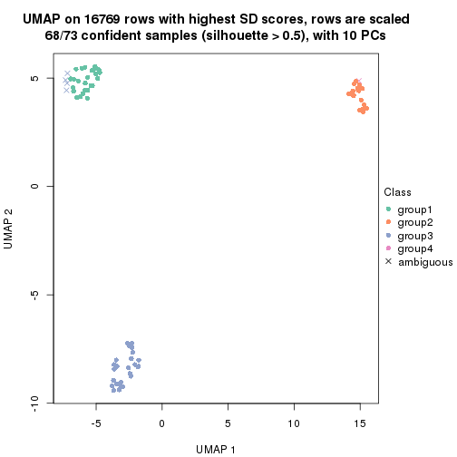
dimension_reduction(res, k = 5, method = "UMAP")
dimension_reduction(res, k = 6, method = "UMAP")
Following heatmap shows how subgroups are split when increasing k:
collect_classes(res)
If matrix rows can be associated to genes, consider to use functional_enrichment(res,
...) to perform function enrichment for the signature genes. See this vignette for more detailed explanations.
The object with results only for a single top-value method and a single partition method can be extracted as:
res = res_list["SD", "kmeans"]
# you can also extract it by
# res = res_list["SD:kmeans"]
A summary of res and all the functions that can be applied to it:
res
#> A 'ConsensusPartition' object with k = 2, 3, 4, 5, 6.
#> On a matrix with 16769 rows and 73 columns.
#> Top rows (1000, 2000, 3000, 4000, 5000) are extracted by 'SD' method.
#> Subgroups are detected by 'kmeans' method.
#> Performed in total 1250 partitions by row resampling.
#> Best k for subgroups seems to be 2.
#>
#> Following methods can be applied to this 'ConsensusPartition' object:
#> [1] "cola_report" "collect_classes" "collect_plots"
#> [4] "collect_stats" "colnames" "compare_signatures"
#> [7] "consensus_heatmap" "dimension_reduction" "functional_enrichment"
#> [10] "get_anno_col" "get_anno" "get_classes"
#> [13] "get_consensus" "get_matrix" "get_membership"
#> [16] "get_param" "get_signatures" "get_stats"
#> [19] "is_best_k" "is_stable_k" "membership_heatmap"
#> [22] "ncol" "nrow" "plot_ecdf"
#> [25] "rownames" "select_partition_number" "show"
#> [28] "suggest_best_k" "test_to_known_factors"
collect_plots() function collects all the plots made from res for all k (number of partitions)
into one single page to provide an easy and fast comparison between different k.
collect_plots(res)
The plots are:
k and the heatmap of
predicted classes for each k.k.k.k.All the plots in panels can be made by individual functions and they are plotted later in this section.
select_partition_number() produces several plots showing different
statistics for choosing “optimized” k. There are following statistics:
k;k, the area increased is defined as \(A_k - A_{k-1}\).The detailed explanations of these statistics can be found in the cola vignette.
Generally speaking, lower PAC score, higher mean silhouette score or higher
concordance corresponds to better partition. Rand index and Jaccard index
measure how similar the current partition is compared to partition with k-1.
If they are too similar, we won't accept k is better than k-1.
select_partition_number(res)
The numeric values for all these statistics can be obtained by get_stats().
get_stats(res)
#> k 1-PAC mean_silhouette concordance area_increased Rand Jaccard
#> 2 2 1.000 1.000 1.000 0.3629 0.638 0.638
#> 3 3 0.680 0.939 0.918 0.7074 0.702 0.532
#> 4 4 0.799 0.810 0.867 0.1494 0.959 0.879
#> 5 5 0.808 0.840 0.781 0.0622 0.925 0.751
#> 6 6 0.843 0.790 0.827 0.0504 0.982 0.924
suggest_best_k() suggests the best \(k\) based on these statistics. The rules are as follows:
suggest_best_k(res)
#> [1] 2
Following shows the table of the partitions (You need to click the show/hide
code output link to see it). The membership matrix (columns with name p*)
is inferred by
clue::cl_consensus()
function with the SE method. Basically the value in the membership matrix
represents the probability to belong to a certain group. The finall class
label for an item is determined with the group with highest probability it
belongs to.
In get_classes() function, the entropy is calculated from the membership
matrix and the silhouette score is calculated from the consensus matrix.
cbind(get_classes(res, k = 2), get_membership(res, k = 2))
#> class entropy silhouette p1 p2
#> SRR2453324 1 0 1 1 0
#> SRR2453325 1 0 1 1 0
#> SRR2453323 2 0 1 0 1
#> SRR2453321 1 0 1 1 0
#> SRR2453322 1 0 1 1 0
#> SRR2453320 2 0 1 0 1
#> SRR2453319 2 0 1 0 1
#> SRR2453318 2 0 1 0 1
#> SRR2453317 1 0 1 1 0
#> SRR2453316 1 0 1 1 0
#> SRR2453315 1 0 1 1 0
#> SRR2453312 1 0 1 1 0
#> SRR2453313 1 0 1 1 0
#> SRR2453314 1 0 1 1 0
#> SRR2453311 2 0 1 0 1
#> SRR2453310 1 0 1 1 0
#> SRR2453309 2 0 1 0 1
#> SRR2453308 1 0 1 1 0
#> SRR2453307 2 0 1 0 1
#> SRR2453306 1 0 1 1 0
#> SRR2453305 2 0 1 0 1
#> SRR2453303 1 0 1 1 0
#> SRR2453304 1 0 1 1 0
#> SRR2453302 2 0 1 0 1
#> SRR2453301 1 0 1 1 0
#> SRR2453299 2 0 1 0 1
#> SRR2453300 2 0 1 0 1
#> SRR2453371 1 0 1 1 0
#> SRR2453370 1 0 1 1 0
#> SRR2453369 1 0 1 1 0
#> SRR2453366 1 0 1 1 0
#> SRR2453367 1 0 1 1 0
#> SRR2453368 1 0 1 1 0
#> SRR2453365 1 0 1 1 0
#> SRR2453364 1 0 1 1 0
#> SRR2453363 1 0 1 1 0
#> SRR2453362 1 0 1 1 0
#> SRR2453361 1 0 1 1 0
#> SRR2453359 1 0 1 1 0
#> SRR2453360 1 0 1 1 0
#> SRR2453357 1 0 1 1 0
#> SRR2453356 1 0 1 1 0
#> SRR2453358 1 0 1 1 0
#> SRR2453355 1 0 1 1 0
#> SRR2453354 1 0 1 1 0
#> SRR2453353 1 0 1 1 0
#> SRR2453352 1 0 1 1 0
#> SRR2453351 1 0 1 1 0
#> SRR2453350 1 0 1 1 0
#> SRR2453349 1 0 1 1 0
#> SRR2453348 1 0 1 1 0
#> SRR2453346 1 0 1 1 0
#> SRR2453347 1 0 1 1 0
#> SRR2453345 1 0 1 1 0
#> SRR2453343 1 0 1 1 0
#> SRR2453344 1 0 1 1 0
#> SRR2453341 2 0 1 0 1
#> SRR2453340 1 0 1 1 0
#> SRR2453339 1 0 1 1 0
#> SRR2453337 1 0 1 1 0
#> SRR2453338 1 0 1 1 0
#> SRR2453336 2 0 1 0 1
#> SRR2453335 2 0 1 0 1
#> SRR2453334 2 0 1 0 1
#> SRR2453332 2 0 1 0 1
#> SRR2453333 2 0 1 0 1
#> SRR2453342 1 0 1 1 0
#> SRR2453331 1 0 1 1 0
#> SRR2453329 1 0 1 1 0
#> SRR2453330 1 0 1 1 0
#> SRR2453328 1 0 1 1 0
#> SRR2453326 1 0 1 1 0
#> SRR2453327 1 0 1 1 0
cbind(get_classes(res, k = 3), get_membership(res, k = 3))
#> class entropy silhouette p1 p2 p3
#> SRR2453324 3 0.0000 0.956 0.000 0.000 1.000
#> SRR2453325 3 0.0000 0.956 0.000 0.000 1.000
#> SRR2453323 2 0.3551 0.942 0.132 0.868 0.000
#> SRR2453321 3 0.0000 0.956 0.000 0.000 1.000
#> SRR2453322 3 0.0000 0.956 0.000 0.000 1.000
#> SRR2453320 2 0.3551 0.942 0.132 0.868 0.000
#> SRR2453319 2 0.3551 0.942 0.132 0.868 0.000
#> SRR2453318 2 0.0000 0.968 0.000 1.000 0.000
#> SRR2453317 3 0.0000 0.956 0.000 0.000 1.000
#> SRR2453316 3 0.0000 0.956 0.000 0.000 1.000
#> SRR2453315 3 0.0000 0.956 0.000 0.000 1.000
#> SRR2453312 3 0.0000 0.956 0.000 0.000 1.000
#> SRR2453313 3 0.0000 0.956 0.000 0.000 1.000
#> SRR2453314 3 0.0000 0.956 0.000 0.000 1.000
#> SRR2453311 2 0.0000 0.968 0.000 1.000 0.000
#> SRR2453310 3 0.0000 0.956 0.000 0.000 1.000
#> SRR2453309 2 0.0000 0.968 0.000 1.000 0.000
#> SRR2453308 3 0.0000 0.956 0.000 0.000 1.000
#> SRR2453307 2 0.3551 0.942 0.132 0.868 0.000
#> SRR2453306 3 0.0000 0.956 0.000 0.000 1.000
#> SRR2453305 2 0.3551 0.942 0.132 0.868 0.000
#> SRR2453303 3 0.0000 0.956 0.000 0.000 1.000
#> SRR2453304 3 0.0000 0.956 0.000 0.000 1.000
#> SRR2453302 2 0.3551 0.942 0.132 0.868 0.000
#> SRR2453301 3 0.0000 0.956 0.000 0.000 1.000
#> SRR2453299 2 0.0000 0.968 0.000 1.000 0.000
#> SRR2453300 2 0.0000 0.968 0.000 1.000 0.000
#> SRR2453371 1 0.3816 0.999 0.852 0.000 0.148
#> SRR2453370 1 0.3816 0.999 0.852 0.000 0.148
#> SRR2453369 1 0.3816 0.999 0.852 0.000 0.148
#> SRR2453366 1 0.3816 0.999 0.852 0.000 0.148
#> SRR2453367 1 0.3816 0.999 0.852 0.000 0.148
#> SRR2453368 1 0.3816 0.999 0.852 0.000 0.148
#> SRR2453365 1 0.3816 0.999 0.852 0.000 0.148
#> SRR2453364 1 0.3816 0.999 0.852 0.000 0.148
#> SRR2453363 1 0.3816 0.999 0.852 0.000 0.148
#> SRR2453362 1 0.3816 0.999 0.852 0.000 0.148
#> SRR2453361 1 0.4235 0.964 0.824 0.000 0.176
#> SRR2453359 1 0.3816 0.999 0.852 0.000 0.148
#> SRR2453360 1 0.3816 0.999 0.852 0.000 0.148
#> SRR2453357 3 0.6309 -0.259 0.496 0.000 0.504
#> SRR2453356 3 0.6309 -0.259 0.496 0.000 0.504
#> SRR2453358 1 0.3816 0.999 0.852 0.000 0.148
#> SRR2453355 1 0.3816 0.999 0.852 0.000 0.148
#> SRR2453354 1 0.3816 0.999 0.852 0.000 0.148
#> SRR2453353 1 0.3816 0.999 0.852 0.000 0.148
#> SRR2453352 1 0.3816 0.999 0.852 0.000 0.148
#> SRR2453351 1 0.3816 0.999 0.852 0.000 0.148
#> SRR2453350 1 0.3816 0.999 0.852 0.000 0.148
#> SRR2453349 1 0.3816 0.999 0.852 0.000 0.148
#> SRR2453348 1 0.3816 0.999 0.852 0.000 0.148
#> SRR2453346 1 0.3816 0.999 0.852 0.000 0.148
#> SRR2453347 1 0.3816 0.999 0.852 0.000 0.148
#> SRR2453345 1 0.3816 0.999 0.852 0.000 0.148
#> SRR2453343 1 0.3816 0.999 0.852 0.000 0.148
#> SRR2453344 1 0.3816 0.999 0.852 0.000 0.148
#> SRR2453341 2 0.0747 0.962 0.016 0.984 0.000
#> SRR2453340 3 0.0000 0.956 0.000 0.000 1.000
#> SRR2453339 3 0.0000 0.956 0.000 0.000 1.000
#> SRR2453337 3 0.0000 0.956 0.000 0.000 1.000
#> SRR2453338 3 0.0000 0.956 0.000 0.000 1.000
#> SRR2453336 2 0.0000 0.968 0.000 1.000 0.000
#> SRR2453335 2 0.0000 0.968 0.000 1.000 0.000
#> SRR2453334 2 0.0000 0.968 0.000 1.000 0.000
#> SRR2453332 2 0.0000 0.968 0.000 1.000 0.000
#> SRR2453333 2 0.0000 0.968 0.000 1.000 0.000
#> SRR2453342 1 0.3816 0.999 0.852 0.000 0.148
#> SRR2453331 3 0.0000 0.956 0.000 0.000 1.000
#> SRR2453329 3 0.0000 0.956 0.000 0.000 1.000
#> SRR2453330 3 0.0000 0.956 0.000 0.000 1.000
#> SRR2453328 3 0.0000 0.956 0.000 0.000 1.000
#> SRR2453326 3 0.0000 0.956 0.000 0.000 1.000
#> SRR2453327 3 0.0000 0.956 0.000 0.000 1.000
cbind(get_classes(res, k = 4), get_membership(res, k = 4))
#> class entropy silhouette p1 p2 p3 p4
#> SRR2453324 4 0.5548 0.761 0.032 0.000 0.340 0.628
#> SRR2453325 4 0.5548 0.761 0.032 0.000 0.340 0.628
#> SRR2453323 2 0.3219 0.904 0.000 0.836 0.164 0.000
#> SRR2453321 4 0.5630 0.748 0.032 0.000 0.360 0.608
#> SRR2453322 4 0.5630 0.748 0.032 0.000 0.360 0.608
#> SRR2453320 2 0.3219 0.904 0.000 0.836 0.164 0.000
#> SRR2453319 2 0.3219 0.904 0.000 0.836 0.164 0.000
#> SRR2453318 2 0.0336 0.945 0.000 0.992 0.000 0.008
#> SRR2453317 4 0.5389 0.770 0.032 0.000 0.308 0.660
#> SRR2453316 4 0.5389 0.770 0.032 0.000 0.308 0.660
#> SRR2453315 4 0.5389 0.770 0.032 0.000 0.308 0.660
#> SRR2453312 4 0.1610 0.786 0.032 0.000 0.016 0.952
#> SRR2453313 4 0.1610 0.786 0.032 0.000 0.016 0.952
#> SRR2453314 4 0.1610 0.786 0.032 0.000 0.016 0.952
#> SRR2453311 2 0.0000 0.945 0.000 1.000 0.000 0.000
#> SRR2453310 4 0.1610 0.786 0.032 0.000 0.016 0.952
#> SRR2453309 2 0.0000 0.945 0.000 1.000 0.000 0.000
#> SRR2453308 4 0.5645 0.747 0.032 0.000 0.364 0.604
#> SRR2453307 2 0.3355 0.904 0.000 0.836 0.160 0.004
#> SRR2453306 4 0.5530 0.763 0.032 0.000 0.336 0.632
#> SRR2453305 2 0.3219 0.904 0.000 0.836 0.164 0.000
#> SRR2453303 4 0.5659 0.745 0.032 0.000 0.368 0.600
#> SRR2453304 4 0.5659 0.745 0.032 0.000 0.368 0.600
#> SRR2453302 2 0.3355 0.904 0.000 0.836 0.160 0.004
#> SRR2453301 4 0.1610 0.786 0.032 0.000 0.016 0.952
#> SRR2453299 2 0.0000 0.945 0.000 1.000 0.000 0.000
#> SRR2453300 2 0.0000 0.945 0.000 1.000 0.000 0.000
#> SRR2453371 1 0.0188 0.887 0.996 0.000 0.004 0.000
#> SRR2453370 1 0.0188 0.887 0.996 0.000 0.004 0.000
#> SRR2453369 1 0.3311 0.697 0.828 0.000 0.172 0.000
#> SRR2453366 1 0.0000 0.887 1.000 0.000 0.000 0.000
#> SRR2453367 1 0.0188 0.887 0.996 0.000 0.004 0.000
#> SRR2453368 1 0.0188 0.887 0.996 0.000 0.004 0.000
#> SRR2453365 1 0.0188 0.887 0.996 0.000 0.004 0.000
#> SRR2453364 1 0.0000 0.887 1.000 0.000 0.000 0.000
#> SRR2453363 1 0.4972 -0.202 0.544 0.000 0.456 0.000
#> SRR2453362 1 0.4134 0.538 0.740 0.000 0.260 0.000
#> SRR2453361 3 0.4920 0.763 0.368 0.000 0.628 0.004
#> SRR2453359 1 0.0188 0.887 0.996 0.000 0.004 0.000
#> SRR2453360 1 0.0188 0.887 0.996 0.000 0.004 0.000
#> SRR2453357 3 0.5532 0.814 0.228 0.000 0.704 0.068
#> SRR2453356 3 0.5532 0.814 0.228 0.000 0.704 0.068
#> SRR2453358 1 0.0188 0.887 0.996 0.000 0.004 0.000
#> SRR2453355 1 0.0000 0.887 1.000 0.000 0.000 0.000
#> SRR2453354 1 0.0000 0.887 1.000 0.000 0.000 0.000
#> SRR2453353 1 0.4040 0.575 0.752 0.000 0.248 0.000
#> SRR2453352 1 0.4134 0.538 0.740 0.000 0.260 0.000
#> SRR2453351 3 0.4817 0.724 0.388 0.000 0.612 0.000
#> SRR2453350 1 0.0000 0.887 1.000 0.000 0.000 0.000
#> SRR2453349 1 0.0000 0.887 1.000 0.000 0.000 0.000
#> SRR2453348 1 0.0188 0.887 0.996 0.000 0.004 0.000
#> SRR2453346 1 0.0000 0.887 1.000 0.000 0.000 0.000
#> SRR2453347 1 0.0000 0.887 1.000 0.000 0.000 0.000
#> SRR2453345 1 0.4008 0.575 0.756 0.000 0.244 0.000
#> SRR2453343 1 0.4008 0.575 0.756 0.000 0.244 0.000
#> SRR2453344 1 0.0000 0.887 1.000 0.000 0.000 0.000
#> SRR2453341 2 0.1724 0.926 0.000 0.948 0.032 0.020
#> SRR2453340 4 0.1022 0.791 0.032 0.000 0.000 0.968
#> SRR2453339 4 0.1022 0.791 0.032 0.000 0.000 0.968
#> SRR2453337 4 0.1022 0.791 0.032 0.000 0.000 0.968
#> SRR2453338 4 0.1022 0.791 0.032 0.000 0.000 0.968
#> SRR2453336 2 0.0000 0.945 0.000 1.000 0.000 0.000
#> SRR2453335 2 0.0336 0.945 0.000 0.992 0.000 0.008
#> SRR2453334 2 0.0000 0.945 0.000 1.000 0.000 0.000
#> SRR2453332 2 0.0336 0.945 0.000 0.992 0.000 0.008
#> SRR2453333 2 0.0336 0.945 0.000 0.992 0.000 0.008
#> SRR2453342 1 0.0000 0.887 1.000 0.000 0.000 0.000
#> SRR2453331 4 0.1022 0.791 0.032 0.000 0.000 0.968
#> SRR2453329 4 0.1022 0.791 0.032 0.000 0.000 0.968
#> SRR2453330 4 0.1022 0.791 0.032 0.000 0.000 0.968
#> SRR2453328 4 0.1022 0.791 0.032 0.000 0.000 0.968
#> SRR2453326 4 0.5630 0.748 0.032 0.000 0.360 0.608
#> SRR2453327 4 0.5630 0.748 0.032 0.000 0.360 0.608
cbind(get_classes(res, k = 5), get_membership(res, k = 5))
#> class entropy silhouette p1 p2 p3 p4 p5
#> SRR2453324 3 0.0451 0.965 0.008 0.000 0.988 0.004 0.000
#> SRR2453325 3 0.0451 0.965 0.008 0.000 0.988 0.004 0.000
#> SRR2453323 2 0.4944 0.805 0.000 0.700 0.000 0.208 0.092
#> SRR2453321 3 0.0693 0.967 0.008 0.000 0.980 0.000 0.012
#> SRR2453322 3 0.0693 0.967 0.008 0.000 0.980 0.000 0.012
#> SRR2453320 2 0.4944 0.805 0.000 0.700 0.000 0.208 0.092
#> SRR2453319 2 0.4944 0.805 0.000 0.700 0.000 0.208 0.092
#> SRR2453318 2 0.0510 0.888 0.000 0.984 0.000 0.000 0.016
#> SRR2453317 3 0.1597 0.920 0.008 0.000 0.948 0.024 0.020
#> SRR2453316 3 0.1597 0.920 0.008 0.000 0.948 0.024 0.020
#> SRR2453315 3 0.1597 0.920 0.008 0.000 0.948 0.024 0.020
#> SRR2453312 4 0.5302 0.960 0.008 0.000 0.476 0.484 0.032
#> SRR2453313 4 0.5302 0.960 0.008 0.000 0.476 0.484 0.032
#> SRR2453314 4 0.5302 0.960 0.008 0.000 0.476 0.484 0.032
#> SRR2453311 2 0.0162 0.889 0.000 0.996 0.000 0.000 0.004
#> SRR2453310 4 0.5302 0.960 0.008 0.000 0.476 0.484 0.032
#> SRR2453309 2 0.0162 0.889 0.000 0.996 0.000 0.000 0.004
#> SRR2453308 3 0.0854 0.966 0.008 0.000 0.976 0.004 0.012
#> SRR2453307 2 0.4964 0.805 0.000 0.700 0.000 0.204 0.096
#> SRR2453306 3 0.0740 0.962 0.008 0.000 0.980 0.008 0.004
#> SRR2453305 2 0.4944 0.805 0.000 0.700 0.000 0.208 0.092
#> SRR2453303 3 0.0960 0.963 0.008 0.000 0.972 0.004 0.016
#> SRR2453304 3 0.0960 0.963 0.008 0.000 0.972 0.004 0.016
#> SRR2453302 2 0.4964 0.805 0.000 0.700 0.000 0.204 0.096
#> SRR2453301 4 0.5302 0.960 0.008 0.000 0.476 0.484 0.032
#> SRR2453299 2 0.0162 0.889 0.000 0.996 0.000 0.000 0.004
#> SRR2453300 2 0.0162 0.889 0.000 0.996 0.000 0.000 0.004
#> SRR2453371 1 0.3171 0.745 0.816 0.000 0.000 0.176 0.008
#> SRR2453370 1 0.0324 0.847 0.992 0.000 0.000 0.004 0.004
#> SRR2453369 1 0.5268 0.531 0.668 0.000 0.000 0.112 0.220
#> SRR2453366 1 0.0000 0.848 1.000 0.000 0.000 0.000 0.000
#> SRR2453367 1 0.2806 0.780 0.844 0.000 0.000 0.152 0.004
#> SRR2453368 1 0.0865 0.841 0.972 0.000 0.000 0.024 0.004
#> SRR2453365 1 0.0324 0.847 0.992 0.000 0.000 0.004 0.004
#> SRR2453364 1 0.0000 0.848 1.000 0.000 0.000 0.000 0.000
#> SRR2453363 5 0.5245 0.634 0.280 0.000 0.000 0.080 0.640
#> SRR2453362 1 0.6402 0.178 0.508 0.000 0.000 0.216 0.276
#> SRR2453361 5 0.4844 0.839 0.172 0.000 0.108 0.000 0.720
#> SRR2453359 1 0.0955 0.839 0.968 0.000 0.000 0.028 0.004
#> SRR2453360 1 0.0451 0.848 0.988 0.000 0.000 0.008 0.004
#> SRR2453357 5 0.5661 0.801 0.076 0.000 0.204 0.040 0.680
#> SRR2453356 5 0.4701 0.806 0.076 0.000 0.204 0.000 0.720
#> SRR2453358 1 0.0955 0.839 0.968 0.000 0.000 0.028 0.004
#> SRR2453355 1 0.0000 0.848 1.000 0.000 0.000 0.000 0.000
#> SRR2453354 1 0.0000 0.848 1.000 0.000 0.000 0.000 0.000
#> SRR2453353 1 0.5714 0.391 0.592 0.000 0.000 0.116 0.292
#> SRR2453352 1 0.6402 0.178 0.508 0.000 0.000 0.216 0.276
#> SRR2453351 5 0.5457 0.824 0.184 0.000 0.096 0.024 0.696
#> SRR2453350 1 0.0609 0.842 0.980 0.000 0.000 0.020 0.000
#> SRR2453349 1 0.0000 0.848 1.000 0.000 0.000 0.000 0.000
#> SRR2453348 1 0.0451 0.848 0.988 0.000 0.000 0.008 0.004
#> SRR2453346 1 0.0000 0.848 1.000 0.000 0.000 0.000 0.000
#> SRR2453347 1 0.2179 0.800 0.896 0.000 0.000 0.100 0.004
#> SRR2453345 1 0.5673 0.391 0.596 0.000 0.000 0.112 0.292
#> SRR2453343 1 0.5868 0.360 0.576 0.000 0.000 0.132 0.292
#> SRR2453344 1 0.0000 0.848 1.000 0.000 0.000 0.000 0.000
#> SRR2453341 2 0.2519 0.848 0.000 0.884 0.000 0.016 0.100
#> SRR2453340 4 0.4706 0.969 0.008 0.000 0.488 0.500 0.004
#> SRR2453339 4 0.4706 0.969 0.008 0.000 0.488 0.500 0.004
#> SRR2453337 4 0.4706 0.969 0.008 0.000 0.488 0.500 0.004
#> SRR2453338 4 0.4706 0.969 0.008 0.000 0.488 0.500 0.004
#> SRR2453336 2 0.0000 0.889 0.000 1.000 0.000 0.000 0.000
#> SRR2453335 2 0.1059 0.887 0.000 0.968 0.008 0.004 0.020
#> SRR2453334 2 0.0162 0.889 0.000 0.996 0.000 0.000 0.004
#> SRR2453332 2 0.0671 0.888 0.000 0.980 0.004 0.000 0.016
#> SRR2453333 2 0.0671 0.888 0.000 0.980 0.004 0.000 0.016
#> SRR2453342 1 0.0794 0.839 0.972 0.000 0.000 0.028 0.000
#> SRR2453331 4 0.4816 0.969 0.008 0.000 0.484 0.500 0.008
#> SRR2453329 4 0.4816 0.969 0.008 0.000 0.484 0.500 0.008
#> SRR2453330 4 0.4816 0.969 0.008 0.000 0.484 0.500 0.008
#> SRR2453328 4 0.4816 0.969 0.008 0.000 0.484 0.500 0.008
#> SRR2453326 3 0.0693 0.967 0.008 0.000 0.980 0.000 0.012
#> SRR2453327 3 0.0693 0.967 0.008 0.000 0.980 0.000 0.012
cbind(get_classes(res, k = 6), get_membership(res, k = 6))
#> class entropy silhouette p1 p2 p3 p4 p5 p6
#> SRR2453324 3 0.0713 0.9632 0.000 0.000 0.972 0.000 0.000 0.028
#> SRR2453325 3 0.0713 0.9632 0.000 0.000 0.972 0.000 0.000 0.028
#> SRR2453323 2 0.0000 0.7376 0.000 1.000 0.000 0.000 0.000 0.000
#> SRR2453321 3 0.0622 0.9641 0.000 0.000 0.980 0.000 0.008 0.012
#> SRR2453322 3 0.0622 0.9641 0.000 0.000 0.980 0.000 0.008 0.012
#> SRR2453320 2 0.0000 0.7376 0.000 1.000 0.000 0.000 0.000 0.000
#> SRR2453319 2 0.0000 0.7376 0.000 1.000 0.000 0.000 0.000 0.000
#> SRR2453318 2 0.3795 0.8584 0.000 0.632 0.000 0.004 0.000 0.364
#> SRR2453317 3 0.1624 0.9402 0.000 0.000 0.936 0.012 0.008 0.044
#> SRR2453316 3 0.1624 0.9402 0.000 0.000 0.936 0.012 0.008 0.044
#> SRR2453315 3 0.1624 0.9402 0.000 0.000 0.936 0.012 0.008 0.044
#> SRR2453312 4 0.4546 0.9454 0.000 0.000 0.288 0.660 0.012 0.040
#> SRR2453313 4 0.4608 0.9434 0.000 0.000 0.288 0.656 0.012 0.044
#> SRR2453314 4 0.4546 0.9454 0.000 0.000 0.288 0.660 0.012 0.040
#> SRR2453311 2 0.3795 0.8584 0.000 0.632 0.000 0.004 0.000 0.364
#> SRR2453310 4 0.4546 0.9454 0.000 0.000 0.288 0.660 0.012 0.040
#> SRR2453309 2 0.3672 0.8586 0.000 0.632 0.000 0.000 0.000 0.368
#> SRR2453308 3 0.0653 0.9645 0.000 0.000 0.980 0.004 0.004 0.012
#> SRR2453307 2 0.0146 0.7375 0.000 0.996 0.000 0.004 0.000 0.000
#> SRR2453306 3 0.1194 0.9594 0.000 0.000 0.956 0.008 0.004 0.032
#> SRR2453305 2 0.0000 0.7376 0.000 1.000 0.000 0.000 0.000 0.000
#> SRR2453303 3 0.0767 0.9641 0.000 0.000 0.976 0.004 0.008 0.012
#> SRR2453304 3 0.0767 0.9641 0.000 0.000 0.976 0.004 0.008 0.012
#> SRR2453302 2 0.0146 0.7375 0.000 0.996 0.000 0.004 0.000 0.000
#> SRR2453301 4 0.4546 0.9454 0.000 0.000 0.288 0.660 0.012 0.040
#> SRR2453299 2 0.3672 0.8586 0.000 0.632 0.000 0.000 0.000 0.368
#> SRR2453300 2 0.3672 0.8586 0.000 0.632 0.000 0.000 0.000 0.368
#> SRR2453371 1 0.4886 0.1161 0.620 0.000 0.000 0.076 0.004 0.300
#> SRR2453370 1 0.0260 0.7787 0.992 0.000 0.000 0.008 0.000 0.000
#> SRR2453369 1 0.6764 0.1137 0.524 0.000 0.000 0.148 0.184 0.144
#> SRR2453366 1 0.0000 0.7792 1.000 0.000 0.000 0.000 0.000 0.000
#> SRR2453367 1 0.4732 0.4769 0.680 0.000 0.000 0.148 0.000 0.172
#> SRR2453368 1 0.1003 0.7626 0.964 0.000 0.000 0.016 0.000 0.020
#> SRR2453365 1 0.0405 0.7779 0.988 0.000 0.000 0.008 0.000 0.004
#> SRR2453364 1 0.0000 0.7792 1.000 0.000 0.000 0.000 0.000 0.000
#> SRR2453363 5 0.3896 0.6330 0.068 0.000 0.000 0.012 0.784 0.136
#> SRR2453362 6 0.7025 1.0000 0.288 0.000 0.000 0.064 0.280 0.368
#> SRR2453361 5 0.1682 0.8322 0.020 0.000 0.052 0.000 0.928 0.000
#> SRR2453359 1 0.1341 0.7561 0.948 0.000 0.000 0.028 0.000 0.024
#> SRR2453360 1 0.0993 0.7733 0.964 0.000 0.000 0.024 0.000 0.012
#> SRR2453357 5 0.3118 0.8005 0.008 0.000 0.064 0.012 0.860 0.056
#> SRR2453356 5 0.1584 0.8299 0.008 0.000 0.064 0.000 0.928 0.000
#> SRR2453358 1 0.1341 0.7561 0.948 0.000 0.000 0.028 0.000 0.024
#> SRR2453355 1 0.0000 0.7792 1.000 0.000 0.000 0.000 0.000 0.000
#> SRR2453354 1 0.0000 0.7792 1.000 0.000 0.000 0.000 0.000 0.000
#> SRR2453353 1 0.7058 -0.0535 0.460 0.000 0.000 0.152 0.248 0.140
#> SRR2453352 6 0.7025 1.0000 0.288 0.000 0.000 0.064 0.280 0.368
#> SRR2453351 5 0.4695 0.6788 0.024 0.000 0.048 0.088 0.768 0.072
#> SRR2453350 1 0.0820 0.7732 0.972 0.000 0.000 0.016 0.000 0.012
#> SRR2453349 1 0.0363 0.7781 0.988 0.000 0.000 0.012 0.000 0.000
#> SRR2453348 1 0.0909 0.7747 0.968 0.000 0.000 0.020 0.000 0.012
#> SRR2453346 1 0.0000 0.7792 1.000 0.000 0.000 0.000 0.000 0.000
#> SRR2453347 1 0.4601 0.5225 0.732 0.000 0.000 0.124 0.020 0.124
#> SRR2453345 1 0.7082 -0.0561 0.456 0.000 0.000 0.156 0.248 0.140
#> SRR2453343 1 0.7235 -0.1254 0.432 0.000 0.000 0.156 0.244 0.168
#> SRR2453344 1 0.0146 0.7791 0.996 0.000 0.000 0.004 0.000 0.000
#> SRR2453341 2 0.5425 0.8056 0.000 0.596 0.000 0.068 0.036 0.300
#> SRR2453340 4 0.4201 0.9471 0.000 0.000 0.300 0.664 0.000 0.036
#> SRR2453339 4 0.4201 0.9471 0.000 0.000 0.300 0.664 0.000 0.036
#> SRR2453337 4 0.4201 0.9471 0.000 0.000 0.300 0.664 0.000 0.036
#> SRR2453338 4 0.4201 0.9471 0.000 0.000 0.300 0.664 0.000 0.036
#> SRR2453336 2 0.3672 0.8586 0.000 0.632 0.000 0.000 0.000 0.368
#> SRR2453335 2 0.3967 0.8575 0.000 0.632 0.000 0.000 0.012 0.356
#> SRR2453334 2 0.3672 0.8586 0.000 0.632 0.000 0.000 0.000 0.368
#> SRR2453332 2 0.4009 0.8577 0.000 0.632 0.000 0.004 0.008 0.356
#> SRR2453333 2 0.4009 0.8577 0.000 0.632 0.000 0.004 0.008 0.356
#> SRR2453342 1 0.2197 0.7258 0.900 0.000 0.000 0.056 0.000 0.044
#> SRR2453331 4 0.3885 0.9537 0.000 0.000 0.300 0.684 0.004 0.012
#> SRR2453329 4 0.3885 0.9537 0.000 0.000 0.300 0.684 0.004 0.012
#> SRR2453330 4 0.3885 0.9537 0.000 0.000 0.300 0.684 0.004 0.012
#> SRR2453328 4 0.3885 0.9537 0.000 0.000 0.300 0.684 0.004 0.012
#> SRR2453326 3 0.0622 0.9641 0.000 0.000 0.980 0.000 0.008 0.012
#> SRR2453327 3 0.0622 0.9641 0.000 0.000 0.980 0.000 0.008 0.012
Heatmaps for the consensus matrix. It visualizes the probability of two samples to be in a same group.
consensus_heatmap(res, k = 2)

consensus_heatmap(res, k = 3)
consensus_heatmap(res, k = 4)
consensus_heatmap(res, k = 5)
consensus_heatmap(res, k = 6)
Heatmaps for the membership of samples in all partitions to see how consistent they are:
membership_heatmap(res, k = 2)

membership_heatmap(res, k = 3)
membership_heatmap(res, k = 4)
membership_heatmap(res, k = 5)
membership_heatmap(res, k = 6)
As soon as we have had the classes for columns, we can look for signatures which are significantly different between classes which can be candidate marks for certain classes. Following are the heatmaps for signatures.
Signature heatmaps where rows are scaled:
get_signatures(res, k = 2)

get_signatures(res, k = 3)
get_signatures(res, k = 4)
get_signatures(res, k = 5)
get_signatures(res, k = 6)
Signature heatmaps where rows are not scaled:
get_signatures(res, k = 2, scale_rows = FALSE)

get_signatures(res, k = 3, scale_rows = FALSE)
get_signatures(res, k = 4, scale_rows = FALSE)
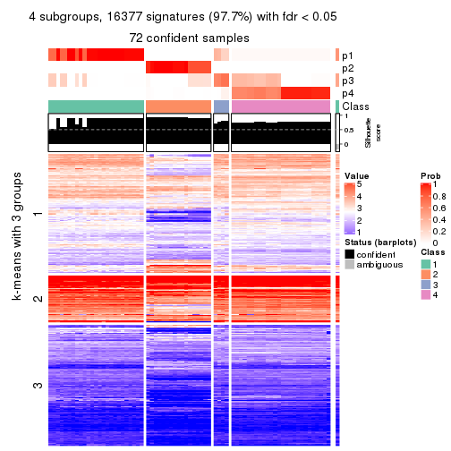
get_signatures(res, k = 5, scale_rows = FALSE)
get_signatures(res, k = 6, scale_rows = FALSE)
Compare the overlap of signatures from different k:
compare_signatures(res)
get_signature() returns a data frame invisibly. TO get the list of signatures, the function
call should be assigned to a variable explicitly. In following code, if plot argument is set
to FALSE, no heatmap is plotted while only the differential analysis is performed.
# code only for demonstration
tb = get_signature(res, k = ..., plot = FALSE)
An example of the output of tb is:
#> which_row fdr mean_1 mean_2 scaled_mean_1 scaled_mean_2 km
#> 1 38 0.042760348 8.373488 9.131774 -0.5533452 0.5164555 1
#> 2 40 0.018707592 7.106213 8.469186 -0.6173731 0.5762149 1
#> 3 55 0.019134737 10.221463 11.207825 -0.6159697 0.5749050 1
#> 4 59 0.006059896 5.921854 7.869574 -0.6899429 0.6439467 1
#> 5 60 0.018055526 8.928898 10.211722 -0.6204761 0.5791110 1
#> 6 98 0.009384629 15.714769 14.887706 0.6635654 -0.6193277 2
...
The columns in tb are:
which_row: row indices corresponding to the input matrix.fdr: FDR for the differential test. mean_x: The mean value in group x.scaled_mean_x: The mean value in group x after rows are scaled.km: Row groups if k-means clustering is applied to rows.UMAP plot which shows how samples are separated.
dimension_reduction(res, k = 2, method = "UMAP")

dimension_reduction(res, k = 3, method = "UMAP")
dimension_reduction(res, k = 4, method = "UMAP")
dimension_reduction(res, k = 5, method = "UMAP")
dimension_reduction(res, k = 6, method = "UMAP")
Following heatmap shows how subgroups are split when increasing k:
collect_classes(res)
If matrix rows can be associated to genes, consider to use functional_enrichment(res,
...) to perform function enrichment for the signature genes. See this vignette for more detailed explanations.
The object with results only for a single top-value method and a single partition method can be extracted as:
res = res_list["SD", "skmeans"]
# you can also extract it by
# res = res_list["SD:skmeans"]
A summary of res and all the functions that can be applied to it:
res
#> A 'ConsensusPartition' object with k = 2, 3, 4, 5, 6.
#> On a matrix with 16769 rows and 73 columns.
#> Top rows (1000, 2000, 3000, 4000, 5000) are extracted by 'SD' method.
#> Subgroups are detected by 'skmeans' method.
#> Performed in total 1250 partitions by row resampling.
#> Best k for subgroups seems to be 6.
#>
#> Following methods can be applied to this 'ConsensusPartition' object:
#> [1] "cola_report" "collect_classes" "collect_plots"
#> [4] "collect_stats" "colnames" "compare_signatures"
#> [7] "consensus_heatmap" "dimension_reduction" "functional_enrichment"
#> [10] "get_anno_col" "get_anno" "get_classes"
#> [13] "get_consensus" "get_matrix" "get_membership"
#> [16] "get_param" "get_signatures" "get_stats"
#> [19] "is_best_k" "is_stable_k" "membership_heatmap"
#> [22] "ncol" "nrow" "plot_ecdf"
#> [25] "rownames" "select_partition_number" "show"
#> [28] "suggest_best_k" "test_to_known_factors"
collect_plots() function collects all the plots made from res for all k (number of partitions)
into one single page to provide an easy and fast comparison between different k.
collect_plots(res)
The plots are:
k and the heatmap of
predicted classes for each k.k.k.k.All the plots in panels can be made by individual functions and they are plotted later in this section.
select_partition_number() produces several plots showing different
statistics for choosing “optimized” k. There are following statistics:
k;k, the area increased is defined as \(A_k - A_{k-1}\).The detailed explanations of these statistics can be found in the cola vignette.
Generally speaking, lower PAC score, higher mean silhouette score or higher
concordance corresponds to better partition. Rand index and Jaccard index
measure how similar the current partition is compared to partition with k-1.
If they are too similar, we won't accept k is better than k-1.
select_partition_number(res)
The numeric values for all these statistics can be obtained by get_stats().
get_stats(res)
#> k 1-PAC mean_silhouette concordance area_increased Rand Jaccard
#> 2 2 1.000 1.000 1.000 0.3629 0.638 0.638
#> 3 3 1.000 0.995 0.998 0.8175 0.703 0.535
#> 4 4 1.000 0.962 0.974 0.1062 0.904 0.728
#> 5 5 1.000 0.997 0.996 0.0568 0.959 0.848
#> 6 6 0.962 0.943 0.964 0.0333 0.972 0.879
suggest_best_k() suggests the best \(k\) based on these statistics. The rules are as follows:
suggest_best_k(res)
#> [1] 6
#> attr(,"optional")
#> [1] 2 3 4 5
There is also optional best \(k\) = 2 3 4 5 that is worth to check.
Following shows the table of the partitions (You need to click the show/hide
code output link to see it). The membership matrix (columns with name p*)
is inferred by
clue::cl_consensus()
function with the SE method. Basically the value in the membership matrix
represents the probability to belong to a certain group. The finall class
label for an item is determined with the group with highest probability it
belongs to.
In get_classes() function, the entropy is calculated from the membership
matrix and the silhouette score is calculated from the consensus matrix.
cbind(get_classes(res, k = 2), get_membership(res, k = 2))
#> class entropy silhouette p1 p2
#> SRR2453324 1 0 1 1 0
#> SRR2453325 1 0 1 1 0
#> SRR2453323 2 0 1 0 1
#> SRR2453321 1 0 1 1 0
#> SRR2453322 1 0 1 1 0
#> SRR2453320 2 0 1 0 1
#> SRR2453319 2 0 1 0 1
#> SRR2453318 2 0 1 0 1
#> SRR2453317 1 0 1 1 0
#> SRR2453316 1 0 1 1 0
#> SRR2453315 1 0 1 1 0
#> SRR2453312 1 0 1 1 0
#> SRR2453313 1 0 1 1 0
#> SRR2453314 1 0 1 1 0
#> SRR2453311 2 0 1 0 1
#> SRR2453310 1 0 1 1 0
#> SRR2453309 2 0 1 0 1
#> SRR2453308 1 0 1 1 0
#> SRR2453307 2 0 1 0 1
#> SRR2453306 1 0 1 1 0
#> SRR2453305 2 0 1 0 1
#> SRR2453303 1 0 1 1 0
#> SRR2453304 1 0 1 1 0
#> SRR2453302 2 0 1 0 1
#> SRR2453301 1 0 1 1 0
#> SRR2453299 2 0 1 0 1
#> SRR2453300 2 0 1 0 1
#> SRR2453371 1 0 1 1 0
#> SRR2453370 1 0 1 1 0
#> SRR2453369 1 0 1 1 0
#> SRR2453366 1 0 1 1 0
#> SRR2453367 1 0 1 1 0
#> SRR2453368 1 0 1 1 0
#> SRR2453365 1 0 1 1 0
#> SRR2453364 1 0 1 1 0
#> SRR2453363 1 0 1 1 0
#> SRR2453362 1 0 1 1 0
#> SRR2453361 1 0 1 1 0
#> SRR2453359 1 0 1 1 0
#> SRR2453360 1 0 1 1 0
#> SRR2453357 1 0 1 1 0
#> SRR2453356 1 0 1 1 0
#> SRR2453358 1 0 1 1 0
#> SRR2453355 1 0 1 1 0
#> SRR2453354 1 0 1 1 0
#> SRR2453353 1 0 1 1 0
#> SRR2453352 1 0 1 1 0
#> SRR2453351 1 0 1 1 0
#> SRR2453350 1 0 1 1 0
#> SRR2453349 1 0 1 1 0
#> SRR2453348 1 0 1 1 0
#> SRR2453346 1 0 1 1 0
#> SRR2453347 1 0 1 1 0
#> SRR2453345 1 0 1 1 0
#> SRR2453343 1 0 1 1 0
#> SRR2453344 1 0 1 1 0
#> SRR2453341 2 0 1 0 1
#> SRR2453340 1 0 1 1 0
#> SRR2453339 1 0 1 1 0
#> SRR2453337 1 0 1 1 0
#> SRR2453338 1 0 1 1 0
#> SRR2453336 2 0 1 0 1
#> SRR2453335 2 0 1 0 1
#> SRR2453334 2 0 1 0 1
#> SRR2453332 2 0 1 0 1
#> SRR2453333 2 0 1 0 1
#> SRR2453342 1 0 1 1 0
#> SRR2453331 1 0 1 1 0
#> SRR2453329 1 0 1 1 0
#> SRR2453330 1 0 1 1 0
#> SRR2453328 1 0 1 1 0
#> SRR2453326 1 0 1 1 0
#> SRR2453327 1 0 1 1 0
cbind(get_classes(res, k = 3), get_membership(res, k = 3))
#> class entropy silhouette p1 p2 p3
#> SRR2453324 3 0.000 1.000 0.000 0 1.000
#> SRR2453325 3 0.000 1.000 0.000 0 1.000
#> SRR2453323 2 0.000 1.000 0.000 1 0.000
#> SRR2453321 3 0.000 1.000 0.000 0 1.000
#> SRR2453322 3 0.000 1.000 0.000 0 1.000
#> SRR2453320 2 0.000 1.000 0.000 1 0.000
#> SRR2453319 2 0.000 1.000 0.000 1 0.000
#> SRR2453318 2 0.000 1.000 0.000 1 0.000
#> SRR2453317 3 0.000 1.000 0.000 0 1.000
#> SRR2453316 3 0.000 1.000 0.000 0 1.000
#> SRR2453315 3 0.000 1.000 0.000 0 1.000
#> SRR2453312 3 0.000 1.000 0.000 0 1.000
#> SRR2453313 3 0.000 1.000 0.000 0 1.000
#> SRR2453314 3 0.000 1.000 0.000 0 1.000
#> SRR2453311 2 0.000 1.000 0.000 1 0.000
#> SRR2453310 3 0.000 1.000 0.000 0 1.000
#> SRR2453309 2 0.000 1.000 0.000 1 0.000
#> SRR2453308 3 0.000 1.000 0.000 0 1.000
#> SRR2453307 2 0.000 1.000 0.000 1 0.000
#> SRR2453306 3 0.000 1.000 0.000 0 1.000
#> SRR2453305 2 0.000 1.000 0.000 1 0.000
#> SRR2453303 3 0.000 1.000 0.000 0 1.000
#> SRR2453304 3 0.000 1.000 0.000 0 1.000
#> SRR2453302 2 0.000 1.000 0.000 1 0.000
#> SRR2453301 3 0.000 1.000 0.000 0 1.000
#> SRR2453299 2 0.000 1.000 0.000 1 0.000
#> SRR2453300 2 0.000 1.000 0.000 1 0.000
#> SRR2453371 1 0.000 0.993 1.000 0 0.000
#> SRR2453370 1 0.000 0.993 1.000 0 0.000
#> SRR2453369 1 0.000 0.993 1.000 0 0.000
#> SRR2453366 1 0.000 0.993 1.000 0 0.000
#> SRR2453367 1 0.000 0.993 1.000 0 0.000
#> SRR2453368 1 0.000 0.993 1.000 0 0.000
#> SRR2453365 1 0.000 0.993 1.000 0 0.000
#> SRR2453364 1 0.000 0.993 1.000 0 0.000
#> SRR2453363 1 0.000 0.993 1.000 0 0.000
#> SRR2453362 1 0.000 0.993 1.000 0 0.000
#> SRR2453361 1 0.000 0.993 1.000 0 0.000
#> SRR2453359 1 0.000 0.993 1.000 0 0.000
#> SRR2453360 1 0.000 0.993 1.000 0 0.000
#> SRR2453357 1 0.288 0.893 0.904 0 0.096
#> SRR2453356 1 0.263 0.907 0.916 0 0.084
#> SRR2453358 1 0.000 0.993 1.000 0 0.000
#> SRR2453355 1 0.000 0.993 1.000 0 0.000
#> SRR2453354 1 0.000 0.993 1.000 0 0.000
#> SRR2453353 1 0.000 0.993 1.000 0 0.000
#> SRR2453352 1 0.000 0.993 1.000 0 0.000
#> SRR2453351 1 0.000 0.993 1.000 0 0.000
#> SRR2453350 1 0.000 0.993 1.000 0 0.000
#> SRR2453349 1 0.000 0.993 1.000 0 0.000
#> SRR2453348 1 0.000 0.993 1.000 0 0.000
#> SRR2453346 1 0.000 0.993 1.000 0 0.000
#> SRR2453347 1 0.000 0.993 1.000 0 0.000
#> SRR2453345 1 0.000 0.993 1.000 0 0.000
#> SRR2453343 1 0.000 0.993 1.000 0 0.000
#> SRR2453344 1 0.000 0.993 1.000 0 0.000
#> SRR2453341 2 0.000 1.000 0.000 1 0.000
#> SRR2453340 3 0.000 1.000 0.000 0 1.000
#> SRR2453339 3 0.000 1.000 0.000 0 1.000
#> SRR2453337 3 0.000 1.000 0.000 0 1.000
#> SRR2453338 3 0.000 1.000 0.000 0 1.000
#> SRR2453336 2 0.000 1.000 0.000 1 0.000
#> SRR2453335 2 0.000 1.000 0.000 1 0.000
#> SRR2453334 2 0.000 1.000 0.000 1 0.000
#> SRR2453332 2 0.000 1.000 0.000 1 0.000
#> SRR2453333 2 0.000 1.000 0.000 1 0.000
#> SRR2453342 1 0.000 0.993 1.000 0 0.000
#> SRR2453331 3 0.000 1.000 0.000 0 1.000
#> SRR2453329 3 0.000 1.000 0.000 0 1.000
#> SRR2453330 3 0.000 1.000 0.000 0 1.000
#> SRR2453328 3 0.000 1.000 0.000 0 1.000
#> SRR2453326 3 0.000 1.000 0.000 0 1.000
#> SRR2453327 3 0.000 1.000 0.000 0 1.000
cbind(get_classes(res, k = 4), get_membership(res, k = 4))
#> class entropy silhouette p1 p2 p3 p4
#> SRR2453324 3 0.187 0.913 0.000 0 0.928 0.072
#> SRR2453325 3 0.187 0.913 0.000 0 0.928 0.072
#> SRR2453323 2 0.000 1.000 0.000 1 0.000 0.000
#> SRR2453321 3 0.164 0.915 0.000 0 0.940 0.060
#> SRR2453322 3 0.164 0.915 0.000 0 0.940 0.060
#> SRR2453320 2 0.000 1.000 0.000 1 0.000 0.000
#> SRR2453319 2 0.000 1.000 0.000 1 0.000 0.000
#> SRR2453318 2 0.000 1.000 0.000 1 0.000 0.000
#> SRR2453317 3 0.222 0.900 0.000 0 0.908 0.092
#> SRR2453316 3 0.222 0.900 0.000 0 0.908 0.092
#> SRR2453315 3 0.222 0.900 0.000 0 0.908 0.092
#> SRR2453312 4 0.000 1.000 0.000 0 0.000 1.000
#> SRR2453313 4 0.000 1.000 0.000 0 0.000 1.000
#> SRR2453314 4 0.000 1.000 0.000 0 0.000 1.000
#> SRR2453311 2 0.000 1.000 0.000 1 0.000 0.000
#> SRR2453310 4 0.000 1.000 0.000 0 0.000 1.000
#> SRR2453309 2 0.000 1.000 0.000 1 0.000 0.000
#> SRR2453308 3 0.164 0.915 0.000 0 0.940 0.060
#> SRR2453307 2 0.000 1.000 0.000 1 0.000 0.000
#> SRR2453306 3 0.187 0.913 0.000 0 0.928 0.072
#> SRR2453305 2 0.000 1.000 0.000 1 0.000 0.000
#> SRR2453303 3 0.164 0.915 0.000 0 0.940 0.060
#> SRR2453304 3 0.164 0.915 0.000 0 0.940 0.060
#> SRR2453302 2 0.000 1.000 0.000 1 0.000 0.000
#> SRR2453301 4 0.000 1.000 0.000 0 0.000 1.000
#> SRR2453299 2 0.000 1.000 0.000 1 0.000 0.000
#> SRR2453300 2 0.000 1.000 0.000 1 0.000 0.000
#> SRR2453371 1 0.000 0.992 1.000 0 0.000 0.000
#> SRR2453370 1 0.000 0.992 1.000 0 0.000 0.000
#> SRR2453369 1 0.000 0.992 1.000 0 0.000 0.000
#> SRR2453366 1 0.000 0.992 1.000 0 0.000 0.000
#> SRR2453367 1 0.000 0.992 1.000 0 0.000 0.000
#> SRR2453368 1 0.000 0.992 1.000 0 0.000 0.000
#> SRR2453365 1 0.000 0.992 1.000 0 0.000 0.000
#> SRR2453364 1 0.000 0.992 1.000 0 0.000 0.000
#> SRR2453363 1 0.164 0.945 0.940 0 0.060 0.000
#> SRR2453362 1 0.000 0.992 1.000 0 0.000 0.000
#> SRR2453361 1 0.228 0.912 0.904 0 0.096 0.000
#> SRR2453359 1 0.000 0.992 1.000 0 0.000 0.000
#> SRR2453360 1 0.000 0.992 1.000 0 0.000 0.000
#> SRR2453357 3 0.470 0.412 0.356 0 0.644 0.000
#> SRR2453356 3 0.470 0.412 0.356 0 0.644 0.000
#> SRR2453358 1 0.000 0.992 1.000 0 0.000 0.000
#> SRR2453355 1 0.000 0.992 1.000 0 0.000 0.000
#> SRR2453354 1 0.000 0.992 1.000 0 0.000 0.000
#> SRR2453353 1 0.000 0.992 1.000 0 0.000 0.000
#> SRR2453352 1 0.000 0.992 1.000 0 0.000 0.000
#> SRR2453351 1 0.222 0.916 0.908 0 0.092 0.000
#> SRR2453350 1 0.000 0.992 1.000 0 0.000 0.000
#> SRR2453349 1 0.000 0.992 1.000 0 0.000 0.000
#> SRR2453348 1 0.000 0.992 1.000 0 0.000 0.000
#> SRR2453346 1 0.000 0.992 1.000 0 0.000 0.000
#> SRR2453347 1 0.000 0.992 1.000 0 0.000 0.000
#> SRR2453345 1 0.000 0.992 1.000 0 0.000 0.000
#> SRR2453343 1 0.000 0.992 1.000 0 0.000 0.000
#> SRR2453344 1 0.000 0.992 1.000 0 0.000 0.000
#> SRR2453341 2 0.000 1.000 0.000 1 0.000 0.000
#> SRR2453340 4 0.000 1.000 0.000 0 0.000 1.000
#> SRR2453339 4 0.000 1.000 0.000 0 0.000 1.000
#> SRR2453337 4 0.000 1.000 0.000 0 0.000 1.000
#> SRR2453338 4 0.000 1.000 0.000 0 0.000 1.000
#> SRR2453336 2 0.000 1.000 0.000 1 0.000 0.000
#> SRR2453335 2 0.000 1.000 0.000 1 0.000 0.000
#> SRR2453334 2 0.000 1.000 0.000 1 0.000 0.000
#> SRR2453332 2 0.000 1.000 0.000 1 0.000 0.000
#> SRR2453333 2 0.000 1.000 0.000 1 0.000 0.000
#> SRR2453342 1 0.000 0.992 1.000 0 0.000 0.000
#> SRR2453331 4 0.000 1.000 0.000 0 0.000 1.000
#> SRR2453329 4 0.000 1.000 0.000 0 0.000 1.000
#> SRR2453330 4 0.000 1.000 0.000 0 0.000 1.000
#> SRR2453328 4 0.000 1.000 0.000 0 0.000 1.000
#> SRR2453326 3 0.164 0.915 0.000 0 0.940 0.060
#> SRR2453327 3 0.164 0.915 0.000 0 0.940 0.060
cbind(get_classes(res, k = 5), get_membership(res, k = 5))
#> class entropy silhouette p1 p2 p3 p4 p5
#> SRR2453324 3 0.0162 0.996 0.000 0 0.996 0.004 0.000
#> SRR2453325 3 0.0162 0.996 0.000 0 0.996 0.004 0.000
#> SRR2453323 2 0.0000 1.000 0.000 1 0.000 0.000 0.000
#> SRR2453321 3 0.0324 0.997 0.000 0 0.992 0.004 0.004
#> SRR2453322 3 0.0324 0.997 0.000 0 0.992 0.004 0.004
#> SRR2453320 2 0.0000 1.000 0.000 1 0.000 0.000 0.000
#> SRR2453319 2 0.0000 1.000 0.000 1 0.000 0.000 0.000
#> SRR2453318 2 0.0000 1.000 0.000 1 0.000 0.000 0.000
#> SRR2453317 3 0.0290 0.994 0.000 0 0.992 0.008 0.000
#> SRR2453316 3 0.0290 0.994 0.000 0 0.992 0.008 0.000
#> SRR2453315 3 0.0290 0.994 0.000 0 0.992 0.008 0.000
#> SRR2453312 4 0.0290 0.995 0.000 0 0.000 0.992 0.008
#> SRR2453313 4 0.0290 0.995 0.000 0 0.000 0.992 0.008
#> SRR2453314 4 0.0290 0.995 0.000 0 0.000 0.992 0.008
#> SRR2453311 2 0.0000 1.000 0.000 1 0.000 0.000 0.000
#> SRR2453310 4 0.0290 0.995 0.000 0 0.000 0.992 0.008
#> SRR2453309 2 0.0000 1.000 0.000 1 0.000 0.000 0.000
#> SRR2453308 3 0.0324 0.997 0.000 0 0.992 0.004 0.004
#> SRR2453307 2 0.0000 1.000 0.000 1 0.000 0.000 0.000
#> SRR2453306 3 0.0162 0.996 0.000 0 0.996 0.004 0.000
#> SRR2453305 2 0.0000 1.000 0.000 1 0.000 0.000 0.000
#> SRR2453303 3 0.0324 0.997 0.000 0 0.992 0.004 0.004
#> SRR2453304 3 0.0324 0.997 0.000 0 0.992 0.004 0.004
#> SRR2453302 2 0.0000 1.000 0.000 1 0.000 0.000 0.000
#> SRR2453301 4 0.0290 0.995 0.000 0 0.000 0.992 0.008
#> SRR2453299 2 0.0000 1.000 0.000 1 0.000 0.000 0.000
#> SRR2453300 2 0.0000 1.000 0.000 1 0.000 0.000 0.000
#> SRR2453371 1 0.0162 0.995 0.996 0 0.004 0.000 0.000
#> SRR2453370 1 0.0000 0.997 1.000 0 0.000 0.000 0.000
#> SRR2453369 1 0.0290 0.992 0.992 0 0.000 0.000 0.008
#> SRR2453366 1 0.0000 0.997 1.000 0 0.000 0.000 0.000
#> SRR2453367 1 0.0000 0.997 1.000 0 0.000 0.000 0.000
#> SRR2453368 1 0.0000 0.997 1.000 0 0.000 0.000 0.000
#> SRR2453365 1 0.0000 0.997 1.000 0 0.000 0.000 0.000
#> SRR2453364 1 0.0000 0.997 1.000 0 0.000 0.000 0.000
#> SRR2453363 5 0.0566 0.990 0.012 0 0.004 0.000 0.984
#> SRR2453362 1 0.0324 0.993 0.992 0 0.004 0.000 0.004
#> SRR2453361 5 0.0451 0.997 0.008 0 0.004 0.000 0.988
#> SRR2453359 1 0.0000 0.997 1.000 0 0.000 0.000 0.000
#> SRR2453360 1 0.0000 0.997 1.000 0 0.000 0.000 0.000
#> SRR2453357 5 0.0451 0.997 0.008 0 0.004 0.000 0.988
#> SRR2453356 5 0.0451 0.997 0.008 0 0.004 0.000 0.988
#> SRR2453358 1 0.0000 0.997 1.000 0 0.000 0.000 0.000
#> SRR2453355 1 0.0000 0.997 1.000 0 0.000 0.000 0.000
#> SRR2453354 1 0.0000 0.997 1.000 0 0.000 0.000 0.000
#> SRR2453353 1 0.0404 0.989 0.988 0 0.000 0.000 0.012
#> SRR2453352 1 0.0324 0.993 0.992 0 0.004 0.000 0.004
#> SRR2453351 5 0.0451 0.997 0.008 0 0.004 0.000 0.988
#> SRR2453350 1 0.0000 0.997 1.000 0 0.000 0.000 0.000
#> SRR2453349 1 0.0000 0.997 1.000 0 0.000 0.000 0.000
#> SRR2453348 1 0.0000 0.997 1.000 0 0.000 0.000 0.000
#> SRR2453346 1 0.0000 0.997 1.000 0 0.000 0.000 0.000
#> SRR2453347 1 0.0000 0.997 1.000 0 0.000 0.000 0.000
#> SRR2453345 1 0.0404 0.989 0.988 0 0.000 0.000 0.012
#> SRR2453343 1 0.0404 0.989 0.988 0 0.000 0.000 0.012
#> SRR2453344 1 0.0000 0.997 1.000 0 0.000 0.000 0.000
#> SRR2453341 2 0.0000 1.000 0.000 1 0.000 0.000 0.000
#> SRR2453340 4 0.0000 0.997 0.000 0 0.000 1.000 0.000
#> SRR2453339 4 0.0000 0.997 0.000 0 0.000 1.000 0.000
#> SRR2453337 4 0.0000 0.997 0.000 0 0.000 1.000 0.000
#> SRR2453338 4 0.0000 0.997 0.000 0 0.000 1.000 0.000
#> SRR2453336 2 0.0000 1.000 0.000 1 0.000 0.000 0.000
#> SRR2453335 2 0.0000 1.000 0.000 1 0.000 0.000 0.000
#> SRR2453334 2 0.0000 1.000 0.000 1 0.000 0.000 0.000
#> SRR2453332 2 0.0000 1.000 0.000 1 0.000 0.000 0.000
#> SRR2453333 2 0.0000 1.000 0.000 1 0.000 0.000 0.000
#> SRR2453342 1 0.0000 0.997 1.000 0 0.000 0.000 0.000
#> SRR2453331 4 0.0000 0.997 0.000 0 0.000 1.000 0.000
#> SRR2453329 4 0.0000 0.997 0.000 0 0.000 1.000 0.000
#> SRR2453330 4 0.0000 0.997 0.000 0 0.000 1.000 0.000
#> SRR2453328 4 0.0000 0.997 0.000 0 0.000 1.000 0.000
#> SRR2453326 3 0.0324 0.997 0.000 0 0.992 0.004 0.004
#> SRR2453327 3 0.0324 0.997 0.000 0 0.992 0.004 0.004
cbind(get_classes(res, k = 6), get_membership(res, k = 6))
#> class entropy silhouette p1 p2 p3 p4 p5 p6
#> SRR2453324 3 0.0260 0.9881 0.000 0.000 0.992 0.000 0.000 0.008
#> SRR2453325 3 0.0260 0.9881 0.000 0.000 0.992 0.000 0.000 0.008
#> SRR2453323 2 0.0260 0.9955 0.000 0.992 0.000 0.000 0.000 0.008
#> SRR2453321 3 0.0000 0.9884 0.000 0.000 1.000 0.000 0.000 0.000
#> SRR2453322 3 0.0000 0.9884 0.000 0.000 1.000 0.000 0.000 0.000
#> SRR2453320 2 0.0260 0.9955 0.000 0.992 0.000 0.000 0.000 0.008
#> SRR2453319 2 0.0260 0.9955 0.000 0.992 0.000 0.000 0.000 0.008
#> SRR2453318 2 0.0000 0.9968 0.000 1.000 0.000 0.000 0.000 0.000
#> SRR2453317 3 0.1007 0.9680 0.000 0.000 0.956 0.000 0.000 0.044
#> SRR2453316 3 0.1007 0.9680 0.000 0.000 0.956 0.000 0.000 0.044
#> SRR2453315 3 0.1007 0.9680 0.000 0.000 0.956 0.000 0.000 0.044
#> SRR2453312 4 0.1910 0.9330 0.000 0.000 0.000 0.892 0.000 0.108
#> SRR2453313 4 0.1910 0.9330 0.000 0.000 0.000 0.892 0.000 0.108
#> SRR2453314 4 0.1910 0.9330 0.000 0.000 0.000 0.892 0.000 0.108
#> SRR2453311 2 0.0000 0.9968 0.000 1.000 0.000 0.000 0.000 0.000
#> SRR2453310 4 0.1910 0.9330 0.000 0.000 0.000 0.892 0.000 0.108
#> SRR2453309 2 0.0000 0.9968 0.000 1.000 0.000 0.000 0.000 0.000
#> SRR2453308 3 0.0146 0.9882 0.000 0.000 0.996 0.000 0.000 0.004
#> SRR2453307 2 0.0260 0.9955 0.000 0.992 0.000 0.000 0.000 0.008
#> SRR2453306 3 0.0260 0.9881 0.000 0.000 0.992 0.000 0.000 0.008
#> SRR2453305 2 0.0260 0.9955 0.000 0.992 0.000 0.000 0.000 0.008
#> SRR2453303 3 0.0146 0.9882 0.000 0.000 0.996 0.000 0.000 0.004
#> SRR2453304 3 0.0146 0.9882 0.000 0.000 0.996 0.000 0.000 0.004
#> SRR2453302 2 0.0260 0.9955 0.000 0.992 0.000 0.000 0.000 0.008
#> SRR2453301 4 0.1910 0.9330 0.000 0.000 0.000 0.892 0.000 0.108
#> SRR2453299 2 0.0000 0.9968 0.000 1.000 0.000 0.000 0.000 0.000
#> SRR2453300 2 0.0000 0.9968 0.000 1.000 0.000 0.000 0.000 0.000
#> SRR2453371 6 0.3499 0.6582 0.320 0.000 0.000 0.000 0.000 0.680
#> SRR2453370 1 0.0000 0.9664 1.000 0.000 0.000 0.000 0.000 0.000
#> SRR2453369 1 0.2563 0.8760 0.876 0.000 0.000 0.000 0.052 0.072
#> SRR2453366 1 0.0000 0.9664 1.000 0.000 0.000 0.000 0.000 0.000
#> SRR2453367 1 0.1075 0.9347 0.952 0.000 0.000 0.000 0.000 0.048
#> SRR2453368 1 0.0000 0.9664 1.000 0.000 0.000 0.000 0.000 0.000
#> SRR2453365 1 0.0000 0.9664 1.000 0.000 0.000 0.000 0.000 0.000
#> SRR2453364 1 0.0000 0.9664 1.000 0.000 0.000 0.000 0.000 0.000
#> SRR2453363 6 0.3737 0.0243 0.000 0.000 0.000 0.000 0.392 0.608
#> SRR2453362 6 0.2823 0.7511 0.204 0.000 0.000 0.000 0.000 0.796
#> SRR2453361 5 0.0000 0.9588 0.000 0.000 0.000 0.000 1.000 0.000
#> SRR2453359 1 0.0000 0.9664 1.000 0.000 0.000 0.000 0.000 0.000
#> SRR2453360 1 0.0000 0.9664 1.000 0.000 0.000 0.000 0.000 0.000
#> SRR2453357 5 0.1327 0.9103 0.000 0.000 0.000 0.000 0.936 0.064
#> SRR2453356 5 0.0000 0.9588 0.000 0.000 0.000 0.000 1.000 0.000
#> SRR2453358 1 0.0000 0.9664 1.000 0.000 0.000 0.000 0.000 0.000
#> SRR2453355 1 0.0000 0.9664 1.000 0.000 0.000 0.000 0.000 0.000
#> SRR2453354 1 0.0000 0.9664 1.000 0.000 0.000 0.000 0.000 0.000
#> SRR2453353 1 0.2134 0.8973 0.904 0.000 0.000 0.000 0.052 0.044
#> SRR2453352 6 0.2823 0.7511 0.204 0.000 0.000 0.000 0.000 0.796
#> SRR2453351 5 0.0865 0.9336 0.000 0.000 0.000 0.000 0.964 0.036
#> SRR2453350 1 0.0363 0.9603 0.988 0.000 0.000 0.000 0.000 0.012
#> SRR2453349 1 0.0000 0.9664 1.000 0.000 0.000 0.000 0.000 0.000
#> SRR2453348 1 0.0000 0.9664 1.000 0.000 0.000 0.000 0.000 0.000
#> SRR2453346 1 0.0000 0.9664 1.000 0.000 0.000 0.000 0.000 0.000
#> SRR2453347 1 0.1387 0.9263 0.932 0.000 0.000 0.000 0.000 0.068
#> SRR2453345 1 0.2618 0.8721 0.872 0.000 0.000 0.000 0.052 0.076
#> SRR2453343 1 0.2672 0.8682 0.868 0.000 0.000 0.000 0.052 0.080
#> SRR2453344 1 0.0000 0.9664 1.000 0.000 0.000 0.000 0.000 0.000
#> SRR2453341 2 0.0000 0.9968 0.000 1.000 0.000 0.000 0.000 0.000
#> SRR2453340 4 0.0146 0.9574 0.000 0.000 0.000 0.996 0.000 0.004
#> SRR2453339 4 0.0146 0.9574 0.000 0.000 0.000 0.996 0.000 0.004
#> SRR2453337 4 0.0146 0.9574 0.000 0.000 0.000 0.996 0.000 0.004
#> SRR2453338 4 0.0146 0.9574 0.000 0.000 0.000 0.996 0.000 0.004
#> SRR2453336 2 0.0000 0.9968 0.000 1.000 0.000 0.000 0.000 0.000
#> SRR2453335 2 0.0260 0.9955 0.000 0.992 0.000 0.000 0.000 0.008
#> SRR2453334 2 0.0000 0.9968 0.000 1.000 0.000 0.000 0.000 0.000
#> SRR2453332 2 0.0000 0.9968 0.000 1.000 0.000 0.000 0.000 0.000
#> SRR2453333 2 0.0000 0.9968 0.000 1.000 0.000 0.000 0.000 0.000
#> SRR2453342 1 0.0458 0.9581 0.984 0.000 0.000 0.000 0.000 0.016
#> SRR2453331 4 0.0000 0.9580 0.000 0.000 0.000 1.000 0.000 0.000
#> SRR2453329 4 0.0000 0.9580 0.000 0.000 0.000 1.000 0.000 0.000
#> SRR2453330 4 0.0000 0.9580 0.000 0.000 0.000 1.000 0.000 0.000
#> SRR2453328 4 0.0000 0.9580 0.000 0.000 0.000 1.000 0.000 0.000
#> SRR2453326 3 0.0000 0.9884 0.000 0.000 1.000 0.000 0.000 0.000
#> SRR2453327 3 0.0000 0.9884 0.000 0.000 1.000 0.000 0.000 0.000
Heatmaps for the consensus matrix. It visualizes the probability of two samples to be in a same group.
consensus_heatmap(res, k = 2)

consensus_heatmap(res, k = 3)
consensus_heatmap(res, k = 4)
consensus_heatmap(res, k = 5)
consensus_heatmap(res, k = 6)
Heatmaps for the membership of samples in all partitions to see how consistent they are:
membership_heatmap(res, k = 2)

membership_heatmap(res, k = 3)
membership_heatmap(res, k = 4)
membership_heatmap(res, k = 5)

membership_heatmap(res, k = 6)
As soon as we have had the classes for columns, we can look for signatures which are significantly different between classes which can be candidate marks for certain classes. Following are the heatmaps for signatures.
Signature heatmaps where rows are scaled:
get_signatures(res, k = 2)

get_signatures(res, k = 3)
get_signatures(res, k = 4)
get_signatures(res, k = 5)
get_signatures(res, k = 6)
Signature heatmaps where rows are not scaled:
get_signatures(res, k = 2, scale_rows = FALSE)

get_signatures(res, k = 3, scale_rows = FALSE)
get_signatures(res, k = 4, scale_rows = FALSE)
get_signatures(res, k = 5, scale_rows = FALSE)
get_signatures(res, k = 6, scale_rows = FALSE)
Compare the overlap of signatures from different k:
compare_signatures(res)
get_signature() returns a data frame invisibly. TO get the list of signatures, the function
call should be assigned to a variable explicitly. In following code, if plot argument is set
to FALSE, no heatmap is plotted while only the differential analysis is performed.
# code only for demonstration
tb = get_signature(res, k = ..., plot = FALSE)
An example of the output of tb is:
#> which_row fdr mean_1 mean_2 scaled_mean_1 scaled_mean_2 km
#> 1 38 0.042760348 8.373488 9.131774 -0.5533452 0.5164555 1
#> 2 40 0.018707592 7.106213 8.469186 -0.6173731 0.5762149 1
#> 3 55 0.019134737 10.221463 11.207825 -0.6159697 0.5749050 1
#> 4 59 0.006059896 5.921854 7.869574 -0.6899429 0.6439467 1
#> 5 60 0.018055526 8.928898 10.211722 -0.6204761 0.5791110 1
#> 6 98 0.009384629 15.714769 14.887706 0.6635654 -0.6193277 2
...
The columns in tb are:
which_row: row indices corresponding to the input matrix.fdr: FDR for the differential test. mean_x: The mean value in group x.scaled_mean_x: The mean value in group x after rows are scaled.km: Row groups if k-means clustering is applied to rows.UMAP plot which shows how samples are separated.
dimension_reduction(res, k = 2, method = "UMAP")

dimension_reduction(res, k = 3, method = "UMAP")
dimension_reduction(res, k = 4, method = "UMAP")
dimension_reduction(res, k = 5, method = "UMAP")
dimension_reduction(res, k = 6, method = "UMAP")

Following heatmap shows how subgroups are split when increasing k:
collect_classes(res)
If matrix rows can be associated to genes, consider to use functional_enrichment(res,
...) to perform function enrichment for the signature genes. See this vignette for more detailed explanations.
The object with results only for a single top-value method and a single partition method can be extracted as:
res = res_list["SD", "pam"]
# you can also extract it by
# res = res_list["SD:pam"]
A summary of res and all the functions that can be applied to it:
res
#> A 'ConsensusPartition' object with k = 2, 3, 4, 5, 6.
#> On a matrix with 16769 rows and 73 columns.
#> Top rows (1000, 2000, 3000, 4000, 5000) are extracted by 'SD' method.
#> Subgroups are detected by 'pam' method.
#> Performed in total 1250 partitions by row resampling.
#> Best k for subgroups seems to be 6.
#>
#> Following methods can be applied to this 'ConsensusPartition' object:
#> [1] "cola_report" "collect_classes" "collect_plots"
#> [4] "collect_stats" "colnames" "compare_signatures"
#> [7] "consensus_heatmap" "dimension_reduction" "functional_enrichment"
#> [10] "get_anno_col" "get_anno" "get_classes"
#> [13] "get_consensus" "get_matrix" "get_membership"
#> [16] "get_param" "get_signatures" "get_stats"
#> [19] "is_best_k" "is_stable_k" "membership_heatmap"
#> [22] "ncol" "nrow" "plot_ecdf"
#> [25] "rownames" "select_partition_number" "show"
#> [28] "suggest_best_k" "test_to_known_factors"
collect_plots() function collects all the plots made from res for all k (number of partitions)
into one single page to provide an easy and fast comparison between different k.
collect_plots(res)

The plots are:
k and the heatmap of
predicted classes for each k.k.k.k.All the plots in panels can be made by individual functions and they are plotted later in this section.
select_partition_number() produces several plots showing different
statistics for choosing “optimized” k. There are following statistics:
k;k, the area increased is defined as \(A_k - A_{k-1}\).The detailed explanations of these statistics can be found in the cola vignette.
Generally speaking, lower PAC score, higher mean silhouette score or higher
concordance corresponds to better partition. Rand index and Jaccard index
measure how similar the current partition is compared to partition with k-1.
If they are too similar, we won't accept k is better than k-1.
select_partition_number(res)
The numeric values for all these statistics can be obtained by get_stats().
get_stats(res)
#> k 1-PAC mean_silhouette concordance area_increased Rand Jaccard
#> 2 2 1.000 1.000 1.000 0.3629 0.638 0.638
#> 3 3 1.000 0.954 0.983 0.8197 0.702 0.533
#> 4 4 1.000 0.972 0.985 0.1257 0.891 0.690
#> 5 5 1.000 0.972 0.989 0.0349 0.975 0.902
#> 6 6 0.938 0.929 0.954 0.0287 0.979 0.909
suggest_best_k() suggests the best \(k\) based on these statistics. The rules are as follows:
suggest_best_k(res)
#> [1] 6
#> attr(,"optional")
#> [1] 2 3 4 5
There is also optional best \(k\) = 2 3 4 5 that is worth to check.
Following shows the table of the partitions (You need to click the show/hide
code output link to see it). The membership matrix (columns with name p*)
is inferred by
clue::cl_consensus()
function with the SE method. Basically the value in the membership matrix
represents the probability to belong to a certain group. The finall class
label for an item is determined with the group with highest probability it
belongs to.
In get_classes() function, the entropy is calculated from the membership
matrix and the silhouette score is calculated from the consensus matrix.
cbind(get_classes(res, k = 2), get_membership(res, k = 2))
#> class entropy silhouette p1 p2
#> SRR2453324 1 0 1 1 0
#> SRR2453325 1 0 1 1 0
#> SRR2453323 2 0 1 0 1
#> SRR2453321 1 0 1 1 0
#> SRR2453322 1 0 1 1 0
#> SRR2453320 2 0 1 0 1
#> SRR2453319 2 0 1 0 1
#> SRR2453318 2 0 1 0 1
#> SRR2453317 1 0 1 1 0
#> SRR2453316 1 0 1 1 0
#> SRR2453315 1 0 1 1 0
#> SRR2453312 1 0 1 1 0
#> SRR2453313 1 0 1 1 0
#> SRR2453314 1 0 1 1 0
#> SRR2453311 2 0 1 0 1
#> SRR2453310 1 0 1 1 0
#> SRR2453309 2 0 1 0 1
#> SRR2453308 1 0 1 1 0
#> SRR2453307 2 0 1 0 1
#> SRR2453306 1 0 1 1 0
#> SRR2453305 2 0 1 0 1
#> SRR2453303 1 0 1 1 0
#> SRR2453304 1 0 1 1 0
#> SRR2453302 2 0 1 0 1
#> SRR2453301 1 0 1 1 0
#> SRR2453299 2 0 1 0 1
#> SRR2453300 2 0 1 0 1
#> SRR2453371 1 0 1 1 0
#> SRR2453370 1 0 1 1 0
#> SRR2453369 1 0 1 1 0
#> SRR2453366 1 0 1 1 0
#> SRR2453367 1 0 1 1 0
#> SRR2453368 1 0 1 1 0
#> SRR2453365 1 0 1 1 0
#> SRR2453364 1 0 1 1 0
#> SRR2453363 1 0 1 1 0
#> SRR2453362 1 0 1 1 0
#> SRR2453361 1 0 1 1 0
#> SRR2453359 1 0 1 1 0
#> SRR2453360 1 0 1 1 0
#> SRR2453357 1 0 1 1 0
#> SRR2453356 1 0 1 1 0
#> SRR2453358 1 0 1 1 0
#> SRR2453355 1 0 1 1 0
#> SRR2453354 1 0 1 1 0
#> SRR2453353 1 0 1 1 0
#> SRR2453352 1 0 1 1 0
#> SRR2453351 1 0 1 1 0
#> SRR2453350 1 0 1 1 0
#> SRR2453349 1 0 1 1 0
#> SRR2453348 1 0 1 1 0
#> SRR2453346 1 0 1 1 0
#> SRR2453347 1 0 1 1 0
#> SRR2453345 1 0 1 1 0
#> SRR2453343 1 0 1 1 0
#> SRR2453344 1 0 1 1 0
#> SRR2453341 2 0 1 0 1
#> SRR2453340 1 0 1 1 0
#> SRR2453339 1 0 1 1 0
#> SRR2453337 1 0 1 1 0
#> SRR2453338 1 0 1 1 0
#> SRR2453336 2 0 1 0 1
#> SRR2453335 2 0 1 0 1
#> SRR2453334 2 0 1 0 1
#> SRR2453332 2 0 1 0 1
#> SRR2453333 2 0 1 0 1
#> SRR2453342 1 0 1 1 0
#> SRR2453331 1 0 1 1 0
#> SRR2453329 1 0 1 1 0
#> SRR2453330 1 0 1 1 0
#> SRR2453328 1 0 1 1 0
#> SRR2453326 1 0 1 1 0
#> SRR2453327 1 0 1 1 0
cbind(get_classes(res, k = 3), get_membership(res, k = 3))
#> class entropy silhouette p1 p2 p3
#> SRR2453324 3 0.000 0.984 0.000 0 1.000
#> SRR2453325 3 0.000 0.984 0.000 0 1.000
#> SRR2453323 2 0.000 1.000 0.000 1 0.000
#> SRR2453321 3 0.000 0.984 0.000 0 1.000
#> SRR2453322 3 0.000 0.984 0.000 0 1.000
#> SRR2453320 2 0.000 1.000 0.000 1 0.000
#> SRR2453319 2 0.000 1.000 0.000 1 0.000
#> SRR2453318 2 0.000 1.000 0.000 1 0.000
#> SRR2453317 3 0.000 0.984 0.000 0 1.000
#> SRR2453316 3 0.000 0.984 0.000 0 1.000
#> SRR2453315 3 0.000 0.984 0.000 0 1.000
#> SRR2453312 3 0.000 0.984 0.000 0 1.000
#> SRR2453313 3 0.000 0.984 0.000 0 1.000
#> SRR2453314 3 0.000 0.984 0.000 0 1.000
#> SRR2453311 2 0.000 1.000 0.000 1 0.000
#> SRR2453310 3 0.000 0.984 0.000 0 1.000
#> SRR2453309 2 0.000 1.000 0.000 1 0.000
#> SRR2453308 3 0.000 0.984 0.000 0 1.000
#> SRR2453307 2 0.000 1.000 0.000 1 0.000
#> SRR2453306 3 0.000 0.984 0.000 0 1.000
#> SRR2453305 2 0.000 1.000 0.000 1 0.000
#> SRR2453303 3 0.000 0.984 0.000 0 1.000
#> SRR2453304 3 0.000 0.984 0.000 0 1.000
#> SRR2453302 2 0.000 1.000 0.000 1 0.000
#> SRR2453301 3 0.000 0.984 0.000 0 1.000
#> SRR2453299 2 0.000 1.000 0.000 1 0.000
#> SRR2453300 2 0.000 1.000 0.000 1 0.000
#> SRR2453371 1 0.000 0.966 1.000 0 0.000
#> SRR2453370 1 0.000 0.966 1.000 0 0.000
#> SRR2453369 1 0.000 0.966 1.000 0 0.000
#> SRR2453366 1 0.000 0.966 1.000 0 0.000
#> SRR2453367 1 0.000 0.966 1.000 0 0.000
#> SRR2453368 1 0.000 0.966 1.000 0 0.000
#> SRR2453365 1 0.000 0.966 1.000 0 0.000
#> SRR2453364 1 0.000 0.966 1.000 0 0.000
#> SRR2453363 1 0.000 0.966 1.000 0 0.000
#> SRR2453362 1 0.000 0.966 1.000 0 0.000
#> SRR2453361 3 0.597 0.401 0.364 0 0.636
#> SRR2453359 1 0.000 0.966 1.000 0 0.000
#> SRR2453360 1 0.000 0.966 1.000 0 0.000
#> SRR2453357 1 0.627 0.184 0.548 0 0.452
#> SRR2453356 1 0.613 0.338 0.600 0 0.400
#> SRR2453358 1 0.000 0.966 1.000 0 0.000
#> SRR2453355 1 0.000 0.966 1.000 0 0.000
#> SRR2453354 1 0.000 0.966 1.000 0 0.000
#> SRR2453353 1 0.000 0.966 1.000 0 0.000
#> SRR2453352 1 0.000 0.966 1.000 0 0.000
#> SRR2453351 1 0.000 0.966 1.000 0 0.000
#> SRR2453350 1 0.000 0.966 1.000 0 0.000
#> SRR2453349 1 0.000 0.966 1.000 0 0.000
#> SRR2453348 1 0.000 0.966 1.000 0 0.000
#> SRR2453346 1 0.000 0.966 1.000 0 0.000
#> SRR2453347 1 0.000 0.966 1.000 0 0.000
#> SRR2453345 1 0.000 0.966 1.000 0 0.000
#> SRR2453343 1 0.000 0.966 1.000 0 0.000
#> SRR2453344 1 0.000 0.966 1.000 0 0.000
#> SRR2453341 2 0.000 1.000 0.000 1 0.000
#> SRR2453340 3 0.000 0.984 0.000 0 1.000
#> SRR2453339 3 0.000 0.984 0.000 0 1.000
#> SRR2453337 3 0.000 0.984 0.000 0 1.000
#> SRR2453338 3 0.000 0.984 0.000 0 1.000
#> SRR2453336 2 0.000 1.000 0.000 1 0.000
#> SRR2453335 2 0.000 1.000 0.000 1 0.000
#> SRR2453334 2 0.000 1.000 0.000 1 0.000
#> SRR2453332 2 0.000 1.000 0.000 1 0.000
#> SRR2453333 2 0.000 1.000 0.000 1 0.000
#> SRR2453342 1 0.000 0.966 1.000 0 0.000
#> SRR2453331 3 0.000 0.984 0.000 0 1.000
#> SRR2453329 3 0.000 0.984 0.000 0 1.000
#> SRR2453330 3 0.000 0.984 0.000 0 1.000
#> SRR2453328 3 0.000 0.984 0.000 0 1.000
#> SRR2453326 3 0.000 0.984 0.000 0 1.000
#> SRR2453327 3 0.000 0.984 0.000 0 1.000
cbind(get_classes(res, k = 4), get_membership(res, k = 4))
#> class entropy silhouette p1 p2 p3 p4
#> SRR2453324 3 0.0592 0.990 0.000 0.000 0.984 0.016
#> SRR2453325 3 0.0592 0.990 0.000 0.000 0.984 0.016
#> SRR2453323 2 0.0592 0.992 0.000 0.984 0.016 0.000
#> SRR2453321 3 0.0592 0.990 0.000 0.000 0.984 0.016
#> SRR2453322 3 0.0592 0.990 0.000 0.000 0.984 0.016
#> SRR2453320 2 0.0592 0.992 0.000 0.984 0.016 0.000
#> SRR2453319 2 0.0592 0.992 0.000 0.984 0.016 0.000
#> SRR2453318 2 0.0000 0.996 0.000 1.000 0.000 0.000
#> SRR2453317 4 0.0188 0.950 0.000 0.000 0.004 0.996
#> SRR2453316 4 0.4222 0.630 0.000 0.000 0.272 0.728
#> SRR2453315 4 0.4855 0.359 0.000 0.000 0.400 0.600
#> SRR2453312 4 0.0000 0.953 0.000 0.000 0.000 1.000
#> SRR2453313 4 0.0000 0.953 0.000 0.000 0.000 1.000
#> SRR2453314 4 0.0000 0.953 0.000 0.000 0.000 1.000
#> SRR2453311 2 0.0000 0.996 0.000 1.000 0.000 0.000
#> SRR2453310 4 0.0000 0.953 0.000 0.000 0.000 1.000
#> SRR2453309 2 0.0000 0.996 0.000 1.000 0.000 0.000
#> SRR2453308 3 0.0592 0.990 0.000 0.000 0.984 0.016
#> SRR2453307 2 0.0592 0.992 0.000 0.984 0.016 0.000
#> SRR2453306 3 0.1022 0.977 0.000 0.000 0.968 0.032
#> SRR2453305 2 0.0592 0.992 0.000 0.984 0.016 0.000
#> SRR2453303 3 0.0592 0.990 0.000 0.000 0.984 0.016
#> SRR2453304 3 0.0592 0.990 0.000 0.000 0.984 0.016
#> SRR2453302 2 0.0592 0.992 0.000 0.984 0.016 0.000
#> SRR2453301 4 0.0000 0.953 0.000 0.000 0.000 1.000
#> SRR2453299 2 0.0000 0.996 0.000 1.000 0.000 0.000
#> SRR2453300 2 0.0000 0.996 0.000 1.000 0.000 0.000
#> SRR2453371 1 0.0000 1.000 1.000 0.000 0.000 0.000
#> SRR2453370 1 0.0000 1.000 1.000 0.000 0.000 0.000
#> SRR2453369 1 0.0000 1.000 1.000 0.000 0.000 0.000
#> SRR2453366 1 0.0000 1.000 1.000 0.000 0.000 0.000
#> SRR2453367 1 0.0000 1.000 1.000 0.000 0.000 0.000
#> SRR2453368 1 0.0000 1.000 1.000 0.000 0.000 0.000
#> SRR2453365 1 0.0000 1.000 1.000 0.000 0.000 0.000
#> SRR2453364 1 0.0000 1.000 1.000 0.000 0.000 0.000
#> SRR2453363 1 0.0000 1.000 1.000 0.000 0.000 0.000
#> SRR2453362 1 0.0000 1.000 1.000 0.000 0.000 0.000
#> SRR2453361 3 0.1059 0.979 0.012 0.000 0.972 0.016
#> SRR2453359 1 0.0000 1.000 1.000 0.000 0.000 0.000
#> SRR2453360 1 0.0000 1.000 1.000 0.000 0.000 0.000
#> SRR2453357 3 0.0592 0.990 0.000 0.000 0.984 0.016
#> SRR2453356 3 0.0592 0.990 0.000 0.000 0.984 0.016
#> SRR2453358 1 0.0000 1.000 1.000 0.000 0.000 0.000
#> SRR2453355 1 0.0000 1.000 1.000 0.000 0.000 0.000
#> SRR2453354 1 0.0000 1.000 1.000 0.000 0.000 0.000
#> SRR2453353 1 0.0000 1.000 1.000 0.000 0.000 0.000
#> SRR2453352 1 0.0000 1.000 1.000 0.000 0.000 0.000
#> SRR2453351 3 0.1940 0.902 0.076 0.000 0.924 0.000
#> SRR2453350 1 0.0000 1.000 1.000 0.000 0.000 0.000
#> SRR2453349 1 0.0000 1.000 1.000 0.000 0.000 0.000
#> SRR2453348 1 0.0000 1.000 1.000 0.000 0.000 0.000
#> SRR2453346 1 0.0000 1.000 1.000 0.000 0.000 0.000
#> SRR2453347 1 0.0000 1.000 1.000 0.000 0.000 0.000
#> SRR2453345 1 0.0000 1.000 1.000 0.000 0.000 0.000
#> SRR2453343 1 0.0000 1.000 1.000 0.000 0.000 0.000
#> SRR2453344 1 0.0000 1.000 1.000 0.000 0.000 0.000
#> SRR2453341 2 0.0000 0.996 0.000 1.000 0.000 0.000
#> SRR2453340 4 0.0000 0.953 0.000 0.000 0.000 1.000
#> SRR2453339 4 0.0000 0.953 0.000 0.000 0.000 1.000
#> SRR2453337 4 0.0000 0.953 0.000 0.000 0.000 1.000
#> SRR2453338 4 0.0000 0.953 0.000 0.000 0.000 1.000
#> SRR2453336 2 0.0000 0.996 0.000 1.000 0.000 0.000
#> SRR2453335 2 0.0000 0.996 0.000 1.000 0.000 0.000
#> SRR2453334 2 0.0000 0.996 0.000 1.000 0.000 0.000
#> SRR2453332 2 0.0000 0.996 0.000 1.000 0.000 0.000
#> SRR2453333 2 0.0000 0.996 0.000 1.000 0.000 0.000
#> SRR2453342 1 0.0000 1.000 1.000 0.000 0.000 0.000
#> SRR2453331 4 0.0000 0.953 0.000 0.000 0.000 1.000
#> SRR2453329 4 0.0000 0.953 0.000 0.000 0.000 1.000
#> SRR2453330 4 0.0000 0.953 0.000 0.000 0.000 1.000
#> SRR2453328 4 0.0000 0.953 0.000 0.000 0.000 1.000
#> SRR2453326 3 0.0592 0.990 0.000 0.000 0.984 0.016
#> SRR2453327 3 0.0592 0.990 0.000 0.000 0.984 0.016
cbind(get_classes(res, k = 5), get_membership(res, k = 5))
#> class entropy silhouette p1 p2 p3 p4 p5
#> SRR2453324 3 0.0000 0.989 0.000 0 1.000 0.000 0
#> SRR2453325 3 0.0000 0.989 0.000 0 1.000 0.000 0
#> SRR2453323 5 0.0000 1.000 0.000 0 0.000 0.000 1
#> SRR2453321 3 0.0000 0.989 0.000 0 1.000 0.000 0
#> SRR2453322 3 0.0000 0.989 0.000 0 1.000 0.000 0
#> SRR2453320 5 0.0000 1.000 0.000 0 0.000 0.000 1
#> SRR2453319 5 0.0000 1.000 0.000 0 0.000 0.000 1
#> SRR2453318 2 0.0000 1.000 0.000 1 0.000 0.000 0
#> SRR2453317 4 0.0162 0.943 0.000 0 0.004 0.996 0
#> SRR2453316 4 0.3661 0.631 0.000 0 0.276 0.724 0
#> SRR2453315 4 0.4192 0.365 0.000 0 0.404 0.596 0
#> SRR2453312 4 0.0000 0.946 0.000 0 0.000 1.000 0
#> SRR2453313 4 0.0000 0.946 0.000 0 0.000 1.000 0
#> SRR2453314 4 0.0000 0.946 0.000 0 0.000 1.000 0
#> SRR2453311 2 0.0000 1.000 0.000 1 0.000 0.000 0
#> SRR2453310 4 0.0000 0.946 0.000 0 0.000 1.000 0
#> SRR2453309 2 0.0000 1.000 0.000 1 0.000 0.000 0
#> SRR2453308 3 0.0000 0.989 0.000 0 1.000 0.000 0
#> SRR2453307 5 0.0000 1.000 0.000 0 0.000 0.000 1
#> SRR2453306 3 0.0703 0.967 0.000 0 0.976 0.024 0
#> SRR2453305 5 0.0000 1.000 0.000 0 0.000 0.000 1
#> SRR2453303 3 0.0000 0.989 0.000 0 1.000 0.000 0
#> SRR2453304 3 0.0000 0.989 0.000 0 1.000 0.000 0
#> SRR2453302 5 0.0000 1.000 0.000 0 0.000 0.000 1
#> SRR2453301 4 0.0000 0.946 0.000 0 0.000 1.000 0
#> SRR2453299 2 0.0000 1.000 0.000 1 0.000 0.000 0
#> SRR2453300 2 0.0000 1.000 0.000 1 0.000 0.000 0
#> SRR2453371 1 0.0000 1.000 1.000 0 0.000 0.000 0
#> SRR2453370 1 0.0000 1.000 1.000 0 0.000 0.000 0
#> SRR2453369 1 0.0000 1.000 1.000 0 0.000 0.000 0
#> SRR2453366 1 0.0000 1.000 1.000 0 0.000 0.000 0
#> SRR2453367 1 0.0000 1.000 1.000 0 0.000 0.000 0
#> SRR2453368 1 0.0000 1.000 1.000 0 0.000 0.000 0
#> SRR2453365 1 0.0000 1.000 1.000 0 0.000 0.000 0
#> SRR2453364 1 0.0000 1.000 1.000 0 0.000 0.000 0
#> SRR2453363 1 0.0000 1.000 1.000 0 0.000 0.000 0
#> SRR2453362 1 0.0000 1.000 1.000 0 0.000 0.000 0
#> SRR2453361 3 0.0404 0.977 0.012 0 0.988 0.000 0
#> SRR2453359 1 0.0000 1.000 1.000 0 0.000 0.000 0
#> SRR2453360 1 0.0000 1.000 1.000 0 0.000 0.000 0
#> SRR2453357 3 0.0000 0.989 0.000 0 1.000 0.000 0
#> SRR2453356 3 0.0000 0.989 0.000 0 1.000 0.000 0
#> SRR2453358 1 0.0000 1.000 1.000 0 0.000 0.000 0
#> SRR2453355 1 0.0000 1.000 1.000 0 0.000 0.000 0
#> SRR2453354 1 0.0000 1.000 1.000 0 0.000 0.000 0
#> SRR2453353 1 0.0000 1.000 1.000 0 0.000 0.000 0
#> SRR2453352 1 0.0000 1.000 1.000 0 0.000 0.000 0
#> SRR2453351 3 0.1608 0.896 0.072 0 0.928 0.000 0
#> SRR2453350 1 0.0000 1.000 1.000 0 0.000 0.000 0
#> SRR2453349 1 0.0000 1.000 1.000 0 0.000 0.000 0
#> SRR2453348 1 0.0000 1.000 1.000 0 0.000 0.000 0
#> SRR2453346 1 0.0000 1.000 1.000 0 0.000 0.000 0
#> SRR2453347 1 0.0000 1.000 1.000 0 0.000 0.000 0
#> SRR2453345 1 0.0000 1.000 1.000 0 0.000 0.000 0
#> SRR2453343 1 0.0000 1.000 1.000 0 0.000 0.000 0
#> SRR2453344 1 0.0000 1.000 1.000 0 0.000 0.000 0
#> SRR2453341 2 0.0000 1.000 0.000 1 0.000 0.000 0
#> SRR2453340 4 0.0000 0.946 0.000 0 0.000 1.000 0
#> SRR2453339 4 0.0000 0.946 0.000 0 0.000 1.000 0
#> SRR2453337 4 0.0000 0.946 0.000 0 0.000 1.000 0
#> SRR2453338 4 0.0000 0.946 0.000 0 0.000 1.000 0
#> SRR2453336 2 0.0000 1.000 0.000 1 0.000 0.000 0
#> SRR2453335 2 0.0000 1.000 0.000 1 0.000 0.000 0
#> SRR2453334 2 0.0000 1.000 0.000 1 0.000 0.000 0
#> SRR2453332 2 0.0000 1.000 0.000 1 0.000 0.000 0
#> SRR2453333 2 0.0000 1.000 0.000 1 0.000 0.000 0
#> SRR2453342 1 0.0000 1.000 1.000 0 0.000 0.000 0
#> SRR2453331 4 0.0000 0.946 0.000 0 0.000 1.000 0
#> SRR2453329 4 0.0000 0.946 0.000 0 0.000 1.000 0
#> SRR2453330 4 0.0000 0.946 0.000 0 0.000 1.000 0
#> SRR2453328 4 0.0000 0.946 0.000 0 0.000 1.000 0
#> SRR2453326 3 0.0000 0.989 0.000 0 1.000 0.000 0
#> SRR2453327 3 0.0000 0.989 0.000 0 1.000 0.000 0
cbind(get_classes(res, k = 6), get_membership(res, k = 6))
#> class entropy silhouette p1 p2 p3 p4 p5 p6
#> SRR2453324 3 0.0000 0.956 0.000 0 1.000 0.000 0.000 0
#> SRR2453325 3 0.0000 0.956 0.000 0 1.000 0.000 0.000 0
#> SRR2453323 6 0.0000 1.000 0.000 0 0.000 0.000 0.000 1
#> SRR2453321 3 0.0260 0.954 0.000 0 0.992 0.000 0.008 0
#> SRR2453322 3 0.0260 0.954 0.000 0 0.992 0.000 0.008 0
#> SRR2453320 6 0.0000 1.000 0.000 0 0.000 0.000 0.000 1
#> SRR2453319 6 0.0000 1.000 0.000 0 0.000 0.000 0.000 1
#> SRR2453318 2 0.0000 1.000 0.000 1 0.000 0.000 0.000 0
#> SRR2453317 4 0.3122 0.676 0.000 0 0.176 0.804 0.020 0
#> SRR2453316 4 0.4118 0.487 0.000 0 0.352 0.628 0.020 0
#> SRR2453315 4 0.4276 0.377 0.000 0 0.416 0.564 0.020 0
#> SRR2453312 5 0.2854 1.000 0.000 0 0.000 0.208 0.792 0
#> SRR2453313 5 0.2854 1.000 0.000 0 0.000 0.208 0.792 0
#> SRR2453314 5 0.2854 1.000 0.000 0 0.000 0.208 0.792 0
#> SRR2453311 2 0.0000 1.000 0.000 1 0.000 0.000 0.000 0
#> SRR2453310 5 0.2854 1.000 0.000 0 0.000 0.208 0.792 0
#> SRR2453309 2 0.0000 1.000 0.000 1 0.000 0.000 0.000 0
#> SRR2453308 3 0.0000 0.956 0.000 0 1.000 0.000 0.000 0
#> SRR2453307 6 0.0000 1.000 0.000 0 0.000 0.000 0.000 1
#> SRR2453306 3 0.3014 0.745 0.000 0 0.804 0.012 0.184 0
#> SRR2453305 6 0.0000 1.000 0.000 0 0.000 0.000 0.000 1
#> SRR2453303 3 0.0000 0.956 0.000 0 1.000 0.000 0.000 0
#> SRR2453304 3 0.0000 0.956 0.000 0 1.000 0.000 0.000 0
#> SRR2453302 6 0.0000 1.000 0.000 0 0.000 0.000 0.000 1
#> SRR2453301 5 0.2854 1.000 0.000 0 0.000 0.208 0.792 0
#> SRR2453299 2 0.0000 1.000 0.000 1 0.000 0.000 0.000 0
#> SRR2453300 2 0.0000 1.000 0.000 1 0.000 0.000 0.000 0
#> SRR2453371 1 0.2597 0.841 0.824 0 0.000 0.000 0.176 0
#> SRR2453370 1 0.0146 0.969 0.996 0 0.000 0.000 0.004 0
#> SRR2453369 1 0.0146 0.969 0.996 0 0.000 0.000 0.004 0
#> SRR2453366 1 0.0260 0.969 0.992 0 0.000 0.000 0.008 0
#> SRR2453367 1 0.0146 0.969 0.996 0 0.000 0.000 0.004 0
#> SRR2453368 1 0.0260 0.969 0.992 0 0.000 0.000 0.008 0
#> SRR2453365 1 0.0146 0.969 0.996 0 0.000 0.000 0.004 0
#> SRR2453364 1 0.0260 0.969 0.992 0 0.000 0.000 0.008 0
#> SRR2453363 1 0.2631 0.838 0.820 0 0.000 0.000 0.180 0
#> SRR2453362 1 0.2631 0.838 0.820 0 0.000 0.000 0.180 0
#> SRR2453361 3 0.0622 0.942 0.012 0 0.980 0.008 0.000 0
#> SRR2453359 1 0.0260 0.969 0.992 0 0.000 0.000 0.008 0
#> SRR2453360 1 0.0146 0.969 0.996 0 0.000 0.000 0.004 0
#> SRR2453357 3 0.0000 0.956 0.000 0 1.000 0.000 0.000 0
#> SRR2453356 3 0.0000 0.956 0.000 0 1.000 0.000 0.000 0
#> SRR2453358 1 0.0146 0.969 0.996 0 0.000 0.000 0.004 0
#> SRR2453355 1 0.0260 0.969 0.992 0 0.000 0.000 0.008 0
#> SRR2453354 1 0.0260 0.969 0.992 0 0.000 0.000 0.008 0
#> SRR2453353 1 0.0146 0.969 0.996 0 0.000 0.000 0.004 0
#> SRR2453352 1 0.2631 0.838 0.820 0 0.000 0.000 0.180 0
#> SRR2453351 3 0.3052 0.655 0.216 0 0.780 0.000 0.004 0
#> SRR2453350 1 0.0260 0.969 0.992 0 0.000 0.000 0.008 0
#> SRR2453349 1 0.0260 0.969 0.992 0 0.000 0.000 0.008 0
#> SRR2453348 1 0.0146 0.969 0.996 0 0.000 0.000 0.004 0
#> SRR2453346 1 0.0260 0.969 0.992 0 0.000 0.000 0.008 0
#> SRR2453347 1 0.0260 0.969 0.992 0 0.000 0.000 0.008 0
#> SRR2453345 1 0.0146 0.969 0.996 0 0.000 0.000 0.004 0
#> SRR2453343 1 0.0146 0.969 0.996 0 0.000 0.000 0.004 0
#> SRR2453344 1 0.0260 0.969 0.992 0 0.000 0.000 0.008 0
#> SRR2453341 2 0.0000 1.000 0.000 1 0.000 0.000 0.000 0
#> SRR2453340 4 0.0000 0.844 0.000 0 0.000 1.000 0.000 0
#> SRR2453339 4 0.0000 0.844 0.000 0 0.000 1.000 0.000 0
#> SRR2453337 4 0.0000 0.844 0.000 0 0.000 1.000 0.000 0
#> SRR2453338 4 0.0000 0.844 0.000 0 0.000 1.000 0.000 0
#> SRR2453336 2 0.0000 1.000 0.000 1 0.000 0.000 0.000 0
#> SRR2453335 2 0.0000 1.000 0.000 1 0.000 0.000 0.000 0
#> SRR2453334 2 0.0000 1.000 0.000 1 0.000 0.000 0.000 0
#> SRR2453332 2 0.0000 1.000 0.000 1 0.000 0.000 0.000 0
#> SRR2453333 2 0.0000 1.000 0.000 1 0.000 0.000 0.000 0
#> SRR2453342 1 0.0000 0.969 1.000 0 0.000 0.000 0.000 0
#> SRR2453331 4 0.0260 0.838 0.000 0 0.000 0.992 0.008 0
#> SRR2453329 4 0.0000 0.844 0.000 0 0.000 1.000 0.000 0
#> SRR2453330 4 0.0000 0.844 0.000 0 0.000 1.000 0.000 0
#> SRR2453328 4 0.0146 0.841 0.000 0 0.000 0.996 0.004 0
#> SRR2453326 3 0.0260 0.954 0.000 0 0.992 0.000 0.008 0
#> SRR2453327 3 0.0260 0.954 0.000 0 0.992 0.000 0.008 0
Heatmaps for the consensus matrix. It visualizes the probability of two samples to be in a same group.
consensus_heatmap(res, k = 2)

consensus_heatmap(res, k = 3)
consensus_heatmap(res, k = 4)
consensus_heatmap(res, k = 5)
consensus_heatmap(res, k = 6)
Heatmaps for the membership of samples in all partitions to see how consistent they are:
membership_heatmap(res, k = 2)
membership_heatmap(res, k = 3)
membership_heatmap(res, k = 4)
membership_heatmap(res, k = 5)
membership_heatmap(res, k = 6)
As soon as we have had the classes for columns, we can look for signatures which are significantly different between classes which can be candidate marks for certain classes. Following are the heatmaps for signatures.
Signature heatmaps where rows are scaled:
get_signatures(res, k = 2)

get_signatures(res, k = 3)
get_signatures(res, k = 4)
get_signatures(res, k = 5)
get_signatures(res, k = 6)
Signature heatmaps where rows are not scaled:
get_signatures(res, k = 2, scale_rows = FALSE)

get_signatures(res, k = 3, scale_rows = FALSE)
get_signatures(res, k = 4, scale_rows = FALSE)
get_signatures(res, k = 5, scale_rows = FALSE)
get_signatures(res, k = 6, scale_rows = FALSE)
Compare the overlap of signatures from different k:
compare_signatures(res)
get_signature() returns a data frame invisibly. TO get the list of signatures, the function
call should be assigned to a variable explicitly. In following code, if plot argument is set
to FALSE, no heatmap is plotted while only the differential analysis is performed.
# code only for demonstration
tb = get_signature(res, k = ..., plot = FALSE)
An example of the output of tb is:
#> which_row fdr mean_1 mean_2 scaled_mean_1 scaled_mean_2 km
#> 1 38 0.042760348 8.373488 9.131774 -0.5533452 0.5164555 1
#> 2 40 0.018707592 7.106213 8.469186 -0.6173731 0.5762149 1
#> 3 55 0.019134737 10.221463 11.207825 -0.6159697 0.5749050 1
#> 4 59 0.006059896 5.921854 7.869574 -0.6899429 0.6439467 1
#> 5 60 0.018055526 8.928898 10.211722 -0.6204761 0.5791110 1
#> 6 98 0.009384629 15.714769 14.887706 0.6635654 -0.6193277 2
...
The columns in tb are:
which_row: row indices corresponding to the input matrix.fdr: FDR for the differential test. mean_x: The mean value in group x.scaled_mean_x: The mean value in group x after rows are scaled.km: Row groups if k-means clustering is applied to rows.UMAP plot which shows how samples are separated.
dimension_reduction(res, k = 2, method = "UMAP")

dimension_reduction(res, k = 3, method = "UMAP")
dimension_reduction(res, k = 4, method = "UMAP")

dimension_reduction(res, k = 5, method = "UMAP")
dimension_reduction(res, k = 6, method = "UMAP")
Following heatmap shows how subgroups are split when increasing k:
collect_classes(res)
If matrix rows can be associated to genes, consider to use functional_enrichment(res,
...) to perform function enrichment for the signature genes. See this vignette for more detailed explanations.
The object with results only for a single top-value method and a single partition method can be extracted as:
res = res_list["SD", "mclust"]
# you can also extract it by
# res = res_list["SD:mclust"]
A summary of res and all the functions that can be applied to it:
res
#> A 'ConsensusPartition' object with k = 2, 3, 4, 5, 6.
#> On a matrix with 16769 rows and 73 columns.
#> Top rows (1000, 2000, 3000, 4000, 5000) are extracted by 'SD' method.
#> Subgroups are detected by 'mclust' method.
#> Performed in total 1250 partitions by row resampling.
#> Best k for subgroups seems to be 4.
#>
#> Following methods can be applied to this 'ConsensusPartition' object:
#> [1] "cola_report" "collect_classes" "collect_plots"
#> [4] "collect_stats" "colnames" "compare_signatures"
#> [7] "consensus_heatmap" "dimension_reduction" "functional_enrichment"
#> [10] "get_anno_col" "get_anno" "get_classes"
#> [13] "get_consensus" "get_matrix" "get_membership"
#> [16] "get_param" "get_signatures" "get_stats"
#> [19] "is_best_k" "is_stable_k" "membership_heatmap"
#> [22] "ncol" "nrow" "plot_ecdf"
#> [25] "rownames" "select_partition_number" "show"
#> [28] "suggest_best_k" "test_to_known_factors"
collect_plots() function collects all the plots made from res for all k (number of partitions)
into one single page to provide an easy and fast comparison between different k.
collect_plots(res)
The plots are:
k and the heatmap of
predicted classes for each k.k.k.k.All the plots in panels can be made by individual functions and they are plotted later in this section.
select_partition_number() produces several plots showing different
statistics for choosing “optimized” k. There are following statistics:
k;k, the area increased is defined as \(A_k - A_{k-1}\).The detailed explanations of these statistics can be found in the cola vignette.
Generally speaking, lower PAC score, higher mean silhouette score or higher
concordance corresponds to better partition. Rand index and Jaccard index
measure how similar the current partition is compared to partition with k-1.
If they are too similar, we won't accept k is better than k-1.
select_partition_number(res)
The numeric values for all these statistics can be obtained by get_stats().
get_stats(res)
#> k 1-PAC mean_silhouette concordance area_increased Rand Jaccard
#> 2 2 1.000 1.000 1.000 0.3629 0.638 0.638
#> 3 3 1.000 1.000 1.000 0.8171 0.703 0.535
#> 4 4 0.923 0.779 0.896 0.0986 0.924 0.780
#> 5 5 0.861 0.818 0.860 0.0862 0.886 0.607
#> 6 6 0.834 0.769 0.825 0.0382 0.935 0.696
suggest_best_k() suggests the best \(k\) based on these statistics. The rules are as follows:
suggest_best_k(res)
#> [1] 4
#> attr(,"optional")
#> [1] 2 3
There is also optional best \(k\) = 2 3 that is worth to check.
Following shows the table of the partitions (You need to click the show/hide
code output link to see it). The membership matrix (columns with name p*)
is inferred by
clue::cl_consensus()
function with the SE method. Basically the value in the membership matrix
represents the probability to belong to a certain group. The finall class
label for an item is determined with the group with highest probability it
belongs to.
In get_classes() function, the entropy is calculated from the membership
matrix and the silhouette score is calculated from the consensus matrix.
cbind(get_classes(res, k = 2), get_membership(res, k = 2))
#> class entropy silhouette p1 p2
#> SRR2453324 1 0 1 1 0
#> SRR2453325 1 0 1 1 0
#> SRR2453323 2 0 1 0 1
#> SRR2453321 1 0 1 1 0
#> SRR2453322 1 0 1 1 0
#> SRR2453320 2 0 1 0 1
#> SRR2453319 2 0 1 0 1
#> SRR2453318 2 0 1 0 1
#> SRR2453317 1 0 1 1 0
#> SRR2453316 1 0 1 1 0
#> SRR2453315 1 0 1 1 0
#> SRR2453312 1 0 1 1 0
#> SRR2453313 1 0 1 1 0
#> SRR2453314 1 0 1 1 0
#> SRR2453311 2 0 1 0 1
#> SRR2453310 1 0 1 1 0
#> SRR2453309 2 0 1 0 1
#> SRR2453308 1 0 1 1 0
#> SRR2453307 2 0 1 0 1
#> SRR2453306 1 0 1 1 0
#> SRR2453305 2 0 1 0 1
#> SRR2453303 1 0 1 1 0
#> SRR2453304 1 0 1 1 0
#> SRR2453302 2 0 1 0 1
#> SRR2453301 1 0 1 1 0
#> SRR2453299 2 0 1 0 1
#> SRR2453300 2 0 1 0 1
#> SRR2453371 1 0 1 1 0
#> SRR2453370 1 0 1 1 0
#> SRR2453369 1 0 1 1 0
#> SRR2453366 1 0 1 1 0
#> SRR2453367 1 0 1 1 0
#> SRR2453368 1 0 1 1 0
#> SRR2453365 1 0 1 1 0
#> SRR2453364 1 0 1 1 0
#> SRR2453363 1 0 1 1 0
#> SRR2453362 1 0 1 1 0
#> SRR2453361 1 0 1 1 0
#> SRR2453359 1 0 1 1 0
#> SRR2453360 1 0 1 1 0
#> SRR2453357 1 0 1 1 0
#> SRR2453356 1 0 1 1 0
#> SRR2453358 1 0 1 1 0
#> SRR2453355 1 0 1 1 0
#> SRR2453354 1 0 1 1 0
#> SRR2453353 1 0 1 1 0
#> SRR2453352 1 0 1 1 0
#> SRR2453351 1 0 1 1 0
#> SRR2453350 1 0 1 1 0
#> SRR2453349 1 0 1 1 0
#> SRR2453348 1 0 1 1 0
#> SRR2453346 1 0 1 1 0
#> SRR2453347 1 0 1 1 0
#> SRR2453345 1 0 1 1 0
#> SRR2453343 1 0 1 1 0
#> SRR2453344 1 0 1 1 0
#> SRR2453341 2 0 1 0 1
#> SRR2453340 1 0 1 1 0
#> SRR2453339 1 0 1 1 0
#> SRR2453337 1 0 1 1 0
#> SRR2453338 1 0 1 1 0
#> SRR2453336 2 0 1 0 1
#> SRR2453335 2 0 1 0 1
#> SRR2453334 2 0 1 0 1
#> SRR2453332 2 0 1 0 1
#> SRR2453333 2 0 1 0 1
#> SRR2453342 1 0 1 1 0
#> SRR2453331 1 0 1 1 0
#> SRR2453329 1 0 1 1 0
#> SRR2453330 1 0 1 1 0
#> SRR2453328 1 0 1 1 0
#> SRR2453326 1 0 1 1 0
#> SRR2453327 1 0 1 1 0
cbind(get_classes(res, k = 3), get_membership(res, k = 3))
#> class entropy silhouette p1 p2 p3
#> SRR2453324 3 0 1 0 0 1
#> SRR2453325 3 0 1 0 0 1
#> SRR2453323 2 0 1 0 1 0
#> SRR2453321 3 0 1 0 0 1
#> SRR2453322 3 0 1 0 0 1
#> SRR2453320 2 0 1 0 1 0
#> SRR2453319 2 0 1 0 1 0
#> SRR2453318 2 0 1 0 1 0
#> SRR2453317 3 0 1 0 0 1
#> SRR2453316 3 0 1 0 0 1
#> SRR2453315 3 0 1 0 0 1
#> SRR2453312 3 0 1 0 0 1
#> SRR2453313 3 0 1 0 0 1
#> SRR2453314 3 0 1 0 0 1
#> SRR2453311 2 0 1 0 1 0
#> SRR2453310 3 0 1 0 0 1
#> SRR2453309 2 0 1 0 1 0
#> SRR2453308 3 0 1 0 0 1
#> SRR2453307 2 0 1 0 1 0
#> SRR2453306 3 0 1 0 0 1
#> SRR2453305 2 0 1 0 1 0
#> SRR2453303 3 0 1 0 0 1
#> SRR2453304 3 0 1 0 0 1
#> SRR2453302 2 0 1 0 1 0
#> SRR2453301 3 0 1 0 0 1
#> SRR2453299 2 0 1 0 1 0
#> SRR2453300 2 0 1 0 1 0
#> SRR2453371 1 0 1 1 0 0
#> SRR2453370 1 0 1 1 0 0
#> SRR2453369 1 0 1 1 0 0
#> SRR2453366 1 0 1 1 0 0
#> SRR2453367 1 0 1 1 0 0
#> SRR2453368 1 0 1 1 0 0
#> SRR2453365 1 0 1 1 0 0
#> SRR2453364 1 0 1 1 0 0
#> SRR2453363 1 0 1 1 0 0
#> SRR2453362 1 0 1 1 0 0
#> SRR2453361 1 0 1 1 0 0
#> SRR2453359 1 0 1 1 0 0
#> SRR2453360 1 0 1 1 0 0
#> SRR2453357 1 0 1 1 0 0
#> SRR2453356 1 0 1 1 0 0
#> SRR2453358 1 0 1 1 0 0
#> SRR2453355 1 0 1 1 0 0
#> SRR2453354 1 0 1 1 0 0
#> SRR2453353 1 0 1 1 0 0
#> SRR2453352 1 0 1 1 0 0
#> SRR2453351 1 0 1 1 0 0
#> SRR2453350 1 0 1 1 0 0
#> SRR2453349 1 0 1 1 0 0
#> SRR2453348 1 0 1 1 0 0
#> SRR2453346 1 0 1 1 0 0
#> SRR2453347 1 0 1 1 0 0
#> SRR2453345 1 0 1 1 0 0
#> SRR2453343 1 0 1 1 0 0
#> SRR2453344 1 0 1 1 0 0
#> SRR2453341 2 0 1 0 1 0
#> SRR2453340 3 0 1 0 0 1
#> SRR2453339 3 0 1 0 0 1
#> SRR2453337 3 0 1 0 0 1
#> SRR2453338 3 0 1 0 0 1
#> SRR2453336 2 0 1 0 1 0
#> SRR2453335 2 0 1 0 1 0
#> SRR2453334 2 0 1 0 1 0
#> SRR2453332 2 0 1 0 1 0
#> SRR2453333 2 0 1 0 1 0
#> SRR2453342 1 0 1 1 0 0
#> SRR2453331 3 0 1 0 0 1
#> SRR2453329 3 0 1 0 0 1
#> SRR2453330 3 0 1 0 0 1
#> SRR2453328 3 0 1 0 0 1
#> SRR2453326 3 0 1 0 0 1
#> SRR2453327 3 0 1 0 0 1
cbind(get_classes(res, k = 4), get_membership(res, k = 4))
#> class entropy silhouette p1 p2 p3 p4
#> SRR2453324 3 0.4981 -0.1751 0.000 0 0.536 0.464
#> SRR2453325 3 0.4981 -0.1751 0.000 0 0.536 0.464
#> SRR2453323 2 0.0000 1.0000 0.000 1 0.000 0.000
#> SRR2453321 3 0.0469 0.6678 0.000 0 0.988 0.012
#> SRR2453322 3 0.0469 0.6678 0.000 0 0.988 0.012
#> SRR2453320 2 0.0000 1.0000 0.000 1 0.000 0.000
#> SRR2453319 2 0.0000 1.0000 0.000 1 0.000 0.000
#> SRR2453318 2 0.0000 1.0000 0.000 1 0.000 0.000
#> SRR2453317 4 0.4955 0.3775 0.000 0 0.444 0.556
#> SRR2453316 4 0.4955 0.3775 0.000 0 0.444 0.556
#> SRR2453315 4 0.4955 0.3775 0.000 0 0.444 0.556
#> SRR2453312 4 0.0000 0.7237 0.000 0 0.000 1.000
#> SRR2453313 4 0.0000 0.7237 0.000 0 0.000 1.000
#> SRR2453314 4 0.0000 0.7237 0.000 0 0.000 1.000
#> SRR2453311 2 0.0000 1.0000 0.000 1 0.000 0.000
#> SRR2453310 4 0.0000 0.7237 0.000 0 0.000 1.000
#> SRR2453309 2 0.0000 1.0000 0.000 1 0.000 0.000
#> SRR2453308 3 0.2281 0.6486 0.000 0 0.904 0.096
#> SRR2453307 2 0.0000 1.0000 0.000 1 0.000 0.000
#> SRR2453306 3 0.4948 -0.0817 0.000 0 0.560 0.440
#> SRR2453305 2 0.0000 1.0000 0.000 1 0.000 0.000
#> SRR2453303 3 0.2149 0.6549 0.000 0 0.912 0.088
#> SRR2453304 3 0.2081 0.6568 0.000 0 0.916 0.084
#> SRR2453302 2 0.0000 1.0000 0.000 1 0.000 0.000
#> SRR2453301 4 0.0000 0.7237 0.000 0 0.000 1.000
#> SRR2453299 2 0.0000 1.0000 0.000 1 0.000 0.000
#> SRR2453300 2 0.0000 1.0000 0.000 1 0.000 0.000
#> SRR2453371 1 0.0000 0.9633 1.000 0 0.000 0.000
#> SRR2453370 1 0.0336 0.9575 0.992 0 0.000 0.008
#> SRR2453369 1 0.0000 0.9633 1.000 0 0.000 0.000
#> SRR2453366 1 0.0000 0.9633 1.000 0 0.000 0.000
#> SRR2453367 1 0.0000 0.9633 1.000 0 0.000 0.000
#> SRR2453368 1 0.0000 0.9633 1.000 0 0.000 0.000
#> SRR2453365 1 0.0000 0.9633 1.000 0 0.000 0.000
#> SRR2453364 1 0.0000 0.9633 1.000 0 0.000 0.000
#> SRR2453363 1 0.0707 0.9498 0.980 0 0.020 0.000
#> SRR2453362 1 0.0592 0.9529 0.984 0 0.016 0.000
#> SRR2453361 1 0.4989 0.2251 0.528 0 0.472 0.000
#> SRR2453359 1 0.0000 0.9633 1.000 0 0.000 0.000
#> SRR2453360 1 0.0000 0.9633 1.000 0 0.000 0.000
#> SRR2453357 3 0.4999 -0.2342 0.492 0 0.508 0.000
#> SRR2453356 1 0.4977 0.2567 0.540 0 0.460 0.000
#> SRR2453358 1 0.0000 0.9633 1.000 0 0.000 0.000
#> SRR2453355 1 0.0000 0.9633 1.000 0 0.000 0.000
#> SRR2453354 1 0.0000 0.9633 1.000 0 0.000 0.000
#> SRR2453353 1 0.0000 0.9633 1.000 0 0.000 0.000
#> SRR2453352 1 0.0592 0.9529 0.984 0 0.016 0.000
#> SRR2453351 1 0.0188 0.9609 0.996 0 0.004 0.000
#> SRR2453350 1 0.0000 0.9633 1.000 0 0.000 0.000
#> SRR2453349 1 0.0000 0.9633 1.000 0 0.000 0.000
#> SRR2453348 1 0.0000 0.9633 1.000 0 0.000 0.000
#> SRR2453346 1 0.0336 0.9575 0.992 0 0.000 0.008
#> SRR2453347 1 0.0000 0.9633 1.000 0 0.000 0.000
#> SRR2453345 1 0.0000 0.9633 1.000 0 0.000 0.000
#> SRR2453343 1 0.0000 0.9633 1.000 0 0.000 0.000
#> SRR2453344 1 0.0000 0.9633 1.000 0 0.000 0.000
#> SRR2453341 2 0.0000 1.0000 0.000 1 0.000 0.000
#> SRR2453340 4 0.4855 0.4566 0.000 0 0.400 0.600
#> SRR2453339 4 0.4866 0.4528 0.000 0 0.404 0.596
#> SRR2453337 4 0.4855 0.4566 0.000 0 0.400 0.600
#> SRR2453338 4 0.4855 0.4566 0.000 0 0.400 0.600
#> SRR2453336 2 0.0000 1.0000 0.000 1 0.000 0.000
#> SRR2453335 2 0.0000 1.0000 0.000 1 0.000 0.000
#> SRR2453334 2 0.0000 1.0000 0.000 1 0.000 0.000
#> SRR2453332 2 0.0000 1.0000 0.000 1 0.000 0.000
#> SRR2453333 2 0.0000 1.0000 0.000 1 0.000 0.000
#> SRR2453342 1 0.0000 0.9633 1.000 0 0.000 0.000
#> SRR2453331 4 0.0000 0.7237 0.000 0 0.000 1.000
#> SRR2453329 4 0.0000 0.7237 0.000 0 0.000 1.000
#> SRR2453330 4 0.0000 0.7237 0.000 0 0.000 1.000
#> SRR2453328 4 0.0000 0.7237 0.000 0 0.000 1.000
#> SRR2453326 3 0.0592 0.6682 0.000 0 0.984 0.016
#> SRR2453327 3 0.0592 0.6682 0.000 0 0.984 0.016
cbind(get_classes(res, k = 5), get_membership(res, k = 5))
#> class entropy silhouette p1 p2 p3 p4 p5
#> SRR2453324 3 0.0162 0.9126 0.000 0.000 0.996 0.004 0.000
#> SRR2453325 3 0.0162 0.9126 0.000 0.000 0.996 0.004 0.000
#> SRR2453323 2 0.1410 0.9675 0.060 0.940 0.000 0.000 0.000
#> SRR2453321 3 0.3300 0.8280 0.204 0.000 0.792 0.000 0.004
#> SRR2453322 3 0.3300 0.8280 0.204 0.000 0.792 0.000 0.004
#> SRR2453320 2 0.1410 0.9675 0.060 0.940 0.000 0.000 0.000
#> SRR2453319 2 0.1410 0.9675 0.060 0.940 0.000 0.000 0.000
#> SRR2453318 2 0.0000 0.9816 0.000 1.000 0.000 0.000 0.000
#> SRR2453317 3 0.1211 0.8963 0.016 0.000 0.960 0.024 0.000
#> SRR2453316 3 0.1211 0.8963 0.016 0.000 0.960 0.024 0.000
#> SRR2453315 3 0.1211 0.8963 0.016 0.000 0.960 0.024 0.000
#> SRR2453312 4 0.0000 0.8265 0.000 0.000 0.000 1.000 0.000
#> SRR2453313 4 0.0000 0.8265 0.000 0.000 0.000 1.000 0.000
#> SRR2453314 4 0.0000 0.8265 0.000 0.000 0.000 1.000 0.000
#> SRR2453311 2 0.0000 0.9816 0.000 1.000 0.000 0.000 0.000
#> SRR2453310 4 0.0000 0.8265 0.000 0.000 0.000 1.000 0.000
#> SRR2453309 2 0.0000 0.9816 0.000 1.000 0.000 0.000 0.000
#> SRR2453308 3 0.0162 0.9131 0.004 0.000 0.996 0.000 0.000
#> SRR2453307 2 0.1410 0.9675 0.060 0.940 0.000 0.000 0.000
#> SRR2453306 3 0.0727 0.9101 0.012 0.000 0.980 0.004 0.004
#> SRR2453305 2 0.1410 0.9675 0.060 0.940 0.000 0.000 0.000
#> SRR2453303 3 0.0162 0.9131 0.004 0.000 0.996 0.000 0.000
#> SRR2453304 3 0.0162 0.9131 0.004 0.000 0.996 0.000 0.000
#> SRR2453302 2 0.1410 0.9675 0.060 0.940 0.000 0.000 0.000
#> SRR2453301 4 0.0000 0.8265 0.000 0.000 0.000 1.000 0.000
#> SRR2453299 2 0.0000 0.9816 0.000 1.000 0.000 0.000 0.000
#> SRR2453300 2 0.0000 0.9816 0.000 1.000 0.000 0.000 0.000
#> SRR2453371 5 0.1341 0.7987 0.056 0.000 0.000 0.000 0.944
#> SRR2453370 1 0.4060 0.9572 0.640 0.000 0.000 0.000 0.360
#> SRR2453369 5 0.1121 0.8045 0.044 0.000 0.000 0.000 0.956
#> SRR2453366 5 0.1410 0.7966 0.060 0.000 0.000 0.000 0.940
#> SRR2453367 5 0.0794 0.8076 0.028 0.000 0.000 0.000 0.972
#> SRR2453368 5 0.4101 -0.0824 0.372 0.000 0.000 0.000 0.628
#> SRR2453365 1 0.3949 0.9576 0.668 0.000 0.000 0.000 0.332
#> SRR2453364 1 0.3932 0.9543 0.672 0.000 0.000 0.000 0.328
#> SRR2453363 5 0.1012 0.7996 0.012 0.000 0.020 0.000 0.968
#> SRR2453362 5 0.0324 0.8111 0.004 0.000 0.004 0.000 0.992
#> SRR2453361 5 0.2676 0.7400 0.080 0.000 0.036 0.000 0.884
#> SRR2453359 1 0.4030 0.9424 0.648 0.000 0.000 0.000 0.352
#> SRR2453360 1 0.4060 0.9572 0.640 0.000 0.000 0.000 0.360
#> SRR2453357 5 0.2793 0.7320 0.088 0.000 0.036 0.000 0.876
#> SRR2453356 5 0.2735 0.7363 0.084 0.000 0.036 0.000 0.880
#> SRR2453358 1 0.3932 0.9543 0.672 0.000 0.000 0.000 0.328
#> SRR2453355 1 0.3932 0.9543 0.672 0.000 0.000 0.000 0.328
#> SRR2453354 1 0.4015 0.9471 0.652 0.000 0.000 0.000 0.348
#> SRR2453353 5 0.0794 0.8091 0.028 0.000 0.000 0.000 0.972
#> SRR2453352 5 0.0324 0.8111 0.004 0.000 0.004 0.000 0.992
#> SRR2453351 5 0.1626 0.7842 0.044 0.000 0.016 0.000 0.940
#> SRR2453350 1 0.4138 0.9202 0.616 0.000 0.000 0.000 0.384
#> SRR2453349 5 0.3366 0.5423 0.232 0.000 0.000 0.000 0.768
#> SRR2453348 1 0.4060 0.9572 0.640 0.000 0.000 0.000 0.360
#> SRR2453346 1 0.4060 0.9572 0.640 0.000 0.000 0.000 0.360
#> SRR2453347 5 0.1478 0.7883 0.064 0.000 0.000 0.000 0.936
#> SRR2453345 5 0.3983 0.1899 0.340 0.000 0.000 0.000 0.660
#> SRR2453343 5 0.0703 0.8102 0.024 0.000 0.000 0.000 0.976
#> SRR2453344 1 0.4045 0.9577 0.644 0.000 0.000 0.000 0.356
#> SRR2453341 2 0.0000 0.9816 0.000 1.000 0.000 0.000 0.000
#> SRR2453340 4 0.4738 0.3533 0.016 0.000 0.464 0.520 0.000
#> SRR2453339 4 0.4740 0.3433 0.016 0.000 0.468 0.516 0.000
#> SRR2453337 4 0.4738 0.3533 0.016 0.000 0.464 0.520 0.000
#> SRR2453338 4 0.4738 0.3533 0.016 0.000 0.464 0.520 0.000
#> SRR2453336 2 0.0162 0.9811 0.004 0.996 0.000 0.000 0.000
#> SRR2453335 2 0.0000 0.9816 0.000 1.000 0.000 0.000 0.000
#> SRR2453334 2 0.0290 0.9805 0.008 0.992 0.000 0.000 0.000
#> SRR2453332 2 0.0000 0.9816 0.000 1.000 0.000 0.000 0.000
#> SRR2453333 2 0.0000 0.9816 0.000 1.000 0.000 0.000 0.000
#> SRR2453342 5 0.4182 -0.3191 0.400 0.000 0.000 0.000 0.600
#> SRR2453331 4 0.0000 0.8265 0.000 0.000 0.000 1.000 0.000
#> SRR2453329 4 0.0000 0.8265 0.000 0.000 0.000 1.000 0.000
#> SRR2453330 4 0.0000 0.8265 0.000 0.000 0.000 1.000 0.000
#> SRR2453328 4 0.0000 0.8265 0.000 0.000 0.000 1.000 0.000
#> SRR2453326 3 0.3300 0.8280 0.204 0.000 0.792 0.000 0.004
#> SRR2453327 3 0.3300 0.8280 0.204 0.000 0.792 0.000 0.004
cbind(get_classes(res, k = 6), get_membership(res, k = 6))
#> class entropy silhouette p1 p2 p3 p4 p5 p6
#> SRR2453324 3 0.1462 0.8201 0.000 0.000 0.936 0.000 0.008 0.056
#> SRR2453325 3 0.1462 0.8201 0.000 0.000 0.936 0.000 0.008 0.056
#> SRR2453323 6 0.3672 1.0000 0.000 0.368 0.000 0.000 0.000 0.632
#> SRR2453321 3 0.4983 0.7381 0.000 0.000 0.564 0.000 0.080 0.356
#> SRR2453322 3 0.4983 0.7381 0.000 0.000 0.564 0.000 0.080 0.356
#> SRR2453320 6 0.3672 1.0000 0.000 0.368 0.000 0.000 0.000 0.632
#> SRR2453319 6 0.3672 1.0000 0.000 0.368 0.000 0.000 0.000 0.632
#> SRR2453318 2 0.0000 0.9580 0.000 1.000 0.000 0.000 0.000 0.000
#> SRR2453317 3 0.0363 0.7895 0.000 0.000 0.988 0.000 0.000 0.012
#> SRR2453316 3 0.0363 0.7895 0.000 0.000 0.988 0.000 0.000 0.012
#> SRR2453315 3 0.0363 0.7895 0.000 0.000 0.988 0.000 0.000 0.012
#> SRR2453312 4 0.0000 0.8270 0.000 0.000 0.000 1.000 0.000 0.000
#> SRR2453313 4 0.0000 0.8270 0.000 0.000 0.000 1.000 0.000 0.000
#> SRR2453314 4 0.0000 0.8270 0.000 0.000 0.000 1.000 0.000 0.000
#> SRR2453311 2 0.0000 0.9580 0.000 1.000 0.000 0.000 0.000 0.000
#> SRR2453310 4 0.0000 0.8270 0.000 0.000 0.000 1.000 0.000 0.000
#> SRR2453309 2 0.0000 0.9580 0.000 1.000 0.000 0.000 0.000 0.000
#> SRR2453308 3 0.2848 0.8280 0.000 0.000 0.816 0.000 0.008 0.176
#> SRR2453307 6 0.3672 1.0000 0.000 0.368 0.000 0.000 0.000 0.632
#> SRR2453306 3 0.0862 0.8050 0.000 0.000 0.972 0.004 0.008 0.016
#> SRR2453305 6 0.3672 1.0000 0.000 0.368 0.000 0.000 0.000 0.632
#> SRR2453303 3 0.2848 0.8280 0.000 0.000 0.816 0.000 0.008 0.176
#> SRR2453304 3 0.2848 0.8280 0.000 0.000 0.816 0.000 0.008 0.176
#> SRR2453302 6 0.3672 1.0000 0.000 0.368 0.000 0.000 0.000 0.632
#> SRR2453301 4 0.0000 0.8270 0.000 0.000 0.000 1.000 0.000 0.000
#> SRR2453299 2 0.0000 0.9580 0.000 1.000 0.000 0.000 0.000 0.000
#> SRR2453300 2 0.0000 0.9580 0.000 1.000 0.000 0.000 0.000 0.000
#> SRR2453371 5 0.3684 0.7300 0.372 0.000 0.000 0.000 0.628 0.000
#> SRR2453370 1 0.0547 0.8349 0.980 0.000 0.000 0.000 0.020 0.000
#> SRR2453369 5 0.3607 0.7557 0.348 0.000 0.000 0.000 0.652 0.000
#> SRR2453366 5 0.3717 0.7152 0.384 0.000 0.000 0.000 0.616 0.000
#> SRR2453367 5 0.3634 0.7445 0.356 0.000 0.000 0.000 0.644 0.000
#> SRR2453368 1 0.3647 0.1668 0.640 0.000 0.000 0.000 0.360 0.000
#> SRR2453365 1 0.0260 0.8372 0.992 0.000 0.000 0.000 0.008 0.000
#> SRR2453364 1 0.0363 0.8361 0.988 0.000 0.000 0.000 0.012 0.000
#> SRR2453363 5 0.2527 0.7651 0.168 0.000 0.000 0.000 0.832 0.000
#> SRR2453362 5 0.3126 0.7856 0.248 0.000 0.000 0.000 0.752 0.000
#> SRR2453361 5 0.1950 0.7049 0.064 0.000 0.000 0.000 0.912 0.024
#> SRR2453359 1 0.0937 0.8272 0.960 0.000 0.000 0.000 0.040 0.000
#> SRR2453360 1 0.0260 0.8368 0.992 0.000 0.000 0.000 0.008 0.000
#> SRR2453357 5 0.2258 0.6884 0.060 0.000 0.000 0.000 0.896 0.044
#> SRR2453356 5 0.1970 0.6998 0.060 0.000 0.000 0.000 0.912 0.028
#> SRR2453358 1 0.0363 0.8361 0.988 0.000 0.000 0.000 0.012 0.000
#> SRR2453355 1 0.0363 0.8361 0.988 0.000 0.000 0.000 0.012 0.000
#> SRR2453354 1 0.1007 0.8246 0.956 0.000 0.000 0.000 0.044 0.000
#> SRR2453353 5 0.3563 0.7651 0.336 0.000 0.000 0.000 0.664 0.000
#> SRR2453352 5 0.3126 0.7856 0.248 0.000 0.000 0.000 0.752 0.000
#> SRR2453351 5 0.1918 0.7248 0.088 0.000 0.000 0.000 0.904 0.008
#> SRR2453350 1 0.1204 0.8137 0.944 0.000 0.000 0.000 0.056 0.000
#> SRR2453349 1 0.3789 -0.1917 0.584 0.000 0.000 0.000 0.416 0.000
#> SRR2453348 1 0.0363 0.8367 0.988 0.000 0.000 0.000 0.012 0.000
#> SRR2453346 1 0.0547 0.8349 0.980 0.000 0.000 0.000 0.020 0.000
#> SRR2453347 5 0.3774 0.6755 0.408 0.000 0.000 0.000 0.592 0.000
#> SRR2453345 1 0.3789 0.0756 0.584 0.000 0.000 0.000 0.416 0.000
#> SRR2453343 5 0.3563 0.7667 0.336 0.000 0.000 0.000 0.664 0.000
#> SRR2453344 1 0.0363 0.8367 0.988 0.000 0.000 0.000 0.012 0.000
#> SRR2453341 2 0.0146 0.9540 0.000 0.996 0.000 0.000 0.000 0.004
#> SRR2453340 4 0.4184 0.4291 0.000 0.000 0.484 0.504 0.000 0.012
#> SRR2453339 4 0.4184 0.4291 0.000 0.000 0.484 0.504 0.000 0.012
#> SRR2453337 4 0.4184 0.4291 0.000 0.000 0.484 0.504 0.000 0.012
#> SRR2453338 4 0.4184 0.4291 0.000 0.000 0.484 0.504 0.000 0.012
#> SRR2453336 2 0.0865 0.9129 0.000 0.964 0.000 0.000 0.000 0.036
#> SRR2453335 2 0.0000 0.9580 0.000 1.000 0.000 0.000 0.000 0.000
#> SRR2453334 2 0.2941 0.4827 0.000 0.780 0.000 0.000 0.000 0.220
#> SRR2453332 2 0.0000 0.9580 0.000 1.000 0.000 0.000 0.000 0.000
#> SRR2453333 2 0.0000 0.9580 0.000 1.000 0.000 0.000 0.000 0.000
#> SRR2453342 1 0.3499 0.3441 0.680 0.000 0.000 0.000 0.320 0.000
#> SRR2453331 4 0.0000 0.8270 0.000 0.000 0.000 1.000 0.000 0.000
#> SRR2453329 4 0.0000 0.8270 0.000 0.000 0.000 1.000 0.000 0.000
#> SRR2453330 4 0.0000 0.8270 0.000 0.000 0.000 1.000 0.000 0.000
#> SRR2453328 4 0.0000 0.8270 0.000 0.000 0.000 1.000 0.000 0.000
#> SRR2453326 3 0.4983 0.7381 0.000 0.000 0.564 0.000 0.080 0.356
#> SRR2453327 3 0.4983 0.7381 0.000 0.000 0.564 0.000 0.080 0.356
Heatmaps for the consensus matrix. It visualizes the probability of two samples to be in a same group.
consensus_heatmap(res, k = 2)

consensus_heatmap(res, k = 3)

consensus_heatmap(res, k = 4)
consensus_heatmap(res, k = 5)
consensus_heatmap(res, k = 6)
Heatmaps for the membership of samples in all partitions to see how consistent they are:
membership_heatmap(res, k = 2)

membership_heatmap(res, k = 3)

membership_heatmap(res, k = 4)
membership_heatmap(res, k = 5)
membership_heatmap(res, k = 6)
As soon as we have had the classes for columns, we can look for signatures which are significantly different between classes which can be candidate marks for certain classes. Following are the heatmaps for signatures.
Signature heatmaps where rows are scaled:
get_signatures(res, k = 2)

get_signatures(res, k = 3)

get_signatures(res, k = 4)
get_signatures(res, k = 5)
get_signatures(res, k = 6)
Signature heatmaps where rows are not scaled:
get_signatures(res, k = 2, scale_rows = FALSE)

get_signatures(res, k = 3, scale_rows = FALSE)
get_signatures(res, k = 4, scale_rows = FALSE)
get_signatures(res, k = 5, scale_rows = FALSE)
get_signatures(res, k = 6, scale_rows = FALSE)
Compare the overlap of signatures from different k:
compare_signatures(res)
get_signature() returns a data frame invisibly. TO get the list of signatures, the function
call should be assigned to a variable explicitly. In following code, if plot argument is set
to FALSE, no heatmap is plotted while only the differential analysis is performed.
# code only for demonstration
tb = get_signature(res, k = ..., plot = FALSE)
An example of the output of tb is:
#> which_row fdr mean_1 mean_2 scaled_mean_1 scaled_mean_2 km
#> 1 38 0.042760348 8.373488 9.131774 -0.5533452 0.5164555 1
#> 2 40 0.018707592 7.106213 8.469186 -0.6173731 0.5762149 1
#> 3 55 0.019134737 10.221463 11.207825 -0.6159697 0.5749050 1
#> 4 59 0.006059896 5.921854 7.869574 -0.6899429 0.6439467 1
#> 5 60 0.018055526 8.928898 10.211722 -0.6204761 0.5791110 1
#> 6 98 0.009384629 15.714769 14.887706 0.6635654 -0.6193277 2
...
The columns in tb are:
which_row: row indices corresponding to the input matrix.fdr: FDR for the differential test. mean_x: The mean value in group x.scaled_mean_x: The mean value in group x after rows are scaled.km: Row groups if k-means clustering is applied to rows.UMAP plot which shows how samples are separated.
dimension_reduction(res, k = 2, method = "UMAP")

dimension_reduction(res, k = 3, method = "UMAP")

dimension_reduction(res, k = 4, method = "UMAP")

dimension_reduction(res, k = 5, method = "UMAP")
dimension_reduction(res, k = 6, method = "UMAP")
Following heatmap shows how subgroups are split when increasing k:
collect_classes(res)
If matrix rows can be associated to genes, consider to use functional_enrichment(res,
...) to perform function enrichment for the signature genes. See this vignette for more detailed explanations.
The object with results only for a single top-value method and a single partition method can be extracted as:
res = res_list["SD", "NMF"]
# you can also extract it by
# res = res_list["SD:NMF"]
A summary of res and all the functions that can be applied to it:
res
#> A 'ConsensusPartition' object with k = 2, 3, 4, 5, 6.
#> On a matrix with 16769 rows and 73 columns.
#> Top rows (1000, 2000, 3000, 4000, 5000) are extracted by 'SD' method.
#> Subgroups are detected by 'NMF' method.
#> Performed in total 1250 partitions by row resampling.
#> Best k for subgroups seems to be 3.
#>
#> Following methods can be applied to this 'ConsensusPartition' object:
#> [1] "cola_report" "collect_classes" "collect_plots"
#> [4] "collect_stats" "colnames" "compare_signatures"
#> [7] "consensus_heatmap" "dimension_reduction" "functional_enrichment"
#> [10] "get_anno_col" "get_anno" "get_classes"
#> [13] "get_consensus" "get_matrix" "get_membership"
#> [16] "get_param" "get_signatures" "get_stats"
#> [19] "is_best_k" "is_stable_k" "membership_heatmap"
#> [22] "ncol" "nrow" "plot_ecdf"
#> [25] "rownames" "select_partition_number" "show"
#> [28] "suggest_best_k" "test_to_known_factors"
collect_plots() function collects all the plots made from res for all k (number of partitions)
into one single page to provide an easy and fast comparison between different k.
collect_plots(res)
The plots are:
k and the heatmap of
predicted classes for each k.k.k.k.All the plots in panels can be made by individual functions and they are plotted later in this section.
select_partition_number() produces several plots showing different
statistics for choosing “optimized” k. There are following statistics:
k;k, the area increased is defined as \(A_k - A_{k-1}\).The detailed explanations of these statistics can be found in the cola vignette.
Generally speaking, lower PAC score, higher mean silhouette score or higher
concordance corresponds to better partition. Rand index and Jaccard index
measure how similar the current partition is compared to partition with k-1.
If they are too similar, we won't accept k is better than k-1.
select_partition_number(res)

The numeric values for all these statistics can be obtained by get_stats().
get_stats(res)
#> k 1-PAC mean_silhouette concordance area_increased Rand Jaccard
#> 2 2 1.000 1.000 1.000 0.3629 0.638 0.638
#> 3 3 1.000 0.973 0.989 0.8199 0.702 0.532
#> 4 4 0.871 0.894 0.913 0.0882 0.904 0.724
#> 5 5 0.933 0.889 0.914 0.0547 0.989 0.958
#> 6 6 0.839 0.756 0.846 0.0402 0.943 0.785
suggest_best_k() suggests the best \(k\) based on these statistics. The rules are as follows:
suggest_best_k(res)
#> [1] 3
#> attr(,"optional")
#> [1] 2
There is also optional best \(k\) = 2 that is worth to check.
Following shows the table of the partitions (You need to click the show/hide
code output link to see it). The membership matrix (columns with name p*)
is inferred by
clue::cl_consensus()
function with the SE method. Basically the value in the membership matrix
represents the probability to belong to a certain group. The finall class
label for an item is determined with the group with highest probability it
belongs to.
In get_classes() function, the entropy is calculated from the membership
matrix and the silhouette score is calculated from the consensus matrix.
cbind(get_classes(res, k = 2), get_membership(res, k = 2))
#> class entropy silhouette p1 p2
#> SRR2453324 1 0 1 1 0
#> SRR2453325 1 0 1 1 0
#> SRR2453323 2 0 1 0 1
#> SRR2453321 1 0 1 1 0
#> SRR2453322 1 0 1 1 0
#> SRR2453320 2 0 1 0 1
#> SRR2453319 2 0 1 0 1
#> SRR2453318 2 0 1 0 1
#> SRR2453317 1 0 1 1 0
#> SRR2453316 1 0 1 1 0
#> SRR2453315 1 0 1 1 0
#> SRR2453312 1 0 1 1 0
#> SRR2453313 1 0 1 1 0
#> SRR2453314 1 0 1 1 0
#> SRR2453311 2 0 1 0 1
#> SRR2453310 1 0 1 1 0
#> SRR2453309 2 0 1 0 1
#> SRR2453308 1 0 1 1 0
#> SRR2453307 2 0 1 0 1
#> SRR2453306 1 0 1 1 0
#> SRR2453305 2 0 1 0 1
#> SRR2453303 1 0 1 1 0
#> SRR2453304 1 0 1 1 0
#> SRR2453302 2 0 1 0 1
#> SRR2453301 1 0 1 1 0
#> SRR2453299 2 0 1 0 1
#> SRR2453300 2 0 1 0 1
#> SRR2453371 1 0 1 1 0
#> SRR2453370 1 0 1 1 0
#> SRR2453369 1 0 1 1 0
#> SRR2453366 1 0 1 1 0
#> SRR2453367 1 0 1 1 0
#> SRR2453368 1 0 1 1 0
#> SRR2453365 1 0 1 1 0
#> SRR2453364 1 0 1 1 0
#> SRR2453363 1 0 1 1 0
#> SRR2453362 1 0 1 1 0
#> SRR2453361 1 0 1 1 0
#> SRR2453359 1 0 1 1 0
#> SRR2453360 1 0 1 1 0
#> SRR2453357 1 0 1 1 0
#> SRR2453356 1 0 1 1 0
#> SRR2453358 1 0 1 1 0
#> SRR2453355 1 0 1 1 0
#> SRR2453354 1 0 1 1 0
#> SRR2453353 1 0 1 1 0
#> SRR2453352 1 0 1 1 0
#> SRR2453351 1 0 1 1 0
#> SRR2453350 1 0 1 1 0
#> SRR2453349 1 0 1 1 0
#> SRR2453348 1 0 1 1 0
#> SRR2453346 1 0 1 1 0
#> SRR2453347 1 0 1 1 0
#> SRR2453345 1 0 1 1 0
#> SRR2453343 1 0 1 1 0
#> SRR2453344 1 0 1 1 0
#> SRR2453341 2 0 1 0 1
#> SRR2453340 1 0 1 1 0
#> SRR2453339 1 0 1 1 0
#> SRR2453337 1 0 1 1 0
#> SRR2453338 1 0 1 1 0
#> SRR2453336 2 0 1 0 1
#> SRR2453335 2 0 1 0 1
#> SRR2453334 2 0 1 0 1
#> SRR2453332 2 0 1 0 1
#> SRR2453333 2 0 1 0 1
#> SRR2453342 1 0 1 1 0
#> SRR2453331 1 0 1 1 0
#> SRR2453329 1 0 1 1 0
#> SRR2453330 1 0 1 1 0
#> SRR2453328 1 0 1 1 0
#> SRR2453326 1 0 1 1 0
#> SRR2453327 1 0 1 1 0
cbind(get_classes(res, k = 3), get_membership(res, k = 3))
#> class entropy silhouette p1 p2 p3
#> SRR2453324 3 0.0000 0.975 0.000 0 1.000
#> SRR2453325 3 0.0000 0.975 0.000 0 1.000
#> SRR2453323 2 0.0000 1.000 0.000 1 0.000
#> SRR2453321 3 0.0000 0.975 0.000 0 1.000
#> SRR2453322 3 0.0000 0.975 0.000 0 1.000
#> SRR2453320 2 0.0000 1.000 0.000 1 0.000
#> SRR2453319 2 0.0000 1.000 0.000 1 0.000
#> SRR2453318 2 0.0000 1.000 0.000 1 0.000
#> SRR2453317 3 0.0000 0.975 0.000 0 1.000
#> SRR2453316 3 0.0000 0.975 0.000 0 1.000
#> SRR2453315 3 0.0000 0.975 0.000 0 1.000
#> SRR2453312 3 0.0000 0.975 0.000 0 1.000
#> SRR2453313 3 0.0000 0.975 0.000 0 1.000
#> SRR2453314 3 0.0000 0.975 0.000 0 1.000
#> SRR2453311 2 0.0000 1.000 0.000 1 0.000
#> SRR2453310 3 0.0000 0.975 0.000 0 1.000
#> SRR2453309 2 0.0000 1.000 0.000 1 0.000
#> SRR2453308 3 0.0000 0.975 0.000 0 1.000
#> SRR2453307 2 0.0000 1.000 0.000 1 0.000
#> SRR2453306 3 0.0000 0.975 0.000 0 1.000
#> SRR2453305 2 0.0000 1.000 0.000 1 0.000
#> SRR2453303 3 0.0000 0.975 0.000 0 1.000
#> SRR2453304 3 0.0000 0.975 0.000 0 1.000
#> SRR2453302 2 0.0000 1.000 0.000 1 0.000
#> SRR2453301 3 0.0000 0.975 0.000 0 1.000
#> SRR2453299 2 0.0000 1.000 0.000 1 0.000
#> SRR2453300 2 0.0000 1.000 0.000 1 0.000
#> SRR2453371 1 0.0000 0.992 1.000 0 0.000
#> SRR2453370 1 0.0000 0.992 1.000 0 0.000
#> SRR2453369 1 0.0000 0.992 1.000 0 0.000
#> SRR2453366 1 0.0000 0.992 1.000 0 0.000
#> SRR2453367 1 0.0000 0.992 1.000 0 0.000
#> SRR2453368 1 0.0000 0.992 1.000 0 0.000
#> SRR2453365 1 0.0000 0.992 1.000 0 0.000
#> SRR2453364 1 0.0000 0.992 1.000 0 0.000
#> SRR2453363 1 0.0000 0.992 1.000 0 0.000
#> SRR2453362 1 0.0000 0.992 1.000 0 0.000
#> SRR2453361 1 0.4399 0.760 0.812 0 0.188
#> SRR2453359 1 0.0000 0.992 1.000 0 0.000
#> SRR2453360 1 0.0000 0.992 1.000 0 0.000
#> SRR2453357 3 0.5948 0.445 0.360 0 0.640
#> SRR2453356 3 0.4931 0.696 0.232 0 0.768
#> SRR2453358 1 0.0000 0.992 1.000 0 0.000
#> SRR2453355 1 0.0000 0.992 1.000 0 0.000
#> SRR2453354 1 0.0000 0.992 1.000 0 0.000
#> SRR2453353 1 0.0000 0.992 1.000 0 0.000
#> SRR2453352 1 0.0000 0.992 1.000 0 0.000
#> SRR2453351 1 0.0747 0.975 0.984 0 0.016
#> SRR2453350 1 0.0000 0.992 1.000 0 0.000
#> SRR2453349 1 0.0000 0.992 1.000 0 0.000
#> SRR2453348 1 0.0000 0.992 1.000 0 0.000
#> SRR2453346 1 0.0000 0.992 1.000 0 0.000
#> SRR2453347 1 0.0000 0.992 1.000 0 0.000
#> SRR2453345 1 0.0000 0.992 1.000 0 0.000
#> SRR2453343 1 0.0000 0.992 1.000 0 0.000
#> SRR2453344 1 0.0000 0.992 1.000 0 0.000
#> SRR2453341 2 0.0000 1.000 0.000 1 0.000
#> SRR2453340 3 0.0000 0.975 0.000 0 1.000
#> SRR2453339 3 0.0000 0.975 0.000 0 1.000
#> SRR2453337 3 0.0000 0.975 0.000 0 1.000
#> SRR2453338 3 0.0000 0.975 0.000 0 1.000
#> SRR2453336 2 0.0000 1.000 0.000 1 0.000
#> SRR2453335 2 0.0000 1.000 0.000 1 0.000
#> SRR2453334 2 0.0000 1.000 0.000 1 0.000
#> SRR2453332 2 0.0000 1.000 0.000 1 0.000
#> SRR2453333 2 0.0000 1.000 0.000 1 0.000
#> SRR2453342 1 0.0000 0.992 1.000 0 0.000
#> SRR2453331 3 0.0000 0.975 0.000 0 1.000
#> SRR2453329 3 0.0000 0.975 0.000 0 1.000
#> SRR2453330 3 0.0000 0.975 0.000 0 1.000
#> SRR2453328 3 0.0000 0.975 0.000 0 1.000
#> SRR2453326 3 0.0000 0.975 0.000 0 1.000
#> SRR2453327 3 0.0000 0.975 0.000 0 1.000
cbind(get_classes(res, k = 4), get_membership(res, k = 4))
#> class entropy silhouette p1 p2 p3 p4
#> SRR2453324 3 0.4999 -0.712 0.000 0.000 0.508 0.492
#> SRR2453325 4 0.5000 0.694 0.000 0.000 0.496 0.504
#> SRR2453323 2 0.0817 0.985 0.000 0.976 0.000 0.024
#> SRR2453321 3 0.0000 0.770 0.000 0.000 1.000 0.000
#> SRR2453322 3 0.0000 0.770 0.000 0.000 1.000 0.000
#> SRR2453320 2 0.0817 0.985 0.000 0.976 0.000 0.024
#> SRR2453319 2 0.0817 0.985 0.000 0.976 0.000 0.024
#> SRR2453318 2 0.0000 0.988 0.000 1.000 0.000 0.000
#> SRR2453317 4 0.4977 0.757 0.000 0.000 0.460 0.540
#> SRR2453316 4 0.4989 0.740 0.000 0.000 0.472 0.528
#> SRR2453315 4 0.4994 0.727 0.000 0.000 0.480 0.520
#> SRR2453312 4 0.4356 0.919 0.000 0.000 0.292 0.708
#> SRR2453313 4 0.4356 0.919 0.000 0.000 0.292 0.708
#> SRR2453314 4 0.4356 0.919 0.000 0.000 0.292 0.708
#> SRR2453311 2 0.1022 0.975 0.000 0.968 0.000 0.032
#> SRR2453310 4 0.4356 0.919 0.000 0.000 0.292 0.708
#> SRR2453309 2 0.0000 0.988 0.000 1.000 0.000 0.000
#> SRR2453308 3 0.0188 0.767 0.000 0.000 0.996 0.004
#> SRR2453307 2 0.0817 0.985 0.000 0.976 0.000 0.024
#> SRR2453306 4 0.4981 0.752 0.000 0.000 0.464 0.536
#> SRR2453305 2 0.0817 0.985 0.000 0.976 0.000 0.024
#> SRR2453303 3 0.0188 0.767 0.000 0.000 0.996 0.004
#> SRR2453304 3 0.0188 0.767 0.000 0.000 0.996 0.004
#> SRR2453302 2 0.0817 0.985 0.000 0.976 0.000 0.024
#> SRR2453301 4 0.4356 0.919 0.000 0.000 0.292 0.708
#> SRR2453299 2 0.0000 0.988 0.000 1.000 0.000 0.000
#> SRR2453300 2 0.0000 0.988 0.000 1.000 0.000 0.000
#> SRR2453371 1 0.0000 0.994 1.000 0.000 0.000 0.000
#> SRR2453370 1 0.0000 0.994 1.000 0.000 0.000 0.000
#> SRR2453369 1 0.0000 0.994 1.000 0.000 0.000 0.000
#> SRR2453366 1 0.0000 0.994 1.000 0.000 0.000 0.000
#> SRR2453367 1 0.0000 0.994 1.000 0.000 0.000 0.000
#> SRR2453368 1 0.0000 0.994 1.000 0.000 0.000 0.000
#> SRR2453365 1 0.0000 0.994 1.000 0.000 0.000 0.000
#> SRR2453364 1 0.0000 0.994 1.000 0.000 0.000 0.000
#> SRR2453363 1 0.2973 0.821 0.856 0.000 0.144 0.000
#> SRR2453362 1 0.0000 0.994 1.000 0.000 0.000 0.000
#> SRR2453361 3 0.4134 0.596 0.260 0.000 0.740 0.000
#> SRR2453359 1 0.0000 0.994 1.000 0.000 0.000 0.000
#> SRR2453360 1 0.0000 0.994 1.000 0.000 0.000 0.000
#> SRR2453357 3 0.2814 0.708 0.132 0.000 0.868 0.000
#> SRR2453356 3 0.2589 0.719 0.116 0.000 0.884 0.000
#> SRR2453358 1 0.0000 0.994 1.000 0.000 0.000 0.000
#> SRR2453355 1 0.0000 0.994 1.000 0.000 0.000 0.000
#> SRR2453354 1 0.0000 0.994 1.000 0.000 0.000 0.000
#> SRR2453353 1 0.0000 0.994 1.000 0.000 0.000 0.000
#> SRR2453352 1 0.0000 0.994 1.000 0.000 0.000 0.000
#> SRR2453351 3 0.4250 0.581 0.276 0.000 0.724 0.000
#> SRR2453350 1 0.0000 0.994 1.000 0.000 0.000 0.000
#> SRR2453349 1 0.0000 0.994 1.000 0.000 0.000 0.000
#> SRR2453348 1 0.0000 0.994 1.000 0.000 0.000 0.000
#> SRR2453346 1 0.0000 0.994 1.000 0.000 0.000 0.000
#> SRR2453347 1 0.0000 0.994 1.000 0.000 0.000 0.000
#> SRR2453345 1 0.0000 0.994 1.000 0.000 0.000 0.000
#> SRR2453343 1 0.0000 0.994 1.000 0.000 0.000 0.000
#> SRR2453344 1 0.0000 0.994 1.000 0.000 0.000 0.000
#> SRR2453341 2 0.1118 0.973 0.000 0.964 0.000 0.036
#> SRR2453340 4 0.4356 0.919 0.000 0.000 0.292 0.708
#> SRR2453339 4 0.4431 0.911 0.000 0.000 0.304 0.696
#> SRR2453337 4 0.4356 0.919 0.000 0.000 0.292 0.708
#> SRR2453338 4 0.4356 0.919 0.000 0.000 0.292 0.708
#> SRR2453336 2 0.1118 0.973 0.000 0.964 0.000 0.036
#> SRR2453335 2 0.0592 0.987 0.000 0.984 0.000 0.016
#> SRR2453334 2 0.0000 0.988 0.000 1.000 0.000 0.000
#> SRR2453332 2 0.0000 0.988 0.000 1.000 0.000 0.000
#> SRR2453333 2 0.0000 0.988 0.000 1.000 0.000 0.000
#> SRR2453342 1 0.0000 0.994 1.000 0.000 0.000 0.000
#> SRR2453331 4 0.4356 0.919 0.000 0.000 0.292 0.708
#> SRR2453329 4 0.4356 0.919 0.000 0.000 0.292 0.708
#> SRR2453330 4 0.4356 0.919 0.000 0.000 0.292 0.708
#> SRR2453328 4 0.4356 0.919 0.000 0.000 0.292 0.708
#> SRR2453326 3 0.0000 0.770 0.000 0.000 1.000 0.000
#> SRR2453327 3 0.0000 0.770 0.000 0.000 1.000 0.000
cbind(get_classes(res, k = 5), get_membership(res, k = 5))
#> class entropy silhouette p1 p2 p3 p4 p5
#> SRR2453324 4 0.4679 0.627 0.000 0.000 0.316 0.652 NA
#> SRR2453325 4 0.4603 0.653 0.000 0.000 0.300 0.668 NA
#> SRR2453323 2 0.4201 0.767 0.000 0.592 0.000 0.000 NA
#> SRR2453321 3 0.0798 0.975 0.000 0.000 0.976 0.008 NA
#> SRR2453322 3 0.1012 0.973 0.000 0.000 0.968 0.012 NA
#> SRR2453320 2 0.4201 0.767 0.000 0.592 0.000 0.000 NA
#> SRR2453319 2 0.4201 0.767 0.000 0.592 0.000 0.000 NA
#> SRR2453318 2 0.0000 0.838 0.000 1.000 0.000 0.000 NA
#> SRR2453317 4 0.4465 0.741 0.000 0.000 0.212 0.732 NA
#> SRR2453316 4 0.4646 0.723 0.000 0.000 0.228 0.712 NA
#> SRR2453315 4 0.4728 0.710 0.000 0.000 0.240 0.700 NA
#> SRR2453312 4 0.0963 0.876 0.000 0.000 0.000 0.964 NA
#> SRR2453313 4 0.0963 0.876 0.000 0.000 0.000 0.964 NA
#> SRR2453314 4 0.0963 0.876 0.000 0.000 0.000 0.964 NA
#> SRR2453311 2 0.1965 0.809 0.000 0.904 0.000 0.000 NA
#> SRR2453310 4 0.0794 0.878 0.000 0.000 0.000 0.972 NA
#> SRR2453309 2 0.0510 0.835 0.000 0.984 0.000 0.000 NA
#> SRR2453308 3 0.1331 0.955 0.000 0.000 0.952 0.040 NA
#> SRR2453307 2 0.4201 0.767 0.000 0.592 0.000 0.000 NA
#> SRR2453306 4 0.4599 0.697 0.000 0.000 0.272 0.688 NA
#> SRR2453305 2 0.4201 0.767 0.000 0.592 0.000 0.000 NA
#> SRR2453303 3 0.0794 0.968 0.000 0.000 0.972 0.028 NA
#> SRR2453304 3 0.0703 0.971 0.000 0.000 0.976 0.024 NA
#> SRR2453302 2 0.4201 0.767 0.000 0.592 0.000 0.000 NA
#> SRR2453301 4 0.0963 0.876 0.000 0.000 0.000 0.964 NA
#> SRR2453299 2 0.0000 0.838 0.000 1.000 0.000 0.000 NA
#> SRR2453300 2 0.0000 0.838 0.000 1.000 0.000 0.000 NA
#> SRR2453371 1 0.0609 0.971 0.980 0.000 0.000 0.000 NA
#> SRR2453370 1 0.0865 0.971 0.972 0.000 0.000 0.004 NA
#> SRR2453369 1 0.0162 0.976 0.996 0.000 0.000 0.000 NA
#> SRR2453366 1 0.0609 0.974 0.980 0.000 0.000 0.000 NA
#> SRR2453367 1 0.0404 0.974 0.988 0.000 0.000 0.000 NA
#> SRR2453368 1 0.0566 0.974 0.984 0.000 0.000 0.004 NA
#> SRR2453365 1 0.0162 0.976 0.996 0.000 0.000 0.000 NA
#> SRR2453364 1 0.0671 0.974 0.980 0.000 0.000 0.004 NA
#> SRR2453363 1 0.4138 0.607 0.708 0.000 0.276 0.000 NA
#> SRR2453362 1 0.0880 0.966 0.968 0.000 0.000 0.000 NA
#> SRR2453361 3 0.0671 0.963 0.016 0.000 0.980 0.000 NA
#> SRR2453359 1 0.0404 0.974 0.988 0.000 0.000 0.000 NA
#> SRR2453360 1 0.0162 0.976 0.996 0.000 0.000 0.000 NA
#> SRR2453357 3 0.0671 0.969 0.004 0.000 0.980 0.000 NA
#> SRR2453356 3 0.0324 0.970 0.004 0.000 0.992 0.000 NA
#> SRR2453358 1 0.0404 0.974 0.988 0.000 0.000 0.000 NA
#> SRR2453355 1 0.0671 0.974 0.980 0.000 0.000 0.004 NA
#> SRR2453354 1 0.0671 0.974 0.980 0.000 0.000 0.004 NA
#> SRR2453353 1 0.0162 0.976 0.996 0.000 0.000 0.000 NA
#> SRR2453352 1 0.0880 0.966 0.968 0.000 0.000 0.000 NA
#> SRR2453351 3 0.1124 0.946 0.036 0.000 0.960 0.000 NA
#> SRR2453350 1 0.0703 0.973 0.976 0.000 0.000 0.000 NA
#> SRR2453349 1 0.0162 0.976 0.996 0.000 0.000 0.000 NA
#> SRR2453348 1 0.0162 0.976 0.996 0.000 0.000 0.000 NA
#> SRR2453346 1 0.0865 0.971 0.972 0.000 0.000 0.004 NA
#> SRR2453347 1 0.0510 0.975 0.984 0.000 0.000 0.000 NA
#> SRR2453345 1 0.0324 0.976 0.992 0.000 0.004 0.000 NA
#> SRR2453343 1 0.0566 0.973 0.984 0.000 0.012 0.000 NA
#> SRR2453344 1 0.0865 0.971 0.972 0.000 0.000 0.004 NA
#> SRR2453341 2 0.2020 0.808 0.000 0.900 0.000 0.000 NA
#> SRR2453340 4 0.0404 0.884 0.000 0.000 0.012 0.988 NA
#> SRR2453339 4 0.1168 0.877 0.000 0.000 0.032 0.960 NA
#> SRR2453337 4 0.0404 0.884 0.000 0.000 0.012 0.988 NA
#> SRR2453338 4 0.0404 0.884 0.000 0.000 0.012 0.988 NA
#> SRR2453336 2 0.1965 0.809 0.000 0.904 0.000 0.000 NA
#> SRR2453335 2 0.3452 0.807 0.000 0.756 0.000 0.000 NA
#> SRR2453334 2 0.1792 0.834 0.000 0.916 0.000 0.000 NA
#> SRR2453332 2 0.0880 0.832 0.000 0.968 0.000 0.000 NA
#> SRR2453333 2 0.0880 0.832 0.000 0.968 0.000 0.000 NA
#> SRR2453342 1 0.0510 0.975 0.984 0.000 0.000 0.000 NA
#> SRR2453331 4 0.0162 0.884 0.000 0.000 0.004 0.996 NA
#> SRR2453329 4 0.0162 0.884 0.000 0.000 0.004 0.996 NA
#> SRR2453330 4 0.0162 0.884 0.000 0.000 0.004 0.996 NA
#> SRR2453328 4 0.0162 0.884 0.000 0.000 0.004 0.996 NA
#> SRR2453326 3 0.0898 0.975 0.000 0.000 0.972 0.008 NA
#> SRR2453327 3 0.0898 0.975 0.000 0.000 0.972 0.008 NA
cbind(get_classes(res, k = 6), get_membership(res, k = 6))
#> class entropy silhouette p1 p2 p3 p4 p5 p6
#> SRR2453324 4 0.5821 -0.774 0.000 0.000 0.404 0.412 0.184 0.000
#> SRR2453325 4 0.5677 -0.819 0.000 0.000 0.404 0.440 0.156 0.000
#> SRR2453323 6 0.3244 1.000 0.000 0.268 0.000 0.000 0.000 0.732
#> SRR2453321 5 0.4150 0.645 0.000 0.000 0.320 0.028 0.652 0.000
#> SRR2453322 5 0.4166 0.641 0.000 0.000 0.324 0.028 0.648 0.000
#> SRR2453320 6 0.3244 1.000 0.000 0.268 0.000 0.000 0.000 0.732
#> SRR2453319 6 0.3244 1.000 0.000 0.268 0.000 0.000 0.000 0.732
#> SRR2453318 2 0.0632 0.889 0.000 0.976 0.000 0.000 0.000 0.024
#> SRR2453317 3 0.5217 0.989 0.000 0.000 0.472 0.452 0.068 0.008
#> SRR2453316 3 0.5258 0.995 0.000 0.000 0.472 0.448 0.072 0.008
#> SRR2453315 3 0.5258 0.995 0.000 0.000 0.472 0.448 0.072 0.008
#> SRR2453312 4 0.2234 0.654 0.004 0.000 0.124 0.872 0.000 0.000
#> SRR2453313 4 0.2442 0.639 0.004 0.000 0.144 0.852 0.000 0.000
#> SRR2453314 4 0.2234 0.654 0.004 0.000 0.124 0.872 0.000 0.000
#> SRR2453311 2 0.0790 0.880 0.000 0.968 0.000 0.000 0.000 0.032
#> SRR2453310 4 0.2053 0.660 0.004 0.000 0.108 0.888 0.000 0.000
#> SRR2453309 2 0.0260 0.895 0.000 0.992 0.000 0.000 0.000 0.008
#> SRR2453308 5 0.3878 0.702 0.000 0.000 0.176 0.056 0.764 0.004
#> SRR2453307 6 0.3244 1.000 0.000 0.268 0.000 0.000 0.000 0.732
#> SRR2453306 4 0.6116 -0.331 0.000 0.000 0.260 0.468 0.264 0.008
#> SRR2453305 6 0.3244 1.000 0.000 0.268 0.000 0.000 0.000 0.732
#> SRR2453303 5 0.2786 0.731 0.000 0.000 0.084 0.056 0.860 0.000
#> SRR2453304 5 0.2608 0.736 0.000 0.000 0.080 0.048 0.872 0.000
#> SRR2453302 6 0.3244 1.000 0.000 0.268 0.000 0.000 0.000 0.732
#> SRR2453301 4 0.2191 0.656 0.004 0.000 0.120 0.876 0.000 0.000
#> SRR2453299 2 0.0547 0.891 0.000 0.980 0.000 0.000 0.000 0.020
#> SRR2453300 2 0.0458 0.893 0.000 0.984 0.000 0.000 0.000 0.016
#> SRR2453371 1 0.1951 0.920 0.908 0.000 0.076 0.000 0.000 0.016
#> SRR2453370 1 0.1333 0.945 0.944 0.000 0.048 0.008 0.000 0.000
#> SRR2453369 1 0.1074 0.951 0.960 0.000 0.028 0.000 0.012 0.000
#> SRR2453366 1 0.0790 0.951 0.968 0.000 0.032 0.000 0.000 0.000
#> SRR2453367 1 0.1333 0.942 0.944 0.000 0.048 0.000 0.000 0.008
#> SRR2453368 1 0.0806 0.950 0.972 0.000 0.020 0.000 0.000 0.008
#> SRR2453365 1 0.0603 0.951 0.980 0.000 0.016 0.000 0.000 0.004
#> SRR2453364 1 0.0713 0.952 0.972 0.000 0.028 0.000 0.000 0.000
#> SRR2453363 5 0.5519 0.301 0.344 0.000 0.088 0.000 0.548 0.020
#> SRR2453362 1 0.3232 0.871 0.844 0.000 0.108 0.012 0.012 0.024
#> SRR2453361 5 0.1088 0.734 0.016 0.000 0.024 0.000 0.960 0.000
#> SRR2453359 1 0.0891 0.950 0.968 0.000 0.024 0.000 0.000 0.008
#> SRR2453360 1 0.0458 0.952 0.984 0.000 0.016 0.000 0.000 0.000
#> SRR2453357 5 0.1453 0.729 0.008 0.000 0.040 0.000 0.944 0.008
#> SRR2453356 5 0.1219 0.727 0.004 0.000 0.048 0.000 0.948 0.000
#> SRR2453358 1 0.1265 0.942 0.948 0.000 0.044 0.000 0.000 0.008
#> SRR2453355 1 0.0790 0.951 0.968 0.000 0.032 0.000 0.000 0.000
#> SRR2453354 1 0.0363 0.953 0.988 0.000 0.012 0.000 0.000 0.000
#> SRR2453353 1 0.2799 0.887 0.860 0.000 0.076 0.000 0.064 0.000
#> SRR2453352 1 0.3232 0.871 0.844 0.000 0.108 0.012 0.012 0.024
#> SRR2453351 5 0.2571 0.704 0.060 0.000 0.064 0.000 0.876 0.000
#> SRR2453350 1 0.2174 0.918 0.896 0.000 0.088 0.000 0.008 0.008
#> SRR2453349 1 0.0146 0.953 0.996 0.000 0.004 0.000 0.000 0.000
#> SRR2453348 1 0.0508 0.952 0.984 0.000 0.012 0.000 0.000 0.004
#> SRR2453346 1 0.1863 0.936 0.924 0.000 0.056 0.008 0.004 0.008
#> SRR2453347 1 0.0922 0.952 0.968 0.000 0.024 0.000 0.004 0.004
#> SRR2453345 1 0.2230 0.906 0.892 0.000 0.024 0.000 0.084 0.000
#> SRR2453343 1 0.1003 0.950 0.964 0.000 0.016 0.000 0.020 0.000
#> SRR2453344 1 0.0858 0.952 0.968 0.000 0.028 0.004 0.000 0.000
#> SRR2453341 2 0.1075 0.872 0.000 0.952 0.000 0.000 0.000 0.048
#> SRR2453340 4 0.1528 0.639 0.000 0.000 0.048 0.936 0.016 0.000
#> SRR2453339 4 0.2950 0.427 0.000 0.000 0.148 0.828 0.024 0.000
#> SRR2453337 4 0.1657 0.625 0.000 0.000 0.056 0.928 0.016 0.000
#> SRR2453338 4 0.1657 0.625 0.000 0.000 0.056 0.928 0.016 0.000
#> SRR2453336 2 0.0790 0.880 0.000 0.968 0.000 0.000 0.000 0.032
#> SRR2453335 2 0.3950 -0.242 0.000 0.564 0.004 0.000 0.000 0.432
#> SRR2453334 2 0.2416 0.712 0.000 0.844 0.000 0.000 0.000 0.156
#> SRR2453332 2 0.0000 0.895 0.000 1.000 0.000 0.000 0.000 0.000
#> SRR2453333 2 0.0000 0.895 0.000 1.000 0.000 0.000 0.000 0.000
#> SRR2453342 1 0.1116 0.951 0.960 0.000 0.028 0.000 0.004 0.008
#> SRR2453331 4 0.0000 0.676 0.000 0.000 0.000 1.000 0.000 0.000
#> SRR2453329 4 0.0146 0.675 0.000 0.000 0.004 0.996 0.000 0.000
#> SRR2453330 4 0.0146 0.675 0.000 0.000 0.004 0.996 0.000 0.000
#> SRR2453328 4 0.0146 0.676 0.000 0.000 0.004 0.996 0.000 0.000
#> SRR2453326 5 0.4047 0.661 0.000 0.000 0.296 0.028 0.676 0.000
#> SRR2453327 5 0.4083 0.654 0.000 0.000 0.304 0.028 0.668 0.000
Heatmaps for the consensus matrix. It visualizes the probability of two samples to be in a same group.
consensus_heatmap(res, k = 2)

consensus_heatmap(res, k = 3)
consensus_heatmap(res, k = 4)
consensus_heatmap(res, k = 5)
consensus_heatmap(res, k = 6)
Heatmaps for the membership of samples in all partitions to see how consistent they are:
membership_heatmap(res, k = 2)

membership_heatmap(res, k = 3)

membership_heatmap(res, k = 4)
membership_heatmap(res, k = 5)
membership_heatmap(res, k = 6)
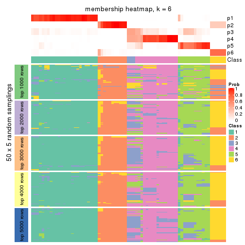
As soon as we have had the classes for columns, we can look for signatures which are significantly different between classes which can be candidate marks for certain classes. Following are the heatmaps for signatures.
Signature heatmaps where rows are scaled:
get_signatures(res, k = 2)

get_signatures(res, k = 3)
get_signatures(res, k = 4)
get_signatures(res, k = 5)
get_signatures(res, k = 6)
Signature heatmaps where rows are not scaled:
get_signatures(res, k = 2, scale_rows = FALSE)

get_signatures(res, k = 3, scale_rows = FALSE)
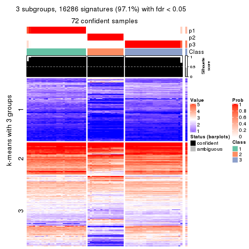
get_signatures(res, k = 4, scale_rows = FALSE)
get_signatures(res, k = 5, scale_rows = FALSE)
get_signatures(res, k = 6, scale_rows = FALSE)
Compare the overlap of signatures from different k:
compare_signatures(res)
get_signature() returns a data frame invisibly. TO get the list of signatures, the function
call should be assigned to a variable explicitly. In following code, if plot argument is set
to FALSE, no heatmap is plotted while only the differential analysis is performed.
# code only for demonstration
tb = get_signature(res, k = ..., plot = FALSE)
An example of the output of tb is:
#> which_row fdr mean_1 mean_2 scaled_mean_1 scaled_mean_2 km
#> 1 38 0.042760348 8.373488 9.131774 -0.5533452 0.5164555 1
#> 2 40 0.018707592 7.106213 8.469186 -0.6173731 0.5762149 1
#> 3 55 0.019134737 10.221463 11.207825 -0.6159697 0.5749050 1
#> 4 59 0.006059896 5.921854 7.869574 -0.6899429 0.6439467 1
#> 5 60 0.018055526 8.928898 10.211722 -0.6204761 0.5791110 1
#> 6 98 0.009384629 15.714769 14.887706 0.6635654 -0.6193277 2
...
The columns in tb are:
which_row: row indices corresponding to the input matrix.fdr: FDR for the differential test. mean_x: The mean value in group x.scaled_mean_x: The mean value in group x after rows are scaled.km: Row groups if k-means clustering is applied to rows.UMAP plot which shows how samples are separated.
dimension_reduction(res, k = 2, method = "UMAP")

dimension_reduction(res, k = 3, method = "UMAP")
dimension_reduction(res, k = 4, method = "UMAP")
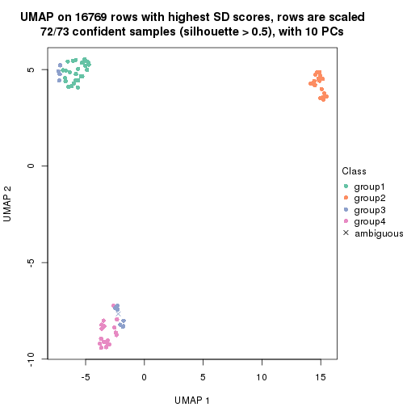
dimension_reduction(res, k = 5, method = "UMAP")

dimension_reduction(res, k = 6, method = "UMAP")
Following heatmap shows how subgroups are split when increasing k:
collect_classes(res)
If matrix rows can be associated to genes, consider to use functional_enrichment(res,
...) to perform function enrichment for the signature genes. See this vignette for more detailed explanations.
The object with results only for a single top-value method and a single partition method can be extracted as:
res = res_list["CV", "hclust"]
# you can also extract it by
# res = res_list["CV:hclust"]
A summary of res and all the functions that can be applied to it:
res
#> A 'ConsensusPartition' object with k = 2, 3, 4, 5, 6.
#> On a matrix with 16769 rows and 73 columns.
#> Top rows (1000, 2000, 3000, 4000, 5000) are extracted by 'CV' method.
#> Subgroups are detected by 'hclust' method.
#> Performed in total 1250 partitions by row resampling.
#> Best k for subgroups seems to be 3.
#>
#> Following methods can be applied to this 'ConsensusPartition' object:
#> [1] "cola_report" "collect_classes" "collect_plots"
#> [4] "collect_stats" "colnames" "compare_signatures"
#> [7] "consensus_heatmap" "dimension_reduction" "functional_enrichment"
#> [10] "get_anno_col" "get_anno" "get_classes"
#> [13] "get_consensus" "get_matrix" "get_membership"
#> [16] "get_param" "get_signatures" "get_stats"
#> [19] "is_best_k" "is_stable_k" "membership_heatmap"
#> [22] "ncol" "nrow" "plot_ecdf"
#> [25] "rownames" "select_partition_number" "show"
#> [28] "suggest_best_k" "test_to_known_factors"
collect_plots() function collects all the plots made from res for all k (number of partitions)
into one single page to provide an easy and fast comparison between different k.
collect_plots(res)
The plots are:
k and the heatmap of
predicted classes for each k.k.k.k.All the plots in panels can be made by individual functions and they are plotted later in this section.
select_partition_number() produces several plots showing different
statistics for choosing “optimized” k. There are following statistics:
k;k, the area increased is defined as \(A_k - A_{k-1}\).The detailed explanations of these statistics can be found in the cola vignette.
Generally speaking, lower PAC score, higher mean silhouette score or higher
concordance corresponds to better partition. Rand index and Jaccard index
measure how similar the current partition is compared to partition with k-1.
If they are too similar, we won't accept k is better than k-1.
select_partition_number(res)
The numeric values for all these statistics can be obtained by get_stats().
get_stats(res)
#> k 1-PAC mean_silhouette concordance area_increased Rand Jaccard
#> 2 2 1.000 1.000 1.000 0.3629 0.638 0.638
#> 3 3 0.921 0.952 0.978 0.8090 0.702 0.533
#> 4 4 0.840 0.874 0.898 0.0644 1.000 1.000
#> 5 5 0.863 0.876 0.861 0.0754 0.868 0.610
#> 6 6 0.865 0.865 0.865 0.0262 0.971 0.866
suggest_best_k() suggests the best \(k\) based on these statistics. The rules are as follows:
suggest_best_k(res)
#> [1] 3
#> attr(,"optional")
#> [1] 2
There is also optional best \(k\) = 2 that is worth to check.
Following shows the table of the partitions (You need to click the show/hide
code output link to see it). The membership matrix (columns with name p*)
is inferred by
clue::cl_consensus()
function with the SE method. Basically the value in the membership matrix
represents the probability to belong to a certain group. The finall class
label for an item is determined with the group with highest probability it
belongs to.
In get_classes() function, the entropy is calculated from the membership
matrix and the silhouette score is calculated from the consensus matrix.
cbind(get_classes(res, k = 2), get_membership(res, k = 2))
#> class entropy silhouette p1 p2
#> SRR2453324 1 0 1 1 0
#> SRR2453325 1 0 1 1 0
#> SRR2453323 2 0 1 0 1
#> SRR2453321 1 0 1 1 0
#> SRR2453322 1 0 1 1 0
#> SRR2453320 2 0 1 0 1
#> SRR2453319 2 0 1 0 1
#> SRR2453318 2 0 1 0 1
#> SRR2453317 1 0 1 1 0
#> SRR2453316 1 0 1 1 0
#> SRR2453315 1 0 1 1 0
#> SRR2453312 1 0 1 1 0
#> SRR2453313 1 0 1 1 0
#> SRR2453314 1 0 1 1 0
#> SRR2453311 2 0 1 0 1
#> SRR2453310 1 0 1 1 0
#> SRR2453309 2 0 1 0 1
#> SRR2453308 1 0 1 1 0
#> SRR2453307 2 0 1 0 1
#> SRR2453306 1 0 1 1 0
#> SRR2453305 2 0 1 0 1
#> SRR2453303 1 0 1 1 0
#> SRR2453304 1 0 1 1 0
#> SRR2453302 2 0 1 0 1
#> SRR2453301 1 0 1 1 0
#> SRR2453299 2 0 1 0 1
#> SRR2453300 2 0 1 0 1
#> SRR2453371 1 0 1 1 0
#> SRR2453370 1 0 1 1 0
#> SRR2453369 1 0 1 1 0
#> SRR2453366 1 0 1 1 0
#> SRR2453367 1 0 1 1 0
#> SRR2453368 1 0 1 1 0
#> SRR2453365 1 0 1 1 0
#> SRR2453364 1 0 1 1 0
#> SRR2453363 1 0 1 1 0
#> SRR2453362 1 0 1 1 0
#> SRR2453361 1 0 1 1 0
#> SRR2453359 1 0 1 1 0
#> SRR2453360 1 0 1 1 0
#> SRR2453357 1 0 1 1 0
#> SRR2453356 1 0 1 1 0
#> SRR2453358 1 0 1 1 0
#> SRR2453355 1 0 1 1 0
#> SRR2453354 1 0 1 1 0
#> SRR2453353 1 0 1 1 0
#> SRR2453352 1 0 1 1 0
#> SRR2453351 1 0 1 1 0
#> SRR2453350 1 0 1 1 0
#> SRR2453349 1 0 1 1 0
#> SRR2453348 1 0 1 1 0
#> SRR2453346 1 0 1 1 0
#> SRR2453347 1 0 1 1 0
#> SRR2453345 1 0 1 1 0
#> SRR2453343 1 0 1 1 0
#> SRR2453344 1 0 1 1 0
#> SRR2453341 2 0 1 0 1
#> SRR2453340 1 0 1 1 0
#> SRR2453339 1 0 1 1 0
#> SRR2453337 1 0 1 1 0
#> SRR2453338 1 0 1 1 0
#> SRR2453336 2 0 1 0 1
#> SRR2453335 2 0 1 0 1
#> SRR2453334 2 0 1 0 1
#> SRR2453332 2 0 1 0 1
#> SRR2453333 2 0 1 0 1
#> SRR2453342 1 0 1 1 0
#> SRR2453331 1 0 1 1 0
#> SRR2453329 1 0 1 1 0
#> SRR2453330 1 0 1 1 0
#> SRR2453328 1 0 1 1 0
#> SRR2453326 1 0 1 1 0
#> SRR2453327 1 0 1 1 0
cbind(get_classes(res, k = 3), get_membership(res, k = 3))
#> class entropy silhouette p1 p2 p3
#> SRR2453324 3 0.0000 0.997 0.000 0 1.000
#> SRR2453325 3 0.0000 0.997 0.000 0 1.000
#> SRR2453323 2 0.0000 1.000 0.000 1 0.000
#> SRR2453321 3 0.0000 0.997 0.000 0 1.000
#> SRR2453322 3 0.0000 0.997 0.000 0 1.000
#> SRR2453320 2 0.0000 1.000 0.000 1 0.000
#> SRR2453319 2 0.0000 1.000 0.000 1 0.000
#> SRR2453318 2 0.0000 1.000 0.000 1 0.000
#> SRR2453317 3 0.0000 0.997 0.000 0 1.000
#> SRR2453316 3 0.0000 0.997 0.000 0 1.000
#> SRR2453315 3 0.0000 0.997 0.000 0 1.000
#> SRR2453312 3 0.0237 0.997 0.004 0 0.996
#> SRR2453313 3 0.0892 0.981 0.020 0 0.980
#> SRR2453314 3 0.0237 0.997 0.004 0 0.996
#> SRR2453311 2 0.0000 1.000 0.000 1 0.000
#> SRR2453310 3 0.0237 0.997 0.004 0 0.996
#> SRR2453309 2 0.0000 1.000 0.000 1 0.000
#> SRR2453308 3 0.0000 0.997 0.000 0 1.000
#> SRR2453307 2 0.0000 1.000 0.000 1 0.000
#> SRR2453306 3 0.0000 0.997 0.000 0 1.000
#> SRR2453305 2 0.0000 1.000 0.000 1 0.000
#> SRR2453303 3 0.0000 0.997 0.000 0 1.000
#> SRR2453304 3 0.0000 0.997 0.000 0 1.000
#> SRR2453302 2 0.0000 1.000 0.000 1 0.000
#> SRR2453301 3 0.0237 0.997 0.004 0 0.996
#> SRR2453299 2 0.0000 1.000 0.000 1 0.000
#> SRR2453300 2 0.0000 1.000 0.000 1 0.000
#> SRR2453371 1 0.0000 0.934 1.000 0 0.000
#> SRR2453370 1 0.0000 0.934 1.000 0 0.000
#> SRR2453369 1 0.3752 0.837 0.856 0 0.144
#> SRR2453366 1 0.0000 0.934 1.000 0 0.000
#> SRR2453367 1 0.0000 0.934 1.000 0 0.000
#> SRR2453368 1 0.0000 0.934 1.000 0 0.000
#> SRR2453365 1 0.0000 0.934 1.000 0 0.000
#> SRR2453364 1 0.0000 0.934 1.000 0 0.000
#> SRR2453363 1 0.6154 0.392 0.592 0 0.408
#> SRR2453362 1 0.0000 0.934 1.000 0 0.000
#> SRR2453361 3 0.0237 0.995 0.004 0 0.996
#> SRR2453359 1 0.0000 0.934 1.000 0 0.000
#> SRR2453360 1 0.0000 0.934 1.000 0 0.000
#> SRR2453357 3 0.0000 0.997 0.000 0 1.000
#> SRR2453356 3 0.0000 0.997 0.000 0 1.000
#> SRR2453358 1 0.0000 0.934 1.000 0 0.000
#> SRR2453355 1 0.0000 0.934 1.000 0 0.000
#> SRR2453354 1 0.0000 0.934 1.000 0 0.000
#> SRR2453353 1 0.3752 0.837 0.856 0 0.144
#> SRR2453352 1 0.0000 0.934 1.000 0 0.000
#> SRR2453351 1 0.6267 0.271 0.548 0 0.452
#> SRR2453350 1 0.0000 0.934 1.000 0 0.000
#> SRR2453349 1 0.0000 0.934 1.000 0 0.000
#> SRR2453348 1 0.0000 0.934 1.000 0 0.000
#> SRR2453346 1 0.0000 0.934 1.000 0 0.000
#> SRR2453347 1 0.3752 0.837 0.856 0 0.144
#> SRR2453345 1 0.3752 0.837 0.856 0 0.144
#> SRR2453343 1 0.2448 0.886 0.924 0 0.076
#> SRR2453344 1 0.0000 0.934 1.000 0 0.000
#> SRR2453341 2 0.0000 1.000 0.000 1 0.000
#> SRR2453340 3 0.0237 0.997 0.004 0 0.996
#> SRR2453339 3 0.0237 0.997 0.004 0 0.996
#> SRR2453337 3 0.0237 0.997 0.004 0 0.996
#> SRR2453338 3 0.0237 0.997 0.004 0 0.996
#> SRR2453336 2 0.0000 1.000 0.000 1 0.000
#> SRR2453335 2 0.0000 1.000 0.000 1 0.000
#> SRR2453334 2 0.0000 1.000 0.000 1 0.000
#> SRR2453332 2 0.0000 1.000 0.000 1 0.000
#> SRR2453333 2 0.0000 1.000 0.000 1 0.000
#> SRR2453342 1 0.0000 0.934 1.000 0 0.000
#> SRR2453331 3 0.0237 0.997 0.004 0 0.996
#> SRR2453329 3 0.0237 0.997 0.004 0 0.996
#> SRR2453330 3 0.0237 0.997 0.004 0 0.996
#> SRR2453328 3 0.0237 0.997 0.004 0 0.996
#> SRR2453326 3 0.0000 0.997 0.000 0 1.000
#> SRR2453327 3 0.0000 0.997 0.000 0 1.000
cbind(get_classes(res, k = 4), get_membership(res, k = 4))
#> class entropy silhouette p1 p2 p3 p4
#> SRR2453324 3 0.484 0.821 0.000 0.0 0.604 NA
#> SRR2453325 3 0.484 0.821 0.000 0.0 0.604 NA
#> SRR2453323 2 0.000 0.991 0.000 1.0 0.000 NA
#> SRR2453321 3 0.484 0.821 0.000 0.0 0.604 NA
#> SRR2453322 3 0.484 0.821 0.000 0.0 0.604 NA
#> SRR2453320 2 0.000 0.991 0.000 1.0 0.000 NA
#> SRR2453319 2 0.000 0.991 0.000 1.0 0.000 NA
#> SRR2453318 2 0.000 0.991 0.000 1.0 0.000 NA
#> SRR2453317 3 0.484 0.821 0.000 0.0 0.604 NA
#> SRR2453316 3 0.484 0.821 0.000 0.0 0.604 NA
#> SRR2453315 3 0.484 0.821 0.000 0.0 0.604 NA
#> SRR2453312 3 0.000 0.802 0.000 0.0 1.000 NA
#> SRR2453313 3 0.487 0.436 0.000 0.0 0.596 NA
#> SRR2453314 3 0.000 0.802 0.000 0.0 1.000 NA
#> SRR2453311 2 0.000 0.991 0.000 1.0 0.000 NA
#> SRR2453310 3 0.000 0.802 0.000 0.0 1.000 NA
#> SRR2453309 2 0.000 0.991 0.000 1.0 0.000 NA
#> SRR2453308 3 0.484 0.821 0.000 0.0 0.604 NA
#> SRR2453307 2 0.000 0.991 0.000 1.0 0.000 NA
#> SRR2453306 3 0.484 0.821 0.000 0.0 0.604 NA
#> SRR2453305 2 0.000 0.991 0.000 1.0 0.000 NA
#> SRR2453303 3 0.484 0.821 0.000 0.0 0.604 NA
#> SRR2453304 3 0.484 0.821 0.000 0.0 0.604 NA
#> SRR2453302 2 0.000 0.991 0.000 1.0 0.000 NA
#> SRR2453301 3 0.000 0.802 0.000 0.0 1.000 NA
#> SRR2453299 2 0.000 0.991 0.000 1.0 0.000 NA
#> SRR2453300 2 0.000 0.991 0.000 1.0 0.000 NA
#> SRR2453371 1 0.000 0.942 1.000 0.0 0.000 NA
#> SRR2453370 1 0.000 0.942 1.000 0.0 0.000 NA
#> SRR2453369 1 0.320 0.851 0.856 0.0 0.136 NA
#> SRR2453366 1 0.000 0.942 1.000 0.0 0.000 NA
#> SRR2453367 1 0.000 0.942 1.000 0.0 0.000 NA
#> SRR2453368 1 0.000 0.942 1.000 0.0 0.000 NA
#> SRR2453365 1 0.000 0.942 1.000 0.0 0.000 NA
#> SRR2453364 1 0.000 0.942 1.000 0.0 0.000 NA
#> SRR2453363 1 0.629 0.433 0.592 0.0 0.332 NA
#> SRR2453362 1 0.000 0.942 1.000 0.0 0.000 NA
#> SRR2453361 3 0.431 0.820 0.004 0.0 0.736 NA
#> SRR2453359 1 0.000 0.942 1.000 0.0 0.000 NA
#> SRR2453360 1 0.000 0.942 1.000 0.0 0.000 NA
#> SRR2453357 3 0.413 0.821 0.000 0.0 0.740 NA
#> SRR2453356 3 0.413 0.821 0.000 0.0 0.740 NA
#> SRR2453358 1 0.000 0.942 1.000 0.0 0.000 NA
#> SRR2453355 1 0.000 0.942 1.000 0.0 0.000 NA
#> SRR2453354 1 0.000 0.942 1.000 0.0 0.000 NA
#> SRR2453353 1 0.320 0.851 0.856 0.0 0.136 NA
#> SRR2453352 1 0.000 0.942 1.000 0.0 0.000 NA
#> SRR2453351 1 0.624 0.304 0.548 0.0 0.392 NA
#> SRR2453350 1 0.000 0.942 1.000 0.0 0.000 NA
#> SRR2453349 1 0.000 0.942 1.000 0.0 0.000 NA
#> SRR2453348 1 0.000 0.942 1.000 0.0 0.000 NA
#> SRR2453346 1 0.000 0.942 1.000 0.0 0.000 NA
#> SRR2453347 1 0.320 0.851 0.856 0.0 0.136 NA
#> SRR2453345 1 0.320 0.851 0.856 0.0 0.136 NA
#> SRR2453343 1 0.212 0.899 0.924 0.0 0.068 NA
#> SRR2453344 1 0.000 0.942 1.000 0.0 0.000 NA
#> SRR2453341 2 0.361 0.850 0.000 0.8 0.000 NA
#> SRR2453340 3 0.000 0.802 0.000 0.0 1.000 NA
#> SRR2453339 3 0.000 0.802 0.000 0.0 1.000 NA
#> SRR2453337 3 0.000 0.802 0.000 0.0 1.000 NA
#> SRR2453338 3 0.000 0.802 0.000 0.0 1.000 NA
#> SRR2453336 2 0.000 0.991 0.000 1.0 0.000 NA
#> SRR2453335 2 0.000 0.991 0.000 1.0 0.000 NA
#> SRR2453334 2 0.000 0.991 0.000 1.0 0.000 NA
#> SRR2453332 2 0.000 0.991 0.000 1.0 0.000 NA
#> SRR2453333 2 0.000 0.991 0.000 1.0 0.000 NA
#> SRR2453342 1 0.000 0.942 1.000 0.0 0.000 NA
#> SRR2453331 3 0.000 0.802 0.000 0.0 1.000 NA
#> SRR2453329 3 0.000 0.802 0.000 0.0 1.000 NA
#> SRR2453330 3 0.000 0.802 0.000 0.0 1.000 NA
#> SRR2453328 3 0.000 0.802 0.000 0.0 1.000 NA
#> SRR2453326 3 0.484 0.821 0.000 0.0 0.604 NA
#> SRR2453327 3 0.484 0.821 0.000 0.0 0.604 NA
cbind(get_classes(res, k = 5), get_membership(res, k = 5))
#> class entropy silhouette p1 p2 p3 p4 p5
#> SRR2453324 3 0.0000 0.866 0.000 0.000 1.000 0.000 0.000
#> SRR2453325 3 0.0000 0.866 0.000 0.000 1.000 0.000 0.000
#> SRR2453323 2 0.0000 0.988 0.000 1.000 0.000 0.000 0.000
#> SRR2453321 3 0.0000 0.866 0.000 0.000 1.000 0.000 0.000
#> SRR2453322 3 0.0000 0.866 0.000 0.000 1.000 0.000 0.000
#> SRR2453320 2 0.0000 0.988 0.000 1.000 0.000 0.000 0.000
#> SRR2453319 2 0.0000 0.988 0.000 1.000 0.000 0.000 0.000
#> SRR2453318 2 0.0000 0.988 0.000 1.000 0.000 0.000 0.000
#> SRR2453317 3 0.0000 0.866 0.000 0.000 1.000 0.000 0.000
#> SRR2453316 3 0.0000 0.866 0.000 0.000 1.000 0.000 0.000
#> SRR2453315 3 0.0000 0.866 0.000 0.000 1.000 0.000 0.000
#> SRR2453312 4 0.4304 0.926 0.000 0.000 0.484 0.516 0.000
#> SRR2453313 4 0.1732 0.360 0.000 0.000 0.080 0.920 0.000
#> SRR2453314 4 0.4304 0.926 0.000 0.000 0.484 0.516 0.000
#> SRR2453311 2 0.0000 0.988 0.000 1.000 0.000 0.000 0.000
#> SRR2453310 4 0.4304 0.926 0.000 0.000 0.484 0.516 0.000
#> SRR2453309 2 0.0000 0.988 0.000 1.000 0.000 0.000 0.000
#> SRR2453308 3 0.0000 0.866 0.000 0.000 1.000 0.000 0.000
#> SRR2453307 2 0.0000 0.988 0.000 1.000 0.000 0.000 0.000
#> SRR2453306 3 0.0000 0.866 0.000 0.000 1.000 0.000 0.000
#> SRR2453305 2 0.0000 0.988 0.000 1.000 0.000 0.000 0.000
#> SRR2453303 3 0.0000 0.866 0.000 0.000 1.000 0.000 0.000
#> SRR2453304 3 0.0000 0.866 0.000 0.000 1.000 0.000 0.000
#> SRR2453302 2 0.0000 0.988 0.000 1.000 0.000 0.000 0.000
#> SRR2453301 4 0.4304 0.926 0.000 0.000 0.484 0.516 0.000
#> SRR2453299 2 0.0000 0.988 0.000 1.000 0.000 0.000 0.000
#> SRR2453300 2 0.0000 0.988 0.000 1.000 0.000 0.000 0.000
#> SRR2453371 1 0.0000 0.967 1.000 0.000 0.000 0.000 0.000
#> SRR2453370 1 0.0000 0.967 1.000 0.000 0.000 0.000 0.000
#> SRR2453369 5 0.3857 0.851 0.312 0.000 0.000 0.000 0.688
#> SRR2453366 1 0.0000 0.967 1.000 0.000 0.000 0.000 0.000
#> SRR2453367 5 0.4297 0.618 0.472 0.000 0.000 0.000 0.528
#> SRR2453368 1 0.0000 0.967 1.000 0.000 0.000 0.000 0.000
#> SRR2453365 1 0.0000 0.967 1.000 0.000 0.000 0.000 0.000
#> SRR2453364 1 0.0000 0.967 1.000 0.000 0.000 0.000 0.000
#> SRR2453363 1 0.6188 0.160 0.592 0.000 0.020 0.120 0.268
#> SRR2453362 1 0.0162 0.963 0.996 0.000 0.000 0.004 0.000
#> SRR2453361 3 0.5937 0.267 0.004 0.000 0.576 0.120 0.300
#> SRR2453359 1 0.0000 0.967 1.000 0.000 0.000 0.000 0.000
#> SRR2453360 1 0.0000 0.967 1.000 0.000 0.000 0.000 0.000
#> SRR2453357 3 0.5788 0.269 0.000 0.000 0.580 0.120 0.300
#> SRR2453356 3 0.5788 0.269 0.000 0.000 0.580 0.120 0.300
#> SRR2453358 1 0.0000 0.967 1.000 0.000 0.000 0.000 0.000
#> SRR2453355 1 0.0000 0.967 1.000 0.000 0.000 0.000 0.000
#> SRR2453354 1 0.0000 0.967 1.000 0.000 0.000 0.000 0.000
#> SRR2453353 5 0.3857 0.851 0.312 0.000 0.000 0.000 0.688
#> SRR2453352 1 0.0162 0.963 0.996 0.000 0.000 0.004 0.000
#> SRR2453351 5 0.3292 0.493 0.004 0.000 0.032 0.120 0.844
#> SRR2453350 1 0.0000 0.967 1.000 0.000 0.000 0.000 0.000
#> SRR2453349 1 0.0000 0.967 1.000 0.000 0.000 0.000 0.000
#> SRR2453348 1 0.0000 0.967 1.000 0.000 0.000 0.000 0.000
#> SRR2453346 1 0.0000 0.967 1.000 0.000 0.000 0.000 0.000
#> SRR2453347 5 0.3857 0.851 0.312 0.000 0.000 0.000 0.688
#> SRR2453345 5 0.3857 0.851 0.312 0.000 0.000 0.000 0.688
#> SRR2453343 5 0.4171 0.765 0.396 0.000 0.000 0.000 0.604
#> SRR2453344 1 0.0000 0.967 1.000 0.000 0.000 0.000 0.000
#> SRR2453341 2 0.4277 0.776 0.000 0.768 0.000 0.076 0.156
#> SRR2453340 4 0.4305 0.923 0.000 0.000 0.488 0.512 0.000
#> SRR2453339 4 0.4305 0.923 0.000 0.000 0.488 0.512 0.000
#> SRR2453337 4 0.4305 0.923 0.000 0.000 0.488 0.512 0.000
#> SRR2453338 4 0.4305 0.923 0.000 0.000 0.488 0.512 0.000
#> SRR2453336 2 0.0000 0.988 0.000 1.000 0.000 0.000 0.000
#> SRR2453335 2 0.0000 0.988 0.000 1.000 0.000 0.000 0.000
#> SRR2453334 2 0.0000 0.988 0.000 1.000 0.000 0.000 0.000
#> SRR2453332 2 0.0000 0.988 0.000 1.000 0.000 0.000 0.000
#> SRR2453333 2 0.0000 0.988 0.000 1.000 0.000 0.000 0.000
#> SRR2453342 1 0.0000 0.967 1.000 0.000 0.000 0.000 0.000
#> SRR2453331 4 0.4304 0.926 0.000 0.000 0.484 0.516 0.000
#> SRR2453329 4 0.4304 0.926 0.000 0.000 0.484 0.516 0.000
#> SRR2453330 4 0.4304 0.926 0.000 0.000 0.484 0.516 0.000
#> SRR2453328 4 0.4304 0.926 0.000 0.000 0.484 0.516 0.000
#> SRR2453326 3 0.0000 0.866 0.000 0.000 1.000 0.000 0.000
#> SRR2453327 3 0.0000 0.866 0.000 0.000 1.000 0.000 0.000
cbind(get_classes(res, k = 6), get_membership(res, k = 6))
#> class entropy silhouette p1 p2 p3 p4 p5 p6
#> SRR2453324 3 0.3765 1.000 0.000 0.00 0.596 0.404 0.000 0.000
#> SRR2453325 3 0.3765 1.000 0.000 0.00 0.596 0.404 0.000 0.000
#> SRR2453323 2 0.0000 1.000 0.000 1.00 0.000 0.000 0.000 0.000
#> SRR2453321 3 0.3765 1.000 0.000 0.00 0.596 0.404 0.000 0.000
#> SRR2453322 3 0.3765 1.000 0.000 0.00 0.596 0.404 0.000 0.000
#> SRR2453320 2 0.0000 1.000 0.000 1.00 0.000 0.000 0.000 0.000
#> SRR2453319 2 0.0000 1.000 0.000 1.00 0.000 0.000 0.000 0.000
#> SRR2453318 2 0.0000 1.000 0.000 1.00 0.000 0.000 0.000 0.000
#> SRR2453317 3 0.3765 1.000 0.000 0.00 0.596 0.404 0.000 0.000
#> SRR2453316 3 0.3765 1.000 0.000 0.00 0.596 0.404 0.000 0.000
#> SRR2453315 3 0.3765 1.000 0.000 0.00 0.596 0.404 0.000 0.000
#> SRR2453312 4 0.0000 0.941 0.000 0.00 0.000 1.000 0.000 0.000
#> SRR2453313 4 0.3765 0.288 0.000 0.00 0.404 0.596 0.000 0.000
#> SRR2453314 4 0.0000 0.941 0.000 0.00 0.000 1.000 0.000 0.000
#> SRR2453311 2 0.0000 1.000 0.000 1.00 0.000 0.000 0.000 0.000
#> SRR2453310 4 0.0000 0.941 0.000 0.00 0.000 1.000 0.000 0.000
#> SRR2453309 2 0.0000 1.000 0.000 1.00 0.000 0.000 0.000 0.000
#> SRR2453308 3 0.3765 1.000 0.000 0.00 0.596 0.404 0.000 0.000
#> SRR2453307 2 0.0000 1.000 0.000 1.00 0.000 0.000 0.000 0.000
#> SRR2453306 3 0.3765 1.000 0.000 0.00 0.596 0.404 0.000 0.000
#> SRR2453305 2 0.0000 1.000 0.000 1.00 0.000 0.000 0.000 0.000
#> SRR2453303 3 0.3765 1.000 0.000 0.00 0.596 0.404 0.000 0.000
#> SRR2453304 3 0.3765 1.000 0.000 0.00 0.596 0.404 0.000 0.000
#> SRR2453302 2 0.0000 1.000 0.000 1.00 0.000 0.000 0.000 0.000
#> SRR2453301 4 0.0000 0.941 0.000 0.00 0.000 1.000 0.000 0.000
#> SRR2453299 2 0.0000 1.000 0.000 1.00 0.000 0.000 0.000 0.000
#> SRR2453300 2 0.0000 1.000 0.000 1.00 0.000 0.000 0.000 0.000
#> SRR2453371 1 0.0000 0.971 1.000 0.00 0.000 0.000 0.000 0.000
#> SRR2453370 1 0.0000 0.971 1.000 0.00 0.000 0.000 0.000 0.000
#> SRR2453369 5 0.3446 0.589 0.308 0.00 0.000 0.000 0.692 0.000
#> SRR2453366 1 0.0000 0.971 1.000 0.00 0.000 0.000 0.000 0.000
#> SRR2453367 5 0.3857 0.333 0.468 0.00 0.000 0.000 0.532 0.000
#> SRR2453368 1 0.0000 0.971 1.000 0.00 0.000 0.000 0.000 0.000
#> SRR2453365 1 0.0000 0.971 1.000 0.00 0.000 0.000 0.000 0.000
#> SRR2453364 1 0.0000 0.971 1.000 0.00 0.000 0.000 0.000 0.000
#> SRR2453363 1 0.4806 0.234 0.592 0.00 0.004 0.000 0.348 0.056
#> SRR2453362 1 0.0146 0.967 0.996 0.00 0.000 0.000 0.004 0.000
#> SRR2453361 5 0.6713 0.134 0.004 0.00 0.052 0.160 0.404 0.380
#> SRR2453359 1 0.0000 0.971 1.000 0.00 0.000 0.000 0.000 0.000
#> SRR2453360 1 0.0000 0.971 1.000 0.00 0.000 0.000 0.000 0.000
#> SRR2453357 5 0.6633 0.132 0.000 0.00 0.056 0.160 0.404 0.380
#> SRR2453356 5 0.6633 0.132 0.000 0.00 0.056 0.160 0.404 0.380
#> SRR2453358 1 0.0000 0.971 1.000 0.00 0.000 0.000 0.000 0.000
#> SRR2453355 1 0.0000 0.971 1.000 0.00 0.000 0.000 0.000 0.000
#> SRR2453354 1 0.0000 0.971 1.000 0.00 0.000 0.000 0.000 0.000
#> SRR2453353 5 0.3446 0.589 0.308 0.00 0.000 0.000 0.692 0.000
#> SRR2453352 1 0.0146 0.967 0.996 0.00 0.000 0.000 0.004 0.000
#> SRR2453351 5 0.0146 0.303 0.000 0.00 0.004 0.000 0.996 0.000
#> SRR2453350 1 0.0000 0.971 1.000 0.00 0.000 0.000 0.000 0.000
#> SRR2453349 1 0.0000 0.971 1.000 0.00 0.000 0.000 0.000 0.000
#> SRR2453348 1 0.0000 0.971 1.000 0.00 0.000 0.000 0.000 0.000
#> SRR2453346 1 0.0000 0.971 1.000 0.00 0.000 0.000 0.000 0.000
#> SRR2453347 5 0.3446 0.589 0.308 0.00 0.000 0.000 0.692 0.000
#> SRR2453345 5 0.3446 0.589 0.308 0.00 0.000 0.000 0.692 0.000
#> SRR2453343 5 0.3737 0.490 0.392 0.00 0.000 0.000 0.608 0.000
#> SRR2453344 1 0.0000 0.971 1.000 0.00 0.000 0.000 0.000 0.000
#> SRR2453341 6 0.3706 0.000 0.000 0.38 0.000 0.000 0.000 0.620
#> SRR2453340 4 0.0146 0.938 0.000 0.00 0.004 0.996 0.000 0.000
#> SRR2453339 4 0.0146 0.938 0.000 0.00 0.004 0.996 0.000 0.000
#> SRR2453337 4 0.0146 0.938 0.000 0.00 0.004 0.996 0.000 0.000
#> SRR2453338 4 0.0146 0.938 0.000 0.00 0.004 0.996 0.000 0.000
#> SRR2453336 2 0.0000 1.000 0.000 1.00 0.000 0.000 0.000 0.000
#> SRR2453335 2 0.0000 1.000 0.000 1.00 0.000 0.000 0.000 0.000
#> SRR2453334 2 0.0000 1.000 0.000 1.00 0.000 0.000 0.000 0.000
#> SRR2453332 2 0.0000 1.000 0.000 1.00 0.000 0.000 0.000 0.000
#> SRR2453333 2 0.0000 1.000 0.000 1.00 0.000 0.000 0.000 0.000
#> SRR2453342 1 0.0000 0.971 1.000 0.00 0.000 0.000 0.000 0.000
#> SRR2453331 4 0.0000 0.941 0.000 0.00 0.000 1.000 0.000 0.000
#> SRR2453329 4 0.0000 0.941 0.000 0.00 0.000 1.000 0.000 0.000
#> SRR2453330 4 0.0000 0.941 0.000 0.00 0.000 1.000 0.000 0.000
#> SRR2453328 4 0.0000 0.941 0.000 0.00 0.000 1.000 0.000 0.000
#> SRR2453326 3 0.3765 1.000 0.000 0.00 0.596 0.404 0.000 0.000
#> SRR2453327 3 0.3765 1.000 0.000 0.00 0.596 0.404 0.000 0.000
Heatmaps for the consensus matrix. It visualizes the probability of two samples to be in a same group.
consensus_heatmap(res, k = 2)
consensus_heatmap(res, k = 3)
consensus_heatmap(res, k = 4)
consensus_heatmap(res, k = 5)
consensus_heatmap(res, k = 6)
Heatmaps for the membership of samples in all partitions to see how consistent they are:
membership_heatmap(res, k = 2)

membership_heatmap(res, k = 3)
membership_heatmap(res, k = 4)
membership_heatmap(res, k = 5)
membership_heatmap(res, k = 6)
As soon as we have had the classes for columns, we can look for signatures which are significantly different between classes which can be candidate marks for certain classes. Following are the heatmaps for signatures.
Signature heatmaps where rows are scaled:
get_signatures(res, k = 2)

get_signatures(res, k = 3)
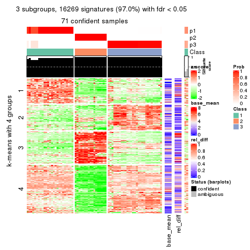
get_signatures(res, k = 4)
get_signatures(res, k = 5)
get_signatures(res, k = 6)
Signature heatmaps where rows are not scaled:
get_signatures(res, k = 2, scale_rows = FALSE)

get_signatures(res, k = 3, scale_rows = FALSE)
get_signatures(res, k = 4, scale_rows = FALSE)
get_signatures(res, k = 5, scale_rows = FALSE)
get_signatures(res, k = 6, scale_rows = FALSE)
Compare the overlap of signatures from different k:
compare_signatures(res)
get_signature() returns a data frame invisibly. TO get the list of signatures, the function
call should be assigned to a variable explicitly. In following code, if plot argument is set
to FALSE, no heatmap is plotted while only the differential analysis is performed.
# code only for demonstration
tb = get_signature(res, k = ..., plot = FALSE)
An example of the output of tb is:
#> which_row fdr mean_1 mean_2 scaled_mean_1 scaled_mean_2 km
#> 1 38 0.042760348 8.373488 9.131774 -0.5533452 0.5164555 1
#> 2 40 0.018707592 7.106213 8.469186 -0.6173731 0.5762149 1
#> 3 55 0.019134737 10.221463 11.207825 -0.6159697 0.5749050 1
#> 4 59 0.006059896 5.921854 7.869574 -0.6899429 0.6439467 1
#> 5 60 0.018055526 8.928898 10.211722 -0.6204761 0.5791110 1
#> 6 98 0.009384629 15.714769 14.887706 0.6635654 -0.6193277 2
...
The columns in tb are:
which_row: row indices corresponding to the input matrix.fdr: FDR for the differential test. mean_x: The mean value in group x.scaled_mean_x: The mean value in group x after rows are scaled.km: Row groups if k-means clustering is applied to rows.UMAP plot which shows how samples are separated.
dimension_reduction(res, k = 2, method = "UMAP")
dimension_reduction(res, k = 3, method = "UMAP")
dimension_reduction(res, k = 4, method = "UMAP")
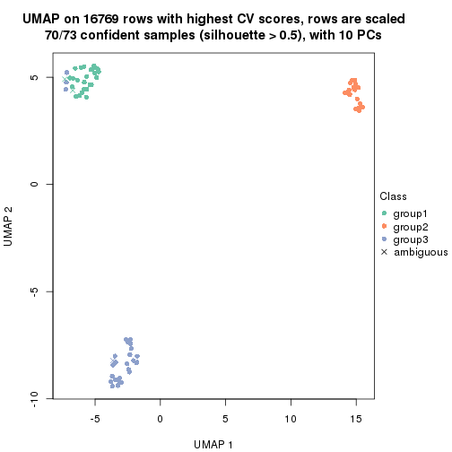
dimension_reduction(res, k = 5, method = "UMAP")
dimension_reduction(res, k = 6, method = "UMAP")
Following heatmap shows how subgroups are split when increasing k:
collect_classes(res)
If matrix rows can be associated to genes, consider to use functional_enrichment(res,
...) to perform function enrichment for the signature genes. See this vignette for more detailed explanations.
The object with results only for a single top-value method and a single partition method can be extracted as:
res = res_list["CV", "kmeans"]
# you can also extract it by
# res = res_list["CV:kmeans"]
A summary of res and all the functions that can be applied to it:
res
#> A 'ConsensusPartition' object with k = 2, 3, 4, 5, 6.
#> On a matrix with 16769 rows and 73 columns.
#> Top rows (1000, 2000, 3000, 4000, 5000) are extracted by 'CV' method.
#> Subgroups are detected by 'kmeans' method.
#> Performed in total 1250 partitions by row resampling.
#> Best k for subgroups seems to be 2.
#>
#> Following methods can be applied to this 'ConsensusPartition' object:
#> [1] "cola_report" "collect_classes" "collect_plots"
#> [4] "collect_stats" "colnames" "compare_signatures"
#> [7] "consensus_heatmap" "dimension_reduction" "functional_enrichment"
#> [10] "get_anno_col" "get_anno" "get_classes"
#> [13] "get_consensus" "get_matrix" "get_membership"
#> [16] "get_param" "get_signatures" "get_stats"
#> [19] "is_best_k" "is_stable_k" "membership_heatmap"
#> [22] "ncol" "nrow" "plot_ecdf"
#> [25] "rownames" "select_partition_number" "show"
#> [28] "suggest_best_k" "test_to_known_factors"
collect_plots() function collects all the plots made from res for all k (number of partitions)
into one single page to provide an easy and fast comparison between different k.
collect_plots(res)
The plots are:
k and the heatmap of
predicted classes for each k.k.k.k.All the plots in panels can be made by individual functions and they are plotted later in this section.
select_partition_number() produces several plots showing different
statistics for choosing “optimized” k. There are following statistics:
k;k, the area increased is defined as \(A_k - A_{k-1}\).The detailed explanations of these statistics can be found in the cola vignette.
Generally speaking, lower PAC score, higher mean silhouette score or higher
concordance corresponds to better partition. Rand index and Jaccard index
measure how similar the current partition is compared to partition with k-1.
If they are too similar, we won't accept k is better than k-1.
select_partition_number(res)
The numeric values for all these statistics can be obtained by get_stats().
get_stats(res)
#> k 1-PAC mean_silhouette concordance area_increased Rand Jaccard
#> 2 2 1.000 1.000 1.000 0.3629 0.638 0.638
#> 3 3 0.708 0.980 0.946 0.7298 0.703 0.535
#> 4 4 0.819 0.768 0.855 0.1345 0.949 0.852
#> 5 5 0.799 0.842 0.815 0.0690 0.936 0.781
#> 6 6 0.806 0.810 0.836 0.0428 0.960 0.833
suggest_best_k() suggests the best \(k\) based on these statistics. The rules are as follows:
suggest_best_k(res)
#> [1] 2
Following shows the table of the partitions (You need to click the show/hide
code output link to see it). The membership matrix (columns with name p*)
is inferred by
clue::cl_consensus()
function with the SE method. Basically the value in the membership matrix
represents the probability to belong to a certain group. The finall class
label for an item is determined with the group with highest probability it
belongs to.
In get_classes() function, the entropy is calculated from the membership
matrix and the silhouette score is calculated from the consensus matrix.
cbind(get_classes(res, k = 2), get_membership(res, k = 2))
#> class entropy silhouette p1 p2
#> SRR2453324 1 0 1 1 0
#> SRR2453325 1 0 1 1 0
#> SRR2453323 2 0 1 0 1
#> SRR2453321 1 0 1 1 0
#> SRR2453322 1 0 1 1 0
#> SRR2453320 2 0 1 0 1
#> SRR2453319 2 0 1 0 1
#> SRR2453318 2 0 1 0 1
#> SRR2453317 1 0 1 1 0
#> SRR2453316 1 0 1 1 0
#> SRR2453315 1 0 1 1 0
#> SRR2453312 1 0 1 1 0
#> SRR2453313 1 0 1 1 0
#> SRR2453314 1 0 1 1 0
#> SRR2453311 2 0 1 0 1
#> SRR2453310 1 0 1 1 0
#> SRR2453309 2 0 1 0 1
#> SRR2453308 1 0 1 1 0
#> SRR2453307 2 0 1 0 1
#> SRR2453306 1 0 1 1 0
#> SRR2453305 2 0 1 0 1
#> SRR2453303 1 0 1 1 0
#> SRR2453304 1 0 1 1 0
#> SRR2453302 2 0 1 0 1
#> SRR2453301 1 0 1 1 0
#> SRR2453299 2 0 1 0 1
#> SRR2453300 2 0 1 0 1
#> SRR2453371 1 0 1 1 0
#> SRR2453370 1 0 1 1 0
#> SRR2453369 1 0 1 1 0
#> SRR2453366 1 0 1 1 0
#> SRR2453367 1 0 1 1 0
#> SRR2453368 1 0 1 1 0
#> SRR2453365 1 0 1 1 0
#> SRR2453364 1 0 1 1 0
#> SRR2453363 1 0 1 1 0
#> SRR2453362 1 0 1 1 0
#> SRR2453361 1 0 1 1 0
#> SRR2453359 1 0 1 1 0
#> SRR2453360 1 0 1 1 0
#> SRR2453357 1 0 1 1 0
#> SRR2453356 1 0 1 1 0
#> SRR2453358 1 0 1 1 0
#> SRR2453355 1 0 1 1 0
#> SRR2453354 1 0 1 1 0
#> SRR2453353 1 0 1 1 0
#> SRR2453352 1 0 1 1 0
#> SRR2453351 1 0 1 1 0
#> SRR2453350 1 0 1 1 0
#> SRR2453349 1 0 1 1 0
#> SRR2453348 1 0 1 1 0
#> SRR2453346 1 0 1 1 0
#> SRR2453347 1 0 1 1 0
#> SRR2453345 1 0 1 1 0
#> SRR2453343 1 0 1 1 0
#> SRR2453344 1 0 1 1 0
#> SRR2453341 2 0 1 0 1
#> SRR2453340 1 0 1 1 0
#> SRR2453339 1 0 1 1 0
#> SRR2453337 1 0 1 1 0
#> SRR2453338 1 0 1 1 0
#> SRR2453336 2 0 1 0 1
#> SRR2453335 2 0 1 0 1
#> SRR2453334 2 0 1 0 1
#> SRR2453332 2 0 1 0 1
#> SRR2453333 2 0 1 0 1
#> SRR2453342 1 0 1 1 0
#> SRR2453331 1 0 1 1 0
#> SRR2453329 1 0 1 1 0
#> SRR2453330 1 0 1 1 0
#> SRR2453328 1 0 1 1 0
#> SRR2453326 1 0 1 1 0
#> SRR2453327 1 0 1 1 0
cbind(get_classes(res, k = 3), get_membership(res, k = 3))
#> class entropy silhouette p1 p2 p3
#> SRR2453324 3 0.0000 0.989 0.000 0.000 1.000
#> SRR2453325 3 0.0000 0.989 0.000 0.000 1.000
#> SRR2453323 2 0.2796 0.959 0.092 0.908 0.000
#> SRR2453321 3 0.0000 0.989 0.000 0.000 1.000
#> SRR2453322 3 0.0000 0.989 0.000 0.000 1.000
#> SRR2453320 2 0.2796 0.959 0.092 0.908 0.000
#> SRR2453319 2 0.2796 0.959 0.092 0.908 0.000
#> SRR2453318 2 0.0000 0.977 0.000 1.000 0.000
#> SRR2453317 3 0.0000 0.989 0.000 0.000 1.000
#> SRR2453316 3 0.0000 0.989 0.000 0.000 1.000
#> SRR2453315 3 0.0000 0.989 0.000 0.000 1.000
#> SRR2453312 3 0.0000 0.989 0.000 0.000 1.000
#> SRR2453313 3 0.0237 0.985 0.004 0.000 0.996
#> SRR2453314 3 0.0000 0.989 0.000 0.000 1.000
#> SRR2453311 2 0.0000 0.977 0.000 1.000 0.000
#> SRR2453310 3 0.0000 0.989 0.000 0.000 1.000
#> SRR2453309 2 0.0000 0.977 0.000 1.000 0.000
#> SRR2453308 3 0.0000 0.989 0.000 0.000 1.000
#> SRR2453307 2 0.2796 0.959 0.092 0.908 0.000
#> SRR2453306 3 0.0000 0.989 0.000 0.000 1.000
#> SRR2453305 2 0.2796 0.959 0.092 0.908 0.000
#> SRR2453303 3 0.0000 0.989 0.000 0.000 1.000
#> SRR2453304 3 0.0000 0.989 0.000 0.000 1.000
#> SRR2453302 2 0.2796 0.959 0.092 0.908 0.000
#> SRR2453301 3 0.0000 0.989 0.000 0.000 1.000
#> SRR2453299 2 0.0000 0.977 0.000 1.000 0.000
#> SRR2453300 2 0.0000 0.977 0.000 1.000 0.000
#> SRR2453371 1 0.3267 0.995 0.884 0.000 0.116
#> SRR2453370 1 0.3267 0.995 0.884 0.000 0.116
#> SRR2453369 1 0.3267 0.995 0.884 0.000 0.116
#> SRR2453366 1 0.3267 0.995 0.884 0.000 0.116
#> SRR2453367 1 0.3267 0.995 0.884 0.000 0.116
#> SRR2453368 1 0.3267 0.995 0.884 0.000 0.116
#> SRR2453365 1 0.3267 0.995 0.884 0.000 0.116
#> SRR2453364 1 0.3267 0.995 0.884 0.000 0.116
#> SRR2453363 1 0.4931 0.846 0.768 0.000 0.232
#> SRR2453362 1 0.3267 0.995 0.884 0.000 0.116
#> SRR2453361 3 0.4931 0.643 0.232 0.000 0.768
#> SRR2453359 1 0.3267 0.995 0.884 0.000 0.116
#> SRR2453360 1 0.3267 0.995 0.884 0.000 0.116
#> SRR2453357 3 0.0000 0.989 0.000 0.000 1.000
#> SRR2453356 3 0.0000 0.989 0.000 0.000 1.000
#> SRR2453358 1 0.3267 0.995 0.884 0.000 0.116
#> SRR2453355 1 0.3267 0.995 0.884 0.000 0.116
#> SRR2453354 1 0.3267 0.995 0.884 0.000 0.116
#> SRR2453353 1 0.3267 0.995 0.884 0.000 0.116
#> SRR2453352 1 0.3267 0.995 0.884 0.000 0.116
#> SRR2453351 3 0.1289 0.955 0.032 0.000 0.968
#> SRR2453350 1 0.3267 0.995 0.884 0.000 0.116
#> SRR2453349 1 0.3267 0.995 0.884 0.000 0.116
#> SRR2453348 1 0.3267 0.995 0.884 0.000 0.116
#> SRR2453346 1 0.3267 0.995 0.884 0.000 0.116
#> SRR2453347 1 0.3267 0.995 0.884 0.000 0.116
#> SRR2453345 1 0.3267 0.995 0.884 0.000 0.116
#> SRR2453343 1 0.3267 0.995 0.884 0.000 0.116
#> SRR2453344 1 0.3267 0.995 0.884 0.000 0.116
#> SRR2453341 2 0.0892 0.970 0.020 0.980 0.000
#> SRR2453340 3 0.0000 0.989 0.000 0.000 1.000
#> SRR2453339 3 0.0000 0.989 0.000 0.000 1.000
#> SRR2453337 3 0.0000 0.989 0.000 0.000 1.000
#> SRR2453338 3 0.0000 0.989 0.000 0.000 1.000
#> SRR2453336 2 0.0000 0.977 0.000 1.000 0.000
#> SRR2453335 2 0.0000 0.977 0.000 1.000 0.000
#> SRR2453334 2 0.0000 0.977 0.000 1.000 0.000
#> SRR2453332 2 0.0000 0.977 0.000 1.000 0.000
#> SRR2453333 2 0.0000 0.977 0.000 1.000 0.000
#> SRR2453342 1 0.3267 0.995 0.884 0.000 0.116
#> SRR2453331 3 0.0000 0.989 0.000 0.000 1.000
#> SRR2453329 3 0.0000 0.989 0.000 0.000 1.000
#> SRR2453330 3 0.0000 0.989 0.000 0.000 1.000
#> SRR2453328 3 0.0000 0.989 0.000 0.000 1.000
#> SRR2453326 3 0.0000 0.989 0.000 0.000 1.000
#> SRR2453327 3 0.0000 0.989 0.000 0.000 1.000
cbind(get_classes(res, k = 4), get_membership(res, k = 4))
#> class entropy silhouette p1 p2 p3 p4
#> SRR2453324 4 0.4677 0.646 0.004 0.000 0.316 0.680
#> SRR2453325 4 0.4677 0.646 0.004 0.000 0.316 0.680
#> SRR2453323 2 0.3528 0.890 0.000 0.808 0.192 0.000
#> SRR2453321 4 0.4905 0.608 0.004 0.000 0.364 0.632
#> SRR2453322 4 0.4905 0.608 0.004 0.000 0.364 0.632
#> SRR2453320 2 0.3528 0.890 0.000 0.808 0.192 0.000
#> SRR2453319 2 0.3528 0.890 0.000 0.808 0.192 0.000
#> SRR2453318 2 0.0188 0.937 0.004 0.996 0.000 0.000
#> SRR2453317 4 0.4677 0.646 0.004 0.000 0.316 0.680
#> SRR2453316 4 0.4677 0.646 0.004 0.000 0.316 0.680
#> SRR2453315 4 0.4677 0.646 0.004 0.000 0.316 0.680
#> SRR2453312 4 0.0927 0.649 0.008 0.000 0.016 0.976
#> SRR2453313 4 0.0779 0.645 0.004 0.000 0.016 0.980
#> SRR2453314 4 0.0927 0.649 0.008 0.000 0.016 0.976
#> SRR2453311 2 0.0000 0.938 0.000 1.000 0.000 0.000
#> SRR2453310 4 0.0927 0.649 0.008 0.000 0.016 0.976
#> SRR2453309 2 0.0000 0.938 0.000 1.000 0.000 0.000
#> SRR2453308 4 0.4905 0.608 0.004 0.000 0.364 0.632
#> SRR2453307 2 0.3528 0.890 0.000 0.808 0.192 0.000
#> SRR2453306 4 0.4677 0.646 0.004 0.000 0.316 0.680
#> SRR2453305 2 0.3528 0.890 0.000 0.808 0.192 0.000
#> SRR2453303 4 0.4905 0.608 0.004 0.000 0.364 0.632
#> SRR2453304 4 0.4905 0.608 0.004 0.000 0.364 0.632
#> SRR2453302 2 0.3528 0.890 0.000 0.808 0.192 0.000
#> SRR2453301 4 0.0927 0.649 0.008 0.000 0.016 0.976
#> SRR2453299 2 0.0000 0.938 0.000 1.000 0.000 0.000
#> SRR2453300 2 0.0000 0.938 0.000 1.000 0.000 0.000
#> SRR2453371 1 0.3441 0.852 0.856 0.000 0.120 0.024
#> SRR2453370 1 0.0817 0.928 0.976 0.000 0.000 0.024
#> SRR2453369 1 0.4711 0.744 0.740 0.000 0.236 0.024
#> SRR2453366 1 0.0817 0.928 0.976 0.000 0.000 0.024
#> SRR2453367 1 0.1929 0.912 0.940 0.000 0.036 0.024
#> SRR2453368 1 0.0817 0.928 0.976 0.000 0.000 0.024
#> SRR2453365 1 0.0817 0.928 0.976 0.000 0.000 0.024
#> SRR2453364 1 0.0817 0.928 0.976 0.000 0.000 0.024
#> SRR2453363 3 0.7523 -0.119 0.400 0.000 0.416 0.184
#> SRR2453362 1 0.4868 0.741 0.720 0.000 0.256 0.024
#> SRR2453361 3 0.7125 0.519 0.132 0.000 0.476 0.392
#> SRR2453359 1 0.1004 0.926 0.972 0.000 0.004 0.024
#> SRR2453360 1 0.0817 0.928 0.976 0.000 0.000 0.024
#> SRR2453357 3 0.5168 0.458 0.004 0.000 0.504 0.492
#> SRR2453356 3 0.5168 0.458 0.004 0.000 0.504 0.492
#> SRR2453358 1 0.1004 0.926 0.972 0.000 0.004 0.024
#> SRR2453355 1 0.0817 0.928 0.976 0.000 0.000 0.024
#> SRR2453354 1 0.0817 0.928 0.976 0.000 0.000 0.024
#> SRR2453353 1 0.4711 0.744 0.740 0.000 0.236 0.024
#> SRR2453352 1 0.4868 0.741 0.720 0.000 0.256 0.024
#> SRR2453351 3 0.5506 0.496 0.016 0.000 0.512 0.472
#> SRR2453350 1 0.0817 0.928 0.976 0.000 0.000 0.024
#> SRR2453349 1 0.0817 0.928 0.976 0.000 0.000 0.024
#> SRR2453348 1 0.0817 0.928 0.976 0.000 0.000 0.024
#> SRR2453346 1 0.0817 0.928 0.976 0.000 0.000 0.024
#> SRR2453347 1 0.1284 0.922 0.964 0.000 0.012 0.024
#> SRR2453345 1 0.4711 0.744 0.740 0.000 0.236 0.024
#> SRR2453343 1 0.4776 0.739 0.732 0.000 0.244 0.024
#> SRR2453344 1 0.0817 0.928 0.976 0.000 0.000 0.024
#> SRR2453341 2 0.2174 0.907 0.020 0.928 0.052 0.000
#> SRR2453340 4 0.0188 0.665 0.004 0.000 0.000 0.996
#> SRR2453339 4 0.0188 0.665 0.004 0.000 0.000 0.996
#> SRR2453337 4 0.0188 0.665 0.004 0.000 0.000 0.996
#> SRR2453338 4 0.0188 0.665 0.004 0.000 0.000 0.996
#> SRR2453336 2 0.0000 0.938 0.000 1.000 0.000 0.000
#> SRR2453335 2 0.0188 0.937 0.004 0.996 0.000 0.000
#> SRR2453334 2 0.0000 0.938 0.000 1.000 0.000 0.000
#> SRR2453332 2 0.0188 0.937 0.004 0.996 0.000 0.000
#> SRR2453333 2 0.0188 0.937 0.004 0.996 0.000 0.000
#> SRR2453342 1 0.0817 0.928 0.976 0.000 0.000 0.024
#> SRR2453331 4 0.0336 0.663 0.008 0.000 0.000 0.992
#> SRR2453329 4 0.0336 0.663 0.008 0.000 0.000 0.992
#> SRR2453330 4 0.0336 0.663 0.008 0.000 0.000 0.992
#> SRR2453328 4 0.0336 0.663 0.008 0.000 0.000 0.992
#> SRR2453326 4 0.4905 0.608 0.004 0.000 0.364 0.632
#> SRR2453327 4 0.4905 0.608 0.004 0.000 0.364 0.632
cbind(get_classes(res, k = 5), get_membership(res, k = 5))
#> class entropy silhouette p1 p2 p3 p4 p5
#> SRR2453324 3 0.4810 0.890 0.012 0.000 0.580 0.400 0.008
#> SRR2453325 3 0.4810 0.890 0.012 0.000 0.580 0.400 0.008
#> SRR2453323 2 0.5027 0.804 0.000 0.700 0.112 0.000 0.188
#> SRR2453321 3 0.5908 0.889 0.012 0.000 0.564 0.340 0.084
#> SRR2453322 3 0.5908 0.889 0.012 0.000 0.564 0.340 0.084
#> SRR2453320 2 0.5027 0.804 0.000 0.700 0.112 0.000 0.188
#> SRR2453319 2 0.5027 0.804 0.000 0.700 0.112 0.000 0.188
#> SRR2453318 2 0.0451 0.892 0.000 0.988 0.004 0.008 0.000
#> SRR2453317 3 0.5247 0.880 0.012 0.000 0.560 0.400 0.028
#> SRR2453316 3 0.5247 0.880 0.012 0.000 0.560 0.400 0.028
#> SRR2453315 3 0.5247 0.880 0.012 0.000 0.560 0.400 0.028
#> SRR2453312 4 0.0566 0.992 0.012 0.000 0.000 0.984 0.004
#> SRR2453313 4 0.1299 0.967 0.012 0.000 0.008 0.960 0.020
#> SRR2453314 4 0.0566 0.992 0.012 0.000 0.000 0.984 0.004
#> SRR2453311 2 0.0000 0.893 0.000 1.000 0.000 0.000 0.000
#> SRR2453310 4 0.0566 0.992 0.012 0.000 0.000 0.984 0.004
#> SRR2453309 2 0.0000 0.893 0.000 1.000 0.000 0.000 0.000
#> SRR2453308 3 0.5220 0.896 0.012 0.000 0.612 0.340 0.036
#> SRR2453307 2 0.5050 0.804 0.000 0.700 0.120 0.000 0.180
#> SRR2453306 3 0.4810 0.890 0.012 0.000 0.580 0.400 0.008
#> SRR2453305 2 0.5027 0.804 0.000 0.700 0.112 0.000 0.188
#> SRR2453303 3 0.5220 0.896 0.012 0.000 0.612 0.340 0.036
#> SRR2453304 3 0.5220 0.896 0.012 0.000 0.612 0.340 0.036
#> SRR2453302 2 0.5050 0.804 0.000 0.700 0.120 0.000 0.180
#> SRR2453301 4 0.0566 0.992 0.012 0.000 0.000 0.984 0.004
#> SRR2453299 2 0.0000 0.893 0.000 1.000 0.000 0.000 0.000
#> SRR2453300 2 0.0000 0.893 0.000 1.000 0.000 0.000 0.000
#> SRR2453371 1 0.4884 0.665 0.720 0.000 0.152 0.000 0.128
#> SRR2453370 1 0.0000 0.869 1.000 0.000 0.000 0.000 0.000
#> SRR2453369 1 0.4262 0.362 0.560 0.000 0.000 0.000 0.440
#> SRR2453366 1 0.0000 0.869 1.000 0.000 0.000 0.000 0.000
#> SRR2453367 1 0.2304 0.822 0.908 0.000 0.048 0.000 0.044
#> SRR2453368 1 0.0000 0.869 1.000 0.000 0.000 0.000 0.000
#> SRR2453365 1 0.0000 0.869 1.000 0.000 0.000 0.000 0.000
#> SRR2453364 1 0.0000 0.869 1.000 0.000 0.000 0.000 0.000
#> SRR2453363 5 0.6046 0.506 0.212 0.000 0.072 0.064 0.652
#> SRR2453362 1 0.5929 0.500 0.584 0.000 0.156 0.000 0.260
#> SRR2453361 5 0.6460 0.808 0.040 0.000 0.264 0.112 0.584
#> SRR2453359 1 0.0000 0.869 1.000 0.000 0.000 0.000 0.000
#> SRR2453360 1 0.0000 0.869 1.000 0.000 0.000 0.000 0.000
#> SRR2453357 5 0.6327 0.799 0.012 0.000 0.308 0.136 0.544
#> SRR2453356 5 0.6327 0.799 0.012 0.000 0.308 0.136 0.544
#> SRR2453358 1 0.0000 0.869 1.000 0.000 0.000 0.000 0.000
#> SRR2453355 1 0.0000 0.869 1.000 0.000 0.000 0.000 0.000
#> SRR2453354 1 0.0000 0.869 1.000 0.000 0.000 0.000 0.000
#> SRR2453353 1 0.4249 0.379 0.568 0.000 0.000 0.000 0.432
#> SRR2453352 1 0.5929 0.500 0.584 0.000 0.156 0.000 0.260
#> SRR2453351 5 0.6197 0.815 0.016 0.000 0.280 0.124 0.580
#> SRR2453350 1 0.0162 0.867 0.996 0.000 0.000 0.000 0.004
#> SRR2453349 1 0.0000 0.869 1.000 0.000 0.000 0.000 0.000
#> SRR2453348 1 0.0000 0.869 1.000 0.000 0.000 0.000 0.000
#> SRR2453346 1 0.0000 0.869 1.000 0.000 0.000 0.000 0.000
#> SRR2453347 1 0.1341 0.840 0.944 0.000 0.000 0.000 0.056
#> SRR2453345 1 0.4249 0.379 0.568 0.000 0.000 0.000 0.432
#> SRR2453343 1 0.4235 0.402 0.576 0.000 0.000 0.000 0.424
#> SRR2453344 1 0.0000 0.869 1.000 0.000 0.000 0.000 0.000
#> SRR2453341 2 0.2369 0.858 0.000 0.908 0.056 0.004 0.032
#> SRR2453340 4 0.0566 0.991 0.012 0.000 0.000 0.984 0.004
#> SRR2453339 4 0.0566 0.991 0.012 0.000 0.000 0.984 0.004
#> SRR2453337 4 0.0566 0.991 0.012 0.000 0.000 0.984 0.004
#> SRR2453338 4 0.0566 0.991 0.012 0.000 0.000 0.984 0.004
#> SRR2453336 2 0.0000 0.893 0.000 1.000 0.000 0.000 0.000
#> SRR2453335 2 0.0451 0.892 0.000 0.988 0.004 0.008 0.000
#> SRR2453334 2 0.0000 0.893 0.000 1.000 0.000 0.000 0.000
#> SRR2453332 2 0.0451 0.892 0.000 0.988 0.004 0.008 0.000
#> SRR2453333 2 0.0451 0.892 0.000 0.988 0.004 0.008 0.000
#> SRR2453342 1 0.0290 0.865 0.992 0.000 0.000 0.000 0.008
#> SRR2453331 4 0.0566 0.991 0.012 0.000 0.000 0.984 0.004
#> SRR2453329 4 0.0566 0.991 0.012 0.000 0.000 0.984 0.004
#> SRR2453330 4 0.0566 0.991 0.012 0.000 0.000 0.984 0.004
#> SRR2453328 4 0.0566 0.991 0.012 0.000 0.000 0.984 0.004
#> SRR2453326 3 0.5908 0.889 0.012 0.000 0.564 0.340 0.084
#> SRR2453327 3 0.5908 0.889 0.012 0.000 0.564 0.340 0.084
cbind(get_classes(res, k = 6), get_membership(res, k = 6))
#> class entropy silhouette p1 p2 p3 p4 p5 p6
#> SRR2453324 3 0.2551 0.9000 0.004 0.000 0.888 0.052 0.004 NA
#> SRR2453325 3 0.2551 0.9000 0.004 0.000 0.888 0.052 0.004 NA
#> SRR2453323 2 0.3647 0.7696 0.000 0.640 0.000 0.000 0.000 NA
#> SRR2453321 3 0.1565 0.9063 0.004 0.000 0.940 0.000 0.028 NA
#> SRR2453322 3 0.1565 0.9063 0.004 0.000 0.940 0.000 0.028 NA
#> SRR2453320 2 0.3769 0.7695 0.000 0.640 0.000 0.004 0.000 NA
#> SRR2453319 2 0.3647 0.7696 0.000 0.640 0.000 0.000 0.000 NA
#> SRR2453318 2 0.1074 0.8628 0.000 0.960 0.000 0.028 0.012 NA
#> SRR2453317 3 0.2903 0.8901 0.004 0.000 0.864 0.052 0.004 NA
#> SRR2453316 3 0.2903 0.8901 0.004 0.000 0.864 0.052 0.004 NA
#> SRR2453315 3 0.2903 0.8901 0.004 0.000 0.864 0.052 0.004 NA
#> SRR2453312 4 0.4124 0.9490 0.004 0.000 0.208 0.740 0.008 NA
#> SRR2453313 4 0.4505 0.9009 0.004 0.000 0.184 0.728 0.012 NA
#> SRR2453314 4 0.4124 0.9490 0.004 0.000 0.208 0.740 0.008 NA
#> SRR2453311 2 0.0146 0.8647 0.000 0.996 0.000 0.000 0.004 NA
#> SRR2453310 4 0.4124 0.9490 0.004 0.000 0.208 0.740 0.008 NA
#> SRR2453309 2 0.0000 0.8648 0.000 1.000 0.000 0.000 0.000 NA
#> SRR2453308 3 0.0748 0.9140 0.004 0.000 0.976 0.000 0.016 NA
#> SRR2453307 2 0.4062 0.7694 0.000 0.640 0.000 0.012 0.004 NA
#> SRR2453306 3 0.2614 0.9000 0.004 0.000 0.884 0.056 0.004 NA
#> SRR2453305 2 0.3647 0.7696 0.000 0.640 0.000 0.000 0.000 NA
#> SRR2453303 3 0.0982 0.9130 0.004 0.000 0.968 0.004 0.020 NA
#> SRR2453304 3 0.0982 0.9130 0.004 0.000 0.968 0.004 0.020 NA
#> SRR2453302 2 0.4062 0.7694 0.000 0.640 0.000 0.012 0.004 NA
#> SRR2453301 4 0.4124 0.9490 0.004 0.000 0.208 0.740 0.008 NA
#> SRR2453299 2 0.0260 0.8645 0.000 0.992 0.000 0.000 0.008 NA
#> SRR2453300 2 0.0260 0.8645 0.000 0.992 0.000 0.000 0.008 NA
#> SRR2453371 1 0.6280 0.2555 0.484 0.000 0.000 0.056 0.112 NA
#> SRR2453370 1 0.0146 0.8748 0.996 0.000 0.000 0.000 0.000 NA
#> SRR2453369 5 0.5434 0.5413 0.368 0.000 0.000 0.048 0.544 NA
#> SRR2453366 1 0.0146 0.8748 0.996 0.000 0.000 0.000 0.000 NA
#> SRR2453367 1 0.4151 0.6808 0.780 0.000 0.000 0.052 0.044 NA
#> SRR2453368 1 0.0146 0.8748 0.996 0.000 0.000 0.000 0.000 NA
#> SRR2453365 1 0.0146 0.8748 0.996 0.000 0.000 0.000 0.000 NA
#> SRR2453364 1 0.0146 0.8748 0.996 0.000 0.000 0.000 0.000 NA
#> SRR2453363 5 0.2730 0.6826 0.096 0.000 0.012 0.008 0.872 NA
#> SRR2453362 1 0.6934 0.0325 0.388 0.000 0.004 0.056 0.204 NA
#> SRR2453361 5 0.3590 0.6529 0.020 0.000 0.152 0.028 0.800 NA
#> SRR2453359 1 0.0806 0.8627 0.972 0.000 0.000 0.020 0.000 NA
#> SRR2453360 1 0.0146 0.8748 0.996 0.000 0.000 0.000 0.000 NA
#> SRR2453357 5 0.3580 0.6114 0.004 0.000 0.196 0.028 0.772 NA
#> SRR2453356 5 0.3580 0.6114 0.004 0.000 0.196 0.028 0.772 NA
#> SRR2453358 1 0.0806 0.8627 0.972 0.000 0.000 0.020 0.000 NA
#> SRR2453355 1 0.0146 0.8748 0.996 0.000 0.000 0.000 0.000 NA
#> SRR2453354 1 0.0000 0.8743 1.000 0.000 0.000 0.000 0.000 NA
#> SRR2453353 5 0.5071 0.4904 0.408 0.000 0.000 0.040 0.532 NA
#> SRR2453352 1 0.6934 0.0325 0.388 0.000 0.004 0.056 0.204 NA
#> SRR2453351 5 0.4432 0.6436 0.008 0.000 0.168 0.068 0.744 NA
#> SRR2453350 1 0.0405 0.8686 0.988 0.000 0.000 0.004 0.000 NA
#> SRR2453349 1 0.0363 0.8706 0.988 0.000 0.000 0.012 0.000 NA
#> SRR2453348 1 0.0000 0.8743 1.000 0.000 0.000 0.000 0.000 NA
#> SRR2453346 1 0.0000 0.8743 1.000 0.000 0.000 0.000 0.000 NA
#> SRR2453347 1 0.3101 0.7442 0.856 0.000 0.000 0.056 0.068 NA
#> SRR2453345 5 0.5387 0.5376 0.372 0.000 0.000 0.044 0.544 NA
#> SRR2453343 5 0.5746 0.5176 0.368 0.000 0.000 0.064 0.520 NA
#> SRR2453344 1 0.0000 0.8743 1.000 0.000 0.000 0.000 0.000 NA
#> SRR2453341 2 0.3534 0.7949 0.000 0.828 0.000 0.028 0.084 NA
#> SRR2453340 4 0.3780 0.9535 0.004 0.000 0.224 0.744 0.000 NA
#> SRR2453339 4 0.3780 0.9535 0.004 0.000 0.224 0.744 0.000 NA
#> SRR2453337 4 0.3780 0.9535 0.004 0.000 0.224 0.744 0.000 NA
#> SRR2453338 4 0.3780 0.9535 0.004 0.000 0.224 0.744 0.000 NA
#> SRR2453336 2 0.0000 0.8648 0.000 1.000 0.000 0.000 0.000 NA
#> SRR2453335 2 0.1138 0.8630 0.000 0.960 0.004 0.024 0.012 NA
#> SRR2453334 2 0.0000 0.8648 0.000 1.000 0.000 0.000 0.000 NA
#> SRR2453332 2 0.1151 0.8627 0.000 0.956 0.000 0.032 0.012 NA
#> SRR2453333 2 0.1151 0.8627 0.000 0.956 0.000 0.032 0.012 NA
#> SRR2453342 1 0.0363 0.8689 0.988 0.000 0.000 0.000 0.000 NA
#> SRR2453331 4 0.3081 0.9608 0.004 0.000 0.220 0.776 0.000 NA
#> SRR2453329 4 0.3081 0.9608 0.004 0.000 0.220 0.776 0.000 NA
#> SRR2453330 4 0.3081 0.9608 0.004 0.000 0.220 0.776 0.000 NA
#> SRR2453328 4 0.3081 0.9608 0.004 0.000 0.220 0.776 0.000 NA
#> SRR2453326 3 0.1565 0.9063 0.004 0.000 0.940 0.000 0.028 NA
#> SRR2453327 3 0.1565 0.9063 0.004 0.000 0.940 0.000 0.028 NA
Heatmaps for the consensus matrix. It visualizes the probability of two samples to be in a same group.
consensus_heatmap(res, k = 2)
consensus_heatmap(res, k = 3)
consensus_heatmap(res, k = 4)
consensus_heatmap(res, k = 5)
consensus_heatmap(res, k = 6)
Heatmaps for the membership of samples in all partitions to see how consistent they are:
membership_heatmap(res, k = 2)

membership_heatmap(res, k = 3)

membership_heatmap(res, k = 4)
membership_heatmap(res, k = 5)
membership_heatmap(res, k = 6)
As soon as we have had the classes for columns, we can look for signatures which are significantly different between classes which can be candidate marks for certain classes. Following are the heatmaps for signatures.
Signature heatmaps where rows are scaled:
get_signatures(res, k = 2)

get_signatures(res, k = 3)
get_signatures(res, k = 4)
get_signatures(res, k = 5)
get_signatures(res, k = 6)
Signature heatmaps where rows are not scaled:
get_signatures(res, k = 2, scale_rows = FALSE)

get_signatures(res, k = 3, scale_rows = FALSE)
get_signatures(res, k = 4, scale_rows = FALSE)
get_signatures(res, k = 5, scale_rows = FALSE)
get_signatures(res, k = 6, scale_rows = FALSE)
Compare the overlap of signatures from different k:
compare_signatures(res)
get_signature() returns a data frame invisibly. TO get the list of signatures, the function
call should be assigned to a variable explicitly. In following code, if plot argument is set
to FALSE, no heatmap is plotted while only the differential analysis is performed.
# code only for demonstration
tb = get_signature(res, k = ..., plot = FALSE)
An example of the output of tb is:
#> which_row fdr mean_1 mean_2 scaled_mean_1 scaled_mean_2 km
#> 1 38 0.042760348 8.373488 9.131774 -0.5533452 0.5164555 1
#> 2 40 0.018707592 7.106213 8.469186 -0.6173731 0.5762149 1
#> 3 55 0.019134737 10.221463 11.207825 -0.6159697 0.5749050 1
#> 4 59 0.006059896 5.921854 7.869574 -0.6899429 0.6439467 1
#> 5 60 0.018055526 8.928898 10.211722 -0.6204761 0.5791110 1
#> 6 98 0.009384629 15.714769 14.887706 0.6635654 -0.6193277 2
...
The columns in tb are:
which_row: row indices corresponding to the input matrix.fdr: FDR for the differential test. mean_x: The mean value in group x.scaled_mean_x: The mean value in group x after rows are scaled.km: Row groups if k-means clustering is applied to rows.UMAP plot which shows how samples are separated.
dimension_reduction(res, k = 2, method = "UMAP")

dimension_reduction(res, k = 3, method = "UMAP")

dimension_reduction(res, k = 4, method = "UMAP")
dimension_reduction(res, k = 5, method = "UMAP")
dimension_reduction(res, k = 6, method = "UMAP")
Following heatmap shows how subgroups are split when increasing k:
collect_classes(res)
If matrix rows can be associated to genes, consider to use functional_enrichment(res,
...) to perform function enrichment for the signature genes. See this vignette for more detailed explanations.
The object with results only for a single top-value method and a single partition method can be extracted as:
res = res_list["CV", "skmeans"]
# you can also extract it by
# res = res_list["CV:skmeans"]
A summary of res and all the functions that can be applied to it:
res
#> A 'ConsensusPartition' object with k = 2, 3, 4, 5, 6.
#> On a matrix with 16769 rows and 73 columns.
#> Top rows (1000, 2000, 3000, 4000, 5000) are extracted by 'CV' method.
#> Subgroups are detected by 'skmeans' method.
#> Performed in total 1250 partitions by row resampling.
#> Best k for subgroups seems to be 6.
#>
#> Following methods can be applied to this 'ConsensusPartition' object:
#> [1] "cola_report" "collect_classes" "collect_plots"
#> [4] "collect_stats" "colnames" "compare_signatures"
#> [7] "consensus_heatmap" "dimension_reduction" "functional_enrichment"
#> [10] "get_anno_col" "get_anno" "get_classes"
#> [13] "get_consensus" "get_matrix" "get_membership"
#> [16] "get_param" "get_signatures" "get_stats"
#> [19] "is_best_k" "is_stable_k" "membership_heatmap"
#> [22] "ncol" "nrow" "plot_ecdf"
#> [25] "rownames" "select_partition_number" "show"
#> [28] "suggest_best_k" "test_to_known_factors"
collect_plots() function collects all the plots made from res for all k (number of partitions)
into one single page to provide an easy and fast comparison between different k.
collect_plots(res)
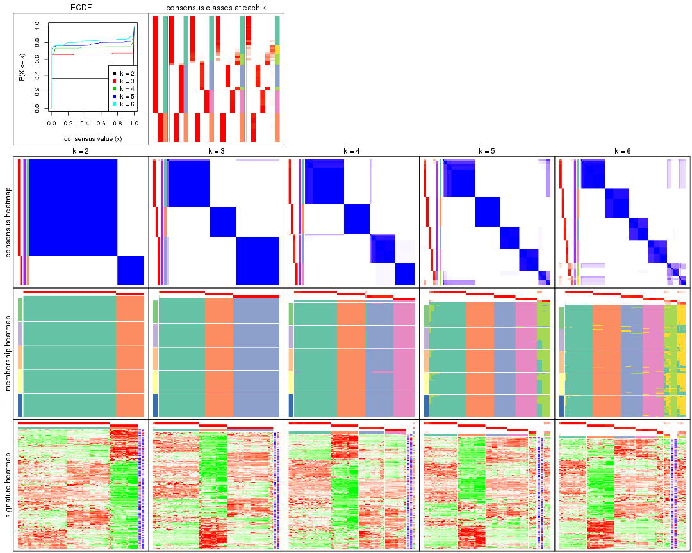
The plots are:
k and the heatmap of
predicted classes for each k.k.k.k.All the plots in panels can be made by individual functions and they are plotted later in this section.
select_partition_number() produces several plots showing different
statistics for choosing “optimized” k. There are following statistics:
k;k, the area increased is defined as \(A_k - A_{k-1}\).The detailed explanations of these statistics can be found in the cola vignette.
Generally speaking, lower PAC score, higher mean silhouette score or higher
concordance corresponds to better partition. Rand index and Jaccard index
measure how similar the current partition is compared to partition with k-1.
If they are too similar, we won't accept k is better than k-1.
select_partition_number(res)
The numeric values for all these statistics can be obtained by get_stats().
get_stats(res)
#> k 1-PAC mean_silhouette concordance area_increased Rand Jaccard
#> 2 2 1.000 1.000 1.000 0.3629 0.638 0.638
#> 3 3 1.000 0.991 0.996 0.8210 0.702 0.532
#> 4 4 1.000 0.981 0.987 0.1222 0.895 0.700
#> 5 5 0.983 0.921 0.968 0.0581 0.941 0.774
#> 6 6 0.960 0.900 0.942 0.0405 0.968 0.846
suggest_best_k() suggests the best \(k\) based on these statistics. The rules are as follows:
suggest_best_k(res)
#> [1] 6
#> attr(,"optional")
#> [1] 2 3 4 5
There is also optional best \(k\) = 2 3 4 5 that is worth to check.
Following shows the table of the partitions (You need to click the show/hide
code output link to see it). The membership matrix (columns with name p*)
is inferred by
clue::cl_consensus()
function with the SE method. Basically the value in the membership matrix
represents the probability to belong to a certain group. The finall class
label for an item is determined with the group with highest probability it
belongs to.
In get_classes() function, the entropy is calculated from the membership
matrix and the silhouette score is calculated from the consensus matrix.
cbind(get_classes(res, k = 2), get_membership(res, k = 2))
#> class entropy silhouette p1 p2
#> SRR2453324 1 0 1 1 0
#> SRR2453325 1 0 1 1 0
#> SRR2453323 2 0 1 0 1
#> SRR2453321 1 0 1 1 0
#> SRR2453322 1 0 1 1 0
#> SRR2453320 2 0 1 0 1
#> SRR2453319 2 0 1 0 1
#> SRR2453318 2 0 1 0 1
#> SRR2453317 1 0 1 1 0
#> SRR2453316 1 0 1 1 0
#> SRR2453315 1 0 1 1 0
#> SRR2453312 1 0 1 1 0
#> SRR2453313 1 0 1 1 0
#> SRR2453314 1 0 1 1 0
#> SRR2453311 2 0 1 0 1
#> SRR2453310 1 0 1 1 0
#> SRR2453309 2 0 1 0 1
#> SRR2453308 1 0 1 1 0
#> SRR2453307 2 0 1 0 1
#> SRR2453306 1 0 1 1 0
#> SRR2453305 2 0 1 0 1
#> SRR2453303 1 0 1 1 0
#> SRR2453304 1 0 1 1 0
#> SRR2453302 2 0 1 0 1
#> SRR2453301 1 0 1 1 0
#> SRR2453299 2 0 1 0 1
#> SRR2453300 2 0 1 0 1
#> SRR2453371 1 0 1 1 0
#> SRR2453370 1 0 1 1 0
#> SRR2453369 1 0 1 1 0
#> SRR2453366 1 0 1 1 0
#> SRR2453367 1 0 1 1 0
#> SRR2453368 1 0 1 1 0
#> SRR2453365 1 0 1 1 0
#> SRR2453364 1 0 1 1 0
#> SRR2453363 1 0 1 1 0
#> SRR2453362 1 0 1 1 0
#> SRR2453361 1 0 1 1 0
#> SRR2453359 1 0 1 1 0
#> SRR2453360 1 0 1 1 0
#> SRR2453357 1 0 1 1 0
#> SRR2453356 1 0 1 1 0
#> SRR2453358 1 0 1 1 0
#> SRR2453355 1 0 1 1 0
#> SRR2453354 1 0 1 1 0
#> SRR2453353 1 0 1 1 0
#> SRR2453352 1 0 1 1 0
#> SRR2453351 1 0 1 1 0
#> SRR2453350 1 0 1 1 0
#> SRR2453349 1 0 1 1 0
#> SRR2453348 1 0 1 1 0
#> SRR2453346 1 0 1 1 0
#> SRR2453347 1 0 1 1 0
#> SRR2453345 1 0 1 1 0
#> SRR2453343 1 0 1 1 0
#> SRR2453344 1 0 1 1 0
#> SRR2453341 2 0 1 0 1
#> SRR2453340 1 0 1 1 0
#> SRR2453339 1 0 1 1 0
#> SRR2453337 1 0 1 1 0
#> SRR2453338 1 0 1 1 0
#> SRR2453336 2 0 1 0 1
#> SRR2453335 2 0 1 0 1
#> SRR2453334 2 0 1 0 1
#> SRR2453332 2 0 1 0 1
#> SRR2453333 2 0 1 0 1
#> SRR2453342 1 0 1 1 0
#> SRR2453331 1 0 1 1 0
#> SRR2453329 1 0 1 1 0
#> SRR2453330 1 0 1 1 0
#> SRR2453328 1 0 1 1 0
#> SRR2453326 1 0 1 1 0
#> SRR2453327 1 0 1 1 0
cbind(get_classes(res, k = 3), get_membership(res, k = 3))
#> class entropy silhouette p1 p2 p3
#> SRR2453324 3 0.000 1.000 0.000 0 1.000
#> SRR2453325 3 0.000 1.000 0.000 0 1.000
#> SRR2453323 2 0.000 1.000 0.000 1 0.000
#> SRR2453321 3 0.000 1.000 0.000 0 1.000
#> SRR2453322 3 0.000 1.000 0.000 0 1.000
#> SRR2453320 2 0.000 1.000 0.000 1 0.000
#> SRR2453319 2 0.000 1.000 0.000 1 0.000
#> SRR2453318 2 0.000 1.000 0.000 1 0.000
#> SRR2453317 3 0.000 1.000 0.000 0 1.000
#> SRR2453316 3 0.000 1.000 0.000 0 1.000
#> SRR2453315 3 0.000 1.000 0.000 0 1.000
#> SRR2453312 3 0.000 1.000 0.000 0 1.000
#> SRR2453313 3 0.000 1.000 0.000 0 1.000
#> SRR2453314 3 0.000 1.000 0.000 0 1.000
#> SRR2453311 2 0.000 1.000 0.000 1 0.000
#> SRR2453310 3 0.000 1.000 0.000 0 1.000
#> SRR2453309 2 0.000 1.000 0.000 1 0.000
#> SRR2453308 3 0.000 1.000 0.000 0 1.000
#> SRR2453307 2 0.000 1.000 0.000 1 0.000
#> SRR2453306 3 0.000 1.000 0.000 0 1.000
#> SRR2453305 2 0.000 1.000 0.000 1 0.000
#> SRR2453303 3 0.000 1.000 0.000 0 1.000
#> SRR2453304 3 0.000 1.000 0.000 0 1.000
#> SRR2453302 2 0.000 1.000 0.000 1 0.000
#> SRR2453301 3 0.000 1.000 0.000 0 1.000
#> SRR2453299 2 0.000 1.000 0.000 1 0.000
#> SRR2453300 2 0.000 1.000 0.000 1 0.000
#> SRR2453371 1 0.000 0.989 1.000 0 0.000
#> SRR2453370 1 0.000 0.989 1.000 0 0.000
#> SRR2453369 1 0.000 0.989 1.000 0 0.000
#> SRR2453366 1 0.000 0.989 1.000 0 0.000
#> SRR2453367 1 0.000 0.989 1.000 0 0.000
#> SRR2453368 1 0.000 0.989 1.000 0 0.000
#> SRR2453365 1 0.000 0.989 1.000 0 0.000
#> SRR2453364 1 0.000 0.989 1.000 0 0.000
#> SRR2453363 1 0.000 0.989 1.000 0 0.000
#> SRR2453362 1 0.000 0.989 1.000 0 0.000
#> SRR2453361 1 0.000 0.989 1.000 0 0.000
#> SRR2453359 1 0.000 0.989 1.000 0 0.000
#> SRR2453360 1 0.000 0.989 1.000 0 0.000
#> SRR2453357 3 0.000 1.000 0.000 0 1.000
#> SRR2453356 3 0.000 1.000 0.000 0 1.000
#> SRR2453358 1 0.000 0.989 1.000 0 0.000
#> SRR2453355 1 0.000 0.989 1.000 0 0.000
#> SRR2453354 1 0.000 0.989 1.000 0 0.000
#> SRR2453353 1 0.000 0.989 1.000 0 0.000
#> SRR2453352 1 0.000 0.989 1.000 0 0.000
#> SRR2453351 1 0.525 0.641 0.736 0 0.264
#> SRR2453350 1 0.000 0.989 1.000 0 0.000
#> SRR2453349 1 0.000 0.989 1.000 0 0.000
#> SRR2453348 1 0.000 0.989 1.000 0 0.000
#> SRR2453346 1 0.000 0.989 1.000 0 0.000
#> SRR2453347 1 0.000 0.989 1.000 0 0.000
#> SRR2453345 1 0.000 0.989 1.000 0 0.000
#> SRR2453343 1 0.000 0.989 1.000 0 0.000
#> SRR2453344 1 0.000 0.989 1.000 0 0.000
#> SRR2453341 2 0.000 1.000 0.000 1 0.000
#> SRR2453340 3 0.000 1.000 0.000 0 1.000
#> SRR2453339 3 0.000 1.000 0.000 0 1.000
#> SRR2453337 3 0.000 1.000 0.000 0 1.000
#> SRR2453338 3 0.000 1.000 0.000 0 1.000
#> SRR2453336 2 0.000 1.000 0.000 1 0.000
#> SRR2453335 2 0.000 1.000 0.000 1 0.000
#> SRR2453334 2 0.000 1.000 0.000 1 0.000
#> SRR2453332 2 0.000 1.000 0.000 1 0.000
#> SRR2453333 2 0.000 1.000 0.000 1 0.000
#> SRR2453342 1 0.000 0.989 1.000 0 0.000
#> SRR2453331 3 0.000 1.000 0.000 0 1.000
#> SRR2453329 3 0.000 1.000 0.000 0 1.000
#> SRR2453330 3 0.000 1.000 0.000 0 1.000
#> SRR2453328 3 0.000 1.000 0.000 0 1.000
#> SRR2453326 3 0.000 1.000 0.000 0 1.000
#> SRR2453327 3 0.000 1.000 0.000 0 1.000
cbind(get_classes(res, k = 4), get_membership(res, k = 4))
#> class entropy silhouette p1 p2 p3 p4
#> SRR2453324 3 0.1118 0.963 0.000 0 0.964 0.036
#> SRR2453325 3 0.1118 0.963 0.000 0 0.964 0.036
#> SRR2453323 2 0.0000 1.000 0.000 1 0.000 0.000
#> SRR2453321 3 0.1022 0.964 0.000 0 0.968 0.032
#> SRR2453322 3 0.1022 0.964 0.000 0 0.968 0.032
#> SRR2453320 2 0.0000 1.000 0.000 1 0.000 0.000
#> SRR2453319 2 0.0000 1.000 0.000 1 0.000 0.000
#> SRR2453318 2 0.0000 1.000 0.000 1 0.000 0.000
#> SRR2453317 3 0.1118 0.963 0.000 0 0.964 0.036
#> SRR2453316 3 0.1118 0.963 0.000 0 0.964 0.036
#> SRR2453315 3 0.1118 0.963 0.000 0 0.964 0.036
#> SRR2453312 4 0.0000 1.000 0.000 0 0.000 1.000
#> SRR2453313 4 0.0000 1.000 0.000 0 0.000 1.000
#> SRR2453314 4 0.0000 1.000 0.000 0 0.000 1.000
#> SRR2453311 2 0.0000 1.000 0.000 1 0.000 0.000
#> SRR2453310 4 0.0000 1.000 0.000 0 0.000 1.000
#> SRR2453309 2 0.0000 1.000 0.000 1 0.000 0.000
#> SRR2453308 3 0.1022 0.964 0.000 0 0.968 0.032
#> SRR2453307 2 0.0000 1.000 0.000 1 0.000 0.000
#> SRR2453306 3 0.1118 0.963 0.000 0 0.964 0.036
#> SRR2453305 2 0.0000 1.000 0.000 1 0.000 0.000
#> SRR2453303 3 0.1022 0.964 0.000 0 0.968 0.032
#> SRR2453304 3 0.1022 0.964 0.000 0 0.968 0.032
#> SRR2453302 2 0.0000 1.000 0.000 1 0.000 0.000
#> SRR2453301 4 0.0000 1.000 0.000 0 0.000 1.000
#> SRR2453299 2 0.0000 1.000 0.000 1 0.000 0.000
#> SRR2453300 2 0.0000 1.000 0.000 1 0.000 0.000
#> SRR2453371 1 0.0000 0.995 1.000 0 0.000 0.000
#> SRR2453370 1 0.0000 0.995 1.000 0 0.000 0.000
#> SRR2453369 1 0.0921 0.979 0.972 0 0.028 0.000
#> SRR2453366 1 0.0000 0.995 1.000 0 0.000 0.000
#> SRR2453367 1 0.0000 0.995 1.000 0 0.000 0.000
#> SRR2453368 1 0.0000 0.995 1.000 0 0.000 0.000
#> SRR2453365 1 0.0000 0.995 1.000 0 0.000 0.000
#> SRR2453364 1 0.0000 0.995 1.000 0 0.000 0.000
#> SRR2453363 1 0.1211 0.969 0.960 0 0.040 0.000
#> SRR2453362 1 0.0000 0.995 1.000 0 0.000 0.000
#> SRR2453361 3 0.4643 0.444 0.344 0 0.656 0.000
#> SRR2453359 1 0.0000 0.995 1.000 0 0.000 0.000
#> SRR2453360 1 0.0000 0.995 1.000 0 0.000 0.000
#> SRR2453357 3 0.0000 0.944 0.000 0 1.000 0.000
#> SRR2453356 3 0.0000 0.944 0.000 0 1.000 0.000
#> SRR2453358 1 0.0000 0.995 1.000 0 0.000 0.000
#> SRR2453355 1 0.0000 0.995 1.000 0 0.000 0.000
#> SRR2453354 1 0.0000 0.995 1.000 0 0.000 0.000
#> SRR2453353 1 0.0921 0.979 0.972 0 0.028 0.000
#> SRR2453352 1 0.0000 0.995 1.000 0 0.000 0.000
#> SRR2453351 3 0.0000 0.944 0.000 0 1.000 0.000
#> SRR2453350 1 0.0000 0.995 1.000 0 0.000 0.000
#> SRR2453349 1 0.0000 0.995 1.000 0 0.000 0.000
#> SRR2453348 1 0.0000 0.995 1.000 0 0.000 0.000
#> SRR2453346 1 0.0000 0.995 1.000 0 0.000 0.000
#> SRR2453347 1 0.0000 0.995 1.000 0 0.000 0.000
#> SRR2453345 1 0.0921 0.979 0.972 0 0.028 0.000
#> SRR2453343 1 0.0592 0.986 0.984 0 0.016 0.000
#> SRR2453344 1 0.0000 0.995 1.000 0 0.000 0.000
#> SRR2453341 2 0.0000 1.000 0.000 1 0.000 0.000
#> SRR2453340 4 0.0000 1.000 0.000 0 0.000 1.000
#> SRR2453339 4 0.0000 1.000 0.000 0 0.000 1.000
#> SRR2453337 4 0.0000 1.000 0.000 0 0.000 1.000
#> SRR2453338 4 0.0000 1.000 0.000 0 0.000 1.000
#> SRR2453336 2 0.0000 1.000 0.000 1 0.000 0.000
#> SRR2453335 2 0.0000 1.000 0.000 1 0.000 0.000
#> SRR2453334 2 0.0000 1.000 0.000 1 0.000 0.000
#> SRR2453332 2 0.0000 1.000 0.000 1 0.000 0.000
#> SRR2453333 2 0.0000 1.000 0.000 1 0.000 0.000
#> SRR2453342 1 0.0000 0.995 1.000 0 0.000 0.000
#> SRR2453331 4 0.0000 1.000 0.000 0 0.000 1.000
#> SRR2453329 4 0.0000 1.000 0.000 0 0.000 1.000
#> SRR2453330 4 0.0000 1.000 0.000 0 0.000 1.000
#> SRR2453328 4 0.0000 1.000 0.000 0 0.000 1.000
#> SRR2453326 3 0.1022 0.964 0.000 0 0.968 0.032
#> SRR2453327 3 0.1022 0.964 0.000 0 0.968 0.032
cbind(get_classes(res, k = 5), get_membership(res, k = 5))
#> class entropy silhouette p1 p2 p3 p4 p5
#> SRR2453324 3 0.0000 0.99809 0.000 0 1.000 0.000 0.000
#> SRR2453325 3 0.0000 0.99809 0.000 0 1.000 0.000 0.000
#> SRR2453323 2 0.0000 1.00000 0.000 1 0.000 0.000 0.000
#> SRR2453321 3 0.0162 0.99777 0.000 0 0.996 0.000 0.004
#> SRR2453322 3 0.0162 0.99777 0.000 0 0.996 0.000 0.004
#> SRR2453320 2 0.0000 1.00000 0.000 1 0.000 0.000 0.000
#> SRR2453319 2 0.0000 1.00000 0.000 1 0.000 0.000 0.000
#> SRR2453318 2 0.0000 1.00000 0.000 1 0.000 0.000 0.000
#> SRR2453317 3 0.0000 0.99809 0.000 0 1.000 0.000 0.000
#> SRR2453316 3 0.0000 0.99809 0.000 0 1.000 0.000 0.000
#> SRR2453315 3 0.0000 0.99809 0.000 0 1.000 0.000 0.000
#> SRR2453312 4 0.0404 0.99295 0.000 0 0.000 0.988 0.012
#> SRR2453313 4 0.0404 0.99295 0.000 0 0.000 0.988 0.012
#> SRR2453314 4 0.0404 0.99295 0.000 0 0.000 0.988 0.012
#> SRR2453311 2 0.0000 1.00000 0.000 1 0.000 0.000 0.000
#> SRR2453310 4 0.0404 0.99295 0.000 0 0.000 0.988 0.012
#> SRR2453309 2 0.0000 1.00000 0.000 1 0.000 0.000 0.000
#> SRR2453308 3 0.0000 0.99809 0.000 0 1.000 0.000 0.000
#> SRR2453307 2 0.0000 1.00000 0.000 1 0.000 0.000 0.000
#> SRR2453306 3 0.0000 0.99809 0.000 0 1.000 0.000 0.000
#> SRR2453305 2 0.0000 1.00000 0.000 1 0.000 0.000 0.000
#> SRR2453303 3 0.0162 0.99777 0.000 0 0.996 0.000 0.004
#> SRR2453304 3 0.0162 0.99777 0.000 0 0.996 0.000 0.004
#> SRR2453302 2 0.0000 1.00000 0.000 1 0.000 0.000 0.000
#> SRR2453301 4 0.0404 0.99295 0.000 0 0.000 0.988 0.012
#> SRR2453299 2 0.0000 1.00000 0.000 1 0.000 0.000 0.000
#> SRR2453300 2 0.0000 1.00000 0.000 1 0.000 0.000 0.000
#> SRR2453371 1 0.0880 0.93277 0.968 0 0.000 0.000 0.032
#> SRR2453370 1 0.0000 0.95560 1.000 0 0.000 0.000 0.000
#> SRR2453369 5 0.4291 0.30450 0.464 0 0.000 0.000 0.536
#> SRR2453366 1 0.0000 0.95560 1.000 0 0.000 0.000 0.000
#> SRR2453367 1 0.0963 0.92936 0.964 0 0.000 0.000 0.036
#> SRR2453368 1 0.0000 0.95560 1.000 0 0.000 0.000 0.000
#> SRR2453365 1 0.0000 0.95560 1.000 0 0.000 0.000 0.000
#> SRR2453364 1 0.0000 0.95560 1.000 0 0.000 0.000 0.000
#> SRR2453363 5 0.0404 0.73822 0.012 0 0.000 0.000 0.988
#> SRR2453362 1 0.2280 0.83362 0.880 0 0.000 0.000 0.120
#> SRR2453361 5 0.0451 0.73769 0.008 0 0.004 0.000 0.988
#> SRR2453359 1 0.0000 0.95560 1.000 0 0.000 0.000 0.000
#> SRR2453360 1 0.0000 0.95560 1.000 0 0.000 0.000 0.000
#> SRR2453357 5 0.1043 0.72088 0.000 0 0.040 0.000 0.960
#> SRR2453356 5 0.1121 0.71692 0.000 0 0.044 0.000 0.956
#> SRR2453358 1 0.0000 0.95560 1.000 0 0.000 0.000 0.000
#> SRR2453355 1 0.0000 0.95560 1.000 0 0.000 0.000 0.000
#> SRR2453354 1 0.0000 0.95560 1.000 0 0.000 0.000 0.000
#> SRR2453353 5 0.4300 0.28915 0.476 0 0.000 0.000 0.524
#> SRR2453352 1 0.2280 0.83362 0.880 0 0.000 0.000 0.120
#> SRR2453351 5 0.0609 0.73162 0.000 0 0.020 0.000 0.980
#> SRR2453350 1 0.0000 0.95560 1.000 0 0.000 0.000 0.000
#> SRR2453349 1 0.0000 0.95560 1.000 0 0.000 0.000 0.000
#> SRR2453348 1 0.0000 0.95560 1.000 0 0.000 0.000 0.000
#> SRR2453346 1 0.0000 0.95560 1.000 0 0.000 0.000 0.000
#> SRR2453347 1 0.0609 0.94182 0.980 0 0.000 0.000 0.020
#> SRR2453345 5 0.4278 0.33363 0.452 0 0.000 0.000 0.548
#> SRR2453343 1 0.4235 -0.00477 0.576 0 0.000 0.000 0.424
#> SRR2453344 1 0.0000 0.95560 1.000 0 0.000 0.000 0.000
#> SRR2453341 2 0.0000 1.00000 0.000 1 0.000 0.000 0.000
#> SRR2453340 4 0.0162 0.99396 0.000 0 0.000 0.996 0.004
#> SRR2453339 4 0.0162 0.99396 0.000 0 0.000 0.996 0.004
#> SRR2453337 4 0.0162 0.99396 0.000 0 0.000 0.996 0.004
#> SRR2453338 4 0.0162 0.99396 0.000 0 0.000 0.996 0.004
#> SRR2453336 2 0.0000 1.00000 0.000 1 0.000 0.000 0.000
#> SRR2453335 2 0.0000 1.00000 0.000 1 0.000 0.000 0.000
#> SRR2453334 2 0.0000 1.00000 0.000 1 0.000 0.000 0.000
#> SRR2453332 2 0.0000 1.00000 0.000 1 0.000 0.000 0.000
#> SRR2453333 2 0.0000 1.00000 0.000 1 0.000 0.000 0.000
#> SRR2453342 1 0.0000 0.95560 1.000 0 0.000 0.000 0.000
#> SRR2453331 4 0.0000 0.99472 0.000 0 0.000 1.000 0.000
#> SRR2453329 4 0.0000 0.99472 0.000 0 0.000 1.000 0.000
#> SRR2453330 4 0.0000 0.99472 0.000 0 0.000 1.000 0.000
#> SRR2453328 4 0.0000 0.99472 0.000 0 0.000 1.000 0.000
#> SRR2453326 3 0.0162 0.99777 0.000 0 0.996 0.000 0.004
#> SRR2453327 3 0.0162 0.99777 0.000 0 0.996 0.000 0.004
cbind(get_classes(res, k = 6), get_membership(res, k = 6))
#> class entropy silhouette p1 p2 p3 p4 p5 p6
#> SRR2453324 3 0.0865 0.971 0.000 0.00 0.964 0.000 0.000 0.036
#> SRR2453325 3 0.0865 0.971 0.000 0.00 0.964 0.000 0.000 0.036
#> SRR2453323 2 0.0547 0.988 0.000 0.98 0.000 0.000 0.000 0.020
#> SRR2453321 3 0.0458 0.976 0.000 0.00 0.984 0.000 0.016 0.000
#> SRR2453322 3 0.0458 0.976 0.000 0.00 0.984 0.000 0.016 0.000
#> SRR2453320 2 0.0547 0.988 0.000 0.98 0.000 0.000 0.000 0.020
#> SRR2453319 2 0.0547 0.988 0.000 0.98 0.000 0.000 0.000 0.020
#> SRR2453318 2 0.0000 0.993 0.000 1.00 0.000 0.000 0.000 0.000
#> SRR2453317 3 0.1007 0.969 0.000 0.00 0.956 0.000 0.000 0.044
#> SRR2453316 3 0.1007 0.969 0.000 0.00 0.956 0.000 0.000 0.044
#> SRR2453315 3 0.1007 0.969 0.000 0.00 0.956 0.000 0.000 0.044
#> SRR2453312 4 0.0790 0.969 0.000 0.00 0.000 0.968 0.000 0.032
#> SRR2453313 4 0.0937 0.965 0.000 0.00 0.000 0.960 0.000 0.040
#> SRR2453314 4 0.0790 0.969 0.000 0.00 0.000 0.968 0.000 0.032
#> SRR2453311 2 0.0000 0.993 0.000 1.00 0.000 0.000 0.000 0.000
#> SRR2453310 4 0.0790 0.969 0.000 0.00 0.000 0.968 0.000 0.032
#> SRR2453309 2 0.0000 0.993 0.000 1.00 0.000 0.000 0.000 0.000
#> SRR2453308 3 0.0458 0.976 0.000 0.00 0.984 0.000 0.016 0.000
#> SRR2453307 2 0.0547 0.988 0.000 0.98 0.000 0.000 0.000 0.020
#> SRR2453306 3 0.0865 0.971 0.000 0.00 0.964 0.000 0.000 0.036
#> SRR2453305 2 0.0547 0.988 0.000 0.98 0.000 0.000 0.000 0.020
#> SRR2453303 3 0.0458 0.976 0.000 0.00 0.984 0.000 0.016 0.000
#> SRR2453304 3 0.0458 0.976 0.000 0.00 0.984 0.000 0.016 0.000
#> SRR2453302 2 0.0547 0.988 0.000 0.98 0.000 0.000 0.000 0.020
#> SRR2453301 4 0.0790 0.969 0.000 0.00 0.000 0.968 0.000 0.032
#> SRR2453299 2 0.0000 0.993 0.000 1.00 0.000 0.000 0.000 0.000
#> SRR2453300 2 0.0000 0.993 0.000 1.00 0.000 0.000 0.000 0.000
#> SRR2453371 6 0.2631 0.760 0.180 0.00 0.000 0.000 0.000 0.820
#> SRR2453370 1 0.0000 0.978 1.000 0.00 0.000 0.000 0.000 0.000
#> SRR2453369 5 0.5482 0.301 0.160 0.00 0.000 0.000 0.548 0.292
#> SRR2453366 1 0.0000 0.978 1.000 0.00 0.000 0.000 0.000 0.000
#> SRR2453367 6 0.3911 0.595 0.368 0.00 0.000 0.000 0.008 0.624
#> SRR2453368 1 0.0000 0.978 1.000 0.00 0.000 0.000 0.000 0.000
#> SRR2453365 1 0.0000 0.978 1.000 0.00 0.000 0.000 0.000 0.000
#> SRR2453364 1 0.0000 0.978 1.000 0.00 0.000 0.000 0.000 0.000
#> SRR2453363 5 0.3515 0.458 0.000 0.00 0.000 0.000 0.676 0.324
#> SRR2453362 6 0.3094 0.762 0.140 0.00 0.000 0.000 0.036 0.824
#> SRR2453361 5 0.0363 0.687 0.000 0.00 0.000 0.000 0.988 0.012
#> SRR2453359 1 0.0547 0.963 0.980 0.00 0.000 0.000 0.000 0.020
#> SRR2453360 1 0.0000 0.978 1.000 0.00 0.000 0.000 0.000 0.000
#> SRR2453357 5 0.0603 0.684 0.000 0.00 0.016 0.000 0.980 0.004
#> SRR2453356 5 0.0363 0.686 0.000 0.00 0.012 0.000 0.988 0.000
#> SRR2453358 1 0.0363 0.971 0.988 0.00 0.000 0.000 0.000 0.012
#> SRR2453355 1 0.0000 0.978 1.000 0.00 0.000 0.000 0.000 0.000
#> SRR2453354 1 0.0146 0.978 0.996 0.00 0.000 0.000 0.000 0.004
#> SRR2453353 5 0.5208 0.258 0.336 0.00 0.000 0.000 0.556 0.108
#> SRR2453352 6 0.3094 0.762 0.140 0.00 0.000 0.000 0.036 0.824
#> SRR2453351 5 0.0603 0.688 0.000 0.00 0.004 0.000 0.980 0.016
#> SRR2453350 1 0.0146 0.975 0.996 0.00 0.000 0.000 0.000 0.004
#> SRR2453349 1 0.0146 0.978 0.996 0.00 0.000 0.000 0.000 0.004
#> SRR2453348 1 0.0146 0.978 0.996 0.00 0.000 0.000 0.000 0.004
#> SRR2453346 1 0.0000 0.978 1.000 0.00 0.000 0.000 0.000 0.000
#> SRR2453347 1 0.3377 0.630 0.784 0.00 0.000 0.000 0.028 0.188
#> SRR2453345 5 0.5417 0.336 0.164 0.00 0.000 0.000 0.568 0.268
#> SRR2453343 6 0.5434 0.397 0.164 0.00 0.000 0.000 0.272 0.564
#> SRR2453344 1 0.0146 0.978 0.996 0.00 0.000 0.000 0.000 0.004
#> SRR2453341 2 0.0000 0.993 0.000 1.00 0.000 0.000 0.000 0.000
#> SRR2453340 4 0.1204 0.956 0.000 0.00 0.000 0.944 0.000 0.056
#> SRR2453339 4 0.1204 0.956 0.000 0.00 0.000 0.944 0.000 0.056
#> SRR2453337 4 0.1204 0.956 0.000 0.00 0.000 0.944 0.000 0.056
#> SRR2453338 4 0.1204 0.956 0.000 0.00 0.000 0.944 0.000 0.056
#> SRR2453336 2 0.0000 0.993 0.000 1.00 0.000 0.000 0.000 0.000
#> SRR2453335 2 0.0000 0.993 0.000 1.00 0.000 0.000 0.000 0.000
#> SRR2453334 2 0.0000 0.993 0.000 1.00 0.000 0.000 0.000 0.000
#> SRR2453332 2 0.0000 0.993 0.000 1.00 0.000 0.000 0.000 0.000
#> SRR2453333 2 0.0000 0.993 0.000 1.00 0.000 0.000 0.000 0.000
#> SRR2453342 1 0.0146 0.978 0.996 0.00 0.000 0.000 0.000 0.004
#> SRR2453331 4 0.0000 0.972 0.000 0.00 0.000 1.000 0.000 0.000
#> SRR2453329 4 0.0000 0.972 0.000 0.00 0.000 1.000 0.000 0.000
#> SRR2453330 4 0.0000 0.972 0.000 0.00 0.000 1.000 0.000 0.000
#> SRR2453328 4 0.0000 0.972 0.000 0.00 0.000 1.000 0.000 0.000
#> SRR2453326 3 0.0458 0.976 0.000 0.00 0.984 0.000 0.016 0.000
#> SRR2453327 3 0.0458 0.976 0.000 0.00 0.984 0.000 0.016 0.000
Heatmaps for the consensus matrix. It visualizes the probability of two samples to be in a same group.
consensus_heatmap(res, k = 2)
consensus_heatmap(res, k = 3)
consensus_heatmap(res, k = 4)
consensus_heatmap(res, k = 5)
consensus_heatmap(res, k = 6)
Heatmaps for the membership of samples in all partitions to see how consistent they are:
membership_heatmap(res, k = 2)

membership_heatmap(res, k = 3)
membership_heatmap(res, k = 4)
membership_heatmap(res, k = 5)
membership_heatmap(res, k = 6)
As soon as we have had the classes for columns, we can look for signatures which are significantly different between classes which can be candidate marks for certain classes. Following are the heatmaps for signatures.
Signature heatmaps where rows are scaled:
get_signatures(res, k = 2)

get_signatures(res, k = 3)
get_signatures(res, k = 4)
get_signatures(res, k = 5)
get_signatures(res, k = 6)
Signature heatmaps where rows are not scaled:
get_signatures(res, k = 2, scale_rows = FALSE)

get_signatures(res, k = 3, scale_rows = FALSE)
get_signatures(res, k = 4, scale_rows = FALSE)
get_signatures(res, k = 5, scale_rows = FALSE)
get_signatures(res, k = 6, scale_rows = FALSE)
Compare the overlap of signatures from different k:
compare_signatures(res)
get_signature() returns a data frame invisibly. TO get the list of signatures, the function
call should be assigned to a variable explicitly. In following code, if plot argument is set
to FALSE, no heatmap is plotted while only the differential analysis is performed.
# code only for demonstration
tb = get_signature(res, k = ..., plot = FALSE)
An example of the output of tb is:
#> which_row fdr mean_1 mean_2 scaled_mean_1 scaled_mean_2 km
#> 1 38 0.042760348 8.373488 9.131774 -0.5533452 0.5164555 1
#> 2 40 0.018707592 7.106213 8.469186 -0.6173731 0.5762149 1
#> 3 55 0.019134737 10.221463 11.207825 -0.6159697 0.5749050 1
#> 4 59 0.006059896 5.921854 7.869574 -0.6899429 0.6439467 1
#> 5 60 0.018055526 8.928898 10.211722 -0.6204761 0.5791110 1
#> 6 98 0.009384629 15.714769 14.887706 0.6635654 -0.6193277 2
...
The columns in tb are:
which_row: row indices corresponding to the input matrix.fdr: FDR for the differential test. mean_x: The mean value in group x.scaled_mean_x: The mean value in group x after rows are scaled.km: Row groups if k-means clustering is applied to rows.UMAP plot which shows how samples are separated.
dimension_reduction(res, k = 2, method = "UMAP")

dimension_reduction(res, k = 3, method = "UMAP")
dimension_reduction(res, k = 4, method = "UMAP")
dimension_reduction(res, k = 5, method = "UMAP")
dimension_reduction(res, k = 6, method = "UMAP")
Following heatmap shows how subgroups are split when increasing k:
collect_classes(res)
If matrix rows can be associated to genes, consider to use functional_enrichment(res,
...) to perform function enrichment for the signature genes. See this vignette for more detailed explanations.
The object with results only for a single top-value method and a single partition method can be extracted as:
res = res_list["CV", "pam"]
# you can also extract it by
# res = res_list["CV:pam"]
A summary of res and all the functions that can be applied to it:
res
#> A 'ConsensusPartition' object with k = 2, 3, 4, 5, 6.
#> On a matrix with 16769 rows and 73 columns.
#> Top rows (1000, 2000, 3000, 4000, 5000) are extracted by 'CV' method.
#> Subgroups are detected by 'pam' method.
#> Performed in total 1250 partitions by row resampling.
#> Best k for subgroups seems to be 6.
#>
#> Following methods can be applied to this 'ConsensusPartition' object:
#> [1] "cola_report" "collect_classes" "collect_plots"
#> [4] "collect_stats" "colnames" "compare_signatures"
#> [7] "consensus_heatmap" "dimension_reduction" "functional_enrichment"
#> [10] "get_anno_col" "get_anno" "get_classes"
#> [13] "get_consensus" "get_matrix" "get_membership"
#> [16] "get_param" "get_signatures" "get_stats"
#> [19] "is_best_k" "is_stable_k" "membership_heatmap"
#> [22] "ncol" "nrow" "plot_ecdf"
#> [25] "rownames" "select_partition_number" "show"
#> [28] "suggest_best_k" "test_to_known_factors"
collect_plots() function collects all the plots made from res for all k (number of partitions)
into one single page to provide an easy and fast comparison between different k.
collect_plots(res)
The plots are:
k and the heatmap of
predicted classes for each k.k.k.k.All the plots in panels can be made by individual functions and they are plotted later in this section.
select_partition_number() produces several plots showing different
statistics for choosing “optimized” k. There are following statistics:
k;k, the area increased is defined as \(A_k - A_{k-1}\).The detailed explanations of these statistics can be found in the cola vignette.
Generally speaking, lower PAC score, higher mean silhouette score or higher
concordance corresponds to better partition. Rand index and Jaccard index
measure how similar the current partition is compared to partition with k-1.
If they are too similar, we won't accept k is better than k-1.
select_partition_number(res)
The numeric values for all these statistics can be obtained by get_stats().
get_stats(res)
#> k 1-PAC mean_silhouette concordance area_increased Rand Jaccard
#> 2 2 1.000 1.000 1.000 0.3629 0.638 0.638
#> 3 3 1.000 0.987 0.994 0.8168 0.703 0.535
#> 4 4 1.000 0.999 0.999 0.1277 0.916 0.753
#> 5 5 0.995 0.766 0.910 0.0348 0.975 0.902
#> 6 6 1.000 0.969 0.987 0.0408 0.941 0.760
suggest_best_k() suggests the best \(k\) based on these statistics. The rules are as follows:
suggest_best_k(res)
#> [1] 6
#> attr(,"optional")
#> [1] 2 3 4 5
There is also optional best \(k\) = 2 3 4 5 that is worth to check.
Following shows the table of the partitions (You need to click the show/hide
code output link to see it). The membership matrix (columns with name p*)
is inferred by
clue::cl_consensus()
function with the SE method. Basically the value in the membership matrix
represents the probability to belong to a certain group. The finall class
label for an item is determined with the group with highest probability it
belongs to.
In get_classes() function, the entropy is calculated from the membership
matrix and the silhouette score is calculated from the consensus matrix.
cbind(get_classes(res, k = 2), get_membership(res, k = 2))
#> class entropy silhouette p1 p2
#> SRR2453324 1 0 1 1 0
#> SRR2453325 1 0 1 1 0
#> SRR2453323 2 0 1 0 1
#> SRR2453321 1 0 1 1 0
#> SRR2453322 1 0 1 1 0
#> SRR2453320 2 0 1 0 1
#> SRR2453319 2 0 1 0 1
#> SRR2453318 2 0 1 0 1
#> SRR2453317 1 0 1 1 0
#> SRR2453316 1 0 1 1 0
#> SRR2453315 1 0 1 1 0
#> SRR2453312 1 0 1 1 0
#> SRR2453313 1 0 1 1 0
#> SRR2453314 1 0 1 1 0
#> SRR2453311 2 0 1 0 1
#> SRR2453310 1 0 1 1 0
#> SRR2453309 2 0 1 0 1
#> SRR2453308 1 0 1 1 0
#> SRR2453307 2 0 1 0 1
#> SRR2453306 1 0 1 1 0
#> SRR2453305 2 0 1 0 1
#> SRR2453303 1 0 1 1 0
#> SRR2453304 1 0 1 1 0
#> SRR2453302 2 0 1 0 1
#> SRR2453301 1 0 1 1 0
#> SRR2453299 2 0 1 0 1
#> SRR2453300 2 0 1 0 1
#> SRR2453371 1 0 1 1 0
#> SRR2453370 1 0 1 1 0
#> SRR2453369 1 0 1 1 0
#> SRR2453366 1 0 1 1 0
#> SRR2453367 1 0 1 1 0
#> SRR2453368 1 0 1 1 0
#> SRR2453365 1 0 1 1 0
#> SRR2453364 1 0 1 1 0
#> SRR2453363 1 0 1 1 0
#> SRR2453362 1 0 1 1 0
#> SRR2453361 1 0 1 1 0
#> SRR2453359 1 0 1 1 0
#> SRR2453360 1 0 1 1 0
#> SRR2453357 1 0 1 1 0
#> SRR2453356 1 0 1 1 0
#> SRR2453358 1 0 1 1 0
#> SRR2453355 1 0 1 1 0
#> SRR2453354 1 0 1 1 0
#> SRR2453353 1 0 1 1 0
#> SRR2453352 1 0 1 1 0
#> SRR2453351 1 0 1 1 0
#> SRR2453350 1 0 1 1 0
#> SRR2453349 1 0 1 1 0
#> SRR2453348 1 0 1 1 0
#> SRR2453346 1 0 1 1 0
#> SRR2453347 1 0 1 1 0
#> SRR2453345 1 0 1 1 0
#> SRR2453343 1 0 1 1 0
#> SRR2453344 1 0 1 1 0
#> SRR2453341 2 0 1 0 1
#> SRR2453340 1 0 1 1 0
#> SRR2453339 1 0 1 1 0
#> SRR2453337 1 0 1 1 0
#> SRR2453338 1 0 1 1 0
#> SRR2453336 2 0 1 0 1
#> SRR2453335 2 0 1 0 1
#> SRR2453334 2 0 1 0 1
#> SRR2453332 2 0 1 0 1
#> SRR2453333 2 0 1 0 1
#> SRR2453342 1 0 1 1 0
#> SRR2453331 1 0 1 1 0
#> SRR2453329 1 0 1 1 0
#> SRR2453330 1 0 1 1 0
#> SRR2453328 1 0 1 1 0
#> SRR2453326 1 0 1 1 0
#> SRR2453327 1 0 1 1 0
cbind(get_classes(res, k = 3), get_membership(res, k = 3))
#> class entropy silhouette p1 p2 p3
#> SRR2453324 3 0.0000 0.991 0.000 0 1.000
#> SRR2453325 3 0.0000 0.991 0.000 0 1.000
#> SRR2453323 2 0.0000 1.000 0.000 1 0.000
#> SRR2453321 3 0.0000 0.991 0.000 0 1.000
#> SRR2453322 3 0.0000 0.991 0.000 0 1.000
#> SRR2453320 2 0.0000 1.000 0.000 1 0.000
#> SRR2453319 2 0.0000 1.000 0.000 1 0.000
#> SRR2453318 2 0.0000 1.000 0.000 1 0.000
#> SRR2453317 3 0.0000 0.991 0.000 0 1.000
#> SRR2453316 3 0.0000 0.991 0.000 0 1.000
#> SRR2453315 3 0.0000 0.991 0.000 0 1.000
#> SRR2453312 3 0.0000 0.991 0.000 0 1.000
#> SRR2453313 3 0.0000 0.991 0.000 0 1.000
#> SRR2453314 3 0.0000 0.991 0.000 0 1.000
#> SRR2453311 2 0.0000 1.000 0.000 1 0.000
#> SRR2453310 3 0.0000 0.991 0.000 0 1.000
#> SRR2453309 2 0.0000 1.000 0.000 1 0.000
#> SRR2453308 3 0.0000 0.991 0.000 0 1.000
#> SRR2453307 2 0.0000 1.000 0.000 1 0.000
#> SRR2453306 3 0.0000 0.991 0.000 0 1.000
#> SRR2453305 2 0.0000 1.000 0.000 1 0.000
#> SRR2453303 3 0.0000 0.991 0.000 0 1.000
#> SRR2453304 3 0.0000 0.991 0.000 0 1.000
#> SRR2453302 2 0.0000 1.000 0.000 1 0.000
#> SRR2453301 3 0.0000 0.991 0.000 0 1.000
#> SRR2453299 2 0.0000 1.000 0.000 1 0.000
#> SRR2453300 2 0.0000 1.000 0.000 1 0.000
#> SRR2453371 1 0.0000 0.992 1.000 0 0.000
#> SRR2453370 1 0.0000 0.992 1.000 0 0.000
#> SRR2453369 1 0.0000 0.992 1.000 0 0.000
#> SRR2453366 1 0.0000 0.992 1.000 0 0.000
#> SRR2453367 1 0.0000 0.992 1.000 0 0.000
#> SRR2453368 1 0.0000 0.992 1.000 0 0.000
#> SRR2453365 1 0.0000 0.992 1.000 0 0.000
#> SRR2453364 1 0.0000 0.992 1.000 0 0.000
#> SRR2453363 1 0.4062 0.797 0.836 0 0.164
#> SRR2453362 1 0.0000 0.992 1.000 0 0.000
#> SRR2453361 3 0.0424 0.984 0.008 0 0.992
#> SRR2453359 1 0.0000 0.992 1.000 0 0.000
#> SRR2453360 1 0.0000 0.992 1.000 0 0.000
#> SRR2453357 3 0.2356 0.920 0.072 0 0.928
#> SRR2453356 3 0.3619 0.845 0.136 0 0.864
#> SRR2453358 1 0.0000 0.992 1.000 0 0.000
#> SRR2453355 1 0.0000 0.992 1.000 0 0.000
#> SRR2453354 1 0.0000 0.992 1.000 0 0.000
#> SRR2453353 1 0.0000 0.992 1.000 0 0.000
#> SRR2453352 1 0.0000 0.992 1.000 0 0.000
#> SRR2453351 3 0.1289 0.961 0.032 0 0.968
#> SRR2453350 1 0.0000 0.992 1.000 0 0.000
#> SRR2453349 1 0.0000 0.992 1.000 0 0.000
#> SRR2453348 1 0.0000 0.992 1.000 0 0.000
#> SRR2453346 1 0.0000 0.992 1.000 0 0.000
#> SRR2453347 1 0.0000 0.992 1.000 0 0.000
#> SRR2453345 1 0.0000 0.992 1.000 0 0.000
#> SRR2453343 1 0.0000 0.992 1.000 0 0.000
#> SRR2453344 1 0.0000 0.992 1.000 0 0.000
#> SRR2453341 2 0.0000 1.000 0.000 1 0.000
#> SRR2453340 3 0.0000 0.991 0.000 0 1.000
#> SRR2453339 3 0.0000 0.991 0.000 0 1.000
#> SRR2453337 3 0.0000 0.991 0.000 0 1.000
#> SRR2453338 3 0.0000 0.991 0.000 0 1.000
#> SRR2453336 2 0.0000 1.000 0.000 1 0.000
#> SRR2453335 2 0.0000 1.000 0.000 1 0.000
#> SRR2453334 2 0.0000 1.000 0.000 1 0.000
#> SRR2453332 2 0.0000 1.000 0.000 1 0.000
#> SRR2453333 2 0.0000 1.000 0.000 1 0.000
#> SRR2453342 1 0.0000 0.992 1.000 0 0.000
#> SRR2453331 3 0.0000 0.991 0.000 0 1.000
#> SRR2453329 3 0.0000 0.991 0.000 0 1.000
#> SRR2453330 3 0.0000 0.991 0.000 0 1.000
#> SRR2453328 3 0.0000 0.991 0.000 0 1.000
#> SRR2453326 3 0.0000 0.991 0.000 0 1.000
#> SRR2453327 3 0.0000 0.991 0.000 0 1.000
cbind(get_classes(res, k = 4), get_membership(res, k = 4))
#> class entropy silhouette p1 p2 p3 p4
#> SRR2453324 3 0.00 1.000 0.000 0 1.000 0
#> SRR2453325 3 0.00 1.000 0.000 0 1.000 0
#> SRR2453323 2 0.00 1.000 0.000 1 0.000 0
#> SRR2453321 3 0.00 1.000 0.000 0 1.000 0
#> SRR2453322 3 0.00 1.000 0.000 0 1.000 0
#> SRR2453320 2 0.00 1.000 0.000 1 0.000 0
#> SRR2453319 2 0.00 1.000 0.000 1 0.000 0
#> SRR2453318 2 0.00 1.000 0.000 1 0.000 0
#> SRR2453317 3 0.00 1.000 0.000 0 1.000 0
#> SRR2453316 3 0.00 1.000 0.000 0 1.000 0
#> SRR2453315 3 0.00 1.000 0.000 0 1.000 0
#> SRR2453312 4 0.00 1.000 0.000 0 0.000 1
#> SRR2453313 4 0.00 1.000 0.000 0 0.000 1
#> SRR2453314 4 0.00 1.000 0.000 0 0.000 1
#> SRR2453311 2 0.00 1.000 0.000 1 0.000 0
#> SRR2453310 4 0.00 1.000 0.000 0 0.000 1
#> SRR2453309 2 0.00 1.000 0.000 1 0.000 0
#> SRR2453308 3 0.00 1.000 0.000 0 1.000 0
#> SRR2453307 2 0.00 1.000 0.000 1 0.000 0
#> SRR2453306 3 0.00 1.000 0.000 0 1.000 0
#> SRR2453305 2 0.00 1.000 0.000 1 0.000 0
#> SRR2453303 3 0.00 1.000 0.000 0 1.000 0
#> SRR2453304 3 0.00 1.000 0.000 0 1.000 0
#> SRR2453302 2 0.00 1.000 0.000 1 0.000 0
#> SRR2453301 4 0.00 1.000 0.000 0 0.000 1
#> SRR2453299 2 0.00 1.000 0.000 1 0.000 0
#> SRR2453300 2 0.00 1.000 0.000 1 0.000 0
#> SRR2453371 1 0.00 0.998 1.000 0 0.000 0
#> SRR2453370 1 0.00 0.998 1.000 0 0.000 0
#> SRR2453369 1 0.00 0.998 1.000 0 0.000 0
#> SRR2453366 1 0.00 0.998 1.000 0 0.000 0
#> SRR2453367 1 0.00 0.998 1.000 0 0.000 0
#> SRR2453368 1 0.00 0.998 1.000 0 0.000 0
#> SRR2453365 1 0.00 0.998 1.000 0 0.000 0
#> SRR2453364 1 0.00 0.998 1.000 0 0.000 0
#> SRR2453363 1 0.13 0.952 0.956 0 0.044 0
#> SRR2453362 1 0.00 0.998 1.000 0 0.000 0
#> SRR2453361 3 0.00 1.000 0.000 0 1.000 0
#> SRR2453359 1 0.00 0.998 1.000 0 0.000 0
#> SRR2453360 1 0.00 0.998 1.000 0 0.000 0
#> SRR2453357 3 0.00 1.000 0.000 0 1.000 0
#> SRR2453356 3 0.00 1.000 0.000 0 1.000 0
#> SRR2453358 1 0.00 0.998 1.000 0 0.000 0
#> SRR2453355 1 0.00 0.998 1.000 0 0.000 0
#> SRR2453354 1 0.00 0.998 1.000 0 0.000 0
#> SRR2453353 1 0.00 0.998 1.000 0 0.000 0
#> SRR2453352 1 0.00 0.998 1.000 0 0.000 0
#> SRR2453351 3 0.00 1.000 0.000 0 1.000 0
#> SRR2453350 1 0.00 0.998 1.000 0 0.000 0
#> SRR2453349 1 0.00 0.998 1.000 0 0.000 0
#> SRR2453348 1 0.00 0.998 1.000 0 0.000 0
#> SRR2453346 1 0.00 0.998 1.000 0 0.000 0
#> SRR2453347 1 0.00 0.998 1.000 0 0.000 0
#> SRR2453345 1 0.00 0.998 1.000 0 0.000 0
#> SRR2453343 1 0.00 0.998 1.000 0 0.000 0
#> SRR2453344 1 0.00 0.998 1.000 0 0.000 0
#> SRR2453341 2 0.00 1.000 0.000 1 0.000 0
#> SRR2453340 4 0.00 1.000 0.000 0 0.000 1
#> SRR2453339 4 0.00 1.000 0.000 0 0.000 1
#> SRR2453337 4 0.00 1.000 0.000 0 0.000 1
#> SRR2453338 4 0.00 1.000 0.000 0 0.000 1
#> SRR2453336 2 0.00 1.000 0.000 1 0.000 0
#> SRR2453335 2 0.00 1.000 0.000 1 0.000 0
#> SRR2453334 2 0.00 1.000 0.000 1 0.000 0
#> SRR2453332 2 0.00 1.000 0.000 1 0.000 0
#> SRR2453333 2 0.00 1.000 0.000 1 0.000 0
#> SRR2453342 1 0.00 0.998 1.000 0 0.000 0
#> SRR2453331 4 0.00 1.000 0.000 0 0.000 1
#> SRR2453329 4 0.00 1.000 0.000 0 0.000 1
#> SRR2453330 4 0.00 1.000 0.000 0 0.000 1
#> SRR2453328 4 0.00 1.000 0.000 0 0.000 1
#> SRR2453326 3 0.00 1.000 0.000 0 1.000 0
#> SRR2453327 3 0.00 1.000 0.000 0 1.000 0
cbind(get_classes(res, k = 5), get_membership(res, k = 5))
#> class entropy silhouette p1 p2 p3 p4 p5
#> SRR2453324 3 0.000 1.000 0.000 0.0 1.000 0 0.0
#> SRR2453325 3 0.000 1.000 0.000 0.0 1.000 0 0.0
#> SRR2453323 2 0.431 -0.335 0.000 0.5 0.000 0 0.5
#> SRR2453321 3 0.000 1.000 0.000 0.0 1.000 0 0.0
#> SRR2453322 3 0.000 1.000 0.000 0.0 1.000 0 0.0
#> SRR2453320 2 0.431 -0.335 0.000 0.5 0.000 0 0.5
#> SRR2453319 2 0.431 -0.335 0.000 0.5 0.000 0 0.5
#> SRR2453318 2 0.000 0.000 0.000 1.0 0.000 0 0.0
#> SRR2453317 3 0.000 1.000 0.000 0.0 1.000 0 0.0
#> SRR2453316 3 0.000 1.000 0.000 0.0 1.000 0 0.0
#> SRR2453315 3 0.000 1.000 0.000 0.0 1.000 0 0.0
#> SRR2453312 4 0.000 1.000 0.000 0.0 0.000 1 0.0
#> SRR2453313 4 0.000 1.000 0.000 0.0 0.000 1 0.0
#> SRR2453314 4 0.000 1.000 0.000 0.0 0.000 1 0.0
#> SRR2453311 2 0.431 0.297 0.000 0.5 0.000 0 0.5
#> SRR2453310 4 0.000 1.000 0.000 0.0 0.000 1 0.0
#> SRR2453309 2 0.431 0.297 0.000 0.5 0.000 0 0.5
#> SRR2453308 3 0.000 1.000 0.000 0.0 1.000 0 0.0
#> SRR2453307 5 0.431 0.122 0.000 0.5 0.000 0 0.5
#> SRR2453306 3 0.000 1.000 0.000 0.0 1.000 0 0.0
#> SRR2453305 5 0.431 0.122 0.000 0.5 0.000 0 0.5
#> SRR2453303 3 0.000 1.000 0.000 0.0 1.000 0 0.0
#> SRR2453304 3 0.000 1.000 0.000 0.0 1.000 0 0.0
#> SRR2453302 5 0.431 0.122 0.000 0.5 0.000 0 0.5
#> SRR2453301 4 0.000 1.000 0.000 0.0 0.000 1 0.0
#> SRR2453299 2 0.431 0.297 0.000 0.5 0.000 0 0.5
#> SRR2453300 5 0.431 -0.467 0.000 0.5 0.000 0 0.5
#> SRR2453371 1 0.000 0.998 1.000 0.0 0.000 0 0.0
#> SRR2453370 1 0.000 0.998 1.000 0.0 0.000 0 0.0
#> SRR2453369 1 0.000 0.998 1.000 0.0 0.000 0 0.0
#> SRR2453366 1 0.000 0.998 1.000 0.0 0.000 0 0.0
#> SRR2453367 1 0.000 0.998 1.000 0.0 0.000 0 0.0
#> SRR2453368 1 0.000 0.998 1.000 0.0 0.000 0 0.0
#> SRR2453365 1 0.000 0.998 1.000 0.0 0.000 0 0.0
#> SRR2453364 1 0.000 0.998 1.000 0.0 0.000 0 0.0
#> SRR2453363 1 0.112 0.949 0.956 0.0 0.044 0 0.0
#> SRR2453362 1 0.000 0.998 1.000 0.0 0.000 0 0.0
#> SRR2453361 3 0.000 1.000 0.000 0.0 1.000 0 0.0
#> SRR2453359 1 0.000 0.998 1.000 0.0 0.000 0 0.0
#> SRR2453360 1 0.000 0.998 1.000 0.0 0.000 0 0.0
#> SRR2453357 3 0.000 1.000 0.000 0.0 1.000 0 0.0
#> SRR2453356 3 0.000 1.000 0.000 0.0 1.000 0 0.0
#> SRR2453358 1 0.000 0.998 1.000 0.0 0.000 0 0.0
#> SRR2453355 1 0.000 0.998 1.000 0.0 0.000 0 0.0
#> SRR2453354 1 0.000 0.998 1.000 0.0 0.000 0 0.0
#> SRR2453353 1 0.000 0.998 1.000 0.0 0.000 0 0.0
#> SRR2453352 1 0.000 0.998 1.000 0.0 0.000 0 0.0
#> SRR2453351 3 0.000 1.000 0.000 0.0 1.000 0 0.0
#> SRR2453350 1 0.000 0.998 1.000 0.0 0.000 0 0.0
#> SRR2453349 1 0.000 0.998 1.000 0.0 0.000 0 0.0
#> SRR2453348 1 0.000 0.998 1.000 0.0 0.000 0 0.0
#> SRR2453346 1 0.000 0.998 1.000 0.0 0.000 0 0.0
#> SRR2453347 1 0.000 0.998 1.000 0.0 0.000 0 0.0
#> SRR2453345 1 0.000 0.998 1.000 0.0 0.000 0 0.0
#> SRR2453343 1 0.000 0.998 1.000 0.0 0.000 0 0.0
#> SRR2453344 1 0.000 0.998 1.000 0.0 0.000 0 0.0
#> SRR2453341 2 0.431 0.297 0.000 0.5 0.000 0 0.5
#> SRR2453340 4 0.000 1.000 0.000 0.0 0.000 1 0.0
#> SRR2453339 4 0.000 1.000 0.000 0.0 0.000 1 0.0
#> SRR2453337 4 0.000 1.000 0.000 0.0 0.000 1 0.0
#> SRR2453338 4 0.000 1.000 0.000 0.0 0.000 1 0.0
#> SRR2453336 2 0.431 0.297 0.000 0.5 0.000 0 0.5
#> SRR2453335 5 0.431 -0.467 0.000 0.5 0.000 0 0.5
#> SRR2453334 2 0.431 0.297 0.000 0.5 0.000 0 0.5
#> SRR2453332 5 0.431 -0.467 0.000 0.5 0.000 0 0.5
#> SRR2453333 2 0.431 0.297 0.000 0.5 0.000 0 0.5
#> SRR2453342 1 0.000 0.998 1.000 0.0 0.000 0 0.0
#> SRR2453331 4 0.000 1.000 0.000 0.0 0.000 1 0.0
#> SRR2453329 4 0.000 1.000 0.000 0.0 0.000 1 0.0
#> SRR2453330 4 0.000 1.000 0.000 0.0 0.000 1 0.0
#> SRR2453328 4 0.000 1.000 0.000 0.0 0.000 1 0.0
#> SRR2453326 3 0.000 1.000 0.000 0.0 1.000 0 0.0
#> SRR2453327 3 0.000 1.000 0.000 0.0 1.000 0 0.0
cbind(get_classes(res, k = 6), get_membership(res, k = 6))
#> class entropy silhouette p1 p2 p3 p4 p5 p6
#> SRR2453324 3 0.0000 0.995 0.000 0.0 1.000 0 0.000 0.0
#> SRR2453325 3 0.0000 0.995 0.000 0.0 1.000 0 0.000 0.0
#> SRR2453323 6 0.0000 1.000 0.000 0.0 0.000 0 0.000 1.0
#> SRR2453321 3 0.0000 0.995 0.000 0.0 1.000 0 0.000 0.0
#> SRR2453322 3 0.0000 0.995 0.000 0.0 1.000 0 0.000 0.0
#> SRR2453320 6 0.0000 1.000 0.000 0.0 0.000 0 0.000 1.0
#> SRR2453319 6 0.0000 1.000 0.000 0.0 0.000 0 0.000 1.0
#> SRR2453318 2 0.3869 0.000 0.000 0.5 0.000 0 0.000 0.5
#> SRR2453317 3 0.0790 0.974 0.000 0.0 0.968 0 0.032 0.0
#> SRR2453316 3 0.0790 0.974 0.000 0.0 0.968 0 0.032 0.0
#> SRR2453315 3 0.0790 0.974 0.000 0.0 0.968 0 0.032 0.0
#> SRR2453312 4 0.0000 1.000 0.000 0.0 0.000 1 0.000 0.0
#> SRR2453313 4 0.0000 1.000 0.000 0.0 0.000 1 0.000 0.0
#> SRR2453314 4 0.0000 1.000 0.000 0.0 0.000 1 0.000 0.0
#> SRR2453311 2 0.0000 0.945 0.000 1.0 0.000 0 0.000 0.0
#> SRR2453310 4 0.0000 1.000 0.000 0.0 0.000 1 0.000 0.0
#> SRR2453309 2 0.0000 0.945 0.000 1.0 0.000 0 0.000 0.0
#> SRR2453308 3 0.0000 0.995 0.000 0.0 1.000 0 0.000 0.0
#> SRR2453307 6 0.0000 1.000 0.000 0.0 0.000 0 0.000 1.0
#> SRR2453306 3 0.0000 0.995 0.000 0.0 1.000 0 0.000 0.0
#> SRR2453305 6 0.0000 1.000 0.000 0.0 0.000 0 0.000 1.0
#> SRR2453303 3 0.0000 0.995 0.000 0.0 1.000 0 0.000 0.0
#> SRR2453304 3 0.0000 0.995 0.000 0.0 1.000 0 0.000 0.0
#> SRR2453302 6 0.0000 1.000 0.000 0.0 0.000 0 0.000 1.0
#> SRR2453301 4 0.0000 1.000 0.000 0.0 0.000 1 0.000 0.0
#> SRR2453299 2 0.0000 0.945 0.000 1.0 0.000 0 0.000 0.0
#> SRR2453300 2 0.0000 0.945 0.000 1.0 0.000 0 0.000 0.0
#> SRR2453371 5 0.0865 0.902 0.036 0.0 0.000 0 0.964 0.0
#> SRR2453370 1 0.0000 1.000 1.000 0.0 0.000 0 0.000 0.0
#> SRR2453369 1 0.0000 1.000 1.000 0.0 0.000 0 0.000 0.0
#> SRR2453366 1 0.0000 1.000 1.000 0.0 0.000 0 0.000 0.0
#> SRR2453367 1 0.0000 1.000 1.000 0.0 0.000 0 0.000 0.0
#> SRR2453368 1 0.0000 1.000 1.000 0.0 0.000 0 0.000 0.0
#> SRR2453365 1 0.0000 1.000 1.000 0.0 0.000 0 0.000 0.0
#> SRR2453364 1 0.0000 1.000 1.000 0.0 0.000 0 0.000 0.0
#> SRR2453363 5 0.3424 0.719 0.204 0.0 0.024 0 0.772 0.0
#> SRR2453362 5 0.0790 0.902 0.032 0.0 0.000 0 0.968 0.0
#> SRR2453361 3 0.0000 0.995 0.000 0.0 1.000 0 0.000 0.0
#> SRR2453359 1 0.0000 1.000 1.000 0.0 0.000 0 0.000 0.0
#> SRR2453360 1 0.0000 1.000 1.000 0.0 0.000 0 0.000 0.0
#> SRR2453357 3 0.0000 0.995 0.000 0.0 1.000 0 0.000 0.0
#> SRR2453356 3 0.0000 0.995 0.000 0.0 1.000 0 0.000 0.0
#> SRR2453358 1 0.0000 1.000 1.000 0.0 0.000 0 0.000 0.0
#> SRR2453355 1 0.0000 1.000 1.000 0.0 0.000 0 0.000 0.0
#> SRR2453354 1 0.0000 1.000 1.000 0.0 0.000 0 0.000 0.0
#> SRR2453353 1 0.0000 1.000 1.000 0.0 0.000 0 0.000 0.0
#> SRR2453352 5 0.0790 0.902 0.032 0.0 0.000 0 0.968 0.0
#> SRR2453351 3 0.0000 0.995 0.000 0.0 1.000 0 0.000 0.0
#> SRR2453350 1 0.0000 1.000 1.000 0.0 0.000 0 0.000 0.0
#> SRR2453349 1 0.0000 1.000 1.000 0.0 0.000 0 0.000 0.0
#> SRR2453348 1 0.0000 1.000 1.000 0.0 0.000 0 0.000 0.0
#> SRR2453346 1 0.0000 1.000 1.000 0.0 0.000 0 0.000 0.0
#> SRR2453347 1 0.0000 1.000 1.000 0.0 0.000 0 0.000 0.0
#> SRR2453345 1 0.0000 1.000 1.000 0.0 0.000 0 0.000 0.0
#> SRR2453343 1 0.0000 1.000 1.000 0.0 0.000 0 0.000 0.0
#> SRR2453344 1 0.0000 1.000 1.000 0.0 0.000 0 0.000 0.0
#> SRR2453341 2 0.0000 0.945 0.000 1.0 0.000 0 0.000 0.0
#> SRR2453340 4 0.0000 1.000 0.000 0.0 0.000 1 0.000 0.0
#> SRR2453339 4 0.0000 1.000 0.000 0.0 0.000 1 0.000 0.0
#> SRR2453337 4 0.0000 1.000 0.000 0.0 0.000 1 0.000 0.0
#> SRR2453338 4 0.0000 1.000 0.000 0.0 0.000 1 0.000 0.0
#> SRR2453336 2 0.0000 0.945 0.000 1.0 0.000 0 0.000 0.0
#> SRR2453335 2 0.0000 0.945 0.000 1.0 0.000 0 0.000 0.0
#> SRR2453334 2 0.0000 0.945 0.000 1.0 0.000 0 0.000 0.0
#> SRR2453332 2 0.0000 0.945 0.000 1.0 0.000 0 0.000 0.0
#> SRR2453333 2 0.0000 0.945 0.000 1.0 0.000 0 0.000 0.0
#> SRR2453342 1 0.0000 1.000 1.000 0.0 0.000 0 0.000 0.0
#> SRR2453331 4 0.0000 1.000 0.000 0.0 0.000 1 0.000 0.0
#> SRR2453329 4 0.0000 1.000 0.000 0.0 0.000 1 0.000 0.0
#> SRR2453330 4 0.0000 1.000 0.000 0.0 0.000 1 0.000 0.0
#> SRR2453328 4 0.0000 1.000 0.000 0.0 0.000 1 0.000 0.0
#> SRR2453326 3 0.0000 0.995 0.000 0.0 1.000 0 0.000 0.0
#> SRR2453327 3 0.0000 0.995 0.000 0.0 1.000 0 0.000 0.0
Heatmaps for the consensus matrix. It visualizes the probability of two samples to be in a same group.
consensus_heatmap(res, k = 2)
consensus_heatmap(res, k = 3)
consensus_heatmap(res, k = 4)
consensus_heatmap(res, k = 5)
consensus_heatmap(res, k = 6)
Heatmaps for the membership of samples in all partitions to see how consistent they are:
membership_heatmap(res, k = 2)

membership_heatmap(res, k = 3)
membership_heatmap(res, k = 4)
membership_heatmap(res, k = 5)
membership_heatmap(res, k = 6)
As soon as we have had the classes for columns, we can look for signatures which are significantly different between classes which can be candidate marks for certain classes. Following are the heatmaps for signatures.
Signature heatmaps where rows are scaled:
get_signatures(res, k = 2)

get_signatures(res, k = 3)
get_signatures(res, k = 4)
get_signatures(res, k = 5)
get_signatures(res, k = 6)
Signature heatmaps where rows are not scaled:
get_signatures(res, k = 2, scale_rows = FALSE)

get_signatures(res, k = 3, scale_rows = FALSE)
get_signatures(res, k = 4, scale_rows = FALSE)
get_signatures(res, k = 5, scale_rows = FALSE)
get_signatures(res, k = 6, scale_rows = FALSE)
Compare the overlap of signatures from different k:
compare_signatures(res)
get_signature() returns a data frame invisibly. TO get the list of signatures, the function
call should be assigned to a variable explicitly. In following code, if plot argument is set
to FALSE, no heatmap is plotted while only the differential analysis is performed.
# code only for demonstration
tb = get_signature(res, k = ..., plot = FALSE)
An example of the output of tb is:
#> which_row fdr mean_1 mean_2 scaled_mean_1 scaled_mean_2 km
#> 1 38 0.042760348 8.373488 9.131774 -0.5533452 0.5164555 1
#> 2 40 0.018707592 7.106213 8.469186 -0.6173731 0.5762149 1
#> 3 55 0.019134737 10.221463 11.207825 -0.6159697 0.5749050 1
#> 4 59 0.006059896 5.921854 7.869574 -0.6899429 0.6439467 1
#> 5 60 0.018055526 8.928898 10.211722 -0.6204761 0.5791110 1
#> 6 98 0.009384629 15.714769 14.887706 0.6635654 -0.6193277 2
...
The columns in tb are:
which_row: row indices corresponding to the input matrix.fdr: FDR for the differential test. mean_x: The mean value in group x.scaled_mean_x: The mean value in group x after rows are scaled.km: Row groups if k-means clustering is applied to rows.UMAP plot which shows how samples are separated.
dimension_reduction(res, k = 2, method = "UMAP")

dimension_reduction(res, k = 3, method = "UMAP")
dimension_reduction(res, k = 4, method = "UMAP")
dimension_reduction(res, k = 5, method = "UMAP")
dimension_reduction(res, k = 6, method = "UMAP")
Following heatmap shows how subgroups are split when increasing k:
collect_classes(res)
If matrix rows can be associated to genes, consider to use functional_enrichment(res,
...) to perform function enrichment for the signature genes. See this vignette for more detailed explanations.
The object with results only for a single top-value method and a single partition method can be extracted as:
res = res_list["CV", "mclust"]
# you can also extract it by
# res = res_list["CV:mclust"]
A summary of res and all the functions that can be applied to it:
res
#> A 'ConsensusPartition' object with k = 2, 3, 4, 5, 6.
#> On a matrix with 16769 rows and 73 columns.
#> Top rows (1000, 2000, 3000, 4000, 5000) are extracted by 'CV' method.
#> Subgroups are detected by 'mclust' method.
#> Performed in total 1250 partitions by row resampling.
#> Best k for subgroups seems to be 6.
#>
#> Following methods can be applied to this 'ConsensusPartition' object:
#> [1] "cola_report" "collect_classes" "collect_plots"
#> [4] "collect_stats" "colnames" "compare_signatures"
#> [7] "consensus_heatmap" "dimension_reduction" "functional_enrichment"
#> [10] "get_anno_col" "get_anno" "get_classes"
#> [13] "get_consensus" "get_matrix" "get_membership"
#> [16] "get_param" "get_signatures" "get_stats"
#> [19] "is_best_k" "is_stable_k" "membership_heatmap"
#> [22] "ncol" "nrow" "plot_ecdf"
#> [25] "rownames" "select_partition_number" "show"
#> [28] "suggest_best_k" "test_to_known_factors"
collect_plots() function collects all the plots made from res for all k (number of partitions)
into one single page to provide an easy and fast comparison between different k.
collect_plots(res)
The plots are:
k and the heatmap of
predicted classes for each k.k.k.k.All the plots in panels can be made by individual functions and they are plotted later in this section.
select_partition_number() produces several plots showing different
statistics for choosing “optimized” k. There are following statistics:
k;k, the area increased is defined as \(A_k - A_{k-1}\).The detailed explanations of these statistics can be found in the cola vignette.
Generally speaking, lower PAC score, higher mean silhouette score or higher
concordance corresponds to better partition. Rand index and Jaccard index
measure how similar the current partition is compared to partition with k-1.
If they are too similar, we won't accept k is better than k-1.
select_partition_number(res)

The numeric values for all these statistics can be obtained by get_stats().
get_stats(res)
#> k 1-PAC mean_silhouette concordance area_increased Rand Jaccard
#> 2 2 1.000 1.000 1.000 0.3629 0.638 0.638
#> 3 3 1.000 0.958 0.983 0.8186 0.702 0.533
#> 4 4 0.784 0.804 0.910 0.1048 0.932 0.798
#> 5 5 0.934 0.911 0.955 0.0935 0.901 0.653
#> 6 6 0.958 0.947 0.969 0.0283 0.980 0.901
suggest_best_k() suggests the best \(k\) based on these statistics. The rules are as follows:
suggest_best_k(res)
#> [1] 6
#> attr(,"optional")
#> [1] 2 3 5
There is also optional best \(k\) = 2 3 5 that is worth to check.
Following shows the table of the partitions (You need to click the show/hide
code output link to see it). The membership matrix (columns with name p*)
is inferred by
clue::cl_consensus()
function with the SE method. Basically the value in the membership matrix
represents the probability to belong to a certain group. The finall class
label for an item is determined with the group with highest probability it
belongs to.
In get_classes() function, the entropy is calculated from the membership
matrix and the silhouette score is calculated from the consensus matrix.
cbind(get_classes(res, k = 2), get_membership(res, k = 2))
#> class entropy silhouette p1 p2
#> SRR2453324 1 0 1 1 0
#> SRR2453325 1 0 1 1 0
#> SRR2453323 2 0 1 0 1
#> SRR2453321 1 0 1 1 0
#> SRR2453322 1 0 1 1 0
#> SRR2453320 2 0 1 0 1
#> SRR2453319 2 0 1 0 1
#> SRR2453318 2 0 1 0 1
#> SRR2453317 1 0 1 1 0
#> SRR2453316 1 0 1 1 0
#> SRR2453315 1 0 1 1 0
#> SRR2453312 1 0 1 1 0
#> SRR2453313 1 0 1 1 0
#> SRR2453314 1 0 1 1 0
#> SRR2453311 2 0 1 0 1
#> SRR2453310 1 0 1 1 0
#> SRR2453309 2 0 1 0 1
#> SRR2453308 1 0 1 1 0
#> SRR2453307 2 0 1 0 1
#> SRR2453306 1 0 1 1 0
#> SRR2453305 2 0 1 0 1
#> SRR2453303 1 0 1 1 0
#> SRR2453304 1 0 1 1 0
#> SRR2453302 2 0 1 0 1
#> SRR2453301 1 0 1 1 0
#> SRR2453299 2 0 1 0 1
#> SRR2453300 2 0 1 0 1
#> SRR2453371 1 0 1 1 0
#> SRR2453370 1 0 1 1 0
#> SRR2453369 1 0 1 1 0
#> SRR2453366 1 0 1 1 0
#> SRR2453367 1 0 1 1 0
#> SRR2453368 1 0 1 1 0
#> SRR2453365 1 0 1 1 0
#> SRR2453364 1 0 1 1 0
#> SRR2453363 1 0 1 1 0
#> SRR2453362 1 0 1 1 0
#> SRR2453361 1 0 1 1 0
#> SRR2453359 1 0 1 1 0
#> SRR2453360 1 0 1 1 0
#> SRR2453357 1 0 1 1 0
#> SRR2453356 1 0 1 1 0
#> SRR2453358 1 0 1 1 0
#> SRR2453355 1 0 1 1 0
#> SRR2453354 1 0 1 1 0
#> SRR2453353 1 0 1 1 0
#> SRR2453352 1 0 1 1 0
#> SRR2453351 1 0 1 1 0
#> SRR2453350 1 0 1 1 0
#> SRR2453349 1 0 1 1 0
#> SRR2453348 1 0 1 1 0
#> SRR2453346 1 0 1 1 0
#> SRR2453347 1 0 1 1 0
#> SRR2453345 1 0 1 1 0
#> SRR2453343 1 0 1 1 0
#> SRR2453344 1 0 1 1 0
#> SRR2453341 2 0 1 0 1
#> SRR2453340 1 0 1 1 0
#> SRR2453339 1 0 1 1 0
#> SRR2453337 1 0 1 1 0
#> SRR2453338 1 0 1 1 0
#> SRR2453336 2 0 1 0 1
#> SRR2453335 2 0 1 0 1
#> SRR2453334 2 0 1 0 1
#> SRR2453332 2 0 1 0 1
#> SRR2453333 2 0 1 0 1
#> SRR2453342 1 0 1 1 0
#> SRR2453331 1 0 1 1 0
#> SRR2453329 1 0 1 1 0
#> SRR2453330 1 0 1 1 0
#> SRR2453328 1 0 1 1 0
#> SRR2453326 1 0 1 1 0
#> SRR2453327 1 0 1 1 0
cbind(get_classes(res, k = 3), get_membership(res, k = 3))
#> class entropy silhouette p1 p2 p3
#> SRR2453324 3 0.000 0.958 0.000 0 1.000
#> SRR2453325 3 0.000 0.958 0.000 0 1.000
#> SRR2453323 2 0.000 1.000 0.000 1 0.000
#> SRR2453321 3 0.000 0.958 0.000 0 1.000
#> SRR2453322 3 0.000 0.958 0.000 0 1.000
#> SRR2453320 2 0.000 1.000 0.000 1 0.000
#> SRR2453319 2 0.000 1.000 0.000 1 0.000
#> SRR2453318 2 0.000 1.000 0.000 1 0.000
#> SRR2453317 3 0.000 0.958 0.000 0 1.000
#> SRR2453316 3 0.000 0.958 0.000 0 1.000
#> SRR2453315 3 0.000 0.958 0.000 0 1.000
#> SRR2453312 3 0.000 0.958 0.000 0 1.000
#> SRR2453313 3 0.000 0.958 0.000 0 1.000
#> SRR2453314 3 0.000 0.958 0.000 0 1.000
#> SRR2453311 2 0.000 1.000 0.000 1 0.000
#> SRR2453310 3 0.000 0.958 0.000 0 1.000
#> SRR2453309 2 0.000 1.000 0.000 1 0.000
#> SRR2453308 3 0.000 0.958 0.000 0 1.000
#> SRR2453307 2 0.000 1.000 0.000 1 0.000
#> SRR2453306 3 0.000 0.958 0.000 0 1.000
#> SRR2453305 2 0.000 1.000 0.000 1 0.000
#> SRR2453303 3 0.000 0.958 0.000 0 1.000
#> SRR2453304 3 0.000 0.958 0.000 0 1.000
#> SRR2453302 2 0.000 1.000 0.000 1 0.000
#> SRR2453301 3 0.000 0.958 0.000 0 1.000
#> SRR2453299 2 0.000 1.000 0.000 1 0.000
#> SRR2453300 2 0.000 1.000 0.000 1 0.000
#> SRR2453371 1 0.000 0.992 1.000 0 0.000
#> SRR2453370 1 0.000 0.992 1.000 0 0.000
#> SRR2453369 1 0.000 0.992 1.000 0 0.000
#> SRR2453366 1 0.000 0.992 1.000 0 0.000
#> SRR2453367 1 0.000 0.992 1.000 0 0.000
#> SRR2453368 1 0.000 0.992 1.000 0 0.000
#> SRR2453365 1 0.000 0.992 1.000 0 0.000
#> SRR2453364 1 0.000 0.992 1.000 0 0.000
#> SRR2453363 1 0.355 0.841 0.868 0 0.132
#> SRR2453362 1 0.000 0.992 1.000 0 0.000
#> SRR2453361 3 0.606 0.409 0.384 0 0.616
#> SRR2453359 1 0.000 0.992 1.000 0 0.000
#> SRR2453360 1 0.000 0.992 1.000 0 0.000
#> SRR2453357 3 0.581 0.518 0.336 0 0.664
#> SRR2453356 3 0.581 0.518 0.336 0 0.664
#> SRR2453358 1 0.000 0.992 1.000 0 0.000
#> SRR2453355 1 0.000 0.992 1.000 0 0.000
#> SRR2453354 1 0.000 0.992 1.000 0 0.000
#> SRR2453353 1 0.000 0.992 1.000 0 0.000
#> SRR2453352 1 0.000 0.992 1.000 0 0.000
#> SRR2453351 1 0.164 0.947 0.956 0 0.044
#> SRR2453350 1 0.000 0.992 1.000 0 0.000
#> SRR2453349 1 0.000 0.992 1.000 0 0.000
#> SRR2453348 1 0.000 0.992 1.000 0 0.000
#> SRR2453346 1 0.000 0.992 1.000 0 0.000
#> SRR2453347 1 0.000 0.992 1.000 0 0.000
#> SRR2453345 1 0.000 0.992 1.000 0 0.000
#> SRR2453343 1 0.000 0.992 1.000 0 0.000
#> SRR2453344 1 0.000 0.992 1.000 0 0.000
#> SRR2453341 2 0.000 1.000 0.000 1 0.000
#> SRR2453340 3 0.000 0.958 0.000 0 1.000
#> SRR2453339 3 0.000 0.958 0.000 0 1.000
#> SRR2453337 3 0.000 0.958 0.000 0 1.000
#> SRR2453338 3 0.000 0.958 0.000 0 1.000
#> SRR2453336 2 0.000 1.000 0.000 1 0.000
#> SRR2453335 2 0.000 1.000 0.000 1 0.000
#> SRR2453334 2 0.000 1.000 0.000 1 0.000
#> SRR2453332 2 0.000 1.000 0.000 1 0.000
#> SRR2453333 2 0.000 1.000 0.000 1 0.000
#> SRR2453342 1 0.000 0.992 1.000 0 0.000
#> SRR2453331 3 0.000 0.958 0.000 0 1.000
#> SRR2453329 3 0.000 0.958 0.000 0 1.000
#> SRR2453330 3 0.000 0.958 0.000 0 1.000
#> SRR2453328 3 0.000 0.958 0.000 0 1.000
#> SRR2453326 3 0.000 0.958 0.000 0 1.000
#> SRR2453327 3 0.000 0.958 0.000 0 1.000
cbind(get_classes(res, k = 4), get_membership(res, k = 4))
#> class entropy silhouette p1 p2 p3 p4
#> SRR2453324 3 0.487 0.815 0.000 0 0.596 0.404
#> SRR2453325 3 0.487 0.815 0.000 0 0.596 0.404
#> SRR2453323 2 0.000 1.000 0.000 1 0.000 0.000
#> SRR2453321 3 0.489 0.812 0.000 0 0.588 0.412
#> SRR2453322 3 0.489 0.812 0.000 0 0.588 0.412
#> SRR2453320 2 0.000 1.000 0.000 1 0.000 0.000
#> SRR2453319 2 0.000 1.000 0.000 1 0.000 0.000
#> SRR2453318 2 0.000 1.000 0.000 1 0.000 0.000
#> SRR2453317 3 0.487 0.815 0.000 0 0.596 0.404
#> SRR2453316 3 0.487 0.815 0.000 0 0.596 0.404
#> SRR2453315 3 0.487 0.815 0.000 0 0.596 0.404
#> SRR2453312 4 0.495 0.861 0.000 0 0.440 0.560
#> SRR2453313 4 0.495 0.861 0.000 0 0.440 0.560
#> SRR2453314 4 0.495 0.861 0.000 0 0.440 0.560
#> SRR2453311 2 0.000 1.000 0.000 1 0.000 0.000
#> SRR2453310 3 0.494 -0.706 0.000 0 0.564 0.436
#> SRR2453309 2 0.000 1.000 0.000 1 0.000 0.000
#> SRR2453308 3 0.487 0.815 0.000 0 0.596 0.404
#> SRR2453307 2 0.000 1.000 0.000 1 0.000 0.000
#> SRR2453306 3 0.487 0.815 0.000 0 0.596 0.404
#> SRR2453305 2 0.000 1.000 0.000 1 0.000 0.000
#> SRR2453303 3 0.487 0.815 0.000 0 0.596 0.404
#> SRR2453304 3 0.487 0.815 0.000 0 0.596 0.404
#> SRR2453302 2 0.000 1.000 0.000 1 0.000 0.000
#> SRR2453301 4 0.495 0.861 0.000 0 0.440 0.560
#> SRR2453299 2 0.000 1.000 0.000 1 0.000 0.000
#> SRR2453300 2 0.000 1.000 0.000 1 0.000 0.000
#> SRR2453371 1 0.310 0.865 0.856 0 0.140 0.004
#> SRR2453370 1 0.000 0.898 1.000 0 0.000 0.000
#> SRR2453369 1 0.350 0.860 0.844 0 0.140 0.016
#> SRR2453366 1 0.292 0.876 0.876 0 0.116 0.008
#> SRR2453367 1 0.334 0.868 0.856 0 0.128 0.016
#> SRR2453368 1 0.000 0.898 1.000 0 0.000 0.000
#> SRR2453365 1 0.000 0.898 1.000 0 0.000 0.000
#> SRR2453364 1 0.000 0.898 1.000 0 0.000 0.000
#> SRR2453363 1 0.735 0.281 0.516 0 0.288 0.196
#> SRR2453362 1 0.396 0.839 0.816 0 0.160 0.024
#> SRR2453361 3 0.742 0.623 0.168 0 0.440 0.392
#> SRR2453359 1 0.000 0.898 1.000 0 0.000 0.000
#> SRR2453360 1 0.000 0.898 1.000 0 0.000 0.000
#> SRR2453357 3 0.705 0.670 0.120 0 0.440 0.440
#> SRR2453356 4 0.705 -0.721 0.120 0 0.440 0.440
#> SRR2453358 1 0.000 0.898 1.000 0 0.000 0.000
#> SRR2453355 1 0.000 0.898 1.000 0 0.000 0.000
#> SRR2453354 1 0.000 0.898 1.000 0 0.000 0.000
#> SRR2453353 1 0.355 0.857 0.840 0 0.144 0.016
#> SRR2453352 1 0.396 0.839 0.816 0 0.160 0.024
#> SRR2453351 1 0.666 0.537 0.616 0 0.232 0.152
#> SRR2453350 1 0.000 0.898 1.000 0 0.000 0.000
#> SRR2453349 1 0.215 0.886 0.912 0 0.088 0.000
#> SRR2453348 1 0.000 0.898 1.000 0 0.000 0.000
#> SRR2453346 1 0.000 0.898 1.000 0 0.000 0.000
#> SRR2453347 1 0.247 0.880 0.892 0 0.108 0.000
#> SRR2453345 1 0.334 0.868 0.856 0 0.128 0.016
#> SRR2453343 1 0.334 0.868 0.856 0 0.128 0.016
#> SRR2453344 1 0.000 0.898 1.000 0 0.000 0.000
#> SRR2453341 2 0.000 1.000 0.000 1 0.000 0.000
#> SRR2453340 3 0.000 0.359 0.000 0 1.000 0.000
#> SRR2453339 3 0.000 0.359 0.000 0 1.000 0.000
#> SRR2453337 3 0.000 0.359 0.000 0 1.000 0.000
#> SRR2453338 3 0.000 0.359 0.000 0 1.000 0.000
#> SRR2453336 2 0.000 1.000 0.000 1 0.000 0.000
#> SRR2453335 2 0.000 1.000 0.000 1 0.000 0.000
#> SRR2453334 2 0.000 1.000 0.000 1 0.000 0.000
#> SRR2453332 2 0.000 1.000 0.000 1 0.000 0.000
#> SRR2453333 2 0.000 1.000 0.000 1 0.000 0.000
#> SRR2453342 1 0.000 0.898 1.000 0 0.000 0.000
#> SRR2453331 4 0.495 0.861 0.000 0 0.440 0.560
#> SRR2453329 4 0.495 0.861 0.000 0 0.440 0.560
#> SRR2453330 4 0.495 0.861 0.000 0 0.440 0.560
#> SRR2453328 4 0.495 0.861 0.000 0 0.440 0.560
#> SRR2453326 3 0.489 0.812 0.000 0 0.588 0.412
#> SRR2453327 3 0.489 0.812 0.000 0 0.588 0.412
cbind(get_classes(res, k = 5), get_membership(res, k = 5))
#> class entropy silhouette p1 p2 p3 p4 p5
#> SRR2453324 3 0.0000 0.895 0.000 0 1.000 0.000 0.000
#> SRR2453325 3 0.0000 0.895 0.000 0 1.000 0.000 0.000
#> SRR2453323 2 0.0000 1.000 0.000 1 0.000 0.000 0.000
#> SRR2453321 3 0.0000 0.895 0.000 0 1.000 0.000 0.000
#> SRR2453322 3 0.0000 0.895 0.000 0 1.000 0.000 0.000
#> SRR2453320 2 0.0000 1.000 0.000 1 0.000 0.000 0.000
#> SRR2453319 2 0.0000 1.000 0.000 1 0.000 0.000 0.000
#> SRR2453318 2 0.0000 1.000 0.000 1 0.000 0.000 0.000
#> SRR2453317 3 0.0000 0.895 0.000 0 1.000 0.000 0.000
#> SRR2453316 3 0.0000 0.895 0.000 0 1.000 0.000 0.000
#> SRR2453315 3 0.0000 0.895 0.000 0 1.000 0.000 0.000
#> SRR2453312 4 0.0000 1.000 0.000 0 0.000 1.000 0.000
#> SRR2453313 4 0.0000 1.000 0.000 0 0.000 1.000 0.000
#> SRR2453314 4 0.0000 1.000 0.000 0 0.000 1.000 0.000
#> SRR2453311 2 0.0000 1.000 0.000 1 0.000 0.000 0.000
#> SRR2453310 4 0.0000 1.000 0.000 0 0.000 1.000 0.000
#> SRR2453309 2 0.0000 1.000 0.000 1 0.000 0.000 0.000
#> SRR2453308 3 0.0000 0.895 0.000 0 1.000 0.000 0.000
#> SRR2453307 2 0.0000 1.000 0.000 1 0.000 0.000 0.000
#> SRR2453306 3 0.0000 0.895 0.000 0 1.000 0.000 0.000
#> SRR2453305 2 0.0000 1.000 0.000 1 0.000 0.000 0.000
#> SRR2453303 3 0.0000 0.895 0.000 0 1.000 0.000 0.000
#> SRR2453304 3 0.0000 0.895 0.000 0 1.000 0.000 0.000
#> SRR2453302 2 0.0000 1.000 0.000 1 0.000 0.000 0.000
#> SRR2453301 4 0.0000 1.000 0.000 0 0.000 1.000 0.000
#> SRR2453299 2 0.0000 1.000 0.000 1 0.000 0.000 0.000
#> SRR2453300 2 0.0000 1.000 0.000 1 0.000 0.000 0.000
#> SRR2453371 1 0.3143 0.694 0.796 0 0.000 0.000 0.204
#> SRR2453370 1 0.0000 0.981 1.000 0 0.000 0.000 0.000
#> SRR2453369 5 0.3586 0.741 0.264 0 0.000 0.000 0.736
#> SRR2453366 1 0.0880 0.952 0.968 0 0.000 0.032 0.000
#> SRR2453367 5 0.4114 0.545 0.376 0 0.000 0.000 0.624
#> SRR2453368 1 0.0000 0.981 1.000 0 0.000 0.000 0.000
#> SRR2453365 1 0.0000 0.981 1.000 0 0.000 0.000 0.000
#> SRR2453364 1 0.0000 0.981 1.000 0 0.000 0.000 0.000
#> SRR2453363 5 0.0000 0.851 0.000 0 0.000 0.000 1.000
#> SRR2453362 5 0.1908 0.862 0.092 0 0.000 0.000 0.908
#> SRR2453361 5 0.0000 0.851 0.000 0 0.000 0.000 1.000
#> SRR2453359 1 0.0000 0.981 1.000 0 0.000 0.000 0.000
#> SRR2453360 1 0.0000 0.981 1.000 0 0.000 0.000 0.000
#> SRR2453357 5 0.0162 0.850 0.000 0 0.004 0.000 0.996
#> SRR2453356 5 0.0162 0.850 0.000 0 0.004 0.000 0.996
#> SRR2453358 1 0.0000 0.981 1.000 0 0.000 0.000 0.000
#> SRR2453355 1 0.0000 0.981 1.000 0 0.000 0.000 0.000
#> SRR2453354 1 0.0000 0.981 1.000 0 0.000 0.000 0.000
#> SRR2453353 5 0.2966 0.814 0.184 0 0.000 0.000 0.816
#> SRR2453352 5 0.1851 0.862 0.088 0 0.000 0.000 0.912
#> SRR2453351 5 0.0162 0.852 0.004 0 0.000 0.000 0.996
#> SRR2453350 1 0.0000 0.981 1.000 0 0.000 0.000 0.000
#> SRR2453349 1 0.0000 0.981 1.000 0 0.000 0.000 0.000
#> SRR2453348 1 0.0000 0.981 1.000 0 0.000 0.000 0.000
#> SRR2453346 1 0.0000 0.981 1.000 0 0.000 0.000 0.000
#> SRR2453347 1 0.0880 0.952 0.968 0 0.000 0.032 0.000
#> SRR2453345 5 0.3895 0.670 0.320 0 0.000 0.000 0.680
#> SRR2453343 5 0.2020 0.855 0.100 0 0.000 0.000 0.900
#> SRR2453344 1 0.0000 0.981 1.000 0 0.000 0.000 0.000
#> SRR2453341 2 0.0000 1.000 0.000 1 0.000 0.000 0.000
#> SRR2453340 3 0.4150 0.485 0.000 0 0.612 0.388 0.000
#> SRR2453339 3 0.4150 0.485 0.000 0 0.612 0.388 0.000
#> SRR2453337 3 0.4150 0.485 0.000 0 0.612 0.388 0.000
#> SRR2453338 3 0.4150 0.485 0.000 0 0.612 0.388 0.000
#> SRR2453336 2 0.0000 1.000 0.000 1 0.000 0.000 0.000
#> SRR2453335 2 0.0000 1.000 0.000 1 0.000 0.000 0.000
#> SRR2453334 2 0.0000 1.000 0.000 1 0.000 0.000 0.000
#> SRR2453332 2 0.0000 1.000 0.000 1 0.000 0.000 0.000
#> SRR2453333 2 0.0000 1.000 0.000 1 0.000 0.000 0.000
#> SRR2453342 1 0.0000 0.981 1.000 0 0.000 0.000 0.000
#> SRR2453331 4 0.0000 1.000 0.000 0 0.000 1.000 0.000
#> SRR2453329 4 0.0000 1.000 0.000 0 0.000 1.000 0.000
#> SRR2453330 4 0.0000 1.000 0.000 0 0.000 1.000 0.000
#> SRR2453328 4 0.0000 1.000 0.000 0 0.000 1.000 0.000
#> SRR2453326 3 0.0000 0.895 0.000 0 1.000 0.000 0.000
#> SRR2453327 3 0.0000 0.895 0.000 0 1.000 0.000 0.000
cbind(get_classes(res, k = 6), get_membership(res, k = 6))
#> class entropy silhouette p1 p2 p3 p4 p5 p6
#> SRR2453324 3 0.0632 0.868 0.000 0 0.976 0.000 0.000 0.024
#> SRR2453325 3 0.0632 0.868 0.000 0 0.976 0.000 0.000 0.024
#> SRR2453323 2 0.0000 1.000 0.000 1 0.000 0.000 0.000 0.000
#> SRR2453321 6 0.0000 1.000 0.000 0 0.000 0.000 0.000 1.000
#> SRR2453322 6 0.0000 1.000 0.000 0 0.000 0.000 0.000 1.000
#> SRR2453320 2 0.0000 1.000 0.000 1 0.000 0.000 0.000 0.000
#> SRR2453319 2 0.0000 1.000 0.000 1 0.000 0.000 0.000 0.000
#> SRR2453318 2 0.0000 1.000 0.000 1 0.000 0.000 0.000 0.000
#> SRR2453317 3 0.0632 0.868 0.000 0 0.976 0.000 0.000 0.024
#> SRR2453316 3 0.0632 0.868 0.000 0 0.976 0.000 0.000 0.024
#> SRR2453315 3 0.0632 0.868 0.000 0 0.976 0.000 0.000 0.024
#> SRR2453312 4 0.0000 1.000 0.000 0 0.000 1.000 0.000 0.000
#> SRR2453313 4 0.0000 1.000 0.000 0 0.000 1.000 0.000 0.000
#> SRR2453314 4 0.0000 1.000 0.000 0 0.000 1.000 0.000 0.000
#> SRR2453311 2 0.0000 1.000 0.000 1 0.000 0.000 0.000 0.000
#> SRR2453310 4 0.0000 1.000 0.000 0 0.000 1.000 0.000 0.000
#> SRR2453309 2 0.0000 1.000 0.000 1 0.000 0.000 0.000 0.000
#> SRR2453308 3 0.1814 0.834 0.000 0 0.900 0.000 0.000 0.100
#> SRR2453307 2 0.0000 1.000 0.000 1 0.000 0.000 0.000 0.000
#> SRR2453306 3 0.0713 0.861 0.000 0 0.972 0.000 0.000 0.028
#> SRR2453305 2 0.0000 1.000 0.000 1 0.000 0.000 0.000 0.000
#> SRR2453303 3 0.1663 0.843 0.000 0 0.912 0.000 0.000 0.088
#> SRR2453304 3 0.1714 0.841 0.000 0 0.908 0.000 0.000 0.092
#> SRR2453302 2 0.0000 1.000 0.000 1 0.000 0.000 0.000 0.000
#> SRR2453301 4 0.0000 1.000 0.000 0 0.000 1.000 0.000 0.000
#> SRR2453299 2 0.0000 1.000 0.000 1 0.000 0.000 0.000 0.000
#> SRR2453300 2 0.0000 1.000 0.000 1 0.000 0.000 0.000 0.000
#> SRR2453371 1 0.3175 0.650 0.744 0 0.000 0.000 0.256 0.000
#> SRR2453370 1 0.0000 0.983 1.000 0 0.000 0.000 0.000 0.000
#> SRR2453369 5 0.1204 0.925 0.056 0 0.000 0.000 0.944 0.000
#> SRR2453366 1 0.0000 0.983 1.000 0 0.000 0.000 0.000 0.000
#> SRR2453367 5 0.2219 0.825 0.136 0 0.000 0.000 0.864 0.000
#> SRR2453368 1 0.0000 0.983 1.000 0 0.000 0.000 0.000 0.000
#> SRR2453365 1 0.0000 0.983 1.000 0 0.000 0.000 0.000 0.000
#> SRR2453364 1 0.0000 0.983 1.000 0 0.000 0.000 0.000 0.000
#> SRR2453363 5 0.0713 0.942 0.000 0 0.000 0.000 0.972 0.028
#> SRR2453362 5 0.0405 0.945 0.008 0 0.000 0.000 0.988 0.004
#> SRR2453361 5 0.0632 0.942 0.000 0 0.000 0.000 0.976 0.024
#> SRR2453359 1 0.0000 0.983 1.000 0 0.000 0.000 0.000 0.000
#> SRR2453360 1 0.0000 0.983 1.000 0 0.000 0.000 0.000 0.000
#> SRR2453357 5 0.1411 0.928 0.000 0 0.004 0.000 0.936 0.060
#> SRR2453356 5 0.1411 0.928 0.000 0 0.004 0.000 0.936 0.060
#> SRR2453358 1 0.0000 0.983 1.000 0 0.000 0.000 0.000 0.000
#> SRR2453355 1 0.0000 0.983 1.000 0 0.000 0.000 0.000 0.000
#> SRR2453354 1 0.0000 0.983 1.000 0 0.000 0.000 0.000 0.000
#> SRR2453353 5 0.1007 0.937 0.044 0 0.000 0.000 0.956 0.000
#> SRR2453352 5 0.0405 0.945 0.008 0 0.000 0.000 0.988 0.004
#> SRR2453351 5 0.0937 0.937 0.000 0 0.000 0.000 0.960 0.040
#> SRR2453350 1 0.0000 0.983 1.000 0 0.000 0.000 0.000 0.000
#> SRR2453349 1 0.0000 0.983 1.000 0 0.000 0.000 0.000 0.000
#> SRR2453348 1 0.0000 0.983 1.000 0 0.000 0.000 0.000 0.000
#> SRR2453346 1 0.0000 0.983 1.000 0 0.000 0.000 0.000 0.000
#> SRR2453347 1 0.0000 0.983 1.000 0 0.000 0.000 0.000 0.000
#> SRR2453345 5 0.1204 0.925 0.056 0 0.000 0.000 0.944 0.000
#> SRR2453343 5 0.0547 0.945 0.020 0 0.000 0.000 0.980 0.000
#> SRR2453344 1 0.0000 0.983 1.000 0 0.000 0.000 0.000 0.000
#> SRR2453341 2 0.0000 1.000 0.000 1 0.000 0.000 0.000 0.000
#> SRR2453340 3 0.3126 0.730 0.000 0 0.752 0.248 0.000 0.000
#> SRR2453339 3 0.3126 0.730 0.000 0 0.752 0.248 0.000 0.000
#> SRR2453337 3 0.3126 0.730 0.000 0 0.752 0.248 0.000 0.000
#> SRR2453338 3 0.3126 0.730 0.000 0 0.752 0.248 0.000 0.000
#> SRR2453336 2 0.0000 1.000 0.000 1 0.000 0.000 0.000 0.000
#> SRR2453335 2 0.0000 1.000 0.000 1 0.000 0.000 0.000 0.000
#> SRR2453334 2 0.0000 1.000 0.000 1 0.000 0.000 0.000 0.000
#> SRR2453332 2 0.0000 1.000 0.000 1 0.000 0.000 0.000 0.000
#> SRR2453333 2 0.0000 1.000 0.000 1 0.000 0.000 0.000 0.000
#> SRR2453342 1 0.0000 0.983 1.000 0 0.000 0.000 0.000 0.000
#> SRR2453331 4 0.0000 1.000 0.000 0 0.000 1.000 0.000 0.000
#> SRR2453329 4 0.0000 1.000 0.000 0 0.000 1.000 0.000 0.000
#> SRR2453330 4 0.0000 1.000 0.000 0 0.000 1.000 0.000 0.000
#> SRR2453328 4 0.0000 1.000 0.000 0 0.000 1.000 0.000 0.000
#> SRR2453326 6 0.0000 1.000 0.000 0 0.000 0.000 0.000 1.000
#> SRR2453327 6 0.0000 1.000 0.000 0 0.000 0.000 0.000 1.000
Heatmaps for the consensus matrix. It visualizes the probability of two samples to be in a same group.
consensus_heatmap(res, k = 2)

consensus_heatmap(res, k = 3)
consensus_heatmap(res, k = 4)
consensus_heatmap(res, k = 5)
consensus_heatmap(res, k = 6)
Heatmaps for the membership of samples in all partitions to see how consistent they are:
membership_heatmap(res, k = 2)

membership_heatmap(res, k = 3)

membership_heatmap(res, k = 4)
membership_heatmap(res, k = 5)
membership_heatmap(res, k = 6)
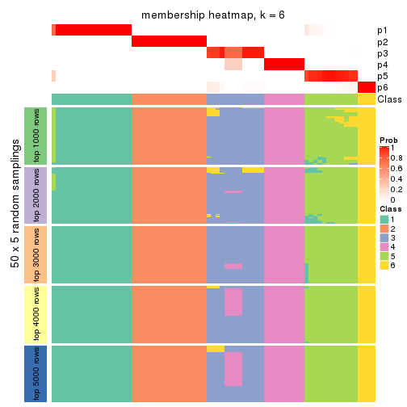
As soon as we have had the classes for columns, we can look for signatures which are significantly different between classes which can be candidate marks for certain classes. Following are the heatmaps for signatures.
Signature heatmaps where rows are scaled:
get_signatures(res, k = 2)

get_signatures(res, k = 3)
get_signatures(res, k = 4)
get_signatures(res, k = 5)
get_signatures(res, k = 6)
Signature heatmaps where rows are not scaled:
get_signatures(res, k = 2, scale_rows = FALSE)

get_signatures(res, k = 3, scale_rows = FALSE)
get_signatures(res, k = 4, scale_rows = FALSE)
get_signatures(res, k = 5, scale_rows = FALSE)
get_signatures(res, k = 6, scale_rows = FALSE)
Compare the overlap of signatures from different k:
compare_signatures(res)

get_signature() returns a data frame invisibly. TO get the list of signatures, the function
call should be assigned to a variable explicitly. In following code, if plot argument is set
to FALSE, no heatmap is plotted while only the differential analysis is performed.
# code only for demonstration
tb = get_signature(res, k = ..., plot = FALSE)
An example of the output of tb is:
#> which_row fdr mean_1 mean_2 scaled_mean_1 scaled_mean_2 km
#> 1 38 0.042760348 8.373488 9.131774 -0.5533452 0.5164555 1
#> 2 40 0.018707592 7.106213 8.469186 -0.6173731 0.5762149 1
#> 3 55 0.019134737 10.221463 11.207825 -0.6159697 0.5749050 1
#> 4 59 0.006059896 5.921854 7.869574 -0.6899429 0.6439467 1
#> 5 60 0.018055526 8.928898 10.211722 -0.6204761 0.5791110 1
#> 6 98 0.009384629 15.714769 14.887706 0.6635654 -0.6193277 2
...
The columns in tb are:
which_row: row indices corresponding to the input matrix.fdr: FDR for the differential test. mean_x: The mean value in group x.scaled_mean_x: The mean value in group x after rows are scaled.km: Row groups if k-means clustering is applied to rows.UMAP plot which shows how samples are separated.
dimension_reduction(res, k = 2, method = "UMAP")

dimension_reduction(res, k = 3, method = "UMAP")
dimension_reduction(res, k = 4, method = "UMAP")
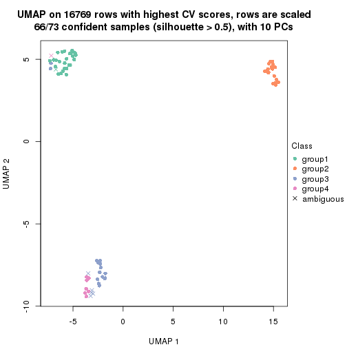
dimension_reduction(res, k = 5, method = "UMAP")
dimension_reduction(res, k = 6, method = "UMAP")
Following heatmap shows how subgroups are split when increasing k:
collect_classes(res)
If matrix rows can be associated to genes, consider to use functional_enrichment(res,
...) to perform function enrichment for the signature genes. See this vignette for more detailed explanations.
The object with results only for a single top-value method and a single partition method can be extracted as:
res = res_list["CV", "NMF"]
# you can also extract it by
# res = res_list["CV:NMF"]
A summary of res and all the functions that can be applied to it:
res
#> A 'ConsensusPartition' object with k = 2, 3, 4, 5, 6.
#> On a matrix with 16769 rows and 73 columns.
#> Top rows (1000, 2000, 3000, 4000, 5000) are extracted by 'CV' method.
#> Subgroups are detected by 'NMF' method.
#> Performed in total 1250 partitions by row resampling.
#> Best k for subgroups seems to be 6.
#>
#> Following methods can be applied to this 'ConsensusPartition' object:
#> [1] "cola_report" "collect_classes" "collect_plots"
#> [4] "collect_stats" "colnames" "compare_signatures"
#> [7] "consensus_heatmap" "dimension_reduction" "functional_enrichment"
#> [10] "get_anno_col" "get_anno" "get_classes"
#> [13] "get_consensus" "get_matrix" "get_membership"
#> [16] "get_param" "get_signatures" "get_stats"
#> [19] "is_best_k" "is_stable_k" "membership_heatmap"
#> [22] "ncol" "nrow" "plot_ecdf"
#> [25] "rownames" "select_partition_number" "show"
#> [28] "suggest_best_k" "test_to_known_factors"
collect_plots() function collects all the plots made from res for all k (number of partitions)
into one single page to provide an easy and fast comparison between different k.
collect_plots(res)
The plots are:
k and the heatmap of
predicted classes for each k.k.k.k.All the plots in panels can be made by individual functions and they are plotted later in this section.
select_partition_number() produces several plots showing different
statistics for choosing “optimized” k. There are following statistics:
k;k, the area increased is defined as \(A_k - A_{k-1}\).The detailed explanations of these statistics can be found in the cola vignette.
Generally speaking, lower PAC score, higher mean silhouette score or higher
concordance corresponds to better partition. Rand index and Jaccard index
measure how similar the current partition is compared to partition with k-1.
If they are too similar, we won't accept k is better than k-1.
select_partition_number(res)
The numeric values for all these statistics can be obtained by get_stats().
get_stats(res)
#> k 1-PAC mean_silhouette concordance area_increased Rand Jaccard
#> 2 2 1.000 1.000 1.000 0.3629 0.638 0.638
#> 3 3 1.000 0.983 0.990 0.8114 0.703 0.535
#> 4 4 0.978 0.962 0.968 0.1271 0.916 0.753
#> 5 5 0.925 0.855 0.928 0.0456 0.990 0.963
#> 6 6 0.902 0.833 0.899 0.0324 0.954 0.817
suggest_best_k() suggests the best \(k\) based on these statistics. The rules are as follows:
suggest_best_k(res)
#> [1] 6
#> attr(,"optional")
#> [1] 2 3 4
There is also optional best \(k\) = 2 3 4 that is worth to check.
Following shows the table of the partitions (You need to click the show/hide
code output link to see it). The membership matrix (columns with name p*)
is inferred by
clue::cl_consensus()
function with the SE method. Basically the value in the membership matrix
represents the probability to belong to a certain group. The finall class
label for an item is determined with the group with highest probability it
belongs to.
In get_classes() function, the entropy is calculated from the membership
matrix and the silhouette score is calculated from the consensus matrix.
cbind(get_classes(res, k = 2), get_membership(res, k = 2))
#> class entropy silhouette p1 p2
#> SRR2453324 1 0 1 1 0
#> SRR2453325 1 0 1 1 0
#> SRR2453323 2 0 1 0 1
#> SRR2453321 1 0 1 1 0
#> SRR2453322 1 0 1 1 0
#> SRR2453320 2 0 1 0 1
#> SRR2453319 2 0 1 0 1
#> SRR2453318 2 0 1 0 1
#> SRR2453317 1 0 1 1 0
#> SRR2453316 1 0 1 1 0
#> SRR2453315 1 0 1 1 0
#> SRR2453312 1 0 1 1 0
#> SRR2453313 1 0 1 1 0
#> SRR2453314 1 0 1 1 0
#> SRR2453311 2 0 1 0 1
#> SRR2453310 1 0 1 1 0
#> SRR2453309 2 0 1 0 1
#> SRR2453308 1 0 1 1 0
#> SRR2453307 2 0 1 0 1
#> SRR2453306 1 0 1 1 0
#> SRR2453305 2 0 1 0 1
#> SRR2453303 1 0 1 1 0
#> SRR2453304 1 0 1 1 0
#> SRR2453302 2 0 1 0 1
#> SRR2453301 1 0 1 1 0
#> SRR2453299 2 0 1 0 1
#> SRR2453300 2 0 1 0 1
#> SRR2453371 1 0 1 1 0
#> SRR2453370 1 0 1 1 0
#> SRR2453369 1 0 1 1 0
#> SRR2453366 1 0 1 1 0
#> SRR2453367 1 0 1 1 0
#> SRR2453368 1 0 1 1 0
#> SRR2453365 1 0 1 1 0
#> SRR2453364 1 0 1 1 0
#> SRR2453363 1 0 1 1 0
#> SRR2453362 1 0 1 1 0
#> SRR2453361 1 0 1 1 0
#> SRR2453359 1 0 1 1 0
#> SRR2453360 1 0 1 1 0
#> SRR2453357 1 0 1 1 0
#> SRR2453356 1 0 1 1 0
#> SRR2453358 1 0 1 1 0
#> SRR2453355 1 0 1 1 0
#> SRR2453354 1 0 1 1 0
#> SRR2453353 1 0 1 1 0
#> SRR2453352 1 0 1 1 0
#> SRR2453351 1 0 1 1 0
#> SRR2453350 1 0 1 1 0
#> SRR2453349 1 0 1 1 0
#> SRR2453348 1 0 1 1 0
#> SRR2453346 1 0 1 1 0
#> SRR2453347 1 0 1 1 0
#> SRR2453345 1 0 1 1 0
#> SRR2453343 1 0 1 1 0
#> SRR2453344 1 0 1 1 0
#> SRR2453341 2 0 1 0 1
#> SRR2453340 1 0 1 1 0
#> SRR2453339 1 0 1 1 0
#> SRR2453337 1 0 1 1 0
#> SRR2453338 1 0 1 1 0
#> SRR2453336 2 0 1 0 1
#> SRR2453335 2 0 1 0 1
#> SRR2453334 2 0 1 0 1
#> SRR2453332 2 0 1 0 1
#> SRR2453333 2 0 1 0 1
#> SRR2453342 1 0 1 1 0
#> SRR2453331 1 0 1 1 0
#> SRR2453329 1 0 1 1 0
#> SRR2453330 1 0 1 1 0
#> SRR2453328 1 0 1 1 0
#> SRR2453326 1 0 1 1 0
#> SRR2453327 1 0 1 1 0
cbind(get_classes(res, k = 3), get_membership(res, k = 3))
#> class entropy silhouette p1 p2 p3
#> SRR2453324 3 0.0000 0.990 0.000 0.000 1.000
#> SRR2453325 3 0.0000 0.990 0.000 0.000 1.000
#> SRR2453323 2 0.0424 0.997 0.008 0.992 0.000
#> SRR2453321 3 0.0000 0.990 0.000 0.000 1.000
#> SRR2453322 3 0.0000 0.990 0.000 0.000 1.000
#> SRR2453320 2 0.0424 0.997 0.008 0.992 0.000
#> SRR2453319 2 0.0424 0.997 0.008 0.992 0.000
#> SRR2453318 2 0.0424 0.997 0.008 0.992 0.000
#> SRR2453317 3 0.0000 0.990 0.000 0.000 1.000
#> SRR2453316 3 0.0000 0.990 0.000 0.000 1.000
#> SRR2453315 3 0.0000 0.990 0.000 0.000 1.000
#> SRR2453312 3 0.0000 0.990 0.000 0.000 1.000
#> SRR2453313 3 0.0000 0.990 0.000 0.000 1.000
#> SRR2453314 3 0.0000 0.990 0.000 0.000 1.000
#> SRR2453311 2 0.0000 0.998 0.000 1.000 0.000
#> SRR2453310 3 0.0000 0.990 0.000 0.000 1.000
#> SRR2453309 2 0.0000 0.998 0.000 1.000 0.000
#> SRR2453308 3 0.0000 0.990 0.000 0.000 1.000
#> SRR2453307 2 0.0424 0.997 0.008 0.992 0.000
#> SRR2453306 3 0.0000 0.990 0.000 0.000 1.000
#> SRR2453305 2 0.0424 0.997 0.008 0.992 0.000
#> SRR2453303 3 0.0000 0.990 0.000 0.000 1.000
#> SRR2453304 3 0.0000 0.990 0.000 0.000 1.000
#> SRR2453302 2 0.0424 0.997 0.008 0.992 0.000
#> SRR2453301 3 0.0000 0.990 0.000 0.000 1.000
#> SRR2453299 2 0.0000 0.998 0.000 1.000 0.000
#> SRR2453300 2 0.0000 0.998 0.000 1.000 0.000
#> SRR2453371 1 0.0424 0.990 0.992 0.000 0.008
#> SRR2453370 1 0.0424 0.990 0.992 0.000 0.008
#> SRR2453369 1 0.0424 0.990 0.992 0.000 0.008
#> SRR2453366 1 0.0424 0.990 0.992 0.000 0.008
#> SRR2453367 1 0.0424 0.990 0.992 0.000 0.008
#> SRR2453368 1 0.0424 0.990 0.992 0.000 0.008
#> SRR2453365 1 0.0424 0.990 0.992 0.000 0.008
#> SRR2453364 1 0.0424 0.990 0.992 0.000 0.008
#> SRR2453363 1 0.4887 0.711 0.772 0.000 0.228
#> SRR2453362 1 0.0424 0.990 0.992 0.000 0.008
#> SRR2453361 3 0.5216 0.639 0.260 0.000 0.740
#> SRR2453359 1 0.0424 0.990 0.992 0.000 0.008
#> SRR2453360 1 0.0424 0.990 0.992 0.000 0.008
#> SRR2453357 3 0.0000 0.990 0.000 0.000 1.000
#> SRR2453356 3 0.0000 0.990 0.000 0.000 1.000
#> SRR2453358 1 0.0424 0.990 0.992 0.000 0.008
#> SRR2453355 1 0.0424 0.990 0.992 0.000 0.008
#> SRR2453354 1 0.0424 0.990 0.992 0.000 0.008
#> SRR2453353 1 0.0424 0.990 0.992 0.000 0.008
#> SRR2453352 1 0.0424 0.990 0.992 0.000 0.008
#> SRR2453351 3 0.0424 0.982 0.008 0.000 0.992
#> SRR2453350 1 0.0424 0.990 0.992 0.000 0.008
#> SRR2453349 1 0.0424 0.990 0.992 0.000 0.008
#> SRR2453348 1 0.0424 0.990 0.992 0.000 0.008
#> SRR2453346 1 0.0424 0.990 0.992 0.000 0.008
#> SRR2453347 1 0.0424 0.990 0.992 0.000 0.008
#> SRR2453345 1 0.0424 0.990 0.992 0.000 0.008
#> SRR2453343 1 0.0747 0.981 0.984 0.000 0.016
#> SRR2453344 1 0.0424 0.990 0.992 0.000 0.008
#> SRR2453341 2 0.0000 0.998 0.000 1.000 0.000
#> SRR2453340 3 0.0000 0.990 0.000 0.000 1.000
#> SRR2453339 3 0.0000 0.990 0.000 0.000 1.000
#> SRR2453337 3 0.0000 0.990 0.000 0.000 1.000
#> SRR2453338 3 0.0000 0.990 0.000 0.000 1.000
#> SRR2453336 2 0.0000 0.998 0.000 1.000 0.000
#> SRR2453335 2 0.0000 0.998 0.000 1.000 0.000
#> SRR2453334 2 0.0000 0.998 0.000 1.000 0.000
#> SRR2453332 2 0.0000 0.998 0.000 1.000 0.000
#> SRR2453333 2 0.0000 0.998 0.000 1.000 0.000
#> SRR2453342 1 0.0424 0.990 0.992 0.000 0.008
#> SRR2453331 3 0.0000 0.990 0.000 0.000 1.000
#> SRR2453329 3 0.0000 0.990 0.000 0.000 1.000
#> SRR2453330 3 0.0000 0.990 0.000 0.000 1.000
#> SRR2453328 3 0.0000 0.990 0.000 0.000 1.000
#> SRR2453326 3 0.0000 0.990 0.000 0.000 1.000
#> SRR2453327 3 0.0000 0.990 0.000 0.000 1.000
cbind(get_classes(res, k = 4), get_membership(res, k = 4))
#> class entropy silhouette p1 p2 p3 p4
#> SRR2453324 3 0.1211 0.947 0.000 0.000 0.960 0.040
#> SRR2453325 3 0.1389 0.941 0.000 0.000 0.952 0.048
#> SRR2453323 2 0.1792 0.967 0.000 0.932 0.000 0.068
#> SRR2453321 3 0.0000 0.963 0.000 0.000 1.000 0.000
#> SRR2453322 3 0.0000 0.963 0.000 0.000 1.000 0.000
#> SRR2453320 2 0.1792 0.967 0.000 0.932 0.000 0.068
#> SRR2453319 2 0.1792 0.967 0.000 0.932 0.000 0.068
#> SRR2453318 2 0.1637 0.969 0.000 0.940 0.000 0.060
#> SRR2453317 3 0.1118 0.950 0.000 0.000 0.964 0.036
#> SRR2453316 3 0.1118 0.950 0.000 0.000 0.964 0.036
#> SRR2453315 3 0.1118 0.950 0.000 0.000 0.964 0.036
#> SRR2453312 4 0.1792 1.000 0.000 0.000 0.068 0.932
#> SRR2453313 4 0.1792 1.000 0.000 0.000 0.068 0.932
#> SRR2453314 4 0.1792 1.000 0.000 0.000 0.068 0.932
#> SRR2453311 2 0.0000 0.978 0.000 1.000 0.000 0.000
#> SRR2453310 4 0.1792 1.000 0.000 0.000 0.068 0.932
#> SRR2453309 2 0.0000 0.978 0.000 1.000 0.000 0.000
#> SRR2453308 3 0.0000 0.963 0.000 0.000 1.000 0.000
#> SRR2453307 2 0.1792 0.967 0.000 0.932 0.000 0.068
#> SRR2453306 3 0.4477 0.531 0.000 0.000 0.688 0.312
#> SRR2453305 2 0.1792 0.967 0.000 0.932 0.000 0.068
#> SRR2453303 3 0.0000 0.963 0.000 0.000 1.000 0.000
#> SRR2453304 3 0.0000 0.963 0.000 0.000 1.000 0.000
#> SRR2453302 2 0.1792 0.967 0.000 0.932 0.000 0.068
#> SRR2453301 4 0.1792 1.000 0.000 0.000 0.068 0.932
#> SRR2453299 2 0.0000 0.978 0.000 1.000 0.000 0.000
#> SRR2453300 2 0.0000 0.978 0.000 1.000 0.000 0.000
#> SRR2453371 1 0.0000 0.982 1.000 0.000 0.000 0.000
#> SRR2453370 1 0.0000 0.982 1.000 0.000 0.000 0.000
#> SRR2453369 1 0.0000 0.982 1.000 0.000 0.000 0.000
#> SRR2453366 1 0.0000 0.982 1.000 0.000 0.000 0.000
#> SRR2453367 1 0.0000 0.982 1.000 0.000 0.000 0.000
#> SRR2453368 1 0.0000 0.982 1.000 0.000 0.000 0.000
#> SRR2453365 1 0.0000 0.982 1.000 0.000 0.000 0.000
#> SRR2453364 1 0.0000 0.982 1.000 0.000 0.000 0.000
#> SRR2453363 1 0.4843 0.335 0.604 0.000 0.396 0.000
#> SRR2453362 1 0.0000 0.982 1.000 0.000 0.000 0.000
#> SRR2453361 3 0.0921 0.932 0.028 0.000 0.972 0.000
#> SRR2453359 1 0.0000 0.982 1.000 0.000 0.000 0.000
#> SRR2453360 1 0.0000 0.982 1.000 0.000 0.000 0.000
#> SRR2453357 3 0.0000 0.963 0.000 0.000 1.000 0.000
#> SRR2453356 3 0.0000 0.963 0.000 0.000 1.000 0.000
#> SRR2453358 1 0.0000 0.982 1.000 0.000 0.000 0.000
#> SRR2453355 1 0.0000 0.982 1.000 0.000 0.000 0.000
#> SRR2453354 1 0.0000 0.982 1.000 0.000 0.000 0.000
#> SRR2453353 1 0.0000 0.982 1.000 0.000 0.000 0.000
#> SRR2453352 1 0.0000 0.982 1.000 0.000 0.000 0.000
#> SRR2453351 3 0.0000 0.963 0.000 0.000 1.000 0.000
#> SRR2453350 1 0.0000 0.982 1.000 0.000 0.000 0.000
#> SRR2453349 1 0.0000 0.982 1.000 0.000 0.000 0.000
#> SRR2453348 1 0.0000 0.982 1.000 0.000 0.000 0.000
#> SRR2453346 1 0.0000 0.982 1.000 0.000 0.000 0.000
#> SRR2453347 1 0.0000 0.982 1.000 0.000 0.000 0.000
#> SRR2453345 1 0.0000 0.982 1.000 0.000 0.000 0.000
#> SRR2453343 1 0.1118 0.947 0.964 0.000 0.036 0.000
#> SRR2453344 1 0.0000 0.982 1.000 0.000 0.000 0.000
#> SRR2453341 2 0.0000 0.978 0.000 1.000 0.000 0.000
#> SRR2453340 4 0.1792 1.000 0.000 0.000 0.068 0.932
#> SRR2453339 4 0.1792 1.000 0.000 0.000 0.068 0.932
#> SRR2453337 4 0.1792 1.000 0.000 0.000 0.068 0.932
#> SRR2453338 4 0.1792 1.000 0.000 0.000 0.068 0.932
#> SRR2453336 2 0.0000 0.978 0.000 1.000 0.000 0.000
#> SRR2453335 2 0.0000 0.978 0.000 1.000 0.000 0.000
#> SRR2453334 2 0.0000 0.978 0.000 1.000 0.000 0.000
#> SRR2453332 2 0.0000 0.978 0.000 1.000 0.000 0.000
#> SRR2453333 2 0.0000 0.978 0.000 1.000 0.000 0.000
#> SRR2453342 1 0.0000 0.982 1.000 0.000 0.000 0.000
#> SRR2453331 4 0.1792 1.000 0.000 0.000 0.068 0.932
#> SRR2453329 4 0.1792 1.000 0.000 0.000 0.068 0.932
#> SRR2453330 4 0.1792 1.000 0.000 0.000 0.068 0.932
#> SRR2453328 4 0.1792 1.000 0.000 0.000 0.068 0.932
#> SRR2453326 3 0.0000 0.963 0.000 0.000 1.000 0.000
#> SRR2453327 3 0.0000 0.963 0.000 0.000 1.000 0.000
cbind(get_classes(res, k = 5), get_membership(res, k = 5))
#> class entropy silhouette p1 p2 p3 p4 p5
#> SRR2453324 3 0.1106 0.842 0.000 0.000 0.964 0.012 0.024
#> SRR2453325 3 0.1211 0.840 0.000 0.000 0.960 0.016 0.024
#> SRR2453323 2 0.3305 0.855 0.000 0.776 0.000 0.000 0.224
#> SRR2453321 3 0.0162 0.848 0.000 0.000 0.996 0.000 0.004
#> SRR2453322 3 0.0162 0.848 0.000 0.000 0.996 0.000 0.004
#> SRR2453320 2 0.3305 0.855 0.000 0.776 0.000 0.000 0.224
#> SRR2453319 2 0.3305 0.855 0.000 0.776 0.000 0.000 0.224
#> SRR2453318 2 0.2891 0.869 0.000 0.824 0.000 0.000 0.176
#> SRR2453317 3 0.1668 0.830 0.000 0.000 0.940 0.032 0.028
#> SRR2453316 3 0.1399 0.838 0.000 0.000 0.952 0.020 0.028
#> SRR2453315 3 0.1493 0.835 0.000 0.000 0.948 0.024 0.028
#> SRR2453312 4 0.0162 0.995 0.000 0.000 0.000 0.996 0.004
#> SRR2453313 4 0.0404 0.991 0.000 0.000 0.000 0.988 0.012
#> SRR2453314 4 0.0162 0.995 0.000 0.000 0.000 0.996 0.004
#> SRR2453311 2 0.0162 0.900 0.000 0.996 0.000 0.000 0.004
#> SRR2453310 4 0.0162 0.995 0.000 0.000 0.000 0.996 0.004
#> SRR2453309 2 0.0162 0.900 0.000 0.996 0.000 0.000 0.004
#> SRR2453308 3 0.0510 0.847 0.000 0.000 0.984 0.000 0.016
#> SRR2453307 2 0.3305 0.855 0.000 0.776 0.000 0.000 0.224
#> SRR2453306 3 0.2124 0.806 0.000 0.000 0.916 0.056 0.028
#> SRR2453305 2 0.3305 0.855 0.000 0.776 0.000 0.000 0.224
#> SRR2453303 3 0.2074 0.806 0.000 0.000 0.896 0.000 0.104
#> SRR2453304 3 0.2329 0.792 0.000 0.000 0.876 0.000 0.124
#> SRR2453302 2 0.3305 0.855 0.000 0.776 0.000 0.000 0.224
#> SRR2453301 4 0.0162 0.995 0.000 0.000 0.000 0.996 0.004
#> SRR2453299 2 0.0000 0.901 0.000 1.000 0.000 0.000 0.000
#> SRR2453300 2 0.0000 0.901 0.000 1.000 0.000 0.000 0.000
#> SRR2453371 1 0.2966 0.745 0.816 0.000 0.000 0.000 0.184
#> SRR2453370 1 0.0000 0.933 1.000 0.000 0.000 0.000 0.000
#> SRR2453369 1 0.0880 0.914 0.968 0.000 0.000 0.000 0.032
#> SRR2453366 1 0.0000 0.933 1.000 0.000 0.000 0.000 0.000
#> SRR2453367 1 0.1671 0.876 0.924 0.000 0.000 0.000 0.076
#> SRR2453368 1 0.0162 0.931 0.996 0.000 0.000 0.000 0.004
#> SRR2453365 1 0.0000 0.933 1.000 0.000 0.000 0.000 0.000
#> SRR2453364 1 0.0000 0.933 1.000 0.000 0.000 0.000 0.000
#> SRR2453363 5 0.4929 0.000 0.136 0.000 0.148 0.000 0.716
#> SRR2453362 1 0.4310 0.314 0.604 0.000 0.004 0.000 0.392
#> SRR2453361 3 0.4540 0.501 0.020 0.000 0.640 0.000 0.340
#> SRR2453359 1 0.0162 0.931 0.996 0.000 0.000 0.000 0.004
#> SRR2453360 1 0.0000 0.933 1.000 0.000 0.000 0.000 0.000
#> SRR2453357 3 0.3999 0.541 0.000 0.000 0.656 0.000 0.344
#> SRR2453356 3 0.3966 0.555 0.000 0.000 0.664 0.000 0.336
#> SRR2453358 1 0.0609 0.922 0.980 0.000 0.000 0.000 0.020
#> SRR2453355 1 0.0000 0.933 1.000 0.000 0.000 0.000 0.000
#> SRR2453354 1 0.0000 0.933 1.000 0.000 0.000 0.000 0.000
#> SRR2453353 1 0.1197 0.897 0.952 0.000 0.000 0.000 0.048
#> SRR2453352 1 0.4310 0.314 0.604 0.000 0.004 0.000 0.392
#> SRR2453351 3 0.3949 0.561 0.000 0.000 0.668 0.000 0.332
#> SRR2453350 1 0.0000 0.933 1.000 0.000 0.000 0.000 0.000
#> SRR2453349 1 0.0000 0.933 1.000 0.000 0.000 0.000 0.000
#> SRR2453348 1 0.0000 0.933 1.000 0.000 0.000 0.000 0.000
#> SRR2453346 1 0.0000 0.933 1.000 0.000 0.000 0.000 0.000
#> SRR2453347 1 0.0000 0.933 1.000 0.000 0.000 0.000 0.000
#> SRR2453345 1 0.2674 0.792 0.868 0.000 0.012 0.000 0.120
#> SRR2453343 1 0.1341 0.880 0.944 0.000 0.056 0.000 0.000
#> SRR2453344 1 0.0000 0.933 1.000 0.000 0.000 0.000 0.000
#> SRR2453341 2 0.1908 0.835 0.000 0.908 0.000 0.000 0.092
#> SRR2453340 4 0.0000 0.996 0.000 0.000 0.000 1.000 0.000
#> SRR2453339 4 0.0290 0.991 0.000 0.000 0.000 0.992 0.008
#> SRR2453337 4 0.0162 0.995 0.000 0.000 0.000 0.996 0.004
#> SRR2453338 4 0.0162 0.995 0.000 0.000 0.000 0.996 0.004
#> SRR2453336 2 0.0000 0.901 0.000 1.000 0.000 0.000 0.000
#> SRR2453335 2 0.0162 0.900 0.000 0.996 0.000 0.000 0.004
#> SRR2453334 2 0.0162 0.901 0.000 0.996 0.000 0.000 0.004
#> SRR2453332 2 0.0000 0.901 0.000 1.000 0.000 0.000 0.000
#> SRR2453333 2 0.0000 0.901 0.000 1.000 0.000 0.000 0.000
#> SRR2453342 1 0.0000 0.933 1.000 0.000 0.000 0.000 0.000
#> SRR2453331 4 0.0000 0.996 0.000 0.000 0.000 1.000 0.000
#> SRR2453329 4 0.0000 0.996 0.000 0.000 0.000 1.000 0.000
#> SRR2453330 4 0.0000 0.996 0.000 0.000 0.000 1.000 0.000
#> SRR2453328 4 0.0000 0.996 0.000 0.000 0.000 1.000 0.000
#> SRR2453326 3 0.0290 0.848 0.000 0.000 0.992 0.000 0.008
#> SRR2453327 3 0.0404 0.848 0.000 0.000 0.988 0.000 0.012
cbind(get_classes(res, k = 6), get_membership(res, k = 6))
#> class entropy silhouette p1 p2 p3 p4 p5 p6
#> SRR2453324 3 0.0713 0.912 0.000 0.000 0.972 0.028 0.000 0.000
#> SRR2453325 3 0.0713 0.912 0.000 0.000 0.972 0.028 0.000 0.000
#> SRR2453323 2 0.2672 0.702 0.000 0.868 0.000 0.000 0.080 0.052
#> SRR2453321 3 0.1219 0.912 0.000 0.000 0.948 0.004 0.048 0.000
#> SRR2453322 3 0.1349 0.909 0.000 0.000 0.940 0.004 0.056 0.000
#> SRR2453320 2 0.2672 0.702 0.000 0.868 0.000 0.000 0.080 0.052
#> SRR2453319 2 0.2672 0.702 0.000 0.868 0.000 0.000 0.080 0.052
#> SRR2453318 2 0.0000 0.734 0.000 1.000 0.000 0.000 0.000 0.000
#> SRR2453317 3 0.0935 0.909 0.000 0.000 0.964 0.032 0.000 0.004
#> SRR2453316 3 0.0935 0.909 0.000 0.000 0.964 0.032 0.000 0.004
#> SRR2453315 3 0.0935 0.909 0.000 0.000 0.964 0.032 0.000 0.004
#> SRR2453312 4 0.0692 0.974 0.000 0.000 0.000 0.976 0.020 0.004
#> SRR2453313 4 0.1856 0.938 0.000 0.000 0.000 0.920 0.032 0.048
#> SRR2453314 4 0.0692 0.974 0.000 0.000 0.000 0.976 0.020 0.004
#> SRR2453311 2 0.3126 0.779 0.000 0.752 0.000 0.000 0.000 0.248
#> SRR2453310 4 0.0692 0.974 0.000 0.000 0.000 0.976 0.020 0.004
#> SRR2453309 2 0.3126 0.779 0.000 0.752 0.000 0.000 0.000 0.248
#> SRR2453308 3 0.1152 0.913 0.000 0.000 0.952 0.004 0.044 0.000
#> SRR2453307 2 0.2672 0.702 0.000 0.868 0.000 0.000 0.080 0.052
#> SRR2453306 3 0.1010 0.905 0.000 0.000 0.960 0.036 0.000 0.004
#> SRR2453305 2 0.2672 0.702 0.000 0.868 0.000 0.000 0.080 0.052
#> SRR2453303 3 0.2772 0.781 0.000 0.000 0.816 0.004 0.180 0.000
#> SRR2453304 3 0.3052 0.724 0.000 0.000 0.780 0.004 0.216 0.000
#> SRR2453302 2 0.2672 0.702 0.000 0.868 0.000 0.000 0.080 0.052
#> SRR2453301 4 0.0692 0.974 0.000 0.000 0.000 0.976 0.020 0.004
#> SRR2453299 2 0.3101 0.780 0.000 0.756 0.000 0.000 0.000 0.244
#> SRR2453300 2 0.3076 0.780 0.000 0.760 0.000 0.000 0.000 0.240
#> SRR2453371 1 0.4738 0.391 0.640 0.000 0.000 0.000 0.084 0.276
#> SRR2453370 1 0.0000 0.946 1.000 0.000 0.000 0.000 0.000 0.000
#> SRR2453369 1 0.1082 0.919 0.956 0.000 0.000 0.000 0.040 0.004
#> SRR2453366 1 0.0000 0.946 1.000 0.000 0.000 0.000 0.000 0.000
#> SRR2453367 1 0.3252 0.765 0.824 0.000 0.000 0.000 0.068 0.108
#> SRR2453368 1 0.0458 0.940 0.984 0.000 0.000 0.000 0.000 0.016
#> SRR2453365 1 0.0000 0.946 1.000 0.000 0.000 0.000 0.000 0.000
#> SRR2453364 1 0.0000 0.946 1.000 0.000 0.000 0.000 0.000 0.000
#> SRR2453363 5 0.4219 0.350 0.008 0.000 0.012 0.000 0.620 0.360
#> SRR2453362 6 0.5304 0.430 0.248 0.000 0.024 0.000 0.096 0.632
#> SRR2453361 5 0.3141 0.858 0.012 0.000 0.200 0.000 0.788 0.000
#> SRR2453359 1 0.0547 0.938 0.980 0.000 0.000 0.000 0.000 0.020
#> SRR2453360 1 0.0000 0.946 1.000 0.000 0.000 0.000 0.000 0.000
#> SRR2453357 5 0.2915 0.855 0.000 0.000 0.184 0.000 0.808 0.008
#> SRR2453356 5 0.2994 0.853 0.000 0.000 0.208 0.004 0.788 0.000
#> SRR2453358 1 0.1461 0.908 0.940 0.000 0.000 0.000 0.016 0.044
#> SRR2453355 1 0.0000 0.946 1.000 0.000 0.000 0.000 0.000 0.000
#> SRR2453354 1 0.0146 0.945 0.996 0.000 0.000 0.000 0.000 0.004
#> SRR2453353 1 0.1444 0.887 0.928 0.000 0.000 0.000 0.072 0.000
#> SRR2453352 6 0.5304 0.430 0.248 0.000 0.024 0.000 0.096 0.632
#> SRR2453351 5 0.3213 0.857 0.008 0.000 0.204 0.004 0.784 0.000
#> SRR2453350 1 0.0000 0.946 1.000 0.000 0.000 0.000 0.000 0.000
#> SRR2453349 1 0.0260 0.944 0.992 0.000 0.000 0.000 0.000 0.008
#> SRR2453348 1 0.0260 0.944 0.992 0.000 0.000 0.000 0.000 0.008
#> SRR2453346 1 0.0000 0.946 1.000 0.000 0.000 0.000 0.000 0.000
#> SRR2453347 1 0.0000 0.946 1.000 0.000 0.000 0.000 0.000 0.000
#> SRR2453345 1 0.2762 0.722 0.804 0.000 0.000 0.000 0.196 0.000
#> SRR2453343 1 0.1382 0.910 0.948 0.000 0.036 0.000 0.008 0.008
#> SRR2453344 1 0.0146 0.945 0.996 0.000 0.000 0.000 0.000 0.004
#> SRR2453341 6 0.4126 -0.526 0.000 0.480 0.004 0.000 0.004 0.512
#> SRR2453340 4 0.0603 0.974 0.000 0.000 0.016 0.980 0.000 0.004
#> SRR2453339 4 0.0935 0.963 0.000 0.000 0.032 0.964 0.000 0.004
#> SRR2453337 4 0.0603 0.974 0.000 0.000 0.016 0.980 0.000 0.004
#> SRR2453338 4 0.0405 0.977 0.000 0.000 0.008 0.988 0.000 0.004
#> SRR2453336 2 0.3126 0.779 0.000 0.752 0.000 0.000 0.000 0.248
#> SRR2453335 2 0.3126 0.779 0.000 0.752 0.000 0.000 0.000 0.248
#> SRR2453334 2 0.2996 0.779 0.000 0.772 0.000 0.000 0.000 0.228
#> SRR2453332 2 0.3126 0.779 0.000 0.752 0.000 0.000 0.000 0.248
#> SRR2453333 2 0.3126 0.779 0.000 0.752 0.000 0.000 0.000 0.248
#> SRR2453342 1 0.0000 0.946 1.000 0.000 0.000 0.000 0.000 0.000
#> SRR2453331 4 0.0508 0.976 0.000 0.000 0.012 0.984 0.000 0.004
#> SRR2453329 4 0.0000 0.979 0.000 0.000 0.000 1.000 0.000 0.000
#> SRR2453330 4 0.0146 0.978 0.000 0.000 0.000 0.996 0.000 0.004
#> SRR2453328 4 0.0000 0.979 0.000 0.000 0.000 1.000 0.000 0.000
#> SRR2453326 3 0.1411 0.908 0.000 0.000 0.936 0.004 0.060 0.000
#> SRR2453327 3 0.1411 0.908 0.000 0.000 0.936 0.004 0.060 0.000
Heatmaps for the consensus matrix. It visualizes the probability of two samples to be in a same group.
consensus_heatmap(res, k = 2)

consensus_heatmap(res, k = 3)
consensus_heatmap(res, k = 4)
consensus_heatmap(res, k = 5)
consensus_heatmap(res, k = 6)
Heatmaps for the membership of samples in all partitions to see how consistent they are:
membership_heatmap(res, k = 2)

membership_heatmap(res, k = 3)
membership_heatmap(res, k = 4)

membership_heatmap(res, k = 5)
membership_heatmap(res, k = 6)
As soon as we have had the classes for columns, we can look for signatures which are significantly different between classes which can be candidate marks for certain classes. Following are the heatmaps for signatures.
Signature heatmaps where rows are scaled:
get_signatures(res, k = 2)

get_signatures(res, k = 3)
get_signatures(res, k = 4)
get_signatures(res, k = 5)
get_signatures(res, k = 6)
Signature heatmaps where rows are not scaled:
get_signatures(res, k = 2, scale_rows = FALSE)

get_signatures(res, k = 3, scale_rows = FALSE)
get_signatures(res, k = 4, scale_rows = FALSE)
get_signatures(res, k = 5, scale_rows = FALSE)
get_signatures(res, k = 6, scale_rows = FALSE)
Compare the overlap of signatures from different k:
compare_signatures(res)
get_signature() returns a data frame invisibly. TO get the list of signatures, the function
call should be assigned to a variable explicitly. In following code, if plot argument is set
to FALSE, no heatmap is plotted while only the differential analysis is performed.
# code only for demonstration
tb = get_signature(res, k = ..., plot = FALSE)
An example of the output of tb is:
#> which_row fdr mean_1 mean_2 scaled_mean_1 scaled_mean_2 km
#> 1 38 0.042760348 8.373488 9.131774 -0.5533452 0.5164555 1
#> 2 40 0.018707592 7.106213 8.469186 -0.6173731 0.5762149 1
#> 3 55 0.019134737 10.221463 11.207825 -0.6159697 0.5749050 1
#> 4 59 0.006059896 5.921854 7.869574 -0.6899429 0.6439467 1
#> 5 60 0.018055526 8.928898 10.211722 -0.6204761 0.5791110 1
#> 6 98 0.009384629 15.714769 14.887706 0.6635654 -0.6193277 2
...
The columns in tb are:
which_row: row indices corresponding to the input matrix.fdr: FDR for the differential test. mean_x: The mean value in group x.scaled_mean_x: The mean value in group x after rows are scaled.km: Row groups if k-means clustering is applied to rows.UMAP plot which shows how samples are separated.
dimension_reduction(res, k = 2, method = "UMAP")

dimension_reduction(res, k = 3, method = "UMAP")

dimension_reduction(res, k = 4, method = "UMAP")
dimension_reduction(res, k = 5, method = "UMAP")
dimension_reduction(res, k = 6, method = "UMAP")
Following heatmap shows how subgroups are split when increasing k:
collect_classes(res)
If matrix rows can be associated to genes, consider to use functional_enrichment(res,
...) to perform function enrichment for the signature genes. See this vignette for more detailed explanations.
The object with results only for a single top-value method and a single partition method can be extracted as:
res = res_list["MAD", "hclust"]
# you can also extract it by
# res = res_list["MAD:hclust"]
A summary of res and all the functions that can be applied to it:
res
#> A 'ConsensusPartition' object with k = 2, 3, 4, 5, 6.
#> On a matrix with 16769 rows and 73 columns.
#> Top rows (1000, 2000, 3000, 4000, 5000) are extracted by 'MAD' method.
#> Subgroups are detected by 'hclust' method.
#> Performed in total 1250 partitions by row resampling.
#> Best k for subgroups seems to be 6.
#>
#> Following methods can be applied to this 'ConsensusPartition' object:
#> [1] "cola_report" "collect_classes" "collect_plots"
#> [4] "collect_stats" "colnames" "compare_signatures"
#> [7] "consensus_heatmap" "dimension_reduction" "functional_enrichment"
#> [10] "get_anno_col" "get_anno" "get_classes"
#> [13] "get_consensus" "get_matrix" "get_membership"
#> [16] "get_param" "get_signatures" "get_stats"
#> [19] "is_best_k" "is_stable_k" "membership_heatmap"
#> [22] "ncol" "nrow" "plot_ecdf"
#> [25] "rownames" "select_partition_number" "show"
#> [28] "suggest_best_k" "test_to_known_factors"
collect_plots() function collects all the plots made from res for all k (number of partitions)
into one single page to provide an easy and fast comparison between different k.
collect_plots(res)
The plots are:
k and the heatmap of
predicted classes for each k.k.k.k.All the plots in panels can be made by individual functions and they are plotted later in this section.
select_partition_number() produces several plots showing different
statistics for choosing “optimized” k. There are following statistics:
k;k, the area increased is defined as \(A_k - A_{k-1}\).The detailed explanations of these statistics can be found in the cola vignette.
Generally speaking, lower PAC score, higher mean silhouette score or higher
concordance corresponds to better partition. Rand index and Jaccard index
measure how similar the current partition is compared to partition with k-1.
If they are too similar, we won't accept k is better than k-1.
select_partition_number(res)
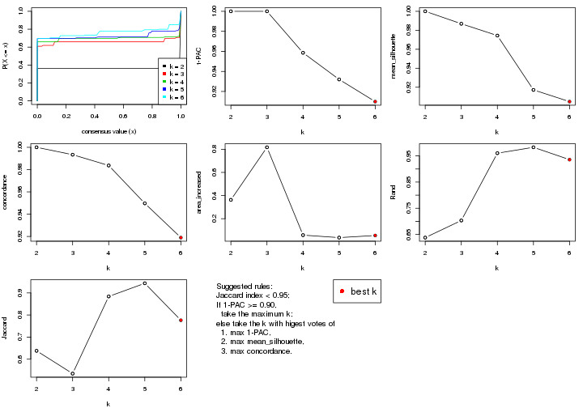
The numeric values for all these statistics can be obtained by get_stats().
get_stats(res)
#> k 1-PAC mean_silhouette concordance area_increased Rand Jaccard
#> 2 2 1.000 1.000 1.000 0.3629 0.638 0.638
#> 3 3 1.000 0.987 0.993 0.8169 0.703 0.535
#> 4 4 0.959 0.974 0.984 0.0580 0.960 0.884
#> 5 5 0.932 0.917 0.950 0.0365 0.983 0.943
#> 6 6 0.910 0.905 0.919 0.0548 0.936 0.776
suggest_best_k() suggests the best \(k\) based on these statistics. The rules are as follows:
suggest_best_k(res)
#> [1] 6
#> attr(,"optional")
#> [1] 2 3 4 5
There is also optional best \(k\) = 2 3 4 5 that is worth to check.
Following shows the table of the partitions (You need to click the show/hide
code output link to see it). The membership matrix (columns with name p*)
is inferred by
clue::cl_consensus()
function with the SE method. Basically the value in the membership matrix
represents the probability to belong to a certain group. The finall class
label for an item is determined with the group with highest probability it
belongs to.
In get_classes() function, the entropy is calculated from the membership
matrix and the silhouette score is calculated from the consensus matrix.
cbind(get_classes(res, k = 2), get_membership(res, k = 2))
#> class entropy silhouette p1 p2
#> SRR2453324 1 0 1 1 0
#> SRR2453325 1 0 1 1 0
#> SRR2453323 2 0 1 0 1
#> SRR2453321 1 0 1 1 0
#> SRR2453322 1 0 1 1 0
#> SRR2453320 2 0 1 0 1
#> SRR2453319 2 0 1 0 1
#> SRR2453318 2 0 1 0 1
#> SRR2453317 1 0 1 1 0
#> SRR2453316 1 0 1 1 0
#> SRR2453315 1 0 1 1 0
#> SRR2453312 1 0 1 1 0
#> SRR2453313 1 0 1 1 0
#> SRR2453314 1 0 1 1 0
#> SRR2453311 2 0 1 0 1
#> SRR2453310 1 0 1 1 0
#> SRR2453309 2 0 1 0 1
#> SRR2453308 1 0 1 1 0
#> SRR2453307 2 0 1 0 1
#> SRR2453306 1 0 1 1 0
#> SRR2453305 2 0 1 0 1
#> SRR2453303 1 0 1 1 0
#> SRR2453304 1 0 1 1 0
#> SRR2453302 2 0 1 0 1
#> SRR2453301 1 0 1 1 0
#> SRR2453299 2 0 1 0 1
#> SRR2453300 2 0 1 0 1
#> SRR2453371 1 0 1 1 0
#> SRR2453370 1 0 1 1 0
#> SRR2453369 1 0 1 1 0
#> SRR2453366 1 0 1 1 0
#> SRR2453367 1 0 1 1 0
#> SRR2453368 1 0 1 1 0
#> SRR2453365 1 0 1 1 0
#> SRR2453364 1 0 1 1 0
#> SRR2453363 1 0 1 1 0
#> SRR2453362 1 0 1 1 0
#> SRR2453361 1 0 1 1 0
#> SRR2453359 1 0 1 1 0
#> SRR2453360 1 0 1 1 0
#> SRR2453357 1 0 1 1 0
#> SRR2453356 1 0 1 1 0
#> SRR2453358 1 0 1 1 0
#> SRR2453355 1 0 1 1 0
#> SRR2453354 1 0 1 1 0
#> SRR2453353 1 0 1 1 0
#> SRR2453352 1 0 1 1 0
#> SRR2453351 1 0 1 1 0
#> SRR2453350 1 0 1 1 0
#> SRR2453349 1 0 1 1 0
#> SRR2453348 1 0 1 1 0
#> SRR2453346 1 0 1 1 0
#> SRR2453347 1 0 1 1 0
#> SRR2453345 1 0 1 1 0
#> SRR2453343 1 0 1 1 0
#> SRR2453344 1 0 1 1 0
#> SRR2453341 2 0 1 0 1
#> SRR2453340 1 0 1 1 0
#> SRR2453339 1 0 1 1 0
#> SRR2453337 1 0 1 1 0
#> SRR2453338 1 0 1 1 0
#> SRR2453336 2 0 1 0 1
#> SRR2453335 2 0 1 0 1
#> SRR2453334 2 0 1 0 1
#> SRR2453332 2 0 1 0 1
#> SRR2453333 2 0 1 0 1
#> SRR2453342 1 0 1 1 0
#> SRR2453331 1 0 1 1 0
#> SRR2453329 1 0 1 1 0
#> SRR2453330 1 0 1 1 0
#> SRR2453328 1 0 1 1 0
#> SRR2453326 1 0 1 1 0
#> SRR2453327 1 0 1 1 0
cbind(get_classes(res, k = 3), get_membership(res, k = 3))
#> class entropy silhouette p1 p2 p3
#> SRR2453324 3 0.000 1.000 0.000 0 1.000
#> SRR2453325 3 0.000 1.000 0.000 0 1.000
#> SRR2453323 2 0.000 1.000 0.000 1 0.000
#> SRR2453321 3 0.000 1.000 0.000 0 1.000
#> SRR2453322 3 0.000 1.000 0.000 0 1.000
#> SRR2453320 2 0.000 1.000 0.000 1 0.000
#> SRR2453319 2 0.000 1.000 0.000 1 0.000
#> SRR2453318 2 0.000 1.000 0.000 1 0.000
#> SRR2453317 3 0.000 1.000 0.000 0 1.000
#> SRR2453316 3 0.000 1.000 0.000 0 1.000
#> SRR2453315 3 0.000 1.000 0.000 0 1.000
#> SRR2453312 3 0.000 1.000 0.000 0 1.000
#> SRR2453313 3 0.000 1.000 0.000 0 1.000
#> SRR2453314 3 0.000 1.000 0.000 0 1.000
#> SRR2453311 2 0.000 1.000 0.000 1 0.000
#> SRR2453310 3 0.000 1.000 0.000 0 1.000
#> SRR2453309 2 0.000 1.000 0.000 1 0.000
#> SRR2453308 3 0.000 1.000 0.000 0 1.000
#> SRR2453307 2 0.000 1.000 0.000 1 0.000
#> SRR2453306 3 0.000 1.000 0.000 0 1.000
#> SRR2453305 2 0.000 1.000 0.000 1 0.000
#> SRR2453303 3 0.000 1.000 0.000 0 1.000
#> SRR2453304 3 0.000 1.000 0.000 0 1.000
#> SRR2453302 2 0.000 1.000 0.000 1 0.000
#> SRR2453301 3 0.000 1.000 0.000 0 1.000
#> SRR2453299 2 0.000 1.000 0.000 1 0.000
#> SRR2453300 2 0.000 1.000 0.000 1 0.000
#> SRR2453371 1 0.000 0.982 1.000 0 0.000
#> SRR2453370 1 0.000 0.982 1.000 0 0.000
#> SRR2453369 1 0.000 0.982 1.000 0 0.000
#> SRR2453366 1 0.000 0.982 1.000 0 0.000
#> SRR2453367 1 0.000 0.982 1.000 0 0.000
#> SRR2453368 1 0.000 0.982 1.000 0 0.000
#> SRR2453365 1 0.000 0.982 1.000 0 0.000
#> SRR2453364 1 0.000 0.982 1.000 0 0.000
#> SRR2453363 1 0.141 0.954 0.964 0 0.036
#> SRR2453362 1 0.000 0.982 1.000 0 0.000
#> SRR2453361 1 0.319 0.886 0.888 0 0.112
#> SRR2453359 1 0.000 0.982 1.000 0 0.000
#> SRR2453360 1 0.000 0.982 1.000 0 0.000
#> SRR2453357 1 0.319 0.886 0.888 0 0.112
#> SRR2453356 1 0.319 0.886 0.888 0 0.112
#> SRR2453358 1 0.000 0.982 1.000 0 0.000
#> SRR2453355 1 0.000 0.982 1.000 0 0.000
#> SRR2453354 1 0.000 0.982 1.000 0 0.000
#> SRR2453353 1 0.000 0.982 1.000 0 0.000
#> SRR2453352 1 0.000 0.982 1.000 0 0.000
#> SRR2453351 1 0.319 0.886 0.888 0 0.112
#> SRR2453350 1 0.000 0.982 1.000 0 0.000
#> SRR2453349 1 0.000 0.982 1.000 0 0.000
#> SRR2453348 1 0.000 0.982 1.000 0 0.000
#> SRR2453346 1 0.000 0.982 1.000 0 0.000
#> SRR2453347 1 0.000 0.982 1.000 0 0.000
#> SRR2453345 1 0.000 0.982 1.000 0 0.000
#> SRR2453343 1 0.000 0.982 1.000 0 0.000
#> SRR2453344 1 0.000 0.982 1.000 0 0.000
#> SRR2453341 2 0.000 1.000 0.000 1 0.000
#> SRR2453340 3 0.000 1.000 0.000 0 1.000
#> SRR2453339 3 0.000 1.000 0.000 0 1.000
#> SRR2453337 3 0.000 1.000 0.000 0 1.000
#> SRR2453338 3 0.000 1.000 0.000 0 1.000
#> SRR2453336 2 0.000 1.000 0.000 1 0.000
#> SRR2453335 2 0.000 1.000 0.000 1 0.000
#> SRR2453334 2 0.000 1.000 0.000 1 0.000
#> SRR2453332 2 0.000 1.000 0.000 1 0.000
#> SRR2453333 2 0.000 1.000 0.000 1 0.000
#> SRR2453342 1 0.000 0.982 1.000 0 0.000
#> SRR2453331 3 0.000 1.000 0.000 0 1.000
#> SRR2453329 3 0.000 1.000 0.000 0 1.000
#> SRR2453330 3 0.000 1.000 0.000 0 1.000
#> SRR2453328 3 0.000 1.000 0.000 0 1.000
#> SRR2453326 3 0.000 1.000 0.000 0 1.000
#> SRR2453327 3 0.000 1.000 0.000 0 1.000
cbind(get_classes(res, k = 4), get_membership(res, k = 4))
#> class entropy silhouette p1 p2 p3 p4
#> SRR2453324 4 0.0000 1.0000 0.000 0.000 0.000 1
#> SRR2453325 4 0.0000 1.0000 0.000 0.000 0.000 1
#> SRR2453323 2 0.0000 0.9918 0.000 1.000 0.000 0
#> SRR2453321 4 0.0000 1.0000 0.000 0.000 0.000 1
#> SRR2453322 4 0.0000 1.0000 0.000 0.000 0.000 1
#> SRR2453320 2 0.0000 0.9918 0.000 1.000 0.000 0
#> SRR2453319 2 0.0000 0.9918 0.000 1.000 0.000 0
#> SRR2453318 2 0.0000 0.9918 0.000 1.000 0.000 0
#> SRR2453317 4 0.0000 1.0000 0.000 0.000 0.000 1
#> SRR2453316 4 0.0000 1.0000 0.000 0.000 0.000 1
#> SRR2453315 4 0.0000 1.0000 0.000 0.000 0.000 1
#> SRR2453312 4 0.0000 1.0000 0.000 0.000 0.000 1
#> SRR2453313 4 0.0000 1.0000 0.000 0.000 0.000 1
#> SRR2453314 4 0.0000 1.0000 0.000 0.000 0.000 1
#> SRR2453311 2 0.0000 0.9918 0.000 1.000 0.000 0
#> SRR2453310 4 0.0000 1.0000 0.000 0.000 0.000 1
#> SRR2453309 2 0.0000 0.9918 0.000 1.000 0.000 0
#> SRR2453308 4 0.0000 1.0000 0.000 0.000 0.000 1
#> SRR2453307 2 0.0000 0.9918 0.000 1.000 0.000 0
#> SRR2453306 4 0.0000 1.0000 0.000 0.000 0.000 1
#> SRR2453305 2 0.0000 0.9918 0.000 1.000 0.000 0
#> SRR2453303 4 0.0000 1.0000 0.000 0.000 0.000 1
#> SRR2453304 4 0.0000 1.0000 0.000 0.000 0.000 1
#> SRR2453302 2 0.0000 0.9918 0.000 1.000 0.000 0
#> SRR2453301 4 0.0000 1.0000 0.000 0.000 0.000 1
#> SRR2453299 2 0.0000 0.9918 0.000 1.000 0.000 0
#> SRR2453300 2 0.0000 0.9918 0.000 1.000 0.000 0
#> SRR2453371 1 0.0000 0.9784 1.000 0.000 0.000 0
#> SRR2453370 1 0.0000 0.9784 1.000 0.000 0.000 0
#> SRR2453369 1 0.0000 0.9784 1.000 0.000 0.000 0
#> SRR2453366 1 0.0000 0.9784 1.000 0.000 0.000 0
#> SRR2453367 1 0.0000 0.9784 1.000 0.000 0.000 0
#> SRR2453368 1 0.0000 0.9784 1.000 0.000 0.000 0
#> SRR2453365 1 0.0000 0.9784 1.000 0.000 0.000 0
#> SRR2453364 1 0.0000 0.9784 1.000 0.000 0.000 0
#> SRR2453363 1 0.4941 -0.0448 0.564 0.000 0.436 0
#> SRR2453362 1 0.0000 0.9784 1.000 0.000 0.000 0
#> SRR2453361 3 0.3024 1.0000 0.148 0.000 0.852 0
#> SRR2453359 1 0.0000 0.9784 1.000 0.000 0.000 0
#> SRR2453360 1 0.0000 0.9784 1.000 0.000 0.000 0
#> SRR2453357 3 0.3024 1.0000 0.148 0.000 0.852 0
#> SRR2453356 3 0.3024 1.0000 0.148 0.000 0.852 0
#> SRR2453358 1 0.0000 0.9784 1.000 0.000 0.000 0
#> SRR2453355 1 0.0000 0.9784 1.000 0.000 0.000 0
#> SRR2453354 1 0.0000 0.9784 1.000 0.000 0.000 0
#> SRR2453353 1 0.0336 0.9706 0.992 0.000 0.008 0
#> SRR2453352 1 0.0000 0.9784 1.000 0.000 0.000 0
#> SRR2453351 3 0.3024 1.0000 0.148 0.000 0.852 0
#> SRR2453350 1 0.0000 0.9784 1.000 0.000 0.000 0
#> SRR2453349 1 0.0000 0.9784 1.000 0.000 0.000 0
#> SRR2453348 1 0.0000 0.9784 1.000 0.000 0.000 0
#> SRR2453346 1 0.0000 0.9784 1.000 0.000 0.000 0
#> SRR2453347 1 0.0000 0.9784 1.000 0.000 0.000 0
#> SRR2453345 1 0.0336 0.9706 0.992 0.000 0.008 0
#> SRR2453343 1 0.0000 0.9784 1.000 0.000 0.000 0
#> SRR2453344 1 0.0000 0.9784 1.000 0.000 0.000 0
#> SRR2453341 2 0.2647 0.8853 0.000 0.880 0.120 0
#> SRR2453340 4 0.0000 1.0000 0.000 0.000 0.000 1
#> SRR2453339 4 0.0000 1.0000 0.000 0.000 0.000 1
#> SRR2453337 4 0.0000 1.0000 0.000 0.000 0.000 1
#> SRR2453338 4 0.0000 1.0000 0.000 0.000 0.000 1
#> SRR2453336 2 0.0000 0.9918 0.000 1.000 0.000 0
#> SRR2453335 2 0.0921 0.9706 0.000 0.972 0.028 0
#> SRR2453334 2 0.0000 0.9918 0.000 1.000 0.000 0
#> SRR2453332 2 0.0000 0.9918 0.000 1.000 0.000 0
#> SRR2453333 2 0.0000 0.9918 0.000 1.000 0.000 0
#> SRR2453342 1 0.0000 0.9784 1.000 0.000 0.000 0
#> SRR2453331 4 0.0000 1.0000 0.000 0.000 0.000 1
#> SRR2453329 4 0.0000 1.0000 0.000 0.000 0.000 1
#> SRR2453330 4 0.0000 1.0000 0.000 0.000 0.000 1
#> SRR2453328 4 0.0000 1.0000 0.000 0.000 0.000 1
#> SRR2453326 4 0.0000 1.0000 0.000 0.000 0.000 1
#> SRR2453327 4 0.0000 1.0000 0.000 0.000 0.000 1
cbind(get_classes(res, k = 5), get_membership(res, k = 5))
#> class entropy silhouette p1 p2 p3 p4 p5
#> SRR2453324 3 0.0000 0.880 0.000 0.000 1.000 0.000 0.000
#> SRR2453325 3 0.0000 0.880 0.000 0.000 1.000 0.000 0.000
#> SRR2453323 2 0.0000 0.996 0.000 1.000 0.000 0.000 0.000
#> SRR2453321 3 0.0000 0.880 0.000 0.000 1.000 0.000 0.000
#> SRR2453322 3 0.0000 0.880 0.000 0.000 1.000 0.000 0.000
#> SRR2453320 2 0.0000 0.996 0.000 1.000 0.000 0.000 0.000
#> SRR2453319 2 0.0000 0.996 0.000 1.000 0.000 0.000 0.000
#> SRR2453318 2 0.0000 0.996 0.000 1.000 0.000 0.000 0.000
#> SRR2453317 3 0.0000 0.880 0.000 0.000 1.000 0.000 0.000
#> SRR2453316 3 0.0000 0.880 0.000 0.000 1.000 0.000 0.000
#> SRR2453315 3 0.0000 0.880 0.000 0.000 1.000 0.000 0.000
#> SRR2453312 3 0.3305 0.876 0.000 0.000 0.776 0.224 0.000
#> SRR2453313 3 0.3305 0.876 0.000 0.000 0.776 0.224 0.000
#> SRR2453314 3 0.3305 0.876 0.000 0.000 0.776 0.224 0.000
#> SRR2453311 2 0.0000 0.996 0.000 1.000 0.000 0.000 0.000
#> SRR2453310 3 0.3305 0.876 0.000 0.000 0.776 0.224 0.000
#> SRR2453309 2 0.0000 0.996 0.000 1.000 0.000 0.000 0.000
#> SRR2453308 3 0.0000 0.880 0.000 0.000 1.000 0.000 0.000
#> SRR2453307 2 0.0000 0.996 0.000 1.000 0.000 0.000 0.000
#> SRR2453306 3 0.0000 0.880 0.000 0.000 1.000 0.000 0.000
#> SRR2453305 2 0.0000 0.996 0.000 1.000 0.000 0.000 0.000
#> SRR2453303 3 0.0000 0.880 0.000 0.000 1.000 0.000 0.000
#> SRR2453304 3 0.0000 0.880 0.000 0.000 1.000 0.000 0.000
#> SRR2453302 2 0.0000 0.996 0.000 1.000 0.000 0.000 0.000
#> SRR2453301 3 0.3305 0.876 0.000 0.000 0.776 0.224 0.000
#> SRR2453299 2 0.0000 0.996 0.000 1.000 0.000 0.000 0.000
#> SRR2453300 2 0.0000 0.996 0.000 1.000 0.000 0.000 0.000
#> SRR2453371 1 0.0000 0.997 1.000 0.000 0.000 0.000 0.000
#> SRR2453370 1 0.0000 0.997 1.000 0.000 0.000 0.000 0.000
#> SRR2453369 1 0.0290 0.993 0.992 0.000 0.000 0.008 0.000
#> SRR2453366 1 0.0000 0.997 1.000 0.000 0.000 0.000 0.000
#> SRR2453367 1 0.0290 0.993 0.992 0.000 0.000 0.008 0.000
#> SRR2453368 1 0.0000 0.997 1.000 0.000 0.000 0.000 0.000
#> SRR2453365 1 0.0000 0.997 1.000 0.000 0.000 0.000 0.000
#> SRR2453364 1 0.0000 0.997 1.000 0.000 0.000 0.000 0.000
#> SRR2453363 5 0.4464 0.239 0.408 0.000 0.000 0.008 0.584
#> SRR2453362 1 0.0290 0.993 0.992 0.000 0.000 0.008 0.000
#> SRR2453361 5 0.0000 0.779 0.000 0.000 0.000 0.000 1.000
#> SRR2453359 1 0.0000 0.997 1.000 0.000 0.000 0.000 0.000
#> SRR2453360 1 0.0000 0.997 1.000 0.000 0.000 0.000 0.000
#> SRR2453357 5 0.0000 0.779 0.000 0.000 0.000 0.000 1.000
#> SRR2453356 5 0.0000 0.779 0.000 0.000 0.000 0.000 1.000
#> SRR2453358 1 0.0000 0.997 1.000 0.000 0.000 0.000 0.000
#> SRR2453355 1 0.0000 0.997 1.000 0.000 0.000 0.000 0.000
#> SRR2453354 1 0.0000 0.997 1.000 0.000 0.000 0.000 0.000
#> SRR2453353 1 0.0579 0.987 0.984 0.000 0.000 0.008 0.008
#> SRR2453352 1 0.0290 0.993 0.992 0.000 0.000 0.008 0.000
#> SRR2453351 5 0.0000 0.779 0.000 0.000 0.000 0.000 1.000
#> SRR2453350 1 0.0000 0.997 1.000 0.000 0.000 0.000 0.000
#> SRR2453349 1 0.0000 0.997 1.000 0.000 0.000 0.000 0.000
#> SRR2453348 1 0.0000 0.997 1.000 0.000 0.000 0.000 0.000
#> SRR2453346 1 0.0000 0.997 1.000 0.000 0.000 0.000 0.000
#> SRR2453347 1 0.0290 0.993 0.992 0.000 0.000 0.008 0.000
#> SRR2453345 1 0.0579 0.987 0.984 0.000 0.000 0.008 0.008
#> SRR2453343 1 0.0290 0.993 0.992 0.000 0.000 0.008 0.000
#> SRR2453344 1 0.0000 0.997 1.000 0.000 0.000 0.000 0.000
#> SRR2453341 4 0.3636 0.000 0.000 0.272 0.000 0.728 0.000
#> SRR2453340 3 0.3210 0.878 0.000 0.000 0.788 0.212 0.000
#> SRR2453339 3 0.3210 0.878 0.000 0.000 0.788 0.212 0.000
#> SRR2453337 3 0.3210 0.878 0.000 0.000 0.788 0.212 0.000
#> SRR2453338 3 0.3210 0.878 0.000 0.000 0.788 0.212 0.000
#> SRR2453336 2 0.0000 0.996 0.000 1.000 0.000 0.000 0.000
#> SRR2453335 2 0.1043 0.943 0.000 0.960 0.000 0.040 0.000
#> SRR2453334 2 0.0000 0.996 0.000 1.000 0.000 0.000 0.000
#> SRR2453332 2 0.0000 0.996 0.000 1.000 0.000 0.000 0.000
#> SRR2453333 2 0.0000 0.996 0.000 1.000 0.000 0.000 0.000
#> SRR2453342 1 0.0000 0.997 1.000 0.000 0.000 0.000 0.000
#> SRR2453331 3 0.3305 0.876 0.000 0.000 0.776 0.224 0.000
#> SRR2453329 3 0.3305 0.876 0.000 0.000 0.776 0.224 0.000
#> SRR2453330 3 0.3305 0.876 0.000 0.000 0.776 0.224 0.000
#> SRR2453328 3 0.3305 0.876 0.000 0.000 0.776 0.224 0.000
#> SRR2453326 3 0.0000 0.880 0.000 0.000 1.000 0.000 0.000
#> SRR2453327 3 0.0000 0.880 0.000 0.000 1.000 0.000 0.000
cbind(get_classes(res, k = 6), get_membership(res, k = 6))
#> class entropy silhouette p1 p2 p3 p4 p5 p6
#> SRR2453324 3 0.000 1.000 0.000 0.000 1.000 0.000 0.000 0.000
#> SRR2453325 3 0.000 1.000 0.000 0.000 1.000 0.000 0.000 0.000
#> SRR2453323 2 0.000 0.989 0.000 1.000 0.000 0.000 0.000 0.000
#> SRR2453321 3 0.000 1.000 0.000 0.000 1.000 0.000 0.000 0.000
#> SRR2453322 3 0.000 1.000 0.000 0.000 1.000 0.000 0.000 0.000
#> SRR2453320 2 0.000 0.989 0.000 1.000 0.000 0.000 0.000 0.000
#> SRR2453319 2 0.000 0.989 0.000 1.000 0.000 0.000 0.000 0.000
#> SRR2453318 2 0.000 0.989 0.000 1.000 0.000 0.000 0.000 0.000
#> SRR2453317 3 0.000 1.000 0.000 0.000 1.000 0.000 0.000 0.000
#> SRR2453316 3 0.000 1.000 0.000 0.000 1.000 0.000 0.000 0.000
#> SRR2453315 3 0.000 1.000 0.000 0.000 1.000 0.000 0.000 0.000
#> SRR2453312 4 0.245 0.731 0.000 0.000 0.160 0.840 0.000 0.000
#> SRR2453313 4 0.245 0.731 0.000 0.000 0.160 0.840 0.000 0.000
#> SRR2453314 4 0.245 0.731 0.000 0.000 0.160 0.840 0.000 0.000
#> SRR2453311 2 0.000 0.989 0.000 1.000 0.000 0.000 0.000 0.000
#> SRR2453310 4 0.245 0.731 0.000 0.000 0.160 0.840 0.000 0.000
#> SRR2453309 2 0.000 0.989 0.000 1.000 0.000 0.000 0.000 0.000
#> SRR2453308 3 0.000 1.000 0.000 0.000 1.000 0.000 0.000 0.000
#> SRR2453307 2 0.000 0.989 0.000 1.000 0.000 0.000 0.000 0.000
#> SRR2453306 3 0.000 1.000 0.000 0.000 1.000 0.000 0.000 0.000
#> SRR2453305 2 0.000 0.989 0.000 1.000 0.000 0.000 0.000 0.000
#> SRR2453303 3 0.000 1.000 0.000 0.000 1.000 0.000 0.000 0.000
#> SRR2453304 3 0.000 1.000 0.000 0.000 1.000 0.000 0.000 0.000
#> SRR2453302 2 0.000 0.989 0.000 1.000 0.000 0.000 0.000 0.000
#> SRR2453301 4 0.245 0.731 0.000 0.000 0.160 0.840 0.000 0.000
#> SRR2453299 2 0.000 0.989 0.000 1.000 0.000 0.000 0.000 0.000
#> SRR2453300 2 0.000 0.989 0.000 1.000 0.000 0.000 0.000 0.000
#> SRR2453371 1 0.000 0.971 1.000 0.000 0.000 0.000 0.000 0.000
#> SRR2453370 1 0.000 0.971 1.000 0.000 0.000 0.000 0.000 0.000
#> SRR2453369 1 0.161 0.936 0.916 0.000 0.000 0.000 0.000 0.084
#> SRR2453366 1 0.000 0.971 1.000 0.000 0.000 0.000 0.000 0.000
#> SRR2453367 1 0.161 0.936 0.916 0.000 0.000 0.000 0.000 0.084
#> SRR2453368 1 0.000 0.971 1.000 0.000 0.000 0.000 0.000 0.000
#> SRR2453365 1 0.000 0.971 1.000 0.000 0.000 0.000 0.000 0.000
#> SRR2453364 1 0.000 0.971 1.000 0.000 0.000 0.000 0.000 0.000
#> SRR2453363 5 0.496 0.219 0.332 0.000 0.000 0.000 0.584 0.084
#> SRR2453362 1 0.161 0.936 0.916 0.000 0.000 0.000 0.000 0.084
#> SRR2453361 5 0.000 0.783 0.000 0.000 0.000 0.000 1.000 0.000
#> SRR2453359 1 0.000 0.971 1.000 0.000 0.000 0.000 0.000 0.000
#> SRR2453360 1 0.000 0.971 1.000 0.000 0.000 0.000 0.000 0.000
#> SRR2453357 5 0.000 0.783 0.000 0.000 0.000 0.000 1.000 0.000
#> SRR2453356 5 0.000 0.783 0.000 0.000 0.000 0.000 1.000 0.000
#> SRR2453358 1 0.000 0.971 1.000 0.000 0.000 0.000 0.000 0.000
#> SRR2453355 1 0.000 0.971 1.000 0.000 0.000 0.000 0.000 0.000
#> SRR2453354 1 0.000 0.971 1.000 0.000 0.000 0.000 0.000 0.000
#> SRR2453353 1 0.181 0.933 0.912 0.000 0.000 0.000 0.008 0.080
#> SRR2453352 1 0.161 0.936 0.916 0.000 0.000 0.000 0.000 0.084
#> SRR2453351 5 0.000 0.783 0.000 0.000 0.000 0.000 1.000 0.000
#> SRR2453350 1 0.000 0.971 1.000 0.000 0.000 0.000 0.000 0.000
#> SRR2453349 1 0.000 0.971 1.000 0.000 0.000 0.000 0.000 0.000
#> SRR2453348 1 0.000 0.971 1.000 0.000 0.000 0.000 0.000 0.000
#> SRR2453346 1 0.000 0.971 1.000 0.000 0.000 0.000 0.000 0.000
#> SRR2453347 1 0.161 0.936 0.916 0.000 0.000 0.000 0.000 0.084
#> SRR2453345 1 0.181 0.933 0.912 0.000 0.000 0.000 0.008 0.080
#> SRR2453343 1 0.161 0.936 0.916 0.000 0.000 0.000 0.000 0.084
#> SRR2453344 1 0.000 0.971 1.000 0.000 0.000 0.000 0.000 0.000
#> SRR2453341 6 0.161 0.000 0.000 0.084 0.000 0.000 0.000 0.916
#> SRR2453340 4 0.381 0.800 0.000 0.000 0.428 0.572 0.000 0.000
#> SRR2453339 4 0.381 0.800 0.000 0.000 0.428 0.572 0.000 0.000
#> SRR2453337 4 0.381 0.800 0.000 0.000 0.428 0.572 0.000 0.000
#> SRR2453338 4 0.381 0.800 0.000 0.000 0.428 0.572 0.000 0.000
#> SRR2453336 2 0.000 0.989 0.000 1.000 0.000 0.000 0.000 0.000
#> SRR2453335 2 0.245 0.800 0.000 0.840 0.000 0.160 0.000 0.000
#> SRR2453334 2 0.000 0.989 0.000 1.000 0.000 0.000 0.000 0.000
#> SRR2453332 2 0.000 0.989 0.000 1.000 0.000 0.000 0.000 0.000
#> SRR2453333 2 0.000 0.989 0.000 1.000 0.000 0.000 0.000 0.000
#> SRR2453342 1 0.000 0.971 1.000 0.000 0.000 0.000 0.000 0.000
#> SRR2453331 4 0.379 0.809 0.000 0.000 0.416 0.584 0.000 0.000
#> SRR2453329 4 0.379 0.809 0.000 0.000 0.416 0.584 0.000 0.000
#> SRR2453330 4 0.379 0.809 0.000 0.000 0.416 0.584 0.000 0.000
#> SRR2453328 4 0.379 0.809 0.000 0.000 0.416 0.584 0.000 0.000
#> SRR2453326 3 0.000 1.000 0.000 0.000 1.000 0.000 0.000 0.000
#> SRR2453327 3 0.000 1.000 0.000 0.000 1.000 0.000 0.000 0.000
Heatmaps for the consensus matrix. It visualizes the probability of two samples to be in a same group.
consensus_heatmap(res, k = 2)

consensus_heatmap(res, k = 3)
consensus_heatmap(res, k = 4)
consensus_heatmap(res, k = 5)
consensus_heatmap(res, k = 6)
Heatmaps for the membership of samples in all partitions to see how consistent they are:
membership_heatmap(res, k = 2)

membership_heatmap(res, k = 3)
membership_heatmap(res, k = 4)
membership_heatmap(res, k = 5)

membership_heatmap(res, k = 6)
As soon as we have had the classes for columns, we can look for signatures which are significantly different between classes which can be candidate marks for certain classes. Following are the heatmaps for signatures.
Signature heatmaps where rows are scaled:
get_signatures(res, k = 2)

get_signatures(res, k = 3)
get_signatures(res, k = 4)
get_signatures(res, k = 5)

get_signatures(res, k = 6)
Signature heatmaps where rows are not scaled:
get_signatures(res, k = 2, scale_rows = FALSE)

get_signatures(res, k = 3, scale_rows = FALSE)
get_signatures(res, k = 4, scale_rows = FALSE)
get_signatures(res, k = 5, scale_rows = FALSE)

get_signatures(res, k = 6, scale_rows = FALSE)
Compare the overlap of signatures from different k:
compare_signatures(res)
get_signature() returns a data frame invisibly. TO get the list of signatures, the function
call should be assigned to a variable explicitly. In following code, if plot argument is set
to FALSE, no heatmap is plotted while only the differential analysis is performed.
# code only for demonstration
tb = get_signature(res, k = ..., plot = FALSE)
An example of the output of tb is:
#> which_row fdr mean_1 mean_2 scaled_mean_1 scaled_mean_2 km
#> 1 38 0.042760348 8.373488 9.131774 -0.5533452 0.5164555 1
#> 2 40 0.018707592 7.106213 8.469186 -0.6173731 0.5762149 1
#> 3 55 0.019134737 10.221463 11.207825 -0.6159697 0.5749050 1
#> 4 59 0.006059896 5.921854 7.869574 -0.6899429 0.6439467 1
#> 5 60 0.018055526 8.928898 10.211722 -0.6204761 0.5791110 1
#> 6 98 0.009384629 15.714769 14.887706 0.6635654 -0.6193277 2
...
The columns in tb are:
which_row: row indices corresponding to the input matrix.fdr: FDR for the differential test. mean_x: The mean value in group x.scaled_mean_x: The mean value in group x after rows are scaled.km: Row groups if k-means clustering is applied to rows.UMAP plot which shows how samples are separated.
dimension_reduction(res, k = 2, method = "UMAP")

dimension_reduction(res, k = 3, method = "UMAP")
dimension_reduction(res, k = 4, method = "UMAP")
dimension_reduction(res, k = 5, method = "UMAP")
dimension_reduction(res, k = 6, method = "UMAP")
Following heatmap shows how subgroups are split when increasing k:
collect_classes(res)

If matrix rows can be associated to genes, consider to use functional_enrichment(res,
...) to perform function enrichment for the signature genes. See this vignette for more detailed explanations.
The object with results only for a single top-value method and a single partition method can be extracted as:
res = res_list["MAD", "kmeans"]
# you can also extract it by
# res = res_list["MAD:kmeans"]
A summary of res and all the functions that can be applied to it:
res
#> A 'ConsensusPartition' object with k = 2, 3, 4, 5, 6.
#> On a matrix with 16769 rows and 73 columns.
#> Top rows (1000, 2000, 3000, 4000, 5000) are extracted by 'MAD' method.
#> Subgroups are detected by 'kmeans' method.
#> Performed in total 1250 partitions by row resampling.
#> Best k for subgroups seems to be 3.
#>
#> Following methods can be applied to this 'ConsensusPartition' object:
#> [1] "cola_report" "collect_classes" "collect_plots"
#> [4] "collect_stats" "colnames" "compare_signatures"
#> [7] "consensus_heatmap" "dimension_reduction" "functional_enrichment"
#> [10] "get_anno_col" "get_anno" "get_classes"
#> [13] "get_consensus" "get_matrix" "get_membership"
#> [16] "get_param" "get_signatures" "get_stats"
#> [19] "is_best_k" "is_stable_k" "membership_heatmap"
#> [22] "ncol" "nrow" "plot_ecdf"
#> [25] "rownames" "select_partition_number" "show"
#> [28] "suggest_best_k" "test_to_known_factors"
collect_plots() function collects all the plots made from res for all k (number of partitions)
into one single page to provide an easy and fast comparison between different k.
collect_plots(res)
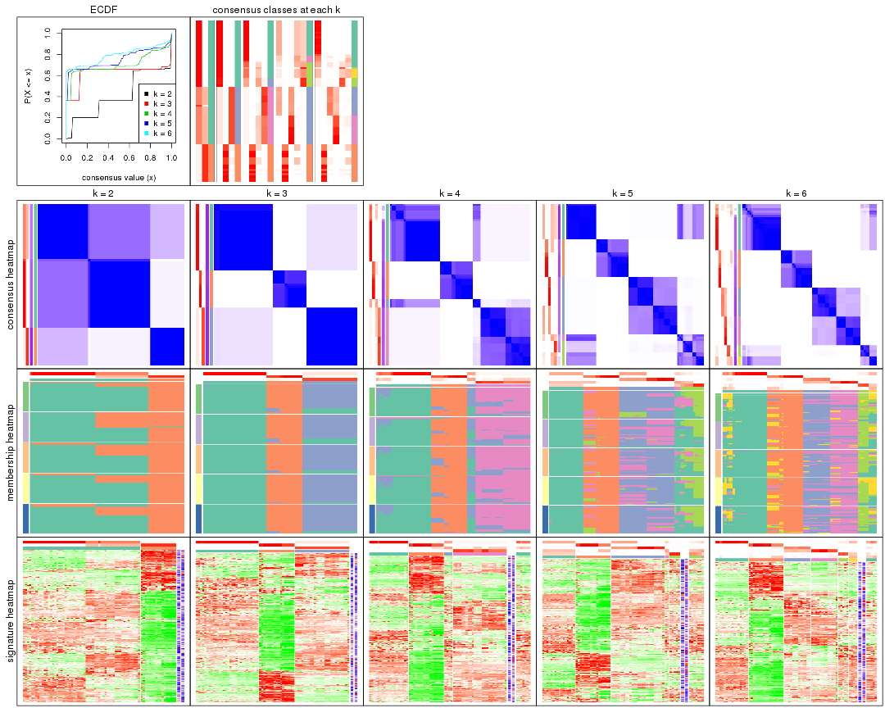
The plots are:
k and the heatmap of
predicted classes for each k.k.k.k.All the plots in panels can be made by individual functions and they are plotted later in this section.
select_partition_number() produces several plots showing different
statistics for choosing “optimized” k. There are following statistics:
k;k, the area increased is defined as \(A_k - A_{k-1}\).The detailed explanations of these statistics can be found in the cola vignette.
Generally speaking, lower PAC score, higher mean silhouette score or higher
concordance corresponds to better partition. Rand index and Jaccard index
measure how similar the current partition is compared to partition with k-1.
If they are too similar, we won't accept k is better than k-1.
select_partition_number(res)
The numeric values for all these statistics can be obtained by get_stats().
get_stats(res)
#> k 1-PAC mean_silhouette concordance area_increased Rand Jaccard
#> 2 2 0.543 0.815 0.871 0.4097 0.638 0.638
#> 3 3 0.699 0.992 0.946 0.5235 0.703 0.535
#> 4 4 0.811 0.788 0.856 0.1269 0.960 0.884
#> 5 5 0.809 0.740 0.752 0.0725 0.920 0.745
#> 6 6 0.777 0.788 0.802 0.0498 0.889 0.596
suggest_best_k() suggests the best \(k\) based on these statistics. The rules are as follows:
suggest_best_k(res)
#> [1] 3
Following shows the table of the partitions (You need to click the show/hide
code output link to see it). The membership matrix (columns with name p*)
is inferred by
clue::cl_consensus()
function with the SE method. Basically the value in the membership matrix
represents the probability to belong to a certain group. The finall class
label for an item is determined with the group with highest probability it
belongs to.
In get_classes() function, the entropy is calculated from the membership
matrix and the silhouette score is calculated from the consensus matrix.
cbind(get_classes(res, k = 2), get_membership(res, k = 2))
#> class entropy silhouette p1 p2
#> SRR2453324 1 0.946 0.706 0.636 0.364
#> SRR2453325 1 0.946 0.706 0.636 0.364
#> SRR2453323 2 0.311 1.000 0.056 0.944
#> SRR2453321 1 0.946 0.706 0.636 0.364
#> SRR2453322 1 0.946 0.706 0.636 0.364
#> SRR2453320 2 0.311 1.000 0.056 0.944
#> SRR2453319 2 0.311 1.000 0.056 0.944
#> SRR2453318 2 0.311 1.000 0.056 0.944
#> SRR2453317 1 0.946 0.706 0.636 0.364
#> SRR2453316 1 0.946 0.706 0.636 0.364
#> SRR2453315 1 0.946 0.706 0.636 0.364
#> SRR2453312 1 0.946 0.706 0.636 0.364
#> SRR2453313 1 0.946 0.706 0.636 0.364
#> SRR2453314 1 0.946 0.706 0.636 0.364
#> SRR2453311 2 0.311 1.000 0.056 0.944
#> SRR2453310 1 0.946 0.706 0.636 0.364
#> SRR2453309 2 0.311 1.000 0.056 0.944
#> SRR2453308 1 0.946 0.706 0.636 0.364
#> SRR2453307 2 0.311 1.000 0.056 0.944
#> SRR2453306 1 0.358 0.784 0.932 0.068
#> SRR2453305 2 0.311 1.000 0.056 0.944
#> SRR2453303 1 0.946 0.706 0.636 0.364
#> SRR2453304 1 0.946 0.706 0.636 0.364
#> SRR2453302 2 0.311 1.000 0.056 0.944
#> SRR2453301 1 0.946 0.706 0.636 0.364
#> SRR2453299 2 0.311 1.000 0.056 0.944
#> SRR2453300 2 0.311 1.000 0.056 0.944
#> SRR2453371 1 0.000 0.803 1.000 0.000
#> SRR2453370 1 0.000 0.803 1.000 0.000
#> SRR2453369 1 0.000 0.803 1.000 0.000
#> SRR2453366 1 0.000 0.803 1.000 0.000
#> SRR2453367 1 0.000 0.803 1.000 0.000
#> SRR2453368 1 0.000 0.803 1.000 0.000
#> SRR2453365 1 0.000 0.803 1.000 0.000
#> SRR2453364 1 0.000 0.803 1.000 0.000
#> SRR2453363 1 0.000 0.803 1.000 0.000
#> SRR2453362 1 0.000 0.803 1.000 0.000
#> SRR2453361 1 0.000 0.803 1.000 0.000
#> SRR2453359 1 0.000 0.803 1.000 0.000
#> SRR2453360 1 0.000 0.803 1.000 0.000
#> SRR2453357 1 0.000 0.803 1.000 0.000
#> SRR2453356 1 0.000 0.803 1.000 0.000
#> SRR2453358 1 0.000 0.803 1.000 0.000
#> SRR2453355 1 0.000 0.803 1.000 0.000
#> SRR2453354 1 0.000 0.803 1.000 0.000
#> SRR2453353 1 0.000 0.803 1.000 0.000
#> SRR2453352 1 0.000 0.803 1.000 0.000
#> SRR2453351 1 0.000 0.803 1.000 0.000
#> SRR2453350 1 0.000 0.803 1.000 0.000
#> SRR2453349 1 0.000 0.803 1.000 0.000
#> SRR2453348 1 0.000 0.803 1.000 0.000
#> SRR2453346 1 0.000 0.803 1.000 0.000
#> SRR2453347 1 0.000 0.803 1.000 0.000
#> SRR2453345 1 0.000 0.803 1.000 0.000
#> SRR2453343 1 0.000 0.803 1.000 0.000
#> SRR2453344 1 0.000 0.803 1.000 0.000
#> SRR2453341 2 0.311 1.000 0.056 0.944
#> SRR2453340 1 0.946 0.706 0.636 0.364
#> SRR2453339 1 0.946 0.706 0.636 0.364
#> SRR2453337 1 0.946 0.706 0.636 0.364
#> SRR2453338 1 0.946 0.706 0.636 0.364
#> SRR2453336 2 0.311 1.000 0.056 0.944
#> SRR2453335 2 0.311 1.000 0.056 0.944
#> SRR2453334 2 0.311 1.000 0.056 0.944
#> SRR2453332 2 0.311 1.000 0.056 0.944
#> SRR2453333 2 0.311 1.000 0.056 0.944
#> SRR2453342 1 0.000 0.803 1.000 0.000
#> SRR2453331 1 0.946 0.706 0.636 0.364
#> SRR2453329 1 0.946 0.706 0.636 0.364
#> SRR2453330 1 0.946 0.706 0.636 0.364
#> SRR2453328 1 0.946 0.706 0.636 0.364
#> SRR2453326 1 0.946 0.706 0.636 0.364
#> SRR2453327 1 0.946 0.706 0.636 0.364
cbind(get_classes(res, k = 3), get_membership(res, k = 3))
#> class entropy silhouette p1 p2 p3
#> SRR2453324 3 0.3482 1.000 0.128 0.000 0.872
#> SRR2453325 3 0.3482 1.000 0.128 0.000 0.872
#> SRR2453323 2 0.2796 0.959 0.000 0.908 0.092
#> SRR2453321 3 0.3482 1.000 0.128 0.000 0.872
#> SRR2453322 3 0.3482 1.000 0.128 0.000 0.872
#> SRR2453320 2 0.2796 0.959 0.000 0.908 0.092
#> SRR2453319 2 0.2796 0.959 0.000 0.908 0.092
#> SRR2453318 2 0.0000 0.976 0.000 1.000 0.000
#> SRR2453317 3 0.3482 1.000 0.128 0.000 0.872
#> SRR2453316 3 0.3482 1.000 0.128 0.000 0.872
#> SRR2453315 3 0.3482 1.000 0.128 0.000 0.872
#> SRR2453312 3 0.3482 1.000 0.128 0.000 0.872
#> SRR2453313 3 0.3482 1.000 0.128 0.000 0.872
#> SRR2453314 3 0.3482 1.000 0.128 0.000 0.872
#> SRR2453311 2 0.0000 0.976 0.000 1.000 0.000
#> SRR2453310 3 0.3482 1.000 0.128 0.000 0.872
#> SRR2453309 2 0.0000 0.976 0.000 1.000 0.000
#> SRR2453308 3 0.3482 1.000 0.128 0.000 0.872
#> SRR2453307 2 0.2796 0.959 0.000 0.908 0.092
#> SRR2453306 3 0.3482 1.000 0.128 0.000 0.872
#> SRR2453305 2 0.2796 0.959 0.000 0.908 0.092
#> SRR2453303 3 0.3482 1.000 0.128 0.000 0.872
#> SRR2453304 3 0.3482 1.000 0.128 0.000 0.872
#> SRR2453302 2 0.2796 0.959 0.000 0.908 0.092
#> SRR2453301 3 0.3482 1.000 0.128 0.000 0.872
#> SRR2453299 2 0.0000 0.976 0.000 1.000 0.000
#> SRR2453300 2 0.0000 0.976 0.000 1.000 0.000
#> SRR2453371 1 0.0000 0.999 1.000 0.000 0.000
#> SRR2453370 1 0.0000 0.999 1.000 0.000 0.000
#> SRR2453369 1 0.0000 0.999 1.000 0.000 0.000
#> SRR2453366 1 0.0000 0.999 1.000 0.000 0.000
#> SRR2453367 1 0.0000 0.999 1.000 0.000 0.000
#> SRR2453368 1 0.0000 0.999 1.000 0.000 0.000
#> SRR2453365 1 0.0000 0.999 1.000 0.000 0.000
#> SRR2453364 1 0.0000 0.999 1.000 0.000 0.000
#> SRR2453363 1 0.0000 0.999 1.000 0.000 0.000
#> SRR2453362 1 0.0000 0.999 1.000 0.000 0.000
#> SRR2453361 1 0.0424 0.991 0.992 0.000 0.008
#> SRR2453359 1 0.0000 0.999 1.000 0.000 0.000
#> SRR2453360 1 0.0000 0.999 1.000 0.000 0.000
#> SRR2453357 1 0.0592 0.987 0.988 0.000 0.012
#> SRR2453356 1 0.0592 0.987 0.988 0.000 0.012
#> SRR2453358 1 0.0000 0.999 1.000 0.000 0.000
#> SRR2453355 1 0.0000 0.999 1.000 0.000 0.000
#> SRR2453354 1 0.0000 0.999 1.000 0.000 0.000
#> SRR2453353 1 0.0000 0.999 1.000 0.000 0.000
#> SRR2453352 1 0.0000 0.999 1.000 0.000 0.000
#> SRR2453351 1 0.0000 0.999 1.000 0.000 0.000
#> SRR2453350 1 0.0000 0.999 1.000 0.000 0.000
#> SRR2453349 1 0.0000 0.999 1.000 0.000 0.000
#> SRR2453348 1 0.0000 0.999 1.000 0.000 0.000
#> SRR2453346 1 0.0000 0.999 1.000 0.000 0.000
#> SRR2453347 1 0.0000 0.999 1.000 0.000 0.000
#> SRR2453345 1 0.0000 0.999 1.000 0.000 0.000
#> SRR2453343 1 0.0000 0.999 1.000 0.000 0.000
#> SRR2453344 1 0.0000 0.999 1.000 0.000 0.000
#> SRR2453341 2 0.1411 0.964 0.000 0.964 0.036
#> SRR2453340 3 0.3482 1.000 0.128 0.000 0.872
#> SRR2453339 3 0.3482 1.000 0.128 0.000 0.872
#> SRR2453337 3 0.3482 1.000 0.128 0.000 0.872
#> SRR2453338 3 0.3482 1.000 0.128 0.000 0.872
#> SRR2453336 2 0.0000 0.976 0.000 1.000 0.000
#> SRR2453335 2 0.0592 0.973 0.000 0.988 0.012
#> SRR2453334 2 0.0000 0.976 0.000 1.000 0.000
#> SRR2453332 2 0.0000 0.976 0.000 1.000 0.000
#> SRR2453333 2 0.0000 0.976 0.000 1.000 0.000
#> SRR2453342 1 0.0000 0.999 1.000 0.000 0.000
#> SRR2453331 3 0.3482 1.000 0.128 0.000 0.872
#> SRR2453329 3 0.3482 1.000 0.128 0.000 0.872
#> SRR2453330 3 0.3482 1.000 0.128 0.000 0.872
#> SRR2453328 3 0.3482 1.000 0.128 0.000 0.872
#> SRR2453326 3 0.3482 1.000 0.128 0.000 0.872
#> SRR2453327 3 0.3482 1.000 0.128 0.000 0.872
cbind(get_classes(res, k = 4), get_membership(res, k = 4))
#> class entropy silhouette p1 p2 p3 p4
#> SRR2453324 4 0.2675 0.8374 0.048 0.000 0.044 0.908
#> SRR2453325 4 0.2675 0.8374 0.048 0.000 0.044 0.908
#> SRR2453323 2 0.3610 0.8902 0.000 0.800 0.200 0.000
#> SRR2453321 4 0.2844 0.8328 0.048 0.000 0.052 0.900
#> SRR2453322 4 0.2844 0.8328 0.048 0.000 0.052 0.900
#> SRR2453320 2 0.3610 0.8902 0.000 0.800 0.200 0.000
#> SRR2453319 2 0.3610 0.8902 0.000 0.800 0.200 0.000
#> SRR2453318 2 0.0336 0.9334 0.000 0.992 0.000 0.008
#> SRR2453317 4 0.1389 0.8456 0.048 0.000 0.000 0.952
#> SRR2453316 4 0.1389 0.8456 0.048 0.000 0.000 0.952
#> SRR2453315 4 0.1389 0.8456 0.048 0.000 0.000 0.952
#> SRR2453312 4 0.5498 0.8445 0.048 0.000 0.272 0.680
#> SRR2453313 4 0.5498 0.8445 0.048 0.000 0.272 0.680
#> SRR2453314 4 0.5498 0.8445 0.048 0.000 0.272 0.680
#> SRR2453311 2 0.0000 0.9339 0.000 1.000 0.000 0.000
#> SRR2453310 4 0.5498 0.8445 0.048 0.000 0.272 0.680
#> SRR2453309 2 0.0000 0.9339 0.000 1.000 0.000 0.000
#> SRR2453308 4 0.3081 0.8314 0.048 0.000 0.064 0.888
#> SRR2453307 2 0.3852 0.8902 0.000 0.800 0.192 0.008
#> SRR2453306 4 0.3156 0.8327 0.048 0.000 0.068 0.884
#> SRR2453305 2 0.3610 0.8902 0.000 0.800 0.200 0.000
#> SRR2453303 4 0.3156 0.8303 0.048 0.000 0.068 0.884
#> SRR2453304 4 0.3156 0.8303 0.048 0.000 0.068 0.884
#> SRR2453302 2 0.3852 0.8902 0.000 0.800 0.192 0.008
#> SRR2453301 4 0.5498 0.8445 0.048 0.000 0.272 0.680
#> SRR2453299 2 0.0000 0.9339 0.000 1.000 0.000 0.000
#> SRR2453300 2 0.0000 0.9339 0.000 1.000 0.000 0.000
#> SRR2453371 1 0.0000 0.8289 1.000 0.000 0.000 0.000
#> SRR2453370 1 0.0000 0.8289 1.000 0.000 0.000 0.000
#> SRR2453369 1 0.4331 0.1231 0.712 0.000 0.288 0.000
#> SRR2453366 1 0.0000 0.8289 1.000 0.000 0.000 0.000
#> SRR2453367 1 0.0000 0.8289 1.000 0.000 0.000 0.000
#> SRR2453368 1 0.0000 0.8289 1.000 0.000 0.000 0.000
#> SRR2453365 1 0.0000 0.8289 1.000 0.000 0.000 0.000
#> SRR2453364 1 0.0000 0.8289 1.000 0.000 0.000 0.000
#> SRR2453363 1 0.4941 -0.6412 0.564 0.000 0.436 0.000
#> SRR2453362 1 0.3837 0.3946 0.776 0.000 0.224 0.000
#> SRR2453361 3 0.6214 0.9763 0.468 0.000 0.480 0.052
#> SRR2453359 1 0.0000 0.8289 1.000 0.000 0.000 0.000
#> SRR2453360 1 0.0000 0.8289 1.000 0.000 0.000 0.000
#> SRR2453357 3 0.6393 0.9768 0.456 0.000 0.480 0.064
#> SRR2453356 3 0.6393 0.9768 0.456 0.000 0.480 0.064
#> SRR2453358 1 0.0000 0.8289 1.000 0.000 0.000 0.000
#> SRR2453355 1 0.0000 0.8289 1.000 0.000 0.000 0.000
#> SRR2453354 1 0.0000 0.8289 1.000 0.000 0.000 0.000
#> SRR2453353 1 0.4356 0.1022 0.708 0.000 0.292 0.000
#> SRR2453352 1 0.3837 0.3946 0.776 0.000 0.224 0.000
#> SRR2453351 3 0.6214 0.9763 0.468 0.000 0.480 0.052
#> SRR2453350 1 0.0000 0.8289 1.000 0.000 0.000 0.000
#> SRR2453349 1 0.0000 0.8289 1.000 0.000 0.000 0.000
#> SRR2453348 1 0.0000 0.8289 1.000 0.000 0.000 0.000
#> SRR2453346 1 0.0000 0.8289 1.000 0.000 0.000 0.000
#> SRR2453347 1 0.2281 0.6950 0.904 0.000 0.096 0.000
#> SRR2453345 1 0.4356 0.1022 0.708 0.000 0.292 0.000
#> SRR2453343 1 0.4406 0.0564 0.700 0.000 0.300 0.000
#> SRR2453344 1 0.0000 0.8289 1.000 0.000 0.000 0.000
#> SRR2453341 2 0.2816 0.9008 0.000 0.900 0.064 0.036
#> SRR2453340 4 0.5298 0.8508 0.048 0.000 0.244 0.708
#> SRR2453339 4 0.5298 0.8508 0.048 0.000 0.244 0.708
#> SRR2453337 4 0.5298 0.8508 0.048 0.000 0.244 0.708
#> SRR2453338 4 0.5298 0.8508 0.048 0.000 0.244 0.708
#> SRR2453336 2 0.0000 0.9339 0.000 1.000 0.000 0.000
#> SRR2453335 2 0.2174 0.9110 0.000 0.928 0.052 0.020
#> SRR2453334 2 0.0000 0.9339 0.000 1.000 0.000 0.000
#> SRR2453332 2 0.0336 0.9334 0.000 0.992 0.000 0.008
#> SRR2453333 2 0.0336 0.9334 0.000 0.992 0.000 0.008
#> SRR2453342 1 0.0000 0.8289 1.000 0.000 0.000 0.000
#> SRR2453331 4 0.5328 0.8501 0.048 0.000 0.248 0.704
#> SRR2453329 4 0.5328 0.8501 0.048 0.000 0.248 0.704
#> SRR2453330 4 0.5328 0.8501 0.048 0.000 0.248 0.704
#> SRR2453328 4 0.5328 0.8501 0.048 0.000 0.248 0.704
#> SRR2453326 4 0.2844 0.8328 0.048 0.000 0.052 0.900
#> SRR2453327 4 0.2844 0.8328 0.048 0.000 0.052 0.900
cbind(get_classes(res, k = 5), get_membership(res, k = 5))
#> class entropy silhouette p1 p2 p3 p4 p5
#> SRR2453324 3 0.4555 0.746 0.472 0.000 0.520 0.000 0.008
#> SRR2453325 3 0.4555 0.746 0.472 0.000 0.520 0.000 0.008
#> SRR2453323 2 0.3966 0.797 0.000 0.664 0.000 0.336 0.000
#> SRR2453321 3 0.5052 0.748 0.436 0.000 0.536 0.020 0.008
#> SRR2453322 3 0.5052 0.748 0.436 0.000 0.536 0.020 0.008
#> SRR2453320 2 0.3966 0.797 0.000 0.664 0.000 0.336 0.000
#> SRR2453319 2 0.3966 0.797 0.000 0.664 0.000 0.336 0.000
#> SRR2453318 2 0.0324 0.884 0.004 0.992 0.000 0.000 0.004
#> SRR2453317 3 0.4287 0.749 0.460 0.000 0.540 0.000 0.000
#> SRR2453316 3 0.4287 0.749 0.460 0.000 0.540 0.000 0.000
#> SRR2453315 3 0.4287 0.749 0.460 0.000 0.540 0.000 0.000
#> SRR2453312 3 0.1716 0.742 0.016 0.000 0.944 0.024 0.016
#> SRR2453313 3 0.1716 0.742 0.016 0.000 0.944 0.024 0.016
#> SRR2453314 3 0.1716 0.742 0.016 0.000 0.944 0.024 0.016
#> SRR2453311 2 0.0000 0.884 0.000 1.000 0.000 0.000 0.000
#> SRR2453310 3 0.1716 0.742 0.016 0.000 0.944 0.024 0.016
#> SRR2453309 2 0.0000 0.884 0.000 1.000 0.000 0.000 0.000
#> SRR2453308 3 0.4555 0.746 0.472 0.000 0.520 0.000 0.008
#> SRR2453307 2 0.4236 0.797 0.004 0.664 0.000 0.328 0.004
#> SRR2453306 3 0.4904 0.742 0.472 0.000 0.504 0.000 0.024
#> SRR2453305 2 0.3966 0.797 0.000 0.664 0.000 0.336 0.000
#> SRR2453303 3 0.4904 0.742 0.472 0.000 0.504 0.000 0.024
#> SRR2453304 3 0.4904 0.742 0.472 0.000 0.504 0.000 0.024
#> SRR2453302 2 0.4236 0.797 0.004 0.664 0.000 0.328 0.004
#> SRR2453301 3 0.1716 0.742 0.016 0.000 0.944 0.024 0.016
#> SRR2453299 2 0.0000 0.884 0.000 1.000 0.000 0.000 0.000
#> SRR2453300 2 0.0000 0.884 0.000 1.000 0.000 0.000 0.000
#> SRR2453371 4 0.6742 0.476 0.244 0.000 0.012 0.504 0.240
#> SRR2453370 1 0.6965 0.978 0.436 0.000 0.012 0.312 0.240
#> SRR2453369 5 0.6105 0.204 0.104 0.000 0.012 0.332 0.552
#> SRR2453366 1 0.6965 0.978 0.436 0.000 0.012 0.312 0.240
#> SRR2453367 4 0.6809 0.508 0.260 0.000 0.012 0.488 0.240
#> SRR2453368 1 0.6973 0.974 0.432 0.000 0.012 0.316 0.240
#> SRR2453365 1 0.6973 0.974 0.432 0.000 0.012 0.316 0.240
#> SRR2453364 1 0.6965 0.978 0.436 0.000 0.012 0.312 0.240
#> SRR2453363 5 0.1106 0.571 0.000 0.000 0.012 0.024 0.964
#> SRR2453362 5 0.6626 -0.286 0.152 0.000 0.012 0.388 0.448
#> SRR2453361 5 0.1300 0.582 0.028 0.000 0.016 0.000 0.956
#> SRR2453359 1 0.6973 0.974 0.432 0.000 0.012 0.316 0.240
#> SRR2453360 1 0.6973 0.974 0.432 0.000 0.012 0.316 0.240
#> SRR2453357 5 0.1673 0.578 0.032 0.000 0.016 0.008 0.944
#> SRR2453356 5 0.1386 0.580 0.032 0.000 0.016 0.000 0.952
#> SRR2453358 1 0.6973 0.974 0.432 0.000 0.012 0.316 0.240
#> SRR2453355 1 0.6965 0.978 0.436 0.000 0.012 0.312 0.240
#> SRR2453354 1 0.6965 0.978 0.436 0.000 0.012 0.312 0.240
#> SRR2453353 5 0.6063 0.215 0.100 0.000 0.012 0.332 0.556
#> SRR2453352 5 0.6626 -0.286 0.152 0.000 0.012 0.388 0.448
#> SRR2453351 5 0.1701 0.582 0.028 0.000 0.012 0.016 0.944
#> SRR2453350 1 0.6965 0.978 0.436 0.000 0.012 0.312 0.240
#> SRR2453349 1 0.6965 0.978 0.436 0.000 0.012 0.312 0.240
#> SRR2453348 1 0.6973 0.974 0.432 0.000 0.012 0.316 0.240
#> SRR2453346 1 0.6965 0.978 0.436 0.000 0.012 0.312 0.240
#> SRR2453347 4 0.6905 0.565 0.216 0.000 0.012 0.440 0.332
#> SRR2453345 5 0.6063 0.215 0.100 0.000 0.012 0.332 0.556
#> SRR2453343 5 0.6036 0.243 0.100 0.000 0.012 0.324 0.564
#> SRR2453344 1 0.6965 0.978 0.436 0.000 0.012 0.312 0.240
#> SRR2453341 2 0.2983 0.841 0.076 0.868 0.000 0.056 0.000
#> SRR2453340 3 0.0162 0.749 0.000 0.000 0.996 0.004 0.000
#> SRR2453339 3 0.0162 0.749 0.000 0.000 0.996 0.004 0.000
#> SRR2453337 3 0.0162 0.749 0.000 0.000 0.996 0.004 0.000
#> SRR2453338 3 0.0162 0.749 0.000 0.000 0.996 0.004 0.000
#> SRR2453336 2 0.0000 0.884 0.000 1.000 0.000 0.000 0.000
#> SRR2453335 2 0.2359 0.857 0.036 0.912 0.000 0.044 0.008
#> SRR2453334 2 0.0000 0.884 0.000 1.000 0.000 0.000 0.000
#> SRR2453332 2 0.0324 0.884 0.004 0.992 0.000 0.000 0.004
#> SRR2453333 2 0.0324 0.884 0.004 0.992 0.000 0.000 0.004
#> SRR2453342 1 0.7021 0.758 0.396 0.000 0.012 0.352 0.240
#> SRR2453331 3 0.0000 0.749 0.000 0.000 1.000 0.000 0.000
#> SRR2453329 3 0.0000 0.749 0.000 0.000 1.000 0.000 0.000
#> SRR2453330 3 0.0000 0.749 0.000 0.000 1.000 0.000 0.000
#> SRR2453328 3 0.0000 0.749 0.000 0.000 1.000 0.000 0.000
#> SRR2453326 3 0.5052 0.748 0.436 0.000 0.536 0.020 0.008
#> SRR2453327 3 0.5052 0.748 0.436 0.000 0.536 0.020 0.008
cbind(get_classes(res, k = 6), get_membership(res, k = 6))
#> class entropy silhouette p1 p2 p3 p4 p5 p6
#> SRR2453324 3 0.4019 0.9443 0.000 0.000 0.652 0.332 0.004 0.012
#> SRR2453325 3 0.4019 0.9443 0.000 0.000 0.652 0.332 0.004 0.012
#> SRR2453323 2 0.4711 0.7509 0.000 0.640 0.080 0.000 0.000 0.280
#> SRR2453321 3 0.4238 0.9419 0.000 0.000 0.636 0.340 0.008 0.016
#> SRR2453322 3 0.4238 0.9419 0.000 0.000 0.636 0.340 0.008 0.016
#> SRR2453320 2 0.4711 0.7509 0.000 0.640 0.080 0.000 0.000 0.280
#> SRR2453319 2 0.4711 0.7509 0.000 0.640 0.080 0.000 0.000 0.280
#> SRR2453318 2 0.0260 0.8529 0.000 0.992 0.000 0.000 0.008 0.000
#> SRR2453317 3 0.4770 0.9040 0.000 0.000 0.584 0.368 0.012 0.036
#> SRR2453316 3 0.4770 0.9040 0.000 0.000 0.584 0.368 0.012 0.036
#> SRR2453315 3 0.4770 0.9040 0.000 0.000 0.584 0.368 0.012 0.036
#> SRR2453312 4 0.3019 0.8797 0.000 0.000 0.036 0.860 0.024 0.080
#> SRR2453313 4 0.3173 0.8718 0.000 0.000 0.036 0.848 0.024 0.092
#> SRR2453314 4 0.3019 0.8797 0.000 0.000 0.036 0.860 0.024 0.080
#> SRR2453311 2 0.0000 0.8537 0.000 1.000 0.000 0.000 0.000 0.000
#> SRR2453310 4 0.3019 0.8797 0.000 0.000 0.036 0.860 0.024 0.080
#> SRR2453309 2 0.0000 0.8537 0.000 1.000 0.000 0.000 0.000 0.000
#> SRR2453308 3 0.3938 0.9371 0.000 0.000 0.672 0.312 0.004 0.012
#> SRR2453307 2 0.4764 0.7508 0.000 0.640 0.088 0.000 0.000 0.272
#> SRR2453306 3 0.3973 0.9232 0.000 0.000 0.684 0.296 0.008 0.012
#> SRR2453305 2 0.4711 0.7509 0.000 0.640 0.080 0.000 0.000 0.280
#> SRR2453303 3 0.4027 0.9347 0.000 0.000 0.672 0.308 0.008 0.012
#> SRR2453304 3 0.4027 0.9347 0.000 0.000 0.672 0.308 0.008 0.012
#> SRR2453302 2 0.4764 0.7508 0.000 0.640 0.088 0.000 0.000 0.272
#> SRR2453301 4 0.3019 0.8797 0.000 0.000 0.036 0.860 0.024 0.080
#> SRR2453299 2 0.0000 0.8537 0.000 1.000 0.000 0.000 0.000 0.000
#> SRR2453300 2 0.0000 0.8537 0.000 1.000 0.000 0.000 0.000 0.000
#> SRR2453371 1 0.4797 0.2423 0.664 0.000 0.124 0.000 0.000 0.212
#> SRR2453370 1 0.0000 0.8101 1.000 0.000 0.000 0.000 0.000 0.000
#> SRR2453369 6 0.6068 0.9762 0.360 0.000 0.000 0.000 0.264 0.376
#> SRR2453366 1 0.0000 0.8101 1.000 0.000 0.000 0.000 0.000 0.000
#> SRR2453367 1 0.3807 -0.0247 0.628 0.000 0.004 0.000 0.000 0.368
#> SRR2453368 1 0.0291 0.8064 0.992 0.000 0.004 0.000 0.000 0.004
#> SRR2453365 1 0.0000 0.8101 1.000 0.000 0.000 0.000 0.000 0.000
#> SRR2453364 1 0.0000 0.8101 1.000 0.000 0.000 0.000 0.000 0.000
#> SRR2453363 5 0.3507 0.9015 0.116 0.000 0.020 0.000 0.820 0.044
#> SRR2453362 1 0.7132 -0.4485 0.444 0.000 0.132 0.000 0.172 0.252
#> SRR2453361 5 0.2432 0.9366 0.100 0.000 0.024 0.000 0.876 0.000
#> SRR2453359 1 0.0508 0.8039 0.984 0.000 0.004 0.000 0.000 0.012
#> SRR2453360 1 0.0000 0.8101 1.000 0.000 0.000 0.000 0.000 0.000
#> SRR2453357 5 0.3493 0.9170 0.100 0.000 0.036 0.000 0.828 0.036
#> SRR2453356 5 0.2432 0.9366 0.100 0.000 0.024 0.000 0.876 0.000
#> SRR2453358 1 0.0508 0.8039 0.984 0.000 0.004 0.000 0.000 0.012
#> SRR2453355 1 0.0000 0.8101 1.000 0.000 0.000 0.000 0.000 0.000
#> SRR2453354 1 0.0000 0.8101 1.000 0.000 0.000 0.000 0.000 0.000
#> SRR2453353 6 0.6080 0.9875 0.352 0.000 0.000 0.000 0.272 0.376
#> SRR2453352 1 0.7132 -0.4485 0.444 0.000 0.132 0.000 0.172 0.252
#> SRR2453351 5 0.3594 0.8803 0.100 0.000 0.024 0.000 0.820 0.056
#> SRR2453350 1 0.0000 0.8101 1.000 0.000 0.000 0.000 0.000 0.000
#> SRR2453349 1 0.0260 0.8075 0.992 0.000 0.000 0.000 0.000 0.008
#> SRR2453348 1 0.0146 0.8088 0.996 0.000 0.000 0.000 0.000 0.004
#> SRR2453346 1 0.0000 0.8101 1.000 0.000 0.000 0.000 0.000 0.000
#> SRR2453347 1 0.5159 -0.4966 0.528 0.000 0.000 0.000 0.092 0.380
#> SRR2453345 6 0.6080 0.9875 0.352 0.000 0.000 0.000 0.272 0.376
#> SRR2453343 6 0.6091 0.9756 0.344 0.000 0.000 0.000 0.280 0.376
#> SRR2453344 1 0.0260 0.8075 0.992 0.000 0.000 0.000 0.000 0.008
#> SRR2453341 2 0.4171 0.7536 0.000 0.788 0.060 0.000 0.068 0.084
#> SRR2453340 4 0.0964 0.9081 0.000 0.000 0.004 0.968 0.012 0.016
#> SRR2453339 4 0.0964 0.9081 0.000 0.000 0.004 0.968 0.012 0.016
#> SRR2453337 4 0.0964 0.9081 0.000 0.000 0.004 0.968 0.012 0.016
#> SRR2453338 4 0.0964 0.9081 0.000 0.000 0.004 0.968 0.012 0.016
#> SRR2453336 2 0.0000 0.8537 0.000 1.000 0.000 0.000 0.000 0.000
#> SRR2453335 2 0.3282 0.7883 0.000 0.848 0.048 0.000 0.036 0.068
#> SRR2453334 2 0.0000 0.8537 0.000 1.000 0.000 0.000 0.000 0.000
#> SRR2453332 2 0.0405 0.8527 0.000 0.988 0.004 0.000 0.008 0.000
#> SRR2453333 2 0.0405 0.8527 0.000 0.988 0.004 0.000 0.008 0.000
#> SRR2453342 1 0.2491 0.5939 0.836 0.000 0.000 0.000 0.000 0.164
#> SRR2453331 4 0.0000 0.9166 0.000 0.000 0.000 1.000 0.000 0.000
#> SRR2453329 4 0.0000 0.9166 0.000 0.000 0.000 1.000 0.000 0.000
#> SRR2453330 4 0.0000 0.9166 0.000 0.000 0.000 1.000 0.000 0.000
#> SRR2453328 4 0.0000 0.9166 0.000 0.000 0.000 1.000 0.000 0.000
#> SRR2453326 3 0.4238 0.9419 0.000 0.000 0.636 0.340 0.008 0.016
#> SRR2453327 3 0.4238 0.9419 0.000 0.000 0.636 0.340 0.008 0.016
Heatmaps for the consensus matrix. It visualizes the probability of two samples to be in a same group.
consensus_heatmap(res, k = 2)

consensus_heatmap(res, k = 3)
consensus_heatmap(res, k = 4)
consensus_heatmap(res, k = 5)
consensus_heatmap(res, k = 6)
Heatmaps for the membership of samples in all partitions to see how consistent they are:
membership_heatmap(res, k = 2)
membership_heatmap(res, k = 3)
membership_heatmap(res, k = 4)
membership_heatmap(res, k = 5)
membership_heatmap(res, k = 6)
As soon as we have had the classes for columns, we can look for signatures which are significantly different between classes which can be candidate marks for certain classes. Following are the heatmaps for signatures.
Signature heatmaps where rows are scaled:
get_signatures(res, k = 2)
get_signatures(res, k = 3)
get_signatures(res, k = 4)
get_signatures(res, k = 5)
get_signatures(res, k = 6)
Signature heatmaps where rows are not scaled:
get_signatures(res, k = 2, scale_rows = FALSE)
get_signatures(res, k = 3, scale_rows = FALSE)
get_signatures(res, k = 4, scale_rows = FALSE)
get_signatures(res, k = 5, scale_rows = FALSE)
get_signatures(res, k = 6, scale_rows = FALSE)
Compare the overlap of signatures from different k:
compare_signatures(res)
get_signature() returns a data frame invisibly. TO get the list of signatures, the function
call should be assigned to a variable explicitly. In following code, if plot argument is set
to FALSE, no heatmap is plotted while only the differential analysis is performed.
# code only for demonstration
tb = get_signature(res, k = ..., plot = FALSE)
An example of the output of tb is:
#> which_row fdr mean_1 mean_2 scaled_mean_1 scaled_mean_2 km
#> 1 38 0.042760348 8.373488 9.131774 -0.5533452 0.5164555 1
#> 2 40 0.018707592 7.106213 8.469186 -0.6173731 0.5762149 1
#> 3 55 0.019134737 10.221463 11.207825 -0.6159697 0.5749050 1
#> 4 59 0.006059896 5.921854 7.869574 -0.6899429 0.6439467 1
#> 5 60 0.018055526 8.928898 10.211722 -0.6204761 0.5791110 1
#> 6 98 0.009384629 15.714769 14.887706 0.6635654 -0.6193277 2
...
The columns in tb are:
which_row: row indices corresponding to the input matrix.fdr: FDR for the differential test. mean_x: The mean value in group x.scaled_mean_x: The mean value in group x after rows are scaled.km: Row groups if k-means clustering is applied to rows.UMAP plot which shows how samples are separated.
dimension_reduction(res, k = 2, method = "UMAP")

dimension_reduction(res, k = 3, method = "UMAP")

dimension_reduction(res, k = 4, method = "UMAP")
dimension_reduction(res, k = 5, method = "UMAP")
dimension_reduction(res, k = 6, method = "UMAP")
Following heatmap shows how subgroups are split when increasing k:
collect_classes(res)
If matrix rows can be associated to genes, consider to use functional_enrichment(res,
...) to perform function enrichment for the signature genes. See this vignette for more detailed explanations.
The object with results only for a single top-value method and a single partition method can be extracted as:
res = res_list["MAD", "skmeans"]
# you can also extract it by
# res = res_list["MAD:skmeans"]
A summary of res and all the functions that can be applied to it:
res
#> A 'ConsensusPartition' object with k = 2, 3, 4, 5, 6.
#> On a matrix with 16769 rows and 73 columns.
#> Top rows (1000, 2000, 3000, 4000, 5000) are extracted by 'MAD' method.
#> Subgroups are detected by 'skmeans' method.
#> Performed in total 1250 partitions by row resampling.
#> Best k for subgroups seems to be 6.
#>
#> Following methods can be applied to this 'ConsensusPartition' object:
#> [1] "cola_report" "collect_classes" "collect_plots"
#> [4] "collect_stats" "colnames" "compare_signatures"
#> [7] "consensus_heatmap" "dimension_reduction" "functional_enrichment"
#> [10] "get_anno_col" "get_anno" "get_classes"
#> [13] "get_consensus" "get_matrix" "get_membership"
#> [16] "get_param" "get_signatures" "get_stats"
#> [19] "is_best_k" "is_stable_k" "membership_heatmap"
#> [22] "ncol" "nrow" "plot_ecdf"
#> [25] "rownames" "select_partition_number" "show"
#> [28] "suggest_best_k" "test_to_known_factors"
collect_plots() function collects all the plots made from res for all k (number of partitions)
into one single page to provide an easy and fast comparison between different k.
collect_plots(res)
The plots are:
k and the heatmap of
predicted classes for each k.k.k.k.All the plots in panels can be made by individual functions and they are plotted later in this section.
select_partition_number() produces several plots showing different
statistics for choosing “optimized” k. There are following statistics:
k;k, the area increased is defined as \(A_k - A_{k-1}\).The detailed explanations of these statistics can be found in the cola vignette.
Generally speaking, lower PAC score, higher mean silhouette score or higher
concordance corresponds to better partition. Rand index and Jaccard index
measure how similar the current partition is compared to partition with k-1.
If they are too similar, we won't accept k is better than k-1.
select_partition_number(res)
The numeric values for all these statistics can be obtained by get_stats().
get_stats(res)
#> k 1-PAC mean_silhouette concordance area_increased Rand Jaccard
#> 2 2 1.000 0.979 0.982 0.3695 0.638 0.638
#> 3 3 1.000 1.000 1.000 0.7847 0.703 0.535
#> 4 4 0.902 0.982 0.961 0.0943 0.936 0.811
#> 5 5 1.000 0.995 0.990 0.0662 0.952 0.828
#> 6 6 0.936 0.882 0.933 0.0354 0.982 0.924
suggest_best_k() suggests the best \(k\) based on these statistics. The rules are as follows:
suggest_best_k(res)
#> [1] 6
#> attr(,"optional")
#> [1] 2 3 4 5
There is also optional best \(k\) = 2 3 4 5 that is worth to check.
Following shows the table of the partitions (You need to click the show/hide
code output link to see it). The membership matrix (columns with name p*)
is inferred by
clue::cl_consensus()
function with the SE method. Basically the value in the membership matrix
represents the probability to belong to a certain group. The finall class
label for an item is determined with the group with highest probability it
belongs to.
In get_classes() function, the entropy is calculated from the membership
matrix and the silhouette score is calculated from the consensus matrix.
cbind(get_classes(res, k = 2), get_membership(res, k = 2))
#> class entropy silhouette p1 p2
#> SRR2453324 1 0.295 0.970 0.948 0.052
#> SRR2453325 1 0.295 0.970 0.948 0.052
#> SRR2453323 2 0.000 1.000 0.000 1.000
#> SRR2453321 1 0.295 0.970 0.948 0.052
#> SRR2453322 1 0.295 0.970 0.948 0.052
#> SRR2453320 2 0.000 1.000 0.000 1.000
#> SRR2453319 2 0.000 1.000 0.000 1.000
#> SRR2453318 2 0.000 1.000 0.000 1.000
#> SRR2453317 1 0.295 0.970 0.948 0.052
#> SRR2453316 1 0.295 0.970 0.948 0.052
#> SRR2453315 1 0.295 0.970 0.948 0.052
#> SRR2453312 1 0.295 0.970 0.948 0.052
#> SRR2453313 1 0.295 0.970 0.948 0.052
#> SRR2453314 1 0.295 0.970 0.948 0.052
#> SRR2453311 2 0.000 1.000 0.000 1.000
#> SRR2453310 1 0.295 0.970 0.948 0.052
#> SRR2453309 2 0.000 1.000 0.000 1.000
#> SRR2453308 1 0.295 0.970 0.948 0.052
#> SRR2453307 2 0.000 1.000 0.000 1.000
#> SRR2453306 1 0.278 0.971 0.952 0.048
#> SRR2453305 2 0.000 1.000 0.000 1.000
#> SRR2453303 1 0.295 0.970 0.948 0.052
#> SRR2453304 1 0.295 0.970 0.948 0.052
#> SRR2453302 2 0.000 1.000 0.000 1.000
#> SRR2453301 1 0.295 0.970 0.948 0.052
#> SRR2453299 2 0.000 1.000 0.000 1.000
#> SRR2453300 2 0.000 1.000 0.000 1.000
#> SRR2453371 1 0.000 0.975 1.000 0.000
#> SRR2453370 1 0.000 0.975 1.000 0.000
#> SRR2453369 1 0.000 0.975 1.000 0.000
#> SRR2453366 1 0.000 0.975 1.000 0.000
#> SRR2453367 1 0.000 0.975 1.000 0.000
#> SRR2453368 1 0.000 0.975 1.000 0.000
#> SRR2453365 1 0.000 0.975 1.000 0.000
#> SRR2453364 1 0.000 0.975 1.000 0.000
#> SRR2453363 1 0.000 0.975 1.000 0.000
#> SRR2453362 1 0.000 0.975 1.000 0.000
#> SRR2453361 1 0.000 0.975 1.000 0.000
#> SRR2453359 1 0.000 0.975 1.000 0.000
#> SRR2453360 1 0.000 0.975 1.000 0.000
#> SRR2453357 1 0.000 0.975 1.000 0.000
#> SRR2453356 1 0.000 0.975 1.000 0.000
#> SRR2453358 1 0.000 0.975 1.000 0.000
#> SRR2453355 1 0.000 0.975 1.000 0.000
#> SRR2453354 1 0.000 0.975 1.000 0.000
#> SRR2453353 1 0.000 0.975 1.000 0.000
#> SRR2453352 1 0.000 0.975 1.000 0.000
#> SRR2453351 1 0.000 0.975 1.000 0.000
#> SRR2453350 1 0.000 0.975 1.000 0.000
#> SRR2453349 1 0.000 0.975 1.000 0.000
#> SRR2453348 1 0.000 0.975 1.000 0.000
#> SRR2453346 1 0.000 0.975 1.000 0.000
#> SRR2453347 1 0.000 0.975 1.000 0.000
#> SRR2453345 1 0.000 0.975 1.000 0.000
#> SRR2453343 1 0.000 0.975 1.000 0.000
#> SRR2453344 1 0.000 0.975 1.000 0.000
#> SRR2453341 2 0.000 1.000 0.000 1.000
#> SRR2453340 1 0.295 0.970 0.948 0.052
#> SRR2453339 1 0.295 0.970 0.948 0.052
#> SRR2453337 1 0.295 0.970 0.948 0.052
#> SRR2453338 1 0.295 0.970 0.948 0.052
#> SRR2453336 2 0.000 1.000 0.000 1.000
#> SRR2453335 2 0.000 1.000 0.000 1.000
#> SRR2453334 2 0.000 1.000 0.000 1.000
#> SRR2453332 2 0.000 1.000 0.000 1.000
#> SRR2453333 2 0.000 1.000 0.000 1.000
#> SRR2453342 1 0.000 0.975 1.000 0.000
#> SRR2453331 1 0.295 0.970 0.948 0.052
#> SRR2453329 1 0.295 0.970 0.948 0.052
#> SRR2453330 1 0.295 0.970 0.948 0.052
#> SRR2453328 1 0.295 0.970 0.948 0.052
#> SRR2453326 1 0.295 0.970 0.948 0.052
#> SRR2453327 1 0.295 0.970 0.948 0.052
cbind(get_classes(res, k = 3), get_membership(res, k = 3))
#> class entropy silhouette p1 p2 p3
#> SRR2453324 3 0 1 0 0 1
#> SRR2453325 3 0 1 0 0 1
#> SRR2453323 2 0 1 0 1 0
#> SRR2453321 3 0 1 0 0 1
#> SRR2453322 3 0 1 0 0 1
#> SRR2453320 2 0 1 0 1 0
#> SRR2453319 2 0 1 0 1 0
#> SRR2453318 2 0 1 0 1 0
#> SRR2453317 3 0 1 0 0 1
#> SRR2453316 3 0 1 0 0 1
#> SRR2453315 3 0 1 0 0 1
#> SRR2453312 3 0 1 0 0 1
#> SRR2453313 3 0 1 0 0 1
#> SRR2453314 3 0 1 0 0 1
#> SRR2453311 2 0 1 0 1 0
#> SRR2453310 3 0 1 0 0 1
#> SRR2453309 2 0 1 0 1 0
#> SRR2453308 3 0 1 0 0 1
#> SRR2453307 2 0 1 0 1 0
#> SRR2453306 3 0 1 0 0 1
#> SRR2453305 2 0 1 0 1 0
#> SRR2453303 3 0 1 0 0 1
#> SRR2453304 3 0 1 0 0 1
#> SRR2453302 2 0 1 0 1 0
#> SRR2453301 3 0 1 0 0 1
#> SRR2453299 2 0 1 0 1 0
#> SRR2453300 2 0 1 0 1 0
#> SRR2453371 1 0 1 1 0 0
#> SRR2453370 1 0 1 1 0 0
#> SRR2453369 1 0 1 1 0 0
#> SRR2453366 1 0 1 1 0 0
#> SRR2453367 1 0 1 1 0 0
#> SRR2453368 1 0 1 1 0 0
#> SRR2453365 1 0 1 1 0 0
#> SRR2453364 1 0 1 1 0 0
#> SRR2453363 1 0 1 1 0 0
#> SRR2453362 1 0 1 1 0 0
#> SRR2453361 1 0 1 1 0 0
#> SRR2453359 1 0 1 1 0 0
#> SRR2453360 1 0 1 1 0 0
#> SRR2453357 1 0 1 1 0 0
#> SRR2453356 1 0 1 1 0 0
#> SRR2453358 1 0 1 1 0 0
#> SRR2453355 1 0 1 1 0 0
#> SRR2453354 1 0 1 1 0 0
#> SRR2453353 1 0 1 1 0 0
#> SRR2453352 1 0 1 1 0 0
#> SRR2453351 1 0 1 1 0 0
#> SRR2453350 1 0 1 1 0 0
#> SRR2453349 1 0 1 1 0 0
#> SRR2453348 1 0 1 1 0 0
#> SRR2453346 1 0 1 1 0 0
#> SRR2453347 1 0 1 1 0 0
#> SRR2453345 1 0 1 1 0 0
#> SRR2453343 1 0 1 1 0 0
#> SRR2453344 1 0 1 1 0 0
#> SRR2453341 2 0 1 0 1 0
#> SRR2453340 3 0 1 0 0 1
#> SRR2453339 3 0 1 0 0 1
#> SRR2453337 3 0 1 0 0 1
#> SRR2453338 3 0 1 0 0 1
#> SRR2453336 2 0 1 0 1 0
#> SRR2453335 2 0 1 0 1 0
#> SRR2453334 2 0 1 0 1 0
#> SRR2453332 2 0 1 0 1 0
#> SRR2453333 2 0 1 0 1 0
#> SRR2453342 1 0 1 1 0 0
#> SRR2453331 3 0 1 0 0 1
#> SRR2453329 3 0 1 0 0 1
#> SRR2453330 3 0 1 0 0 1
#> SRR2453328 3 0 1 0 0 1
#> SRR2453326 3 0 1 0 0 1
#> SRR2453327 3 0 1 0 0 1
cbind(get_classes(res, k = 4), get_membership(res, k = 4))
#> class entropy silhouette p1 p2 p3 p4
#> SRR2453324 3 0.307 1.000 0.000 0 0.848 0.152
#> SRR2453325 3 0.307 1.000 0.000 0 0.848 0.152
#> SRR2453323 2 0.000 1.000 0.000 1 0.000 0.000
#> SRR2453321 3 0.307 1.000 0.000 0 0.848 0.152
#> SRR2453322 3 0.307 1.000 0.000 0 0.848 0.152
#> SRR2453320 2 0.000 1.000 0.000 1 0.000 0.000
#> SRR2453319 2 0.000 1.000 0.000 1 0.000 0.000
#> SRR2453318 2 0.000 1.000 0.000 1 0.000 0.000
#> SRR2453317 3 0.307 1.000 0.000 0 0.848 0.152
#> SRR2453316 3 0.307 1.000 0.000 0 0.848 0.152
#> SRR2453315 3 0.307 1.000 0.000 0 0.848 0.152
#> SRR2453312 4 0.000 1.000 0.000 0 0.000 1.000
#> SRR2453313 4 0.000 1.000 0.000 0 0.000 1.000
#> SRR2453314 4 0.000 1.000 0.000 0 0.000 1.000
#> SRR2453311 2 0.000 1.000 0.000 1 0.000 0.000
#> SRR2453310 4 0.000 1.000 0.000 0 0.000 1.000
#> SRR2453309 2 0.000 1.000 0.000 1 0.000 0.000
#> SRR2453308 3 0.307 1.000 0.000 0 0.848 0.152
#> SRR2453307 2 0.000 1.000 0.000 1 0.000 0.000
#> SRR2453306 3 0.307 1.000 0.000 0 0.848 0.152
#> SRR2453305 2 0.000 1.000 0.000 1 0.000 0.000
#> SRR2453303 3 0.307 1.000 0.000 0 0.848 0.152
#> SRR2453304 3 0.307 1.000 0.000 0 0.848 0.152
#> SRR2453302 2 0.000 1.000 0.000 1 0.000 0.000
#> SRR2453301 4 0.000 1.000 0.000 0 0.000 1.000
#> SRR2453299 2 0.000 1.000 0.000 1 0.000 0.000
#> SRR2453300 2 0.000 1.000 0.000 1 0.000 0.000
#> SRR2453371 1 0.000 0.976 1.000 0 0.000 0.000
#> SRR2453370 1 0.000 0.976 1.000 0 0.000 0.000
#> SRR2453369 1 0.000 0.976 1.000 0 0.000 0.000
#> SRR2453366 1 0.000 0.976 1.000 0 0.000 0.000
#> SRR2453367 1 0.000 0.976 1.000 0 0.000 0.000
#> SRR2453368 1 0.000 0.976 1.000 0 0.000 0.000
#> SRR2453365 1 0.000 0.976 1.000 0 0.000 0.000
#> SRR2453364 1 0.000 0.976 1.000 0 0.000 0.000
#> SRR2453363 1 0.307 0.877 0.848 0 0.152 0.000
#> SRR2453362 1 0.000 0.976 1.000 0 0.000 0.000
#> SRR2453361 1 0.307 0.877 0.848 0 0.152 0.000
#> SRR2453359 1 0.000 0.976 1.000 0 0.000 0.000
#> SRR2453360 1 0.000 0.976 1.000 0 0.000 0.000
#> SRR2453357 1 0.349 0.845 0.812 0 0.188 0.000
#> SRR2453356 1 0.361 0.833 0.800 0 0.200 0.000
#> SRR2453358 1 0.000 0.976 1.000 0 0.000 0.000
#> SRR2453355 1 0.000 0.976 1.000 0 0.000 0.000
#> SRR2453354 1 0.000 0.976 1.000 0 0.000 0.000
#> SRR2453353 1 0.000 0.976 1.000 0 0.000 0.000
#> SRR2453352 1 0.000 0.976 1.000 0 0.000 0.000
#> SRR2453351 1 0.307 0.877 0.848 0 0.152 0.000
#> SRR2453350 1 0.000 0.976 1.000 0 0.000 0.000
#> SRR2453349 1 0.000 0.976 1.000 0 0.000 0.000
#> SRR2453348 1 0.000 0.976 1.000 0 0.000 0.000
#> SRR2453346 1 0.000 0.976 1.000 0 0.000 0.000
#> SRR2453347 1 0.000 0.976 1.000 0 0.000 0.000
#> SRR2453345 1 0.000 0.976 1.000 0 0.000 0.000
#> SRR2453343 1 0.000 0.976 1.000 0 0.000 0.000
#> SRR2453344 1 0.000 0.976 1.000 0 0.000 0.000
#> SRR2453341 2 0.000 1.000 0.000 1 0.000 0.000
#> SRR2453340 4 0.000 1.000 0.000 0 0.000 1.000
#> SRR2453339 4 0.000 1.000 0.000 0 0.000 1.000
#> SRR2453337 4 0.000 1.000 0.000 0 0.000 1.000
#> SRR2453338 4 0.000 1.000 0.000 0 0.000 1.000
#> SRR2453336 2 0.000 1.000 0.000 1 0.000 0.000
#> SRR2453335 2 0.000 1.000 0.000 1 0.000 0.000
#> SRR2453334 2 0.000 1.000 0.000 1 0.000 0.000
#> SRR2453332 2 0.000 1.000 0.000 1 0.000 0.000
#> SRR2453333 2 0.000 1.000 0.000 1 0.000 0.000
#> SRR2453342 1 0.000 0.976 1.000 0 0.000 0.000
#> SRR2453331 4 0.000 1.000 0.000 0 0.000 1.000
#> SRR2453329 4 0.000 1.000 0.000 0 0.000 1.000
#> SRR2453330 4 0.000 1.000 0.000 0 0.000 1.000
#> SRR2453328 4 0.000 1.000 0.000 0 0.000 1.000
#> SRR2453326 3 0.307 1.000 0.000 0 0.848 0.152
#> SRR2453327 3 0.307 1.000 0.000 0 0.848 0.152
cbind(get_classes(res, k = 5), get_membership(res, k = 5))
#> class entropy silhouette p1 p2 p3 p4 p5
#> SRR2453324 3 0.0000 0.998 0.000 0.000 1.000 0.000 0.000
#> SRR2453325 3 0.0000 0.998 0.000 0.000 1.000 0.000 0.000
#> SRR2453323 2 0.0510 0.990 0.000 0.984 0.000 0.000 0.016
#> SRR2453321 3 0.0000 0.998 0.000 0.000 1.000 0.000 0.000
#> SRR2453322 3 0.0000 0.998 0.000 0.000 1.000 0.000 0.000
#> SRR2453320 2 0.0510 0.990 0.000 0.984 0.000 0.000 0.016
#> SRR2453319 2 0.0510 0.990 0.000 0.984 0.000 0.000 0.016
#> SRR2453318 2 0.0000 0.995 0.000 1.000 0.000 0.000 0.000
#> SRR2453317 3 0.0290 0.993 0.000 0.000 0.992 0.008 0.000
#> SRR2453316 3 0.0290 0.993 0.000 0.000 0.992 0.008 0.000
#> SRR2453315 3 0.0290 0.993 0.000 0.000 0.992 0.008 0.000
#> SRR2453312 4 0.1216 0.988 0.000 0.000 0.020 0.960 0.020
#> SRR2453313 4 0.1216 0.988 0.000 0.000 0.020 0.960 0.020
#> SRR2453314 4 0.1216 0.988 0.000 0.000 0.020 0.960 0.020
#> SRR2453311 2 0.0000 0.995 0.000 1.000 0.000 0.000 0.000
#> SRR2453310 4 0.1216 0.988 0.000 0.000 0.020 0.960 0.020
#> SRR2453309 2 0.0000 0.995 0.000 1.000 0.000 0.000 0.000
#> SRR2453308 3 0.0000 0.998 0.000 0.000 1.000 0.000 0.000
#> SRR2453307 2 0.0510 0.990 0.000 0.984 0.000 0.000 0.016
#> SRR2453306 3 0.0000 0.998 0.000 0.000 1.000 0.000 0.000
#> SRR2453305 2 0.0510 0.990 0.000 0.984 0.000 0.000 0.016
#> SRR2453303 3 0.0000 0.998 0.000 0.000 1.000 0.000 0.000
#> SRR2453304 3 0.0000 0.998 0.000 0.000 1.000 0.000 0.000
#> SRR2453302 2 0.0510 0.990 0.000 0.984 0.000 0.000 0.016
#> SRR2453301 4 0.1216 0.988 0.000 0.000 0.020 0.960 0.020
#> SRR2453299 2 0.0000 0.995 0.000 1.000 0.000 0.000 0.000
#> SRR2453300 2 0.0000 0.995 0.000 1.000 0.000 0.000 0.000
#> SRR2453371 1 0.0162 0.995 0.996 0.000 0.000 0.004 0.000
#> SRR2453370 1 0.0000 0.998 1.000 0.000 0.000 0.000 0.000
#> SRR2453369 1 0.0290 0.992 0.992 0.000 0.000 0.008 0.000
#> SRR2453366 1 0.0000 0.998 1.000 0.000 0.000 0.000 0.000
#> SRR2453367 1 0.0000 0.998 1.000 0.000 0.000 0.000 0.000
#> SRR2453368 1 0.0000 0.998 1.000 0.000 0.000 0.000 0.000
#> SRR2453365 1 0.0000 0.998 1.000 0.000 0.000 0.000 0.000
#> SRR2453364 1 0.0000 0.998 1.000 0.000 0.000 0.000 0.000
#> SRR2453363 5 0.1568 0.987 0.036 0.000 0.000 0.020 0.944
#> SRR2453362 1 0.0609 0.983 0.980 0.000 0.000 0.020 0.000
#> SRR2453361 5 0.0963 0.997 0.036 0.000 0.000 0.000 0.964
#> SRR2453359 1 0.0000 0.998 1.000 0.000 0.000 0.000 0.000
#> SRR2453360 1 0.0000 0.998 1.000 0.000 0.000 0.000 0.000
#> SRR2453357 5 0.0963 0.997 0.036 0.000 0.000 0.000 0.964
#> SRR2453356 5 0.0963 0.997 0.036 0.000 0.000 0.000 0.964
#> SRR2453358 1 0.0000 0.998 1.000 0.000 0.000 0.000 0.000
#> SRR2453355 1 0.0000 0.998 1.000 0.000 0.000 0.000 0.000
#> SRR2453354 1 0.0000 0.998 1.000 0.000 0.000 0.000 0.000
#> SRR2453353 1 0.0000 0.998 1.000 0.000 0.000 0.000 0.000
#> SRR2453352 1 0.0609 0.983 0.980 0.000 0.000 0.020 0.000
#> SRR2453351 5 0.0963 0.997 0.036 0.000 0.000 0.000 0.964
#> SRR2453350 1 0.0000 0.998 1.000 0.000 0.000 0.000 0.000
#> SRR2453349 1 0.0000 0.998 1.000 0.000 0.000 0.000 0.000
#> SRR2453348 1 0.0000 0.998 1.000 0.000 0.000 0.000 0.000
#> SRR2453346 1 0.0000 0.998 1.000 0.000 0.000 0.000 0.000
#> SRR2453347 1 0.0162 0.995 0.996 0.000 0.000 0.004 0.000
#> SRR2453345 1 0.0000 0.998 1.000 0.000 0.000 0.000 0.000
#> SRR2453343 1 0.0000 0.998 1.000 0.000 0.000 0.000 0.000
#> SRR2453344 1 0.0000 0.998 1.000 0.000 0.000 0.000 0.000
#> SRR2453341 2 0.0000 0.995 0.000 1.000 0.000 0.000 0.000
#> SRR2453340 4 0.0609 0.993 0.000 0.000 0.020 0.980 0.000
#> SRR2453339 4 0.0609 0.993 0.000 0.000 0.020 0.980 0.000
#> SRR2453337 4 0.0609 0.993 0.000 0.000 0.020 0.980 0.000
#> SRR2453338 4 0.0609 0.993 0.000 0.000 0.020 0.980 0.000
#> SRR2453336 2 0.0000 0.995 0.000 1.000 0.000 0.000 0.000
#> SRR2453335 2 0.0000 0.995 0.000 1.000 0.000 0.000 0.000
#> SRR2453334 2 0.0000 0.995 0.000 1.000 0.000 0.000 0.000
#> SRR2453332 2 0.0000 0.995 0.000 1.000 0.000 0.000 0.000
#> SRR2453333 2 0.0000 0.995 0.000 1.000 0.000 0.000 0.000
#> SRR2453342 1 0.0000 0.998 1.000 0.000 0.000 0.000 0.000
#> SRR2453331 4 0.0609 0.993 0.000 0.000 0.020 0.980 0.000
#> SRR2453329 4 0.0609 0.993 0.000 0.000 0.020 0.980 0.000
#> SRR2453330 4 0.0609 0.993 0.000 0.000 0.020 0.980 0.000
#> SRR2453328 4 0.0609 0.993 0.000 0.000 0.020 0.980 0.000
#> SRR2453326 3 0.0000 0.998 0.000 0.000 1.000 0.000 0.000
#> SRR2453327 3 0.0000 0.998 0.000 0.000 1.000 0.000 0.000
cbind(get_classes(res, k = 6), get_membership(res, k = 6))
#> class entropy silhouette p1 p2 p3 p4 p5 p6
#> SRR2453324 3 0.1007 0.9664 0.000 0.00 0.956 0.000 0.000 0.044
#> SRR2453325 3 0.1007 0.9664 0.000 0.00 0.956 0.000 0.000 0.044
#> SRR2453323 2 0.0547 0.9875 0.000 0.98 0.000 0.000 0.000 0.020
#> SRR2453321 3 0.0000 0.9656 0.000 0.00 1.000 0.000 0.000 0.000
#> SRR2453322 3 0.0000 0.9656 0.000 0.00 1.000 0.000 0.000 0.000
#> SRR2453320 2 0.0547 0.9875 0.000 0.98 0.000 0.000 0.000 0.020
#> SRR2453319 2 0.0547 0.9875 0.000 0.98 0.000 0.000 0.000 0.020
#> SRR2453318 2 0.0000 0.9932 0.000 1.00 0.000 0.000 0.000 0.000
#> SRR2453317 3 0.1498 0.9383 0.000 0.00 0.940 0.032 0.000 0.028
#> SRR2453316 3 0.1498 0.9383 0.000 0.00 0.940 0.032 0.000 0.028
#> SRR2453315 3 0.1498 0.9383 0.000 0.00 0.940 0.032 0.000 0.028
#> SRR2453312 4 0.3390 0.8019 0.000 0.00 0.000 0.704 0.000 0.296
#> SRR2453313 4 0.3390 0.8019 0.000 0.00 0.000 0.704 0.000 0.296
#> SRR2453314 4 0.3390 0.8019 0.000 0.00 0.000 0.704 0.000 0.296
#> SRR2453311 2 0.0000 0.9932 0.000 1.00 0.000 0.000 0.000 0.000
#> SRR2453310 4 0.3390 0.8019 0.000 0.00 0.000 0.704 0.000 0.296
#> SRR2453309 2 0.0000 0.9932 0.000 1.00 0.000 0.000 0.000 0.000
#> SRR2453308 3 0.1007 0.9664 0.000 0.00 0.956 0.000 0.000 0.044
#> SRR2453307 2 0.0547 0.9875 0.000 0.98 0.000 0.000 0.000 0.020
#> SRR2453306 3 0.1007 0.9664 0.000 0.00 0.956 0.000 0.000 0.044
#> SRR2453305 2 0.0547 0.9875 0.000 0.98 0.000 0.000 0.000 0.020
#> SRR2453303 3 0.1007 0.9664 0.000 0.00 0.956 0.000 0.000 0.044
#> SRR2453304 3 0.1007 0.9664 0.000 0.00 0.956 0.000 0.000 0.044
#> SRR2453302 2 0.0547 0.9875 0.000 0.98 0.000 0.000 0.000 0.020
#> SRR2453301 4 0.3390 0.8019 0.000 0.00 0.000 0.704 0.000 0.296
#> SRR2453299 2 0.0000 0.9932 0.000 1.00 0.000 0.000 0.000 0.000
#> SRR2453300 2 0.0000 0.9932 0.000 1.00 0.000 0.000 0.000 0.000
#> SRR2453371 1 0.3409 0.0197 0.700 0.00 0.000 0.000 0.000 0.300
#> SRR2453370 1 0.0000 0.8747 1.000 0.00 0.000 0.000 0.000 0.000
#> SRR2453369 1 0.2994 0.5996 0.788 0.00 0.000 0.000 0.004 0.208
#> SRR2453366 1 0.0000 0.8747 1.000 0.00 0.000 0.000 0.000 0.000
#> SRR2453367 1 0.2883 0.5921 0.788 0.00 0.000 0.000 0.000 0.212
#> SRR2453368 1 0.0000 0.8747 1.000 0.00 0.000 0.000 0.000 0.000
#> SRR2453365 1 0.0000 0.8747 1.000 0.00 0.000 0.000 0.000 0.000
#> SRR2453364 1 0.0000 0.8747 1.000 0.00 0.000 0.000 0.000 0.000
#> SRR2453363 5 0.3684 0.6533 0.000 0.00 0.000 0.000 0.628 0.372
#> SRR2453362 6 0.3838 1.0000 0.448 0.00 0.000 0.000 0.000 0.552
#> SRR2453361 5 0.0000 0.9161 0.000 0.00 0.000 0.000 1.000 0.000
#> SRR2453359 1 0.0000 0.8747 1.000 0.00 0.000 0.000 0.000 0.000
#> SRR2453360 1 0.0000 0.8747 1.000 0.00 0.000 0.000 0.000 0.000
#> SRR2453357 5 0.0458 0.9135 0.000 0.00 0.000 0.000 0.984 0.016
#> SRR2453356 5 0.0000 0.9161 0.000 0.00 0.000 0.000 1.000 0.000
#> SRR2453358 1 0.0000 0.8747 1.000 0.00 0.000 0.000 0.000 0.000
#> SRR2453355 1 0.0000 0.8747 1.000 0.00 0.000 0.000 0.000 0.000
#> SRR2453354 1 0.0000 0.8747 1.000 0.00 0.000 0.000 0.000 0.000
#> SRR2453353 1 0.2100 0.7572 0.884 0.00 0.000 0.000 0.004 0.112
#> SRR2453352 6 0.3838 1.0000 0.448 0.00 0.000 0.000 0.000 0.552
#> SRR2453351 5 0.0790 0.9019 0.000 0.00 0.000 0.000 0.968 0.032
#> SRR2453350 1 0.0000 0.8747 1.000 0.00 0.000 0.000 0.000 0.000
#> SRR2453349 1 0.0000 0.8747 1.000 0.00 0.000 0.000 0.000 0.000
#> SRR2453348 1 0.0000 0.8747 1.000 0.00 0.000 0.000 0.000 0.000
#> SRR2453346 1 0.0000 0.8747 1.000 0.00 0.000 0.000 0.000 0.000
#> SRR2453347 1 0.2697 0.6452 0.812 0.00 0.000 0.000 0.000 0.188
#> SRR2453345 1 0.3161 0.5745 0.776 0.00 0.000 0.000 0.008 0.216
#> SRR2453343 1 0.3245 0.5430 0.764 0.00 0.000 0.000 0.008 0.228
#> SRR2453344 1 0.0000 0.8747 1.000 0.00 0.000 0.000 0.000 0.000
#> SRR2453341 2 0.0000 0.9932 0.000 1.00 0.000 0.000 0.000 0.000
#> SRR2453340 4 0.0000 0.8828 0.000 0.00 0.000 1.000 0.000 0.000
#> SRR2453339 4 0.0000 0.8828 0.000 0.00 0.000 1.000 0.000 0.000
#> SRR2453337 4 0.0000 0.8828 0.000 0.00 0.000 1.000 0.000 0.000
#> SRR2453338 4 0.0000 0.8828 0.000 0.00 0.000 1.000 0.000 0.000
#> SRR2453336 2 0.0000 0.9932 0.000 1.00 0.000 0.000 0.000 0.000
#> SRR2453335 2 0.0000 0.9932 0.000 1.00 0.000 0.000 0.000 0.000
#> SRR2453334 2 0.0000 0.9932 0.000 1.00 0.000 0.000 0.000 0.000
#> SRR2453332 2 0.0000 0.9932 0.000 1.00 0.000 0.000 0.000 0.000
#> SRR2453333 2 0.0000 0.9932 0.000 1.00 0.000 0.000 0.000 0.000
#> SRR2453342 1 0.0937 0.8365 0.960 0.00 0.000 0.000 0.000 0.040
#> SRR2453331 4 0.0000 0.8828 0.000 0.00 0.000 1.000 0.000 0.000
#> SRR2453329 4 0.0000 0.8828 0.000 0.00 0.000 1.000 0.000 0.000
#> SRR2453330 4 0.0000 0.8828 0.000 0.00 0.000 1.000 0.000 0.000
#> SRR2453328 4 0.0000 0.8828 0.000 0.00 0.000 1.000 0.000 0.000
#> SRR2453326 3 0.0000 0.9656 0.000 0.00 1.000 0.000 0.000 0.000
#> SRR2453327 3 0.0000 0.9656 0.000 0.00 1.000 0.000 0.000 0.000
Heatmaps for the consensus matrix. It visualizes the probability of two samples to be in a same group.
consensus_heatmap(res, k = 2)
consensus_heatmap(res, k = 3)

consensus_heatmap(res, k = 4)
consensus_heatmap(res, k = 5)
consensus_heatmap(res, k = 6)
Heatmaps for the membership of samples in all partitions to see how consistent they are:
membership_heatmap(res, k = 2)
membership_heatmap(res, k = 3)
membership_heatmap(res, k = 4)
membership_heatmap(res, k = 5)
membership_heatmap(res, k = 6)
As soon as we have had the classes for columns, we can look for signatures which are significantly different between classes which can be candidate marks for certain classes. Following are the heatmaps for signatures.
Signature heatmaps where rows are scaled:
get_signatures(res, k = 2)
get_signatures(res, k = 3)

get_signatures(res, k = 4)
get_signatures(res, k = 5)
get_signatures(res, k = 6)
Signature heatmaps where rows are not scaled:
get_signatures(res, k = 2, scale_rows = FALSE)
get_signatures(res, k = 3, scale_rows = FALSE)

get_signatures(res, k = 4, scale_rows = FALSE)
get_signatures(res, k = 5, scale_rows = FALSE)
get_signatures(res, k = 6, scale_rows = FALSE)
Compare the overlap of signatures from different k:
compare_signatures(res)
get_signature() returns a data frame invisibly. TO get the list of signatures, the function
call should be assigned to a variable explicitly. In following code, if plot argument is set
to FALSE, no heatmap is plotted while only the differential analysis is performed.
# code only for demonstration
tb = get_signature(res, k = ..., plot = FALSE)
An example of the output of tb is:
#> which_row fdr mean_1 mean_2 scaled_mean_1 scaled_mean_2 km
#> 1 38 0.042760348 8.373488 9.131774 -0.5533452 0.5164555 1
#> 2 40 0.018707592 7.106213 8.469186 -0.6173731 0.5762149 1
#> 3 55 0.019134737 10.221463 11.207825 -0.6159697 0.5749050 1
#> 4 59 0.006059896 5.921854 7.869574 -0.6899429 0.6439467 1
#> 5 60 0.018055526 8.928898 10.211722 -0.6204761 0.5791110 1
#> 6 98 0.009384629 15.714769 14.887706 0.6635654 -0.6193277 2
...
The columns in tb are:
which_row: row indices corresponding to the input matrix.fdr: FDR for the differential test. mean_x: The mean value in group x.scaled_mean_x: The mean value in group x after rows are scaled.km: Row groups if k-means clustering is applied to rows.UMAP plot which shows how samples are separated.
dimension_reduction(res, k = 2, method = "UMAP")

dimension_reduction(res, k = 3, method = "UMAP")

dimension_reduction(res, k = 4, method = "UMAP")
dimension_reduction(res, k = 5, method = "UMAP")
dimension_reduction(res, k = 6, method = "UMAP")
Following heatmap shows how subgroups are split when increasing k:
collect_classes(res)
If matrix rows can be associated to genes, consider to use functional_enrichment(res,
...) to perform function enrichment for the signature genes. See this vignette for more detailed explanations.
The object with results only for a single top-value method and a single partition method can be extracted as:
res = res_list["MAD", "pam"]
# you can also extract it by
# res = res_list["MAD:pam"]
A summary of res and all the functions that can be applied to it:
res
#> A 'ConsensusPartition' object with k = 2, 3, 4, 5, 6.
#> On a matrix with 16769 rows and 73 columns.
#> Top rows (1000, 2000, 3000, 4000, 5000) are extracted by 'MAD' method.
#> Subgroups are detected by 'pam' method.
#> Performed in total 1250 partitions by row resampling.
#> Best k for subgroups seems to be 6.
#>
#> Following methods can be applied to this 'ConsensusPartition' object:
#> [1] "cola_report" "collect_classes" "collect_plots"
#> [4] "collect_stats" "colnames" "compare_signatures"
#> [7] "consensus_heatmap" "dimension_reduction" "functional_enrichment"
#> [10] "get_anno_col" "get_anno" "get_classes"
#> [13] "get_consensus" "get_matrix" "get_membership"
#> [16] "get_param" "get_signatures" "get_stats"
#> [19] "is_best_k" "is_stable_k" "membership_heatmap"
#> [22] "ncol" "nrow" "plot_ecdf"
#> [25] "rownames" "select_partition_number" "show"
#> [28] "suggest_best_k" "test_to_known_factors"
collect_plots() function collects all the plots made from res for all k (number of partitions)
into one single page to provide an easy and fast comparison between different k.
collect_plots(res)
The plots are:
k and the heatmap of
predicted classes for each k.k.k.k.All the plots in panels can be made by individual functions and they are plotted later in this section.
select_partition_number() produces several plots showing different
statistics for choosing “optimized” k. There are following statistics:
k;k, the area increased is defined as \(A_k - A_{k-1}\).The detailed explanations of these statistics can be found in the cola vignette.
Generally speaking, lower PAC score, higher mean silhouette score or higher
concordance corresponds to better partition. Rand index and Jaccard index
measure how similar the current partition is compared to partition with k-1.
If they are too similar, we won't accept k is better than k-1.
select_partition_number(res)

The numeric values for all these statistics can be obtained by get_stats().
get_stats(res)
#> k 1-PAC mean_silhouette concordance area_increased Rand Jaccard
#> 2 2 1.000 1.000 1.000 0.3629 0.638 0.638
#> 3 3 1.000 0.996 0.998 0.8175 0.703 0.535
#> 4 4 0.953 0.897 0.960 0.1175 0.878 0.661
#> 5 5 0.953 0.893 0.961 0.0342 0.975 0.902
#> 6 6 0.962 0.846 0.904 0.0302 0.931 0.731
suggest_best_k() suggests the best \(k\) based on these statistics. The rules are as follows:
suggest_best_k(res)
#> [1] 6
#> attr(,"optional")
#> [1] 2 3 4 5
There is also optional best \(k\) = 2 3 4 5 that is worth to check.
Following shows the table of the partitions (You need to click the show/hide
code output link to see it). The membership matrix (columns with name p*)
is inferred by
clue::cl_consensus()
function with the SE method. Basically the value in the membership matrix
represents the probability to belong to a certain group. The finall class
label for an item is determined with the group with highest probability it
belongs to.
In get_classes() function, the entropy is calculated from the membership
matrix and the silhouette score is calculated from the consensus matrix.
cbind(get_classes(res, k = 2), get_membership(res, k = 2))
#> class entropy silhouette p1 p2
#> SRR2453324 1 0 1 1 0
#> SRR2453325 1 0 1 1 0
#> SRR2453323 2 0 1 0 1
#> SRR2453321 1 0 1 1 0
#> SRR2453322 1 0 1 1 0
#> SRR2453320 2 0 1 0 1
#> SRR2453319 2 0 1 0 1
#> SRR2453318 2 0 1 0 1
#> SRR2453317 1 0 1 1 0
#> SRR2453316 1 0 1 1 0
#> SRR2453315 1 0 1 1 0
#> SRR2453312 1 0 1 1 0
#> SRR2453313 1 0 1 1 0
#> SRR2453314 1 0 1 1 0
#> SRR2453311 2 0 1 0 1
#> SRR2453310 1 0 1 1 0
#> SRR2453309 2 0 1 0 1
#> SRR2453308 1 0 1 1 0
#> SRR2453307 2 0 1 0 1
#> SRR2453306 1 0 1 1 0
#> SRR2453305 2 0 1 0 1
#> SRR2453303 1 0 1 1 0
#> SRR2453304 1 0 1 1 0
#> SRR2453302 2 0 1 0 1
#> SRR2453301 1 0 1 1 0
#> SRR2453299 2 0 1 0 1
#> SRR2453300 2 0 1 0 1
#> SRR2453371 1 0 1 1 0
#> SRR2453370 1 0 1 1 0
#> SRR2453369 1 0 1 1 0
#> SRR2453366 1 0 1 1 0
#> SRR2453367 1 0 1 1 0
#> SRR2453368 1 0 1 1 0
#> SRR2453365 1 0 1 1 0
#> SRR2453364 1 0 1 1 0
#> SRR2453363 1 0 1 1 0
#> SRR2453362 1 0 1 1 0
#> SRR2453361 1 0 1 1 0
#> SRR2453359 1 0 1 1 0
#> SRR2453360 1 0 1 1 0
#> SRR2453357 1 0 1 1 0
#> SRR2453356 1 0 1 1 0
#> SRR2453358 1 0 1 1 0
#> SRR2453355 1 0 1 1 0
#> SRR2453354 1 0 1 1 0
#> SRR2453353 1 0 1 1 0
#> SRR2453352 1 0 1 1 0
#> SRR2453351 1 0 1 1 0
#> SRR2453350 1 0 1 1 0
#> SRR2453349 1 0 1 1 0
#> SRR2453348 1 0 1 1 0
#> SRR2453346 1 0 1 1 0
#> SRR2453347 1 0 1 1 0
#> SRR2453345 1 0 1 1 0
#> SRR2453343 1 0 1 1 0
#> SRR2453344 1 0 1 1 0
#> SRR2453341 2 0 1 0 1
#> SRR2453340 1 0 1 1 0
#> SRR2453339 1 0 1 1 0
#> SRR2453337 1 0 1 1 0
#> SRR2453338 1 0 1 1 0
#> SRR2453336 2 0 1 0 1
#> SRR2453335 2 0 1 0 1
#> SRR2453334 2 0 1 0 1
#> SRR2453332 2 0 1 0 1
#> SRR2453333 2 0 1 0 1
#> SRR2453342 1 0 1 1 0
#> SRR2453331 1 0 1 1 0
#> SRR2453329 1 0 1 1 0
#> SRR2453330 1 0 1 1 0
#> SRR2453328 1 0 1 1 0
#> SRR2453326 1 0 1 1 0
#> SRR2453327 1 0 1 1 0
cbind(get_classes(res, k = 3), get_membership(res, k = 3))
#> class entropy silhouette p1 p2 p3
#> SRR2453324 3 0.0000 1.000 0.000 0 1.000
#> SRR2453325 3 0.0000 1.000 0.000 0 1.000
#> SRR2453323 2 0.0000 1.000 0.000 1 0.000
#> SRR2453321 3 0.0000 1.000 0.000 0 1.000
#> SRR2453322 3 0.0000 1.000 0.000 0 1.000
#> SRR2453320 2 0.0000 1.000 0.000 1 0.000
#> SRR2453319 2 0.0000 1.000 0.000 1 0.000
#> SRR2453318 2 0.0000 1.000 0.000 1 0.000
#> SRR2453317 3 0.0000 1.000 0.000 0 1.000
#> SRR2453316 3 0.0000 1.000 0.000 0 1.000
#> SRR2453315 3 0.0000 1.000 0.000 0 1.000
#> SRR2453312 3 0.0000 1.000 0.000 0 1.000
#> SRR2453313 3 0.0000 1.000 0.000 0 1.000
#> SRR2453314 3 0.0000 1.000 0.000 0 1.000
#> SRR2453311 2 0.0000 1.000 0.000 1 0.000
#> SRR2453310 3 0.0000 1.000 0.000 0 1.000
#> SRR2453309 2 0.0000 1.000 0.000 1 0.000
#> SRR2453308 3 0.0000 1.000 0.000 0 1.000
#> SRR2453307 2 0.0000 1.000 0.000 1 0.000
#> SRR2453306 3 0.0000 1.000 0.000 0 1.000
#> SRR2453305 2 0.0000 1.000 0.000 1 0.000
#> SRR2453303 3 0.0000 1.000 0.000 0 1.000
#> SRR2453304 3 0.0000 1.000 0.000 0 1.000
#> SRR2453302 2 0.0000 1.000 0.000 1 0.000
#> SRR2453301 3 0.0000 1.000 0.000 0 1.000
#> SRR2453299 2 0.0000 1.000 0.000 1 0.000
#> SRR2453300 2 0.0000 1.000 0.000 1 0.000
#> SRR2453371 1 0.0000 0.995 1.000 0 0.000
#> SRR2453370 1 0.0000 0.995 1.000 0 0.000
#> SRR2453369 1 0.0000 0.995 1.000 0 0.000
#> SRR2453366 1 0.0000 0.995 1.000 0 0.000
#> SRR2453367 1 0.0000 0.995 1.000 0 0.000
#> SRR2453368 1 0.0000 0.995 1.000 0 0.000
#> SRR2453365 1 0.0000 0.995 1.000 0 0.000
#> SRR2453364 1 0.0000 0.995 1.000 0 0.000
#> SRR2453363 1 0.0000 0.995 1.000 0 0.000
#> SRR2453362 1 0.0000 0.995 1.000 0 0.000
#> SRR2453361 1 0.3482 0.850 0.872 0 0.128
#> SRR2453359 1 0.0000 0.995 1.000 0 0.000
#> SRR2453360 1 0.0000 0.995 1.000 0 0.000
#> SRR2453357 1 0.0237 0.991 0.996 0 0.004
#> SRR2453356 1 0.0000 0.995 1.000 0 0.000
#> SRR2453358 1 0.0000 0.995 1.000 0 0.000
#> SRR2453355 1 0.0000 0.995 1.000 0 0.000
#> SRR2453354 1 0.0000 0.995 1.000 0 0.000
#> SRR2453353 1 0.0000 0.995 1.000 0 0.000
#> SRR2453352 1 0.0000 0.995 1.000 0 0.000
#> SRR2453351 1 0.0000 0.995 1.000 0 0.000
#> SRR2453350 1 0.0000 0.995 1.000 0 0.000
#> SRR2453349 1 0.0000 0.995 1.000 0 0.000
#> SRR2453348 1 0.0000 0.995 1.000 0 0.000
#> SRR2453346 1 0.0000 0.995 1.000 0 0.000
#> SRR2453347 1 0.0000 0.995 1.000 0 0.000
#> SRR2453345 1 0.0000 0.995 1.000 0 0.000
#> SRR2453343 1 0.0000 0.995 1.000 0 0.000
#> SRR2453344 1 0.0000 0.995 1.000 0 0.000
#> SRR2453341 2 0.0000 1.000 0.000 1 0.000
#> SRR2453340 3 0.0000 1.000 0.000 0 1.000
#> SRR2453339 3 0.0000 1.000 0.000 0 1.000
#> SRR2453337 3 0.0000 1.000 0.000 0 1.000
#> SRR2453338 3 0.0000 1.000 0.000 0 1.000
#> SRR2453336 2 0.0000 1.000 0.000 1 0.000
#> SRR2453335 2 0.0000 1.000 0.000 1 0.000
#> SRR2453334 2 0.0000 1.000 0.000 1 0.000
#> SRR2453332 2 0.0000 1.000 0.000 1 0.000
#> SRR2453333 2 0.0000 1.000 0.000 1 0.000
#> SRR2453342 1 0.0000 0.995 1.000 0 0.000
#> SRR2453331 3 0.0000 1.000 0.000 0 1.000
#> SRR2453329 3 0.0000 1.000 0.000 0 1.000
#> SRR2453330 3 0.0000 1.000 0.000 0 1.000
#> SRR2453328 3 0.0000 1.000 0.000 0 1.000
#> SRR2453326 3 0.0000 1.000 0.000 0 1.000
#> SRR2453327 3 0.0000 1.000 0.000 0 1.000
cbind(get_classes(res, k = 4), get_membership(res, k = 4))
#> class entropy silhouette p1 p2 p3 p4
#> SRR2453324 3 0.0188 0.8017 0.000 0.000 0.996 0.004
#> SRR2453325 3 0.0188 0.8017 0.000 0.000 0.996 0.004
#> SRR2453323 2 0.0188 0.9979 0.000 0.996 0.004 0.000
#> SRR2453321 3 0.0188 0.8017 0.000 0.000 0.996 0.004
#> SRR2453322 3 0.0188 0.8017 0.000 0.000 0.996 0.004
#> SRR2453320 2 0.0188 0.9979 0.000 0.996 0.004 0.000
#> SRR2453319 2 0.0188 0.9979 0.000 0.996 0.004 0.000
#> SRR2453318 2 0.0000 0.9988 0.000 1.000 0.000 0.000
#> SRR2453317 4 0.4977 0.1365 0.000 0.000 0.460 0.540
#> SRR2453316 3 0.4989 -0.0228 0.000 0.000 0.528 0.472
#> SRR2453315 3 0.4955 0.0729 0.000 0.000 0.556 0.444
#> SRR2453312 4 0.0000 0.9612 0.000 0.000 0.000 1.000
#> SRR2453313 4 0.0000 0.9612 0.000 0.000 0.000 1.000
#> SRR2453314 4 0.0000 0.9612 0.000 0.000 0.000 1.000
#> SRR2453311 2 0.0000 0.9988 0.000 1.000 0.000 0.000
#> SRR2453310 4 0.0000 0.9612 0.000 0.000 0.000 1.000
#> SRR2453309 2 0.0000 0.9988 0.000 1.000 0.000 0.000
#> SRR2453308 3 0.0188 0.8017 0.000 0.000 0.996 0.004
#> SRR2453307 2 0.0188 0.9979 0.000 0.996 0.004 0.000
#> SRR2453306 3 0.0336 0.7992 0.000 0.000 0.992 0.008
#> SRR2453305 2 0.0188 0.9979 0.000 0.996 0.004 0.000
#> SRR2453303 3 0.0188 0.8017 0.000 0.000 0.996 0.004
#> SRR2453304 3 0.0188 0.8017 0.000 0.000 0.996 0.004
#> SRR2453302 2 0.0188 0.9979 0.000 0.996 0.004 0.000
#> SRR2453301 4 0.0000 0.9612 0.000 0.000 0.000 1.000
#> SRR2453299 2 0.0000 0.9988 0.000 1.000 0.000 0.000
#> SRR2453300 2 0.0000 0.9988 0.000 1.000 0.000 0.000
#> SRR2453371 1 0.0000 0.9998 1.000 0.000 0.000 0.000
#> SRR2453370 1 0.0000 0.9998 1.000 0.000 0.000 0.000
#> SRR2453369 1 0.0000 0.9998 1.000 0.000 0.000 0.000
#> SRR2453366 1 0.0000 0.9998 1.000 0.000 0.000 0.000
#> SRR2453367 1 0.0000 0.9998 1.000 0.000 0.000 0.000
#> SRR2453368 1 0.0000 0.9998 1.000 0.000 0.000 0.000
#> SRR2453365 1 0.0000 0.9998 1.000 0.000 0.000 0.000
#> SRR2453364 1 0.0000 0.9998 1.000 0.000 0.000 0.000
#> SRR2453363 1 0.0188 0.9953 0.996 0.000 0.004 0.000
#> SRR2453362 1 0.0000 0.9998 1.000 0.000 0.000 0.000
#> SRR2453361 3 0.4830 0.4131 0.392 0.000 0.608 0.000
#> SRR2453359 1 0.0000 0.9998 1.000 0.000 0.000 0.000
#> SRR2453360 1 0.0000 0.9998 1.000 0.000 0.000 0.000
#> SRR2453357 3 0.4406 0.5819 0.300 0.000 0.700 0.000
#> SRR2453356 3 0.4304 0.6040 0.284 0.000 0.716 0.000
#> SRR2453358 1 0.0000 0.9998 1.000 0.000 0.000 0.000
#> SRR2453355 1 0.0000 0.9998 1.000 0.000 0.000 0.000
#> SRR2453354 1 0.0000 0.9998 1.000 0.000 0.000 0.000
#> SRR2453353 1 0.0000 0.9998 1.000 0.000 0.000 0.000
#> SRR2453352 1 0.0000 0.9998 1.000 0.000 0.000 0.000
#> SRR2453351 3 0.4981 0.2245 0.464 0.000 0.536 0.000
#> SRR2453350 1 0.0000 0.9998 1.000 0.000 0.000 0.000
#> SRR2453349 1 0.0000 0.9998 1.000 0.000 0.000 0.000
#> SRR2453348 1 0.0000 0.9998 1.000 0.000 0.000 0.000
#> SRR2453346 1 0.0000 0.9998 1.000 0.000 0.000 0.000
#> SRR2453347 1 0.0000 0.9998 1.000 0.000 0.000 0.000
#> SRR2453345 1 0.0000 0.9998 1.000 0.000 0.000 0.000
#> SRR2453343 1 0.0000 0.9998 1.000 0.000 0.000 0.000
#> SRR2453344 1 0.0000 0.9998 1.000 0.000 0.000 0.000
#> SRR2453341 2 0.0000 0.9988 0.000 1.000 0.000 0.000
#> SRR2453340 4 0.0000 0.9612 0.000 0.000 0.000 1.000
#> SRR2453339 4 0.0000 0.9612 0.000 0.000 0.000 1.000
#> SRR2453337 4 0.0000 0.9612 0.000 0.000 0.000 1.000
#> SRR2453338 4 0.0000 0.9612 0.000 0.000 0.000 1.000
#> SRR2453336 2 0.0000 0.9988 0.000 1.000 0.000 0.000
#> SRR2453335 2 0.0000 0.9988 0.000 1.000 0.000 0.000
#> SRR2453334 2 0.0000 0.9988 0.000 1.000 0.000 0.000
#> SRR2453332 2 0.0000 0.9988 0.000 1.000 0.000 0.000
#> SRR2453333 2 0.0000 0.9988 0.000 1.000 0.000 0.000
#> SRR2453342 1 0.0000 0.9998 1.000 0.000 0.000 0.000
#> SRR2453331 4 0.0000 0.9612 0.000 0.000 0.000 1.000
#> SRR2453329 4 0.0000 0.9612 0.000 0.000 0.000 1.000
#> SRR2453330 4 0.0000 0.9612 0.000 0.000 0.000 1.000
#> SRR2453328 4 0.0000 0.9612 0.000 0.000 0.000 1.000
#> SRR2453326 3 0.0188 0.8017 0.000 0.000 0.996 0.004
#> SRR2453327 3 0.0188 0.8017 0.000 0.000 0.996 0.004
cbind(get_classes(res, k = 5), get_membership(res, k = 5))
#> class entropy silhouette p1 p2 p3 p4 p5
#> SRR2453324 3 0.0000 0.7784 0.000 0 1.000 0.000 0
#> SRR2453325 3 0.0000 0.7784 0.000 0 1.000 0.000 0
#> SRR2453323 5 0.0000 1.0000 0.000 0 0.000 0.000 1
#> SRR2453321 3 0.0000 0.7784 0.000 0 1.000 0.000 0
#> SRR2453322 3 0.0000 0.7784 0.000 0 1.000 0.000 0
#> SRR2453320 5 0.0000 1.0000 0.000 0 0.000 0.000 1
#> SRR2453319 5 0.0000 1.0000 0.000 0 0.000 0.000 1
#> SRR2453318 2 0.0000 1.0000 0.000 1 0.000 0.000 0
#> SRR2453317 4 0.4291 0.1284 0.000 0 0.464 0.536 0
#> SRR2453316 3 0.4294 -0.0148 0.000 0 0.532 0.468 0
#> SRR2453315 3 0.4262 0.0801 0.000 0 0.560 0.440 0
#> SRR2453312 4 0.0000 0.9588 0.000 0 0.000 1.000 0
#> SRR2453313 4 0.0000 0.9588 0.000 0 0.000 1.000 0
#> SRR2453314 4 0.0000 0.9588 0.000 0 0.000 1.000 0
#> SRR2453311 2 0.0000 1.0000 0.000 1 0.000 0.000 0
#> SRR2453310 4 0.0000 0.9588 0.000 0 0.000 1.000 0
#> SRR2453309 2 0.0000 1.0000 0.000 1 0.000 0.000 0
#> SRR2453308 3 0.0000 0.7784 0.000 0 1.000 0.000 0
#> SRR2453307 5 0.0000 1.0000 0.000 0 0.000 0.000 1
#> SRR2453306 3 0.0162 0.7760 0.000 0 0.996 0.004 0
#> SRR2453305 5 0.0000 1.0000 0.000 0 0.000 0.000 1
#> SRR2453303 3 0.0000 0.7784 0.000 0 1.000 0.000 0
#> SRR2453304 3 0.0000 0.7784 0.000 0 1.000 0.000 0
#> SRR2453302 5 0.0000 1.0000 0.000 0 0.000 0.000 1
#> SRR2453301 4 0.0000 0.9588 0.000 0 0.000 1.000 0
#> SRR2453299 2 0.0000 1.0000 0.000 1 0.000 0.000 0
#> SRR2453300 2 0.0000 1.0000 0.000 1 0.000 0.000 0
#> SRR2453371 1 0.0000 0.9998 1.000 0 0.000 0.000 0
#> SRR2453370 1 0.0000 0.9998 1.000 0 0.000 0.000 0
#> SRR2453369 1 0.0000 0.9998 1.000 0 0.000 0.000 0
#> SRR2453366 1 0.0000 0.9998 1.000 0 0.000 0.000 0
#> SRR2453367 1 0.0000 0.9998 1.000 0 0.000 0.000 0
#> SRR2453368 1 0.0000 0.9998 1.000 0 0.000 0.000 0
#> SRR2453365 1 0.0000 0.9998 1.000 0 0.000 0.000 0
#> SRR2453364 1 0.0000 0.9998 1.000 0 0.000 0.000 0
#> SRR2453363 1 0.0162 0.9953 0.996 0 0.004 0.000 0
#> SRR2453362 1 0.0000 0.9998 1.000 0 0.000 0.000 0
#> SRR2453361 3 0.4161 0.4134 0.392 0 0.608 0.000 0
#> SRR2453359 1 0.0000 0.9998 1.000 0 0.000 0.000 0
#> SRR2453360 1 0.0000 0.9998 1.000 0 0.000 0.000 0
#> SRR2453357 3 0.3796 0.5547 0.300 0 0.700 0.000 0
#> SRR2453356 3 0.3707 0.5688 0.284 0 0.716 0.000 0
#> SRR2453358 1 0.0000 0.9998 1.000 0 0.000 0.000 0
#> SRR2453355 1 0.0000 0.9998 1.000 0 0.000 0.000 0
#> SRR2453354 1 0.0000 0.9998 1.000 0 0.000 0.000 0
#> SRR2453353 1 0.0000 0.9998 1.000 0 0.000 0.000 0
#> SRR2453352 1 0.0000 0.9998 1.000 0 0.000 0.000 0
#> SRR2453351 3 0.4291 0.2248 0.464 0 0.536 0.000 0
#> SRR2453350 1 0.0000 0.9998 1.000 0 0.000 0.000 0
#> SRR2453349 1 0.0000 0.9998 1.000 0 0.000 0.000 0
#> SRR2453348 1 0.0000 0.9998 1.000 0 0.000 0.000 0
#> SRR2453346 1 0.0000 0.9998 1.000 0 0.000 0.000 0
#> SRR2453347 1 0.0000 0.9998 1.000 0 0.000 0.000 0
#> SRR2453345 1 0.0000 0.9998 1.000 0 0.000 0.000 0
#> SRR2453343 1 0.0000 0.9998 1.000 0 0.000 0.000 0
#> SRR2453344 1 0.0000 0.9998 1.000 0 0.000 0.000 0
#> SRR2453341 2 0.0000 1.0000 0.000 1 0.000 0.000 0
#> SRR2453340 4 0.0000 0.9588 0.000 0 0.000 1.000 0
#> SRR2453339 4 0.0000 0.9588 0.000 0 0.000 1.000 0
#> SRR2453337 4 0.0000 0.9588 0.000 0 0.000 1.000 0
#> SRR2453338 4 0.0000 0.9588 0.000 0 0.000 1.000 0
#> SRR2453336 2 0.0000 1.0000 0.000 1 0.000 0.000 0
#> SRR2453335 2 0.0000 1.0000 0.000 1 0.000 0.000 0
#> SRR2453334 2 0.0000 1.0000 0.000 1 0.000 0.000 0
#> SRR2453332 2 0.0000 1.0000 0.000 1 0.000 0.000 0
#> SRR2453333 2 0.0000 1.0000 0.000 1 0.000 0.000 0
#> SRR2453342 1 0.0000 0.9998 1.000 0 0.000 0.000 0
#> SRR2453331 4 0.0000 0.9588 0.000 0 0.000 1.000 0
#> SRR2453329 4 0.0000 0.9588 0.000 0 0.000 1.000 0
#> SRR2453330 4 0.0000 0.9588 0.000 0 0.000 1.000 0
#> SRR2453328 4 0.0000 0.9588 0.000 0 0.000 1.000 0
#> SRR2453326 3 0.0000 0.7784 0.000 0 1.000 0.000 0
#> SRR2453327 3 0.0000 0.7784 0.000 0 1.000 0.000 0
cbind(get_classes(res, k = 6), get_membership(res, k = 6))
#> class entropy silhouette p1 p2 p3 p4 p5 p6
#> SRR2453324 3 0.0458 0.97751 0.000 0 0.984 0.016 0 0.000
#> SRR2453325 3 0.0458 0.97751 0.000 0 0.984 0.016 0 0.000
#> SRR2453323 5 0.0000 1.00000 0.000 0 0.000 0.000 1 0.000
#> SRR2453321 3 0.0000 0.97854 0.000 0 1.000 0.000 0 0.000
#> SRR2453322 3 0.0000 0.97854 0.000 0 1.000 0.000 0 0.000
#> SRR2453320 5 0.0000 1.00000 0.000 0 0.000 0.000 1 0.000
#> SRR2453319 5 0.0000 1.00000 0.000 0 0.000 0.000 1 0.000
#> SRR2453318 2 0.0000 1.00000 0.000 1 0.000 0.000 0 0.000
#> SRR2453317 3 0.0937 0.95331 0.000 0 0.960 0.040 0 0.000
#> SRR2453316 3 0.0937 0.95331 0.000 0 0.960 0.040 0 0.000
#> SRR2453315 3 0.0937 0.95331 0.000 0 0.960 0.040 0 0.000
#> SRR2453312 6 0.0000 0.82087 0.000 0 0.000 0.000 0 1.000
#> SRR2453313 6 0.0000 0.82087 0.000 0 0.000 0.000 0 1.000
#> SRR2453314 6 0.0000 0.82087 0.000 0 0.000 0.000 0 1.000
#> SRR2453311 2 0.0000 1.00000 0.000 1 0.000 0.000 0 0.000
#> SRR2453310 6 0.0000 0.82087 0.000 0 0.000 0.000 0 1.000
#> SRR2453309 2 0.0000 1.00000 0.000 1 0.000 0.000 0 0.000
#> SRR2453308 3 0.0458 0.97751 0.000 0 0.984 0.016 0 0.000
#> SRR2453307 5 0.0000 1.00000 0.000 0 0.000 0.000 1 0.000
#> SRR2453306 6 0.4238 0.02903 0.000 0 0.444 0.016 0 0.540
#> SRR2453305 5 0.0000 1.00000 0.000 0 0.000 0.000 1 0.000
#> SRR2453303 3 0.0458 0.97751 0.000 0 0.984 0.016 0 0.000
#> SRR2453304 3 0.0458 0.97751 0.000 0 0.984 0.016 0 0.000
#> SRR2453302 5 0.0000 1.00000 0.000 0 0.000 0.000 1 0.000
#> SRR2453301 6 0.0000 0.82087 0.000 0 0.000 0.000 0 1.000
#> SRR2453299 2 0.0000 1.00000 0.000 1 0.000 0.000 0 0.000
#> SRR2453300 2 0.0000 1.00000 0.000 1 0.000 0.000 0 0.000
#> SRR2453371 1 0.0000 0.96524 1.000 0 0.000 0.000 0 0.000
#> SRR2453370 1 0.0000 0.96524 1.000 0 0.000 0.000 0 0.000
#> SRR2453369 1 0.0000 0.96524 1.000 0 0.000 0.000 0 0.000
#> SRR2453366 1 0.0000 0.96524 1.000 0 0.000 0.000 0 0.000
#> SRR2453367 1 0.0000 0.96524 1.000 0 0.000 0.000 0 0.000
#> SRR2453368 1 0.0000 0.96524 1.000 0 0.000 0.000 0 0.000
#> SRR2453365 1 0.0000 0.96524 1.000 0 0.000 0.000 0 0.000
#> SRR2453364 1 0.0000 0.96524 1.000 0 0.000 0.000 0 0.000
#> SRR2453363 1 0.4176 0.41414 0.580 0 0.000 0.404 0 0.016
#> SRR2453362 1 0.0000 0.96524 1.000 0 0.000 0.000 0 0.000
#> SRR2453361 4 0.6845 -0.00878 0.340 0 0.080 0.420 0 0.160
#> SRR2453359 1 0.0000 0.96524 1.000 0 0.000 0.000 0 0.000
#> SRR2453360 1 0.0000 0.96524 1.000 0 0.000 0.000 0 0.000
#> SRR2453357 4 0.6558 0.00195 0.276 0 0.276 0.420 0 0.028
#> SRR2453356 4 0.6679 -0.03722 0.240 0 0.300 0.420 0 0.040
#> SRR2453358 1 0.0000 0.96524 1.000 0 0.000 0.000 0 0.000
#> SRR2453355 1 0.0000 0.96524 1.000 0 0.000 0.000 0 0.000
#> SRR2453354 1 0.0000 0.96524 1.000 0 0.000 0.000 0 0.000
#> SRR2453353 1 0.0000 0.96524 1.000 0 0.000 0.000 0 0.000
#> SRR2453352 1 0.0000 0.96524 1.000 0 0.000 0.000 0 0.000
#> SRR2453351 1 0.4741 0.32845 0.536 0 0.040 0.420 0 0.004
#> SRR2453350 1 0.0000 0.96524 1.000 0 0.000 0.000 0 0.000
#> SRR2453349 1 0.0000 0.96524 1.000 0 0.000 0.000 0 0.000
#> SRR2453348 1 0.0000 0.96524 1.000 0 0.000 0.000 0 0.000
#> SRR2453346 1 0.0000 0.96524 1.000 0 0.000 0.000 0 0.000
#> SRR2453347 1 0.0000 0.96524 1.000 0 0.000 0.000 0 0.000
#> SRR2453345 1 0.0000 0.96524 1.000 0 0.000 0.000 0 0.000
#> SRR2453343 1 0.0000 0.96524 1.000 0 0.000 0.000 0 0.000
#> SRR2453344 1 0.0000 0.96524 1.000 0 0.000 0.000 0 0.000
#> SRR2453341 2 0.0000 1.00000 0.000 1 0.000 0.000 0 0.000
#> SRR2453340 4 0.3797 0.51467 0.000 0 0.000 0.580 0 0.420
#> SRR2453339 4 0.3797 0.51467 0.000 0 0.000 0.580 0 0.420
#> SRR2453337 4 0.3797 0.51467 0.000 0 0.000 0.580 0 0.420
#> SRR2453338 4 0.3797 0.51467 0.000 0 0.000 0.580 0 0.420
#> SRR2453336 2 0.0000 1.00000 0.000 1 0.000 0.000 0 0.000
#> SRR2453335 2 0.0000 1.00000 0.000 1 0.000 0.000 0 0.000
#> SRR2453334 2 0.0000 1.00000 0.000 1 0.000 0.000 0 0.000
#> SRR2453332 2 0.0000 1.00000 0.000 1 0.000 0.000 0 0.000
#> SRR2453333 2 0.0000 1.00000 0.000 1 0.000 0.000 0 0.000
#> SRR2453342 1 0.0000 0.96524 1.000 0 0.000 0.000 0 0.000
#> SRR2453331 4 0.3797 0.51467 0.000 0 0.000 0.580 0 0.420
#> SRR2453329 4 0.3797 0.51467 0.000 0 0.000 0.580 0 0.420
#> SRR2453330 4 0.3797 0.51467 0.000 0 0.000 0.580 0 0.420
#> SRR2453328 4 0.3797 0.51467 0.000 0 0.000 0.580 0 0.420
#> SRR2453326 3 0.0000 0.97854 0.000 0 1.000 0.000 0 0.000
#> SRR2453327 3 0.0000 0.97854 0.000 0 1.000 0.000 0 0.000
Heatmaps for the consensus matrix. It visualizes the probability of two samples to be in a same group.
consensus_heatmap(res, k = 2)

consensus_heatmap(res, k = 3)
consensus_heatmap(res, k = 4)
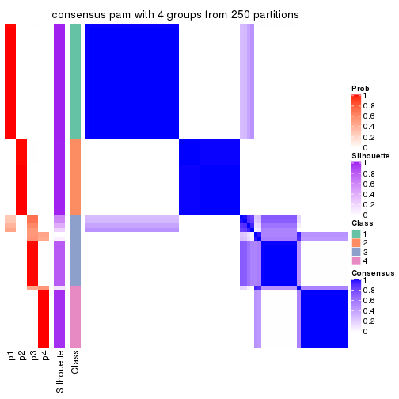
consensus_heatmap(res, k = 5)
consensus_heatmap(res, k = 6)
Heatmaps for the membership of samples in all partitions to see how consistent they are:
membership_heatmap(res, k = 2)

membership_heatmap(res, k = 3)
membership_heatmap(res, k = 4)
membership_heatmap(res, k = 5)
membership_heatmap(res, k = 6)

As soon as we have had the classes for columns, we can look for signatures which are significantly different between classes which can be candidate marks for certain classes. Following are the heatmaps for signatures.
Signature heatmaps where rows are scaled:
get_signatures(res, k = 2)

get_signatures(res, k = 3)
get_signatures(res, k = 4)
get_signatures(res, k = 5)
get_signatures(res, k = 6)
Signature heatmaps where rows are not scaled:
get_signatures(res, k = 2, scale_rows = FALSE)

get_signatures(res, k = 3, scale_rows = FALSE)
get_signatures(res, k = 4, scale_rows = FALSE)
get_signatures(res, k = 5, scale_rows = FALSE)
get_signatures(res, k = 6, scale_rows = FALSE)
Compare the overlap of signatures from different k:
compare_signatures(res)
get_signature() returns a data frame invisibly. TO get the list of signatures, the function
call should be assigned to a variable explicitly. In following code, if plot argument is set
to FALSE, no heatmap is plotted while only the differential analysis is performed.
# code only for demonstration
tb = get_signature(res, k = ..., plot = FALSE)
An example of the output of tb is:
#> which_row fdr mean_1 mean_2 scaled_mean_1 scaled_mean_2 km
#> 1 38 0.042760348 8.373488 9.131774 -0.5533452 0.5164555 1
#> 2 40 0.018707592 7.106213 8.469186 -0.6173731 0.5762149 1
#> 3 55 0.019134737 10.221463 11.207825 -0.6159697 0.5749050 1
#> 4 59 0.006059896 5.921854 7.869574 -0.6899429 0.6439467 1
#> 5 60 0.018055526 8.928898 10.211722 -0.6204761 0.5791110 1
#> 6 98 0.009384629 15.714769 14.887706 0.6635654 -0.6193277 2
...
The columns in tb are:
which_row: row indices corresponding to the input matrix.fdr: FDR for the differential test. mean_x: The mean value in group x.scaled_mean_x: The mean value in group x after rows are scaled.km: Row groups if k-means clustering is applied to rows.UMAP plot which shows how samples are separated.
dimension_reduction(res, k = 2, method = "UMAP")
dimension_reduction(res, k = 3, method = "UMAP")

dimension_reduction(res, k = 4, method = "UMAP")
dimension_reduction(res, k = 5, method = "UMAP")
dimension_reduction(res, k = 6, method = "UMAP")
Following heatmap shows how subgroups are split when increasing k:
collect_classes(res)
If matrix rows can be associated to genes, consider to use functional_enrichment(res,
...) to perform function enrichment for the signature genes. See this vignette for more detailed explanations.
The object with results only for a single top-value method and a single partition method can be extracted as:
res = res_list["MAD", "mclust"]
# you can also extract it by
# res = res_list["MAD:mclust"]
A summary of res and all the functions that can be applied to it:
res
#> A 'ConsensusPartition' object with k = 2, 3, 4, 5, 6.
#> On a matrix with 16769 rows and 73 columns.
#> Top rows (1000, 2000, 3000, 4000, 5000) are extracted by 'MAD' method.
#> Subgroups are detected by 'mclust' method.
#> Performed in total 1250 partitions by row resampling.
#> Best k for subgroups seems to be 5.
#>
#> Following methods can be applied to this 'ConsensusPartition' object:
#> [1] "cola_report" "collect_classes" "collect_plots"
#> [4] "collect_stats" "colnames" "compare_signatures"
#> [7] "consensus_heatmap" "dimension_reduction" "functional_enrichment"
#> [10] "get_anno_col" "get_anno" "get_classes"
#> [13] "get_consensus" "get_matrix" "get_membership"
#> [16] "get_param" "get_signatures" "get_stats"
#> [19] "is_best_k" "is_stable_k" "membership_heatmap"
#> [22] "ncol" "nrow" "plot_ecdf"
#> [25] "rownames" "select_partition_number" "show"
#> [28] "suggest_best_k" "test_to_known_factors"
collect_plots() function collects all the plots made from res for all k (number of partitions)
into one single page to provide an easy and fast comparison between different k.
collect_plots(res)
The plots are:
k and the heatmap of
predicted classes for each k.k.k.k.All the plots in panels can be made by individual functions and they are plotted later in this section.
select_partition_number() produces several plots showing different
statistics for choosing “optimized” k. There are following statistics:
k;k, the area increased is defined as \(A_k - A_{k-1}\).The detailed explanations of these statistics can be found in the cola vignette.
Generally speaking, lower PAC score, higher mean silhouette score or higher
concordance corresponds to better partition. Rand index and Jaccard index
measure how similar the current partition is compared to partition with k-1.
If they are too similar, we won't accept k is better than k-1.
select_partition_number(res)
The numeric values for all these statistics can be obtained by get_stats().
get_stats(res)
#> k 1-PAC mean_silhouette concordance area_increased Rand Jaccard
#> 2 2 1.000 1.000 1.000 0.3629 0.638 0.638
#> 3 3 1.000 1.000 1.000 0.8171 0.703 0.535
#> 4 4 0.887 0.877 0.928 0.1092 0.884 0.675
#> 5 5 0.964 0.925 0.958 0.0541 0.928 0.743
#> 6 6 0.888 0.861 0.912 0.0357 0.956 0.821
suggest_best_k() suggests the best \(k\) based on these statistics. The rules are as follows:
suggest_best_k(res)
#> [1] 5
#> attr(,"optional")
#> [1] 2 3
There is also optional best \(k\) = 2 3 that is worth to check.
Following shows the table of the partitions (You need to click the show/hide
code output link to see it). The membership matrix (columns with name p*)
is inferred by
clue::cl_consensus()
function with the SE method. Basically the value in the membership matrix
represents the probability to belong to a certain group. The finall class
label for an item is determined with the group with highest probability it
belongs to.
In get_classes() function, the entropy is calculated from the membership
matrix and the silhouette score is calculated from the consensus matrix.
cbind(get_classes(res, k = 2), get_membership(res, k = 2))
#> class entropy silhouette p1 p2
#> SRR2453324 1 0 1 1 0
#> SRR2453325 1 0 1 1 0
#> SRR2453323 2 0 1 0 1
#> SRR2453321 1 0 1 1 0
#> SRR2453322 1 0 1 1 0
#> SRR2453320 2 0 1 0 1
#> SRR2453319 2 0 1 0 1
#> SRR2453318 2 0 1 0 1
#> SRR2453317 1 0 1 1 0
#> SRR2453316 1 0 1 1 0
#> SRR2453315 1 0 1 1 0
#> SRR2453312 1 0 1 1 0
#> SRR2453313 1 0 1 1 0
#> SRR2453314 1 0 1 1 0
#> SRR2453311 2 0 1 0 1
#> SRR2453310 1 0 1 1 0
#> SRR2453309 2 0 1 0 1
#> SRR2453308 1 0 1 1 0
#> SRR2453307 2 0 1 0 1
#> SRR2453306 1 0 1 1 0
#> SRR2453305 2 0 1 0 1
#> SRR2453303 1 0 1 1 0
#> SRR2453304 1 0 1 1 0
#> SRR2453302 2 0 1 0 1
#> SRR2453301 1 0 1 1 0
#> SRR2453299 2 0 1 0 1
#> SRR2453300 2 0 1 0 1
#> SRR2453371 1 0 1 1 0
#> SRR2453370 1 0 1 1 0
#> SRR2453369 1 0 1 1 0
#> SRR2453366 1 0 1 1 0
#> SRR2453367 1 0 1 1 0
#> SRR2453368 1 0 1 1 0
#> SRR2453365 1 0 1 1 0
#> SRR2453364 1 0 1 1 0
#> SRR2453363 1 0 1 1 0
#> SRR2453362 1 0 1 1 0
#> SRR2453361 1 0 1 1 0
#> SRR2453359 1 0 1 1 0
#> SRR2453360 1 0 1 1 0
#> SRR2453357 1 0 1 1 0
#> SRR2453356 1 0 1 1 0
#> SRR2453358 1 0 1 1 0
#> SRR2453355 1 0 1 1 0
#> SRR2453354 1 0 1 1 0
#> SRR2453353 1 0 1 1 0
#> SRR2453352 1 0 1 1 0
#> SRR2453351 1 0 1 1 0
#> SRR2453350 1 0 1 1 0
#> SRR2453349 1 0 1 1 0
#> SRR2453348 1 0 1 1 0
#> SRR2453346 1 0 1 1 0
#> SRR2453347 1 0 1 1 0
#> SRR2453345 1 0 1 1 0
#> SRR2453343 1 0 1 1 0
#> SRR2453344 1 0 1 1 0
#> SRR2453341 2 0 1 0 1
#> SRR2453340 1 0 1 1 0
#> SRR2453339 1 0 1 1 0
#> SRR2453337 1 0 1 1 0
#> SRR2453338 1 0 1 1 0
#> SRR2453336 2 0 1 0 1
#> SRR2453335 2 0 1 0 1
#> SRR2453334 2 0 1 0 1
#> SRR2453332 2 0 1 0 1
#> SRR2453333 2 0 1 0 1
#> SRR2453342 1 0 1 1 0
#> SRR2453331 1 0 1 1 0
#> SRR2453329 1 0 1 1 0
#> SRR2453330 1 0 1 1 0
#> SRR2453328 1 0 1 1 0
#> SRR2453326 1 0 1 1 0
#> SRR2453327 1 0 1 1 0
cbind(get_classes(res, k = 3), get_membership(res, k = 3))
#> class entropy silhouette p1 p2 p3
#> SRR2453324 3 0 1 0 0 1
#> SRR2453325 3 0 1 0 0 1
#> SRR2453323 2 0 1 0 1 0
#> SRR2453321 3 0 1 0 0 1
#> SRR2453322 3 0 1 0 0 1
#> SRR2453320 2 0 1 0 1 0
#> SRR2453319 2 0 1 0 1 0
#> SRR2453318 2 0 1 0 1 0
#> SRR2453317 3 0 1 0 0 1
#> SRR2453316 3 0 1 0 0 1
#> SRR2453315 3 0 1 0 0 1
#> SRR2453312 3 0 1 0 0 1
#> SRR2453313 3 0 1 0 0 1
#> SRR2453314 3 0 1 0 0 1
#> SRR2453311 2 0 1 0 1 0
#> SRR2453310 3 0 1 0 0 1
#> SRR2453309 2 0 1 0 1 0
#> SRR2453308 3 0 1 0 0 1
#> SRR2453307 2 0 1 0 1 0
#> SRR2453306 3 0 1 0 0 1
#> SRR2453305 2 0 1 0 1 0
#> SRR2453303 3 0 1 0 0 1
#> SRR2453304 3 0 1 0 0 1
#> SRR2453302 2 0 1 0 1 0
#> SRR2453301 3 0 1 0 0 1
#> SRR2453299 2 0 1 0 1 0
#> SRR2453300 2 0 1 0 1 0
#> SRR2453371 1 0 1 1 0 0
#> SRR2453370 1 0 1 1 0 0
#> SRR2453369 1 0 1 1 0 0
#> SRR2453366 1 0 1 1 0 0
#> SRR2453367 1 0 1 1 0 0
#> SRR2453368 1 0 1 1 0 0
#> SRR2453365 1 0 1 1 0 0
#> SRR2453364 1 0 1 1 0 0
#> SRR2453363 1 0 1 1 0 0
#> SRR2453362 1 0 1 1 0 0
#> SRR2453361 1 0 1 1 0 0
#> SRR2453359 1 0 1 1 0 0
#> SRR2453360 1 0 1 1 0 0
#> SRR2453357 1 0 1 1 0 0
#> SRR2453356 1 0 1 1 0 0
#> SRR2453358 1 0 1 1 0 0
#> SRR2453355 1 0 1 1 0 0
#> SRR2453354 1 0 1 1 0 0
#> SRR2453353 1 0 1 1 0 0
#> SRR2453352 1 0 1 1 0 0
#> SRR2453351 1 0 1 1 0 0
#> SRR2453350 1 0 1 1 0 0
#> SRR2453349 1 0 1 1 0 0
#> SRR2453348 1 0 1 1 0 0
#> SRR2453346 1 0 1 1 0 0
#> SRR2453347 1 0 1 1 0 0
#> SRR2453345 1 0 1 1 0 0
#> SRR2453343 1 0 1 1 0 0
#> SRR2453344 1 0 1 1 0 0
#> SRR2453341 2 0 1 0 1 0
#> SRR2453340 3 0 1 0 0 1
#> SRR2453339 3 0 1 0 0 1
#> SRR2453337 3 0 1 0 0 1
#> SRR2453338 3 0 1 0 0 1
#> SRR2453336 2 0 1 0 1 0
#> SRR2453335 2 0 1 0 1 0
#> SRR2453334 2 0 1 0 1 0
#> SRR2453332 2 0 1 0 1 0
#> SRR2453333 2 0 1 0 1 0
#> SRR2453342 1 0 1 1 0 0
#> SRR2453331 3 0 1 0 0 1
#> SRR2453329 3 0 1 0 0 1
#> SRR2453330 3 0 1 0 0 1
#> SRR2453328 3 0 1 0 0 1
#> SRR2453326 3 0 1 0 0 1
#> SRR2453327 3 0 1 0 0 1
cbind(get_classes(res, k = 4), get_membership(res, k = 4))
#> class entropy silhouette p1 p2 p3 p4
#> SRR2453324 3 0.4222 0.511 0.000 0 0.728 0.272
#> SRR2453325 3 0.4222 0.511 0.000 0 0.728 0.272
#> SRR2453323 2 0.0000 1.000 0.000 1 0.000 0.000
#> SRR2453321 3 0.2589 0.722 0.000 0 0.884 0.116
#> SRR2453322 3 0.2589 0.722 0.000 0 0.884 0.116
#> SRR2453320 2 0.0000 1.000 0.000 1 0.000 0.000
#> SRR2453319 2 0.0000 1.000 0.000 1 0.000 0.000
#> SRR2453318 2 0.0000 1.000 0.000 1 0.000 0.000
#> SRR2453317 4 0.3907 0.796 0.000 0 0.232 0.768
#> SRR2453316 4 0.3907 0.796 0.000 0 0.232 0.768
#> SRR2453315 4 0.3907 0.796 0.000 0 0.232 0.768
#> SRR2453312 4 0.0000 0.879 0.000 0 0.000 1.000
#> SRR2453313 4 0.0000 0.879 0.000 0 0.000 1.000
#> SRR2453314 4 0.0000 0.879 0.000 0 0.000 1.000
#> SRR2453311 2 0.0000 1.000 0.000 1 0.000 0.000
#> SRR2453310 4 0.0000 0.879 0.000 0 0.000 1.000
#> SRR2453309 2 0.0000 1.000 0.000 1 0.000 0.000
#> SRR2453308 3 0.2589 0.722 0.000 0 0.884 0.116
#> SRR2453307 2 0.0000 1.000 0.000 1 0.000 0.000
#> SRR2453306 3 0.2647 0.720 0.000 0 0.880 0.120
#> SRR2453305 2 0.0000 1.000 0.000 1 0.000 0.000
#> SRR2453303 3 0.2589 0.722 0.000 0 0.884 0.116
#> SRR2453304 3 0.2589 0.722 0.000 0 0.884 0.116
#> SRR2453302 2 0.0000 1.000 0.000 1 0.000 0.000
#> SRR2453301 4 0.0000 0.879 0.000 0 0.000 1.000
#> SRR2453299 2 0.0000 1.000 0.000 1 0.000 0.000
#> SRR2453300 2 0.0000 1.000 0.000 1 0.000 0.000
#> SRR2453371 1 0.0000 0.981 1.000 0 0.000 0.000
#> SRR2453370 1 0.0188 0.978 0.996 0 0.000 0.004
#> SRR2453369 1 0.0817 0.977 0.976 0 0.024 0.000
#> SRR2453366 1 0.0000 0.981 1.000 0 0.000 0.000
#> SRR2453367 1 0.1406 0.968 0.960 0 0.024 0.016
#> SRR2453368 1 0.0817 0.977 0.976 0 0.024 0.000
#> SRR2453365 1 0.0000 0.981 1.000 0 0.000 0.000
#> SRR2453364 1 0.0000 0.981 1.000 0 0.000 0.000
#> SRR2453363 3 0.4817 0.343 0.388 0 0.612 0.000
#> SRR2453362 1 0.0817 0.977 0.976 0 0.024 0.000
#> SRR2453361 3 0.4817 0.343 0.388 0 0.612 0.000
#> SRR2453359 1 0.0000 0.981 1.000 0 0.000 0.000
#> SRR2453360 1 0.0000 0.981 1.000 0 0.000 0.000
#> SRR2453357 3 0.4817 0.343 0.388 0 0.612 0.000
#> SRR2453356 3 0.4817 0.343 0.388 0 0.612 0.000
#> SRR2453358 1 0.0000 0.981 1.000 0 0.000 0.000
#> SRR2453355 1 0.0000 0.981 1.000 0 0.000 0.000
#> SRR2453354 1 0.0000 0.981 1.000 0 0.000 0.000
#> SRR2453353 1 0.0817 0.977 0.976 0 0.024 0.000
#> SRR2453352 1 0.0817 0.977 0.976 0 0.024 0.000
#> SRR2453351 1 0.3024 0.848 0.852 0 0.148 0.000
#> SRR2453350 1 0.0000 0.981 1.000 0 0.000 0.000
#> SRR2453349 1 0.0000 0.981 1.000 0 0.000 0.000
#> SRR2453348 1 0.0000 0.981 1.000 0 0.000 0.000
#> SRR2453346 1 0.2376 0.913 0.916 0 0.016 0.068
#> SRR2453347 1 0.0817 0.977 0.976 0 0.024 0.000
#> SRR2453345 1 0.0817 0.977 0.976 0 0.024 0.000
#> SRR2453343 1 0.0817 0.977 0.976 0 0.024 0.000
#> SRR2453344 1 0.0000 0.981 1.000 0 0.000 0.000
#> SRR2453341 2 0.0000 1.000 0.000 1 0.000 0.000
#> SRR2453340 4 0.3610 0.824 0.000 0 0.200 0.800
#> SRR2453339 4 0.3610 0.824 0.000 0 0.200 0.800
#> SRR2453337 4 0.3610 0.824 0.000 0 0.200 0.800
#> SRR2453338 4 0.3610 0.824 0.000 0 0.200 0.800
#> SRR2453336 2 0.0000 1.000 0.000 1 0.000 0.000
#> SRR2453335 2 0.0000 1.000 0.000 1 0.000 0.000
#> SRR2453334 2 0.0000 1.000 0.000 1 0.000 0.000
#> SRR2453332 2 0.0000 1.000 0.000 1 0.000 0.000
#> SRR2453333 2 0.0000 1.000 0.000 1 0.000 0.000
#> SRR2453342 1 0.0817 0.977 0.976 0 0.024 0.000
#> SRR2453331 4 0.0000 0.879 0.000 0 0.000 1.000
#> SRR2453329 4 0.0000 0.879 0.000 0 0.000 1.000
#> SRR2453330 4 0.0000 0.879 0.000 0 0.000 1.000
#> SRR2453328 4 0.0000 0.879 0.000 0 0.000 1.000
#> SRR2453326 3 0.2814 0.711 0.000 0 0.868 0.132
#> SRR2453327 3 0.2814 0.711 0.000 0 0.868 0.132
cbind(get_classes(res, k = 5), get_membership(res, k = 5))
#> class entropy silhouette p1 p2 p3 p4 p5
#> SRR2453324 4 0.4287 0.412 0.000 0 0.460 0.540 0.000
#> SRR2453325 4 0.4287 0.412 0.000 0 0.460 0.540 0.000
#> SRR2453323 2 0.0000 1.000 0.000 1 0.000 0.000 0.000
#> SRR2453321 3 0.0000 0.971 0.000 0 1.000 0.000 0.000
#> SRR2453322 3 0.0000 0.971 0.000 0 1.000 0.000 0.000
#> SRR2453320 2 0.0000 1.000 0.000 1 0.000 0.000 0.000
#> SRR2453319 2 0.0000 1.000 0.000 1 0.000 0.000 0.000
#> SRR2453318 2 0.0000 1.000 0.000 1 0.000 0.000 0.000
#> SRR2453317 3 0.1544 0.928 0.000 0 0.932 0.068 0.000
#> SRR2453316 3 0.1544 0.928 0.000 0 0.932 0.068 0.000
#> SRR2453315 3 0.1544 0.928 0.000 0 0.932 0.068 0.000
#> SRR2453312 4 0.0000 0.836 0.000 0 0.000 1.000 0.000
#> SRR2453313 4 0.0000 0.836 0.000 0 0.000 1.000 0.000
#> SRR2453314 4 0.0000 0.836 0.000 0 0.000 1.000 0.000
#> SRR2453311 2 0.0000 1.000 0.000 1 0.000 0.000 0.000
#> SRR2453310 4 0.0000 0.836 0.000 0 0.000 1.000 0.000
#> SRR2453309 2 0.0000 1.000 0.000 1 0.000 0.000 0.000
#> SRR2453308 3 0.0000 0.971 0.000 0 1.000 0.000 0.000
#> SRR2453307 2 0.0000 1.000 0.000 1 0.000 0.000 0.000
#> SRR2453306 4 0.4268 0.447 0.000 0 0.444 0.556 0.000
#> SRR2453305 2 0.0000 1.000 0.000 1 0.000 0.000 0.000
#> SRR2453303 3 0.0000 0.971 0.000 0 1.000 0.000 0.000
#> SRR2453304 3 0.0000 0.971 0.000 0 1.000 0.000 0.000
#> SRR2453302 2 0.0000 1.000 0.000 1 0.000 0.000 0.000
#> SRR2453301 4 0.0000 0.836 0.000 0 0.000 1.000 0.000
#> SRR2453299 2 0.0000 1.000 0.000 1 0.000 0.000 0.000
#> SRR2453300 2 0.0000 1.000 0.000 1 0.000 0.000 0.000
#> SRR2453371 1 0.0880 0.969 0.968 0 0.000 0.000 0.032
#> SRR2453370 1 0.0162 0.975 0.996 0 0.000 0.000 0.004
#> SRR2453369 1 0.1341 0.959 0.944 0 0.000 0.000 0.056
#> SRR2453366 1 0.0703 0.972 0.976 0 0.000 0.000 0.024
#> SRR2453367 1 0.1121 0.965 0.956 0 0.000 0.000 0.044
#> SRR2453368 1 0.0404 0.975 0.988 0 0.000 0.000 0.012
#> SRR2453365 1 0.0000 0.975 1.000 0 0.000 0.000 0.000
#> SRR2453364 1 0.0000 0.975 1.000 0 0.000 0.000 0.000
#> SRR2453363 5 0.0000 1.000 0.000 0 0.000 0.000 1.000
#> SRR2453362 1 0.1851 0.936 0.912 0 0.000 0.000 0.088
#> SRR2453361 5 0.0000 1.000 0.000 0 0.000 0.000 1.000
#> SRR2453359 1 0.0000 0.975 1.000 0 0.000 0.000 0.000
#> SRR2453360 1 0.0000 0.975 1.000 0 0.000 0.000 0.000
#> SRR2453357 5 0.0000 1.000 0.000 0 0.000 0.000 1.000
#> SRR2453356 5 0.0000 1.000 0.000 0 0.000 0.000 1.000
#> SRR2453358 1 0.0000 0.975 1.000 0 0.000 0.000 0.000
#> SRR2453355 1 0.0000 0.975 1.000 0 0.000 0.000 0.000
#> SRR2453354 1 0.0000 0.975 1.000 0 0.000 0.000 0.000
#> SRR2453353 1 0.1341 0.959 0.944 0 0.000 0.000 0.056
#> SRR2453352 1 0.1851 0.936 0.912 0 0.000 0.000 0.088
#> SRR2453351 5 0.0000 1.000 0.000 0 0.000 0.000 1.000
#> SRR2453350 1 0.0000 0.975 1.000 0 0.000 0.000 0.000
#> SRR2453349 1 0.0404 0.974 0.988 0 0.000 0.000 0.012
#> SRR2453348 1 0.0000 0.975 1.000 0 0.000 0.000 0.000
#> SRR2453346 1 0.0162 0.975 0.996 0 0.000 0.000 0.004
#> SRR2453347 1 0.1341 0.959 0.944 0 0.000 0.000 0.056
#> SRR2453345 1 0.1121 0.965 0.956 0 0.000 0.000 0.044
#> SRR2453343 1 0.2377 0.886 0.872 0 0.000 0.000 0.128
#> SRR2453344 1 0.0000 0.975 1.000 0 0.000 0.000 0.000
#> SRR2453341 2 0.0000 1.000 0.000 1 0.000 0.000 0.000
#> SRR2453340 4 0.3109 0.768 0.000 0 0.200 0.800 0.000
#> SRR2453339 4 0.3242 0.755 0.000 0 0.216 0.784 0.000
#> SRR2453337 4 0.3109 0.768 0.000 0 0.200 0.800 0.000
#> SRR2453338 4 0.3109 0.768 0.000 0 0.200 0.800 0.000
#> SRR2453336 2 0.0000 1.000 0.000 1 0.000 0.000 0.000
#> SRR2453335 2 0.0000 1.000 0.000 1 0.000 0.000 0.000
#> SRR2453334 2 0.0000 1.000 0.000 1 0.000 0.000 0.000
#> SRR2453332 2 0.0000 1.000 0.000 1 0.000 0.000 0.000
#> SRR2453333 2 0.0000 1.000 0.000 1 0.000 0.000 0.000
#> SRR2453342 1 0.0510 0.973 0.984 0 0.000 0.000 0.016
#> SRR2453331 4 0.0000 0.836 0.000 0 0.000 1.000 0.000
#> SRR2453329 4 0.0000 0.836 0.000 0 0.000 1.000 0.000
#> SRR2453330 4 0.0000 0.836 0.000 0 0.000 1.000 0.000
#> SRR2453328 4 0.0000 0.836 0.000 0 0.000 1.000 0.000
#> SRR2453326 3 0.0000 0.971 0.000 0 1.000 0.000 0.000
#> SRR2453327 3 0.0000 0.971 0.000 0 1.000 0.000 0.000
cbind(get_classes(res, k = 6), get_membership(res, k = 6))
#> class entropy silhouette p1 p2 p3 p4 p5 p6
#> SRR2453324 3 0.2378 0.678 0.000 0 0.848 0.152 0.000 0.000
#> SRR2453325 3 0.2378 0.678 0.000 0 0.848 0.152 0.000 0.000
#> SRR2453323 2 0.0000 1.000 0.000 1 0.000 0.000 0.000 0.000
#> SRR2453321 3 0.3727 0.752 0.000 0 0.612 0.000 0.000 0.388
#> SRR2453322 3 0.3727 0.752 0.000 0 0.612 0.000 0.000 0.388
#> SRR2453320 2 0.0000 1.000 0.000 1 0.000 0.000 0.000 0.000
#> SRR2453319 2 0.0000 1.000 0.000 1 0.000 0.000 0.000 0.000
#> SRR2453318 2 0.0000 1.000 0.000 1 0.000 0.000 0.000 0.000
#> SRR2453317 3 0.0777 0.769 0.000 0 0.972 0.024 0.000 0.004
#> SRR2453316 3 0.0777 0.769 0.000 0 0.972 0.024 0.000 0.004
#> SRR2453315 3 0.0777 0.769 0.000 0 0.972 0.024 0.000 0.004
#> SRR2453312 4 0.0000 0.921 0.000 0 0.000 1.000 0.000 0.000
#> SRR2453313 4 0.0000 0.921 0.000 0 0.000 1.000 0.000 0.000
#> SRR2453314 4 0.0000 0.921 0.000 0 0.000 1.000 0.000 0.000
#> SRR2453311 2 0.0000 1.000 0.000 1 0.000 0.000 0.000 0.000
#> SRR2453310 4 0.0000 0.921 0.000 0 0.000 1.000 0.000 0.000
#> SRR2453309 2 0.0000 1.000 0.000 1 0.000 0.000 0.000 0.000
#> SRR2453308 3 0.2762 0.797 0.000 0 0.804 0.000 0.000 0.196
#> SRR2453307 2 0.0000 1.000 0.000 1 0.000 0.000 0.000 0.000
#> SRR2453306 3 0.4964 0.692 0.000 0 0.648 0.152 0.000 0.200
#> SRR2453305 2 0.0000 1.000 0.000 1 0.000 0.000 0.000 0.000
#> SRR2453303 3 0.2730 0.797 0.000 0 0.808 0.000 0.000 0.192
#> SRR2453304 3 0.2730 0.797 0.000 0 0.808 0.000 0.000 0.192
#> SRR2453302 2 0.0000 1.000 0.000 1 0.000 0.000 0.000 0.000
#> SRR2453301 4 0.0000 0.921 0.000 0 0.000 1.000 0.000 0.000
#> SRR2453299 2 0.0000 1.000 0.000 1 0.000 0.000 0.000 0.000
#> SRR2453300 2 0.0000 1.000 0.000 1 0.000 0.000 0.000 0.000
#> SRR2453371 1 0.2147 0.827 0.896 0 0.000 0.000 0.084 0.020
#> SRR2453370 1 0.0146 0.879 0.996 0 0.000 0.000 0.004 0.000
#> SRR2453369 1 0.4442 0.573 0.712 0 0.000 0.000 0.120 0.168
#> SRR2453366 1 0.1926 0.840 0.912 0 0.000 0.000 0.068 0.020
#> SRR2453367 1 0.4854 0.299 0.636 0 0.000 0.000 0.100 0.264
#> SRR2453368 1 0.0891 0.873 0.968 0 0.000 0.000 0.024 0.008
#> SRR2453365 1 0.0146 0.879 0.996 0 0.000 0.000 0.000 0.004
#> SRR2453364 1 0.0000 0.879 1.000 0 0.000 0.000 0.000 0.000
#> SRR2453363 5 0.0458 0.984 0.000 0 0.000 0.000 0.984 0.016
#> SRR2453362 1 0.3992 0.680 0.760 0 0.000 0.000 0.136 0.104
#> SRR2453361 5 0.0000 0.995 0.000 0 0.000 0.000 1.000 0.000
#> SRR2453359 1 0.0000 0.879 1.000 0 0.000 0.000 0.000 0.000
#> SRR2453360 1 0.0146 0.879 0.996 0 0.000 0.000 0.000 0.004
#> SRR2453357 5 0.0000 0.995 0.000 0 0.000 0.000 1.000 0.000
#> SRR2453356 5 0.0000 0.995 0.000 0 0.000 0.000 1.000 0.000
#> SRR2453358 1 0.0000 0.879 1.000 0 0.000 0.000 0.000 0.000
#> SRR2453355 1 0.0000 0.879 1.000 0 0.000 0.000 0.000 0.000
#> SRR2453354 1 0.0000 0.879 1.000 0 0.000 0.000 0.000 0.000
#> SRR2453353 1 0.3698 0.716 0.788 0 0.000 0.000 0.116 0.096
#> SRR2453352 1 0.3992 0.680 0.760 0 0.000 0.000 0.136 0.104
#> SRR2453351 5 0.0146 0.993 0.000 0 0.000 0.000 0.996 0.004
#> SRR2453350 1 0.0260 0.878 0.992 0 0.000 0.000 0.000 0.008
#> SRR2453349 1 0.1297 0.862 0.948 0 0.000 0.000 0.040 0.012
#> SRR2453348 1 0.0146 0.879 0.996 0 0.000 0.000 0.000 0.004
#> SRR2453346 1 0.0603 0.876 0.980 0 0.000 0.000 0.016 0.004
#> SRR2453347 1 0.3464 0.747 0.808 0 0.000 0.000 0.108 0.084
#> SRR2453345 6 0.5137 0.656 0.352 0 0.000 0.000 0.096 0.552
#> SRR2453343 6 0.5423 0.607 0.184 0 0.000 0.000 0.240 0.576
#> SRR2453344 1 0.0000 0.879 1.000 0 0.000 0.000 0.000 0.000
#> SRR2453341 2 0.0000 1.000 0.000 1 0.000 0.000 0.000 0.000
#> SRR2453340 4 0.2805 0.815 0.000 0 0.184 0.812 0.000 0.004
#> SRR2453339 4 0.3636 0.635 0.000 0 0.320 0.676 0.000 0.004
#> SRR2453337 4 0.2805 0.815 0.000 0 0.184 0.812 0.000 0.004
#> SRR2453338 4 0.2805 0.815 0.000 0 0.184 0.812 0.000 0.004
#> SRR2453336 2 0.0000 1.000 0.000 1 0.000 0.000 0.000 0.000
#> SRR2453335 2 0.0000 1.000 0.000 1 0.000 0.000 0.000 0.000
#> SRR2453334 2 0.0000 1.000 0.000 1 0.000 0.000 0.000 0.000
#> SRR2453332 2 0.0000 1.000 0.000 1 0.000 0.000 0.000 0.000
#> SRR2453333 2 0.0000 1.000 0.000 1 0.000 0.000 0.000 0.000
#> SRR2453342 1 0.1745 0.843 0.924 0 0.000 0.000 0.020 0.056
#> SRR2453331 4 0.0000 0.921 0.000 0 0.000 1.000 0.000 0.000
#> SRR2453329 4 0.0000 0.921 0.000 0 0.000 1.000 0.000 0.000
#> SRR2453330 4 0.0000 0.921 0.000 0 0.000 1.000 0.000 0.000
#> SRR2453328 4 0.0000 0.921 0.000 0 0.000 1.000 0.000 0.000
#> SRR2453326 3 0.3727 0.752 0.000 0 0.612 0.000 0.000 0.388
#> SRR2453327 3 0.3727 0.752 0.000 0 0.612 0.000 0.000 0.388
Heatmaps for the consensus matrix. It visualizes the probability of two samples to be in a same group.
consensus_heatmap(res, k = 2)

consensus_heatmap(res, k = 3)
consensus_heatmap(res, k = 4)
consensus_heatmap(res, k = 5)
consensus_heatmap(res, k = 6)
Heatmaps for the membership of samples in all partitions to see how consistent they are:
membership_heatmap(res, k = 2)

membership_heatmap(res, k = 3)

membership_heatmap(res, k = 4)
membership_heatmap(res, k = 5)
membership_heatmap(res, k = 6)
As soon as we have had the classes for columns, we can look for signatures which are significantly different between classes which can be candidate marks for certain classes. Following are the heatmaps for signatures.
Signature heatmaps where rows are scaled:
get_signatures(res, k = 2)

get_signatures(res, k = 3)

get_signatures(res, k = 4)
get_signatures(res, k = 5)
get_signatures(res, k = 6)

Signature heatmaps where rows are not scaled:
get_signatures(res, k = 2, scale_rows = FALSE)

get_signatures(res, k = 3, scale_rows = FALSE)

get_signatures(res, k = 4, scale_rows = FALSE)
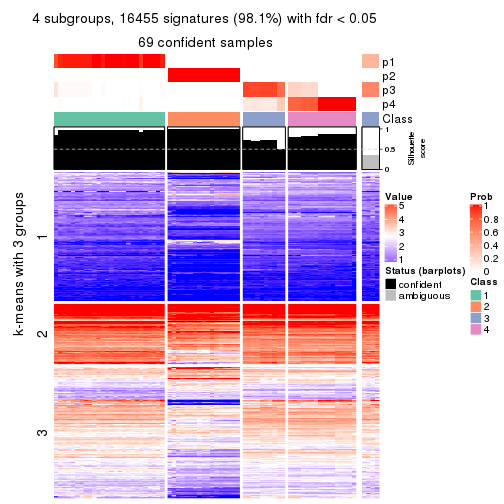
get_signatures(res, k = 5, scale_rows = FALSE)
get_signatures(res, k = 6, scale_rows = FALSE)
Compare the overlap of signatures from different k:
compare_signatures(res)
get_signature() returns a data frame invisibly. TO get the list of signatures, the function
call should be assigned to a variable explicitly. In following code, if plot argument is set
to FALSE, no heatmap is plotted while only the differential analysis is performed.
# code only for demonstration
tb = get_signature(res, k = ..., plot = FALSE)
An example of the output of tb is:
#> which_row fdr mean_1 mean_2 scaled_mean_1 scaled_mean_2 km
#> 1 38 0.042760348 8.373488 9.131774 -0.5533452 0.5164555 1
#> 2 40 0.018707592 7.106213 8.469186 -0.6173731 0.5762149 1
#> 3 55 0.019134737 10.221463 11.207825 -0.6159697 0.5749050 1
#> 4 59 0.006059896 5.921854 7.869574 -0.6899429 0.6439467 1
#> 5 60 0.018055526 8.928898 10.211722 -0.6204761 0.5791110 1
#> 6 98 0.009384629 15.714769 14.887706 0.6635654 -0.6193277 2
...
The columns in tb are:
which_row: row indices corresponding to the input matrix.fdr: FDR for the differential test. mean_x: The mean value in group x.scaled_mean_x: The mean value in group x after rows are scaled.km: Row groups if k-means clustering is applied to rows.UMAP plot which shows how samples are separated.
dimension_reduction(res, k = 2, method = "UMAP")

dimension_reduction(res, k = 3, method = "UMAP")

dimension_reduction(res, k = 4, method = "UMAP")
dimension_reduction(res, k = 5, method = "UMAP")
dimension_reduction(res, k = 6, method = "UMAP")
Following heatmap shows how subgroups are split when increasing k:
collect_classes(res)

If matrix rows can be associated to genes, consider to use functional_enrichment(res,
...) to perform function enrichment for the signature genes. See this vignette for more detailed explanations.
The object with results only for a single top-value method and a single partition method can be extracted as:
res = res_list["MAD", "NMF"]
# you can also extract it by
# res = res_list["MAD:NMF"]
A summary of res and all the functions that can be applied to it:
res
#> A 'ConsensusPartition' object with k = 2, 3, 4, 5, 6.
#> On a matrix with 16769 rows and 73 columns.
#> Top rows (1000, 2000, 3000, 4000, 5000) are extracted by 'MAD' method.
#> Subgroups are detected by 'NMF' method.
#> Performed in total 1250 partitions by row resampling.
#> Best k for subgroups seems to be 5.
#>
#> Following methods can be applied to this 'ConsensusPartition' object:
#> [1] "cola_report" "collect_classes" "collect_plots"
#> [4] "collect_stats" "colnames" "compare_signatures"
#> [7] "consensus_heatmap" "dimension_reduction" "functional_enrichment"
#> [10] "get_anno_col" "get_anno" "get_classes"
#> [13] "get_consensus" "get_matrix" "get_membership"
#> [16] "get_param" "get_signatures" "get_stats"
#> [19] "is_best_k" "is_stable_k" "membership_heatmap"
#> [22] "ncol" "nrow" "plot_ecdf"
#> [25] "rownames" "select_partition_number" "show"
#> [28] "suggest_best_k" "test_to_known_factors"
collect_plots() function collects all the plots made from res for all k (number of partitions)
into one single page to provide an easy and fast comparison between different k.
collect_plots(res)
The plots are:
k and the heatmap of
predicted classes for each k.k.k.k.All the plots in panels can be made by individual functions and they are plotted later in this section.
select_partition_number() produces several plots showing different
statistics for choosing “optimized” k. There are following statistics:
k;k, the area increased is defined as \(A_k - A_{k-1}\).The detailed explanations of these statistics can be found in the cola vignette.
Generally speaking, lower PAC score, higher mean silhouette score or higher
concordance corresponds to better partition. Rand index and Jaccard index
measure how similar the current partition is compared to partition with k-1.
If they are too similar, we won't accept k is better than k-1.
select_partition_number(res)
The numeric values for all these statistics can be obtained by get_stats().
get_stats(res)
#> k 1-PAC mean_silhouette concordance area_increased Rand Jaccard
#> 2 2 1.000 1.000 1.000 0.3629 0.638 0.638
#> 3 3 1.000 0.997 0.999 0.8173 0.703 0.535
#> 4 4 0.876 0.895 0.928 0.0936 0.899 0.713
#> 5 5 0.916 0.863 0.898 0.0529 0.986 0.948
#> 6 6 0.854 0.829 0.859 0.0425 0.924 0.713
suggest_best_k() suggests the best \(k\) based on these statistics. The rules are as follows:
suggest_best_k(res)
#> [1] 5
#> attr(,"optional")
#> [1] 2 3
There is also optional best \(k\) = 2 3 that is worth to check.
Following shows the table of the partitions (You need to click the show/hide
code output link to see it). The membership matrix (columns with name p*)
is inferred by
clue::cl_consensus()
function with the SE method. Basically the value in the membership matrix
represents the probability to belong to a certain group. The finall class
label for an item is determined with the group with highest probability it
belongs to.
In get_classes() function, the entropy is calculated from the membership
matrix and the silhouette score is calculated from the consensus matrix.
cbind(get_classes(res, k = 2), get_membership(res, k = 2))
#> class entropy silhouette p1 p2
#> SRR2453324 1 0 1 1 0
#> SRR2453325 1 0 1 1 0
#> SRR2453323 2 0 1 0 1
#> SRR2453321 1 0 1 1 0
#> SRR2453322 1 0 1 1 0
#> SRR2453320 2 0 1 0 1
#> SRR2453319 2 0 1 0 1
#> SRR2453318 2 0 1 0 1
#> SRR2453317 1 0 1 1 0
#> SRR2453316 1 0 1 1 0
#> SRR2453315 1 0 1 1 0
#> SRR2453312 1 0 1 1 0
#> SRR2453313 1 0 1 1 0
#> SRR2453314 1 0 1 1 0
#> SRR2453311 2 0 1 0 1
#> SRR2453310 1 0 1 1 0
#> SRR2453309 2 0 1 0 1
#> SRR2453308 1 0 1 1 0
#> SRR2453307 2 0 1 0 1
#> SRR2453306 1 0 1 1 0
#> SRR2453305 2 0 1 0 1
#> SRR2453303 1 0 1 1 0
#> SRR2453304 1 0 1 1 0
#> SRR2453302 2 0 1 0 1
#> SRR2453301 1 0 1 1 0
#> SRR2453299 2 0 1 0 1
#> SRR2453300 2 0 1 0 1
#> SRR2453371 1 0 1 1 0
#> SRR2453370 1 0 1 1 0
#> SRR2453369 1 0 1 1 0
#> SRR2453366 1 0 1 1 0
#> SRR2453367 1 0 1 1 0
#> SRR2453368 1 0 1 1 0
#> SRR2453365 1 0 1 1 0
#> SRR2453364 1 0 1 1 0
#> SRR2453363 1 0 1 1 0
#> SRR2453362 1 0 1 1 0
#> SRR2453361 1 0 1 1 0
#> SRR2453359 1 0 1 1 0
#> SRR2453360 1 0 1 1 0
#> SRR2453357 1 0 1 1 0
#> SRR2453356 1 0 1 1 0
#> SRR2453358 1 0 1 1 0
#> SRR2453355 1 0 1 1 0
#> SRR2453354 1 0 1 1 0
#> SRR2453353 1 0 1 1 0
#> SRR2453352 1 0 1 1 0
#> SRR2453351 1 0 1 1 0
#> SRR2453350 1 0 1 1 0
#> SRR2453349 1 0 1 1 0
#> SRR2453348 1 0 1 1 0
#> SRR2453346 1 0 1 1 0
#> SRR2453347 1 0 1 1 0
#> SRR2453345 1 0 1 1 0
#> SRR2453343 1 0 1 1 0
#> SRR2453344 1 0 1 1 0
#> SRR2453341 2 0 1 0 1
#> SRR2453340 1 0 1 1 0
#> SRR2453339 1 0 1 1 0
#> SRR2453337 1 0 1 1 0
#> SRR2453338 1 0 1 1 0
#> SRR2453336 2 0 1 0 1
#> SRR2453335 2 0 1 0 1
#> SRR2453334 2 0 1 0 1
#> SRR2453332 2 0 1 0 1
#> SRR2453333 2 0 1 0 1
#> SRR2453342 1 0 1 1 0
#> SRR2453331 1 0 1 1 0
#> SRR2453329 1 0 1 1 0
#> SRR2453330 1 0 1 1 0
#> SRR2453328 1 0 1 1 0
#> SRR2453326 1 0 1 1 0
#> SRR2453327 1 0 1 1 0
cbind(get_classes(res, k = 3), get_membership(res, k = 3))
#> class entropy silhouette p1 p2 p3
#> SRR2453324 3 0.000 1.000 0.000 0 1.000
#> SRR2453325 3 0.000 1.000 0.000 0 1.000
#> SRR2453323 2 0.000 1.000 0.000 1 0.000
#> SRR2453321 3 0.000 1.000 0.000 0 1.000
#> SRR2453322 3 0.000 1.000 0.000 0 1.000
#> SRR2453320 2 0.000 1.000 0.000 1 0.000
#> SRR2453319 2 0.000 1.000 0.000 1 0.000
#> SRR2453318 2 0.000 1.000 0.000 1 0.000
#> SRR2453317 3 0.000 1.000 0.000 0 1.000
#> SRR2453316 3 0.000 1.000 0.000 0 1.000
#> SRR2453315 3 0.000 1.000 0.000 0 1.000
#> SRR2453312 3 0.000 1.000 0.000 0 1.000
#> SRR2453313 3 0.000 1.000 0.000 0 1.000
#> SRR2453314 3 0.000 1.000 0.000 0 1.000
#> SRR2453311 2 0.000 1.000 0.000 1 0.000
#> SRR2453310 3 0.000 1.000 0.000 0 1.000
#> SRR2453309 2 0.000 1.000 0.000 1 0.000
#> SRR2453308 3 0.000 1.000 0.000 0 1.000
#> SRR2453307 2 0.000 1.000 0.000 1 0.000
#> SRR2453306 3 0.000 1.000 0.000 0 1.000
#> SRR2453305 2 0.000 1.000 0.000 1 0.000
#> SRR2453303 3 0.000 1.000 0.000 0 1.000
#> SRR2453304 3 0.000 1.000 0.000 0 1.000
#> SRR2453302 2 0.000 1.000 0.000 1 0.000
#> SRR2453301 3 0.000 1.000 0.000 0 1.000
#> SRR2453299 2 0.000 1.000 0.000 1 0.000
#> SRR2453300 2 0.000 1.000 0.000 1 0.000
#> SRR2453371 1 0.000 0.996 1.000 0 0.000
#> SRR2453370 1 0.000 0.996 1.000 0 0.000
#> SRR2453369 1 0.000 0.996 1.000 0 0.000
#> SRR2453366 1 0.000 0.996 1.000 0 0.000
#> SRR2453367 1 0.000 0.996 1.000 0 0.000
#> SRR2453368 1 0.000 0.996 1.000 0 0.000
#> SRR2453365 1 0.000 0.996 1.000 0 0.000
#> SRR2453364 1 0.000 0.996 1.000 0 0.000
#> SRR2453363 1 0.000 0.996 1.000 0 0.000
#> SRR2453362 1 0.000 0.996 1.000 0 0.000
#> SRR2453361 1 0.000 0.996 1.000 0 0.000
#> SRR2453359 1 0.000 0.996 1.000 0 0.000
#> SRR2453360 1 0.000 0.996 1.000 0 0.000
#> SRR2453357 1 0.186 0.944 0.948 0 0.052
#> SRR2453356 1 0.175 0.948 0.952 0 0.048
#> SRR2453358 1 0.000 0.996 1.000 0 0.000
#> SRR2453355 1 0.000 0.996 1.000 0 0.000
#> SRR2453354 1 0.000 0.996 1.000 0 0.000
#> SRR2453353 1 0.000 0.996 1.000 0 0.000
#> SRR2453352 1 0.000 0.996 1.000 0 0.000
#> SRR2453351 1 0.000 0.996 1.000 0 0.000
#> SRR2453350 1 0.000 0.996 1.000 0 0.000
#> SRR2453349 1 0.000 0.996 1.000 0 0.000
#> SRR2453348 1 0.000 0.996 1.000 0 0.000
#> SRR2453346 1 0.000 0.996 1.000 0 0.000
#> SRR2453347 1 0.000 0.996 1.000 0 0.000
#> SRR2453345 1 0.000 0.996 1.000 0 0.000
#> SRR2453343 1 0.000 0.996 1.000 0 0.000
#> SRR2453344 1 0.000 0.996 1.000 0 0.000
#> SRR2453341 2 0.000 1.000 0.000 1 0.000
#> SRR2453340 3 0.000 1.000 0.000 0 1.000
#> SRR2453339 3 0.000 1.000 0.000 0 1.000
#> SRR2453337 3 0.000 1.000 0.000 0 1.000
#> SRR2453338 3 0.000 1.000 0.000 0 1.000
#> SRR2453336 2 0.000 1.000 0.000 1 0.000
#> SRR2453335 2 0.000 1.000 0.000 1 0.000
#> SRR2453334 2 0.000 1.000 0.000 1 0.000
#> SRR2453332 2 0.000 1.000 0.000 1 0.000
#> SRR2453333 2 0.000 1.000 0.000 1 0.000
#> SRR2453342 1 0.000 0.996 1.000 0 0.000
#> SRR2453331 3 0.000 1.000 0.000 0 1.000
#> SRR2453329 3 0.000 1.000 0.000 0 1.000
#> SRR2453330 3 0.000 1.000 0.000 0 1.000
#> SRR2453328 3 0.000 1.000 0.000 0 1.000
#> SRR2453326 3 0.000 1.000 0.000 0 1.000
#> SRR2453327 3 0.000 1.000 0.000 0 1.000
cbind(get_classes(res, k = 4), get_membership(res, k = 4))
#> class entropy silhouette p1 p2 p3 p4
#> SRR2453324 4 0.4193 0.626 0.000 0.000 0.268 0.732
#> SRR2453325 4 0.4164 0.633 0.000 0.000 0.264 0.736
#> SRR2453323 2 0.1389 0.972 0.000 0.952 0.048 0.000
#> SRR2453321 3 0.4304 0.749 0.000 0.000 0.716 0.284
#> SRR2453322 3 0.4304 0.749 0.000 0.000 0.716 0.284
#> SRR2453320 2 0.1389 0.972 0.000 0.952 0.048 0.000
#> SRR2453319 2 0.1389 0.972 0.000 0.952 0.048 0.000
#> SRR2453318 2 0.0188 0.980 0.000 0.996 0.004 0.000
#> SRR2453317 4 0.3219 0.781 0.000 0.000 0.164 0.836
#> SRR2453316 4 0.3356 0.768 0.000 0.000 0.176 0.824
#> SRR2453315 4 0.3311 0.772 0.000 0.000 0.172 0.828
#> SRR2453312 4 0.0000 0.901 0.000 0.000 0.000 1.000
#> SRR2453313 4 0.0000 0.901 0.000 0.000 0.000 1.000
#> SRR2453314 4 0.0000 0.901 0.000 0.000 0.000 1.000
#> SRR2453311 2 0.0921 0.973 0.000 0.972 0.028 0.000
#> SRR2453310 4 0.0000 0.901 0.000 0.000 0.000 1.000
#> SRR2453309 2 0.0188 0.980 0.000 0.996 0.004 0.000
#> SRR2453308 3 0.4382 0.735 0.000 0.000 0.704 0.296
#> SRR2453307 2 0.1389 0.972 0.000 0.952 0.048 0.000
#> SRR2453306 4 0.4277 0.600 0.000 0.000 0.280 0.720
#> SRR2453305 2 0.1389 0.972 0.000 0.952 0.048 0.000
#> SRR2453303 3 0.4356 0.741 0.000 0.000 0.708 0.292
#> SRR2453304 3 0.4331 0.746 0.000 0.000 0.712 0.288
#> SRR2453302 2 0.1389 0.972 0.000 0.952 0.048 0.000
#> SRR2453301 4 0.0000 0.901 0.000 0.000 0.000 1.000
#> SRR2453299 2 0.0188 0.980 0.000 0.996 0.004 0.000
#> SRR2453300 2 0.0188 0.980 0.000 0.996 0.004 0.000
#> SRR2453371 1 0.0000 0.984 1.000 0.000 0.000 0.000
#> SRR2453370 1 0.0000 0.984 1.000 0.000 0.000 0.000
#> SRR2453369 1 0.0000 0.984 1.000 0.000 0.000 0.000
#> SRR2453366 1 0.0000 0.984 1.000 0.000 0.000 0.000
#> SRR2453367 1 0.0000 0.984 1.000 0.000 0.000 0.000
#> SRR2453368 1 0.0000 0.984 1.000 0.000 0.000 0.000
#> SRR2453365 1 0.0000 0.984 1.000 0.000 0.000 0.000
#> SRR2453364 1 0.0000 0.984 1.000 0.000 0.000 0.000
#> SRR2453363 1 0.4543 0.452 0.676 0.000 0.324 0.000
#> SRR2453362 1 0.0000 0.984 1.000 0.000 0.000 0.000
#> SRR2453361 3 0.4456 0.643 0.280 0.000 0.716 0.004
#> SRR2453359 1 0.0000 0.984 1.000 0.000 0.000 0.000
#> SRR2453360 1 0.0000 0.984 1.000 0.000 0.000 0.000
#> SRR2453357 3 0.5085 0.677 0.260 0.000 0.708 0.032
#> SRR2453356 3 0.4868 0.679 0.256 0.000 0.720 0.024
#> SRR2453358 1 0.0000 0.984 1.000 0.000 0.000 0.000
#> SRR2453355 1 0.0000 0.984 1.000 0.000 0.000 0.000
#> SRR2453354 1 0.0000 0.984 1.000 0.000 0.000 0.000
#> SRR2453353 1 0.0188 0.981 0.996 0.000 0.004 0.000
#> SRR2453352 1 0.0000 0.984 1.000 0.000 0.000 0.000
#> SRR2453351 3 0.4594 0.644 0.280 0.000 0.712 0.008
#> SRR2453350 1 0.0000 0.984 1.000 0.000 0.000 0.000
#> SRR2453349 1 0.0000 0.984 1.000 0.000 0.000 0.000
#> SRR2453348 1 0.0000 0.984 1.000 0.000 0.000 0.000
#> SRR2453346 1 0.0000 0.984 1.000 0.000 0.000 0.000
#> SRR2453347 1 0.0000 0.984 1.000 0.000 0.000 0.000
#> SRR2453345 1 0.0188 0.981 0.996 0.000 0.004 0.000
#> SRR2453343 1 0.0707 0.966 0.980 0.000 0.020 0.000
#> SRR2453344 1 0.0000 0.984 1.000 0.000 0.000 0.000
#> SRR2453341 2 0.0921 0.972 0.000 0.972 0.028 0.000
#> SRR2453340 4 0.0188 0.900 0.000 0.000 0.004 0.996
#> SRR2453339 4 0.0336 0.899 0.000 0.000 0.008 0.992
#> SRR2453337 4 0.0188 0.900 0.000 0.000 0.004 0.996
#> SRR2453338 4 0.0188 0.900 0.000 0.000 0.004 0.996
#> SRR2453336 2 0.1302 0.964 0.000 0.956 0.044 0.000
#> SRR2453335 2 0.0000 0.980 0.000 1.000 0.000 0.000
#> SRR2453334 2 0.0188 0.980 0.000 0.996 0.004 0.000
#> SRR2453332 2 0.0000 0.980 0.000 1.000 0.000 0.000
#> SRR2453333 2 0.0000 0.980 0.000 1.000 0.000 0.000
#> SRR2453342 1 0.0000 0.984 1.000 0.000 0.000 0.000
#> SRR2453331 4 0.0000 0.901 0.000 0.000 0.000 1.000
#> SRR2453329 4 0.0000 0.901 0.000 0.000 0.000 1.000
#> SRR2453330 4 0.0000 0.901 0.000 0.000 0.000 1.000
#> SRR2453328 4 0.0000 0.901 0.000 0.000 0.000 1.000
#> SRR2453326 3 0.4304 0.749 0.000 0.000 0.716 0.284
#> SRR2453327 3 0.4304 0.749 0.000 0.000 0.716 0.284
cbind(get_classes(res, k = 5), get_membership(res, k = 5))
#> class entropy silhouette p1 p2 p3 p4 p5
#> SRR2453324 4 0.4909 0.594 0.000 0.000 0.380 0.588 NA
#> SRR2453325 4 0.4849 0.624 0.000 0.000 0.360 0.608 NA
#> SRR2453323 2 0.0000 0.784 0.000 1.000 0.000 0.000 NA
#> SRR2453321 3 0.1216 0.832 0.000 0.000 0.960 0.020 NA
#> SRR2453322 3 0.1216 0.832 0.000 0.000 0.960 0.020 NA
#> SRR2453320 2 0.0000 0.784 0.000 1.000 0.000 0.000 NA
#> SRR2453319 2 0.0000 0.784 0.000 1.000 0.000 0.000 NA
#> SRR2453318 2 0.3895 0.872 0.000 0.680 0.000 0.000 NA
#> SRR2453317 4 0.4752 0.671 0.000 0.000 0.316 0.648 NA
#> SRR2453316 4 0.4836 0.651 0.000 0.000 0.336 0.628 NA
#> SRR2453315 4 0.4836 0.651 0.000 0.000 0.336 0.628 NA
#> SRR2453312 4 0.0404 0.848 0.000 0.000 0.000 0.988 NA
#> SRR2453313 4 0.0404 0.848 0.000 0.000 0.000 0.988 NA
#> SRR2453314 4 0.0404 0.848 0.000 0.000 0.000 0.988 NA
#> SRR2453311 2 0.4249 0.842 0.000 0.568 0.000 0.000 NA
#> SRR2453310 4 0.0404 0.848 0.000 0.000 0.000 0.988 NA
#> SRR2453309 2 0.4114 0.865 0.000 0.624 0.000 0.000 NA
#> SRR2453308 3 0.1403 0.843 0.000 0.000 0.952 0.024 NA
#> SRR2453307 2 0.0000 0.784 0.000 1.000 0.000 0.000 NA
#> SRR2453306 4 0.4787 0.506 0.000 0.000 0.432 0.548 NA
#> SRR2453305 2 0.0000 0.784 0.000 1.000 0.000 0.000 NA
#> SRR2453303 3 0.2573 0.853 0.000 0.000 0.880 0.016 NA
#> SRR2453304 3 0.2470 0.853 0.000 0.000 0.884 0.012 NA
#> SRR2453302 2 0.0000 0.784 0.000 1.000 0.000 0.000 NA
#> SRR2453301 4 0.0404 0.848 0.000 0.000 0.000 0.988 NA
#> SRR2453299 2 0.3983 0.873 0.000 0.660 0.000 0.000 NA
#> SRR2453300 2 0.3983 0.873 0.000 0.660 0.000 0.000 NA
#> SRR2453371 1 0.0404 0.986 0.988 0.000 0.000 0.000 NA
#> SRR2453370 1 0.0162 0.988 0.996 0.000 0.000 0.000 NA
#> SRR2453369 1 0.0609 0.981 0.980 0.000 0.000 0.000 NA
#> SRR2453366 1 0.0162 0.988 0.996 0.000 0.000 0.000 NA
#> SRR2453367 1 0.0404 0.987 0.988 0.000 0.000 0.000 NA
#> SRR2453368 1 0.0451 0.985 0.988 0.000 0.000 0.008 NA
#> SRR2453365 1 0.0162 0.988 0.996 0.000 0.000 0.000 NA
#> SRR2453364 1 0.0000 0.989 1.000 0.000 0.000 0.000 NA
#> SRR2453363 3 0.6384 0.303 0.388 0.000 0.444 0.000 NA
#> SRR2453362 1 0.0609 0.983 0.980 0.000 0.000 0.000 NA
#> SRR2453361 3 0.3771 0.842 0.036 0.000 0.804 0.004 NA
#> SRR2453359 1 0.0162 0.988 0.996 0.000 0.000 0.000 NA
#> SRR2453360 1 0.0162 0.988 0.996 0.000 0.000 0.000 NA
#> SRR2453357 3 0.3844 0.833 0.044 0.000 0.792 0.000 NA
#> SRR2453356 3 0.3812 0.841 0.036 0.000 0.800 0.004 NA
#> SRR2453358 1 0.0162 0.988 0.996 0.000 0.000 0.000 NA
#> SRR2453355 1 0.0162 0.988 0.996 0.000 0.000 0.000 NA
#> SRR2453354 1 0.0000 0.989 1.000 0.000 0.000 0.000 NA
#> SRR2453353 1 0.1670 0.944 0.936 0.000 0.012 0.000 NA
#> SRR2453352 1 0.0609 0.983 0.980 0.000 0.000 0.000 NA
#> SRR2453351 3 0.3771 0.842 0.036 0.000 0.804 0.004 NA
#> SRR2453350 1 0.0162 0.988 0.996 0.000 0.000 0.000 NA
#> SRR2453349 1 0.0162 0.988 0.996 0.000 0.000 0.000 NA
#> SRR2453348 1 0.0162 0.988 0.996 0.000 0.000 0.000 NA
#> SRR2453346 1 0.0324 0.986 0.992 0.000 0.000 0.004 NA
#> SRR2453347 1 0.0000 0.989 1.000 0.000 0.000 0.000 NA
#> SRR2453345 1 0.1845 0.936 0.928 0.000 0.016 0.000 NA
#> SRR2453343 1 0.1106 0.968 0.964 0.000 0.024 0.000 NA
#> SRR2453344 1 0.0000 0.989 1.000 0.000 0.000 0.000 NA
#> SRR2453341 2 0.4192 0.855 0.000 0.596 0.000 0.000 NA
#> SRR2453340 4 0.1121 0.850 0.000 0.000 0.044 0.956 NA
#> SRR2453339 4 0.2561 0.826 0.000 0.000 0.096 0.884 NA
#> SRR2453337 4 0.1408 0.848 0.000 0.000 0.044 0.948 NA
#> SRR2453338 4 0.1121 0.850 0.000 0.000 0.044 0.956 NA
#> SRR2453336 2 0.4262 0.838 0.000 0.560 0.000 0.000 NA
#> SRR2453335 2 0.4030 0.871 0.000 0.648 0.000 0.000 NA
#> SRR2453334 2 0.3966 0.873 0.000 0.664 0.000 0.000 NA
#> SRR2453332 2 0.3999 0.873 0.000 0.656 0.000 0.000 NA
#> SRR2453333 2 0.3983 0.873 0.000 0.660 0.000 0.000 NA
#> SRR2453342 1 0.0000 0.989 1.000 0.000 0.000 0.000 NA
#> SRR2453331 4 0.0162 0.851 0.000 0.000 0.004 0.996 NA
#> SRR2453329 4 0.0404 0.852 0.000 0.000 0.012 0.988 NA
#> SRR2453330 4 0.0404 0.852 0.000 0.000 0.012 0.988 NA
#> SRR2453328 4 0.0404 0.852 0.000 0.000 0.012 0.988 NA
#> SRR2453326 3 0.0912 0.837 0.000 0.000 0.972 0.016 NA
#> SRR2453327 3 0.1216 0.832 0.000 0.000 0.960 0.020 NA
cbind(get_classes(res, k = 6), get_membership(res, k = 6))
#> class entropy silhouette p1 p2 p3 p4 p5 p6
#> SRR2453324 3 0.4654 0.525 0.000 0.000 0.544 0.412 0.044 0.000
#> SRR2453325 3 0.4609 0.511 0.000 0.000 0.540 0.420 0.040 0.000
#> SRR2453323 6 0.3390 1.000 0.000 0.296 0.000 0.000 0.000 0.704
#> SRR2453321 3 0.3899 0.279 0.000 0.000 0.592 0.004 0.404 0.000
#> SRR2453322 3 0.4047 0.314 0.000 0.000 0.604 0.012 0.384 0.000
#> SRR2453320 6 0.3390 1.000 0.000 0.296 0.000 0.000 0.000 0.704
#> SRR2453319 6 0.3390 1.000 0.000 0.296 0.000 0.000 0.000 0.704
#> SRR2453318 2 0.1267 0.906 0.000 0.940 0.000 0.000 0.000 0.060
#> SRR2453317 3 0.3945 0.554 0.000 0.000 0.612 0.380 0.008 0.000
#> SRR2453316 3 0.4026 0.560 0.000 0.000 0.612 0.376 0.012 0.000
#> SRR2453315 3 0.4037 0.557 0.000 0.000 0.608 0.380 0.012 0.000
#> SRR2453312 4 0.1010 0.920 0.004 0.000 0.036 0.960 0.000 0.000
#> SRR2453313 4 0.1398 0.904 0.008 0.000 0.052 0.940 0.000 0.000
#> SRR2453314 4 0.1082 0.918 0.004 0.000 0.040 0.956 0.000 0.000
#> SRR2453311 2 0.1327 0.916 0.000 0.936 0.000 0.000 0.000 0.064
#> SRR2453310 4 0.0790 0.923 0.000 0.000 0.032 0.968 0.000 0.000
#> SRR2453309 2 0.0458 0.946 0.000 0.984 0.000 0.000 0.000 0.016
#> SRR2453308 5 0.4490 0.188 0.000 0.000 0.360 0.032 0.604 0.004
#> SRR2453307 6 0.3390 1.000 0.000 0.296 0.000 0.000 0.000 0.704
#> SRR2453306 3 0.6536 0.278 0.000 0.000 0.392 0.256 0.328 0.024
#> SRR2453305 6 0.3390 1.000 0.000 0.296 0.000 0.000 0.000 0.704
#> SRR2453303 5 0.2362 0.712 0.000 0.000 0.136 0.000 0.860 0.004
#> SRR2453304 5 0.2362 0.712 0.000 0.000 0.136 0.000 0.860 0.004
#> SRR2453302 6 0.3390 1.000 0.000 0.296 0.000 0.000 0.000 0.704
#> SRR2453301 4 0.1010 0.920 0.004 0.000 0.036 0.960 0.000 0.000
#> SRR2453299 2 0.0146 0.950 0.000 0.996 0.000 0.000 0.000 0.004
#> SRR2453300 2 0.0000 0.950 0.000 1.000 0.000 0.000 0.000 0.000
#> SRR2453371 1 0.1838 0.922 0.916 0.000 0.016 0.000 0.000 0.068
#> SRR2453370 1 0.0692 0.953 0.976 0.000 0.020 0.000 0.000 0.004
#> SRR2453369 1 0.1503 0.942 0.944 0.000 0.016 0.000 0.032 0.008
#> SRR2453366 1 0.0777 0.952 0.972 0.000 0.024 0.000 0.000 0.004
#> SRR2453367 1 0.1082 0.945 0.956 0.000 0.004 0.000 0.000 0.040
#> SRR2453368 1 0.0993 0.952 0.964 0.000 0.012 0.000 0.000 0.024
#> SRR2453365 1 0.0405 0.955 0.988 0.000 0.004 0.000 0.000 0.008
#> SRR2453364 1 0.0692 0.953 0.976 0.000 0.020 0.000 0.000 0.004
#> SRR2453363 5 0.4906 0.491 0.212 0.000 0.032 0.000 0.688 0.068
#> SRR2453362 1 0.2739 0.891 0.872 0.000 0.032 0.000 0.012 0.084
#> SRR2453361 5 0.0713 0.773 0.000 0.000 0.028 0.000 0.972 0.000
#> SRR2453359 1 0.0632 0.952 0.976 0.000 0.000 0.000 0.000 0.024
#> SRR2453360 1 0.0291 0.955 0.992 0.000 0.004 0.000 0.000 0.004
#> SRR2453357 5 0.1528 0.768 0.000 0.000 0.048 0.000 0.936 0.016
#> SRR2453356 5 0.1327 0.755 0.000 0.000 0.064 0.000 0.936 0.000
#> SRR2453358 1 0.0935 0.948 0.964 0.000 0.004 0.000 0.000 0.032
#> SRR2453355 1 0.0692 0.953 0.976 0.000 0.020 0.000 0.000 0.004
#> SRR2453354 1 0.0508 0.954 0.984 0.000 0.012 0.000 0.000 0.004
#> SRR2453353 1 0.4498 0.688 0.720 0.000 0.080 0.000 0.188 0.012
#> SRR2453352 1 0.2790 0.888 0.868 0.000 0.032 0.000 0.012 0.088
#> SRR2453351 5 0.0692 0.775 0.000 0.000 0.020 0.000 0.976 0.004
#> SRR2453350 1 0.1334 0.943 0.948 0.000 0.032 0.000 0.000 0.020
#> SRR2453349 1 0.0363 0.954 0.988 0.000 0.000 0.000 0.000 0.012
#> SRR2453348 1 0.0260 0.954 0.992 0.000 0.000 0.000 0.000 0.008
#> SRR2453346 1 0.0777 0.952 0.972 0.000 0.024 0.000 0.000 0.004
#> SRR2453347 1 0.0551 0.956 0.984 0.000 0.004 0.000 0.004 0.008
#> SRR2453345 1 0.2653 0.844 0.844 0.000 0.012 0.000 0.144 0.000
#> SRR2453343 1 0.0993 0.951 0.964 0.000 0.000 0.000 0.012 0.024
#> SRR2453344 1 0.0508 0.955 0.984 0.000 0.012 0.000 0.004 0.000
#> SRR2453341 2 0.1643 0.915 0.000 0.924 0.008 0.000 0.000 0.068
#> SRR2453340 4 0.1267 0.915 0.000 0.000 0.060 0.940 0.000 0.000
#> SRR2453339 4 0.2805 0.722 0.000 0.000 0.184 0.812 0.004 0.000
#> SRR2453337 4 0.1327 0.911 0.000 0.000 0.064 0.936 0.000 0.000
#> SRR2453338 4 0.1267 0.915 0.000 0.000 0.060 0.940 0.000 0.000
#> SRR2453336 2 0.1387 0.912 0.000 0.932 0.000 0.000 0.000 0.068
#> SRR2453335 2 0.1049 0.935 0.000 0.960 0.008 0.000 0.000 0.032
#> SRR2453334 2 0.1007 0.923 0.000 0.956 0.000 0.000 0.000 0.044
#> SRR2453332 2 0.0260 0.949 0.000 0.992 0.000 0.000 0.000 0.008
#> SRR2453333 2 0.0260 0.949 0.000 0.992 0.000 0.000 0.000 0.008
#> SRR2453342 1 0.0508 0.955 0.984 0.000 0.012 0.000 0.004 0.000
#> SRR2453331 4 0.0547 0.931 0.000 0.000 0.020 0.980 0.000 0.000
#> SRR2453329 4 0.0713 0.930 0.000 0.000 0.028 0.972 0.000 0.000
#> SRR2453330 4 0.0713 0.930 0.000 0.000 0.028 0.972 0.000 0.000
#> SRR2453328 4 0.0146 0.931 0.000 0.000 0.004 0.996 0.000 0.000
#> SRR2453326 3 0.3944 0.214 0.000 0.000 0.568 0.000 0.428 0.004
#> SRR2453327 3 0.4002 0.286 0.000 0.000 0.588 0.008 0.404 0.000
Heatmaps for the consensus matrix. It visualizes the probability of two samples to be in a same group.
consensus_heatmap(res, k = 2)

consensus_heatmap(res, k = 3)
consensus_heatmap(res, k = 4)
consensus_heatmap(res, k = 5)
consensus_heatmap(res, k = 6)
Heatmaps for the membership of samples in all partitions to see how consistent they are:
membership_heatmap(res, k = 2)

membership_heatmap(res, k = 3)
membership_heatmap(res, k = 4)
membership_heatmap(res, k = 5)
membership_heatmap(res, k = 6)
As soon as we have had the classes for columns, we can look for signatures which are significantly different between classes which can be candidate marks for certain classes. Following are the heatmaps for signatures.
Signature heatmaps where rows are scaled:
get_signatures(res, k = 2)

get_signatures(res, k = 3)
get_signatures(res, k = 4)
get_signatures(res, k = 5)
get_signatures(res, k = 6)
Signature heatmaps where rows are not scaled:
get_signatures(res, k = 2, scale_rows = FALSE)

get_signatures(res, k = 3, scale_rows = FALSE)
get_signatures(res, k = 4, scale_rows = FALSE)
get_signatures(res, k = 5, scale_rows = FALSE)
get_signatures(res, k = 6, scale_rows = FALSE)
Compare the overlap of signatures from different k:
compare_signatures(res)
get_signature() returns a data frame invisibly. TO get the list of signatures, the function
call should be assigned to a variable explicitly. In following code, if plot argument is set
to FALSE, no heatmap is plotted while only the differential analysis is performed.
# code only for demonstration
tb = get_signature(res, k = ..., plot = FALSE)
An example of the output of tb is:
#> which_row fdr mean_1 mean_2 scaled_mean_1 scaled_mean_2 km
#> 1 38 0.042760348 8.373488 9.131774 -0.5533452 0.5164555 1
#> 2 40 0.018707592 7.106213 8.469186 -0.6173731 0.5762149 1
#> 3 55 0.019134737 10.221463 11.207825 -0.6159697 0.5749050 1
#> 4 59 0.006059896 5.921854 7.869574 -0.6899429 0.6439467 1
#> 5 60 0.018055526 8.928898 10.211722 -0.6204761 0.5791110 1
#> 6 98 0.009384629 15.714769 14.887706 0.6635654 -0.6193277 2
...
The columns in tb are:
which_row: row indices corresponding to the input matrix.fdr: FDR for the differential test. mean_x: The mean value in group x.scaled_mean_x: The mean value in group x after rows are scaled.km: Row groups if k-means clustering is applied to rows.UMAP plot which shows how samples are separated.
dimension_reduction(res, k = 2, method = "UMAP")

dimension_reduction(res, k = 3, method = "UMAP")

dimension_reduction(res, k = 4, method = "UMAP")
dimension_reduction(res, k = 5, method = "UMAP")
dimension_reduction(res, k = 6, method = "UMAP")
Following heatmap shows how subgroups are split when increasing k:
collect_classes(res)
If matrix rows can be associated to genes, consider to use functional_enrichment(res,
...) to perform function enrichment for the signature genes. See this vignette for more detailed explanations.
The object with results only for a single top-value method and a single partition method can be extracted as:
res = res_list["ATC", "hclust"]
# you can also extract it by
# res = res_list["ATC:hclust"]
A summary of res and all the functions that can be applied to it:
res
#> A 'ConsensusPartition' object with k = 2, 3, 4, 5, 6.
#> On a matrix with 16769 rows and 73 columns.
#> Top rows (1000, 2000, 3000, 4000, 5000) are extracted by 'ATC' method.
#> Subgroups are detected by 'hclust' method.
#> Performed in total 1250 partitions by row resampling.
#> Best k for subgroups seems to be 2.
#>
#> Following methods can be applied to this 'ConsensusPartition' object:
#> [1] "cola_report" "collect_classes" "collect_plots"
#> [4] "collect_stats" "colnames" "compare_signatures"
#> [7] "consensus_heatmap" "dimension_reduction" "functional_enrichment"
#> [10] "get_anno_col" "get_anno" "get_classes"
#> [13] "get_consensus" "get_matrix" "get_membership"
#> [16] "get_param" "get_signatures" "get_stats"
#> [19] "is_best_k" "is_stable_k" "membership_heatmap"
#> [22] "ncol" "nrow" "plot_ecdf"
#> [25] "rownames" "select_partition_number" "show"
#> [28] "suggest_best_k" "test_to_known_factors"
collect_plots() function collects all the plots made from res for all k (number of partitions)
into one single page to provide an easy and fast comparison between different k.
collect_plots(res)
The plots are:
k and the heatmap of
predicted classes for each k.k.k.k.All the plots in panels can be made by individual functions and they are plotted later in this section.
select_partition_number() produces several plots showing different
statistics for choosing “optimized” k. There are following statistics:
k;k, the area increased is defined as \(A_k - A_{k-1}\).The detailed explanations of these statistics can be found in the cola vignette.
Generally speaking, lower PAC score, higher mean silhouette score or higher
concordance corresponds to better partition. Rand index and Jaccard index
measure how similar the current partition is compared to partition with k-1.
If they are too similar, we won't accept k is better than k-1.
select_partition_number(res)
The numeric values for all these statistics can be obtained by get_stats().
get_stats(res)
#> k 1-PAC mean_silhouette concordance area_increased Rand Jaccard
#> 2 2 1.000 1.000 1.000 0.3629 0.638 0.638
#> 3 3 0.975 0.958 0.978 0.0278 0.994 0.990
#> 4 4 0.975 0.904 0.956 0.0245 0.994 0.991
#> 5 5 0.671 0.480 0.749 0.3957 0.866 0.792
#> 6 6 0.655 0.909 0.846 0.1667 0.685 0.450
suggest_best_k() suggests the best \(k\) based on these statistics. The rules are as follows:
suggest_best_k(res)
#> [1] 2
Following shows the table of the partitions (You need to click the show/hide
code output link to see it). The membership matrix (columns with name p*)
is inferred by
clue::cl_consensus()
function with the SE method. Basically the value in the membership matrix
represents the probability to belong to a certain group. The finall class
label for an item is determined with the group with highest probability it
belongs to.
In get_classes() function, the entropy is calculated from the membership
matrix and the silhouette score is calculated from the consensus matrix.
cbind(get_classes(res, k = 2), get_membership(res, k = 2))
#> class entropy silhouette p1 p2
#> SRR2453324 1 0 1 1 0
#> SRR2453325 1 0 1 1 0
#> SRR2453323 2 0 1 0 1
#> SRR2453321 1 0 1 1 0
#> SRR2453322 1 0 1 1 0
#> SRR2453320 2 0 1 0 1
#> SRR2453319 2 0 1 0 1
#> SRR2453318 2 0 1 0 1
#> SRR2453317 1 0 1 1 0
#> SRR2453316 1 0 1 1 0
#> SRR2453315 1 0 1 1 0
#> SRR2453312 1 0 1 1 0
#> SRR2453313 1 0 1 1 0
#> SRR2453314 1 0 1 1 0
#> SRR2453311 2 0 1 0 1
#> SRR2453310 1 0 1 1 0
#> SRR2453309 2 0 1 0 1
#> SRR2453308 1 0 1 1 0
#> SRR2453307 2 0 1 0 1
#> SRR2453306 1 0 1 1 0
#> SRR2453305 2 0 1 0 1
#> SRR2453303 1 0 1 1 0
#> SRR2453304 1 0 1 1 0
#> SRR2453302 2 0 1 0 1
#> SRR2453301 1 0 1 1 0
#> SRR2453299 2 0 1 0 1
#> SRR2453300 2 0 1 0 1
#> SRR2453371 1 0 1 1 0
#> SRR2453370 1 0 1 1 0
#> SRR2453369 1 0 1 1 0
#> SRR2453366 1 0 1 1 0
#> SRR2453367 1 0 1 1 0
#> SRR2453368 1 0 1 1 0
#> SRR2453365 1 0 1 1 0
#> SRR2453364 1 0 1 1 0
#> SRR2453363 1 0 1 1 0
#> SRR2453362 1 0 1 1 0
#> SRR2453361 1 0 1 1 0
#> SRR2453359 1 0 1 1 0
#> SRR2453360 1 0 1 1 0
#> SRR2453357 1 0 1 1 0
#> SRR2453356 1 0 1 1 0
#> SRR2453358 1 0 1 1 0
#> SRR2453355 1 0 1 1 0
#> SRR2453354 1 0 1 1 0
#> SRR2453353 1 0 1 1 0
#> SRR2453352 1 0 1 1 0
#> SRR2453351 1 0 1 1 0
#> SRR2453350 1 0 1 1 0
#> SRR2453349 1 0 1 1 0
#> SRR2453348 1 0 1 1 0
#> SRR2453346 1 0 1 1 0
#> SRR2453347 1 0 1 1 0
#> SRR2453345 1 0 1 1 0
#> SRR2453343 1 0 1 1 0
#> SRR2453344 1 0 1 1 0
#> SRR2453341 2 0 1 0 1
#> SRR2453340 1 0 1 1 0
#> SRR2453339 1 0 1 1 0
#> SRR2453337 1 0 1 1 0
#> SRR2453338 1 0 1 1 0
#> SRR2453336 2 0 1 0 1
#> SRR2453335 2 0 1 0 1
#> SRR2453334 2 0 1 0 1
#> SRR2453332 2 0 1 0 1
#> SRR2453333 2 0 1 0 1
#> SRR2453342 1 0 1 1 0
#> SRR2453331 1 0 1 1 0
#> SRR2453329 1 0 1 1 0
#> SRR2453330 1 0 1 1 0
#> SRR2453328 1 0 1 1 0
#> SRR2453326 1 0 1 1 0
#> SRR2453327 1 0 1 1 0
cbind(get_classes(res, k = 3), get_membership(res, k = 3))
#> class entropy silhouette p1 p2 p3
#> SRR2453324 1 0.0000 1.000 1 0.000 0.000
#> SRR2453325 1 0.0000 1.000 1 0.000 0.000
#> SRR2453323 2 0.4504 0.855 0 0.804 0.196
#> SRR2453321 1 0.0000 1.000 1 0.000 0.000
#> SRR2453322 1 0.0000 1.000 1 0.000 0.000
#> SRR2453320 2 0.4504 0.855 0 0.804 0.196
#> SRR2453319 2 0.4504 0.855 0 0.804 0.196
#> SRR2453318 2 0.0000 0.886 0 1.000 0.000
#> SRR2453317 1 0.0000 1.000 1 0.000 0.000
#> SRR2453316 1 0.0000 1.000 1 0.000 0.000
#> SRR2453315 1 0.0000 1.000 1 0.000 0.000
#> SRR2453312 1 0.0000 1.000 1 0.000 0.000
#> SRR2453313 1 0.0000 1.000 1 0.000 0.000
#> SRR2453314 1 0.0000 1.000 1 0.000 0.000
#> SRR2453311 2 0.0000 0.886 0 1.000 0.000
#> SRR2453310 1 0.0000 1.000 1 0.000 0.000
#> SRR2453309 2 0.0000 0.886 0 1.000 0.000
#> SRR2453308 1 0.0000 1.000 1 0.000 0.000
#> SRR2453307 2 0.4504 0.855 0 0.804 0.196
#> SRR2453306 1 0.0000 1.000 1 0.000 0.000
#> SRR2453305 2 0.4504 0.855 0 0.804 0.196
#> SRR2453303 1 0.0000 1.000 1 0.000 0.000
#> SRR2453304 1 0.0000 1.000 1 0.000 0.000
#> SRR2453302 2 0.4504 0.855 0 0.804 0.196
#> SRR2453301 1 0.0000 1.000 1 0.000 0.000
#> SRR2453299 2 0.0000 0.886 0 1.000 0.000
#> SRR2453300 2 0.0000 0.886 0 1.000 0.000
#> SRR2453371 1 0.0000 1.000 1 0.000 0.000
#> SRR2453370 1 0.0000 1.000 1 0.000 0.000
#> SRR2453369 1 0.0000 1.000 1 0.000 0.000
#> SRR2453366 1 0.0000 1.000 1 0.000 0.000
#> SRR2453367 1 0.0000 1.000 1 0.000 0.000
#> SRR2453368 1 0.0000 1.000 1 0.000 0.000
#> SRR2453365 1 0.0000 1.000 1 0.000 0.000
#> SRR2453364 1 0.0000 1.000 1 0.000 0.000
#> SRR2453363 1 0.0000 1.000 1 0.000 0.000
#> SRR2453362 1 0.0000 1.000 1 0.000 0.000
#> SRR2453361 1 0.0000 1.000 1 0.000 0.000
#> SRR2453359 1 0.0000 1.000 1 0.000 0.000
#> SRR2453360 1 0.0000 1.000 1 0.000 0.000
#> SRR2453357 1 0.0000 1.000 1 0.000 0.000
#> SRR2453356 1 0.0000 1.000 1 0.000 0.000
#> SRR2453358 1 0.0000 1.000 1 0.000 0.000
#> SRR2453355 1 0.0000 1.000 1 0.000 0.000
#> SRR2453354 1 0.0000 1.000 1 0.000 0.000
#> SRR2453353 1 0.0000 1.000 1 0.000 0.000
#> SRR2453352 1 0.0000 1.000 1 0.000 0.000
#> SRR2453351 1 0.0000 1.000 1 0.000 0.000
#> SRR2453350 1 0.0000 1.000 1 0.000 0.000
#> SRR2453349 1 0.0000 1.000 1 0.000 0.000
#> SRR2453348 1 0.0000 1.000 1 0.000 0.000
#> SRR2453346 1 0.0000 1.000 1 0.000 0.000
#> SRR2453347 1 0.0000 1.000 1 0.000 0.000
#> SRR2453345 1 0.0000 1.000 1 0.000 0.000
#> SRR2453343 1 0.0000 1.000 1 0.000 0.000
#> SRR2453344 1 0.0000 1.000 1 0.000 0.000
#> SRR2453341 2 0.0237 0.883 0 0.996 0.004
#> SRR2453340 1 0.0000 1.000 1 0.000 0.000
#> SRR2453339 1 0.0000 1.000 1 0.000 0.000
#> SRR2453337 1 0.0000 1.000 1 0.000 0.000
#> SRR2453338 1 0.0000 1.000 1 0.000 0.000
#> SRR2453336 2 0.0000 0.886 0 1.000 0.000
#> SRR2453335 3 0.4504 0.000 0 0.196 0.804
#> SRR2453334 2 0.4504 0.855 0 0.804 0.196
#> SRR2453332 2 0.0000 0.886 0 1.000 0.000
#> SRR2453333 2 0.0000 0.886 0 1.000 0.000
#> SRR2453342 1 0.0000 1.000 1 0.000 0.000
#> SRR2453331 1 0.0000 1.000 1 0.000 0.000
#> SRR2453329 1 0.0000 1.000 1 0.000 0.000
#> SRR2453330 1 0.0000 1.000 1 0.000 0.000
#> SRR2453328 1 0.0000 1.000 1 0.000 0.000
#> SRR2453326 1 0.0000 1.000 1 0.000 0.000
#> SRR2453327 1 0.0000 1.000 1 0.000 0.000
cbind(get_classes(res, k = 4), get_membership(res, k = 4))
#> class entropy silhouette p1 p2 p3 p4
#> SRR2453324 1 0.0000 1.000 1 0.000 0.000 0.000
#> SRR2453325 1 0.0000 1.000 1 0.000 0.000 0.000
#> SRR2453323 2 0.0000 0.656 0 1.000 0.000 0.000
#> SRR2453321 1 0.0000 1.000 1 0.000 0.000 0.000
#> SRR2453322 1 0.0000 1.000 1 0.000 0.000 0.000
#> SRR2453320 2 0.0000 0.656 0 1.000 0.000 0.000
#> SRR2453319 2 0.0000 0.656 0 1.000 0.000 0.000
#> SRR2453318 2 0.4898 0.671 0 0.584 0.000 0.416
#> SRR2453317 1 0.0000 1.000 1 0.000 0.000 0.000
#> SRR2453316 1 0.0000 1.000 1 0.000 0.000 0.000
#> SRR2453315 1 0.0000 1.000 1 0.000 0.000 0.000
#> SRR2453312 1 0.0000 1.000 1 0.000 0.000 0.000
#> SRR2453313 1 0.0000 1.000 1 0.000 0.000 0.000
#> SRR2453314 1 0.0000 1.000 1 0.000 0.000 0.000
#> SRR2453311 2 0.4898 0.671 0 0.584 0.000 0.416
#> SRR2453310 1 0.0000 1.000 1 0.000 0.000 0.000
#> SRR2453309 2 0.4898 0.671 0 0.584 0.000 0.416
#> SRR2453308 1 0.0000 1.000 1 0.000 0.000 0.000
#> SRR2453307 2 0.0000 0.656 0 1.000 0.000 0.000
#> SRR2453306 1 0.0000 1.000 1 0.000 0.000 0.000
#> SRR2453305 2 0.0000 0.656 0 1.000 0.000 0.000
#> SRR2453303 1 0.0000 1.000 1 0.000 0.000 0.000
#> SRR2453304 1 0.0000 1.000 1 0.000 0.000 0.000
#> SRR2453302 2 0.0000 0.656 0 1.000 0.000 0.000
#> SRR2453301 1 0.0000 1.000 1 0.000 0.000 0.000
#> SRR2453299 2 0.4898 0.671 0 0.584 0.000 0.416
#> SRR2453300 2 0.4898 0.671 0 0.584 0.000 0.416
#> SRR2453371 1 0.0000 1.000 1 0.000 0.000 0.000
#> SRR2453370 1 0.0000 1.000 1 0.000 0.000 0.000
#> SRR2453369 1 0.0000 1.000 1 0.000 0.000 0.000
#> SRR2453366 1 0.0000 1.000 1 0.000 0.000 0.000
#> SRR2453367 1 0.0000 1.000 1 0.000 0.000 0.000
#> SRR2453368 1 0.0000 1.000 1 0.000 0.000 0.000
#> SRR2453365 1 0.0000 1.000 1 0.000 0.000 0.000
#> SRR2453364 1 0.0000 1.000 1 0.000 0.000 0.000
#> SRR2453363 1 0.0000 1.000 1 0.000 0.000 0.000
#> SRR2453362 1 0.0000 1.000 1 0.000 0.000 0.000
#> SRR2453361 1 0.0000 1.000 1 0.000 0.000 0.000
#> SRR2453359 1 0.0000 1.000 1 0.000 0.000 0.000
#> SRR2453360 1 0.0000 1.000 1 0.000 0.000 0.000
#> SRR2453357 1 0.0000 1.000 1 0.000 0.000 0.000
#> SRR2453356 1 0.0000 1.000 1 0.000 0.000 0.000
#> SRR2453358 1 0.0000 1.000 1 0.000 0.000 0.000
#> SRR2453355 1 0.0000 1.000 1 0.000 0.000 0.000
#> SRR2453354 1 0.0000 1.000 1 0.000 0.000 0.000
#> SRR2453353 1 0.0000 1.000 1 0.000 0.000 0.000
#> SRR2453352 1 0.0000 1.000 1 0.000 0.000 0.000
#> SRR2453351 1 0.0000 1.000 1 0.000 0.000 0.000
#> SRR2453350 1 0.0000 1.000 1 0.000 0.000 0.000
#> SRR2453349 1 0.0000 1.000 1 0.000 0.000 0.000
#> SRR2453348 1 0.0000 1.000 1 0.000 0.000 0.000
#> SRR2453346 1 0.0000 1.000 1 0.000 0.000 0.000
#> SRR2453347 1 0.0000 1.000 1 0.000 0.000 0.000
#> SRR2453345 1 0.0000 1.000 1 0.000 0.000 0.000
#> SRR2453343 1 0.0000 1.000 1 0.000 0.000 0.000
#> SRR2453344 1 0.0000 1.000 1 0.000 0.000 0.000
#> SRR2453341 4 0.0336 0.000 0 0.000 0.008 0.992
#> SRR2453340 1 0.0000 1.000 1 0.000 0.000 0.000
#> SRR2453339 1 0.0000 1.000 1 0.000 0.000 0.000
#> SRR2453337 1 0.0000 1.000 1 0.000 0.000 0.000
#> SRR2453338 1 0.0000 1.000 1 0.000 0.000 0.000
#> SRR2453336 2 0.4898 0.671 0 0.584 0.000 0.416
#> SRR2453335 3 0.0336 0.000 0 0.000 0.992 0.008
#> SRR2453334 2 0.2814 0.664 0 0.868 0.000 0.132
#> SRR2453332 2 0.4898 0.671 0 0.584 0.000 0.416
#> SRR2453333 2 0.4898 0.671 0 0.584 0.000 0.416
#> SRR2453342 1 0.0000 1.000 1 0.000 0.000 0.000
#> SRR2453331 1 0.0000 1.000 1 0.000 0.000 0.000
#> SRR2453329 1 0.0000 1.000 1 0.000 0.000 0.000
#> SRR2453330 1 0.0000 1.000 1 0.000 0.000 0.000
#> SRR2453328 1 0.0000 1.000 1 0.000 0.000 0.000
#> SRR2453326 1 0.0000 1.000 1 0.000 0.000 0.000
#> SRR2453327 1 0.0000 1.000 1 0.000 0.000 0.000
cbind(get_classes(res, k = 5), get_membership(res, k = 5))
#> class entropy silhouette p1 p2 p3 p4 p5
#> SRR2453324 1 0.0000 0.686 1.000 0.000 0.000 0 0.000
#> SRR2453325 1 0.0000 0.686 1.000 0.000 0.000 0 0.000
#> SRR2453323 2 0.0000 0.921 0.000 1.000 0.000 0 0.000
#> SRR2453321 1 0.0510 0.684 0.984 0.000 0.000 0 0.016
#> SRR2453322 1 0.0510 0.684 0.984 0.000 0.000 0 0.016
#> SRR2453320 2 0.0000 0.921 0.000 1.000 0.000 0 0.000
#> SRR2453319 2 0.0000 0.921 0.000 1.000 0.000 0 0.000
#> SRR2453318 5 0.6632 -0.174 0.000 0.380 0.220 0 0.400
#> SRR2453317 1 0.0000 0.686 1.000 0.000 0.000 0 0.000
#> SRR2453316 1 0.0000 0.686 1.000 0.000 0.000 0 0.000
#> SRR2453315 1 0.0000 0.686 1.000 0.000 0.000 0 0.000
#> SRR2453312 1 0.0162 0.685 0.996 0.000 0.004 0 0.000
#> SRR2453313 1 0.0162 0.685 0.996 0.000 0.004 0 0.000
#> SRR2453314 1 0.0162 0.685 0.996 0.000 0.004 0 0.000
#> SRR2453311 5 0.6632 -0.174 0.000 0.380 0.220 0 0.400
#> SRR2453310 1 0.0162 0.685 0.996 0.000 0.004 0 0.000
#> SRR2453309 5 0.6632 -0.174 0.000 0.380 0.220 0 0.400
#> SRR2453308 1 0.0000 0.686 1.000 0.000 0.000 0 0.000
#> SRR2453307 2 0.0000 0.921 0.000 1.000 0.000 0 0.000
#> SRR2453306 1 0.0000 0.686 1.000 0.000 0.000 0 0.000
#> SRR2453305 2 0.0000 0.921 0.000 1.000 0.000 0 0.000
#> SRR2453303 1 0.0000 0.686 1.000 0.000 0.000 0 0.000
#> SRR2453304 1 0.0000 0.686 1.000 0.000 0.000 0 0.000
#> SRR2453302 2 0.0000 0.921 0.000 1.000 0.000 0 0.000
#> SRR2453301 1 0.0162 0.685 0.996 0.000 0.004 0 0.000
#> SRR2453299 5 0.6632 -0.174 0.000 0.380 0.220 0 0.400
#> SRR2453300 5 0.6632 -0.174 0.000 0.380 0.220 0 0.400
#> SRR2453371 1 0.4287 0.598 0.540 0.000 0.000 0 0.460
#> SRR2453370 1 0.4283 0.603 0.544 0.000 0.000 0 0.456
#> SRR2453369 1 0.4283 0.603 0.544 0.000 0.000 0 0.456
#> SRR2453366 1 0.4283 0.603 0.544 0.000 0.000 0 0.456
#> SRR2453367 1 0.4283 0.603 0.544 0.000 0.000 0 0.456
#> SRR2453368 1 0.4341 0.605 0.592 0.000 0.004 0 0.404
#> SRR2453365 1 0.4283 0.603 0.544 0.000 0.000 0 0.456
#> SRR2453364 1 0.4283 0.603 0.544 0.000 0.000 0 0.456
#> SRR2453363 5 0.4294 -0.528 0.468 0.000 0.000 0 0.532
#> SRR2453362 1 0.4287 0.598 0.540 0.000 0.000 0 0.460
#> SRR2453361 5 0.4262 -0.487 0.440 0.000 0.000 0 0.560
#> SRR2453359 1 0.4283 0.603 0.544 0.000 0.000 0 0.456
#> SRR2453360 1 0.4283 0.603 0.544 0.000 0.000 0 0.456
#> SRR2453357 5 0.4321 -0.432 0.396 0.000 0.004 0 0.600
#> SRR2453356 5 0.4262 -0.487 0.440 0.000 0.000 0 0.560
#> SRR2453358 1 0.4283 0.603 0.544 0.000 0.000 0 0.456
#> SRR2453355 1 0.4283 0.603 0.544 0.000 0.000 0 0.456
#> SRR2453354 1 0.4283 0.603 0.544 0.000 0.000 0 0.456
#> SRR2453353 1 0.4283 0.603 0.544 0.000 0.000 0 0.456
#> SRR2453352 1 0.4287 0.598 0.540 0.000 0.000 0 0.460
#> SRR2453351 5 0.4291 -0.522 0.464 0.000 0.000 0 0.536
#> SRR2453350 1 0.4283 0.603 0.544 0.000 0.000 0 0.456
#> SRR2453349 1 0.4283 0.603 0.544 0.000 0.000 0 0.456
#> SRR2453348 1 0.4283 0.603 0.544 0.000 0.000 0 0.456
#> SRR2453346 1 0.4283 0.603 0.544 0.000 0.000 0 0.456
#> SRR2453347 1 0.4283 0.603 0.544 0.000 0.000 0 0.456
#> SRR2453345 1 0.4283 0.603 0.544 0.000 0.000 0 0.456
#> SRR2453343 1 0.4283 0.603 0.544 0.000 0.000 0 0.456
#> SRR2453344 1 0.4283 0.603 0.544 0.000 0.000 0 0.456
#> SRR2453341 3 0.0290 0.000 0.000 0.000 0.992 0 0.008
#> SRR2453340 1 0.0162 0.685 0.996 0.000 0.004 0 0.000
#> SRR2453339 1 0.0162 0.685 0.996 0.000 0.004 0 0.000
#> SRR2453337 1 0.0162 0.685 0.996 0.000 0.004 0 0.000
#> SRR2453338 1 0.0162 0.685 0.996 0.000 0.004 0 0.000
#> SRR2453336 5 0.6632 -0.174 0.000 0.380 0.220 0 0.400
#> SRR2453335 4 0.0000 0.000 0.000 0.000 0.000 1 0.000
#> SRR2453334 2 0.4201 0.490 0.000 0.664 0.008 0 0.328
#> SRR2453332 5 0.6632 -0.174 0.000 0.380 0.220 0 0.400
#> SRR2453333 5 0.6632 -0.174 0.000 0.380 0.220 0 0.400
#> SRR2453342 1 0.4283 0.603 0.544 0.000 0.000 0 0.456
#> SRR2453331 1 0.0162 0.685 0.996 0.000 0.004 0 0.000
#> SRR2453329 1 0.0162 0.685 0.996 0.000 0.004 0 0.000
#> SRR2453330 1 0.0162 0.685 0.996 0.000 0.004 0 0.000
#> SRR2453328 1 0.0162 0.685 0.996 0.000 0.004 0 0.000
#> SRR2453326 1 0.0510 0.684 0.984 0.000 0.000 0 0.016
#> SRR2453327 1 0.0510 0.684 0.984 0.000 0.000 0 0.016
cbind(get_classes(res, k = 6), get_membership(res, k = 6))
#> class entropy silhouette p1 p2 p3 p4 p5 p6
#> SRR2453324 4 0.0146 0.991 0.004 0.000 0.000 0.996 0 0
#> SRR2453325 4 0.0146 0.991 0.004 0.000 0.000 0.996 0 0
#> SRR2453323 3 0.0000 1.000 0.000 0.000 1.000 0.000 0 0
#> SRR2453321 4 0.0790 0.965 0.032 0.000 0.000 0.968 0 0
#> SRR2453322 4 0.0790 0.965 0.032 0.000 0.000 0.968 0 0
#> SRR2453320 3 0.0000 1.000 0.000 0.000 1.000 0.000 0 0
#> SRR2453319 3 0.0000 1.000 0.000 0.000 1.000 0.000 0 0
#> SRR2453318 2 0.0000 0.955 0.000 1.000 0.000 0.000 0 0
#> SRR2453317 4 0.0146 0.991 0.004 0.000 0.000 0.996 0 0
#> SRR2453316 4 0.0146 0.991 0.004 0.000 0.000 0.996 0 0
#> SRR2453315 4 0.0146 0.991 0.004 0.000 0.000 0.996 0 0
#> SRR2453312 4 0.0000 0.991 0.000 0.000 0.000 1.000 0 0
#> SRR2453313 4 0.0000 0.991 0.000 0.000 0.000 1.000 0 0
#> SRR2453314 4 0.0000 0.991 0.000 0.000 0.000 1.000 0 0
#> SRR2453311 2 0.0000 0.955 0.000 1.000 0.000 0.000 0 0
#> SRR2453310 4 0.0000 0.991 0.000 0.000 0.000 1.000 0 0
#> SRR2453309 2 0.0000 0.955 0.000 1.000 0.000 0.000 0 0
#> SRR2453308 4 0.0146 0.991 0.004 0.000 0.000 0.996 0 0
#> SRR2453307 3 0.0000 1.000 0.000 0.000 1.000 0.000 0 0
#> SRR2453306 4 0.0146 0.991 0.004 0.000 0.000 0.996 0 0
#> SRR2453305 3 0.0000 1.000 0.000 0.000 1.000 0.000 0 0
#> SRR2453303 4 0.0146 0.991 0.004 0.000 0.000 0.996 0 0
#> SRR2453304 4 0.0146 0.991 0.004 0.000 0.000 0.996 0 0
#> SRR2453302 3 0.0000 1.000 0.000 0.000 1.000 0.000 0 0
#> SRR2453301 4 0.0000 0.991 0.000 0.000 0.000 1.000 0 0
#> SRR2453299 2 0.0000 0.955 0.000 1.000 0.000 0.000 0 0
#> SRR2453300 2 0.0000 0.955 0.000 1.000 0.000 0.000 0 0
#> SRR2453371 1 0.3428 0.926 0.696 0.000 0.000 0.304 0 0
#> SRR2453370 1 0.3482 0.934 0.684 0.000 0.000 0.316 0 0
#> SRR2453369 1 0.3482 0.934 0.684 0.000 0.000 0.316 0 0
#> SRR2453366 1 0.3482 0.934 0.684 0.000 0.000 0.316 0 0
#> SRR2453367 1 0.3482 0.934 0.684 0.000 0.000 0.316 0 0
#> SRR2453368 1 0.3737 0.829 0.608 0.000 0.000 0.392 0 0
#> SRR2453365 1 0.3482 0.934 0.684 0.000 0.000 0.316 0 0
#> SRR2453364 1 0.3482 0.934 0.684 0.000 0.000 0.316 0 0
#> SRR2453363 1 0.2092 0.727 0.876 0.000 0.000 0.124 0 0
#> SRR2453362 1 0.3428 0.926 0.696 0.000 0.000 0.304 0 0
#> SRR2453361 1 0.1387 0.639 0.932 0.000 0.000 0.068 0 0
#> SRR2453359 1 0.3482 0.934 0.684 0.000 0.000 0.316 0 0
#> SRR2453360 1 0.3482 0.934 0.684 0.000 0.000 0.316 0 0
#> SRR2453357 1 0.0000 0.500 1.000 0.000 0.000 0.000 0 0
#> SRR2453356 1 0.1387 0.639 0.932 0.000 0.000 0.068 0 0
#> SRR2453358 1 0.3482 0.934 0.684 0.000 0.000 0.316 0 0
#> SRR2453355 1 0.3482 0.934 0.684 0.000 0.000 0.316 0 0
#> SRR2453354 1 0.3482 0.934 0.684 0.000 0.000 0.316 0 0
#> SRR2453353 1 0.3482 0.934 0.684 0.000 0.000 0.316 0 0
#> SRR2453352 1 0.3428 0.926 0.696 0.000 0.000 0.304 0 0
#> SRR2453351 1 0.2003 0.716 0.884 0.000 0.000 0.116 0 0
#> SRR2453350 1 0.3482 0.934 0.684 0.000 0.000 0.316 0 0
#> SRR2453349 1 0.3482 0.934 0.684 0.000 0.000 0.316 0 0
#> SRR2453348 1 0.3482 0.934 0.684 0.000 0.000 0.316 0 0
#> SRR2453346 1 0.3482 0.934 0.684 0.000 0.000 0.316 0 0
#> SRR2453347 1 0.3482 0.934 0.684 0.000 0.000 0.316 0 0
#> SRR2453345 1 0.3482 0.934 0.684 0.000 0.000 0.316 0 0
#> SRR2453343 1 0.3482 0.934 0.684 0.000 0.000 0.316 0 0
#> SRR2453344 1 0.3482 0.934 0.684 0.000 0.000 0.316 0 0
#> SRR2453341 5 0.0000 0.000 0.000 0.000 0.000 0.000 1 0
#> SRR2453340 4 0.0000 0.991 0.000 0.000 0.000 1.000 0 0
#> SRR2453339 4 0.0000 0.991 0.000 0.000 0.000 1.000 0 0
#> SRR2453337 4 0.0000 0.991 0.000 0.000 0.000 1.000 0 0
#> SRR2453338 4 0.0000 0.991 0.000 0.000 0.000 1.000 0 0
#> SRR2453336 2 0.0000 0.955 0.000 1.000 0.000 0.000 0 0
#> SRR2453335 6 0.0000 0.000 0.000 0.000 0.000 0.000 0 1
#> SRR2453334 2 0.3330 0.571 0.000 0.716 0.284 0.000 0 0
#> SRR2453332 2 0.0000 0.955 0.000 1.000 0.000 0.000 0 0
#> SRR2453333 2 0.0000 0.955 0.000 1.000 0.000 0.000 0 0
#> SRR2453342 1 0.3482 0.934 0.684 0.000 0.000 0.316 0 0
#> SRR2453331 4 0.0000 0.991 0.000 0.000 0.000 1.000 0 0
#> SRR2453329 4 0.0000 0.991 0.000 0.000 0.000 1.000 0 0
#> SRR2453330 4 0.0000 0.991 0.000 0.000 0.000 1.000 0 0
#> SRR2453328 4 0.0000 0.991 0.000 0.000 0.000 1.000 0 0
#> SRR2453326 4 0.0790 0.965 0.032 0.000 0.000 0.968 0 0
#> SRR2453327 4 0.0790 0.965 0.032 0.000 0.000 0.968 0 0
Heatmaps for the consensus matrix. It visualizes the probability of two samples to be in a same group.
consensus_heatmap(res, k = 2)

consensus_heatmap(res, k = 3)
consensus_heatmap(res, k = 4)
consensus_heatmap(res, k = 5)
consensus_heatmap(res, k = 6)
Heatmaps for the membership of samples in all partitions to see how consistent they are:
membership_heatmap(res, k = 2)

membership_heatmap(res, k = 3)
membership_heatmap(res, k = 4)
membership_heatmap(res, k = 5)
membership_heatmap(res, k = 6)
As soon as we have had the classes for columns, we can look for signatures which are significantly different between classes which can be candidate marks for certain classes. Following are the heatmaps for signatures.
Signature heatmaps where rows are scaled:
get_signatures(res, k = 2)

get_signatures(res, k = 3)
get_signatures(res, k = 4)
get_signatures(res, k = 5)
get_signatures(res, k = 6)
Signature heatmaps where rows are not scaled:
get_signatures(res, k = 2, scale_rows = FALSE)

get_signatures(res, k = 3, scale_rows = FALSE)
get_signatures(res, k = 4, scale_rows = FALSE)
get_signatures(res, k = 5, scale_rows = FALSE)
get_signatures(res, k = 6, scale_rows = FALSE)
Compare the overlap of signatures from different k:
compare_signatures(res)
get_signature() returns a data frame invisibly. TO get the list of signatures, the function
call should be assigned to a variable explicitly. In following code, if plot argument is set
to FALSE, no heatmap is plotted while only the differential analysis is performed.
# code only for demonstration
tb = get_signature(res, k = ..., plot = FALSE)
An example of the output of tb is:
#> which_row fdr mean_1 mean_2 scaled_mean_1 scaled_mean_2 km
#> 1 38 0.042760348 8.373488 9.131774 -0.5533452 0.5164555 1
#> 2 40 0.018707592 7.106213 8.469186 -0.6173731 0.5762149 1
#> 3 55 0.019134737 10.221463 11.207825 -0.6159697 0.5749050 1
#> 4 59 0.006059896 5.921854 7.869574 -0.6899429 0.6439467 1
#> 5 60 0.018055526 8.928898 10.211722 -0.6204761 0.5791110 1
#> 6 98 0.009384629 15.714769 14.887706 0.6635654 -0.6193277 2
...
The columns in tb are:
which_row: row indices corresponding to the input matrix.fdr: FDR for the differential test. mean_x: The mean value in group x.scaled_mean_x: The mean value in group x after rows are scaled.km: Row groups if k-means clustering is applied to rows.UMAP plot which shows how samples are separated.
dimension_reduction(res, k = 2, method = "UMAP")

dimension_reduction(res, k = 3, method = "UMAP")
dimension_reduction(res, k = 4, method = "UMAP")
dimension_reduction(res, k = 5, method = "UMAP")
dimension_reduction(res, k = 6, method = "UMAP")
Following heatmap shows how subgroups are split when increasing k:
collect_classes(res)
If matrix rows can be associated to genes, consider to use functional_enrichment(res,
...) to perform function enrichment for the signature genes. See this vignette for more detailed explanations.
The object with results only for a single top-value method and a single partition method can be extracted as:
res = res_list["ATC", "kmeans"]
# you can also extract it by
# res = res_list["ATC:kmeans"]
A summary of res and all the functions that can be applied to it:
res
#> A 'ConsensusPartition' object with k = 2, 3, 4, 5, 6.
#> On a matrix with 16769 rows and 73 columns.
#> Top rows (1000, 2000, 3000, 4000, 5000) are extracted by 'ATC' method.
#> Subgroups are detected by 'kmeans' method.
#> Performed in total 1250 partitions by row resampling.
#> Best k for subgroups seems to be 2.
#>
#> Following methods can be applied to this 'ConsensusPartition' object:
#> [1] "cola_report" "collect_classes" "collect_plots"
#> [4] "collect_stats" "colnames" "compare_signatures"
#> [7] "consensus_heatmap" "dimension_reduction" "functional_enrichment"
#> [10] "get_anno_col" "get_anno" "get_classes"
#> [13] "get_consensus" "get_matrix" "get_membership"
#> [16] "get_param" "get_signatures" "get_stats"
#> [19] "is_best_k" "is_stable_k" "membership_heatmap"
#> [22] "ncol" "nrow" "plot_ecdf"
#> [25] "rownames" "select_partition_number" "show"
#> [28] "suggest_best_k" "test_to_known_factors"
collect_plots() function collects all the plots made from res for all k (number of partitions)
into one single page to provide an easy and fast comparison between different k.
collect_plots(res)
The plots are:
k and the heatmap of
predicted classes for each k.k.k.k.All the plots in panels can be made by individual functions and they are plotted later in this section.
select_partition_number() produces several plots showing different
statistics for choosing “optimized” k. There are following statistics:
k;k, the area increased is defined as \(A_k - A_{k-1}\).The detailed explanations of these statistics can be found in the cola vignette.
Generally speaking, lower PAC score, higher mean silhouette score or higher
concordance corresponds to better partition. Rand index and Jaccard index
measure how similar the current partition is compared to partition with k-1.
If they are too similar, we won't accept k is better than k-1.
select_partition_number(res)
The numeric values for all these statistics can be obtained by get_stats().
get_stats(res)
#> k 1-PAC mean_silhouette concordance area_increased Rand Jaccard
#> 2 2 1.000 1.000 1.000 0.3629 0.638 0.638
#> 3 3 0.678 0.991 0.937 0.7064 0.703 0.535
#> 4 4 0.825 0.892 0.889 0.1334 0.952 0.860
#> 5 5 0.756 0.793 0.819 0.0691 1.000 1.000
#> 6 6 0.763 0.711 0.776 0.0507 0.939 0.792
suggest_best_k() suggests the best \(k\) based on these statistics. The rules are as follows:
suggest_best_k(res)
#> [1] 2
Following shows the table of the partitions (You need to click the show/hide
code output link to see it). The membership matrix (columns with name p*)
is inferred by
clue::cl_consensus()
function with the SE method. Basically the value in the membership matrix
represents the probability to belong to a certain group. The finall class
label for an item is determined with the group with highest probability it
belongs to.
In get_classes() function, the entropy is calculated from the membership
matrix and the silhouette score is calculated from the consensus matrix.
cbind(get_classes(res, k = 2), get_membership(res, k = 2))
#> class entropy silhouette p1 p2
#> SRR2453324 1 0 1 1 0
#> SRR2453325 1 0 1 1 0
#> SRR2453323 2 0 1 0 1
#> SRR2453321 1 0 1 1 0
#> SRR2453322 1 0 1 1 0
#> SRR2453320 2 0 1 0 1
#> SRR2453319 2 0 1 0 1
#> SRR2453318 2 0 1 0 1
#> SRR2453317 1 0 1 1 0
#> SRR2453316 1 0 1 1 0
#> SRR2453315 1 0 1 1 0
#> SRR2453312 1 0 1 1 0
#> SRR2453313 1 0 1 1 0
#> SRR2453314 1 0 1 1 0
#> SRR2453311 2 0 1 0 1
#> SRR2453310 1 0 1 1 0
#> SRR2453309 2 0 1 0 1
#> SRR2453308 1 0 1 1 0
#> SRR2453307 2 0 1 0 1
#> SRR2453306 1 0 1 1 0
#> SRR2453305 2 0 1 0 1
#> SRR2453303 1 0 1 1 0
#> SRR2453304 1 0 1 1 0
#> SRR2453302 2 0 1 0 1
#> SRR2453301 1 0 1 1 0
#> SRR2453299 2 0 1 0 1
#> SRR2453300 2 0 1 0 1
#> SRR2453371 1 0 1 1 0
#> SRR2453370 1 0 1 1 0
#> SRR2453369 1 0 1 1 0
#> SRR2453366 1 0 1 1 0
#> SRR2453367 1 0 1 1 0
#> SRR2453368 1 0 1 1 0
#> SRR2453365 1 0 1 1 0
#> SRR2453364 1 0 1 1 0
#> SRR2453363 1 0 1 1 0
#> SRR2453362 1 0 1 1 0
#> SRR2453361 1 0 1 1 0
#> SRR2453359 1 0 1 1 0
#> SRR2453360 1 0 1 1 0
#> SRR2453357 1 0 1 1 0
#> SRR2453356 1 0 1 1 0
#> SRR2453358 1 0 1 1 0
#> SRR2453355 1 0 1 1 0
#> SRR2453354 1 0 1 1 0
#> SRR2453353 1 0 1 1 0
#> SRR2453352 1 0 1 1 0
#> SRR2453351 1 0 1 1 0
#> SRR2453350 1 0 1 1 0
#> SRR2453349 1 0 1 1 0
#> SRR2453348 1 0 1 1 0
#> SRR2453346 1 0 1 1 0
#> SRR2453347 1 0 1 1 0
#> SRR2453345 1 0 1 1 0
#> SRR2453343 1 0 1 1 0
#> SRR2453344 1 0 1 1 0
#> SRR2453341 2 0 1 0 1
#> SRR2453340 1 0 1 1 0
#> SRR2453339 1 0 1 1 0
#> SRR2453337 1 0 1 1 0
#> SRR2453338 1 0 1 1 0
#> SRR2453336 2 0 1 0 1
#> SRR2453335 2 0 1 0 1
#> SRR2453334 2 0 1 0 1
#> SRR2453332 2 0 1 0 1
#> SRR2453333 2 0 1 0 1
#> SRR2453342 1 0 1 1 0
#> SRR2453331 1 0 1 1 0
#> SRR2453329 1 0 1 1 0
#> SRR2453330 1 0 1 1 0
#> SRR2453328 1 0 1 1 0
#> SRR2453326 1 0 1 1 0
#> SRR2453327 1 0 1 1 0
cbind(get_classes(res, k = 3), get_membership(res, k = 3))
#> class entropy silhouette p1 p2 p3
#> SRR2453324 3 0.3816 1.000 0.148 0.000 0.852
#> SRR2453325 3 0.3816 1.000 0.148 0.000 0.852
#> SRR2453323 2 0.3267 0.949 0.000 0.884 0.116
#> SRR2453321 3 0.3816 1.000 0.148 0.000 0.852
#> SRR2453322 3 0.3816 1.000 0.148 0.000 0.852
#> SRR2453320 2 0.3267 0.949 0.000 0.884 0.116
#> SRR2453319 2 0.3267 0.949 0.000 0.884 0.116
#> SRR2453318 2 0.0000 0.970 0.000 1.000 0.000
#> SRR2453317 3 0.3816 1.000 0.148 0.000 0.852
#> SRR2453316 3 0.3816 1.000 0.148 0.000 0.852
#> SRR2453315 3 0.3816 1.000 0.148 0.000 0.852
#> SRR2453312 3 0.3816 1.000 0.148 0.000 0.852
#> SRR2453313 3 0.3816 1.000 0.148 0.000 0.852
#> SRR2453314 3 0.3816 1.000 0.148 0.000 0.852
#> SRR2453311 2 0.0000 0.970 0.000 1.000 0.000
#> SRR2453310 3 0.3816 1.000 0.148 0.000 0.852
#> SRR2453309 2 0.0000 0.970 0.000 1.000 0.000
#> SRR2453308 3 0.3816 1.000 0.148 0.000 0.852
#> SRR2453307 2 0.3267 0.949 0.000 0.884 0.116
#> SRR2453306 3 0.3816 1.000 0.148 0.000 0.852
#> SRR2453305 2 0.3267 0.949 0.000 0.884 0.116
#> SRR2453303 3 0.3816 1.000 0.148 0.000 0.852
#> SRR2453304 3 0.3816 1.000 0.148 0.000 0.852
#> SRR2453302 2 0.3267 0.949 0.000 0.884 0.116
#> SRR2453301 3 0.3816 1.000 0.148 0.000 0.852
#> SRR2453299 2 0.0000 0.970 0.000 1.000 0.000
#> SRR2453300 2 0.0000 0.970 0.000 1.000 0.000
#> SRR2453371 1 0.0000 0.999 1.000 0.000 0.000
#> SRR2453370 1 0.0000 0.999 1.000 0.000 0.000
#> SRR2453369 1 0.0000 0.999 1.000 0.000 0.000
#> SRR2453366 1 0.0000 0.999 1.000 0.000 0.000
#> SRR2453367 1 0.0000 0.999 1.000 0.000 0.000
#> SRR2453368 1 0.0000 0.999 1.000 0.000 0.000
#> SRR2453365 1 0.0000 0.999 1.000 0.000 0.000
#> SRR2453364 1 0.0000 0.999 1.000 0.000 0.000
#> SRR2453363 1 0.0237 0.996 0.996 0.000 0.004
#> SRR2453362 1 0.0000 0.999 1.000 0.000 0.000
#> SRR2453361 1 0.0237 0.996 0.996 0.000 0.004
#> SRR2453359 1 0.0000 0.999 1.000 0.000 0.000
#> SRR2453360 1 0.0000 0.999 1.000 0.000 0.000
#> SRR2453357 1 0.0237 0.996 0.996 0.000 0.004
#> SRR2453356 1 0.0237 0.996 0.996 0.000 0.004
#> SRR2453358 1 0.0000 0.999 1.000 0.000 0.000
#> SRR2453355 1 0.0000 0.999 1.000 0.000 0.000
#> SRR2453354 1 0.0000 0.999 1.000 0.000 0.000
#> SRR2453353 1 0.0000 0.999 1.000 0.000 0.000
#> SRR2453352 1 0.0000 0.999 1.000 0.000 0.000
#> SRR2453351 1 0.0237 0.996 0.996 0.000 0.004
#> SRR2453350 1 0.0000 0.999 1.000 0.000 0.000
#> SRR2453349 1 0.0000 0.999 1.000 0.000 0.000
#> SRR2453348 1 0.0000 0.999 1.000 0.000 0.000
#> SRR2453346 1 0.0000 0.999 1.000 0.000 0.000
#> SRR2453347 1 0.0000 0.999 1.000 0.000 0.000
#> SRR2453345 1 0.0000 0.999 1.000 0.000 0.000
#> SRR2453343 1 0.0000 0.999 1.000 0.000 0.000
#> SRR2453344 1 0.0000 0.999 1.000 0.000 0.000
#> SRR2453341 2 0.1031 0.963 0.000 0.976 0.024
#> SRR2453340 3 0.3816 1.000 0.148 0.000 0.852
#> SRR2453339 3 0.3816 1.000 0.148 0.000 0.852
#> SRR2453337 3 0.3816 1.000 0.148 0.000 0.852
#> SRR2453338 3 0.3816 1.000 0.148 0.000 0.852
#> SRR2453336 2 0.0000 0.970 0.000 1.000 0.000
#> SRR2453335 2 0.1163 0.962 0.000 0.972 0.028
#> SRR2453334 2 0.0000 0.970 0.000 1.000 0.000
#> SRR2453332 2 0.0000 0.970 0.000 1.000 0.000
#> SRR2453333 2 0.0000 0.970 0.000 1.000 0.000
#> SRR2453342 1 0.0000 0.999 1.000 0.000 0.000
#> SRR2453331 3 0.3816 1.000 0.148 0.000 0.852
#> SRR2453329 3 0.3816 1.000 0.148 0.000 0.852
#> SRR2453330 3 0.3816 1.000 0.148 0.000 0.852
#> SRR2453328 3 0.3816 1.000 0.148 0.000 0.852
#> SRR2453326 3 0.3816 1.000 0.148 0.000 0.852
#> SRR2453327 3 0.3816 1.000 0.148 0.000 0.852
cbind(get_classes(res, k = 4), get_membership(res, k = 4))
#> class entropy silhouette p1 p2 p3 p4
#> SRR2453324 4 0.3156 0.887 0.048 0.000 0.068 0.884
#> SRR2453325 4 0.3156 0.887 0.048 0.000 0.068 0.884
#> SRR2453323 2 0.3448 0.901 0.000 0.828 0.168 0.004
#> SRR2453321 4 0.5444 0.795 0.048 0.000 0.264 0.688
#> SRR2453322 4 0.5444 0.795 0.048 0.000 0.264 0.688
#> SRR2453320 2 0.3448 0.901 0.000 0.828 0.168 0.004
#> SRR2453319 2 0.3448 0.901 0.000 0.828 0.168 0.004
#> SRR2453318 2 0.0188 0.939 0.000 0.996 0.000 0.004
#> SRR2453317 4 0.2586 0.887 0.048 0.000 0.040 0.912
#> SRR2453316 4 0.2586 0.887 0.048 0.000 0.040 0.912
#> SRR2453315 4 0.2586 0.887 0.048 0.000 0.040 0.912
#> SRR2453312 4 0.3634 0.884 0.048 0.000 0.096 0.856
#> SRR2453313 4 0.3634 0.884 0.048 0.000 0.096 0.856
#> SRR2453314 4 0.3634 0.884 0.048 0.000 0.096 0.856
#> SRR2453311 2 0.0000 0.939 0.000 1.000 0.000 0.000
#> SRR2453310 4 0.3156 0.882 0.048 0.000 0.068 0.884
#> SRR2453309 2 0.0000 0.939 0.000 1.000 0.000 0.000
#> SRR2453308 4 0.5416 0.795 0.048 0.000 0.260 0.692
#> SRR2453307 2 0.3448 0.901 0.000 0.828 0.168 0.004
#> SRR2453306 4 0.5498 0.786 0.048 0.000 0.272 0.680
#> SRR2453305 2 0.3448 0.901 0.000 0.828 0.168 0.004
#> SRR2453303 4 0.5498 0.786 0.048 0.000 0.272 0.680
#> SRR2453304 4 0.5498 0.786 0.048 0.000 0.272 0.680
#> SRR2453302 2 0.3448 0.901 0.000 0.828 0.168 0.004
#> SRR2453301 4 0.3634 0.884 0.048 0.000 0.096 0.856
#> SRR2453299 2 0.0000 0.939 0.000 1.000 0.000 0.000
#> SRR2453300 2 0.0000 0.939 0.000 1.000 0.000 0.000
#> SRR2453371 1 0.1118 0.909 0.964 0.000 0.036 0.000
#> SRR2453370 1 0.0000 0.941 1.000 0.000 0.000 0.000
#> SRR2453369 1 0.2469 0.826 0.892 0.000 0.108 0.000
#> SRR2453366 1 0.0000 0.941 1.000 0.000 0.000 0.000
#> SRR2453367 1 0.1474 0.895 0.948 0.000 0.052 0.000
#> SRR2453368 1 0.0000 0.941 1.000 0.000 0.000 0.000
#> SRR2453365 1 0.0000 0.941 1.000 0.000 0.000 0.000
#> SRR2453364 1 0.0000 0.941 1.000 0.000 0.000 0.000
#> SRR2453363 3 0.4804 0.963 0.384 0.000 0.616 0.000
#> SRR2453362 1 0.3907 0.524 0.768 0.000 0.232 0.000
#> SRR2453361 3 0.4730 0.981 0.364 0.000 0.636 0.000
#> SRR2453359 1 0.0000 0.941 1.000 0.000 0.000 0.000
#> SRR2453360 1 0.0000 0.941 1.000 0.000 0.000 0.000
#> SRR2453357 3 0.4730 0.981 0.364 0.000 0.636 0.000
#> SRR2453356 3 0.4730 0.981 0.364 0.000 0.636 0.000
#> SRR2453358 1 0.0000 0.941 1.000 0.000 0.000 0.000
#> SRR2453355 1 0.0000 0.941 1.000 0.000 0.000 0.000
#> SRR2453354 1 0.0000 0.941 1.000 0.000 0.000 0.000
#> SRR2453353 1 0.0000 0.941 1.000 0.000 0.000 0.000
#> SRR2453352 1 0.3907 0.524 0.768 0.000 0.232 0.000
#> SRR2453351 3 0.4804 0.965 0.384 0.000 0.616 0.000
#> SRR2453350 1 0.0000 0.941 1.000 0.000 0.000 0.000
#> SRR2453349 1 0.0000 0.941 1.000 0.000 0.000 0.000
#> SRR2453348 1 0.0000 0.941 1.000 0.000 0.000 0.000
#> SRR2453346 1 0.0000 0.941 1.000 0.000 0.000 0.000
#> SRR2453347 1 0.2149 0.854 0.912 0.000 0.088 0.000
#> SRR2453345 1 0.1867 0.875 0.928 0.000 0.072 0.000
#> SRR2453343 1 0.1867 0.875 0.928 0.000 0.072 0.000
#> SRR2453344 1 0.0000 0.941 1.000 0.000 0.000 0.000
#> SRR2453341 2 0.1807 0.916 0.000 0.940 0.052 0.008
#> SRR2453340 4 0.1722 0.890 0.048 0.000 0.008 0.944
#> SRR2453339 4 0.1722 0.890 0.048 0.000 0.008 0.944
#> SRR2453337 4 0.1722 0.890 0.048 0.000 0.008 0.944
#> SRR2453338 4 0.1722 0.890 0.048 0.000 0.008 0.944
#> SRR2453336 2 0.0000 0.939 0.000 1.000 0.000 0.000
#> SRR2453335 2 0.2919 0.903 0.000 0.896 0.060 0.044
#> SRR2453334 2 0.0000 0.939 0.000 1.000 0.000 0.000
#> SRR2453332 2 0.0188 0.939 0.000 0.996 0.000 0.004
#> SRR2453333 2 0.0188 0.939 0.000 0.996 0.000 0.004
#> SRR2453342 1 0.0000 0.941 1.000 0.000 0.000 0.000
#> SRR2453331 4 0.2675 0.882 0.048 0.000 0.044 0.908
#> SRR2453329 4 0.2675 0.882 0.048 0.000 0.044 0.908
#> SRR2453330 4 0.2675 0.882 0.048 0.000 0.044 0.908
#> SRR2453328 4 0.2675 0.882 0.048 0.000 0.044 0.908
#> SRR2453326 4 0.5444 0.795 0.048 0.000 0.264 0.688
#> SRR2453327 4 0.5444 0.795 0.048 0.000 0.264 0.688
cbind(get_classes(res, k = 5), get_membership(res, k = 5))
#> class entropy silhouette p1 p2 p3 p4 p5
#> SRR2453324 3 0.5608 0.732 0.016 0.000 0.616 NA 0.064
#> SRR2453325 3 0.5608 0.732 0.016 0.000 0.616 NA 0.064
#> SRR2453323 2 0.0000 0.751 0.000 1.000 0.000 NA 0.000
#> SRR2453321 3 0.6572 0.675 0.016 0.000 0.548 NA 0.196
#> SRR2453322 3 0.6572 0.675 0.016 0.000 0.548 NA 0.196
#> SRR2453320 2 0.0000 0.751 0.000 1.000 0.000 NA 0.000
#> SRR2453319 2 0.0000 0.751 0.000 1.000 0.000 NA 0.000
#> SRR2453318 2 0.4794 0.856 0.000 0.624 0.000 NA 0.032
#> SRR2453317 3 0.3257 0.764 0.016 0.000 0.856 NA 0.024
#> SRR2453316 3 0.3257 0.764 0.016 0.000 0.856 NA 0.024
#> SRR2453315 3 0.3257 0.764 0.016 0.000 0.856 NA 0.024
#> SRR2453312 3 0.4504 0.754 0.016 0.000 0.748 NA 0.036
#> SRR2453313 3 0.4775 0.744 0.016 0.000 0.724 NA 0.044
#> SRR2453314 3 0.4504 0.754 0.016 0.000 0.748 NA 0.036
#> SRR2453311 2 0.4114 0.858 0.000 0.624 0.000 NA 0.000
#> SRR2453310 3 0.3938 0.751 0.016 0.000 0.796 NA 0.024
#> SRR2453309 2 0.4114 0.858 0.000 0.624 0.000 NA 0.000
#> SRR2453308 3 0.6620 0.673 0.016 0.000 0.512 NA 0.160
#> SRR2453307 2 0.0324 0.751 0.000 0.992 0.004 NA 0.004
#> SRR2453306 3 0.6824 0.650 0.016 0.000 0.476 NA 0.188
#> SRR2453305 2 0.0000 0.751 0.000 1.000 0.000 NA 0.000
#> SRR2453303 3 0.6837 0.648 0.016 0.000 0.476 NA 0.192
#> SRR2453304 3 0.6837 0.648 0.016 0.000 0.476 NA 0.192
#> SRR2453302 2 0.0324 0.751 0.000 0.992 0.004 NA 0.004
#> SRR2453301 3 0.4504 0.754 0.016 0.000 0.748 NA 0.036
#> SRR2453299 2 0.4114 0.858 0.000 0.624 0.000 NA 0.000
#> SRR2453300 2 0.4114 0.858 0.000 0.624 0.000 NA 0.000
#> SRR2453371 1 0.2754 0.829 0.880 0.000 0.000 NA 0.040
#> SRR2453370 1 0.0000 0.889 1.000 0.000 0.000 NA 0.000
#> SRR2453369 1 0.4676 0.709 0.740 0.000 0.000 NA 0.120
#> SRR2453366 1 0.0000 0.889 1.000 0.000 0.000 NA 0.000
#> SRR2453367 1 0.3868 0.784 0.800 0.000 0.000 NA 0.060
#> SRR2453368 1 0.0000 0.889 1.000 0.000 0.000 NA 0.000
#> SRR2453365 1 0.0000 0.889 1.000 0.000 0.000 NA 0.000
#> SRR2453364 1 0.0000 0.889 1.000 0.000 0.000 NA 0.000
#> SRR2453363 5 0.4602 0.892 0.240 0.000 0.000 NA 0.708
#> SRR2453362 1 0.5265 0.405 0.636 0.000 0.000 NA 0.284
#> SRR2453361 5 0.3530 0.951 0.204 0.000 0.000 NA 0.784
#> SRR2453359 1 0.1732 0.869 0.920 0.000 0.000 NA 0.000
#> SRR2453360 1 0.0000 0.889 1.000 0.000 0.000 NA 0.000
#> SRR2453357 5 0.3421 0.948 0.204 0.000 0.000 NA 0.788
#> SRR2453356 5 0.3530 0.951 0.204 0.000 0.000 NA 0.784
#> SRR2453358 1 0.0963 0.883 0.964 0.000 0.000 NA 0.000
#> SRR2453355 1 0.0000 0.889 1.000 0.000 0.000 NA 0.000
#> SRR2453354 1 0.0000 0.889 1.000 0.000 0.000 NA 0.000
#> SRR2453353 1 0.0162 0.889 0.996 0.000 0.000 NA 0.000
#> SRR2453352 1 0.5265 0.405 0.636 0.000 0.000 NA 0.284
#> SRR2453351 5 0.4818 0.911 0.212 0.000 0.000 NA 0.708
#> SRR2453350 1 0.0000 0.889 1.000 0.000 0.000 NA 0.000
#> SRR2453349 1 0.1544 0.873 0.932 0.000 0.000 NA 0.000
#> SRR2453348 1 0.0000 0.889 1.000 0.000 0.000 NA 0.000
#> SRR2453346 1 0.0000 0.889 1.000 0.000 0.000 NA 0.000
#> SRR2453347 1 0.4226 0.757 0.776 0.000 0.000 NA 0.084
#> SRR2453345 1 0.3918 0.779 0.804 0.000 0.000 NA 0.096
#> SRR2453343 1 0.4437 0.738 0.760 0.000 0.000 NA 0.100
#> SRR2453344 1 0.1544 0.873 0.932 0.000 0.000 NA 0.000
#> SRR2453341 2 0.5189 0.837 0.000 0.584 0.012 NA 0.028
#> SRR2453340 3 0.1018 0.769 0.016 0.000 0.968 NA 0.016
#> SRR2453339 3 0.1117 0.769 0.016 0.000 0.964 NA 0.020
#> SRR2453337 3 0.1018 0.769 0.016 0.000 0.968 NA 0.016
#> SRR2453338 3 0.1018 0.769 0.016 0.000 0.968 NA 0.016
#> SRR2453336 2 0.4114 0.858 0.000 0.624 0.000 NA 0.000
#> SRR2453335 2 0.5730 0.817 0.000 0.576 0.000 NA 0.108
#> SRR2453334 2 0.4114 0.858 0.000 0.624 0.000 NA 0.000
#> SRR2453332 2 0.4794 0.856 0.000 0.624 0.000 NA 0.032
#> SRR2453333 2 0.4794 0.856 0.000 0.624 0.000 NA 0.032
#> SRR2453342 1 0.1341 0.875 0.944 0.000 0.000 NA 0.000
#> SRR2453331 3 0.2605 0.748 0.016 0.000 0.900 NA 0.024
#> SRR2453329 3 0.2605 0.748 0.016 0.000 0.900 NA 0.024
#> SRR2453330 3 0.2605 0.748 0.016 0.000 0.900 NA 0.024
#> SRR2453328 3 0.2605 0.748 0.016 0.000 0.900 NA 0.024
#> SRR2453326 3 0.6572 0.675 0.016 0.000 0.548 NA 0.196
#> SRR2453327 3 0.6572 0.675 0.016 0.000 0.548 NA 0.196
cbind(get_classes(res, k = 6), get_membership(res, k = 6))
#> class entropy silhouette p1 p2 p3 p4 p5 p6
#> SRR2453324 3 0.3659 0.7266 0.000 0.000 0.636 0.364 0.000 NA
#> SRR2453325 3 0.3659 0.7266 0.000 0.000 0.636 0.364 0.000 NA
#> SRR2453323 2 0.3717 0.7318 0.000 0.616 0.000 0.000 0.000 NA
#> SRR2453321 3 0.5607 0.7682 0.000 0.000 0.528 0.372 0.052 NA
#> SRR2453322 3 0.5607 0.7682 0.000 0.000 0.528 0.372 0.052 NA
#> SRR2453320 2 0.3717 0.7318 0.000 0.616 0.000 0.000 0.000 NA
#> SRR2453319 2 0.3717 0.7318 0.000 0.616 0.000 0.000 0.000 NA
#> SRR2453318 2 0.1297 0.8421 0.000 0.948 0.040 0.000 0.012 NA
#> SRR2453317 4 0.3486 0.6046 0.000 0.000 0.128 0.812 0.008 NA
#> SRR2453316 4 0.3486 0.6046 0.000 0.000 0.128 0.812 0.008 NA
#> SRR2453315 4 0.3486 0.6046 0.000 0.000 0.128 0.812 0.008 NA
#> SRR2453312 4 0.4901 0.4697 0.000 0.000 0.244 0.664 0.016 NA
#> SRR2453313 4 0.5459 0.3893 0.000 0.000 0.280 0.592 0.016 NA
#> SRR2453314 4 0.4901 0.4697 0.000 0.000 0.244 0.664 0.016 NA
#> SRR2453311 2 0.0260 0.8452 0.000 0.992 0.008 0.000 0.000 NA
#> SRR2453310 4 0.4536 0.5548 0.000 0.000 0.188 0.720 0.016 NA
#> SRR2453309 2 0.0000 0.8457 0.000 1.000 0.000 0.000 0.000 NA
#> SRR2453308 3 0.3879 0.8094 0.000 0.000 0.688 0.292 0.020 NA
#> SRR2453307 2 0.4218 0.7312 0.000 0.616 0.000 0.000 0.024 NA
#> SRR2453306 3 0.4127 0.8058 0.000 0.000 0.680 0.284 0.036 NA
#> SRR2453305 2 0.3717 0.7318 0.000 0.616 0.000 0.000 0.000 NA
#> SRR2453303 3 0.4191 0.8076 0.000 0.000 0.676 0.284 0.040 NA
#> SRR2453304 3 0.4191 0.8076 0.000 0.000 0.676 0.284 0.040 NA
#> SRR2453302 2 0.4218 0.7312 0.000 0.616 0.000 0.000 0.024 NA
#> SRR2453301 4 0.4901 0.4697 0.000 0.000 0.244 0.664 0.016 NA
#> SRR2453299 2 0.0000 0.8457 0.000 1.000 0.000 0.000 0.000 NA
#> SRR2453300 2 0.0000 0.8457 0.000 1.000 0.000 0.000 0.000 NA
#> SRR2453371 1 0.4940 0.5573 0.656 0.000 0.024 0.000 0.060 NA
#> SRR2453370 1 0.0000 0.8021 1.000 0.000 0.000 0.000 0.000 NA
#> SRR2453369 1 0.6810 0.4100 0.504 0.000 0.112 0.000 0.164 NA
#> SRR2453366 1 0.0000 0.8021 1.000 0.000 0.000 0.000 0.000 NA
#> SRR2453367 1 0.6603 0.4818 0.540 0.000 0.132 0.000 0.124 NA
#> SRR2453368 1 0.0000 0.8021 1.000 0.000 0.000 0.000 0.000 NA
#> SRR2453365 1 0.0000 0.8021 1.000 0.000 0.000 0.000 0.000 NA
#> SRR2453364 1 0.0000 0.8021 1.000 0.000 0.000 0.000 0.000 NA
#> SRR2453363 5 0.5542 0.7675 0.120 0.000 0.036 0.000 0.632 NA
#> SRR2453362 1 0.6475 0.0482 0.432 0.000 0.024 0.000 0.280 NA
#> SRR2453361 5 0.3227 0.8715 0.088 0.000 0.084 0.000 0.828 NA
#> SRR2453359 1 0.3370 0.7512 0.828 0.000 0.072 0.000 0.008 NA
#> SRR2453360 1 0.0000 0.8021 1.000 0.000 0.000 0.000 0.000 NA
#> SRR2453357 5 0.4485 0.8540 0.088 0.000 0.084 0.000 0.764 NA
#> SRR2453356 5 0.3227 0.8715 0.088 0.000 0.084 0.000 0.828 NA
#> SRR2453358 1 0.1807 0.7878 0.920 0.000 0.060 0.000 0.000 NA
#> SRR2453355 1 0.0000 0.8021 1.000 0.000 0.000 0.000 0.000 NA
#> SRR2453354 1 0.0146 0.8020 0.996 0.000 0.004 0.000 0.000 NA
#> SRR2453353 1 0.0458 0.7987 0.984 0.000 0.000 0.000 0.016 NA
#> SRR2453352 1 0.6475 0.0482 0.432 0.000 0.024 0.000 0.280 NA
#> SRR2453351 5 0.5930 0.7461 0.104 0.000 0.156 0.000 0.628 NA
#> SRR2453350 1 0.0146 0.8020 0.996 0.000 0.004 0.000 0.000 NA
#> SRR2453349 1 0.2585 0.7740 0.880 0.000 0.068 0.000 0.004 NA
#> SRR2453348 1 0.0146 0.8020 0.996 0.000 0.004 0.000 0.000 NA
#> SRR2453346 1 0.0146 0.8020 0.996 0.000 0.004 0.000 0.000 NA
#> SRR2453347 1 0.6694 0.4414 0.520 0.000 0.112 0.000 0.144 NA
#> SRR2453345 1 0.6267 0.5293 0.592 0.000 0.120 0.000 0.144 NA
#> SRR2453343 1 0.6785 0.4422 0.516 0.000 0.132 0.000 0.148 NA
#> SRR2453344 1 0.2705 0.7702 0.872 0.000 0.072 0.000 0.004 NA
#> SRR2453341 2 0.1642 0.8284 0.000 0.936 0.028 0.000 0.004 NA
#> SRR2453340 4 0.1524 0.7235 0.000 0.000 0.060 0.932 0.000 NA
#> SRR2453339 4 0.1524 0.7235 0.000 0.000 0.060 0.932 0.000 NA
#> SRR2453337 4 0.1524 0.7235 0.000 0.000 0.060 0.932 0.000 NA
#> SRR2453338 4 0.1524 0.7235 0.000 0.000 0.060 0.932 0.000 NA
#> SRR2453336 2 0.0000 0.8457 0.000 1.000 0.000 0.000 0.000 NA
#> SRR2453335 2 0.3673 0.7906 0.000 0.820 0.072 0.000 0.076 NA
#> SRR2453334 2 0.0000 0.8457 0.000 1.000 0.000 0.000 0.000 NA
#> SRR2453332 2 0.1297 0.8421 0.000 0.948 0.040 0.000 0.012 NA
#> SRR2453333 2 0.1297 0.8421 0.000 0.948 0.040 0.000 0.012 NA
#> SRR2453342 1 0.2209 0.7801 0.904 0.000 0.052 0.000 0.004 NA
#> SRR2453331 4 0.0767 0.7319 0.000 0.000 0.008 0.976 0.004 NA
#> SRR2453329 4 0.1036 0.7316 0.000 0.000 0.008 0.964 0.004 NA
#> SRR2453330 4 0.1036 0.7316 0.000 0.000 0.008 0.964 0.004 NA
#> SRR2453328 4 0.1036 0.7316 0.000 0.000 0.008 0.964 0.004 NA
#> SRR2453326 3 0.5607 0.7682 0.000 0.000 0.528 0.372 0.052 NA
#> SRR2453327 3 0.5607 0.7682 0.000 0.000 0.528 0.372 0.052 NA
Heatmaps for the consensus matrix. It visualizes the probability of two samples to be in a same group.
consensus_heatmap(res, k = 2)

consensus_heatmap(res, k = 3)
consensus_heatmap(res, k = 4)
consensus_heatmap(res, k = 5)

consensus_heatmap(res, k = 6)
Heatmaps for the membership of samples in all partitions to see how consistent they are:
membership_heatmap(res, k = 2)

membership_heatmap(res, k = 3)

membership_heatmap(res, k = 4)
membership_heatmap(res, k = 5)
membership_heatmap(res, k = 6)
As soon as we have had the classes for columns, we can look for signatures which are significantly different between classes which can be candidate marks for certain classes. Following are the heatmaps for signatures.
Signature heatmaps where rows are scaled:
get_signatures(res, k = 2)
get_signatures(res, k = 3)
get_signatures(res, k = 4)

get_signatures(res, k = 5)
get_signatures(res, k = 6)
Signature heatmaps where rows are not scaled:
get_signatures(res, k = 2, scale_rows = FALSE)

get_signatures(res, k = 3, scale_rows = FALSE)
get_signatures(res, k = 4, scale_rows = FALSE)
get_signatures(res, k = 5, scale_rows = FALSE)
get_signatures(res, k = 6, scale_rows = FALSE)
Compare the overlap of signatures from different k:
compare_signatures(res)
get_signature() returns a data frame invisibly. TO get the list of signatures, the function
call should be assigned to a variable explicitly. In following code, if plot argument is set
to FALSE, no heatmap is plotted while only the differential analysis is performed.
# code only for demonstration
tb = get_signature(res, k = ..., plot = FALSE)
An example of the output of tb is:
#> which_row fdr mean_1 mean_2 scaled_mean_1 scaled_mean_2 km
#> 1 38 0.042760348 8.373488 9.131774 -0.5533452 0.5164555 1
#> 2 40 0.018707592 7.106213 8.469186 -0.6173731 0.5762149 1
#> 3 55 0.019134737 10.221463 11.207825 -0.6159697 0.5749050 1
#> 4 59 0.006059896 5.921854 7.869574 -0.6899429 0.6439467 1
#> 5 60 0.018055526 8.928898 10.211722 -0.6204761 0.5791110 1
#> 6 98 0.009384629 15.714769 14.887706 0.6635654 -0.6193277 2
...
The columns in tb are:
which_row: row indices corresponding to the input matrix.fdr: FDR for the differential test. mean_x: The mean value in group x.scaled_mean_x: The mean value in group x after rows are scaled.km: Row groups if k-means clustering is applied to rows.UMAP plot which shows how samples are separated.
dimension_reduction(res, k = 2, method = "UMAP")

dimension_reduction(res, k = 3, method = "UMAP")

dimension_reduction(res, k = 4, method = "UMAP")
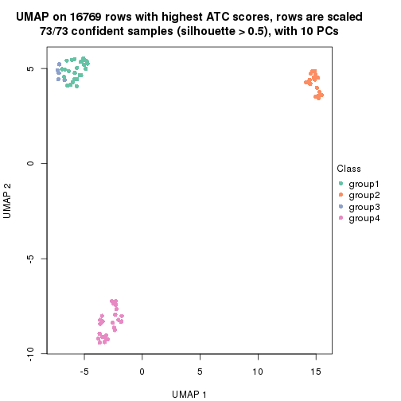
dimension_reduction(res, k = 5, method = "UMAP")
dimension_reduction(res, k = 6, method = "UMAP")
Following heatmap shows how subgroups are split when increasing k:
collect_classes(res)
If matrix rows can be associated to genes, consider to use functional_enrichment(res,
...) to perform function enrichment for the signature genes. See this vignette for more detailed explanations.
The object with results only for a single top-value method and a single partition method can be extracted as:
res = res_list["ATC", "skmeans"]
# you can also extract it by
# res = res_list["ATC:skmeans"]
A summary of res and all the functions that can be applied to it:
res
#> A 'ConsensusPartition' object with k = 2, 3, 4, 5, 6.
#> On a matrix with 16769 rows and 73 columns.
#> Top rows (1000, 2000, 3000, 4000, 5000) are extracted by 'ATC' method.
#> Subgroups are detected by 'skmeans' method.
#> Performed in total 1250 partitions by row resampling.
#> Best k for subgroups seems to be 5.
#>
#> Following methods can be applied to this 'ConsensusPartition' object:
#> [1] "cola_report" "collect_classes" "collect_plots"
#> [4] "collect_stats" "colnames" "compare_signatures"
#> [7] "consensus_heatmap" "dimension_reduction" "functional_enrichment"
#> [10] "get_anno_col" "get_anno" "get_classes"
#> [13] "get_consensus" "get_matrix" "get_membership"
#> [16] "get_param" "get_signatures" "get_stats"
#> [19] "is_best_k" "is_stable_k" "membership_heatmap"
#> [22] "ncol" "nrow" "plot_ecdf"
#> [25] "rownames" "select_partition_number" "show"
#> [28] "suggest_best_k" "test_to_known_factors"
collect_plots() function collects all the plots made from res for all k (number of partitions)
into one single page to provide an easy and fast comparison between different k.
collect_plots(res)
The plots are:
k and the heatmap of
predicted classes for each k.k.k.k.All the plots in panels can be made by individual functions and they are plotted later in this section.
select_partition_number() produces several plots showing different
statistics for choosing “optimized” k. There are following statistics:
k;k, the area increased is defined as \(A_k - A_{k-1}\).The detailed explanations of these statistics can be found in the cola vignette.
Generally speaking, lower PAC score, higher mean silhouette score or higher
concordance corresponds to better partition. Rand index and Jaccard index
measure how similar the current partition is compared to partition with k-1.
If they are too similar, we won't accept k is better than k-1.
select_partition_number(res)
The numeric values for all these statistics can be obtained by get_stats().
get_stats(res)
#> k 1-PAC mean_silhouette concordance area_increased Rand Jaccard
#> 2 2 1.000 1.000 1.000 0.3629 0.638 0.638
#> 3 3 1.000 1.000 1.000 0.8171 0.703 0.535
#> 4 4 0.878 0.904 0.942 0.1005 0.939 0.821
#> 5 5 0.992 0.944 0.966 0.0605 0.952 0.830
#> 6 6 0.884 0.853 0.903 0.0323 1.000 1.000
suggest_best_k() suggests the best \(k\) based on these statistics. The rules are as follows:
suggest_best_k(res)
#> [1] 5
#> attr(,"optional")
#> [1] 2 3
There is also optional best \(k\) = 2 3 that is worth to check.
Following shows the table of the partitions (You need to click the show/hide
code output link to see it). The membership matrix (columns with name p*)
is inferred by
clue::cl_consensus()
function with the SE method. Basically the value in the membership matrix
represents the probability to belong to a certain group. The finall class
label for an item is determined with the group with highest probability it
belongs to.
In get_classes() function, the entropy is calculated from the membership
matrix and the silhouette score is calculated from the consensus matrix.
cbind(get_classes(res, k = 2), get_membership(res, k = 2))
#> class entropy silhouette p1 p2
#> SRR2453324 1 0 1 1 0
#> SRR2453325 1 0 1 1 0
#> SRR2453323 2 0 1 0 1
#> SRR2453321 1 0 1 1 0
#> SRR2453322 1 0 1 1 0
#> SRR2453320 2 0 1 0 1
#> SRR2453319 2 0 1 0 1
#> SRR2453318 2 0 1 0 1
#> SRR2453317 1 0 1 1 0
#> SRR2453316 1 0 1 1 0
#> SRR2453315 1 0 1 1 0
#> SRR2453312 1 0 1 1 0
#> SRR2453313 1 0 1 1 0
#> SRR2453314 1 0 1 1 0
#> SRR2453311 2 0 1 0 1
#> SRR2453310 1 0 1 1 0
#> SRR2453309 2 0 1 0 1
#> SRR2453308 1 0 1 1 0
#> SRR2453307 2 0 1 0 1
#> SRR2453306 1 0 1 1 0
#> SRR2453305 2 0 1 0 1
#> SRR2453303 1 0 1 1 0
#> SRR2453304 1 0 1 1 0
#> SRR2453302 2 0 1 0 1
#> SRR2453301 1 0 1 1 0
#> SRR2453299 2 0 1 0 1
#> SRR2453300 2 0 1 0 1
#> SRR2453371 1 0 1 1 0
#> SRR2453370 1 0 1 1 0
#> SRR2453369 1 0 1 1 0
#> SRR2453366 1 0 1 1 0
#> SRR2453367 1 0 1 1 0
#> SRR2453368 1 0 1 1 0
#> SRR2453365 1 0 1 1 0
#> SRR2453364 1 0 1 1 0
#> SRR2453363 1 0 1 1 0
#> SRR2453362 1 0 1 1 0
#> SRR2453361 1 0 1 1 0
#> SRR2453359 1 0 1 1 0
#> SRR2453360 1 0 1 1 0
#> SRR2453357 1 0 1 1 0
#> SRR2453356 1 0 1 1 0
#> SRR2453358 1 0 1 1 0
#> SRR2453355 1 0 1 1 0
#> SRR2453354 1 0 1 1 0
#> SRR2453353 1 0 1 1 0
#> SRR2453352 1 0 1 1 0
#> SRR2453351 1 0 1 1 0
#> SRR2453350 1 0 1 1 0
#> SRR2453349 1 0 1 1 0
#> SRR2453348 1 0 1 1 0
#> SRR2453346 1 0 1 1 0
#> SRR2453347 1 0 1 1 0
#> SRR2453345 1 0 1 1 0
#> SRR2453343 1 0 1 1 0
#> SRR2453344 1 0 1 1 0
#> SRR2453341 2 0 1 0 1
#> SRR2453340 1 0 1 1 0
#> SRR2453339 1 0 1 1 0
#> SRR2453337 1 0 1 1 0
#> SRR2453338 1 0 1 1 0
#> SRR2453336 2 0 1 0 1
#> SRR2453335 2 0 1 0 1
#> SRR2453334 2 0 1 0 1
#> SRR2453332 2 0 1 0 1
#> SRR2453333 2 0 1 0 1
#> SRR2453342 1 0 1 1 0
#> SRR2453331 1 0 1 1 0
#> SRR2453329 1 0 1 1 0
#> SRR2453330 1 0 1 1 0
#> SRR2453328 1 0 1 1 0
#> SRR2453326 1 0 1 1 0
#> SRR2453327 1 0 1 1 0
cbind(get_classes(res, k = 3), get_membership(res, k = 3))
#> class entropy silhouette p1 p2 p3
#> SRR2453324 3 0 1 0 0 1
#> SRR2453325 3 0 1 0 0 1
#> SRR2453323 2 0 1 0 1 0
#> SRR2453321 3 0 1 0 0 1
#> SRR2453322 3 0 1 0 0 1
#> SRR2453320 2 0 1 0 1 0
#> SRR2453319 2 0 1 0 1 0
#> SRR2453318 2 0 1 0 1 0
#> SRR2453317 3 0 1 0 0 1
#> SRR2453316 3 0 1 0 0 1
#> SRR2453315 3 0 1 0 0 1
#> SRR2453312 3 0 1 0 0 1
#> SRR2453313 3 0 1 0 0 1
#> SRR2453314 3 0 1 0 0 1
#> SRR2453311 2 0 1 0 1 0
#> SRR2453310 3 0 1 0 0 1
#> SRR2453309 2 0 1 0 1 0
#> SRR2453308 3 0 1 0 0 1
#> SRR2453307 2 0 1 0 1 0
#> SRR2453306 3 0 1 0 0 1
#> SRR2453305 2 0 1 0 1 0
#> SRR2453303 3 0 1 0 0 1
#> SRR2453304 3 0 1 0 0 1
#> SRR2453302 2 0 1 0 1 0
#> SRR2453301 3 0 1 0 0 1
#> SRR2453299 2 0 1 0 1 0
#> SRR2453300 2 0 1 0 1 0
#> SRR2453371 1 0 1 1 0 0
#> SRR2453370 1 0 1 1 0 0
#> SRR2453369 1 0 1 1 0 0
#> SRR2453366 1 0 1 1 0 0
#> SRR2453367 1 0 1 1 0 0
#> SRR2453368 1 0 1 1 0 0
#> SRR2453365 1 0 1 1 0 0
#> SRR2453364 1 0 1 1 0 0
#> SRR2453363 1 0 1 1 0 0
#> SRR2453362 1 0 1 1 0 0
#> SRR2453361 1 0 1 1 0 0
#> SRR2453359 1 0 1 1 0 0
#> SRR2453360 1 0 1 1 0 0
#> SRR2453357 1 0 1 1 0 0
#> SRR2453356 1 0 1 1 0 0
#> SRR2453358 1 0 1 1 0 0
#> SRR2453355 1 0 1 1 0 0
#> SRR2453354 1 0 1 1 0 0
#> SRR2453353 1 0 1 1 0 0
#> SRR2453352 1 0 1 1 0 0
#> SRR2453351 1 0 1 1 0 0
#> SRR2453350 1 0 1 1 0 0
#> SRR2453349 1 0 1 1 0 0
#> SRR2453348 1 0 1 1 0 0
#> SRR2453346 1 0 1 1 0 0
#> SRR2453347 1 0 1 1 0 0
#> SRR2453345 1 0 1 1 0 0
#> SRR2453343 1 0 1 1 0 0
#> SRR2453344 1 0 1 1 0 0
#> SRR2453341 2 0 1 0 1 0
#> SRR2453340 3 0 1 0 0 1
#> SRR2453339 3 0 1 0 0 1
#> SRR2453337 3 0 1 0 0 1
#> SRR2453338 3 0 1 0 0 1
#> SRR2453336 2 0 1 0 1 0
#> SRR2453335 2 0 1 0 1 0
#> SRR2453334 2 0 1 0 1 0
#> SRR2453332 2 0 1 0 1 0
#> SRR2453333 2 0 1 0 1 0
#> SRR2453342 1 0 1 1 0 0
#> SRR2453331 3 0 1 0 0 1
#> SRR2453329 3 0 1 0 0 1
#> SRR2453330 3 0 1 0 0 1
#> SRR2453328 3 0 1 0 0 1
#> SRR2453326 3 0 1 0 0 1
#> SRR2453327 3 0 1 0 0 1
cbind(get_classes(res, k = 4), get_membership(res, k = 4))
#> class entropy silhouette p1 p2 p3 p4
#> SRR2453324 3 0.4866 0.465 0.000 0 0.596 0.404
#> SRR2453325 3 0.4866 0.465 0.000 0 0.596 0.404
#> SRR2453323 2 0.0000 1.000 0.000 1 0.000 0.000
#> SRR2453321 3 0.2868 0.898 0.000 0 0.864 0.136
#> SRR2453322 3 0.2868 0.898 0.000 0 0.864 0.136
#> SRR2453320 2 0.0000 1.000 0.000 1 0.000 0.000
#> SRR2453319 2 0.0000 1.000 0.000 1 0.000 0.000
#> SRR2453318 2 0.0000 1.000 0.000 1 0.000 0.000
#> SRR2453317 4 0.3400 0.747 0.000 0 0.180 0.820
#> SRR2453316 4 0.3400 0.747 0.000 0 0.180 0.820
#> SRR2453315 4 0.3400 0.747 0.000 0 0.180 0.820
#> SRR2453312 4 0.0817 0.935 0.000 0 0.024 0.976
#> SRR2453313 4 0.0817 0.935 0.000 0 0.024 0.976
#> SRR2453314 4 0.0817 0.935 0.000 0 0.024 0.976
#> SRR2453311 2 0.0000 1.000 0.000 1 0.000 0.000
#> SRR2453310 4 0.0817 0.935 0.000 0 0.024 0.976
#> SRR2453309 2 0.0000 1.000 0.000 1 0.000 0.000
#> SRR2453308 3 0.2530 0.898 0.000 0 0.888 0.112
#> SRR2453307 2 0.0000 1.000 0.000 1 0.000 0.000
#> SRR2453306 3 0.2530 0.898 0.000 0 0.888 0.112
#> SRR2453305 2 0.0000 1.000 0.000 1 0.000 0.000
#> SRR2453303 3 0.2530 0.898 0.000 0 0.888 0.112
#> SRR2453304 3 0.2530 0.898 0.000 0 0.888 0.112
#> SRR2453302 2 0.0000 1.000 0.000 1 0.000 0.000
#> SRR2453301 4 0.0817 0.935 0.000 0 0.024 0.976
#> SRR2453299 2 0.0000 1.000 0.000 1 0.000 0.000
#> SRR2453300 2 0.0000 1.000 0.000 1 0.000 0.000
#> SRR2453371 1 0.0188 0.940 0.996 0 0.004 0.000
#> SRR2453370 1 0.0000 0.942 1.000 0 0.000 0.000
#> SRR2453369 1 0.0000 0.942 1.000 0 0.000 0.000
#> SRR2453366 1 0.0000 0.942 1.000 0 0.000 0.000
#> SRR2453367 1 0.0000 0.942 1.000 0 0.000 0.000
#> SRR2453368 1 0.0000 0.942 1.000 0 0.000 0.000
#> SRR2453365 1 0.0000 0.942 1.000 0 0.000 0.000
#> SRR2453364 1 0.0000 0.942 1.000 0 0.000 0.000
#> SRR2453363 1 0.2530 0.861 0.888 0 0.112 0.000
#> SRR2453362 1 0.0188 0.940 0.996 0 0.004 0.000
#> SRR2453361 1 0.4866 0.499 0.596 0 0.404 0.000
#> SRR2453359 1 0.0000 0.942 1.000 0 0.000 0.000
#> SRR2453360 1 0.0000 0.942 1.000 0 0.000 0.000
#> SRR2453357 1 0.4877 0.495 0.592 0 0.408 0.000
#> SRR2453356 1 0.4866 0.499 0.596 0 0.404 0.000
#> SRR2453358 1 0.0000 0.942 1.000 0 0.000 0.000
#> SRR2453355 1 0.0000 0.942 1.000 0 0.000 0.000
#> SRR2453354 1 0.0000 0.942 1.000 0 0.000 0.000
#> SRR2453353 1 0.0000 0.942 1.000 0 0.000 0.000
#> SRR2453352 1 0.0188 0.940 0.996 0 0.004 0.000
#> SRR2453351 1 0.4855 0.506 0.600 0 0.400 0.000
#> SRR2453350 1 0.0000 0.942 1.000 0 0.000 0.000
#> SRR2453349 1 0.0000 0.942 1.000 0 0.000 0.000
#> SRR2453348 1 0.0000 0.942 1.000 0 0.000 0.000
#> SRR2453346 1 0.0000 0.942 1.000 0 0.000 0.000
#> SRR2453347 1 0.0000 0.942 1.000 0 0.000 0.000
#> SRR2453345 1 0.0000 0.942 1.000 0 0.000 0.000
#> SRR2453343 1 0.0000 0.942 1.000 0 0.000 0.000
#> SRR2453344 1 0.0000 0.942 1.000 0 0.000 0.000
#> SRR2453341 2 0.0000 1.000 0.000 1 0.000 0.000
#> SRR2453340 4 0.0000 0.942 0.000 0 0.000 1.000
#> SRR2453339 4 0.0000 0.942 0.000 0 0.000 1.000
#> SRR2453337 4 0.0000 0.942 0.000 0 0.000 1.000
#> SRR2453338 4 0.0000 0.942 0.000 0 0.000 1.000
#> SRR2453336 2 0.0000 1.000 0.000 1 0.000 0.000
#> SRR2453335 2 0.0000 1.000 0.000 1 0.000 0.000
#> SRR2453334 2 0.0000 1.000 0.000 1 0.000 0.000
#> SRR2453332 2 0.0000 1.000 0.000 1 0.000 0.000
#> SRR2453333 2 0.0000 1.000 0.000 1 0.000 0.000
#> SRR2453342 1 0.0000 0.942 1.000 0 0.000 0.000
#> SRR2453331 4 0.0000 0.942 0.000 0 0.000 1.000
#> SRR2453329 4 0.0000 0.942 0.000 0 0.000 1.000
#> SRR2453330 4 0.0000 0.942 0.000 0 0.000 1.000
#> SRR2453328 4 0.0000 0.942 0.000 0 0.000 1.000
#> SRR2453326 3 0.2868 0.898 0.000 0 0.864 0.136
#> SRR2453327 3 0.2868 0.898 0.000 0 0.864 0.136
cbind(get_classes(res, k = 5), get_membership(res, k = 5))
#> class entropy silhouette p1 p2 p3 p4 p5
#> SRR2453324 3 0.0510 0.954 0.000 0 0.984 0.016 0.000
#> SRR2453325 3 0.0510 0.954 0.000 0 0.984 0.016 0.000
#> SRR2453323 2 0.0000 1.000 0.000 1 0.000 0.000 0.000
#> SRR2453321 3 0.1918 0.939 0.000 0 0.928 0.036 0.036
#> SRR2453322 3 0.1918 0.939 0.000 0 0.928 0.036 0.036
#> SRR2453320 2 0.0000 1.000 0.000 1 0.000 0.000 0.000
#> SRR2453319 2 0.0000 1.000 0.000 1 0.000 0.000 0.000
#> SRR2453318 2 0.0000 1.000 0.000 1 0.000 0.000 0.000
#> SRR2453317 4 0.4232 0.572 0.000 0 0.312 0.676 0.012
#> SRR2453316 4 0.4232 0.572 0.000 0 0.312 0.676 0.012
#> SRR2453315 4 0.4232 0.572 0.000 0 0.312 0.676 0.012
#> SRR2453312 4 0.2069 0.872 0.000 0 0.076 0.912 0.012
#> SRR2453313 4 0.2069 0.872 0.000 0 0.076 0.912 0.012
#> SRR2453314 4 0.2069 0.872 0.000 0 0.076 0.912 0.012
#> SRR2453311 2 0.0000 1.000 0.000 1 0.000 0.000 0.000
#> SRR2453310 4 0.2006 0.873 0.000 0 0.072 0.916 0.012
#> SRR2453309 2 0.0000 1.000 0.000 1 0.000 0.000 0.000
#> SRR2453308 3 0.0290 0.958 0.000 0 0.992 0.008 0.000
#> SRR2453307 2 0.0000 1.000 0.000 1 0.000 0.000 0.000
#> SRR2453306 3 0.0290 0.958 0.000 0 0.992 0.008 0.000
#> SRR2453305 2 0.0000 1.000 0.000 1 0.000 0.000 0.000
#> SRR2453303 3 0.0290 0.958 0.000 0 0.992 0.008 0.000
#> SRR2453304 3 0.0290 0.958 0.000 0 0.992 0.008 0.000
#> SRR2453302 2 0.0000 1.000 0.000 1 0.000 0.000 0.000
#> SRR2453301 4 0.2069 0.872 0.000 0 0.076 0.912 0.012
#> SRR2453299 2 0.0000 1.000 0.000 1 0.000 0.000 0.000
#> SRR2453300 2 0.0000 1.000 0.000 1 0.000 0.000 0.000
#> SRR2453371 1 0.0794 0.969 0.972 0 0.000 0.000 0.028
#> SRR2453370 1 0.0000 0.984 1.000 0 0.000 0.000 0.000
#> SRR2453369 1 0.1671 0.932 0.924 0 0.000 0.000 0.076
#> SRR2453366 1 0.0000 0.984 1.000 0 0.000 0.000 0.000
#> SRR2453367 1 0.0703 0.972 0.976 0 0.000 0.000 0.024
#> SRR2453368 1 0.0000 0.984 1.000 0 0.000 0.000 0.000
#> SRR2453365 1 0.0000 0.984 1.000 0 0.000 0.000 0.000
#> SRR2453364 1 0.0000 0.984 1.000 0 0.000 0.000 0.000
#> SRR2453363 5 0.1544 0.954 0.068 0 0.000 0.000 0.932
#> SRR2453362 1 0.1197 0.959 0.952 0 0.000 0.000 0.048
#> SRR2453361 5 0.1557 0.977 0.052 0 0.008 0.000 0.940
#> SRR2453359 1 0.0000 0.984 1.000 0 0.000 0.000 0.000
#> SRR2453360 1 0.0000 0.984 1.000 0 0.000 0.000 0.000
#> SRR2453357 5 0.1205 0.968 0.040 0 0.004 0.000 0.956
#> SRR2453356 5 0.1697 0.976 0.060 0 0.008 0.000 0.932
#> SRR2453358 1 0.0000 0.984 1.000 0 0.000 0.000 0.000
#> SRR2453355 1 0.0000 0.984 1.000 0 0.000 0.000 0.000
#> SRR2453354 1 0.0000 0.984 1.000 0 0.000 0.000 0.000
#> SRR2453353 1 0.0000 0.984 1.000 0 0.000 0.000 0.000
#> SRR2453352 1 0.1197 0.959 0.952 0 0.000 0.000 0.048
#> SRR2453351 5 0.1764 0.974 0.064 0 0.008 0.000 0.928
#> SRR2453350 1 0.0000 0.984 1.000 0 0.000 0.000 0.000
#> SRR2453349 1 0.0000 0.984 1.000 0 0.000 0.000 0.000
#> SRR2453348 1 0.0000 0.984 1.000 0 0.000 0.000 0.000
#> SRR2453346 1 0.0000 0.984 1.000 0 0.000 0.000 0.000
#> SRR2453347 1 0.1121 0.961 0.956 0 0.000 0.000 0.044
#> SRR2453345 1 0.1544 0.938 0.932 0 0.000 0.000 0.068
#> SRR2453343 1 0.1410 0.945 0.940 0 0.000 0.000 0.060
#> SRR2453344 1 0.0000 0.984 1.000 0 0.000 0.000 0.000
#> SRR2453341 2 0.0000 1.000 0.000 1 0.000 0.000 0.000
#> SRR2453340 4 0.0290 0.892 0.000 0 0.008 0.992 0.000
#> SRR2453339 4 0.0290 0.892 0.000 0 0.008 0.992 0.000
#> SRR2453337 4 0.0290 0.892 0.000 0 0.008 0.992 0.000
#> SRR2453338 4 0.0290 0.892 0.000 0 0.008 0.992 0.000
#> SRR2453336 2 0.0000 1.000 0.000 1 0.000 0.000 0.000
#> SRR2453335 2 0.0000 1.000 0.000 1 0.000 0.000 0.000
#> SRR2453334 2 0.0000 1.000 0.000 1 0.000 0.000 0.000
#> SRR2453332 2 0.0000 1.000 0.000 1 0.000 0.000 0.000
#> SRR2453333 2 0.0000 1.000 0.000 1 0.000 0.000 0.000
#> SRR2453342 1 0.0000 0.984 1.000 0 0.000 0.000 0.000
#> SRR2453331 4 0.0000 0.892 0.000 0 0.000 1.000 0.000
#> SRR2453329 4 0.0000 0.892 0.000 0 0.000 1.000 0.000
#> SRR2453330 4 0.0000 0.892 0.000 0 0.000 1.000 0.000
#> SRR2453328 4 0.0000 0.892 0.000 0 0.000 1.000 0.000
#> SRR2453326 3 0.1918 0.939 0.000 0 0.928 0.036 0.036
#> SRR2453327 3 0.1918 0.939 0.000 0 0.928 0.036 0.036
cbind(get_classes(res, k = 6), get_membership(res, k = 6))
#> class entropy silhouette p1 p2 p3 p4 p5 p6
#> SRR2453324 3 0.3103 0.885 0.000 0 0.784 0.008 0.000 0.208
#> SRR2453325 3 0.3103 0.885 0.000 0 0.784 0.008 0.000 0.208
#> SRR2453323 2 0.0000 1.000 0.000 1 0.000 0.000 0.000 0.000
#> SRR2453321 3 0.0603 0.829 0.000 0 0.980 0.016 0.004 0.000
#> SRR2453322 3 0.0603 0.829 0.000 0 0.980 0.016 0.004 0.000
#> SRR2453320 2 0.0000 1.000 0.000 1 0.000 0.000 0.000 0.000
#> SRR2453319 2 0.0000 1.000 0.000 1 0.000 0.000 0.000 0.000
#> SRR2453318 2 0.0000 1.000 0.000 1 0.000 0.000 0.000 0.000
#> SRR2453317 4 0.4508 0.604 0.000 0 0.116 0.716 0.004 0.164
#> SRR2453316 4 0.4508 0.604 0.000 0 0.116 0.716 0.004 0.164
#> SRR2453315 4 0.4508 0.604 0.000 0 0.116 0.716 0.004 0.164
#> SRR2453312 4 0.4282 0.598 0.000 0 0.020 0.560 0.000 0.420
#> SRR2453313 4 0.4282 0.598 0.000 0 0.020 0.560 0.000 0.420
#> SRR2453314 4 0.4282 0.598 0.000 0 0.020 0.560 0.000 0.420
#> SRR2453311 2 0.0000 1.000 0.000 1 0.000 0.000 0.000 0.000
#> SRR2453310 4 0.4205 0.600 0.000 0 0.016 0.564 0.000 0.420
#> SRR2453309 2 0.0000 1.000 0.000 1 0.000 0.000 0.000 0.000
#> SRR2453308 3 0.2994 0.888 0.000 0 0.788 0.000 0.004 0.208
#> SRR2453307 2 0.0000 1.000 0.000 1 0.000 0.000 0.000 0.000
#> SRR2453306 3 0.3023 0.887 0.000 0 0.784 0.000 0.004 0.212
#> SRR2453305 2 0.0000 1.000 0.000 1 0.000 0.000 0.000 0.000
#> SRR2453303 3 0.2994 0.888 0.000 0 0.788 0.000 0.004 0.208
#> SRR2453304 3 0.2994 0.888 0.000 0 0.788 0.000 0.004 0.208
#> SRR2453302 2 0.0000 1.000 0.000 1 0.000 0.000 0.000 0.000
#> SRR2453301 4 0.4282 0.598 0.000 0 0.020 0.560 0.000 0.420
#> SRR2453299 2 0.0000 1.000 0.000 1 0.000 0.000 0.000 0.000
#> SRR2453300 2 0.0000 1.000 0.000 1 0.000 0.000 0.000 0.000
#> SRR2453371 1 0.3984 0.633 0.648 0 0.000 0.000 0.016 0.336
#> SRR2453370 1 0.0000 0.911 1.000 0 0.000 0.000 0.000 0.000
#> SRR2453369 1 0.4244 0.745 0.720 0 0.000 0.000 0.080 0.200
#> SRR2453366 1 0.0000 0.911 1.000 0 0.000 0.000 0.000 0.000
#> SRR2453367 1 0.2784 0.843 0.848 0 0.000 0.000 0.028 0.124
#> SRR2453368 1 0.0146 0.910 0.996 0 0.000 0.000 0.000 0.004
#> SRR2453365 1 0.0000 0.911 1.000 0 0.000 0.000 0.000 0.000
#> SRR2453364 1 0.0000 0.911 1.000 0 0.000 0.000 0.000 0.000
#> SRR2453363 5 0.4109 0.715 0.024 0 0.000 0.000 0.648 0.328
#> SRR2453362 1 0.4180 0.611 0.628 0 0.000 0.000 0.024 0.348
#> SRR2453361 5 0.0837 0.899 0.020 0 0.004 0.000 0.972 0.004
#> SRR2453359 1 0.0713 0.905 0.972 0 0.000 0.000 0.000 0.028
#> SRR2453360 1 0.0000 0.911 1.000 0 0.000 0.000 0.000 0.000
#> SRR2453357 5 0.1010 0.879 0.000 0 0.004 0.000 0.960 0.036
#> SRR2453356 5 0.0692 0.899 0.020 0 0.004 0.000 0.976 0.000
#> SRR2453358 1 0.0260 0.910 0.992 0 0.000 0.000 0.000 0.008
#> SRR2453355 1 0.0000 0.911 1.000 0 0.000 0.000 0.000 0.000
#> SRR2453354 1 0.0146 0.910 0.996 0 0.000 0.000 0.000 0.004
#> SRR2453353 1 0.1007 0.892 0.956 0 0.000 0.000 0.044 0.000
#> SRR2453352 1 0.4180 0.611 0.628 0 0.000 0.000 0.024 0.348
#> SRR2453351 5 0.2144 0.876 0.040 0 0.004 0.000 0.908 0.048
#> SRR2453350 1 0.0000 0.911 1.000 0 0.000 0.000 0.000 0.000
#> SRR2453349 1 0.0458 0.908 0.984 0 0.000 0.000 0.000 0.016
#> SRR2453348 1 0.0000 0.911 1.000 0 0.000 0.000 0.000 0.000
#> SRR2453346 1 0.0000 0.911 1.000 0 0.000 0.000 0.000 0.000
#> SRR2453347 1 0.4091 0.756 0.732 0 0.000 0.000 0.068 0.200
#> SRR2453345 1 0.2888 0.839 0.852 0 0.000 0.000 0.092 0.056
#> SRR2453343 1 0.3534 0.811 0.800 0 0.000 0.000 0.076 0.124
#> SRR2453344 1 0.0458 0.908 0.984 0 0.000 0.000 0.000 0.016
#> SRR2453341 2 0.0000 1.000 0.000 1 0.000 0.000 0.000 0.000
#> SRR2453340 4 0.0000 0.780 0.000 0 0.000 1.000 0.000 0.000
#> SRR2453339 4 0.0000 0.780 0.000 0 0.000 1.000 0.000 0.000
#> SRR2453337 4 0.0000 0.780 0.000 0 0.000 1.000 0.000 0.000
#> SRR2453338 4 0.0000 0.780 0.000 0 0.000 1.000 0.000 0.000
#> SRR2453336 2 0.0000 1.000 0.000 1 0.000 0.000 0.000 0.000
#> SRR2453335 2 0.0000 1.000 0.000 1 0.000 0.000 0.000 0.000
#> SRR2453334 2 0.0000 1.000 0.000 1 0.000 0.000 0.000 0.000
#> SRR2453332 2 0.0000 1.000 0.000 1 0.000 0.000 0.000 0.000
#> SRR2453333 2 0.0000 1.000 0.000 1 0.000 0.000 0.000 0.000
#> SRR2453342 1 0.0363 0.908 0.988 0 0.000 0.000 0.000 0.012
#> SRR2453331 4 0.0260 0.781 0.000 0 0.000 0.992 0.000 0.008
#> SRR2453329 4 0.0260 0.781 0.000 0 0.000 0.992 0.000 0.008
#> SRR2453330 4 0.0260 0.781 0.000 0 0.000 0.992 0.000 0.008
#> SRR2453328 4 0.0260 0.781 0.000 0 0.000 0.992 0.000 0.008
#> SRR2453326 3 0.0603 0.829 0.000 0 0.980 0.016 0.004 0.000
#> SRR2453327 3 0.0603 0.829 0.000 0 0.980 0.016 0.004 0.000
Heatmaps for the consensus matrix. It visualizes the probability of two samples to be in a same group.
consensus_heatmap(res, k = 2)

consensus_heatmap(res, k = 3)
consensus_heatmap(res, k = 4)
consensus_heatmap(res, k = 5)
consensus_heatmap(res, k = 6)
Heatmaps for the membership of samples in all partitions to see how consistent they are:
membership_heatmap(res, k = 2)

membership_heatmap(res, k = 3)

membership_heatmap(res, k = 4)
membership_heatmap(res, k = 5)
membership_heatmap(res, k = 6)
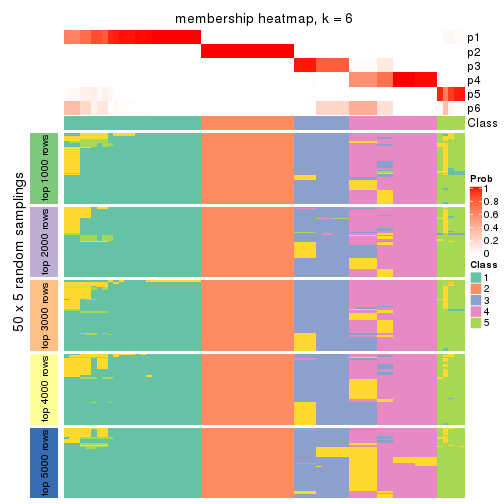
As soon as we have had the classes for columns, we can look for signatures which are significantly different between classes which can be candidate marks for certain classes. Following are the heatmaps for signatures.
Signature heatmaps where rows are scaled:
get_signatures(res, k = 2)

get_signatures(res, k = 3)

get_signatures(res, k = 4)

get_signatures(res, k = 5)
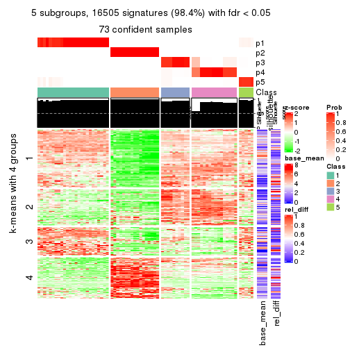
get_signatures(res, k = 6)
Signature heatmaps where rows are not scaled:
get_signatures(res, k = 2, scale_rows = FALSE)

get_signatures(res, k = 3, scale_rows = FALSE)

get_signatures(res, k = 4, scale_rows = FALSE)
get_signatures(res, k = 5, scale_rows = FALSE)
get_signatures(res, k = 6, scale_rows = FALSE)
Compare the overlap of signatures from different k:
compare_signatures(res)
get_signature() returns a data frame invisibly. TO get the list of signatures, the function
call should be assigned to a variable explicitly. In following code, if plot argument is set
to FALSE, no heatmap is plotted while only the differential analysis is performed.
# code only for demonstration
tb = get_signature(res, k = ..., plot = FALSE)
An example of the output of tb is:
#> which_row fdr mean_1 mean_2 scaled_mean_1 scaled_mean_2 km
#> 1 38 0.042760348 8.373488 9.131774 -0.5533452 0.5164555 1
#> 2 40 0.018707592 7.106213 8.469186 -0.6173731 0.5762149 1
#> 3 55 0.019134737 10.221463 11.207825 -0.6159697 0.5749050 1
#> 4 59 0.006059896 5.921854 7.869574 -0.6899429 0.6439467 1
#> 5 60 0.018055526 8.928898 10.211722 -0.6204761 0.5791110 1
#> 6 98 0.009384629 15.714769 14.887706 0.6635654 -0.6193277 2
...
The columns in tb are:
which_row: row indices corresponding to the input matrix.fdr: FDR for the differential test. mean_x: The mean value in group x.scaled_mean_x: The mean value in group x after rows are scaled.km: Row groups if k-means clustering is applied to rows.UMAP plot which shows how samples are separated.
dimension_reduction(res, k = 2, method = "UMAP")

dimension_reduction(res, k = 3, method = "UMAP")
dimension_reduction(res, k = 4, method = "UMAP")
dimension_reduction(res, k = 5, method = "UMAP")
dimension_reduction(res, k = 6, method = "UMAP")
Following heatmap shows how subgroups are split when increasing k:
collect_classes(res)
If matrix rows can be associated to genes, consider to use functional_enrichment(res,
...) to perform function enrichment for the signature genes. See this vignette for more detailed explanations.
The object with results only for a single top-value method and a single partition method can be extracted as:
res = res_list["ATC", "pam"]
# you can also extract it by
# res = res_list["ATC:pam"]
A summary of res and all the functions that can be applied to it:
res
#> A 'ConsensusPartition' object with k = 2, 3, 4, 5, 6.
#> On a matrix with 16769 rows and 73 columns.
#> Top rows (1000, 2000, 3000, 4000, 5000) are extracted by 'ATC' method.
#> Subgroups are detected by 'pam' method.
#> Performed in total 1250 partitions by row resampling.
#> Best k for subgroups seems to be 6.
#>
#> Following methods can be applied to this 'ConsensusPartition' object:
#> [1] "cola_report" "collect_classes" "collect_plots"
#> [4] "collect_stats" "colnames" "compare_signatures"
#> [7] "consensus_heatmap" "dimension_reduction" "functional_enrichment"
#> [10] "get_anno_col" "get_anno" "get_classes"
#> [13] "get_consensus" "get_matrix" "get_membership"
#> [16] "get_param" "get_signatures" "get_stats"
#> [19] "is_best_k" "is_stable_k" "membership_heatmap"
#> [22] "ncol" "nrow" "plot_ecdf"
#> [25] "rownames" "select_partition_number" "show"
#> [28] "suggest_best_k" "test_to_known_factors"
collect_plots() function collects all the plots made from res for all k (number of partitions)
into one single page to provide an easy and fast comparison between different k.
collect_plots(res)
The plots are:
k and the heatmap of
predicted classes for each k.k.k.k.All the plots in panels can be made by individual functions and they are plotted later in this section.
select_partition_number() produces several plots showing different
statistics for choosing “optimized” k. There are following statistics:
k;k, the area increased is defined as \(A_k - A_{k-1}\).The detailed explanations of these statistics can be found in the cola vignette.
Generally speaking, lower PAC score, higher mean silhouette score or higher
concordance corresponds to better partition. Rand index and Jaccard index
measure how similar the current partition is compared to partition with k-1.
If they are too similar, we won't accept k is better than k-1.
select_partition_number(res)
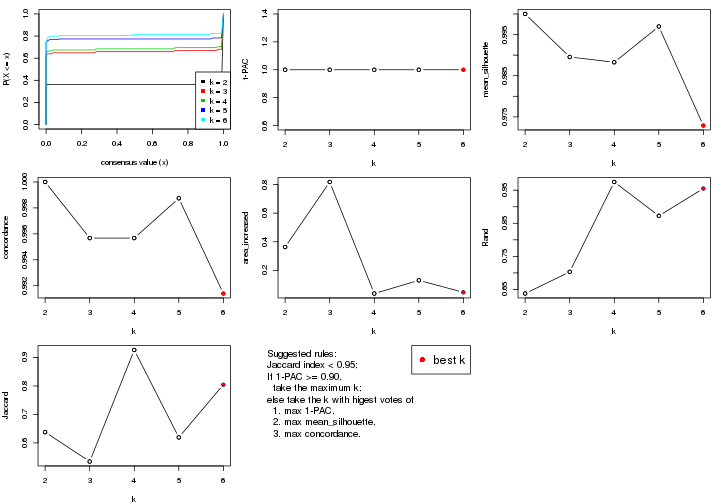
The numeric values for all these statistics can be obtained by get_stats().
get_stats(res)
#> k 1-PAC mean_silhouette concordance area_increased Rand Jaccard
#> 2 2 1 1.000 1.000 0.3629 0.638 0.638
#> 3 3 1 0.990 0.996 0.8180 0.703 0.535
#> 4 4 1 0.988 0.996 0.0380 0.975 0.926
#> 5 5 1 0.997 0.999 0.1302 0.873 0.619
#> 6 6 1 0.973 0.991 0.0463 0.955 0.804
suggest_best_k() suggests the best \(k\) based on these statistics. The rules are as follows:
suggest_best_k(res)
#> [1] 6
#> attr(,"optional")
#> [1] 2 3 4 5
There is also optional best \(k\) = 2 3 4 5 that is worth to check.
Following shows the table of the partitions (You need to click the show/hide
code output link to see it). The membership matrix (columns with name p*)
is inferred by
clue::cl_consensus()
function with the SE method. Basically the value in the membership matrix
represents the probability to belong to a certain group. The finall class
label for an item is determined with the group with highest probability it
belongs to.
In get_classes() function, the entropy is calculated from the membership
matrix and the silhouette score is calculated from the consensus matrix.
cbind(get_classes(res, k = 2), get_membership(res, k = 2))
#> class entropy silhouette p1 p2
#> SRR2453324 1 0 1 1 0
#> SRR2453325 1 0 1 1 0
#> SRR2453323 2 0 1 0 1
#> SRR2453321 1 0 1 1 0
#> SRR2453322 1 0 1 1 0
#> SRR2453320 2 0 1 0 1
#> SRR2453319 2 0 1 0 1
#> SRR2453318 2 0 1 0 1
#> SRR2453317 1 0 1 1 0
#> SRR2453316 1 0 1 1 0
#> SRR2453315 1 0 1 1 0
#> SRR2453312 1 0 1 1 0
#> SRR2453313 1 0 1 1 0
#> SRR2453314 1 0 1 1 0
#> SRR2453311 2 0 1 0 1
#> SRR2453310 1 0 1 1 0
#> SRR2453309 2 0 1 0 1
#> SRR2453308 1 0 1 1 0
#> SRR2453307 2 0 1 0 1
#> SRR2453306 1 0 1 1 0
#> SRR2453305 2 0 1 0 1
#> SRR2453303 1 0 1 1 0
#> SRR2453304 1 0 1 1 0
#> SRR2453302 2 0 1 0 1
#> SRR2453301 1 0 1 1 0
#> SRR2453299 2 0 1 0 1
#> SRR2453300 2 0 1 0 1
#> SRR2453371 1 0 1 1 0
#> SRR2453370 1 0 1 1 0
#> SRR2453369 1 0 1 1 0
#> SRR2453366 1 0 1 1 0
#> SRR2453367 1 0 1 1 0
#> SRR2453368 1 0 1 1 0
#> SRR2453365 1 0 1 1 0
#> SRR2453364 1 0 1 1 0
#> SRR2453363 1 0 1 1 0
#> SRR2453362 1 0 1 1 0
#> SRR2453361 1 0 1 1 0
#> SRR2453359 1 0 1 1 0
#> SRR2453360 1 0 1 1 0
#> SRR2453357 1 0 1 1 0
#> SRR2453356 1 0 1 1 0
#> SRR2453358 1 0 1 1 0
#> SRR2453355 1 0 1 1 0
#> SRR2453354 1 0 1 1 0
#> SRR2453353 1 0 1 1 0
#> SRR2453352 1 0 1 1 0
#> SRR2453351 1 0 1 1 0
#> SRR2453350 1 0 1 1 0
#> SRR2453349 1 0 1 1 0
#> SRR2453348 1 0 1 1 0
#> SRR2453346 1 0 1 1 0
#> SRR2453347 1 0 1 1 0
#> SRR2453345 1 0 1 1 0
#> SRR2453343 1 0 1 1 0
#> SRR2453344 1 0 1 1 0
#> SRR2453341 2 0 1 0 1
#> SRR2453340 1 0 1 1 0
#> SRR2453339 1 0 1 1 0
#> SRR2453337 1 0 1 1 0
#> SRR2453338 1 0 1 1 0
#> SRR2453336 2 0 1 0 1
#> SRR2453335 2 0 1 0 1
#> SRR2453334 2 0 1 0 1
#> SRR2453332 2 0 1 0 1
#> SRR2453333 2 0 1 0 1
#> SRR2453342 1 0 1 1 0
#> SRR2453331 1 0 1 1 0
#> SRR2453329 1 0 1 1 0
#> SRR2453330 1 0 1 1 0
#> SRR2453328 1 0 1 1 0
#> SRR2453326 1 0 1 1 0
#> SRR2453327 1 0 1 1 0
cbind(get_classes(res, k = 3), get_membership(res, k = 3))
#> class entropy silhouette p1 p2 p3
#> SRR2453324 3 0.0000 1.000 0.000 0 1.000
#> SRR2453325 3 0.0000 1.000 0.000 0 1.000
#> SRR2453323 2 0.0000 1.000 0.000 1 0.000
#> SRR2453321 3 0.0000 1.000 0.000 0 1.000
#> SRR2453322 3 0.0000 1.000 0.000 0 1.000
#> SRR2453320 2 0.0000 1.000 0.000 1 0.000
#> SRR2453319 2 0.0000 1.000 0.000 1 0.000
#> SRR2453318 2 0.0000 1.000 0.000 1 0.000
#> SRR2453317 3 0.0000 1.000 0.000 0 1.000
#> SRR2453316 3 0.0000 1.000 0.000 0 1.000
#> SRR2453315 3 0.0000 1.000 0.000 0 1.000
#> SRR2453312 3 0.0000 1.000 0.000 0 1.000
#> SRR2453313 3 0.0000 1.000 0.000 0 1.000
#> SRR2453314 3 0.0000 1.000 0.000 0 1.000
#> SRR2453311 2 0.0000 1.000 0.000 1 0.000
#> SRR2453310 3 0.0000 1.000 0.000 0 1.000
#> SRR2453309 2 0.0000 1.000 0.000 1 0.000
#> SRR2453308 3 0.0000 1.000 0.000 0 1.000
#> SRR2453307 2 0.0000 1.000 0.000 1 0.000
#> SRR2453306 3 0.0000 1.000 0.000 0 1.000
#> SRR2453305 2 0.0000 1.000 0.000 1 0.000
#> SRR2453303 3 0.0000 1.000 0.000 0 1.000
#> SRR2453304 3 0.0000 1.000 0.000 0 1.000
#> SRR2453302 2 0.0000 1.000 0.000 1 0.000
#> SRR2453301 3 0.0000 1.000 0.000 0 1.000
#> SRR2453299 2 0.0000 1.000 0.000 1 0.000
#> SRR2453300 2 0.0000 1.000 0.000 1 0.000
#> SRR2453371 1 0.0000 0.988 1.000 0 0.000
#> SRR2453370 1 0.0000 0.988 1.000 0 0.000
#> SRR2453369 1 0.0000 0.988 1.000 0 0.000
#> SRR2453366 1 0.0000 0.988 1.000 0 0.000
#> SRR2453367 1 0.0000 0.988 1.000 0 0.000
#> SRR2453368 1 0.0000 0.988 1.000 0 0.000
#> SRR2453365 1 0.0000 0.988 1.000 0 0.000
#> SRR2453364 1 0.0000 0.988 1.000 0 0.000
#> SRR2453363 1 0.1411 0.952 0.964 0 0.036
#> SRR2453362 1 0.0000 0.988 1.000 0 0.000
#> SRR2453361 1 0.5363 0.622 0.724 0 0.276
#> SRR2453359 1 0.0000 0.988 1.000 0 0.000
#> SRR2453360 1 0.0000 0.988 1.000 0 0.000
#> SRR2453357 1 0.0237 0.984 0.996 0 0.004
#> SRR2453356 1 0.0000 0.988 1.000 0 0.000
#> SRR2453358 1 0.0000 0.988 1.000 0 0.000
#> SRR2453355 1 0.0000 0.988 1.000 0 0.000
#> SRR2453354 1 0.0000 0.988 1.000 0 0.000
#> SRR2453353 1 0.0000 0.988 1.000 0 0.000
#> SRR2453352 1 0.0000 0.988 1.000 0 0.000
#> SRR2453351 1 0.0000 0.988 1.000 0 0.000
#> SRR2453350 1 0.0000 0.988 1.000 0 0.000
#> SRR2453349 1 0.0000 0.988 1.000 0 0.000
#> SRR2453348 1 0.0000 0.988 1.000 0 0.000
#> SRR2453346 1 0.0000 0.988 1.000 0 0.000
#> SRR2453347 1 0.0000 0.988 1.000 0 0.000
#> SRR2453345 1 0.0000 0.988 1.000 0 0.000
#> SRR2453343 1 0.0000 0.988 1.000 0 0.000
#> SRR2453344 1 0.0000 0.988 1.000 0 0.000
#> SRR2453341 2 0.0000 1.000 0.000 1 0.000
#> SRR2453340 3 0.0000 1.000 0.000 0 1.000
#> SRR2453339 3 0.0000 1.000 0.000 0 1.000
#> SRR2453337 3 0.0000 1.000 0.000 0 1.000
#> SRR2453338 3 0.0000 1.000 0.000 0 1.000
#> SRR2453336 2 0.0000 1.000 0.000 1 0.000
#> SRR2453335 2 0.0000 1.000 0.000 1 0.000
#> SRR2453334 2 0.0000 1.000 0.000 1 0.000
#> SRR2453332 2 0.0000 1.000 0.000 1 0.000
#> SRR2453333 2 0.0000 1.000 0.000 1 0.000
#> SRR2453342 1 0.0000 0.988 1.000 0 0.000
#> SRR2453331 3 0.0000 1.000 0.000 0 1.000
#> SRR2453329 3 0.0000 1.000 0.000 0 1.000
#> SRR2453330 3 0.0000 1.000 0.000 0 1.000
#> SRR2453328 3 0.0000 1.000 0.000 0 1.000
#> SRR2453326 3 0.0000 1.000 0.000 0 1.000
#> SRR2453327 3 0.0000 1.000 0.000 0 1.000
cbind(get_classes(res, k = 4), get_membership(res, k = 4))
#> class entropy silhouette p1 p2 p3 p4
#> SRR2453324 3 0.0000 1.000 0.000 0 1.000 0
#> SRR2453325 3 0.0000 1.000 0.000 0 1.000 0
#> SRR2453323 4 0.0000 1.000 0.000 0 0.000 1
#> SRR2453321 3 0.0000 1.000 0.000 0 1.000 0
#> SRR2453322 3 0.0000 1.000 0.000 0 1.000 0
#> SRR2453320 4 0.0000 1.000 0.000 0 0.000 1
#> SRR2453319 4 0.0000 1.000 0.000 0 0.000 1
#> SRR2453318 2 0.0000 1.000 0.000 1 0.000 0
#> SRR2453317 3 0.0000 1.000 0.000 0 1.000 0
#> SRR2453316 3 0.0000 1.000 0.000 0 1.000 0
#> SRR2453315 3 0.0000 1.000 0.000 0 1.000 0
#> SRR2453312 3 0.0000 1.000 0.000 0 1.000 0
#> SRR2453313 3 0.0000 1.000 0.000 0 1.000 0
#> SRR2453314 3 0.0000 1.000 0.000 0 1.000 0
#> SRR2453311 2 0.0000 1.000 0.000 1 0.000 0
#> SRR2453310 3 0.0000 1.000 0.000 0 1.000 0
#> SRR2453309 2 0.0000 1.000 0.000 1 0.000 0
#> SRR2453308 3 0.0000 1.000 0.000 0 1.000 0
#> SRR2453307 4 0.0000 1.000 0.000 0 0.000 1
#> SRR2453306 3 0.0000 1.000 0.000 0 1.000 0
#> SRR2453305 4 0.0000 1.000 0.000 0 0.000 1
#> SRR2453303 3 0.0000 1.000 0.000 0 1.000 0
#> SRR2453304 3 0.0000 1.000 0.000 0 1.000 0
#> SRR2453302 4 0.0000 1.000 0.000 0 0.000 1
#> SRR2453301 3 0.0000 1.000 0.000 0 1.000 0
#> SRR2453299 2 0.0000 1.000 0.000 1 0.000 0
#> SRR2453300 2 0.0000 1.000 0.000 1 0.000 0
#> SRR2453371 1 0.0000 0.986 1.000 0 0.000 0
#> SRR2453370 1 0.0000 0.986 1.000 0 0.000 0
#> SRR2453369 1 0.0000 0.986 1.000 0 0.000 0
#> SRR2453366 1 0.0000 0.986 1.000 0 0.000 0
#> SRR2453367 1 0.0000 0.986 1.000 0 0.000 0
#> SRR2453368 1 0.0000 0.986 1.000 0 0.000 0
#> SRR2453365 1 0.0000 0.986 1.000 0 0.000 0
#> SRR2453364 1 0.0000 0.986 1.000 0 0.000 0
#> SRR2453363 1 0.1118 0.945 0.964 0 0.036 0
#> SRR2453362 1 0.0000 0.986 1.000 0 0.000 0
#> SRR2453361 1 0.4250 0.584 0.724 0 0.276 0
#> SRR2453359 1 0.0000 0.986 1.000 0 0.000 0
#> SRR2453360 1 0.0000 0.986 1.000 0 0.000 0
#> SRR2453357 1 0.0188 0.982 0.996 0 0.004 0
#> SRR2453356 1 0.0000 0.986 1.000 0 0.000 0
#> SRR2453358 1 0.0000 0.986 1.000 0 0.000 0
#> SRR2453355 1 0.0000 0.986 1.000 0 0.000 0
#> SRR2453354 1 0.0000 0.986 1.000 0 0.000 0
#> SRR2453353 1 0.0000 0.986 1.000 0 0.000 0
#> SRR2453352 1 0.0000 0.986 1.000 0 0.000 0
#> SRR2453351 1 0.0000 0.986 1.000 0 0.000 0
#> SRR2453350 1 0.0000 0.986 1.000 0 0.000 0
#> SRR2453349 1 0.0000 0.986 1.000 0 0.000 0
#> SRR2453348 1 0.0000 0.986 1.000 0 0.000 0
#> SRR2453346 1 0.0000 0.986 1.000 0 0.000 0
#> SRR2453347 1 0.0000 0.986 1.000 0 0.000 0
#> SRR2453345 1 0.0000 0.986 1.000 0 0.000 0
#> SRR2453343 1 0.0000 0.986 1.000 0 0.000 0
#> SRR2453344 1 0.0000 0.986 1.000 0 0.000 0
#> SRR2453341 2 0.0000 1.000 0.000 1 0.000 0
#> SRR2453340 3 0.0000 1.000 0.000 0 1.000 0
#> SRR2453339 3 0.0000 1.000 0.000 0 1.000 0
#> SRR2453337 3 0.0000 1.000 0.000 0 1.000 0
#> SRR2453338 3 0.0000 1.000 0.000 0 1.000 0
#> SRR2453336 2 0.0000 1.000 0.000 1 0.000 0
#> SRR2453335 2 0.0000 1.000 0.000 1 0.000 0
#> SRR2453334 2 0.0000 1.000 0.000 1 0.000 0
#> SRR2453332 2 0.0000 1.000 0.000 1 0.000 0
#> SRR2453333 2 0.0000 1.000 0.000 1 0.000 0
#> SRR2453342 1 0.0000 0.986 1.000 0 0.000 0
#> SRR2453331 3 0.0000 1.000 0.000 0 1.000 0
#> SRR2453329 3 0.0000 1.000 0.000 0 1.000 0
#> SRR2453330 3 0.0000 1.000 0.000 0 1.000 0
#> SRR2453328 3 0.0000 1.000 0.000 0 1.000 0
#> SRR2453326 3 0.0000 1.000 0.000 0 1.000 0
#> SRR2453327 3 0.0000 1.000 0.000 0 1.000 0
cbind(get_classes(res, k = 5), get_membership(res, k = 5))
#> class entropy silhouette p1 p2 p3 p4 p5
#> SRR2453324 3 0.0000 0.998 0.000 0 1.000 0.000 0
#> SRR2453325 3 0.0000 0.998 0.000 0 1.000 0.000 0
#> SRR2453323 5 0.0000 1.000 0.000 0 0.000 0.000 1
#> SRR2453321 3 0.0000 0.998 0.000 0 1.000 0.000 0
#> SRR2453322 3 0.0000 0.998 0.000 0 1.000 0.000 0
#> SRR2453320 5 0.0000 1.000 0.000 0 0.000 0.000 1
#> SRR2453319 5 0.0000 1.000 0.000 0 0.000 0.000 1
#> SRR2453318 2 0.0000 1.000 0.000 1 0.000 0.000 0
#> SRR2453317 4 0.0000 1.000 0.000 0 0.000 1.000 0
#> SRR2453316 4 0.0000 1.000 0.000 0 0.000 1.000 0
#> SRR2453315 4 0.0000 1.000 0.000 0 0.000 1.000 0
#> SRR2453312 4 0.0000 1.000 0.000 0 0.000 1.000 0
#> SRR2453313 4 0.0162 0.995 0.000 0 0.004 0.996 0
#> SRR2453314 4 0.0000 1.000 0.000 0 0.000 1.000 0
#> SRR2453311 2 0.0000 1.000 0.000 1 0.000 0.000 0
#> SRR2453310 4 0.0000 1.000 0.000 0 0.000 1.000 0
#> SRR2453309 2 0.0000 1.000 0.000 1 0.000 0.000 0
#> SRR2453308 3 0.0000 0.998 0.000 0 1.000 0.000 0
#> SRR2453307 5 0.0000 1.000 0.000 0 0.000 0.000 1
#> SRR2453306 3 0.0000 0.998 0.000 0 1.000 0.000 0
#> SRR2453305 5 0.0000 1.000 0.000 0 0.000 0.000 1
#> SRR2453303 3 0.0000 0.998 0.000 0 1.000 0.000 0
#> SRR2453304 3 0.0000 0.998 0.000 0 1.000 0.000 0
#> SRR2453302 5 0.0000 1.000 0.000 0 0.000 0.000 1
#> SRR2453301 4 0.0000 1.000 0.000 0 0.000 1.000 0
#> SRR2453299 2 0.0000 1.000 0.000 1 0.000 0.000 0
#> SRR2453300 2 0.0000 1.000 0.000 1 0.000 0.000 0
#> SRR2453371 1 0.0000 0.997 1.000 0 0.000 0.000 0
#> SRR2453370 1 0.0000 0.997 1.000 0 0.000 0.000 0
#> SRR2453369 1 0.1544 0.919 0.932 0 0.068 0.000 0
#> SRR2453366 1 0.0000 0.997 1.000 0 0.000 0.000 0
#> SRR2453367 1 0.0000 0.997 1.000 0 0.000 0.000 0
#> SRR2453368 1 0.0000 0.997 1.000 0 0.000 0.000 0
#> SRR2453365 1 0.0000 0.997 1.000 0 0.000 0.000 0
#> SRR2453364 1 0.0000 0.997 1.000 0 0.000 0.000 0
#> SRR2453363 3 0.0000 0.998 0.000 0 1.000 0.000 0
#> SRR2453362 1 0.0000 0.997 1.000 0 0.000 0.000 0
#> SRR2453361 3 0.0000 0.998 0.000 0 1.000 0.000 0
#> SRR2453359 1 0.0000 0.997 1.000 0 0.000 0.000 0
#> SRR2453360 1 0.0000 0.997 1.000 0 0.000 0.000 0
#> SRR2453357 3 0.0000 0.998 0.000 0 1.000 0.000 0
#> SRR2453356 3 0.0162 0.994 0.004 0 0.996 0.000 0
#> SRR2453358 1 0.0000 0.997 1.000 0 0.000 0.000 0
#> SRR2453355 1 0.0000 0.997 1.000 0 0.000 0.000 0
#> SRR2453354 1 0.0000 0.997 1.000 0 0.000 0.000 0
#> SRR2453353 1 0.0000 0.997 1.000 0 0.000 0.000 0
#> SRR2453352 1 0.0000 0.997 1.000 0 0.000 0.000 0
#> SRR2453351 3 0.0510 0.978 0.016 0 0.984 0.000 0
#> SRR2453350 1 0.0000 0.997 1.000 0 0.000 0.000 0
#> SRR2453349 1 0.0000 0.997 1.000 0 0.000 0.000 0
#> SRR2453348 1 0.0000 0.997 1.000 0 0.000 0.000 0
#> SRR2453346 1 0.0000 0.997 1.000 0 0.000 0.000 0
#> SRR2453347 1 0.0000 0.997 1.000 0 0.000 0.000 0
#> SRR2453345 1 0.0000 0.997 1.000 0 0.000 0.000 0
#> SRR2453343 1 0.0000 0.997 1.000 0 0.000 0.000 0
#> SRR2453344 1 0.0000 0.997 1.000 0 0.000 0.000 0
#> SRR2453341 2 0.0000 1.000 0.000 1 0.000 0.000 0
#> SRR2453340 4 0.0000 1.000 0.000 0 0.000 1.000 0
#> SRR2453339 4 0.0000 1.000 0.000 0 0.000 1.000 0
#> SRR2453337 4 0.0000 1.000 0.000 0 0.000 1.000 0
#> SRR2453338 4 0.0000 1.000 0.000 0 0.000 1.000 0
#> SRR2453336 2 0.0000 1.000 0.000 1 0.000 0.000 0
#> SRR2453335 2 0.0000 1.000 0.000 1 0.000 0.000 0
#> SRR2453334 2 0.0000 1.000 0.000 1 0.000 0.000 0
#> SRR2453332 2 0.0000 1.000 0.000 1 0.000 0.000 0
#> SRR2453333 2 0.0000 1.000 0.000 1 0.000 0.000 0
#> SRR2453342 1 0.0000 0.997 1.000 0 0.000 0.000 0
#> SRR2453331 4 0.0000 1.000 0.000 0 0.000 1.000 0
#> SRR2453329 4 0.0000 1.000 0.000 0 0.000 1.000 0
#> SRR2453330 4 0.0000 1.000 0.000 0 0.000 1.000 0
#> SRR2453328 4 0.0000 1.000 0.000 0 0.000 1.000 0
#> SRR2453326 3 0.0000 0.998 0.000 0 1.000 0.000 0
#> SRR2453327 3 0.0000 0.998 0.000 0 1.000 0.000 0
cbind(get_classes(res, k = 6), get_membership(res, k = 6))
#> class entropy silhouette p1 p2 p3 p4 p5 p6
#> SRR2453324 3 0.0000 0.9956 0.000 0 1.000 0.000 0.000 0
#> SRR2453325 3 0.0000 0.9956 0.000 0 1.000 0.000 0.000 0
#> SRR2453323 6 0.0000 1.0000 0.000 0 0.000 0.000 0.000 1
#> SRR2453321 3 0.0146 0.9947 0.000 0 0.996 0.000 0.004 0
#> SRR2453322 3 0.0146 0.9947 0.000 0 0.996 0.000 0.004 0
#> SRR2453320 6 0.0000 1.0000 0.000 0 0.000 0.000 0.000 1
#> SRR2453319 6 0.0000 1.0000 0.000 0 0.000 0.000 0.000 1
#> SRR2453318 2 0.0000 1.0000 0.000 1 0.000 0.000 0.000 0
#> SRR2453317 4 0.0000 0.9997 0.000 0 0.000 1.000 0.000 0
#> SRR2453316 4 0.0000 0.9997 0.000 0 0.000 1.000 0.000 0
#> SRR2453315 4 0.0000 0.9997 0.000 0 0.000 1.000 0.000 0
#> SRR2453312 4 0.0000 0.9997 0.000 0 0.000 1.000 0.000 0
#> SRR2453313 4 0.0146 0.9953 0.000 0 0.004 0.996 0.000 0
#> SRR2453314 4 0.0000 0.9997 0.000 0 0.000 1.000 0.000 0
#> SRR2453311 2 0.0000 1.0000 0.000 1 0.000 0.000 0.000 0
#> SRR2453310 4 0.0000 0.9997 0.000 0 0.000 1.000 0.000 0
#> SRR2453309 2 0.0000 1.0000 0.000 1 0.000 0.000 0.000 0
#> SRR2453308 3 0.0000 0.9956 0.000 0 1.000 0.000 0.000 0
#> SRR2453307 6 0.0000 1.0000 0.000 0 0.000 0.000 0.000 1
#> SRR2453306 3 0.0000 0.9956 0.000 0 1.000 0.000 0.000 0
#> SRR2453305 6 0.0000 1.0000 0.000 0 0.000 0.000 0.000 1
#> SRR2453303 3 0.0000 0.9956 0.000 0 1.000 0.000 0.000 0
#> SRR2453304 3 0.0000 0.9956 0.000 0 1.000 0.000 0.000 0
#> SRR2453302 6 0.0000 1.0000 0.000 0 0.000 0.000 0.000 1
#> SRR2453301 4 0.0000 0.9997 0.000 0 0.000 1.000 0.000 0
#> SRR2453299 2 0.0000 1.0000 0.000 1 0.000 0.000 0.000 0
#> SRR2453300 2 0.0000 1.0000 0.000 1 0.000 0.000 0.000 0
#> SRR2453371 5 0.0146 0.8506 0.004 0 0.000 0.000 0.996 0
#> SRR2453370 1 0.0000 0.9950 1.000 0 0.000 0.000 0.000 0
#> SRR2453369 1 0.1556 0.8929 0.920 0 0.080 0.000 0.000 0
#> SRR2453366 1 0.0000 0.9950 1.000 0 0.000 0.000 0.000 0
#> SRR2453367 1 0.0000 0.9950 1.000 0 0.000 0.000 0.000 0
#> SRR2453368 1 0.0000 0.9950 1.000 0 0.000 0.000 0.000 0
#> SRR2453365 1 0.0000 0.9950 1.000 0 0.000 0.000 0.000 0
#> SRR2453364 1 0.0000 0.9950 1.000 0 0.000 0.000 0.000 0
#> SRR2453363 5 0.0146 0.8481 0.000 0 0.004 0.000 0.996 0
#> SRR2453362 5 0.0146 0.8506 0.004 0 0.000 0.000 0.996 0
#> SRR2453361 3 0.0000 0.9956 0.000 0 1.000 0.000 0.000 0
#> SRR2453359 1 0.0000 0.9950 1.000 0 0.000 0.000 0.000 0
#> SRR2453360 1 0.0000 0.9950 1.000 0 0.000 0.000 0.000 0
#> SRR2453357 5 0.0146 0.8481 0.000 0 0.004 0.000 0.996 0
#> SRR2453356 3 0.0146 0.9924 0.004 0 0.996 0.000 0.000 0
#> SRR2453358 1 0.0000 0.9950 1.000 0 0.000 0.000 0.000 0
#> SRR2453355 1 0.0000 0.9950 1.000 0 0.000 0.000 0.000 0
#> SRR2453354 1 0.0000 0.9950 1.000 0 0.000 0.000 0.000 0
#> SRR2453353 1 0.0000 0.9950 1.000 0 0.000 0.000 0.000 0
#> SRR2453352 5 0.0146 0.8506 0.004 0 0.000 0.000 0.996 0
#> SRR2453351 3 0.0632 0.9673 0.024 0 0.976 0.000 0.000 0
#> SRR2453350 1 0.0000 0.9950 1.000 0 0.000 0.000 0.000 0
#> SRR2453349 1 0.0000 0.9950 1.000 0 0.000 0.000 0.000 0
#> SRR2453348 1 0.0000 0.9950 1.000 0 0.000 0.000 0.000 0
#> SRR2453346 1 0.0000 0.9950 1.000 0 0.000 0.000 0.000 0
#> SRR2453347 5 0.3864 0.0834 0.480 0 0.000 0.000 0.520 0
#> SRR2453345 1 0.0000 0.9950 1.000 0 0.000 0.000 0.000 0
#> SRR2453343 1 0.0000 0.9950 1.000 0 0.000 0.000 0.000 0
#> SRR2453344 1 0.0000 0.9950 1.000 0 0.000 0.000 0.000 0
#> SRR2453341 2 0.0000 1.0000 0.000 1 0.000 0.000 0.000 0
#> SRR2453340 4 0.0000 0.9997 0.000 0 0.000 1.000 0.000 0
#> SRR2453339 4 0.0000 0.9997 0.000 0 0.000 1.000 0.000 0
#> SRR2453337 4 0.0000 0.9997 0.000 0 0.000 1.000 0.000 0
#> SRR2453338 4 0.0000 0.9997 0.000 0 0.000 1.000 0.000 0
#> SRR2453336 2 0.0000 1.0000 0.000 1 0.000 0.000 0.000 0
#> SRR2453335 2 0.0000 1.0000 0.000 1 0.000 0.000 0.000 0
#> SRR2453334 2 0.0000 1.0000 0.000 1 0.000 0.000 0.000 0
#> SRR2453332 2 0.0000 1.0000 0.000 1 0.000 0.000 0.000 0
#> SRR2453333 2 0.0000 1.0000 0.000 1 0.000 0.000 0.000 0
#> SRR2453342 1 0.0000 0.9950 1.000 0 0.000 0.000 0.000 0
#> SRR2453331 4 0.0000 0.9997 0.000 0 0.000 1.000 0.000 0
#> SRR2453329 4 0.0000 0.9997 0.000 0 0.000 1.000 0.000 0
#> SRR2453330 4 0.0000 0.9997 0.000 0 0.000 1.000 0.000 0
#> SRR2453328 4 0.0000 0.9997 0.000 0 0.000 1.000 0.000 0
#> SRR2453326 3 0.0146 0.9947 0.000 0 0.996 0.000 0.004 0
#> SRR2453327 3 0.0146 0.9947 0.000 0 0.996 0.000 0.004 0
Heatmaps for the consensus matrix. It visualizes the probability of two samples to be in a same group.
consensus_heatmap(res, k = 2)

consensus_heatmap(res, k = 3)
consensus_heatmap(res, k = 4)
consensus_heatmap(res, k = 5)
consensus_heatmap(res, k = 6)
Heatmaps for the membership of samples in all partitions to see how consistent they are:
membership_heatmap(res, k = 2)

membership_heatmap(res, k = 3)
membership_heatmap(res, k = 4)
membership_heatmap(res, k = 5)
membership_heatmap(res, k = 6)
As soon as we have had the classes for columns, we can look for signatures which are significantly different between classes which can be candidate marks for certain classes. Following are the heatmaps for signatures.
Signature heatmaps where rows are scaled:
get_signatures(res, k = 2)

get_signatures(res, k = 3)
get_signatures(res, k = 4)

get_signatures(res, k = 5)
get_signatures(res, k = 6)
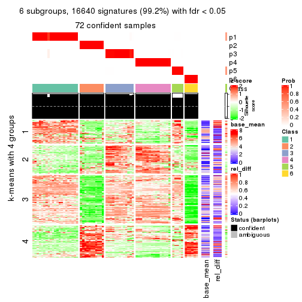
Signature heatmaps where rows are not scaled:
get_signatures(res, k = 2, scale_rows = FALSE)

get_signatures(res, k = 3, scale_rows = FALSE)
get_signatures(res, k = 4, scale_rows = FALSE)

get_signatures(res, k = 5, scale_rows = FALSE)
get_signatures(res, k = 6, scale_rows = FALSE)
Compare the overlap of signatures from different k:
compare_signatures(res)
get_signature() returns a data frame invisibly. TO get the list of signatures, the function
call should be assigned to a variable explicitly. In following code, if plot argument is set
to FALSE, no heatmap is plotted while only the differential analysis is performed.
# code only for demonstration
tb = get_signature(res, k = ..., plot = FALSE)
An example of the output of tb is:
#> which_row fdr mean_1 mean_2 scaled_mean_1 scaled_mean_2 km
#> 1 38 0.042760348 8.373488 9.131774 -0.5533452 0.5164555 1
#> 2 40 0.018707592 7.106213 8.469186 -0.6173731 0.5762149 1
#> 3 55 0.019134737 10.221463 11.207825 -0.6159697 0.5749050 1
#> 4 59 0.006059896 5.921854 7.869574 -0.6899429 0.6439467 1
#> 5 60 0.018055526 8.928898 10.211722 -0.6204761 0.5791110 1
#> 6 98 0.009384629 15.714769 14.887706 0.6635654 -0.6193277 2
...
The columns in tb are:
which_row: row indices corresponding to the input matrix.fdr: FDR for the differential test. mean_x: The mean value in group x.scaled_mean_x: The mean value in group x after rows are scaled.km: Row groups if k-means clustering is applied to rows.UMAP plot which shows how samples are separated.
dimension_reduction(res, k = 2, method = "UMAP")

dimension_reduction(res, k = 3, method = "UMAP")

dimension_reduction(res, k = 4, method = "UMAP")
dimension_reduction(res, k = 5, method = "UMAP")
dimension_reduction(res, k = 6, method = "UMAP")
Following heatmap shows how subgroups are split when increasing k:
collect_classes(res)
If matrix rows can be associated to genes, consider to use functional_enrichment(res,
...) to perform function enrichment for the signature genes. See this vignette for more detailed explanations.
The object with results only for a single top-value method and a single partition method can be extracted as:
res = res_list["ATC", "mclust"]
# you can also extract it by
# res = res_list["ATC:mclust"]
A summary of res and all the functions that can be applied to it:
res
#> A 'ConsensusPartition' object with k = 2, 3, 4, 5, 6.
#> On a matrix with 16769 rows and 73 columns.
#> Top rows (1000, 2000, 3000, 4000, 5000) are extracted by 'ATC' method.
#> Subgroups are detected by 'mclust' method.
#> Performed in total 1250 partitions by row resampling.
#> Best k for subgroups seems to be 4.
#>
#> Following methods can be applied to this 'ConsensusPartition' object:
#> [1] "cola_report" "collect_classes" "collect_plots"
#> [4] "collect_stats" "colnames" "compare_signatures"
#> [7] "consensus_heatmap" "dimension_reduction" "functional_enrichment"
#> [10] "get_anno_col" "get_anno" "get_classes"
#> [13] "get_consensus" "get_matrix" "get_membership"
#> [16] "get_param" "get_signatures" "get_stats"
#> [19] "is_best_k" "is_stable_k" "membership_heatmap"
#> [22] "ncol" "nrow" "plot_ecdf"
#> [25] "rownames" "select_partition_number" "show"
#> [28] "suggest_best_k" "test_to_known_factors"
collect_plots() function collects all the plots made from res for all k (number of partitions)
into one single page to provide an easy and fast comparison between different k.
collect_plots(res)
The plots are:
k and the heatmap of
predicted classes for each k.k.k.k.All the plots in panels can be made by individual functions and they are plotted later in this section.
select_partition_number() produces several plots showing different
statistics for choosing “optimized” k. There are following statistics:
k;k, the area increased is defined as \(A_k - A_{k-1}\).The detailed explanations of these statistics can be found in the cola vignette.
Generally speaking, lower PAC score, higher mean silhouette score or higher
concordance corresponds to better partition. Rand index and Jaccard index
measure how similar the current partition is compared to partition with k-1.
If they are too similar, we won't accept k is better than k-1.
select_partition_number(res)
The numeric values for all these statistics can be obtained by get_stats().
get_stats(res)
#> k 1-PAC mean_silhouette concordance area_increased Rand Jaccard
#> 2 2 1.000 1.000 1.000 0.3629 0.638 0.638
#> 3 3 1.000 1.000 1.000 0.8171 0.703 0.535
#> 4 4 0.993 0.986 0.982 0.0413 0.975 0.926
#> 5 5 0.832 0.762 0.864 0.0860 0.960 0.873
#> 6 6 0.804 0.816 0.864 0.0753 0.905 0.668
suggest_best_k() suggests the best \(k\) based on these statistics. The rules are as follows:
suggest_best_k(res)
#> [1] 4
#> attr(,"optional")
#> [1] 2 3
There is also optional best \(k\) = 2 3 that is worth to check.
Following shows the table of the partitions (You need to click the show/hide
code output link to see it). The membership matrix (columns with name p*)
is inferred by
clue::cl_consensus()
function with the SE method. Basically the value in the membership matrix
represents the probability to belong to a certain group. The finall class
label for an item is determined with the group with highest probability it
belongs to.
In get_classes() function, the entropy is calculated from the membership
matrix and the silhouette score is calculated from the consensus matrix.
cbind(get_classes(res, k = 2), get_membership(res, k = 2))
#> class entropy silhouette p1 p2
#> SRR2453324 1 0 1 1 0
#> SRR2453325 1 0 1 1 0
#> SRR2453323 2 0 1 0 1
#> SRR2453321 1 0 1 1 0
#> SRR2453322 1 0 1 1 0
#> SRR2453320 2 0 1 0 1
#> SRR2453319 2 0 1 0 1
#> SRR2453318 2 0 1 0 1
#> SRR2453317 1 0 1 1 0
#> SRR2453316 1 0 1 1 0
#> SRR2453315 1 0 1 1 0
#> SRR2453312 1 0 1 1 0
#> SRR2453313 1 0 1 1 0
#> SRR2453314 1 0 1 1 0
#> SRR2453311 2 0 1 0 1
#> SRR2453310 1 0 1 1 0
#> SRR2453309 2 0 1 0 1
#> SRR2453308 1 0 1 1 0
#> SRR2453307 2 0 1 0 1
#> SRR2453306 1 0 1 1 0
#> SRR2453305 2 0 1 0 1
#> SRR2453303 1 0 1 1 0
#> SRR2453304 1 0 1 1 0
#> SRR2453302 2 0 1 0 1
#> SRR2453301 1 0 1 1 0
#> SRR2453299 2 0 1 0 1
#> SRR2453300 2 0 1 0 1
#> SRR2453371 1 0 1 1 0
#> SRR2453370 1 0 1 1 0
#> SRR2453369 1 0 1 1 0
#> SRR2453366 1 0 1 1 0
#> SRR2453367 1 0 1 1 0
#> SRR2453368 1 0 1 1 0
#> SRR2453365 1 0 1 1 0
#> SRR2453364 1 0 1 1 0
#> SRR2453363 1 0 1 1 0
#> SRR2453362 1 0 1 1 0
#> SRR2453361 1 0 1 1 0
#> SRR2453359 1 0 1 1 0
#> SRR2453360 1 0 1 1 0
#> SRR2453357 1 0 1 1 0
#> SRR2453356 1 0 1 1 0
#> SRR2453358 1 0 1 1 0
#> SRR2453355 1 0 1 1 0
#> SRR2453354 1 0 1 1 0
#> SRR2453353 1 0 1 1 0
#> SRR2453352 1 0 1 1 0
#> SRR2453351 1 0 1 1 0
#> SRR2453350 1 0 1 1 0
#> SRR2453349 1 0 1 1 0
#> SRR2453348 1 0 1 1 0
#> SRR2453346 1 0 1 1 0
#> SRR2453347 1 0 1 1 0
#> SRR2453345 1 0 1 1 0
#> SRR2453343 1 0 1 1 0
#> SRR2453344 1 0 1 1 0
#> SRR2453341 2 0 1 0 1
#> SRR2453340 1 0 1 1 0
#> SRR2453339 1 0 1 1 0
#> SRR2453337 1 0 1 1 0
#> SRR2453338 1 0 1 1 0
#> SRR2453336 2 0 1 0 1
#> SRR2453335 2 0 1 0 1
#> SRR2453334 2 0 1 0 1
#> SRR2453332 2 0 1 0 1
#> SRR2453333 2 0 1 0 1
#> SRR2453342 1 0 1 1 0
#> SRR2453331 1 0 1 1 0
#> SRR2453329 1 0 1 1 0
#> SRR2453330 1 0 1 1 0
#> SRR2453328 1 0 1 1 0
#> SRR2453326 1 0 1 1 0
#> SRR2453327 1 0 1 1 0
cbind(get_classes(res, k = 3), get_membership(res, k = 3))
#> class entropy silhouette p1 p2 p3
#> SRR2453324 3 0.0000 1.000 0.000 0 1.000
#> SRR2453325 3 0.0000 1.000 0.000 0 1.000
#> SRR2453323 2 0.0000 1.000 0.000 1 0.000
#> SRR2453321 3 0.0000 1.000 0.000 0 1.000
#> SRR2453322 3 0.0000 1.000 0.000 0 1.000
#> SRR2453320 2 0.0000 1.000 0.000 1 0.000
#> SRR2453319 2 0.0000 1.000 0.000 1 0.000
#> SRR2453318 2 0.0000 1.000 0.000 1 0.000
#> SRR2453317 3 0.0000 1.000 0.000 0 1.000
#> SRR2453316 3 0.0000 1.000 0.000 0 1.000
#> SRR2453315 3 0.0000 1.000 0.000 0 1.000
#> SRR2453312 3 0.0000 1.000 0.000 0 1.000
#> SRR2453313 3 0.0000 1.000 0.000 0 1.000
#> SRR2453314 3 0.0000 1.000 0.000 0 1.000
#> SRR2453311 2 0.0000 1.000 0.000 1 0.000
#> SRR2453310 3 0.0000 1.000 0.000 0 1.000
#> SRR2453309 2 0.0000 1.000 0.000 1 0.000
#> SRR2453308 3 0.0000 1.000 0.000 0 1.000
#> SRR2453307 2 0.0000 1.000 0.000 1 0.000
#> SRR2453306 3 0.0000 1.000 0.000 0 1.000
#> SRR2453305 2 0.0000 1.000 0.000 1 0.000
#> SRR2453303 3 0.0000 1.000 0.000 0 1.000
#> SRR2453304 3 0.0000 1.000 0.000 0 1.000
#> SRR2453302 2 0.0000 1.000 0.000 1 0.000
#> SRR2453301 3 0.0000 1.000 0.000 0 1.000
#> SRR2453299 2 0.0000 1.000 0.000 1 0.000
#> SRR2453300 2 0.0000 1.000 0.000 1 0.000
#> SRR2453371 1 0.0000 0.999 1.000 0 0.000
#> SRR2453370 1 0.0000 0.999 1.000 0 0.000
#> SRR2453369 1 0.0000 0.999 1.000 0 0.000
#> SRR2453366 1 0.0000 0.999 1.000 0 0.000
#> SRR2453367 1 0.0000 0.999 1.000 0 0.000
#> SRR2453368 1 0.0000 0.999 1.000 0 0.000
#> SRR2453365 1 0.0000 0.999 1.000 0 0.000
#> SRR2453364 1 0.0000 0.999 1.000 0 0.000
#> SRR2453363 1 0.0237 0.996 0.996 0 0.004
#> SRR2453362 1 0.0000 0.999 1.000 0 0.000
#> SRR2453361 1 0.0237 0.996 0.996 0 0.004
#> SRR2453359 1 0.0000 0.999 1.000 0 0.000
#> SRR2453360 1 0.0000 0.999 1.000 0 0.000
#> SRR2453357 1 0.0237 0.996 0.996 0 0.004
#> SRR2453356 1 0.0237 0.996 0.996 0 0.004
#> SRR2453358 1 0.0000 0.999 1.000 0 0.000
#> SRR2453355 1 0.0000 0.999 1.000 0 0.000
#> SRR2453354 1 0.0000 0.999 1.000 0 0.000
#> SRR2453353 1 0.0000 0.999 1.000 0 0.000
#> SRR2453352 1 0.0000 0.999 1.000 0 0.000
#> SRR2453351 1 0.0000 0.999 1.000 0 0.000
#> SRR2453350 1 0.0000 0.999 1.000 0 0.000
#> SRR2453349 1 0.0000 0.999 1.000 0 0.000
#> SRR2453348 1 0.0000 0.999 1.000 0 0.000
#> SRR2453346 1 0.0000 0.999 1.000 0 0.000
#> SRR2453347 1 0.0000 0.999 1.000 0 0.000
#> SRR2453345 1 0.0000 0.999 1.000 0 0.000
#> SRR2453343 1 0.0000 0.999 1.000 0 0.000
#> SRR2453344 1 0.0000 0.999 1.000 0 0.000
#> SRR2453341 2 0.0000 1.000 0.000 1 0.000
#> SRR2453340 3 0.0000 1.000 0.000 0 1.000
#> SRR2453339 3 0.0000 1.000 0.000 0 1.000
#> SRR2453337 3 0.0000 1.000 0.000 0 1.000
#> SRR2453338 3 0.0000 1.000 0.000 0 1.000
#> SRR2453336 2 0.0000 1.000 0.000 1 0.000
#> SRR2453335 2 0.0000 1.000 0.000 1 0.000
#> SRR2453334 2 0.0000 1.000 0.000 1 0.000
#> SRR2453332 2 0.0000 1.000 0.000 1 0.000
#> SRR2453333 2 0.0000 1.000 0.000 1 0.000
#> SRR2453342 1 0.0000 0.999 1.000 0 0.000
#> SRR2453331 3 0.0000 1.000 0.000 0 1.000
#> SRR2453329 3 0.0000 1.000 0.000 0 1.000
#> SRR2453330 3 0.0000 1.000 0.000 0 1.000
#> SRR2453328 3 0.0000 1.000 0.000 0 1.000
#> SRR2453326 3 0.0000 1.000 0.000 0 1.000
#> SRR2453327 3 0.0000 1.000 0.000 0 1.000
cbind(get_classes(res, k = 4), get_membership(res, k = 4))
#> class entropy silhouette p1 p2 p3 p4
#> SRR2453324 3 0.0000 0.990 0.000 0.000 1.000 0.000
#> SRR2453325 3 0.0000 0.990 0.000 0.000 1.000 0.000
#> SRR2453323 4 0.2081 0.999 0.000 0.084 0.000 0.916
#> SRR2453321 3 0.0000 0.990 0.000 0.000 1.000 0.000
#> SRR2453322 3 0.0000 0.990 0.000 0.000 1.000 0.000
#> SRR2453320 4 0.2081 0.999 0.000 0.084 0.000 0.916
#> SRR2453319 4 0.2081 0.999 0.000 0.084 0.000 0.916
#> SRR2453318 2 0.0000 0.976 0.000 1.000 0.000 0.000
#> SRR2453317 3 0.0000 0.990 0.000 0.000 1.000 0.000
#> SRR2453316 3 0.0000 0.990 0.000 0.000 1.000 0.000
#> SRR2453315 3 0.0000 0.990 0.000 0.000 1.000 0.000
#> SRR2453312 3 0.1118 0.976 0.000 0.000 0.964 0.036
#> SRR2453313 3 0.1118 0.976 0.000 0.000 0.964 0.036
#> SRR2453314 3 0.1118 0.976 0.000 0.000 0.964 0.036
#> SRR2453311 2 0.0000 0.976 0.000 1.000 0.000 0.000
#> SRR2453310 3 0.1118 0.976 0.000 0.000 0.964 0.036
#> SRR2453309 2 0.1118 0.971 0.000 0.964 0.000 0.036
#> SRR2453308 3 0.0000 0.990 0.000 0.000 1.000 0.000
#> SRR2453307 4 0.2081 0.999 0.000 0.084 0.000 0.916
#> SRR2453306 3 0.0000 0.990 0.000 0.000 1.000 0.000
#> SRR2453305 4 0.2149 0.995 0.000 0.088 0.000 0.912
#> SRR2453303 3 0.0000 0.990 0.000 0.000 1.000 0.000
#> SRR2453304 3 0.0000 0.990 0.000 0.000 1.000 0.000
#> SRR2453302 4 0.2081 0.999 0.000 0.084 0.000 0.916
#> SRR2453301 3 0.1118 0.976 0.000 0.000 0.964 0.036
#> SRR2453299 2 0.1118 0.971 0.000 0.964 0.000 0.036
#> SRR2453300 2 0.1118 0.971 0.000 0.964 0.000 0.036
#> SRR2453371 1 0.0707 0.988 0.980 0.000 0.000 0.020
#> SRR2453370 1 0.0000 0.992 1.000 0.000 0.000 0.000
#> SRR2453369 1 0.0188 0.991 0.996 0.000 0.000 0.004
#> SRR2453366 1 0.0592 0.989 0.984 0.000 0.000 0.016
#> SRR2453367 1 0.0336 0.991 0.992 0.000 0.000 0.008
#> SRR2453368 1 0.0188 0.991 0.996 0.000 0.000 0.004
#> SRR2453365 1 0.0469 0.989 0.988 0.000 0.000 0.012
#> SRR2453364 1 0.0469 0.989 0.988 0.000 0.000 0.012
#> SRR2453363 1 0.0779 0.986 0.980 0.000 0.004 0.016
#> SRR2453362 1 0.0336 0.990 0.992 0.000 0.000 0.008
#> SRR2453361 1 0.0779 0.986 0.980 0.000 0.004 0.016
#> SRR2453359 1 0.1118 0.976 0.964 0.000 0.000 0.036
#> SRR2453360 1 0.0469 0.989 0.988 0.000 0.000 0.012
#> SRR2453357 1 0.1209 0.974 0.964 0.000 0.004 0.032
#> SRR2453356 1 0.0657 0.987 0.984 0.000 0.004 0.012
#> SRR2453358 1 0.0469 0.989 0.988 0.000 0.000 0.012
#> SRR2453355 1 0.0469 0.989 0.988 0.000 0.000 0.012
#> SRR2453354 1 0.0469 0.989 0.988 0.000 0.000 0.012
#> SRR2453353 1 0.0000 0.992 1.000 0.000 0.000 0.000
#> SRR2453352 1 0.0336 0.990 0.992 0.000 0.000 0.008
#> SRR2453351 1 0.0336 0.991 0.992 0.000 0.000 0.008
#> SRR2453350 1 0.0000 0.992 1.000 0.000 0.000 0.000
#> SRR2453349 1 0.0188 0.991 0.996 0.000 0.000 0.004
#> SRR2453348 1 0.0000 0.992 1.000 0.000 0.000 0.000
#> SRR2453346 1 0.0000 0.992 1.000 0.000 0.000 0.000
#> SRR2453347 1 0.0188 0.991 0.996 0.000 0.000 0.004
#> SRR2453345 1 0.0336 0.991 0.992 0.000 0.000 0.008
#> SRR2453343 1 0.0336 0.991 0.992 0.000 0.000 0.008
#> SRR2453344 1 0.0000 0.992 1.000 0.000 0.000 0.000
#> SRR2453341 2 0.0000 0.976 0.000 1.000 0.000 0.000
#> SRR2453340 3 0.0000 0.990 0.000 0.000 1.000 0.000
#> SRR2453339 3 0.0000 0.990 0.000 0.000 1.000 0.000
#> SRR2453337 3 0.0000 0.990 0.000 0.000 1.000 0.000
#> SRR2453338 3 0.0000 0.990 0.000 0.000 1.000 0.000
#> SRR2453336 2 0.1211 0.968 0.000 0.960 0.000 0.040
#> SRR2453335 2 0.0000 0.976 0.000 1.000 0.000 0.000
#> SRR2453334 2 0.1867 0.939 0.000 0.928 0.000 0.072
#> SRR2453332 2 0.0000 0.976 0.000 1.000 0.000 0.000
#> SRR2453333 2 0.0000 0.976 0.000 1.000 0.000 0.000
#> SRR2453342 1 0.0188 0.991 0.996 0.000 0.000 0.004
#> SRR2453331 3 0.0000 0.990 0.000 0.000 1.000 0.000
#> SRR2453329 3 0.1118 0.976 0.000 0.000 0.964 0.036
#> SRR2453330 3 0.1118 0.976 0.000 0.000 0.964 0.036
#> SRR2453328 3 0.1118 0.976 0.000 0.000 0.964 0.036
#> SRR2453326 3 0.0000 0.990 0.000 0.000 1.000 0.000
#> SRR2453327 3 0.0000 0.990 0.000 0.000 1.000 0.000
cbind(get_classes(res, k = 5), get_membership(res, k = 5))
#> class entropy silhouette p1 p2 p3 p4 p5
#> SRR2453324 3 0.2230 0.566 0.000 0.000 0.884 0.116 0.000
#> SRR2453325 3 0.1410 0.664 0.000 0.000 0.940 0.060 0.000
#> SRR2453323 5 0.1608 0.999 0.000 0.072 0.000 0.000 0.928
#> SRR2453321 3 0.2927 0.643 0.000 0.000 0.868 0.092 0.040
#> SRR2453322 3 0.2927 0.643 0.000 0.000 0.868 0.092 0.040
#> SRR2453320 5 0.1608 0.999 0.000 0.072 0.000 0.000 0.928
#> SRR2453319 5 0.1608 0.999 0.000 0.072 0.000 0.000 0.928
#> SRR2453318 2 0.0000 0.997 0.000 1.000 0.000 0.000 0.000
#> SRR2453317 3 0.0290 0.710 0.000 0.000 0.992 0.008 0.000
#> SRR2453316 3 0.0290 0.710 0.000 0.000 0.992 0.008 0.000
#> SRR2453315 3 0.0290 0.710 0.000 0.000 0.992 0.008 0.000
#> SRR2453312 4 0.4300 0.989 0.000 0.000 0.476 0.524 0.000
#> SRR2453313 4 0.4297 0.981 0.000 0.000 0.472 0.528 0.000
#> SRR2453314 4 0.4300 0.989 0.000 0.000 0.476 0.524 0.000
#> SRR2453311 2 0.0000 0.997 0.000 1.000 0.000 0.000 0.000
#> SRR2453310 4 0.4300 0.989 0.000 0.000 0.476 0.524 0.000
#> SRR2453309 2 0.0000 0.997 0.000 1.000 0.000 0.000 0.000
#> SRR2453308 3 0.4294 -0.790 0.000 0.000 0.532 0.468 0.000
#> SRR2453307 5 0.1608 0.999 0.000 0.072 0.000 0.000 0.928
#> SRR2453306 3 0.4300 -0.791 0.000 0.000 0.524 0.476 0.000
#> SRR2453305 5 0.1671 0.996 0.000 0.076 0.000 0.000 0.924
#> SRR2453303 3 0.4300 -0.791 0.000 0.000 0.524 0.476 0.000
#> SRR2453304 3 0.4300 -0.791 0.000 0.000 0.524 0.476 0.000
#> SRR2453302 5 0.1608 0.999 0.000 0.072 0.000 0.000 0.928
#> SRR2453301 4 0.4305 0.966 0.000 0.000 0.488 0.512 0.000
#> SRR2453299 2 0.0000 0.997 0.000 1.000 0.000 0.000 0.000
#> SRR2453300 2 0.0000 0.997 0.000 1.000 0.000 0.000 0.000
#> SRR2453371 1 0.3012 0.854 0.852 0.000 0.000 0.124 0.024
#> SRR2453370 1 0.1357 0.896 0.948 0.000 0.000 0.048 0.004
#> SRR2453369 1 0.1251 0.892 0.956 0.000 0.000 0.036 0.008
#> SRR2453366 1 0.2233 0.888 0.904 0.000 0.000 0.080 0.016
#> SRR2453367 1 0.1251 0.892 0.956 0.000 0.000 0.036 0.008
#> SRR2453368 1 0.1952 0.874 0.912 0.000 0.000 0.084 0.004
#> SRR2453365 1 0.1774 0.889 0.932 0.000 0.000 0.052 0.016
#> SRR2453364 1 0.1774 0.889 0.932 0.000 0.000 0.052 0.016
#> SRR2453363 1 0.5019 0.663 0.632 0.000 0.000 0.316 0.052
#> SRR2453362 1 0.4003 0.727 0.704 0.000 0.000 0.288 0.008
#> SRR2453361 1 0.5019 0.663 0.632 0.000 0.000 0.316 0.052
#> SRR2453359 1 0.1399 0.894 0.952 0.000 0.000 0.028 0.020
#> SRR2453360 1 0.1914 0.890 0.924 0.000 0.000 0.060 0.016
#> SRR2453357 1 0.4956 0.665 0.636 0.000 0.000 0.316 0.048
#> SRR2453356 1 0.5019 0.663 0.632 0.000 0.000 0.316 0.052
#> SRR2453358 1 0.1774 0.889 0.932 0.000 0.000 0.052 0.016
#> SRR2453355 1 0.1774 0.889 0.932 0.000 0.000 0.052 0.016
#> SRR2453354 1 0.1914 0.890 0.924 0.000 0.000 0.060 0.016
#> SRR2453353 1 0.0963 0.896 0.964 0.000 0.000 0.036 0.000
#> SRR2453352 1 0.4127 0.706 0.680 0.000 0.000 0.312 0.008
#> SRR2453351 1 0.1251 0.892 0.956 0.000 0.000 0.036 0.008
#> SRR2453350 1 0.1282 0.895 0.952 0.000 0.000 0.044 0.004
#> SRR2453349 1 0.0000 0.897 1.000 0.000 0.000 0.000 0.000
#> SRR2453348 1 0.1282 0.895 0.952 0.000 0.000 0.044 0.004
#> SRR2453346 1 0.1282 0.895 0.952 0.000 0.000 0.044 0.004
#> SRR2453347 1 0.1251 0.892 0.956 0.000 0.000 0.036 0.008
#> SRR2453345 1 0.1168 0.894 0.960 0.000 0.000 0.032 0.008
#> SRR2453343 1 0.1251 0.892 0.956 0.000 0.000 0.036 0.008
#> SRR2453344 1 0.1282 0.895 0.952 0.000 0.000 0.044 0.004
#> SRR2453341 2 0.0000 0.997 0.000 1.000 0.000 0.000 0.000
#> SRR2453340 3 0.0609 0.705 0.000 0.000 0.980 0.020 0.000
#> SRR2453339 3 0.0609 0.705 0.000 0.000 0.980 0.020 0.000
#> SRR2453337 3 0.0404 0.709 0.000 0.000 0.988 0.012 0.000
#> SRR2453338 3 0.0404 0.709 0.000 0.000 0.988 0.012 0.000
#> SRR2453336 2 0.0000 0.997 0.000 1.000 0.000 0.000 0.000
#> SRR2453335 2 0.0000 0.997 0.000 1.000 0.000 0.000 0.000
#> SRR2453334 2 0.0794 0.969 0.000 0.972 0.000 0.000 0.028
#> SRR2453332 2 0.0000 0.997 0.000 1.000 0.000 0.000 0.000
#> SRR2453333 2 0.0000 0.997 0.000 1.000 0.000 0.000 0.000
#> SRR2453342 1 0.1082 0.893 0.964 0.000 0.000 0.028 0.008
#> SRR2453331 3 0.1270 0.694 0.000 0.000 0.948 0.052 0.000
#> SRR2453329 3 0.1608 0.672 0.000 0.000 0.928 0.072 0.000
#> SRR2453330 3 0.1608 0.672 0.000 0.000 0.928 0.072 0.000
#> SRR2453328 3 0.1851 0.664 0.000 0.000 0.912 0.088 0.000
#> SRR2453326 3 0.2927 0.643 0.000 0.000 0.868 0.092 0.040
#> SRR2453327 3 0.2927 0.643 0.000 0.000 0.868 0.092 0.040
cbind(get_classes(res, k = 6), get_membership(res, k = 6))
#> class entropy silhouette p1 p2 p3 p4 p5 p6
#> SRR2453324 3 0.3659 0.341 0.000 0.000 0.636 0.364 0.000 0.000
#> SRR2453325 4 0.3727 0.553 0.000 0.000 0.388 0.612 0.000 0.000
#> SRR2453323 6 0.0000 1.000 0.000 0.000 0.000 0.000 0.000 1.000
#> SRR2453321 4 0.2112 0.722 0.000 0.000 0.088 0.896 0.016 0.000
#> SRR2453322 4 0.2112 0.722 0.000 0.000 0.088 0.896 0.016 0.000
#> SRR2453320 6 0.0000 1.000 0.000 0.000 0.000 0.000 0.000 1.000
#> SRR2453319 6 0.0000 1.000 0.000 0.000 0.000 0.000 0.000 1.000
#> SRR2453318 2 0.0000 0.983 0.000 1.000 0.000 0.000 0.000 0.000
#> SRR2453317 4 0.2562 0.863 0.000 0.000 0.172 0.828 0.000 0.000
#> SRR2453316 4 0.2562 0.863 0.000 0.000 0.172 0.828 0.000 0.000
#> SRR2453315 4 0.2562 0.863 0.000 0.000 0.172 0.828 0.000 0.000
#> SRR2453312 3 0.0547 0.886 0.000 0.000 0.980 0.020 0.000 0.000
#> SRR2453313 3 0.0547 0.886 0.000 0.000 0.980 0.020 0.000 0.000
#> SRR2453314 3 0.0547 0.886 0.000 0.000 0.980 0.020 0.000 0.000
#> SRR2453311 2 0.0000 0.983 0.000 1.000 0.000 0.000 0.000 0.000
#> SRR2453310 3 0.0547 0.886 0.000 0.000 0.980 0.020 0.000 0.000
#> SRR2453309 2 0.0632 0.979 0.000 0.976 0.000 0.000 0.000 0.024
#> SRR2453308 3 0.2178 0.839 0.000 0.000 0.868 0.132 0.000 0.000
#> SRR2453307 6 0.0000 1.000 0.000 0.000 0.000 0.000 0.000 1.000
#> SRR2453306 3 0.1663 0.872 0.000 0.000 0.912 0.088 0.000 0.000
#> SRR2453305 6 0.0000 1.000 0.000 0.000 0.000 0.000 0.000 1.000
#> SRR2453303 3 0.1814 0.869 0.000 0.000 0.900 0.100 0.000 0.000
#> SRR2453304 3 0.1814 0.869 0.000 0.000 0.900 0.100 0.000 0.000
#> SRR2453302 6 0.0000 1.000 0.000 0.000 0.000 0.000 0.000 1.000
#> SRR2453301 3 0.0713 0.887 0.000 0.000 0.972 0.028 0.000 0.000
#> SRR2453299 2 0.0632 0.979 0.000 0.976 0.000 0.000 0.000 0.024
#> SRR2453300 2 0.0632 0.979 0.000 0.976 0.000 0.000 0.000 0.024
#> SRR2453371 1 0.3547 0.581 0.668 0.000 0.000 0.000 0.332 0.000
#> SRR2453370 1 0.0363 0.773 0.988 0.000 0.000 0.000 0.012 0.000
#> SRR2453369 1 0.3706 0.605 0.620 0.000 0.000 0.000 0.380 0.000
#> SRR2453366 1 0.1327 0.747 0.936 0.000 0.000 0.000 0.064 0.000
#> SRR2453367 1 0.3756 0.579 0.600 0.000 0.000 0.000 0.400 0.000
#> SRR2453368 1 0.3390 0.637 0.704 0.000 0.000 0.000 0.296 0.000
#> SRR2453365 1 0.0260 0.771 0.992 0.000 0.000 0.000 0.008 0.000
#> SRR2453364 1 0.0260 0.771 0.992 0.000 0.000 0.000 0.008 0.000
#> SRR2453363 5 0.1863 0.903 0.104 0.000 0.000 0.000 0.896 0.000
#> SRR2453362 5 0.3409 0.644 0.300 0.000 0.000 0.000 0.700 0.000
#> SRR2453361 5 0.1863 0.903 0.104 0.000 0.000 0.000 0.896 0.000
#> SRR2453359 1 0.3446 0.639 0.692 0.000 0.000 0.000 0.308 0.000
#> SRR2453360 1 0.0260 0.771 0.992 0.000 0.000 0.000 0.008 0.000
#> SRR2453357 5 0.1863 0.903 0.104 0.000 0.000 0.000 0.896 0.000
#> SRR2453356 5 0.1863 0.903 0.104 0.000 0.000 0.000 0.896 0.000
#> SRR2453358 1 0.0260 0.774 0.992 0.000 0.000 0.000 0.008 0.000
#> SRR2453355 1 0.0260 0.771 0.992 0.000 0.000 0.000 0.008 0.000
#> SRR2453354 1 0.0260 0.771 0.992 0.000 0.000 0.000 0.008 0.000
#> SRR2453353 1 0.1387 0.768 0.932 0.000 0.000 0.000 0.068 0.000
#> SRR2453352 5 0.2969 0.798 0.224 0.000 0.000 0.000 0.776 0.000
#> SRR2453351 1 0.3797 0.546 0.580 0.000 0.000 0.000 0.420 0.000
#> SRR2453350 1 0.0260 0.774 0.992 0.000 0.000 0.000 0.008 0.000
#> SRR2453349 1 0.3175 0.679 0.744 0.000 0.000 0.000 0.256 0.000
#> SRR2453348 1 0.0458 0.774 0.984 0.000 0.000 0.000 0.016 0.000
#> SRR2453346 1 0.0260 0.774 0.992 0.000 0.000 0.000 0.008 0.000
#> SRR2453347 1 0.3659 0.623 0.636 0.000 0.000 0.000 0.364 0.000
#> SRR2453345 1 0.3672 0.619 0.632 0.000 0.000 0.000 0.368 0.000
#> SRR2453343 1 0.3797 0.549 0.580 0.000 0.000 0.000 0.420 0.000
#> SRR2453344 1 0.0865 0.774 0.964 0.000 0.000 0.000 0.036 0.000
#> SRR2453341 2 0.0000 0.983 0.000 1.000 0.000 0.000 0.000 0.000
#> SRR2453340 4 0.2597 0.862 0.000 0.000 0.176 0.824 0.000 0.000
#> SRR2453339 4 0.2597 0.862 0.000 0.000 0.176 0.824 0.000 0.000
#> SRR2453337 4 0.2597 0.862 0.000 0.000 0.176 0.824 0.000 0.000
#> SRR2453338 4 0.2597 0.862 0.000 0.000 0.176 0.824 0.000 0.000
#> SRR2453336 2 0.0713 0.977 0.000 0.972 0.000 0.000 0.000 0.028
#> SRR2453335 2 0.0000 0.983 0.000 1.000 0.000 0.000 0.000 0.000
#> SRR2453334 2 0.1501 0.934 0.000 0.924 0.000 0.000 0.000 0.076
#> SRR2453332 2 0.0000 0.983 0.000 1.000 0.000 0.000 0.000 0.000
#> SRR2453333 2 0.0000 0.983 0.000 1.000 0.000 0.000 0.000 0.000
#> SRR2453342 1 0.3547 0.653 0.668 0.000 0.000 0.000 0.332 0.000
#> SRR2453331 4 0.2996 0.842 0.000 0.000 0.228 0.772 0.000 0.000
#> SRR2453329 4 0.3470 0.829 0.000 0.000 0.248 0.740 0.012 0.000
#> SRR2453330 4 0.3470 0.829 0.000 0.000 0.248 0.740 0.012 0.000
#> SRR2453328 4 0.3126 0.829 0.000 0.000 0.248 0.752 0.000 0.000
#> SRR2453326 4 0.2112 0.722 0.000 0.000 0.088 0.896 0.016 0.000
#> SRR2453327 4 0.2112 0.722 0.000 0.000 0.088 0.896 0.016 0.000
Heatmaps for the consensus matrix. It visualizes the probability of two samples to be in a same group.
consensus_heatmap(res, k = 2)
consensus_heatmap(res, k = 3)
consensus_heatmap(res, k = 4)
consensus_heatmap(res, k = 5)
consensus_heatmap(res, k = 6)

Heatmaps for the membership of samples in all partitions to see how consistent they are:
membership_heatmap(res, k = 2)

membership_heatmap(res, k = 3)
membership_heatmap(res, k = 4)
membership_heatmap(res, k = 5)
membership_heatmap(res, k = 6)
As soon as we have had the classes for columns, we can look for signatures which are significantly different between classes which can be candidate marks for certain classes. Following are the heatmaps for signatures.
Signature heatmaps where rows are scaled:
get_signatures(res, k = 2)

get_signatures(res, k = 3)
get_signatures(res, k = 4)
get_signatures(res, k = 5)
get_signatures(res, k = 6)
Signature heatmaps where rows are not scaled:
get_signatures(res, k = 2, scale_rows = FALSE)
get_signatures(res, k = 3, scale_rows = FALSE)
get_signatures(res, k = 4, scale_rows = FALSE)
get_signatures(res, k = 5, scale_rows = FALSE)
get_signatures(res, k = 6, scale_rows = FALSE)
Compare the overlap of signatures from different k:
compare_signatures(res)
get_signature() returns a data frame invisibly. TO get the list of signatures, the function
call should be assigned to a variable explicitly. In following code, if plot argument is set
to FALSE, no heatmap is plotted while only the differential analysis is performed.
# code only for demonstration
tb = get_signature(res, k = ..., plot = FALSE)
An example of the output of tb is:
#> which_row fdr mean_1 mean_2 scaled_mean_1 scaled_mean_2 km
#> 1 38 0.042760348 8.373488 9.131774 -0.5533452 0.5164555 1
#> 2 40 0.018707592 7.106213 8.469186 -0.6173731 0.5762149 1
#> 3 55 0.019134737 10.221463 11.207825 -0.6159697 0.5749050 1
#> 4 59 0.006059896 5.921854 7.869574 -0.6899429 0.6439467 1
#> 5 60 0.018055526 8.928898 10.211722 -0.6204761 0.5791110 1
#> 6 98 0.009384629 15.714769 14.887706 0.6635654 -0.6193277 2
...
The columns in tb are:
which_row: row indices corresponding to the input matrix.fdr: FDR for the differential test. mean_x: The mean value in group x.scaled_mean_x: The mean value in group x after rows are scaled.km: Row groups if k-means clustering is applied to rows.UMAP plot which shows how samples are separated.
dimension_reduction(res, k = 2, method = "UMAP")

dimension_reduction(res, k = 3, method = "UMAP")

dimension_reduction(res, k = 4, method = "UMAP")

dimension_reduction(res, k = 5, method = "UMAP")
dimension_reduction(res, k = 6, method = "UMAP")
Following heatmap shows how subgroups are split when increasing k:
collect_classes(res)
If matrix rows can be associated to genes, consider to use functional_enrichment(res,
...) to perform function enrichment for the signature genes. See this vignette for more detailed explanations.
The object with results only for a single top-value method and a single partition method can be extracted as:
res = res_list["ATC", "NMF"]
# you can also extract it by
# res = res_list["ATC:NMF"]
A summary of res and all the functions that can be applied to it:
res
#> A 'ConsensusPartition' object with k = 2, 3, 4, 5, 6.
#> On a matrix with 16769 rows and 73 columns.
#> Top rows (1000, 2000, 3000, 4000, 5000) are extracted by 'ATC' method.
#> Subgroups are detected by 'NMF' method.
#> Performed in total 1250 partitions by row resampling.
#> Best k for subgroups seems to be 2.
#>
#> Following methods can be applied to this 'ConsensusPartition' object:
#> [1] "cola_report" "collect_classes" "collect_plots"
#> [4] "collect_stats" "colnames" "compare_signatures"
#> [7] "consensus_heatmap" "dimension_reduction" "functional_enrichment"
#> [10] "get_anno_col" "get_anno" "get_classes"
#> [13] "get_consensus" "get_matrix" "get_membership"
#> [16] "get_param" "get_signatures" "get_stats"
#> [19] "is_best_k" "is_stable_k" "membership_heatmap"
#> [22] "ncol" "nrow" "plot_ecdf"
#> [25] "rownames" "select_partition_number" "show"
#> [28] "suggest_best_k" "test_to_known_factors"
collect_plots() function collects all the plots made from res for all k (number of partitions)
into one single page to provide an easy and fast comparison between different k.
collect_plots(res)
The plots are:
k and the heatmap of
predicted classes for each k.k.k.k.All the plots in panels can be made by individual functions and they are plotted later in this section.
select_partition_number() produces several plots showing different
statistics for choosing “optimized” k. There are following statistics:
k;k, the area increased is defined as \(A_k - A_{k-1}\).The detailed explanations of these statistics can be found in the cola vignette.
Generally speaking, lower PAC score, higher mean silhouette score or higher
concordance corresponds to better partition. Rand index and Jaccard index
measure how similar the current partition is compared to partition with k-1.
If they are too similar, we won't accept k is better than k-1.
select_partition_number(res)
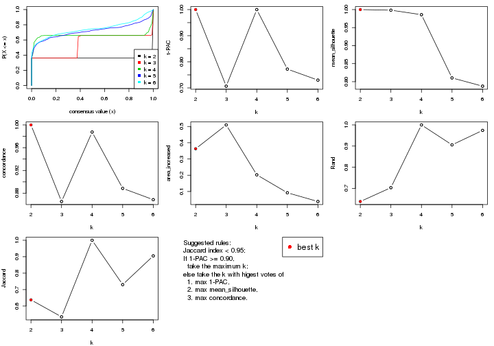
The numeric values for all these statistics can be obtained by get_stats().
get_stats(res)
#> k 1-PAC mean_silhouette concordance area_increased Rand Jaccard
#> 2 2 1.000 1.000 1.000 0.3629 0.638 0.638
#> 3 3 0.707 0.998 0.865 0.5095 0.703 0.535
#> 4 4 1.000 0.986 0.987 0.2025 1.000 1.000
#> 5 5 0.772 0.810 0.889 0.0921 0.906 0.730
#> 6 6 0.730 0.788 0.869 0.0384 0.974 0.905
suggest_best_k() suggests the best \(k\) based on these statistics. The rules are as follows:
suggest_best_k(res)
#> [1] 2
Following shows the table of the partitions (You need to click the show/hide
code output link to see it). The membership matrix (columns with name p*)
is inferred by
clue::cl_consensus()
function with the SE method. Basically the value in the membership matrix
represents the probability to belong to a certain group. The finall class
label for an item is determined with the group with highest probability it
belongs to.
In get_classes() function, the entropy is calculated from the membership
matrix and the silhouette score is calculated from the consensus matrix.
cbind(get_classes(res, k = 2), get_membership(res, k = 2))
#> class entropy silhouette p1 p2
#> SRR2453324 1 0 1 1 0
#> SRR2453325 1 0 1 1 0
#> SRR2453323 2 0 1 0 1
#> SRR2453321 1 0 1 1 0
#> SRR2453322 1 0 1 1 0
#> SRR2453320 2 0 1 0 1
#> SRR2453319 2 0 1 0 1
#> SRR2453318 2 0 1 0 1
#> SRR2453317 1 0 1 1 0
#> SRR2453316 1 0 1 1 0
#> SRR2453315 1 0 1 1 0
#> SRR2453312 1 0 1 1 0
#> SRR2453313 1 0 1 1 0
#> SRR2453314 1 0 1 1 0
#> SRR2453311 2 0 1 0 1
#> SRR2453310 1 0 1 1 0
#> SRR2453309 2 0 1 0 1
#> SRR2453308 1 0 1 1 0
#> SRR2453307 2 0 1 0 1
#> SRR2453306 1 0 1 1 0
#> SRR2453305 2 0 1 0 1
#> SRR2453303 1 0 1 1 0
#> SRR2453304 1 0 1 1 0
#> SRR2453302 2 0 1 0 1
#> SRR2453301 1 0 1 1 0
#> SRR2453299 2 0 1 0 1
#> SRR2453300 2 0 1 0 1
#> SRR2453371 1 0 1 1 0
#> SRR2453370 1 0 1 1 0
#> SRR2453369 1 0 1 1 0
#> SRR2453366 1 0 1 1 0
#> SRR2453367 1 0 1 1 0
#> SRR2453368 1 0 1 1 0
#> SRR2453365 1 0 1 1 0
#> SRR2453364 1 0 1 1 0
#> SRR2453363 1 0 1 1 0
#> SRR2453362 1 0 1 1 0
#> SRR2453361 1 0 1 1 0
#> SRR2453359 1 0 1 1 0
#> SRR2453360 1 0 1 1 0
#> SRR2453357 1 0 1 1 0
#> SRR2453356 1 0 1 1 0
#> SRR2453358 1 0 1 1 0
#> SRR2453355 1 0 1 1 0
#> SRR2453354 1 0 1 1 0
#> SRR2453353 1 0 1 1 0
#> SRR2453352 1 0 1 1 0
#> SRR2453351 1 0 1 1 0
#> SRR2453350 1 0 1 1 0
#> SRR2453349 1 0 1 1 0
#> SRR2453348 1 0 1 1 0
#> SRR2453346 1 0 1 1 0
#> SRR2453347 1 0 1 1 0
#> SRR2453345 1 0 1 1 0
#> SRR2453343 1 0 1 1 0
#> SRR2453344 1 0 1 1 0
#> SRR2453341 2 0 1 0 1
#> SRR2453340 1 0 1 1 0
#> SRR2453339 1 0 1 1 0
#> SRR2453337 1 0 1 1 0
#> SRR2453338 1 0 1 1 0
#> SRR2453336 2 0 1 0 1
#> SRR2453335 2 0 1 0 1
#> SRR2453334 2 0 1 0 1
#> SRR2453332 2 0 1 0 1
#> SRR2453333 2 0 1 0 1
#> SRR2453342 1 0 1 1 0
#> SRR2453331 1 0 1 1 0
#> SRR2453329 1 0 1 1 0
#> SRR2453330 1 0 1 1 0
#> SRR2453328 1 0 1 1 0
#> SRR2453326 1 0 1 1 0
#> SRR2453327 1 0 1 1 0
cbind(get_classes(res, k = 3), get_membership(res, k = 3))
#> class entropy silhouette p1 p2 p3
#> SRR2453324 3 0.603 0.997 0.376 0 0.624
#> SRR2453325 3 0.603 0.997 0.376 0 0.624
#> SRR2453323 2 0.000 1.000 0.000 1 0.000
#> SRR2453321 3 0.603 0.997 0.376 0 0.624
#> SRR2453322 3 0.603 0.997 0.376 0 0.624
#> SRR2453320 2 0.000 1.000 0.000 1 0.000
#> SRR2453319 2 0.000 1.000 0.000 1 0.000
#> SRR2453318 2 0.000 1.000 0.000 1 0.000
#> SRR2453317 3 0.603 0.997 0.376 0 0.624
#> SRR2453316 3 0.603 0.997 0.376 0 0.624
#> SRR2453315 3 0.603 0.997 0.376 0 0.624
#> SRR2453312 3 0.604 0.994 0.380 0 0.620
#> SRR2453313 3 0.604 0.994 0.380 0 0.620
#> SRR2453314 3 0.604 0.994 0.380 0 0.620
#> SRR2453311 2 0.000 1.000 0.000 1 0.000
#> SRR2453310 3 0.604 0.994 0.380 0 0.620
#> SRR2453309 2 0.000 1.000 0.000 1 0.000
#> SRR2453308 3 0.603 0.997 0.376 0 0.624
#> SRR2453307 2 0.000 1.000 0.000 1 0.000
#> SRR2453306 3 0.611 0.969 0.396 0 0.604
#> SRR2453305 2 0.000 1.000 0.000 1 0.000
#> SRR2453303 3 0.604 0.994 0.380 0 0.620
#> SRR2453304 3 0.603 0.997 0.376 0 0.624
#> SRR2453302 2 0.000 1.000 0.000 1 0.000
#> SRR2453301 3 0.604 0.994 0.380 0 0.620
#> SRR2453299 2 0.000 1.000 0.000 1 0.000
#> SRR2453300 2 0.000 1.000 0.000 1 0.000
#> SRR2453371 1 0.000 1.000 1.000 0 0.000
#> SRR2453370 1 0.000 1.000 1.000 0 0.000
#> SRR2453369 1 0.000 1.000 1.000 0 0.000
#> SRR2453366 1 0.000 1.000 1.000 0 0.000
#> SRR2453367 1 0.000 1.000 1.000 0 0.000
#> SRR2453368 1 0.000 1.000 1.000 0 0.000
#> SRR2453365 1 0.000 1.000 1.000 0 0.000
#> SRR2453364 1 0.000 1.000 1.000 0 0.000
#> SRR2453363 1 0.000 1.000 1.000 0 0.000
#> SRR2453362 1 0.000 1.000 1.000 0 0.000
#> SRR2453361 1 0.000 1.000 1.000 0 0.000
#> SRR2453359 1 0.000 1.000 1.000 0 0.000
#> SRR2453360 1 0.000 1.000 1.000 0 0.000
#> SRR2453357 1 0.000 1.000 1.000 0 0.000
#> SRR2453356 1 0.000 1.000 1.000 0 0.000
#> SRR2453358 1 0.000 1.000 1.000 0 0.000
#> SRR2453355 1 0.000 1.000 1.000 0 0.000
#> SRR2453354 1 0.000 1.000 1.000 0 0.000
#> SRR2453353 1 0.000 1.000 1.000 0 0.000
#> SRR2453352 1 0.000 1.000 1.000 0 0.000
#> SRR2453351 1 0.000 1.000 1.000 0 0.000
#> SRR2453350 1 0.000 1.000 1.000 0 0.000
#> SRR2453349 1 0.000 1.000 1.000 0 0.000
#> SRR2453348 1 0.000 1.000 1.000 0 0.000
#> SRR2453346 1 0.000 1.000 1.000 0 0.000
#> SRR2453347 1 0.000 1.000 1.000 0 0.000
#> SRR2453345 1 0.000 1.000 1.000 0 0.000
#> SRR2453343 1 0.000 1.000 1.000 0 0.000
#> SRR2453344 1 0.000 1.000 1.000 0 0.000
#> SRR2453341 2 0.000 1.000 0.000 1 0.000
#> SRR2453340 3 0.603 0.997 0.376 0 0.624
#> SRR2453339 3 0.603 0.997 0.376 0 0.624
#> SRR2453337 3 0.603 0.997 0.376 0 0.624
#> SRR2453338 3 0.603 0.997 0.376 0 0.624
#> SRR2453336 2 0.000 1.000 0.000 1 0.000
#> SRR2453335 2 0.000 1.000 0.000 1 0.000
#> SRR2453334 2 0.000 1.000 0.000 1 0.000
#> SRR2453332 2 0.000 1.000 0.000 1 0.000
#> SRR2453333 2 0.000 1.000 0.000 1 0.000
#> SRR2453342 1 0.000 1.000 1.000 0 0.000
#> SRR2453331 3 0.603 0.997 0.376 0 0.624
#> SRR2453329 3 0.603 0.997 0.376 0 0.624
#> SRR2453330 3 0.603 0.997 0.376 0 0.624
#> SRR2453328 3 0.603 0.997 0.376 0 0.624
#> SRR2453326 3 0.603 0.997 0.376 0 0.624
#> SRR2453327 3 0.603 0.997 0.376 0 0.624
cbind(get_classes(res, k = 4), get_membership(res, k = 4))
#> class entropy silhouette p1 p2 p3 p4
#> SRR2453324 3 0.0336 0.989 0.008 0.000 0.992 NA
#> SRR2453325 3 0.0188 0.990 0.004 0.000 0.996 NA
#> SRR2453323 2 0.0000 0.999 0.000 1.000 0.000 NA
#> SRR2453321 3 0.1297 0.978 0.016 0.000 0.964 NA
#> SRR2453322 3 0.1182 0.979 0.016 0.000 0.968 NA
#> SRR2453320 2 0.0000 0.999 0.000 1.000 0.000 NA
#> SRR2453319 2 0.0000 0.999 0.000 1.000 0.000 NA
#> SRR2453318 2 0.0000 0.999 0.000 1.000 0.000 NA
#> SRR2453317 3 0.0188 0.990 0.004 0.000 0.996 NA
#> SRR2453316 3 0.0188 0.990 0.004 0.000 0.996 NA
#> SRR2453315 3 0.0188 0.990 0.004 0.000 0.996 NA
#> SRR2453312 3 0.0336 0.989 0.008 0.000 0.992 NA
#> SRR2453313 3 0.0336 0.989 0.008 0.000 0.992 NA
#> SRR2453314 3 0.0336 0.989 0.008 0.000 0.992 NA
#> SRR2453311 2 0.0336 0.995 0.000 0.992 0.000 NA
#> SRR2453310 3 0.0188 0.990 0.004 0.000 0.996 NA
#> SRR2453309 2 0.0000 0.999 0.000 1.000 0.000 NA
#> SRR2453308 3 0.0469 0.988 0.012 0.000 0.988 NA
#> SRR2453307 2 0.0000 0.999 0.000 1.000 0.000 NA
#> SRR2453306 3 0.1716 0.936 0.064 0.000 0.936 NA
#> SRR2453305 2 0.0000 0.999 0.000 1.000 0.000 NA
#> SRR2453303 3 0.1109 0.977 0.028 0.000 0.968 NA
#> SRR2453304 3 0.1388 0.974 0.028 0.000 0.960 NA
#> SRR2453302 2 0.0000 0.999 0.000 1.000 0.000 NA
#> SRR2453301 3 0.0336 0.989 0.008 0.000 0.992 NA
#> SRR2453299 2 0.0000 0.999 0.000 1.000 0.000 NA
#> SRR2453300 2 0.0000 0.999 0.000 1.000 0.000 NA
#> SRR2453371 1 0.0469 0.985 0.988 0.000 0.012 NA
#> SRR2453370 1 0.0336 0.985 0.992 0.000 0.008 NA
#> SRR2453369 1 0.0779 0.981 0.980 0.000 0.016 NA
#> SRR2453366 1 0.0336 0.985 0.992 0.000 0.008 NA
#> SRR2453367 1 0.0469 0.984 0.988 0.000 0.012 NA
#> SRR2453368 1 0.0592 0.984 0.984 0.000 0.016 NA
#> SRR2453365 1 0.0336 0.985 0.992 0.000 0.008 NA
#> SRR2453364 1 0.0336 0.985 0.992 0.000 0.008 NA
#> SRR2453363 1 0.1452 0.966 0.956 0.000 0.036 NA
#> SRR2453362 1 0.0336 0.984 0.992 0.000 0.008 NA
#> SRR2453361 1 0.1913 0.954 0.940 0.000 0.040 NA
#> SRR2453359 1 0.0000 0.984 1.000 0.000 0.000 NA
#> SRR2453360 1 0.0188 0.985 0.996 0.000 0.004 NA
#> SRR2453357 1 0.1174 0.974 0.968 0.000 0.012 NA
#> SRR2453356 1 0.1174 0.974 0.968 0.000 0.012 NA
#> SRR2453358 1 0.0188 0.985 0.996 0.000 0.004 NA
#> SRR2453355 1 0.0336 0.985 0.992 0.000 0.008 NA
#> SRR2453354 1 0.0188 0.985 0.996 0.000 0.004 NA
#> SRR2453353 1 0.0000 0.984 1.000 0.000 0.000 NA
#> SRR2453352 1 0.0469 0.984 0.988 0.000 0.012 NA
#> SRR2453351 1 0.1820 0.958 0.944 0.000 0.036 NA
#> SRR2453350 1 0.0469 0.985 0.988 0.000 0.012 NA
#> SRR2453349 1 0.0000 0.984 1.000 0.000 0.000 NA
#> SRR2453348 1 0.0336 0.985 0.992 0.000 0.008 NA
#> SRR2453346 1 0.0469 0.985 0.988 0.000 0.012 NA
#> SRR2453347 1 0.1022 0.972 0.968 0.000 0.032 NA
#> SRR2453345 1 0.0188 0.983 0.996 0.000 0.000 NA
#> SRR2453343 1 0.1824 0.946 0.936 0.000 0.060 NA
#> SRR2453344 1 0.0592 0.984 0.984 0.000 0.016 NA
#> SRR2453341 2 0.0000 0.999 0.000 1.000 0.000 NA
#> SRR2453340 3 0.0188 0.990 0.004 0.000 0.996 NA
#> SRR2453339 3 0.0188 0.990 0.004 0.000 0.996 NA
#> SRR2453337 3 0.0188 0.990 0.004 0.000 0.996 NA
#> SRR2453338 3 0.0188 0.990 0.004 0.000 0.996 NA
#> SRR2453336 2 0.0336 0.995 0.000 0.992 0.000 NA
#> SRR2453335 2 0.0000 0.999 0.000 1.000 0.000 NA
#> SRR2453334 2 0.0000 0.999 0.000 1.000 0.000 NA
#> SRR2453332 2 0.0000 0.999 0.000 1.000 0.000 NA
#> SRR2453333 2 0.0000 0.999 0.000 1.000 0.000 NA
#> SRR2453342 1 0.0592 0.984 0.984 0.000 0.016 NA
#> SRR2453331 3 0.0188 0.990 0.004 0.000 0.996 NA
#> SRR2453329 3 0.0188 0.990 0.004 0.000 0.996 NA
#> SRR2453330 3 0.0188 0.990 0.004 0.000 0.996 NA
#> SRR2453328 3 0.0188 0.990 0.004 0.000 0.996 NA
#> SRR2453326 3 0.1297 0.978 0.016 0.000 0.964 NA
#> SRR2453327 3 0.1297 0.978 0.016 0.000 0.964 NA
cbind(get_classes(res, k = 5), get_membership(res, k = 5))
#> class entropy silhouette p1 p2 p3 p4 p5
#> SRR2453324 4 0.2864 0.78739 0.012 0.000 0.136 0.852 NA
#> SRR2453325 4 0.2771 0.79520 0.012 0.000 0.128 0.860 NA
#> SRR2453323 2 0.0404 0.99311 0.000 0.988 0.000 0.000 NA
#> SRR2453321 3 0.4225 0.58824 0.004 0.000 0.632 0.364 NA
#> SRR2453322 3 0.4251 0.57830 0.004 0.000 0.624 0.372 NA
#> SRR2453320 2 0.0404 0.99311 0.000 0.988 0.000 0.000 NA
#> SRR2453319 2 0.0404 0.99311 0.000 0.988 0.000 0.000 NA
#> SRR2453318 2 0.0000 0.99507 0.000 1.000 0.000 0.000 NA
#> SRR2453317 4 0.2136 0.81686 0.008 0.000 0.088 0.904 NA
#> SRR2453316 4 0.2513 0.80223 0.008 0.000 0.116 0.876 NA
#> SRR2453315 4 0.2707 0.78849 0.008 0.000 0.132 0.860 NA
#> SRR2453312 4 0.2723 0.77577 0.124 0.000 0.000 0.864 NA
#> SRR2453313 4 0.3055 0.74780 0.144 0.000 0.000 0.840 NA
#> SRR2453314 4 0.2771 0.77274 0.128 0.000 0.000 0.860 NA
#> SRR2453311 2 0.0000 0.99507 0.000 1.000 0.000 0.000 NA
#> SRR2453310 4 0.2358 0.79724 0.104 0.000 0.000 0.888 NA
#> SRR2453309 2 0.0000 0.99507 0.000 1.000 0.000 0.000 NA
#> SRR2453308 4 0.4425 0.11822 0.008 0.000 0.392 0.600 NA
#> SRR2453307 2 0.0404 0.99311 0.000 0.988 0.000 0.000 NA
#> SRR2453306 4 0.3812 0.68711 0.024 0.000 0.204 0.772 NA
#> SRR2453305 2 0.0404 0.99311 0.000 0.988 0.000 0.000 NA
#> SRR2453303 3 0.4617 0.44237 0.012 0.000 0.552 0.436 NA
#> SRR2453304 3 0.4604 0.46198 0.012 0.000 0.560 0.428 NA
#> SRR2453302 2 0.0404 0.99311 0.000 0.988 0.000 0.000 NA
#> SRR2453301 4 0.2612 0.78248 0.124 0.000 0.000 0.868 NA
#> SRR2453299 2 0.0000 0.99507 0.000 1.000 0.000 0.000 NA
#> SRR2453300 2 0.0000 0.99507 0.000 1.000 0.000 0.000 NA
#> SRR2453371 1 0.0162 0.90931 0.996 0.000 0.000 0.004 NA
#> SRR2453370 1 0.1444 0.88876 0.948 0.000 0.000 0.040 NA
#> SRR2453369 1 0.3352 0.76200 0.800 0.000 0.192 0.004 NA
#> SRR2453366 1 0.0290 0.90916 0.992 0.000 0.000 0.008 NA
#> SRR2453367 1 0.2806 0.81128 0.844 0.000 0.152 0.004 NA
#> SRR2453368 1 0.2795 0.81992 0.872 0.000 0.000 0.100 NA
#> SRR2453365 1 0.0290 0.90916 0.992 0.000 0.000 0.008 NA
#> SRR2453364 1 0.0510 0.90761 0.984 0.000 0.000 0.016 NA
#> SRR2453363 1 0.4392 0.42168 0.612 0.000 0.380 0.008 NA
#> SRR2453362 1 0.0794 0.90136 0.972 0.000 0.028 0.000 NA
#> SRR2453361 3 0.4394 0.58851 0.220 0.000 0.732 0.048 NA
#> SRR2453359 1 0.1121 0.89494 0.956 0.000 0.044 0.000 NA
#> SRR2453360 1 0.0162 0.90931 0.996 0.000 0.000 0.004 NA
#> SRR2453357 3 0.4113 0.56550 0.232 0.000 0.740 0.028 NA
#> SRR2453356 3 0.4184 0.48559 0.284 0.000 0.700 0.016 NA
#> SRR2453358 1 0.0162 0.90863 0.996 0.000 0.004 0.000 NA
#> SRR2453355 1 0.0609 0.90612 0.980 0.000 0.000 0.020 NA
#> SRR2453354 1 0.0324 0.90923 0.992 0.000 0.004 0.004 NA
#> SRR2453353 1 0.1792 0.87068 0.916 0.000 0.084 0.000 NA
#> SRR2453352 1 0.0609 0.90485 0.980 0.000 0.020 0.000 NA
#> SRR2453351 3 0.4479 0.53458 0.264 0.000 0.700 0.036 NA
#> SRR2453350 1 0.0290 0.90916 0.992 0.000 0.000 0.008 NA
#> SRR2453349 1 0.0290 0.90791 0.992 0.000 0.008 0.000 NA
#> SRR2453348 1 0.0404 0.90860 0.988 0.000 0.000 0.012 NA
#> SRR2453346 1 0.1197 0.89018 0.952 0.000 0.000 0.048 NA
#> SRR2453347 1 0.1571 0.88505 0.936 0.000 0.060 0.004 NA
#> SRR2453345 1 0.3508 0.69109 0.748 0.000 0.252 0.000 NA
#> SRR2453343 1 0.4907 0.00944 0.488 0.000 0.488 0.024 NA
#> SRR2453344 1 0.1041 0.90148 0.964 0.000 0.004 0.032 NA
#> SRR2453341 2 0.0162 0.99395 0.000 0.996 0.000 0.000 NA
#> SRR2453340 4 0.1605 0.83234 0.012 0.000 0.040 0.944 NA
#> SRR2453339 4 0.2548 0.79873 0.004 0.000 0.116 0.876 NA
#> SRR2453337 4 0.1538 0.83076 0.008 0.000 0.036 0.948 NA
#> SRR2453338 4 0.1618 0.83099 0.008 0.000 0.040 0.944 NA
#> SRR2453336 2 0.0290 0.99208 0.000 0.992 0.000 0.000 NA
#> SRR2453335 2 0.0510 0.98698 0.000 0.984 0.016 0.000 NA
#> SRR2453334 2 0.0000 0.99507 0.000 1.000 0.000 0.000 NA
#> SRR2453332 2 0.0000 0.99507 0.000 1.000 0.000 0.000 NA
#> SRR2453333 2 0.0000 0.99507 0.000 1.000 0.000 0.000 NA
#> SRR2453342 1 0.0671 0.90864 0.980 0.000 0.004 0.016 NA
#> SRR2453331 4 0.1270 0.82877 0.052 0.000 0.000 0.948 NA
#> SRR2453329 4 0.1408 0.82717 0.044 0.000 0.000 0.948 NA
#> SRR2453330 4 0.1331 0.82715 0.040 0.000 0.000 0.952 NA
#> SRR2453328 4 0.1357 0.82782 0.048 0.000 0.000 0.948 NA
#> SRR2453326 3 0.4151 0.59964 0.004 0.000 0.652 0.344 NA
#> SRR2453327 3 0.4196 0.59444 0.004 0.000 0.640 0.356 NA
cbind(get_classes(res, k = 6), get_membership(res, k = 6))
#> class entropy silhouette p1 p2 p3 p4 p5 p6
#> SRR2453324 4 0.2593 0.7673 0.000 0.000 0.148 0.844 0.008 NA
#> SRR2453325 4 0.2489 0.7819 0.000 0.000 0.128 0.860 0.012 NA
#> SRR2453323 2 0.1501 0.9520 0.000 0.924 0.000 0.000 0.076 NA
#> SRR2453321 3 0.3648 0.6447 0.000 0.000 0.740 0.240 0.016 NA
#> SRR2453322 3 0.3859 0.6313 0.004 0.000 0.724 0.252 0.016 NA
#> SRR2453320 2 0.1501 0.9520 0.000 0.924 0.000 0.000 0.076 NA
#> SRR2453319 2 0.1501 0.9520 0.000 0.924 0.000 0.000 0.076 NA
#> SRR2453318 2 0.0405 0.9599 0.000 0.988 0.000 0.000 0.008 NA
#> SRR2453317 4 0.2679 0.7942 0.000 0.000 0.096 0.864 0.040 NA
#> SRR2453316 4 0.2775 0.7902 0.000 0.000 0.104 0.856 0.040 NA
#> SRR2453315 4 0.2983 0.7706 0.000 0.000 0.136 0.832 0.032 NA
#> SRR2453312 4 0.3566 0.7132 0.156 0.000 0.000 0.788 0.056 NA
#> SRR2453313 4 0.4378 0.6579 0.196 0.000 0.012 0.732 0.056 NA
#> SRR2453314 4 0.3739 0.6917 0.176 0.000 0.000 0.768 0.056 NA
#> SRR2453311 2 0.0820 0.9554 0.000 0.972 0.000 0.000 0.016 NA
#> SRR2453310 4 0.2908 0.7526 0.104 0.000 0.000 0.848 0.048 NA
#> SRR2453309 2 0.0260 0.9605 0.000 0.992 0.000 0.000 0.008 NA
#> SRR2453308 4 0.4097 -0.0311 0.000 0.000 0.488 0.504 0.008 NA
#> SRR2453307 2 0.1501 0.9520 0.000 0.924 0.000 0.000 0.076 NA
#> SRR2453306 4 0.5226 0.5287 0.060 0.000 0.276 0.632 0.028 NA
#> SRR2453305 2 0.1501 0.9520 0.000 0.924 0.000 0.000 0.076 NA
#> SRR2453303 3 0.3989 0.5925 0.012 0.000 0.696 0.280 0.012 NA
#> SRR2453304 3 0.3948 0.6038 0.012 0.000 0.704 0.272 0.012 NA
#> SRR2453302 2 0.1501 0.9520 0.000 0.924 0.000 0.000 0.076 NA
#> SRR2453301 4 0.3408 0.7214 0.152 0.000 0.000 0.800 0.048 NA
#> SRR2453299 2 0.0260 0.9605 0.000 0.992 0.000 0.000 0.008 NA
#> SRR2453300 2 0.0260 0.9605 0.000 0.992 0.000 0.000 0.008 NA
#> SRR2453371 1 0.1180 0.8929 0.960 0.000 0.012 0.016 0.012 NA
#> SRR2453370 1 0.2208 0.8528 0.908 0.000 0.004 0.052 0.032 NA
#> SRR2453369 1 0.3528 0.6306 0.700 0.000 0.296 0.000 0.004 NA
#> SRR2453366 1 0.0551 0.8922 0.984 0.000 0.004 0.008 0.004 NA
#> SRR2453367 1 0.4232 0.6687 0.704 0.000 0.252 0.004 0.036 NA
#> SRR2453368 1 0.2956 0.8109 0.860 0.000 0.008 0.092 0.036 NA
#> SRR2453365 1 0.0870 0.8886 0.972 0.000 0.004 0.012 0.012 NA
#> SRR2453364 1 0.0717 0.8879 0.976 0.000 0.000 0.016 0.008 NA
#> SRR2453363 3 0.4293 0.0527 0.448 0.000 0.536 0.004 0.012 NA
#> SRR2453362 1 0.2420 0.8746 0.888 0.000 0.076 0.004 0.032 NA
#> SRR2453361 3 0.1949 0.7170 0.088 0.000 0.904 0.004 0.004 NA
#> SRR2453359 1 0.2722 0.8660 0.872 0.000 0.088 0.004 0.032 NA
#> SRR2453360 1 0.1116 0.8948 0.960 0.000 0.028 0.004 0.008 NA
#> SRR2453357 3 0.2163 0.7167 0.096 0.000 0.892 0.004 0.008 NA
#> SRR2453356 3 0.2615 0.6959 0.136 0.000 0.852 0.000 0.008 NA
#> SRR2453358 1 0.1478 0.8932 0.944 0.000 0.032 0.004 0.020 NA
#> SRR2453355 1 0.0993 0.8824 0.964 0.000 0.000 0.024 0.012 NA
#> SRR2453354 1 0.1155 0.8939 0.956 0.000 0.036 0.004 0.004 NA
#> SRR2453353 1 0.3166 0.8201 0.816 0.000 0.156 0.000 0.024 NA
#> SRR2453352 1 0.2177 0.8846 0.908 0.000 0.052 0.008 0.032 NA
#> SRR2453351 3 0.2451 0.7156 0.108 0.000 0.876 0.004 0.008 NA
#> SRR2453350 1 0.1313 0.8945 0.952 0.000 0.028 0.004 0.016 NA
#> SRR2453349 1 0.1801 0.8849 0.924 0.000 0.056 0.004 0.016 NA
#> SRR2453348 1 0.0622 0.8937 0.980 0.000 0.008 0.012 0.000 NA
#> SRR2453346 1 0.2011 0.8549 0.912 0.000 0.004 0.064 0.020 NA
#> SRR2453347 1 0.2734 0.8248 0.840 0.000 0.148 0.004 0.008 NA
#> SRR2453345 1 0.4084 0.3682 0.588 0.000 0.400 0.000 0.012 NA
#> SRR2453343 3 0.4860 0.2253 0.388 0.000 0.564 0.008 0.036 NA
#> SRR2453344 1 0.0964 0.8941 0.968 0.000 0.012 0.016 0.004 NA
#> SRR2453341 2 0.1075 0.9463 0.000 0.952 0.000 0.000 0.048 NA
#> SRR2453340 4 0.1745 0.8088 0.000 0.000 0.068 0.920 0.012 NA
#> SRR2453339 4 0.3186 0.7844 0.000 0.000 0.100 0.836 0.060 NA
#> SRR2453337 4 0.1781 0.8090 0.000 0.000 0.060 0.924 0.008 NA
#> SRR2453338 4 0.1982 0.8073 0.000 0.000 0.068 0.912 0.016 NA
#> SRR2453336 2 0.1657 0.9341 0.000 0.928 0.000 0.000 0.056 NA
#> SRR2453335 2 0.3138 0.8911 0.000 0.832 0.000 0.000 0.060 NA
#> SRR2453334 2 0.0260 0.9609 0.000 0.992 0.000 0.000 0.008 NA
#> SRR2453332 2 0.0000 0.9610 0.000 1.000 0.000 0.000 0.000 NA
#> SRR2453333 2 0.0000 0.9610 0.000 1.000 0.000 0.000 0.000 NA
#> SRR2453342 1 0.1364 0.8929 0.944 0.000 0.048 0.004 0.004 NA
#> SRR2453331 4 0.1167 0.8076 0.020 0.000 0.008 0.960 0.012 NA
#> SRR2453329 4 0.1257 0.8024 0.028 0.000 0.000 0.952 0.020 NA
#> SRR2453330 4 0.1245 0.8021 0.032 0.000 0.000 0.952 0.016 NA
#> SRR2453328 4 0.1049 0.8039 0.032 0.000 0.000 0.960 0.008 NA
#> SRR2453326 3 0.3417 0.6755 0.004 0.000 0.788 0.188 0.016 NA
#> SRR2453327 3 0.3596 0.6499 0.000 0.000 0.748 0.232 0.016 NA
Heatmaps for the consensus matrix. It visualizes the probability of two samples to be in a same group.
consensus_heatmap(res, k = 2)
consensus_heatmap(res, k = 3)
consensus_heatmap(res, k = 4)
consensus_heatmap(res, k = 5)
consensus_heatmap(res, k = 6)
Heatmaps for the membership of samples in all partitions to see how consistent they are:
membership_heatmap(res, k = 2)

membership_heatmap(res, k = 3)
membership_heatmap(res, k = 4)
membership_heatmap(res, k = 5)
membership_heatmap(res, k = 6)
As soon as we have had the classes for columns, we can look for signatures which are significantly different between classes which can be candidate marks for certain classes. Following are the heatmaps for signatures.
Signature heatmaps where rows are scaled:
get_signatures(res, k = 2)

get_signatures(res, k = 3)
get_signatures(res, k = 4)
get_signatures(res, k = 5)
get_signatures(res, k = 6)
Signature heatmaps where rows are not scaled:
get_signatures(res, k = 2, scale_rows = FALSE)

get_signatures(res, k = 3, scale_rows = FALSE)
get_signatures(res, k = 4, scale_rows = FALSE)
get_signatures(res, k = 5, scale_rows = FALSE)
get_signatures(res, k = 6, scale_rows = FALSE)
Compare the overlap of signatures from different k:
compare_signatures(res)
get_signature() returns a data frame invisibly. TO get the list of signatures, the function
call should be assigned to a variable explicitly. In following code, if plot argument is set
to FALSE, no heatmap is plotted while only the differential analysis is performed.
# code only for demonstration
tb = get_signature(res, k = ..., plot = FALSE)
An example of the output of tb is:
#> which_row fdr mean_1 mean_2 scaled_mean_1 scaled_mean_2 km
#> 1 38 0.042760348 8.373488 9.131774 -0.5533452 0.5164555 1
#> 2 40 0.018707592 7.106213 8.469186 -0.6173731 0.5762149 1
#> 3 55 0.019134737 10.221463 11.207825 -0.6159697 0.5749050 1
#> 4 59 0.006059896 5.921854 7.869574 -0.6899429 0.6439467 1
#> 5 60 0.018055526 8.928898 10.211722 -0.6204761 0.5791110 1
#> 6 98 0.009384629 15.714769 14.887706 0.6635654 -0.6193277 2
...
The columns in tb are:
which_row: row indices corresponding to the input matrix.fdr: FDR for the differential test. mean_x: The mean value in group x.scaled_mean_x: The mean value in group x after rows are scaled.km: Row groups if k-means clustering is applied to rows.UMAP plot which shows how samples are separated.
dimension_reduction(res, k = 2, method = "UMAP")
dimension_reduction(res, k = 3, method = "UMAP")

dimension_reduction(res, k = 4, method = "UMAP")
dimension_reduction(res, k = 5, method = "UMAP")

dimension_reduction(res, k = 6, method = "UMAP")
Following heatmap shows how subgroups are split when increasing k:
collect_classes(res)
If matrix rows can be associated to genes, consider to use functional_enrichment(res,
...) to perform function enrichment for the signature genes. See this vignette for more detailed explanations.
sessionInfo()
#> R version 3.6.0 (2019-04-26)
#> Platform: x86_64-pc-linux-gnu (64-bit)
#> Running under: CentOS Linux 7 (Core)
#>
#> Matrix products: default
#> BLAS: /usr/lib64/libblas.so.3.4.2
#> LAPACK: /usr/lib64/liblapack.so.3.4.2
#>
#> locale:
#> [1] LC_CTYPE=en_GB.UTF-8 LC_NUMERIC=C LC_TIME=en_GB.UTF-8
#> [4] LC_COLLATE=en_GB.UTF-8 LC_MONETARY=en_GB.UTF-8 LC_MESSAGES=en_GB.UTF-8
#> [7] LC_PAPER=en_GB.UTF-8 LC_NAME=C LC_ADDRESS=C
#> [10] LC_TELEPHONE=C LC_MEASUREMENT=en_GB.UTF-8 LC_IDENTIFICATION=C
#>
#> attached base packages:
#> [1] grid stats graphics grDevices utils datasets methods base
#>
#> other attached packages:
#> [1] genefilter_1.66.0 ComplexHeatmap_2.3.1 markdown_1.1 knitr_1.26
#> [5] GetoptLong_0.1.7 cola_1.3.2
#>
#> loaded via a namespace (and not attached):
#> [1] circlize_0.4.8 shape_1.4.4 xfun_0.11 slam_0.1-46
#> [5] lattice_0.20-38 splines_3.6.0 colorspace_1.4-1 vctrs_0.2.0
#> [9] stats4_3.6.0 blob_1.2.0 XML_3.98-1.20 survival_2.44-1.1
#> [13] rlang_0.4.2 pillar_1.4.2 DBI_1.0.0 BiocGenerics_0.30.0
#> [17] bit64_0.9-7 RColorBrewer_1.1-2 matrixStats_0.55.0 stringr_1.4.0
#> [21] GlobalOptions_0.1.1 evaluate_0.14 memoise_1.1.0 Biobase_2.44.0
#> [25] IRanges_2.18.3 parallel_3.6.0 AnnotationDbi_1.46.1 highr_0.8
#> [29] Rcpp_1.0.3 xtable_1.8-4 backports_1.1.5 S4Vectors_0.22.1
#> [33] annotate_1.62.0 skmeans_0.2-11 bit_1.1-14 microbenchmark_1.4-7
#> [37] brew_1.0-6 impute_1.58.0 rjson_0.2.20 png_0.1-7
#> [41] digest_0.6.23 stringi_1.4.3 polyclip_1.10-0 clue_0.3-57
#> [45] tools_3.6.0 bitops_1.0-6 magrittr_1.5 eulerr_6.0.0
#> [49] RCurl_1.95-4.12 RSQLite_2.1.4 tibble_2.1.3 cluster_2.1.0
#> [53] crayon_1.3.4 pkgconfig_2.0.3 zeallot_0.1.0 Matrix_1.2-17
#> [57] xml2_1.2.2 httr_1.4.1 R6_2.4.1 mclust_5.4.5
#> [61] compiler_3.6.0